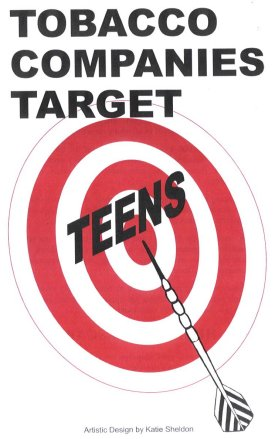
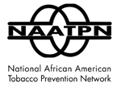
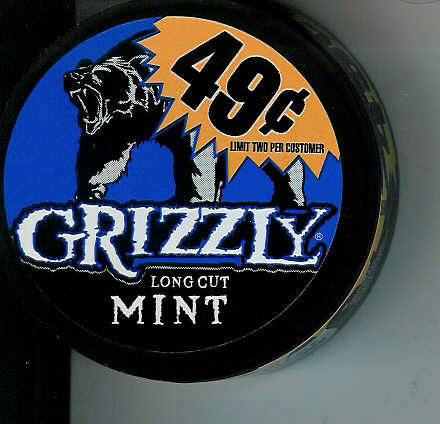
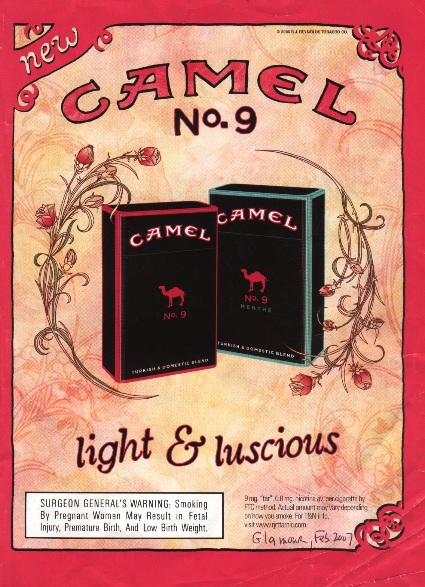
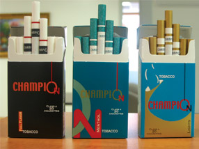
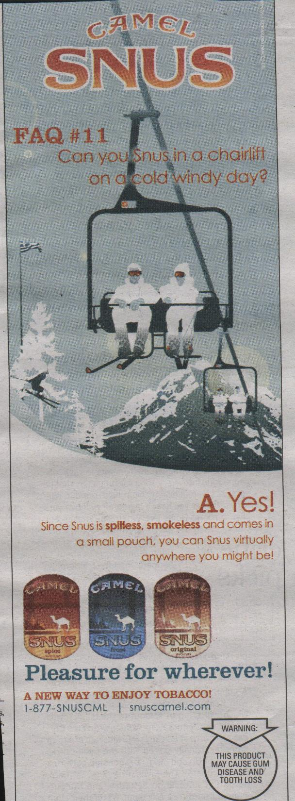
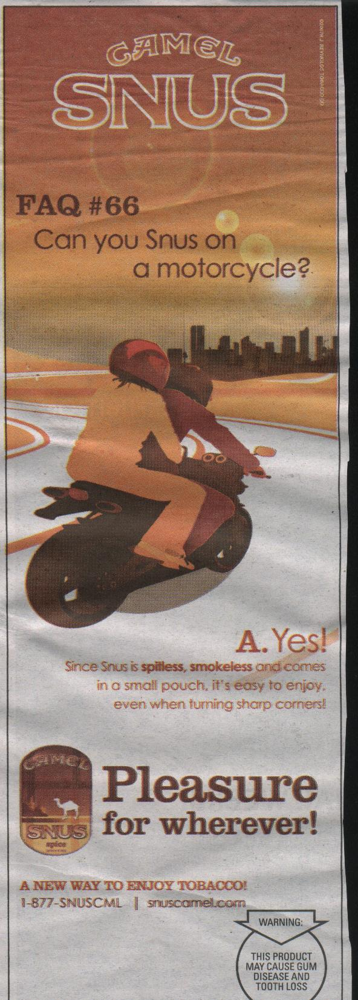

<html>
<head>
<p>
<body background="orange_bkgd.jpg" text="#000000">
&lt;!--
&lt;br&gt;<br>
<center>
<b><i>Copyright Notice: The content of this web module may not be copied <br>
or used in any manner without permission of the authors.</i> </center>
<a href="ThinkingTobacco1.jpg">
</a>
  <p align="right">Continuously Updated</p>  <br> <br> <br> <br>
<center>
<blockquote> <br><br><br>
<font size="5" color="black">Click on address below to go to the new system:<br>
<a href="http://snus-news.blogspot.com/">NEWS_ON_SNUS_&_OTHER_TOBACCO PRODUCTS(OTP)</a>
<br><br><br>
</blockquote>
<font size="6" color="FFFFFF"><u>SNUS Module – News Briefs</u></font> <br><br>

<center>
<h2><u>NO</u> to Smokeless, Spitless Pouch Tobacco - 
<a href="#">
<u>
It's the Kids</u></a></h2>
<font size="3" face="Courier New"><a href="Carmona_17th_US_Surgeon_General.jpg">Dr. Richard Carmona,
 17th Surgeon General of the USA</a> <br>
"Our Highest Priority Has To Be Keeping Children From Beginning
To Use Tobacco Products"</font>
<br>
<font size="2" face="Courier New">Professor John Britton a proponent of SNUS as a harm reduction  solution has stated, 
<a href="http://www.smokefree.org.uk/wwwdev/news_article.asp?id=53">
"It's their
(tobacco companies) job to sell as much tobacco as possible, <font style="Background-color:yellow">
so they will be targeting non-smokers rather 
than current ones, that's the worry."</font> </a>  Dr. Britton related News Briefs: 
<a href="SNUS-newsbriefs_index.html#100607">October 6, 2007</a> and
<a href="SNUS-newsbriefs_index.html#100207">October 2, 2007</a>.</font>
<br>
<font size="2" face="Courier New">Murray Kessler, Chief Executive Officer of UST, Inc - the world's leading 
producer of moist smokeless tobacco products - tells us 
<a href="SNUS-newsbriefs_index.html#120507b">
that nine out of 10 smokers that try smokeless reject the product.</a></font>  
<br>
<a href="SNUS-newsbriefs_index.html#022108c">
<font size="3" face="Courier New" style="Background-color:red">On Behalf of the U.S. Supreme Court Justices<br>Supreme Court Justice Ruth Bader Ginsburg,
 "Tobacco use by children and adolescents
 may be the single most significant threat to public health in the United States," she writes. "But no comprehensive
 federal law currently exists to prevent tobacco sellers from exploiting the underage market."</font></a> 
<h3><font color="FFFFFF" face="Arial Black">(SNUS = Swedish-style Oral Sucking Tobacco..<font size="2">
<a href="Simon_Chapman.jpg"><i>Simon Chapman</i></a></font>)</font></h3>
<h3>Samuel Garten, Ph.D., M.S., M.S., CPT, ACPT, NREMT-B and R. Victor Falkner, M.A., M.S., M.A.L.S.</h3>
</center>
<a href="Snus_Abstract_July_2006a.html">
</a> To Provide Public Awareness
<br><br><br>
<blockquote><font size="4" color="FFFFFF" face="Arial Black"><u>SNUS Fact:</u> 
Remember the rule of thumb that seems to always hang-true: that if a tobacco company comes out in favor of something – 
this signals that there must be something wrong. The only safe way to break the nicotine dependency is to quit using any
 form of tobacco. <br><br> 
<a href="Gunilla_Bolinder.jpg">
Dr. Gunilla Bolinder</a>, Director of Education at Stockholm's Karolinska University Hospital points out, "To sing the praises 
of SNUS is a deathblow to over 20 years of hard tobacco preventive work. SNUS only saves the life of the tobacco industry" 
(SNUS gets the thumbs-down NEWS-24 1/31/2007).</font>
<br><br> <br>
<hr align="center" noshade="noshade" size="2" width="950">
<font size="4" color="FFFFFF" face="Comic Sans MS"><b><u>Saying of the Month:</u></font>&nbsp;"There is no
 scientific evidence 
whatsoever that smokers are able to switch to smokeless tobacco and remain switched," 
<a href="Thmoas_Glynn_ACS.JPG">
Dr.Thomas Glynn, the Director of Cancer
 Science and Trends</a> at the American Cancer Society <a href="http://news.independent.co.uk/health/article3041275.ece">
(Snusing: the new way to give up smoking</a>, Susie Rushton, 
The Independent, October 9, 2007) "There is no evidence smokeless tobacco can help people quit smoking. There are no studies 
we would consider sufficient." Dr. Terry Pechacek, Associate Director of Science at the Centers for Disease Control
Office on Smoking and Health. (SNUS the BUMP, Nordic Reach (The Scandinavian Lifestyle Quarterly}, No.17 Volume XIX, 2007, p53)
<hr align="center" size="6" width="1http://www.freeservers.com/terms-of-service.htm
Terms of Service0%" color="#0099FF" noshade>
<br>
<a name="BOTTOM"></a>
<a href="SNUS-newsbriefs_index.html#TOP"><font size="2">BOTTOM</font></a>
<br><br>

July 14, 2008 - 
C-store shorts.. RJR has tried just about every possible approach to get tobacco users to try Camel SNUS.
 Here's the latest - they hire people to come into c-stores and tape a coupon for a free can of Camel SNUS to 
the back of all RJR cigarette packs in stock. This promotion must be part of RJR's education and public
awareness program. <br><br>
In Raleigh a pack of Newport sells for $3.74 (state tax 35 cents - 7th lowest) - then PM insists 
that their menthols must sells at the same price and RJR insists that Kool sell at 10 cents less.<br><br>
This one store has an agreement with RJR that no pack of cigarettes can sell for less than Doral at $2.99.
<br><br>
The owner would like to sell deep discount brands $2/pack but he would lose the incentive he gets from RJR.
Premium moist snuff: Skoal Copenhagen (now selling for $4.69 can - the same for Conwood's - Kodiak) 
  special  coming  2-cans  for $6.00 - buyer can pick the 2-cans. The special where the 2-cans are 
already packaged do not go over as well.<br><br>
Skoal ad from Popular Mechanics 12/2007:
http://goodhealth.freeservers.com/Skoal_ad_Popular_Mechanics_12_2007.jpg <br><br>
 <a href="SNUS-newsbriefs_index.html#062408b">
Last c-store store update..</a>
<br><br><br>
<a href="graduate_high_school-jpgs.html">
</a>
July 13, 2008 - North Carolina (NC) lawmakers wonder why so many kids are not graduating high school?? 
Governor Easley, in his last year in office, released his recommended state budget 
adjustments for the 2008-2009 fiscal year, which would have increased tax on cigarettes and alcohol. 
The increase in the cigarette tax from 35 cents per pack (7th lowest in U.S.) to 55 cents (12th lowest in U.S.)
would have 
 started on September 1, 2008 so that about $100 million could be generated to help pay for 
a proposed average 7-percent increase for teachers and to boost the state's 
struggling effort to reform its mental health care system.
<a href="SNUS-newsbriefs_index.html#071707a" ">
It turned out to be a "win-win" situation for the state the last time NC raised 
taxes on cigarettes (in mid-2006) cigarette sales fell but revenues from the additional tax increased.</a>
North Carolina educators still make less than the national average. 
State tobacco control people chimed in that the increase in 
the cigarette tax proposed by Easley should be much higher. 
But legislative leaders did not have much of an appetite to raise taxes or fees in an election year.
Some argue the increase in the cigarette tax would be unfair to the poor in the state
but this is the exact group the increase in taxes is targeting. It's a know fact that with the 
increase in cost of cigarettes will result in kids deciding not to use tobacco and smokers more likely to quit. 
In this <a href="SNUS-newsbriefs_index.html#061508">difficult economic times</a> there's 
even a greater chance the smoker would want to 
quit and put the money saved in doing a better job providing for his(her) family.
The final budget called for about a 3% increase for teachers. During negotiations Easley 
accused legislative of seeking to "shaft" public school teachers in favor 
of a tax cut benefiting the wealthy. <a href="http://www.newsobserver.com/politics/story/1125065.html">
Taxes, raises may stymie budget</a> by By Michael Biesecker, The News & Observer, 6/30/2008) 
In New York  where the tax on cigarettes was just raised calls to the quit line along with requests for 
nicotine patches have surged. (<a href="http://cityroom.blogs.nytimes.com/2008/07/10/cigarette-tax-increase-sparks-a-surge-in-311-calls/">
Cigarette Tax Increase Brings a Surge in 311 Calls</a> by Sewell Chan, NY Times, 7/14/2008)
References: <a href="http://www.nbc17.com/midatlantic/ncn/news.apx.-content-articles-NCN-2008-05-12-0004.html">
Easley's $21.5 Billion Budget Would Increase Cigarette, Alcohol Taxes</a> by the Associated Press, May 12, 2008 and
<a href="http://www.msnbc.msn.com/id/25577158/wid/11915773/">NC General Assembly Gives Initial Budget OK</a>,
 MSNBC, 7/7/2008. 
 <font size="4">Click on image to enlarge..</font> (tobaccowatch.org)
<br><br><br>
<a href="smoking_movies_Cut_scene.gif">
</a>
July 12, 2008 -  Studios reached an agreement yesterday to place anti-smoking ads on new movie DVDs (rated
G, PG or PG-13).. 
According to the deal reached between Sony Pictures, Universal Studios, Warner Bros.,
 Paramount Pictures, Walt Disney Studios and Twentieth Century Fox,
 the anti-smoking announcement will be introduced 
in the opening minutes of DVDs of all new movies with smoking scenes. 
Dan Glickman, chief executive of the Motion Picture Association of America, 
said the industry’s intention was to notify parents “about smoking depictions in films so they can make 
informed decisions.”
Reference: <a href="http://www.efluxmedia.com/news_Anti_Smoking_Announcements_On_New_DVDs_20240.html">
Anti-Smoking Announcements On New DVDs</a> by Diane Smith, eFluxMedia.com, 7/12/2008.
Dr. Cornelia Pechmann: Teenagers are more likely to think smoking is "cool" after they've watched
 their Hollywood idols light up on screen - unless they've just seen an
 advertisement reminding them of the dangers of smoking. (<a href="http://www.today.uci.edu/news/release_detail.asp?key=284">
Movies May Be Contributing 
To Rise In Teen Smoking, UC Irvine Study Shows</a>) 
Some related news briefs: <a href="SNUS-newsbriefs_index.html#072607b">July 26, 2007</a> 
<a href="SNUS-newsbriefs_index.html#072507">July 25, 2007</a> and
<a href="SNUS-newsbriefs_index.html#051107"> May 11, 2007</a>.
 <font size="4">Click on image to enlarge..</font>
<br><br><br>
<a href="cigarillos_2.jpg">
</a>
July 11, 2008 - Canadian: a  bill introduced to snuff out drive to recruit young smokers.. 
MP Judy Wasylycia-Leis, from Winnipeg North a member for the New Democratic Part has proposed
legislation to strengthen Canada's tobacco laws and to protect young
Canadians from new and dangerous novelty tobacco products.  The bill would amend the federal Tobacco Act
and curb the marketing of cigarillos.   In recent years, candy-flavored cigarillos and other novelty tobacco
products have become a significant threat to Canadian youth. <font size="4" style="Background-color:orange">Health
Canada data released at the end of May shows that sales of cigarillos
have grown by over 300% per year between 2001 and 2006, from fewer than
50,000 units to over 80 million.</font> 
The legislation closes loopholes by:
requiring that cigarillos be sold in the same size packages as
cigarettes, requiring cigarillos to carry the same type of health
warnings as cigarettes, banning the use of candy, liquor and other
flavorings and banning the sale of 'blunts', another novelty tobacco product.
The Canadian Coalition for Action on Tobacco is national coalition of
health organizations are strongly back and aspect speedy passage of this bill.
References: <a href="http://www.reuters.com/article/pressRelease/idUS157128+16-Jun-2008+MW20080616">
 Health Groups Applaud Bill to Protect Youth From Novelty Tobacco Products</a>, Reuters, 6/16/2008 and 
<a href="http://www.ndp.ca/page/6531">NDP bill will snuff out drive to recruit young smokers</a>, 
NDP, 6/16/2008. Related news briefs:  <a href="SNUS-newsbriefs_index.html#012308a">Still sucking our youngsters in..</a>; 
<a href="SNUS-newsbriefs_index.html#112707">Quebec - Teens Switch from Cigarettes to Cigarillos..</a>
<font size="4">Click on image to enlarge..</font> (TobaccoWatch.org)
<br><br><br>
<a href="kenya_map.jpg">
</a>
July 10, 2008 - Smoking ban starts in Nairobi, the capital of Kenya (a member of the 
<a href="FCTCgen.html">
FCTC</a>) - they may be
 serious this time.. 
As of Wednesday, July 10, 2008 people who smoke in public in Nairobi face a fine or 
up to six months in jail. Kenya's government has already implemented such bans in 
Mombasa and the Rift Valley town of Nakuru, saying it wants to cut the harmful effects of secondhand smoke.
 The authorities say some 8,000 Kenyans die every year from smoking.  
Nairobi town clerk John Gakuo told a news conference 
first-time offenders will either be 
fined 2,000 shillings (about $30) or be jailed for six months. 
Repeat offenders face a bigger fine or up to nine months in prison. 
Small local pubs would be exempted, Gakuo said, but restaurants must
 provide separate smoking areas if they want to let their customers light up.
Last year a Kenyan court suspended a smoking ban ordered by the Health Ministry
 after it was challenged by the Kenyan unit of British American Tobacco Plc 
(majority local market share, about 80% of the legitimate cigarette trade)
and a local manufacturer (probably Mastermind Tobacco Limited - TW).
The two companies estimated that they would lose more than $10 million each if the legislation was enforced.
 The new law bans the sale of cigarettes to people under 18 years and selling tobacco 
in a packet of less than 10 cigarettes. It also forbids promoting tobacco by sponsoring sports,
 cultural, educational or entertainment activities 
and branding of buildings other than those owned or leased by manufacturers.
Smoking earns the Kenyan government about five billion shillings (76 million dollars or 49 million euro)
 a year in taxes, but costs five times as 
much in disease, disability and death, according to official figures.
On 13th June 2008, the Finance Ministers of Uganda, Kenya and Tanzania simultaneously read their 
2008/2009 budget speeches to their respective nations. Each budget of these three East African countries
proposed to increase excise duties on cigarettes. (<a href="http://blogsofbainbridge.typepad.com/jackie/kenya/index.html">
Uganda, Kenya and Tanzania budgets raise cigarette taxes</a>)
References: <a href="http://www.alertnet.org/thenews/newsdesk/L11808541.htm">
Kenyan capital Nairobi starts smoking ban</a> by Victor Adar, Reuters, 7/11/2008;
<a href="http://health.yahoo.com/news/afp/kenyahealthtobaccosmokingcrime_080707194538.html">
Kenyan smoking ban due to take effect: official</a> by AFP, health.yahoo/com, 7/7/2008.
<font size="4">Click on image to enlarge..</font>
<br><br><br>
<a href="cigarette_burning_.jpg">
</a>
July 10, 2008 - Fire - Safe Cigarettes for all 50 states - NOW.. On  July 1, 2008 3-more states -
Connecticut (signed into law July 10, 2007), Maryland (signed into law May 17, 2007), 
 (and Utah (signed into law March 2007) - as well as the District of Columbia (signed into law May 13, 2008), are implementing fire-safe cigarettes laws on July 1, which require that any cigarette manufactured or sold in these 
states must have a reduced propensity to burn when left unattended.  
The Coalition for fire-safe cigarettes has been calling for is calling for manufacturers
 to immediately produce and market only cigarettes that adhere to an established fire safety performance standard.
So far <a href="SNUS-newsbriefs_index.html#032508">Liggett plans cigarette fire safety compliance by January 2009.</a>
Cigarettes and lighted tobacco are the leading causes of fire deaths and the third 
leading cause of fire-related injuries in the United States. 
In Canada fire-safe cigarettes are required nationwide.
<a href="SNUS-newsbriefs_index.html#032708">Starting in January 2009 Australia may require all cigarettes manufactured
 and sold throughout Australia to be self-extinguishing.</a>
These fire-safe cigarettes are designed to stop burning when left unattended, but otherwise 
they have the same characteristics as other cigarettes. The Sofa Super Store, 
<a href="SNUS-newsbriefs_index.html#062307">
Charleston, SC fire 
in June 2007 that killed nine 
people</a> most likely would not have been prevented by the use of fire-safe cigarettes. 
<a href="http://www.charleston.net/news/2008/jul/10/atf_cigarette_likely_cause47026/">A report by the Bureau of Alcohol, Tobacco, Firearms and Explosives (ATF) indicated someone
 probably ignited the fire by tossing a lit cigarette near trash and discarded furniture.</a>
<a href="http://www.firesafecigarettes.org/categoryList.asp?categoryID=9&amp;URL=Home%20-%20The%20Coalition%20for%20Fire%20Safe%20Cigarettes">
More information can be found on the Coalition for Fire-Safe Cigarettes website.</a> For more 
news briefs regarding
fire-safe cigarettes do a random search. 
<font size="4">Click on image to enlarge..</font> (TobaccoWatch.org)
<br><br><br>

July 10, 2008 - Northern Ireland raising age for sale of tobacco from 16 to 18 joining the other three
United Kingdom (UK) countries. (The UK is a union of four constituent countries:
 England, Northern Ireland, Scotland and Wales.) Health Minister Michael McGimpsey has announce, effective 
September 1, 2008, that the legal age at which people can buy tobacco products will rise from 16 to 18.
Mr. McGimpsey: "It is clear that we must do all we can to deter our children and young people 
from taking up the smoking habit. I understand that raising the age of sale will not, in itself,
 solve the problems of children's smoking. It is one step along the way. "Education programmes
and promotional campaigns, highlighting the dangers of smoking, will of course continue." 
Reference: <a href="http://news.bbc.co.uk/2/hi/uk_news/northern_ireland/7482494.stm">
 Tobacco buying age to rise to 18</a>, BBC News, 6/30/2008.
Related news brief: <a href="SNUS-newsbriefs_index.html#010808">Raise Age to 21 to Purchase Tobacco Products..</a>
<a href="http://www.healthpromotionagency.org.uk/Resources/strategies/tobplan.htm">Northern 
Ireland's Five Year Tobacco Action Plan.</a>
<font size="4" style="Background-color:orange">The European Union, in which the UK is a member, has in place 
a ban on the sale of oral snuff.</font> (TobaccoWatch.org) 
<br><br><br>

July 9, 2008 - National Association of Tobacco Outlets (NATO) launches initiative to educate legislators
about the negative aspects of further increases to cigarette and tobacco tax rates.. According 
to the group's most recent NATO E-News bulletin, this effort involved mailing 
a personalized letter to more than 7,100 state legislators and all 50 state governors warning 
them that an increasing number of states that have raised cigarette and tobacco taxes in the past 18 
months have either collected less tax revenue than before the latest tax increase or collected far less
 than the estimated amount of additional revenue.
or collected far less than the estimated amount of additional revenue.  
This initiative by NATO will include articles to be published in industry trade publications
 including CSP magazine. NATO also will send letters-to-the-editor to newspapers around 
the country with the goal of informing elected 
officials and the public about the need to focus on taxing other products.
<a href="NATo_Tax_Initiative_Letter.doc">To view a copy of the letter.</a>
Reference: <a href="http://www.cspnet.com/ME2/Audiences/dirmod.asp?sid=&amp;nm=&amp;type=Publishing&amp;mod=Publications%3A%3AArticle&amp;mid=8F3A7027421841978F18BE895F87F791&amp;tier=4&amp;id=E60B6EC4A690448F899424E88888A974&amp;AudID=6C81F2B488CE41838BC84AF1AE2AF9CD">
NATO Launches Tax Initiative</a>
Letter urges legislators, govs to look beyond tobacco for revenue, CSP Daily News, 7/7/2008. Related news brief:
<a href="SNUS-newsbriefs_index.html#041805a">R.J. Reynolds Tobacco launches web site to
 help retailers and other opponents fight tobacco taxes.</a>
<br><br><br>
<a href="face_recognition_vending_machine.jpg">
</a>
July 9, 2008 - Japan - photos can be used to fool the age-verification cameras on some vending machines..
<a href="SNUS-newsbriefs_index.html#070208b">Starting in July 2008, companies owning cigarette vending machines can be prosecuted for 
the sale of tobacco to anyone under the legal age.</a> The vending machines can employ an 
advanced facial recognition system to determine if the purchaser is of legal age to purchase cigarettes. 
It has been found hat these machines treated underage people as adults and allowed them to purchase 
cigarettes when they showed wide-photos of older people to the machine. Of Japan’s more than 500,000
 cigarette vending machines, around 4,800 (less than 1%) are equipped with age-verification cameras.
 The rest are outfitted with readers that check 
<a href="taspo_card_Japan.jpg">
Taspo age-verification cards</a>, which are available
 to anyone of legal age who applies (though they have yet to become widespread). 
Reference: <a href="http://www.pinktentacle.com/2008/07/yen-portraits-fool-age-verification-cameras/">
Yen portraits fool age-verification cameras</a>, pinktentacle.com, 7/8/2008. 
<font size="4">Click on image to enlarge..</font>
<br><br><br> 

July 9, 2008 - 
Cigarettes, bras and Bull semen: Just a few things the US exports to Iran..
Despite increasingly tough rhetoric toward Iran, which Bush has called part of an "axis of evil,"
the value of U.S. exports
 to Iran has reportedly increased tenfold since George Bush took office. While there are
reportedly strict rules about what the U.S. can ship over there, they apparently aren't too 
limited--US tobacco companies have reportedly exported $158 million worth of cigarettes to the nation
 since 2000, more than any other product. A couple other examples: the U.S. has also sold 
Iran about $12.6 million worth of bull semen and at least $101,000 worth of bras.
Reference: <a href="http://biz.yahoo.com/ap/080708/iran_buying_american.html">US ships cigarettes, 
bras, more to Iran</a> by Sharon Theimer, Associated Press Writer, Yahoo Finance, 7/8/2008. 
Related article: <a href="http://query.nytimes.com/gst/fullpage.html?res=950DE6D81139F933A15754C0A96F948260">
Health Professionals Criticize U.S. Tobacco Export Policy</a> by CLYDE H. FARNSWORTH, SPECIAL
, 7/20/1989.
<br><br><br>
<a href="ENGLAND.JPG">
</a>
July 8, 2008 - UK to be tobacco free by 2035.. A report launched at the British Medical Association 
conference in Edinburgh called for a range of measures to rid United Kingdom of smoking. 
<font size="4" style="Background-color:orange">
The major emphasis throughout was concerned with protecting young people, the future leaders,  from the ravages
 of nicotine addiction and to promote a tobacco-free lifestyle.</font>
R.J. Reynolds Tobacco launches web site to help retailers and other opponents fight tobacco taxes..During this time British Government's Dept of Health has released a consultation paper entitled, 
The Future of Tobacco Control to 
trigger a 12-week national debate.</a>
Reference: <a href="http://news.bbc.co.uk/2/hi/health/7490368.stm">BMA urges tougher tobacco rules</a> by
Nick Triggle, BBC News, Edinburgh, 7/6/2008. <font size="4">Click on image to enlarge..</font> - INCOMPLETE in process.. 
<br><br><br>


July 8, 2008 - Altadis USA to sell Nat Sherman premium cigars.. 
<a href="http://www.natsherman.com/">Nat Sherman International</a> has appointed Altadis USA as the exclusive distributor
 of several of its cigars in the United States. The agreement includes the brands
 Nat Sherman Sauve, the Nat Sherman 
489 and 1400 Series and the Omerta Nat Sherman Private Selection.
Joel Sherman, president of Nat Sherman Inc.: due to recent changes in OTP (other tobacco products) taxing regulations,
 it has been increasingly
 difficult for us to give our cigars the attention they deserve. We have always enjoyed a warm relationship
 with Altadis USA, and this is a unique opportunity for both parties.
Nat Sherman makes and sells premium cigars, cigarettes, pipes, tobacco,
 and smoking accessories (ashtrays, cigar cutters and cases, humidors, lighters) 
throughout the US and in more than 40 countries worldwide.
Altadis USA created from the 2000 consolidation of HavaTampa Inc. and Consolidated Cigar Holdings is a 
leading cigar maker nationwide that 
generates more than half of its parent 
<a href="SNUS-newsbriefs_index.html#101499">
Altadis, S.A.'s</a> worldwide cigar sales. 
<a href="SNUS-newsbriefs_index.html#101499">
Altadis USA's Spanish parent company was acquired by Britain's Imperial Tobacco Group in February 2008.</a>
Reference: <a href="http://tr.itsmyiq.com/home.php?id=498&amp;art=1408">Altadis USA to sell Nat Sherman cigars</a>,
Tobacco Reporter, 7/8/2008. 
<br><br><br>
<a href="Japan_no_smoking_world_no_tobacco.jpg">
</a>
July 8, 2008 - <font size="4" style="Background-color:yellow">How to get most smokers to quit??  - Keep 
On Raising The Price..</font> 
Chief Executive Hiroshi Kimura of Japan Tobacco, the world's third-largest cigarette maker and half-owned by the 
Japanese government, stated in a Reuters interview that most Japanese smokers would quit if the 
<a href="SNUS-newsbriefs_index.html#061608b">
price of cigarettes 
 were to triple</a>, as could happen under a proposed tax scheme.
Kimura: "If prices reached 1,000 yen ($9.34) a pack (e.g., 
<a href="Mild_Seven_2.jpg">
Mild Seven</a>, the most popular cigarette in 
Japan at present costs 300 yen ($2.80), 80 to 90 percent of smokers would quit and 
the rest would probably cut back."
The company has already seen costs rise even as it grapples with a 
<a href="SNUS-newsbriefs_index.html#042408a">
declining domestic market</a>,
where the population is shrinking and consumers are becoming more health-conscious, 
resulting in a market that has contracted for nine straight years.
The company's overseas tobacco business more than doubled its operating profit 
to 205.3 billion yen in the past year, while profit from its 
domestic operations slipped 9 percent to 222 billion yen as the market shrank for a ninth straight year.
<a href="SNUS-newsbriefs_index.html#042007c">Japan Tobacco last year acquired Britain's Gallaher Group for about $15 billion 
to vastly increase its international sales.</a>
Kimura said his company hoped to expand into Asia to take advantage of its huge 
population, with expansion into India, Indonesia and China being considered, but did not give details.
Reference: <a href="http://www.alertnet.org/thenews/newsdesk/T18772.htm">RPT-INTERVIEW-Japan Tobacco:
 difficult to raise cigarette prices</a> by Elaine Lies and Ritsuko Shimizu, Reuters Alert Net, 7/7/2008.
Other related news brief: <a href="SNUS-newsbriefs_index.html#070208b">Vending Machines - Japanese protecting their 
children from becoming life-long nicotine addicts..</a>
<font size="4">Click on image to enlarge..</font>
<br><br><br>
<a href="Bag_of_money_tobacco.jpg">
</a>
July 7, 2008 - <font size="4" style="Background-color:yellow">Massachusetts cigarette tax jumps $1 per pack..</font>
 Governor Deval Patrick signed the bill Tuesday,
July 1, 2008, a day after House (approved by a 93-52 vote) and Senate (approved by a 26-9 vote) lawmakers rushed 
to approve the bill by the start of the new fiscal year. The increase brings 
Massachusetts' cigarette tax to $2.51 per pack. New York has the highest cigarette tax in the nation 
at $2.75 per pack.
Supporters say the tax increase would help raise $174 million in revenues. They say the extra money
 will go to help cover the cost of the state's landmark health care law. Vermont's cigarette tax rate 
climbs by 20 cents to $1.99 per pack effective Tuesday, a jump that follows a 60-cents-per-pack increase in 2006.
New Hampshire's cigarette tax, now $1.08 per pack, is slated to jump to $1.33 in October if it doesn't
,  generate at least $48 million in revenues between July 2008 and October 2008.
Reference: <a href="http://www.boston.com/news/local/massachusetts/articles/2008/07/01/mass_cigarette_tax_jumps_1_per_pack/">
Mass. cigarette tax jumps $1 per pack</a> by Steve Leblanc, Boston.com - Associated Press, 7/1/2008.
Related news briefs: <a href="SNUS-newsbriefs_index.html#042108a">The primary reason to increase the tax on 
tobacco is to get smokers to quit and dissuade kids from starting..</a> and 
<a href="SNUS-newsbriefs_index.html#041208b">Massachusetts (MA) Likely to Increase Tobacco tax..</a>
<font size="4">Click on image to enlarge..</font> (TobaccoWatch.org)
<br><br><br>
<a href="NoTobaccoSymbol_3.jpg">
</a>
July 7, 2008 - <font size="4" style="Background-color:yellow">Smokeless Tobacco Can Also Increase Cancer Risk..
</font> P. Boffetta, S. Hecht, N. Gray, 
P. Gupta and K Straif; Smokeless tobacco and cancer; The Lancet Oncology 9(7):667-675, 2008 - 
<a href="http://www.thelancet.com/journals/lanonc/article/PIIS1470204508701736/abstract?rss=yes">&lt;
Abstract</a>. 
The researchers sought to quantify the risk of smokeless tobacco after a number of studies differed
on just how dangerous the products were. An assessment of eleven studies worldwide concluded that 
smokeless tobacco products (STP) lead to an 80% increase 
in risk of oral cancer, a 60% increase in risk of esophageal cancer, and a 60% increase 
in risk of pancreatic cancer. There also seem to be geographic differences in how these 
specific cancers are related to STP use. More than 50% of oral cancers in India 
and Sudan can be attributed to STPs specific to those countries, compared to only 4% 
of oral cancers in the USA. Sweden can blame 20% of esophageal and pancreatic cancer 
on STPs that are consumed there. Research from the USA suggests an 80% increase in 
lung cancer risk for STP users. One study found that men that quit smoking and switched to 
spit tobacco had about a 2.5 times increase risk 
of death from oral cavity and pharynx cancers than those who stopped using tobacco completely. 
According to the authors, there is strong support from animal studies and research on cancer 
mechanisms that indicates an increase in cancer risk due to STPs. It was concluded that getting cigarette
users to switch to STPs was not good public policy. 
<a href="SNUS-newsbriefs_index.html#041908">More on SNUS use and untoward experiences.</a>   
It should be remembered hat the number of studies on smokeless tobacco is relatively slight compared 
to the wealth of literature
published relating to smoking. (Marita Broadstock, NZHTA Report, volume 10 Number 1, February 2007) 
References: <a href="http://www.medicalnewstoday.com/articles/113500.php">
Smokeless Tobacco Can Also Increase Cancer Risk</a> by Peter M. Crosta, Medical News Today, 7/3/2008 and 
<a href="http://www.reuters.com/article/scienceNews/idUSL0125176020080701?feedType=RSS&amp;feedName=scienceNews">
Smokeless tobacco ups oral cancer risk 80 percent: WHO</a>, Reuters, 7/1/2008. 
<font size="4">Click on image to enlarge..</font>
(TobaccoWatch.org)
<br><br><br>
<a href="SCarolina_Map_Flag.gif">
</a>
July 3, 2008 - <font size="4" style="Background-color:yellow">South Carolina (SC) will
 NOT devote any resources to anti-smoking programs..</font> The bill passed
 to raise the lowest-in-the-nation 7-cent cigarette tax by 50 cents
was vetoed by Governor Sanford. The SC House fell some 20 votes
 of the two-third needed to override a veto by the governor. The bill if passed
 would have generated an estimated $159 million, of this $5 million would have been used for smoking
 prevention and cessation programs. Then in June 2008, lawmakers cut the $2 million the state
 was investing in anti-smoking efforts; so, as of now (7/3/2008), the state will spend no money on these programs.
This is unfortunate since even the governor was for the tax increase on cigarettes. Governor Sanford, "We've
 been calling for an increase to the cigarette tax for five years, but the question has always
 been what happens to the money." The governor wanted to use the money collected to be used for tax relief for SC
citizens. He was concerned the rise in the cigarette tax if used  to  grow the medicaid benefit would result
 in fewer people smoking which could eventually result in a financial shortfall for the state. Sanford 
didn't realize the increase would save the state money because fewer kids, teens and adults would be smoking. 
Kelly Davis, an anti-tobacco advocate, had it right but she was a little late - she noted  if lawmakers 
cannot agree
 on how to spend this money then raise the tax and decide later on how to spend it.
Reference: <a href="http://www.heraldonline.com/opinions/story/663230.html">Help goes up in smoke</a> by
 Staff Reports, heraldonline.com, 7/3/2008. 
<a href="SNUS-newsbriefs_index.html#012108a"> 
In our January 21, 2008 in our news brief</a> we wondered if the SC lawmakers would take the proper action
  to improve the health of citizens of SC. It turned out worse then anyone could have expected.  There was
a proposal to ban smoking in cars with children present - we are not sure what has happened with this.
More - other related news briefs: <a href="SNUS-newsbriefs_index.html#060108b">South Carolina - Tobacco Tax Increase Killed - State
 House Fails to Override Governor's Veto..</a> and <a href="SNUS-newsbriefs_index.html#051608b">
Tobacco Tax Increase – What’s Wrong with South Carolina??</a>.
<font size="3">Click on image to enlarge..</font>
<br><br><br>


July 2, 2008 - <font size="4" style="Background-color:yellow">European Commission (EC) approves
 proposed acquisition of the cigarette business of Skandinavisk Tobakskompagni (STK)
 by British American Tobacco (BAT), subject to conditions...</font> The EC
 has cleared under the EU Merger Regulation the proposed acquisition of the cigarette business 
together with certain roll-your-own tobacco and "snus" (a type of oral tobacco) interests of 
the Danish company STK by BAT of the UK.
 The Commission's decision is conditional upon the divestment of a number of tobacco brands, 
primarily in Norway where the Commission identified competition concerns. In light of this commitment, 
the Commission has concluded that the proposed transaction would not significantly impede effective 
competition in the European Economic Area (EEA) or any substantial part of it.
Reference: <a href="http://europa.eu/rapid/pressReleasesAction.do?reference=IP/08/1053&amp;format=HTML&amp;aged=0&amp;language=EN&amp;guiLanguage=en">
Merger: Skandinavisk Tobakskompagni by BAT, subject to conditions</a>, 6/27/2008. 
Related news briefs: <a href="SNUS-newsbriefs_index.html#061808b">EU extends review of British 
American Tobacco (BAT) ,and  Skandinavisk Tobakskompagni (ST)</a>, 
<a href="SNUS-newsbriefs_index.html#050708a">British American Tobacco (BAT) reported group 
volume sales up for first quarter 2008..</a> and 
<a href="SNUS-newsbriefs_index.html#022808b">BAT to Acquire Most of Denmark's ST..</a>.
<br><br><br>
<a name="070208b"></a>
<a href="Japanese_taspo_cig_vending_machine_7_1_2008.jpg">
</a> 
July 2, 2008 - <font size="4" style="Background-color:yellow">Vending Machines - Japanese protecting their 
children from becoming life-long nicotine addicts..</font>
<a href="http://pingmag.jp/2008/06/16/vending-machine-extravaganza">Japan is the land of the vending
machine.</a> Starting in July 2008, companies owning cigarette vending machines can be prosecuted for 
the sale of tobacco to anyone under the legal age. 
In a country where there are more than half a million cigarette vending machines, 
the legal implications of this new law are severe. The vending machines will employ an 
advanced facial recognition system that compares a buyer's bone structure, skin sag, brow 
wrinkles and crow's feet against a record 
of more than 100,000 people. If the buyer fails the visual scan, they will be required to insert their 
ID card into the machine in order to verify that they are of legal age to smoke. 
The new vending machines come at a time when tobacco companies are facing increased
scrutiny from both the general public and the Japanese government. The card system was
 first introduced in Miyazaki and Kagoshima 
<a href="http://www.japan-guide.com/list/e1002.html">
prefectures</a> in March 2008 gradually spread across the nation. It is expected, with the use of this new system, 
that teenage smoking will drop rapidly.A recent study showed that 14% of boys and 4% of girls aged 17 and 18 smoke every day in Japan.
References: <a href="http://www.hdrjapan.com/japan/japan-news/taspo-cigarette-vending-machine-system-goes-into-full-effect-across-japan"> 
Taspo cigarette vending machine system goes into full effect across Japan</a>, Japan-News, 7/1/2008 and
<a href="http://www.gadling.com/2008/05/14/big-in-japan-new-cigarette-vending-machines-can-count-your-wrin">
Big in Japan: New cigarette vending machines can count your wrinkles</a>by Matthew Firestone, Gadling.com, 5/14/2008.
Related news brief: <a href="SNUS-newsbriefs_index.html#061808b">
Japanese lawmakers want to triple cigarette prices..</a>.
<font size="4">Click on image to enlarge..</font>  
<br><br><br>
<a href="Winston_free_ca_SNUS_7_2_2008.JPG">
</a> 
<a href="Came_thenew_with_free_canb_SNUS.JPG">
</a> 
July 2, 2008 - <font size="4" style="Background-color:yellow">RJ Reynolds (RJR) still giving away free 
cans of Camel SNUS</font> They've tried just about everything: from providing 
<a href="#">coupons</a>, to stationing people at bars and c-stores, to
 running 
<a href="Camel_SNUS_advertisements_entertainment_magazine.html">
ads in various publications</a>. Where has this got them - surely they've given
 away more cans of Camel SNUS than 
have been paid for. As part of the reassessment after a disappointing 2008 1st quarter 
Reynolds American (RA - parent if RJR)
 introduced a new Camel SNUS promotion and new gas pump sign. In our <a href="SNUS-newsbriefs_index.html#062408b">
c-store 
update of June 24, 2008</a> we noted that
 a coupon for a free can of Camel SNUS will be found on each pack of Winston. It's 
actually the can of SNUS itself. We thought like Swedish SNUS the Camel product had to be 
<a href="camel_snus_cooler.jpg">
kept in a cooler.</a>     
Sales of Winston, one of RA's non-growth cigarettes, one of the causes of RA's poor performance  so they now 
add a free can of SNUS to the sale - that has 
<a href="RJ_Reynolds_Tobacco_Camel_SNUS_test_market_expansion_5_2008.html">even a poorer sales performance</a>. 
RJR also has the same deal with their new Camel with more premium tobacco. 
Let's face it, the
<a href="SNUS-newsbriefs_index.html#111007a">
 SNUS sucking technique</a> while keeping the pouch in one place in your mouth is hard
 to master. <a href="Camel_SNUS_pleasure_wherever.jpg">Kids just love the Camel SNUS tag line.</a>  
RJR also has a 
<a href="Camel_SNUS_sign_gasPump_new_7_2_2008.JPG">
new Camel SNUS sign at the pump so a person (possibly with kids) getting gas can't miss it.</a> 
<font size="4">Click on images to enlarge..</font> (TobaccoWatch.org)_
<br><br><br>

July 1, 2008 - <font size="4" style="Background-color:yellow">Black Lawmakers Want to Limit
Use of on Menthol Cigarettes..</font> The 43-member congressional Black Caucus is calling for 
changes to a House tobacco-regulation bill
(Family Smoking Prevention and Tobacco Control Act), demanding that the legislation place restrictions 
on menthol cigarettes, <a href="MentholCig.jpg">
</a> the type heavily favored by 75% of African-American smokers.
The caucus is taking aim at a provision in the bill that would ban candy-, 
fruit- and spice-flavored cigarettes but that specifically exempts menthol. In recent weeks
the exemption has become the focus of controversy because menthol brands are heavily used by black smokers, 
who develop a large share of smoking-related cancers and other health risks.
On the other side of the debate, Lorillard, the cigarette company that would stand to lose
 the most from a ban on menthol, is mounting a counteroffensive. In e-mail messages sent on
 June 22, 2008 to smokers of its leading menthol brand, Newport,
 the company urged them to call their Congressional representatives.
The legislation has passed crucial committees in both the House and the Senate,
 and supporters are hoping for floor votes this year.
Reference: <a href="http://www.nytimes.com/2008/07/01/business/01menthol.html?ei=5087&amp;em=&amp;en=6a03cae8a739a002&amp;ex=1215057600&amp;adxnnl=1&amp;adxnnlx=1214929741-F+8vNhxb/pIj2iPAOj96yg">
Black Lawmakers Seek Restrictions on Menthol Cigarettes</a> by STEPHANIE SAUL, The New York Times, 7/1/2008.
Related news brief: <a href="SNUS-newsbriefs_index.html#061708b">National African American Tobacco
 Prevention Network (NAATPN), an antismoking group, pulls
support for bill to regulate tobacco in the U.S.A..</a>.
<br><br><br> 
In the proposed budget submitted by Gov. Mike Easley proposed  
to raise the state's taxes on alcohol and cigarettes to pay for
 raises for public school teachers and to boost the state's struggling
 effort to reform its mental health care system. The governor wanted to raise the cigarette 
tax from 35 cents per pack 
to 55 cents starting Sept. 1 so that about $100 million can be generated
 to help pay for a proposed average 7-percent increase for teachers and to boost the state's struggling
 effort to reform its mental health care system..
<a href="SNUS-newsbriefs_index.html#071707a">The last time NC raised taxes on 
cigarettes (in mid-2006) cigarette sales fell but revenues from 
the additional tax increased..</a> 
But legislative leaders did not have much of an appetite to raise taxes or fees in an election year.
North Carolina , House and Senate leaders resumed work Monday, 6/30/2008 on hammering out a budget 
for the new fiscal year that begins July 1st.
 that higher cigarette taxes are unfair to the poor and are the wrong way to address the state budget shortfall. 
SOMETIMES THE EASY SOLUTION is not the best one. - Incomplete..
<br><br><br>

July 1,  2008 - <font size="4" style="Background-color:yellow">Congratulations are in order:</font> <br>
<a href="http://www.bloomberg.com/apps/news?pid=20601082&amp;sid=aYnxvXq30UZs">The Netherlands ban
 on smoking in public places starts July 1, 2008.</a> <br>
<a href="http://findarticles.com/p/articles/mi_kmafp/is_200705/ai_n19173990">Romania to ban
 smoking in public places starting on July 1,2008.</a> <br> 
<a href="SNUS-newsbriefs_index.html#062808">Canadian province of Alberta - will
 eliminate the display of
 tobacco signs and tobacco products in convenience stores starting on  July 1, 2008.</a> <br>
<a href="http://www.onrec.com/newsstories/22111.asp">England - first anniversary of the smoking ban on July 1, 2008.</a> <br>
<a href="http://www.epha.org/a/1941">Ireland in March 2004 became the first country in the world to
 impose an outright ban on smoking in public places.</a>
<br><br><br>
<a href="Davidoff_ad_1_GQ_July_2008_centerfold.jpg">
</a> 
<a href="Davidoff_ad_2_GQ_July_2008_centerfold.jpg">
</a> 
June 30, 2008 - <font size="4" style="Background-color:yellow">Look for Imperial's Davidoff cigarettes 
to take market share from Marlboro..</font>
Imperial Tobacco now with a presence in the United States is the world's fourth-largest multinational tobacco 
group in the world.  Davidoff, just presented with a new product
 award for "Best Packaging & Design" was introduced into the U.S. domestic market in May 2008. 
Gareth Davis, Imperial's the chief executive, said: "Davidoff is our key international strategic premium 
cigarette brand and an important growth driver for the business. We have achieved considerable 
success with Davidoff cigarettes, increasing global volumes in the last four years." 
(<a href="http://findarticles.com/p/articles/mi_qn4158/is_20060824/ai_n16687129">
Imperial Tobacco in EUR540m deal for Davidoff trademark</a>, The Independent(London), 8/24/2006) 
More on Imperial/Davidoff: <a href="SNUS-newsbriefs_index.html#061708a">June 17, 2008</a>.
Altria - Philip Morris Tobacco had considered Marlboro more than a cigarette - a brand
that stands for superior tobacco flavor. But after setbacks in the smokeless tobacco arena with Taboka SNUS, 
Marlboro SNUS and with Marlboro MST they are no longer sure.
More: <a href="SNUS-newsbriefs_index.html#041308a">Altria's growth depends on the Marlboro name..</a>
<font size="4">Click on image to enlarge.. - the 2-page ad that appeared in <u></u> GQ magazine, the July 2008 issue.</font>
<br><br><br>
<a name="062808"></a>

June 28, 2008 - <font size="4" style="Background-color:yellow">Alberta tobacco reduction reduction
 strategy is working..</font>
Figures released by Alberta Finance show sales of tobacco products dropped by 3% in the fiscal 
year that ended March 31, 2008, compared to the year earlier. Despite the drop in sales,
 government still collected about $70 million more in
 revenue from tobacco, compared with 2006-07, because of the tax increase. 
<font style="Background-color:yellow"></how> 
Alberta's 2007 budget, delivered on April 19, 2007 announced a 16% increase 
(about 63 cents per pack) 
”It’s the first drop in consumption in five years in Alberta,” said Les Hagen of Action on Smoking and
 Health, an anti-tobacco lobby group. 
“It means we've turned an important corner in tobacco reduction.” 
A province-wide smoking ban in all public places and workplaces took effect January 1, 2008.
 The 
<a href="http://www.canadabusiness.ca/servlet/ContentServer?cid=1137674944932&amp;lang=en&amp;pagename=CBSC_FE%2Fdisplay&amp;c=Regs">
Tobacco Reduction Act</a> also prohibits smoking within 
five meters of a doorway, window or air intake of a public place or workplace. 
On July 1, 2008 Alberta will ban the display of cigarettes for sale in  stores.
 The <a href="http://www.bancigarettedisplays.org.nz/index.php?id=439">
"power wall"</a> once ubiquitous to convenience stores across the country
 must be removed, and all cigarettes either hidden behind a curtain 
or placed under the counter. Retailers can write the price and brands on a
 tiny notice, in black and white letters no more than 18 mm high -- italics and underlining 
not allowed -- and the customer chooses from the list. The fine in Alberta for non-compliance
 ranges from $1,000 to $100,000. <a href="SNUS-newsbriefs_index.html#053108b">Other Canadian provinces 
eliminating the display of
 tobacco signs and tobacco products in retail outlets.</a> The final step in the province's tobacco
 reduction strategy will take effect at the end of the year. It will
ban the sale of tobacco in pharmacies, health care facilities and post-secondary 
institutions.
References: <a href="http://tr.itsmyiq.com/home.php?id=498&amp;art=1377">Increased taxes drive down Alberta’s tobacco sales</a>, 
Tobacco Reporter, 6/25/2008;<a href="http://www.cbc.ca/canada/edmonton/story/2008/06/27/edm-smoking.html">
Alberta tobacco reduction strategy working: anti-smoking groups</a>; CBCNews.ca, 6/27/2008;
<a href="http://calsun.canoe.ca/News/Columnists/Platt_Michael/2008/06/10/5826566-sun.php">Power wall 
displays of tobacco in Alberta going up in smoke</a> by Michael Platt, Calgary Sun,6/10/2008.
<a href="http://www.cbc.ca/canada/calgary/story/2008/05/20/cgy-smoking-in-cars.html?ref=rss">At least 
one municipality in Alberta is considering a ban smoking in cars when kids are present.</a>
<a href="SNUS-newsbriefs_index.html#102907a">
In September 2007 Imperial Canada Tobacco, a subsidiary of British American Tobacco began
 a test market of SNUS in the city of Edmonton, Alberta,
 using its leading cigarette 
brand du Maurier.</a> (TobaccoWatch.org)
<br><br><br>

June 27, 2008 - <font size="4" style="Background-color:yellow">Collect Tax on Phone and Online Tobacco Sales,
More Money for State Health Care Programs..</font> 
COLUMBUS, Ohio -- Ohio residents who bought cigarettes over the phone from out-of-state vendors 
are being fined by the state, racking up about $2.2 million in uncollected cigarette taxes.
The state Department of Taxation sent bills to about 5,500 residents after requesting
 the names of Ohioans who purchased cigarettes from five vendors between July 2007 and March. 
Most bills totaled less than $600, though one person received a bill for about $2,700.
Those who refuse to pay could be referred to the Ohio Attorney General's Office and face
 penalties, including property liens. In Franklin County, about 400 people were billed about 
$140,000 for about 11,000 cartons of cigarettes. Cigarette prices in Columbus range 
from about $4.50 to $5 per pack. The current cigarette tax is $1.25 a pack or $12.50 a 
carton, plus a 5.5 percent state sales tax. County and transit-authority sales taxes 
range from 0.5 percent to 2.25 percent. (<a href="http://news.cincinnati.com/apps/pbcs.dll/article?AID=/20080609/NEWS01/806090366/1056/COL02">
Cigarette buyers dunned</a> by The Enquirer, 6/9/2008)
Columbus - Smokers who managed to evade Ohio state cigarette taxes through online 
purchases between July and March will be receiving a bill for unpaid excise taxes, 
the grand total of which is over $2.15 mn. m"&gt;
During 2006, the state billed $568,000 in unpaid taxes on cigarettes.
(<a href="http://www.tobaccointernational.com/0608/digest.htm">Online cigarette buyers hit with state tax bills</a>,
Tobacco International Digest, 6/2008)
<br><br><br>
<a href="Quit_Tobacco_Free_Movement_for_every_child.jpg">
</a>
June 26, 2008 - <font size="4" style="Background-color:yellow">With slow growth consolidation
is predicted in sputtering tobacco industry..</font>
Nik Modi, an analyst at UBS spoke with the Canadian website Reportonbusiness.com.  Modi believes that the 
drive for consolidation is going to pick up now that 
<a href="SNUS-newsbriefs_index.html#033108b">
Altria Group Inc. has
 spun off its international division</a> and <a href="SNUS-newsbriefs_index.html#060408">Loews Corp. has 
spun out Lorillard Inc.</a> In 2008 tobacco companies
may not be rewarding shareholders with returns that beat the S&P; 500. 
<a href="SNUS-newsbriefs_index.html#050208a">Three of the four largest U.S. cigarette makers 
are no longer a smart investment..</a>
"We believe the pivotal question is not whether or not we will see consolidation,
but rather what combinations make sense, timing, and the magnitude of synergies," Mr. Modi said.
"Fast forwarding a few years, we find it hard to believe that UST, Lorillard, Swedish Match 
and even Reynolds American will all exist in their current forms."
In particular, Modi believes there are two combinations that make the most sense.
<a href="SNUS-newsbriefs_index.html#060508">Reynolds American Inc. buys Lorillard</a> and
<a href="SNUS-newsbriefs_index.html#020508">Altria buys UST Inc. 
<a href="SNUS-newsbriefs_index.html#020408">Also, the possibility of Altria buys Swedish Match. - TW</a> 
Reference: <a href="http://www.theglobeandmail.com/servlet/story/LAC.20080625.RBERMAN25/TPStory/Business">
Consolidation predicted in sputtering tobacco industry</a>  by David Berman, globeandmail.com, 6/25/2008.
<font size="4">Click on image to enlarge..</font> (TobaccoWatch.org) 
<br><br><br>

June 26, 2008 - <font size="4" style="Background-color:yellow">With U.S. FDA tobacco regulations on the
 horizon Altria already preparing to circumvent the rules..</font>
We know now that the tobacco legislation (Family Smoking Prevention and Tobacco Control Act)
 that is currently before Congress represents the results of a negotiation between 
the Campaign for Tobacco-Free Kids
 and Philip Morris (PM). (<a href="SNUS-newsbriefs_index.html#051308a">News Brief May 13, 2008</a>  
We worry that the legislation will be flawed because the biggest player
 in the tobacco industry - Altria - Philip Morris USA (PM) has been directly involved 
in writing the bill. Mike Szymanczyk now the 
CEO of Altria, Inc. has told investors they were directly involved in the process of preparing the bill. 
(Remarks, Investor Presentation, 3/11/2008)
The bill would ban most artificial flavors except for menthol and clove from being added to tobacco products except 
Some public health experts are questioning why menthol, the most widely used cigarette flavoring 
and the most popular cigarette 
<a href="Newport_Black_Sign.jpg">
choice of African-American smokers</a>. 
National African American Tobacco Prevention Network (NAATPN), has recently pulled its support for bill 
because the they felt the legislation failed to 
adequately protect the health of African-Americans.  (<a href="SNUS-newsbriefs_index.html#061708b">
June 17, 2008 News Brief</a>)
<font size="4" style="Background-color:yellow">From the article entitled 
<a href="http://adage.com/article?article_id=127913">
"Hey, Buddy, Can I Bum a Snus Off You?</a> by Claude Brodesser-akner, <u>Advertising Age</u>
Prunt Issue, 6/23/2008; we learn that 28 federal trademark applications for snus are in different stages 
of approval, all of which could be used to market snus in ways other than explicitly touting their flavors.
 For example, Philip Morris appears to be prepared if Marlboro Snus Spice, for which a trademark is pending,
 is deep-sixed by the FDA: It has also applied for more-generic but still evocative trademarks such
 "Marlboro Snus Snug Gold." Philip Morris declined to comment on the trademarks.</font> Once the new regulations 
 are in place 
and enforceable we can't have the tobacco industry circumventing the law at every turn as is done now. 
(TobaccoWatch.org) - Incomplete..
<br><br><br>
<a href="Tobacco_Companies_Target_Teens.jpg">
</a>
June 25, 2008 -<font size="4" style="Background-color:yellow">We must get the United States Postal 
Service (USPS) out of the tobacco delivery business..</font> 
Cigarettes
 and smokeless tobacco today are legal and mailable products in the United States.
According to an American Journal of Public Health study, almost 20 percent of the tobacco sales 
websites do not say anything about prohibiting sales to minors, more than half require 
only that the buyer indicate they are of legal age, and another 15 percent of online tobacco
 vendors require only that the buyer type in their date of birth.
 Washington, April 29, 2008 - The House Oversight and Government Reform Subcommittee on the Federal Workforce, 
Postal Service, and the District of Columbia voted today to send Congressman 
John M. McHugh’s (R-NY) “Do Not Mail Tobacco Bill” to the full Oversight and Government Reform Committee 
for further consideration. The legislation, H.R. 5912, would outlaw the shipping of cigarettes and 
other tobacco products using the U.S. Postal Service (USPS).
<a href="http://mchugh.house.gov/news/DocumentSingle.aspx?DocumentID=89999">McHugh Legislation 
Designed to Stop USPS Mail Delivery of Cigarettes Advances</a>
<font size="3" style="Background-color:yellow">To express interest in getting H.R. Bill 5912 passed call
Stephanie Nigro 202-225-4611 in Congressman John McHugh's offfice.</font>
<a href="http://www.usps.com/communications/newsroom/testimony/2008/pr08_gibbons0424.htm"> April 24, 2008 -
Mary Anne Gibbons,  U.S. Postal Service Senior Vice President, General Counsel statement</a>.   
Priority Mail, which is often used for shipping tobacco, is sealed against inspection. Therefore 
a federal search warrant or consent would be needed to open these packages. Unless the mailer
 voluntarily discloses that a package contains nonmailable matter, generally the only way to determine whether 
it contains unlawful contents is to open the package. We are aware that proposed legislation would 
make tobacco nonmailable. If Congress is to pursue this path, we recommend that nonmailability language 
be included in Title 18,which contains the criminal law statutes, 
of the US Code, rather than civil penalties proposed under Title 39. 
Before the Subcommittee on Federal Workforce, Postal Service, and the District of Columbia
of the Committee on Oversight and Government Reform,
U.S. House of Representatives, Washington, DC.
Other bills: <a href="http://www.oag.state.ny.us/press/2006/mar/mar10a_06.html">At a joint news conference (March 2006) with New York State Attorney General Eliot Spitzer, U.S. Senator 
Charles E. Schumer (D-NY) announced his bill that would prohibit mailing cigarettes through the USPS, 
impose fines of at least $1,000 per offense and jail time for repeat offenders.</a>; 
<a href="http://www.dmnews.com/Sen-Collins-Introduces-Legislation-To-Stop-Tobacco-Shipments-Through-the-Mail/article/92216/">
In August 2006 U.S. Senator Susan Collins (R-Maine) introduced legislation to help 
crack down on illegal sales of tobacco to children by banning the shipment of cigarettes
 and other tobacco products through the U.S. mail.</a>
Related news brief: <a href="SNUS-newsbriefs_index.html#051508a">Protect Our Children - Make it illegal to use the U.S. 
Postal Service to deliver any form of tobacco product..</a>
<font size="4">Click on image to enlarge..</font> (TobaccoWatch.org)
<br><br><br>
 
June 24, 2008 - <font size="4" style="Background-color:yellow">Another Chantix Warning in Canada..</font> Health Canada is warning that Chantix - sold
 in Canada as Champix - has caused unusual feelings of agitation, depressed mood, hostility, 
changes in behavior or impulsive or disturbing thoughts, 
such as ideas of self-harm or of harming others, in some users.
<a href="pdf/champix_hpc-cps-eng.pdf">
In Apri, l Health Canada issued an alert warning that Chantix has been linked to 107 adverse 
reactions in Canada.</a>  According to the ageny nearly half of those reports involved psychiatric behavior. 
 In its latest alert, Health Canada has said that in the year following its approval, 226 Canadian cases
 of neuropsychiatric adverse events have been reported in patients taking the drug. Guidelines were issued for
patients considering taking Chantix, for those taking the medication and the importance of the prescribing 
physician to closely to closely monitor these patients. 
 In the US, Chantix has been linked to at least 40 suicides and 400 attempted suicides.
Related news briefs: <a href="SNUS-newsbriefs_index.html#052608">Operators of any form of 
transportation warned on the
 use of Pfizer's smoking-cessation drug Chantix..</a>, <a href="SNUS-newsbriefs_index.html#012108b"> 
Pfizer Changes Chantix Label..</a> and <a href="SNUS-newsbriefs_index.html#112107b"> 
Chantix Reports of Suicidal Thoughts and Aggressive 
and Erratic Behavior..</a>. 
<br><br><br>
<a name="062408b"></a>

June 24, 2008 - c-store update - <font size="4" style="Background-color:yellow">Altria's John Middleton Black & Mild Cigars and
  R.J. Reynolds Tobacco (RJR): Winston and Camel SNUS...</font>

There's a promotion going on where when you buy a 5-pack of B&M; cigars you also get in the same package 
a free pack of wine-flavored B&M; cigars. 
<a href="Black_Mild_cigars_flavors_2.jpg">
The different flavors</a> include Mild, Apple, 
 Mild FT Filter Tip, Mild Cherry-Vanilla, Cream, Vanilla and Wine.
<a href="SNUS-newsbriefs_index.html#032408">
B&M; cigars</a> very popular amongst 
young African Americans.
These cigars are the most popular brand of cigars for 
smokers 12 and older. Nearly a quarter of 18- to 24-year-old blacks in the Baltimore smoke B&M; cigars. 
(TobaccoWatch.org)
<br><br> 

Reynolds American, Inc. (RAI), the parent of RJR, had a <a href="SNUS-newsbriefs_index.html#043008">
very disappointing first quarter for 2008.</a> One main  reason
was above-average decline in sales of their non-growth cigarette brands like Winston. (RAI's growth cigarette brands:
Camel, Kool and Pall Mall.) RAI has reduced their full year forecast and is reassessing their outlook for 
the year. One new promotion they have come up with, starting next week, is to provide a coupon for a free can of
Camel SNUS with each pack of Winston's sold. Before they were giving away 
<a href="Camel_cigs_free_snus_4.JPG">
coupons with packs of Camels</a> and even 
stationing a person in the c-store to ask the customers when buying a pack of cigarettes if they'd like to try Camel SNUS
SNUS. This promotion will be a total flop - 
 <a href="RJ_Reynolds_Tobacco_Camel_SNUS_test_market_expansion_5_2008.html">
Camel SNUS has never caught on.</a>  
(TobaccoWatch.org)
<br><br><br>

June 23, 2008 - <font size="4" style="Background-color:yellow">Altria's Plan for Organic Growth is failing -  so-called potentially safer cigarette Marlboro 
Ultra Smooth removed from U.S. market..</font>
Without the Philip Morris International that contributed about 
<a href="Altria_Tobacco_Ne_Revenue_US_International.gif">
two-thirds 
of Altria's $13.2 billion in operating profit</a>, the biggest U.S. tobacco seller is left with the 
<a href="SNUS-newsbriefs_index.html#052908">
challenge
in finding a source of growth to offset the decline in U.S. cigarette sales.</a>
Philip Morris's sales volume fell 4.6 percent last year, worse than the 
4 percent decline in the overall U.S. cigarette market.
Brendan McCormick, an Altria spokesman, "From the test marketing of 
Marlboro Ultra Smooth, in Atlanta, Tampa and Salt Lake City for more than three 
years it was learned there was low consumer acceptance." Shipments of Marlboro Ultra Smooth cigarettes and 
the others with the activated carbon filter - Marlboro Ultra Lights (tested in Phoenix and North Dakota) 
and Basic Ultra Lights (tested in Washington state) were stopped as of April 1, 2008.
In January 2008, Philip Morris USA stopped testing a Swedish SNUS type product Taboka Tobaccopaks and even
their Marlboro 
<a href="SNUS-newsbriefs_index.html#042508a">
SNUS, at best, has seen sluggish sales.</a> With SNUS the 
<a href="SNUS-newsbriefs_index.html#111007a">
sucking technique to prevent spitting
 seems too strange</a>
for U.S. tobacco users to adjust to. Swedish SNUS type products have failed in most countries outside of Sweden. 
<a href="SNUS-newsbriefs_index.html#012808">
Even more disappointing to Altria's has to be their Marlboro Moist Smokeless Tobacco  (MST) entry</a> 
introduced as a part of the MSTs premium segment to compete with Skoal and Copenhagen 
the price has been reduced significantly to try to generate interest.
References: 
<a href="#">
Altria Drops New Filter Cigarettes, in Strategy Setback</a> by Vanessa O'Connell, The Wall Street Journal,
6/23/2008 and <a href="http://news.yahoo.com/s/nm/20080623/bs_nm/altria_dc?referer=sphere_related_content&amp;referer=sphere_related_content">
 Altria stubs out Marlboro Ultra Smooth: report</a>, Yahoo News - Reuters, 6/23/2008.
We feel in order for PM USA to be a significant player in the smokeless tobacco 
category they'll need to expand through acquisitions e.g., 
<a href="SNUS-newsbriefs_index.html#020508">PM-UST</a>,
 <a href="SNUS-newsbriefs_index.html#020408">PM-Swedish Match</a>). 
<a href="#">New Marlboro products since 1990.</a> 
(TobaccoWatch.org)
<br><br><br>

 
June 19, 2008 - <font size="4" style="Background-color:yellow">Comparison U.S. Smokeless 
Tobacco Players: No. 1 UST  and No. 2 Conwood...</font>
UST Inc. <font size="2">(UST Inc. is
 a holding company for its principal subsidiaries:  
<a href="USTSegment_2006.PNG">
USSTC and International
 Wine & Spirits Ltd.</a>)</font> produces and markets moist snuff brands (MST) such as the premium brands Skoal,
Copenhagen and the value/priced (discount) Husky brand.
Skoal has been rolling out various new brands MST including mild flavors like Citrus Skoal- designed to both 
convert smokers and add new younger consumers to its base. Its winery division grew 25% on extremely
ust high volume last quarter.
In an April 2008 article on MSN Money USSTC president Daniel W. Butler said:
 This marked the seventh consecutive quarter of premium volume growth. I am especially
 pleased to see that despite a challenging economy and new price value entrants, premium volume 
trends remain strong and there has not been an acceleration in the price value segment.
In fact, that’s not entirely true. Low priced smokeless tobacco has been gobbling up 
market share from UST for several quarters now, as this RealMoney.com article points out:
   UST has had significant losses in market share to rivals like No. 2 player Conwood,
 a unit of Reynolds American , which is focused on the price-value segment with its 
low-cost Grizzly brand. Ten years ago, UST owned more than 80% of the smokeless tobacco market.
 By late 2004, the company's market share had slipped to 68%. Today, it's less than 60% and trending down.
And the trend has no reason to break, yet. Sure, there is ALWAYS brand loyalty.
I’d be naïve to doubt that. But, if we are in a recession, you can bet that the 
discount dip will creep its way up the income brackets
 <a href="SNUS-newsbriefs_index.html#043008">Reynolds American first quarter 2008 profit was disappointing..</a>
This is not the Conwood division’s fault; the producer of Grizzly
 posted double digit volume growth, according to the Winston-Salem Journal. In fact, Conwood 
has huge growth opportunities, 
<a href="RAISegment.PNG">
making up only 4% of revenues in 2006</a>. 
Altria (MO), better known as Philip Morris USA, is testing its own smokeless tobacco
 product. If market penetration proves difficult for big MO, will either subsidiary 
be ripe for acquisition by the tobacco giant? (<a href="SNUS-newsbriefs_index.html#061208">
Altria falling short on growth 
because of slowness in developing smokeless 
tobacco products..</a>)
Reference: <a href="http://seekingalpha.com/article/81783-smokeless-tobacco-players-who-will-come-out-on-top">
Smokeless Tobacco Players: Who Will Come Out On Top?</a>, Steve Farrington, Seeking Alpha, 6/18/2008. 
We hear from c-store personnel that MST users continue to switch from premium brands like Skoal, Copenhagen 
and Kodiak to low priced brands like Conwood's Grizzly ($2.19/can) and NOT UST's Husky (99cents/can).
 Sales of Grizzly are bound to increase 
as a result of its new promotion  - 
<a href="Grizzly_pocket_knife_offer_6_2008.JPG">
buy one can and get a free pocket knife</a>.  
Related news brief: <a href="SNUS-newsbriefs_index.html#032308">Where's The Growth in Smokeless Tobacco Products.
</a>
(TobaccoWatch.org)
<br><br><br>

June 19, 2008 - <font size="4" style="Background-color:yellow">Philip Morris International (PMI) 
urging South Africa Members of Parliament (MPs)
to change the 'Tobacco Products Control Amendment Bill'..</font>
PMI wants a change in the definitions of advertising and promotion, arguing that the present 
wording would prevent legitimate communication within the industry. The bill, which is before Parliament,
 aims to place greater restrictions on the advertising, promotion and sponsorship of tobacco products.
It includes all commercial communication or action brought to the notice of any member of the public 
in the definition of advertisement, and says promotion includes the practice of fostering awareness 
of positive attitudes towards a tobacco product or manufacturer for the purposes of selling.
If strictly interpreted, a phone call, a price list or a job advertisement would have tobacco companies
 falling foul of the law, Philip Morris spokesman Neetesh Ramjee told MPs.
He called for the bill to be amended to include a definition for the Marlboro cigarettes trade
and for this group to be exempted from the advertising and promotion restrictions.
PMI also called for changes to the bill's controls of point of sale advertising.
The existing laws say signs for tobacco products must be placed within 1m of a point of sale.
 The signs are allowed to show price and availability, and must carry health and minimum age warnings.
 The bill proposes limiting such advertisements to a single sign at the point of sale.
A single notice for all tobacco products would prejudice new market entrants and well-established 
firms an unfair advantage, said Steen Hjortholm, Philip Morris southern and east Africa manager.
Philip Morris disinvested from SA in the 1980s, and only began selling its Marlboro cigarettes products
 here again in 2004. It has about 5% of the market, and faces stiff competition from British American
Tobacco and Japanese Tobacco International. Each tobacco company should be allowed one sign at point of sale that would list its brands
 and the price of the products, said Hjortholm.
Reference: ,
<a href="http://cigarettesonline.blog.ru/">South Africa: Tobacco Giant Tackles New Bill</a>,Cigarettes Online, 5/12/2008.
More on the Tobacco Products Control Amendment Bill:
<a href="http://blogsofbainbridge.typepad.com/jackie/2007/02/amending_south_.html">Amending 
South Africa’s Tobacco Control Law</a>, The blog of Jackie Tumwine GLOBALink African Corrrespondent Kampala, 2/16/2007.
<br><br><br>
<a href="Nicotine_erectile_dysfunction.jpg">
</a>
June 18, 2008 - <font size="4" style="Background-color:yellow">Egypt's fledgling anti-tobacco program 
to place images and warnings on cigarette packs.. </font>
Starting Aug. 1, 2008 cigarette labels in Egypt will be required to carry images of the effects of smoking: 
a dying man in 
an oxygen mask, a coughing child, and a limp cigarette symbolizing impotence.
Johns Hopkins University Bloomberg School of Public Health's Center for Communication Programs 
is helping Egypt with the campaign.
For the new label requirements, authorities field-tested a variety of images.
They found that warnings linking tobacco with death were not particularly effective with Egyptians, since 
dying is perceived as inevitable anyway. Also, images of diseased lungs left 
people confused about what was being shown. Instead, the new warnings focus on threats to health and, particularly, to family, 
like the effect on children and pregnant women and the risk of impotence.
The campaign faces a tough challenge among Egypt's die-hard smokers.
Egyptians suck down an estimated 50 billion cigarettes a year, which according to the World Bank 
makes it the largest tobacco consumer in the Middle East and North Africa, accounting
 for nearly one fourth of total consumption in the region and the 17th-biggest tobacco market in the world.
By law, the Eastern Company the state-owned cigarette-maker monopoly is the only company
 allowed to produce cigarettes in Egypt.
References: <a href="http://www.gmanews.tv/story/101434/Egypt-to-smokers-Smoking-causes-impotence-disease">
Egypt to smokers: Smoking causes impotence, disease</a>, GMA News TV, 6/16/2008 and 
<a href="http://www.businesstodayegypt.com/article.aspx?ArticleID=1468">
A Joint Effort A venture between Eastern Company and British American Tobacco targets smokers 
sick of Cleopatras and too broke for Marlboros</a>, by July 2004. Dirt-cheap (50 cents US/pack)Cleopatras 
remains the the dominant brand in Egypt, 
accounting for over 60 percent of total consumption.
In 2005 Egypt ratified the World Health Organization's <a href="FCTCgen.html">
Framework Convention on Tobacco Control (FCTC)</a> treaty. 
Related news briefs: <a href="SNUS-newsbriefs_index.html#030408a">March 4, 2008</a>, 
<a href="SNUS-newsbriefs_index.html#120607a">December 6, 2007</a> and 
<a href="SNUS-newsbriefs_index.html#082907b">August 29, 2007</a>.
Twelve countries, including Canada, Jordan, Brazil and Thailand, require graphic photos
 of the effects of smoking to be printed on cigarette packs — 
and many have reported success in at least reminding smokers of the danger.
<font size="4">Click on image to enlarge..</font>
<br><br><br>
<a href="baby_2.jpg">
</a>
June 18, 2008 - <font size="4" style="Background-color:yellow">If you want a safe, smoke-free environment
 for your children it's best to quit smoking..</font>
An Australian study (K. Rumchev et al., How free of tobacco smoke are 'smoke-free' homes?, Indoor Air: 18(3):
202-208, June 2008) suggests that levels of respirable suspended particles, including nicotine,
 were significantly higher in houses where smokers 
lived than in smoke-free homes - even if they only smoked outside. 
Researchers measured nicotine and respirable particles over 24 hours in the living rooms of 92
 Perth households with children aged between four and nine years old. Although 39 houses (42%) had 
smokers, only 4% said smoking occurred inside. Levels were low in homes without smokers and
 considerably higher in houses where smoking was reported.
Half of the children in the study had lower respiratory symptoms, such as asthma, wheezing 
and shortness of breath, while 42% had upper 
respiratory symptoms, including coughing and runny nose.
Respiratory illness was more prevalent in households with smokers than smoke-free homes. Children exposed 
to higher air nicotine levels were three times more likely to have asthma or wheeze than those not exposed.
It is interesting to note that <a href="
http://www.healthinsite.gov.au/topics/Asthma_Statistics">the prevalence of asthma in Australia 
is among the highest in the world:
 between 14% and 16% of children and between 10% and 12% of adults have asthma.</a> 
References: <a href="http://www.abc.net.au/science/articles/2008/06/16/2276063.htm">
Outdoor smoking affects children indoors</a>, Helen Carter, ABC Science, 6/16/2008; 
<a href="http://www.ingentaconnect.com/content/mksg/ina/2008/00000018/00000003/art00004">Rumchev study abstract</a>. 
<font size="4">Click on image to enlarge..</font>
<br><br><br>
<a name="061708a"></a>
<a href="davidoff_classic.jpg">
</a>
June 17, 2008 - <font size="4" style="Background-color:yellow">Davidoff Cigarettes Takes Award 
for ‘Best Packaging & Design’..</font> Davidoff Cigarettes,  
newest super-premium cigarette brand in the U.S. market, was presented with a new product
 award for "Best Packaging & Design"
 at the Tobacco Plus Expo Show 2008 in Las Vegas in late April. Commonwealth Brands 
(the fourth-largest cigarette company in the United States) an Imperial 
Tobacco Group company, announced the introduction of Davidoff Cigarettes into the U.S. domestic market in May 2008.
Davidoff is Imperial Tobacco’s lead international strategic brand, and one of 
the leading luxury cigarette brands in the World.  
 It is already well
 established in more than 100 countries, with particular areas of strength throughout 
markets such as Greece, Taiwan and the Middle East, the company said. 
References: <a href="http://www.cspnet.com/ME2/Audiences/dirmod.asp?sid=&amp;nm=&amp;type=Publishing&amp;mod=Publications%3A%3AArticle&amp;mid=8F3A7027421841978F18BE895F87F791&amp;tier=4&amp;id=27A15C08260343D3B77DFBBCAADFDB3C&amp;AudID=6C81F2B488CE41838BC84AF1AE2AF9CD">
Davidoff Cigarettes Takes Award for ‘Best Packaging & Design’
New luxury brand introduced in U.S. this month</a>, CSP Daily News, 5/21/2008.
Related news briefs: <a href="SNUS-newsbriefs_index.html#112107a">Imperial Tobacco Gets Approval
 to Sell Brands in U.S..</a> and  <a href="SNUS-newsbriefs_index.html#082207b">Can we expect more non-American
Tobacco Manufacturers in the U.S.??</a>.
<font size="4" style="Background-color:red">Once firmly established in the U.S.A. can Davidoff take market
 share away from Marlboro.</font> 
<a href="http://www.imperial-tobacco.com/index.asp?page=406">Imperial Tobacco acquisitions since 1997.</a>
<font size="4">Click on image to enlarge..</font> (TobaccoWatch.org)
<br><br><br>
<a name="061708b"></a>

June 17, 2008 - <font size="4" style="Background-color:yellow">National African American Tobacco
 Prevention Network (NAATPN), an antismoking group, pulls
support for bill to regulate tobacco in the U.S.A..</font> It is felt the legislation 
(Family Smoking Prevention and Tobacco Control Act) failed to adequately 
protect the health of African-Americans. The because it would not ban menthol flavorings from cigarettes
<a href="MentholCig.jpg">
</a>.
Menthol brands are chosen by about 75% of African-American smokers, 
a group with a disproportionate share of smoking-related cancers. 
That special protection for menthol has been considered crucial to getting 
the nation's biggest cigarette maker, Philip Morris USA, to support the legislation, 
said the report. <a href="SNUS-newsbriefs_index.html#060508">Menthol-flavored cigarettes account 
for more than 25% of the $70 billion 
domestic cigarette market. PM USA's Marlboro Menthol
 is the second-largest menthol brand behind Newport, made by Lorillard.</a>   
For related news briefs: <a href="SNUS-newsbriefs_index.html#051308a">
Public health experts are questioning why menthol flavoring in cigarettes, received  
special protection as Congress tries to regulate tobacco for the first time..</a>
Reference:  <a href="http://www.cspnet.com/ME2/Audiences/dirmod.asp?sid=&amp;nm=&amp;type=Publishing&amp;mod=Publications%3A%3AArticle&amp;mid=8F3A7027421841978F18BE895F87F791&amp;tier=4&amp;id=80F0E6D8A46C41F2B222DDE7FE23ADED&amp;AudID=6C81F2B488CE41838BC84AF1AE2AF9CD">
Group Pulls Support of Tobacco Bill
Rejects legislation that does not ban menthol</a>, CSP Daily News, 6/2/2008.
<br><br><br>
<a href="second_hand_smoke_children.jpg">
</a>
June 17, 2008 - <font size="4" style="Background-color:yellow">Canadian province of Ontario
 bans smoking in cars with kids under 16..</font>
<a href="SNUS-newsbriefs_index.html#053108b">
Just a few days ago Ontario and Quebec Eliminated the Display of
 Tobacco Signs and Tobacco Products in Retail Outlets..</a>
 Already in Ontario smoking in workplaces and public areas, such as bars and restaurants is illegal.
The new ban will provide an additional level of protection to 
children under the age of 16 , said 
<a href="#">
Health Promotion Minister Margarett Best</a>.
“This is about protection of our most vulnerable citizens — children who do not have a voice,” Ms. Best 
told the legislature.  <a href="SNUS-newsbriefs_index.html#040108a">Nova Scotia</a> and 
<a href="http://www.canada.com/vancouversun/news/story.html?id=ed93aa33-bfbf-4c20-9811-99ff0a5b1b77&amp;k=49798">
British Columbia</a> have already outlawed the practice,
 which critics liken to child abuse. 
Prince Edward Island and New Brunswick are also considering a similar ban.
Health care groups who lobbied hard for a ban praised the province for taking the 
right steps to protect children's health. “Doctors have been calling for a ban since 2004 
and raising awareness about the serious impacts on children of second-hand 
smoke in cars,” Ontario Medical Association president Dr. Ken Arnold said in a statement.
Reference: <a href="http://www.theglobeandmail.com/servlet/story/RTGAM.20080616.wcarsmoke0616/BNStory/National/?page=rss&amp;id=RTGAM.20080616.wcarsmoke0616">
Ontario bans smoking in cars with kids under 16</a> by MARIA BABBAGE, The Canadian Press, 6/16/2008.
Related news brief: <a href="SNUS-newsbriefs_index.html#021608a">Vehicles Most Dangerous Space 
for Second-Hand Smoke Levels..</a>
<font size="4">Click on image to enlarge..</font> <font size="4" style="Background-color:red">Great Job Ontario..</font>
(TobaccoWatch.org)
<br><br><br>
<a name="061608a"></a>

June 16, 2008 - <font size="4" style="Background-color:yellow">British considering banning logos 
on cigarette packs, other measures..</font>
British Government's Dept of Health has released a consultation paper entitled, The Future of Tobacco Control to 
trigger a 12-week national debate. The proposals would ban cigarette companies from putting 
any kind of logo or branding onto their cigarette packets. Cigarette manufacturers 
would have to sell cigarettes in plain black-and-white boxes
 with nothing but health warnings written on them. The paper also suggests 
<a href="SNUS-newsbriefs_index.html#053108b">
restricting the display 
of tobacco products in shops, possibly by requiring they are placed under the counter</a>, banning cigarette vending
 machines and stopping the sale of cheaper packs of 10 cigarettes instead of the usual 20. 
Further, it suggests banning advertising of rolling papers and other smoking paraphernalia.
<a href="Brit_Dept_Health_Dawn_Primarolo.jpg">
Dawn Primarolo</a>, the public health minister, said: "Protecting children from smoking 
is a government priority and taking away temptation is one way to do this. If banning 
brightly colored packets, removing cigarettes from display and removing the cheap option 
of a pack of 10 helps save lives, then
 that is what we should do—but we want to hear everyone's views first." 
Reference: <a href="http://www.cspnet.com/ME2/Audiences/dirmod.asp?sid=&amp;nm=&amp;type=Publishing&amp;mod=Publications%3A%3AArticle&amp;mid=8F3A7027421841978F18BE895F87F791&amp;tier=4&amp;id=C117F789300C4368B02D85348CD4F895&amp;AudID=6C81F2B488CE41838BC84AF1AE2AF9CD">
Brits Propose Brand Ban</a>, CSP Daily News, June 3, 2008.
<br><br><br>
<a name="061608b"></a>
<a href="Japan_no_smoking_world_no_tobacco.jpg">
</a>
June 16, 2008 - <font size="4" style="Background-color:yellow">Japanese lawmakers want to triple cigarette prices..
</font>
 At present, Tokyo is a city with the world's
most affordable cigarettes. Taxes currently account for 189 yen ($1.75)of the price of a 300 yen ($2.77)packet 
in Japan. Lawmakers have proposed raising taxes for Japan's cigarettes to fund rising welfare costs in a country 
where smoking kills about 100,000 people a year. Japan Tobacco Inc. (JT) controls more than 70% of the cigarette
 market in a country where about 40% of the male population smokes. A state-owned monopoly
 until 1985, the Japanese Finance Ministry now owns half of the company. 
JT says the proposal would devastate the nation's tobacco industry and could hurt the
share price of the world's third-largest publicly traded cigarette maker.   
Japan Tobacco is the world's #3 tobacco firm, trailing railing Altria and British American Tobacco. 
Japan Tobacco also operates in the foods, pharmaceuticals, agribusiness, engineering, and real estate
 industries. 
<a href="SNUS-newsbriefs_index.html#042007c">JT bought Britain's Gallaher Group for some $15 billion in April 2007.</a>
<a href="http://goliath.ecnext.com/coms2/gi_0199-6618543/Mild-Seven-remains-best-selling.html">
JTL's Mild Seven remains best-selling cigarette in Japan for nearly 30 yrs.</a>
References: <a href="http://afp.google.com/article/ALeqM5j_Y0sZtrwdAHuzh9S3K2itOSOq7g">Japanese lawmakers want
to triple cigarette prices</a>, AFP, 6/6/2008; <a href="http://afp.google.com/article/ALeqM5j_Y0sZtrwdAHuzh9S3K2itOSOq7g" japan tobacco damns tax plans< a>, China Daily, 6/13/2008; <a href="http://search.japantimes.co.jp/cgi-bin/nb20080613n2.html">
Hiking cigarette taxes 'disastrous' move for consumers, industry: JT</a>, The Japan Times, 6/13/2008.
The U.S. can expect, in the not to distant future, an almost tripling on the federal excise
 tax on cigarettes and a hefty increase in the 
tax on other tobacco products. <font size="4">Click on image to enlarge..</font>
<br><br><br>
<a name="061508"></a>
 
June 15, 2008 - <font size="4" style="Background-color:yellow">Rising Prices Causing People to Re-think Their Lifestyle - This Just Might Be the Time 
to Eliminate Tobacco From Your Life..</font> Everywhere you go, it seems like people are talking about high gas prices.
In many cases, that's creating a domino effect by making groceries and other goods much more expensive.
That's forcing people to find other ways to make ends meet to provide for themselves and family. 
If you're a tobacco user it costing more and more each and every day for an addiction that can only cause you harm.
Take cigarettes the price is constantly going up caused by the manufacturer hiking the price going up 
and increases in taxes. Just in the last 45 days Philip Morris has had two price increases on Marlboros and in 
<a href="SNUS-newsbriefs_index.html#040308b">New York State 
 another dollar has added to the tax per pack bringing the total tax to $2.75</a>. 
Can you use a few extra dollars?? An every day smoker can easily save way over $2000 a year by quitting.
 Most likely 
you've  be wanting to quit for a long time well here's your chance.
There is no magic pill for tobacco cessation. Will power is what it takes. 
(TobaccoWatch.org) 
<br><br><br>
<a name="061208"></a>

June 12, 2008 - <font size="4" style="Background-color:yellow">Altria falling short on growth 
because of slowness in developing smokeless 
tobacco products..</font> Without the international unit that contributed about 
<a href="Altria_Tobacco_Ne_Revenue_US_International.gif">
two-thirds 
of Altria's $13.2 billion in operating profit</a>, the biggest U.S. tobacco seller is left to look
 for additional sales in a market where health-conscious consumers are smoking 
less and other buyers are cutting back as taxes push up cigarette prices.   Altria pledged before
the 
<a href="SNUS-newsbriefs_index.html#033108b">
March 28, 2008 spinoff</a> to enter the faster-growing, $3.7 billion market for snuff and snus through product 
development and a possible acquisition. Altria's CEO Michael Szymanczyk, 59, told the 
<a href="SNUS-newsbriefs_index.html#052908">
annual meeting on May 28, 2008</a> 
that the would grow "organically" (within) because it "can start at the beginning and understand the consumer 
profiles." `The market believes ultimately that Altria may not be able to develop a successful
 organic smokeless strategy in a time frame that's required to offset declines in
 traditional cigarettes,'' Credit Suisse tobacco analyst Flippe Goossens said. 
Aquisitions have been the preferred means of entry in the smokeless market, 
which is dominated by the Skoal and Copenhagen brands from 
<a href="Snuff_players_USA_pie_chart_2006.PNG">
UST Inc.</a> <font size="2">(UST Inc. is
 a holding company for its principal subsidiaries:  
<a href="USTSegment_2006.PNG">
USSTC and International
 Wine & Spirits Ltd.</a>)</font>. 
 <a href="http://www.efinancialnews.com/archive/content/531090">
Reynolds American Inc. 
bought snuff maker Conwood Co. in April 2006</a> and is 
<a href="RJ_Reynolds_Tobacco_Camel_SNUS_test_market_expansion_5_2008.html">
test marketing Camel snus in New York and 16 other cities.</a> 
British American Tobacco Plc, based in London, agreed 
<a href="SNUS-newsbriefs_index.html#060908b">
in February 2008  to buy most of 
Denmark's Skandinavisk Tobakskompagni A/S for $4 billion</a>. It was expected that Altria to make a bid for either 
<a href="SNUS-newsbriefs_index.html#020508">UST</a> or <a href="SNUS-newsbriefs_index.html#020408">Swedish Match</a>
according to Goossens.
<a href="SNUS-newsbriefs_index.html#041308a"> 
Marlboro, the best-selling cigarette brand, hasn't managed to achieve the same success for its 
Swedish-style snus or Marlboro MST</a>. UST's snus products also failed to win over U.S. smokers 
and traditional snuff users in about seven years of testing. 
<a href="SNUS-newsbriefs_index.html#042508a">
CEO Murray Kessler said on April 24.
"We've been very disappointed", Kessler said.</a> 
Reference: <a href="http://www.bloomberg.com/apps/news?pid=20601109&amp;sid=aBmDJbadNYjM&amp;refer=exclusive">
Altria Snuff Plan Snubbed by Investors Seeking Growth (Update1)</a> by Chris Burritt, Bloomberg.com, 6/12/2008.
<br><br><br>
<a href="TobaccoKillsPictureREV.jpg">
</a>
June 10, 2008 - <font size="4" style="Background-color:yellow">Decline in Cigarette Sales 
Offset by Use of Other Tobacco Products (OTP)..</font> 
Research Letter: Trends in the Use of Cigarettes and OTP, 2000-2007, G. Connolly and H. Alpert, 
J. Amer. Med. Assoc. 299(22): 2629-2630, 2008. Between 2000 and 2007 
 cigarette sales in the U.S. declined 18 percent, from 21.1 billion packs to 17.4 billion packs. Over that 
same period, sales of OTP increased by the equivalent of 1.10 billion packs of cigarettes --
 714 million moist snuff, 256 million roll-your-own tobacco, and 130 million small cigars. This use of 
 OTP offset the decline in cigarette sales by 30 percent. Cost is one reason for the upsurge in the 
use of non-cigarette tobacco products. Cigars, roll-your-own and smokeless tobacco products are generally 
priced lower than cigarettes. State and federal cigarette taxation polices appear to have been
 effective in reducing smoking, but small cigars and roll-your-own tobacco are taxed at 5 percent to 
10 percent the rate of cigarettes, resulting in prices much less than an equivalent pack of cigarettes.
Cigarette companies are responding to the changing pattern of consumption by entering other tobacco markets, 
including acquisition of major U.S. moist snuff manufacturer Conwood by R J Reynolds,
 and by marketing new snuff and snus (moist tobacco powder placed under the upper lip) products 
to attract new smokers and new tobacco users. The lower taxes and fewer indoor restrictions on 
snuff and other products may help explain the trend,
 underscoring the need for similar taxes on all tobacco products, Connolly emphasized. 
<font size="4" style="Background-color:yellow">Smokeless tobacco is NOT
a safe alternative to smoking and  deserves no special treatment.</font>  Related paper: J. Bloom and M. Birnbaum,
<a href="http://tc.bmjjournals.com/cgi/content/citation/3/4/299"> Low smokeless tobacco 
tax contributes to smokeless epidemic</a>, Tobacco Control: 3: 299, 1994.  
Added references: <a href="http://www.sciencedaily.com/releases/2008/06/080610161240.htm">Science Daily</a>,
<a href="http://www.medpagetoday.com/PrimaryCare/Smoking/tb/9775">Medical News</a> and 
<a href="http://www.bloomberg.com/apps/news?pid=20601124&amp;sid=a5XZHe0qxFdo&amp;refer=">Bloomberg.com</a>.
(TobaccoWatch.com)     
<font size="4">Click on image to enlarge..</font>
<br><br><br>

June 9, 2008 - <font size="4" style="Background-color:yellow">Japan Tobacco Inc. (JT) to launch 
the D-spec cigarettes "Camel Nutty Lights Box" 
in Southern Japan in July 2008..</font> D-spec products produce less odor (less smoke smell) and are therefore
 more acceptable to people who find tobacco smoke unpleasant. JT introduced "Camel Menthol Box""
 nationwide in March 2007, soon after a successful test marketing phase. "Camel Menthol Box," which 
is also a D-spec product, 
was well received in Japan, and its popularity led to JT's decision to introduce 
''Camel Nutty Lights Box,'' as a non-menthol alternative for "Camel Menthol Box."  
With this new product, a total of 20-D-spec products will be available in Japan.
As of March 31, 2008, D-spec products had grown to account for 4.59 percent of Japan's
 domestic market share, increasing 0.55 percentage points over the previous year.
Reference: <a href="http://www.jti.co.jp/JTI_E/Release/2008/06/20080609_01.html">
JT to Launch "Camel Nutty Lights Box" in Southern Part of Japan</a>, 6/9/2008.
<a href="SNUS-newsbriefs_index.html#051299">JT holds the rights to the Camel brand outside of 
the Unites States through the 
acquisition of R.J. Reynolds International in 1999.</a> 
<a href="SNUS-newsbriefs_index.html#121107b">A JT D-spec product 
Mirage Cigarettes was introduced in Canada in December 2007.</a> 
<br><br><br>
<a name="060908b"></a>


June 9, 2008 - <font size="4" style="Background-color:yellow">EU extends review of British American Tobacco (BAT)
 and  Skandinavisk Tobakskompagni (ST) 
 tobacco deal..</font>  The European Commission delayed its decision on whether BAT can buy ST's
cigarette business for &#321;2 billion ($3.94 billion). BAT wants to buy 100% of the cigarette assets
 of privately owned, Denmark-based Skandinavisk Tobakskompagni with snus and roll-your-own tobacco 
in an immediately earnings-enhancing deal. The commission said the decision was delayed to 
June 27 from June 13, so that customers and competitors could review potential remedies that BAT has offered.
Such remedies are offered to fix competitive problems identified by the Commission, the EU executive. (Reuters)
(<a href="http://www.bbj.hu/news/news_40305.html">EU extends review of BAT/ST cigarette deal</a>, 
 bbj.hu, 6/9/2008) 
See related news briefs: <a href="SNUS-newsbriefs_index.html#050708a">BAT reported group volume sales up for first 
quarter 2008..</a> and <a href="SNUS-newsbriefs_index.html#022808b">
BAT to Acquire Most of Denmark's ST..</a>.
<br><br><br>

June 6, 2008 - <font size="4" style="Background-color:yellow">National Day of Sweden (Sveriges nationaldag)..</font>
 Today Swedes will celebrate their national day for
 the second time since it became a public holiday. Demonstrations of national pride don’t come naturally 
to Swedes since Sweden has not taken part in any of the wars of the modern era.
<br><br>
Many people believe the use of oral snuff started as a Swedish custom. It may have been a combination of 
inhaling snuff through the nose and chewing tobacco that led to the use of oral snuff. Swedes first starting 
tucking snuff (
<a href="snus_general_info.html">
know in Sweden as SNUS)</a> under the lip at then end of the 1700s. 
<a href="Snus_in_America.html">Swedes imigrate 
to Ameica.</a> 
A couple comments from Swedes on snus. (1)Anne of Anne's Foods, Stockholm, Sweden - I'd say flavored snus 
is actually 
really traditional,
 people have been flavoring their tobacco for ages here. It's part of the tradition - and these
 snus flavors that we were presented with are definitely old and not something new and fancy.
 In fact, I don't think we have many heavily flavored kinds - 
some though, mostly marketed towards women. 
(2)The fact that people in Sweden consume such vast amount
 of snus says something about the level of culture in this country. For me the habit is repulsive 
and I am glad I don’t have to kiss a woman who uses it. It is in par with the 
consumption of surströmming, i.e. rotten fish. (Goran Hansson - Blog Skaneland)
<br><br><br>

June 6, 2008 - <font size="4" style="Background-color:yellow">Tobacco Update (6/5/2008) presented by
 Nik Modi, UBS Tobacco Analyst..</font> Modi commented on the 
<a href="SNUS-newsbriefs_index.html#050208a">
rough first quarter 
2008.</a> Industry volume down 3% to 4%. Richmond, Va.-based Philip Morris USA (PM) was down 1.2% in the quarter, while
 Winston-Salem, N.C.-based R.J. Reynolds took a hit with a 12% drop.
 Cigarette manufacturers, according to Modi, are feeling the heat from stockholders 
and are moving to cut promotional incentives and raise prices. (In Raleigh, NC PM within two months 
again raised the price on a carton of Marlboro and Basic one dollar and c-store owner incentives went 
down from $3.50 to $2.90
 on a carton of Marlboro - TW.)
Modi said that one of the subcategories supporting tobacco is moist smokeless tobacco (MST), up a healthy 7%. 
In addition, premium brands showed a 2% growth in volume. (We find in the Raleigh, NC area 
MST users are moving away from MST premium brands (e.g., Skoal, Copenhagen, Kodiak) to price/value brands
especially Conwood's Grizzly.- TW)
Modi's comments gave a boost to shares of UST
 (<a href="snuff_players_USA_pie_chart_2006.PNG">U.S. snuff players.</a>) 
whose shares had been down 12% thanks to concerns about 
<a href="SNUS-newsbriefs_index.html#012508b">
competition from PM</a>, and speculators no longer
believed 
<a href="SNUS-newsbriefs_index.html#020508">
PM would buy UST</a> and competition from the 
<a href="SNUS-newsbriefs_index.html#060607d">
deeply discounted brand Bobcat</a>.   
Modi also commented on the potential impact of FDA regulations and the upcoming Lorillard spinoff.
References: <a href="http://www.cspnet.com/ME2/dirmod.asp?sid=&amp;nm=&amp;type=Publishing&amp;mod=Publications%3A%3AArticle&amp;mid=8F3A7027421841978F18BE895F87F791&amp;tier=4&amp;id=7E156416648B4B57878A22C02CA9D91F"> 
Tobacco Tumult a leading a category takes beating in first-quarter 2008</a> by Angel Abcede, CSP Daily News, 
6/6/2008 and <a href="http://www.forbes.com/2007/06/11/ust-ubs-update-markets-equity-cx_cg_0611markets52.html">
Analyst Upgrade Boosts UST</a> by Carl Gutierrez, Forbes.com.  
<br><br><br>
<a href="Camel_sign_outside_c_store_6_5_2008.JPG">
</a>
June 6, 2008 - <font size="4" style="Background-color:yellow">"Please get tobacco out of our kids faces," Dr. Harley Stanton (elected as President of the Asia-Pacific
Assoc. for the Control of Tobacco)..</font> More 
<a href="SNUS-newsbriefs_index.html#053108b">
Canadian provinces ban tobacco displays in c-stores</a> to protect their children while 
in the 
<a href="SNUS-newsbriefs_index.html#032908">
U.S.A. tobacco companies take charge of c-store space</a> with total disregard for the 
impact on children.. 
<font size="4" style="Background-color:red">Click on image to enlarge.. As can be seen this very large sign was placed at the entrance
 to this c-store; 
note the tag "Pleasure Loves Company."</font>  It is well known that the display of cigarette packages functions
 much like cigarette advertising in the minds of children, increasing their perception that 
cigarettes are easy to obtain and facilitating their recall of brand names (Wakefield M et al.,
 Health Education Research 2006;21(3):338-347). <a href="SNUS-newsbriefs_index.html#101507a">We have been 
warned that test marketing of Marlboro and Camel branded smokeless products which 
 will have an instant appeal to youth</a>. In the U.S tobacco control people anxiously await the passage
of legislation that will allow the U.S Food and Drug Administration (FDA) regulate the tobacco industry.
 But we now find 
this 
<a href="SNUS-newsbriefs_index.html#051308a">
legislation moving through the U.S. congress represents the results of negotiations between 
the Campaign for Tobacco-Free Kids and Philip Morris (PM)</a>.  <a href="SNUS-newsbriefs_index.html#040308a">Mike
 Szymanczyk now the CEO of Altria, Inc.
(the parent of PM USA) tells stockholders PM has been directly involved in the process of writing the bill.</a> 
 Let's get rid of all tobacco advertising and put all tobacco products  
under the counter. <a href="SNUS-newsbriefs_index.html#032808b">80% of smokers want
 a ban on tobacco advertising in shops to stop youngsters starting the habit..</a> 
(TobaccoWatch.org)
<br><br><br>
<a name="060508"></a>

June 5, 2008 - 
<font size="4" style="Background-color:yellow">
Lorillard May Be Takeover Target After Spinoff..</font>  Lorillard Inc., the 
<a href="SNUS-newsbriefs_index.html#060408">
cigarette producer being spun off by Loews Corp.</a>, may attract takeover bids from Reynolds 
American Inc. and <a href="SNUS-newsbriefs_index.html#112107a">Imperial Tobacco Group Plc</a> as shrinking U.S. cigarette demand forces manufacturers 
to combine, according to reports from two analysts. Filippe Goossens (a Credit Suisse analyst) 
and Erik Bloomquist (an analyst at J.P. Morgan Securities Ltd.) believe Reynolds, the 
second-largest U.S. tobacco company, may try to buy Lorillard in the next year or two. Another possible bidder is London-based Imperial, which last year acquired 
Commonwealth Brands, the fourth-largest U.S. cigarette maker. Buying Lorillard would possibly require Reynolds to sell menthol brands Kool and Salem to satisfy U.S.
 antitrust regulators, Bloomquist said. Lorillard, led by Chief Executive Officer Martin Orlowsky, 
increased Newport's share of U.S. smokers to
 9.85 percent in the first quarter, up 0.3 percentage point from a year earlier. 
(<a href="Newport_Camel_strong_sales_.jpg">
Newport sales are strongest 
in the eastern part of the U.S.</a>)
 Menthol cigarettes including Altria Group Inc.'s Marlboro and Reynolds's Kool
 accounted for 28.4 percent of the U.S. cigarette market, Orlowsky told analysts April 28, 2008.
Lorillard shipped 7.65 billion Newport cigarettes in the first quarter, 1 percent less than a year earlier.
 Total U.S. cigarette shipments dropped faster, falling 3.3 percent, Orlowsky said. 
Reference: <a href="http://www.bloomberg.com/apps/news?pid=20601205&amp;refer=consumer&amp;sid=a6nSL3HO8DtE">
Lorillard May Be Takeover Target After Spinoff.</a>, by Chris Burritt, Bloomberg.com, 6/4/2008.
<a href="MethTobaccoIntro.html">More on Menthol and Tobacco Smoking.</a>
(TobaccoWatch.org)
<br><br><br>
<a name="060408"></a>

June 4, 2008 - 
<a href="http://www.cspnet.com/ME2/Audiences/dirmod.asp?sid=&amp;nm=&amp;type=Publishing&amp;mod=Publications%3A%3AArticle&amp;mid=8F3A7027421841978F18BE895F87F791&amp;tier=4&amp;id=A78CFED2299942DFA18DAA0735B9CA22&amp;AudID=6C81F2B488CE41838BC84AF1AE2AF9CD">
<font size="4" style="Background-color:yellow">Next week, the Loews Corp. will formally spin off its entire interest in Lorillard Inc., the 3rd
largest tobacco company in the U.S. and producer of its largest menthol brand, Newport..</font></a>  Loews Corp. 
will formally spin off its entire interest in 
Lorillard Inc. to the Carolina Group in a tax-free transaction that will make Lorillard a publicly 
traded company. The new entity
 will be traded as LO on the New York Stock Exchange as of June 10. 
UBS tobacco analyst Nik Modi says, "With menthol capturing greater market share in the 
premium cigarette business–paced by Newport as well as more recent investments by Philip Morris USA and Reynolds American–the spinoff should make 
Lorillard even more formidable." Modi added that Newport's top share in menthol comes even though
 it is the least promoted brand among the mainstream 
cigarette brands and carries the highest price point in the segment. (In Raleigh, NC in the last couple weeks
Newport has gone up a $1.00/carton - TM)   <a href="SNUS-newsbriefs_index.html#032008a">Lorillard has a Snus
 product called Triumph Snus, being test marketed in Ohio</a> and Georgia (March 2008).
<a href="Lorillard_Triumph_original_mint.jpg"> 
Triumph snus</a> is the result of a partnership
 between Swedish Match and Lorillard. 
News briefs related to spinoff: <a href="SNUS-newsbriefs_index.html#121707b">
Loews to Spin Off Lorillard, Newport Cigarette Maker..</a> and 
<a href="SNUS-newsbriefs_index.html#042908b">Loews Q1 Profit Falls On Lower Revenues From CNA Financial, 
Lorillard..</a>. <a href="NewportCigGrowth.html">
The Growth of Lorillard's Newport Cigarettes</a>.
(TobaccoWatch.org)
<br><br><br>  

June 3, 2008 -
<a href="http://biz.yahoo.com/bw/080603/20080603006285.html?.v=1">
<font size="4" style="Background-color:yellow">Tobacco One, Inc.  announced today(6/3/2008) that they have entered
  into an agreement to purchase a leading U.S. tobacco product manufacturer..</font></a>
Under the terms of the agreement the acquisition is for $9.5 million in cash and seller carried financing
 and the name of the manufacturer is not be disclosed at this time. This manufacturer currently produces
 several types of tobacco products including cigarettes, cigars and roll your own tobaccos
 under various brand names within the United States. NO MENTION OF SMOKELESS TOBACCO..
At present,  Tobacco One, Inc.,a publicly trade company located in Scottsdale, AZ, markets two tobacco products. 
<a href="http://www.tobaccooneinc.com/Products_Gallardo_Eng.htm">
Gallardo cigars</a> that come in 12-different flavors and 
<a href="http://www.tobaccooneinc.com/Products_Bravo_Eng.htm">
Bravo cigarettes</a>. There is also a cigarette-like
product called 
<a href="http://www.bravosmokes.com/">
Bravo on the market containing no nicotine made from the leaves 
of lettuce.</a> 
<br><br><br> 

<br><br>
June 2, 2008 - <font size="4" style="Background-color:yellow">R.J. Reynolds Tobacco will reduce size 
of Camel SNUS coolers..</font> Basically the container takes
up too much prime space in c-stores. Since the 
<a href="RJ_Reynolds_Tobacco_Camel_SNUS_test_market_expansion_5_2008.html">
product has been a slow seller</a> store owners have been placing the cooler under the counters.
<a href="SNUS-newsbriefs_index.html#032908">
Also - other tobacco companies that have a major say on where tobacco advertisements and products are placed 
complain about the amount of space the cooler occupies.</a> The new cooler is suppose to be small enough 
to be placed on the 
shelf next to other tobacco products. <a href="SNUS-newsbriefs_index.html#042908a">As we know, the number of pouches in a can of Camel SNUS has been 
reduced to 16 pouches and the price reduced by about 30-cents.</a> Reynolds' sales people tell others that
Camel SNUS is the only authentic Swedish SNUS sold in the U.S. Swedish SNUS is kept in a cooler prior to sale.
<a href="SNUS-newsbriefs_index.html#030208">British American Tobacco (BAT) was manufacturing Camel Snus in Sweden for RJR. Now the same process is being 
used to manufacture Camel Snus in Winston Salem, North Carolina.</a>
(TobaccoWatch.org)
<br><br><br><br><br>

June 1, 2008 - <font size="4" style="Background-color:yellow">Nebraska's Smoke Free Law Goes into Effect
 June 1, 2009..</font> <a href="SNUS-newsbriefs_index.html#041608d">All Nebraska workplaces</a>,
 including restaurants, bars and gaming facilities, will be smoke-free, thanks to legislation 
overwhelmingly approved by the Legislature
 and signed into law by Governor Dave Heineman (February 2008). Many cities in Nebraska already have smoking bans.
Lincoln and Omaha have their own public indoor smoking ordinances, covering roughly half of the state’s
 residents. Lincoln’s ban prohibits smoking in all bars and restaurants, while Omaha’s ban has been more controversial 
because it prohibits smoking only in bars that serve food and do not offer keno.
Ron Asher of North Platte, representing the Nebraska Medical Association, said health 
care costs for smoking-related illnesses in the state have grown to $1.2 billion. 
Much of it is paid for by the nonsmoking majority of the population, he said.
The City of North Platte City Council (May 20, 2008) passed an ordinance prohibiting smoking in all city facilities. 
No smoking is allowed within 25-feet of any city facility or 
<a href="SNUS-newsbriefs_index.html#052708b">
inside any city park.</a> 
Those who do and get caught could get fined up to $1,000. 
References: <a href="http://www.journalstar.com/articles/2008/02/26/news/politics/doc47c4504229df2084512244.txt">
Heineman signs smoking ban</a>, by NATE JENKINS, The Associated Press, 2/26/2008;
<a href="http://www.unicam.state.ne.us/web/public/update/hhs/lb395/committee">
Statewide smoking ban considered</a>, Nebraskalegislature.gov;  
<a href="http://www.northplattebulletin.com/index.asp?show=news&amp;action=readStory&amp;storyID=14540&amp;pageID=3§ionID=3"> 
Council votes to ban smoking in public parks</a> by Frank Graham (North Platte Bulletin) - 5/21/2008
<br><br><br>
<a name="060108b"></a>
<a href="SCarolina_Map_Flag.gif">
</a>
June 1, 2008 - <font size="4" style="Background-color:yellow">South Carolina - Tobacco Tax Increase Killed - State
 House Fails to Override Governor's Veto.. </font>
The plan to raise the state's lowest-in-the-nation cigarette tax from 7-cent per pack 
to 57 cents was defeated 54-57 Tuesday (May 27, 2008) when the House fell some 20 votes
 of the two-third needed to override a veto by Gov. Mark Sanford.
The plan would have generated an estimated $159 million but lawmakers can't agree on how the money should be 
spent. Governor Sanford, "We've been calling for an increase to the cigarette tax for five years, but the question
 has always been what happens to the money." Advocates for raising the tax stated that the bigger issue: a higher 
tax means fewer kids, teens and adults smoking and a healthier state. The group's spokeswomen, Kelly Davis, noted if
lawmakers cannot agree on how to spend this money then raise the tax and decide later. 
References: <a href="http://www.scgovernor.com/news/releases/news_release_may08_b05-27-08.htm">Governor 
Vetoes Cigarette Tax</a> and <a href="http://www.thestate.com/local/story/418474.html">
Raising the cigarette tax: Anger in debate’s ashes</a> by JOHN O’CONNOR, TheState.com, 5/29/2008. 
See related news briefs:    
<a href="SNUS-newsbriefs_index.html#051608b">Tobacco Tax Increase – What’s Wrong with South Carolina??</a> and 
<a href="SNUS-newsbriefs_index.html#012108a">In 2008 will the politicians do what's right for the State of South Carolina??</a>.
<font size="4">Click on image to enlarge..</font>
<br><br><br>
<a href="WHO_World_NO_Tobacco_Day_tobacco_free_youth_May_31_2008.jpg">
</a>  
May 31, 2008 - <font size="4" style="Background-color:yellow">WHO World NO Tobacco Day -</font>
<font size="4" style="Background-color:white"> Tobacco Free Youth..</font>
"Our Highest Priority Has To Be Keeping Children From Beginning to Use Tobacco Products" 
- Dr. Richard Carmona, 17th Surgeon General of the USA. Every parent wants the best for their children. 
<a href="http://www.virtualcancercentre.com/news.asp?artid=3425">
If parents
do not smoke or have quit there's a lesser chance of their children smoking.</a> 
<a href="Teen_Unhealthy_Behaviors.html">
Our youngsters have to realize with a little effort they can succeed.</a> Tobacco has become socially unacceptable. 
Smokers are more marginalized than ever before.
Smoking is no longer permitted in more and more public places both indoor and outdoors. 
<i>Carolyn Littlefield, a 44-year-old Florida woman said New York's rules on banning smoking helped
 her quit two years ago. "I felt like I had leprosy. After a while you end up outside smoking by yourself. 
So many people don't smoke now." </i>
Employers are hesitant to employ tobacco users and if employed, 
smokers have to contribute more toward health insurance. People don't want smokers in their homes or around their children.
<a href="http://cbs2chicago.com/local/smoking.ban.beaches.2.377241.html">
<i>Daniel Young - "I don't smoke in front of children. When I walk by children. I cup 
my cigarette in my hand. I don't want them to see it."</i></a>
Landlords don't even want to rent to tobacco users. 
Smokers die before their time usually after suffering for years as a result of a tobacco attributable disease never
able to see their love ones again.  
What is 
<a href="/">
TobaccoWatch.org</a> doing to help?? Providing awareness so the public can make informed decisions; 
some of the subjects include::
 on 
<a href="SNUS-newsbriefs_index.html#022108a">
other tobacco products</a> being marketed for smokers when they can't smoke, e.g.,   
 the 
<a href="RJ_Reynolds_Tobacco_Camel_SNUS_test_market_expansion_5_2008.html">
test marketing of SNUS</a> - smokeless, spitless pouch tobacco and how it impacts our 
youngsters (SNUS news briefs throughout library) ; <a href="SNUS-newsbriefs_index.html#052008">on limiting tobacco advertising in
 convenience stores to protect our children</a>;
<a href="SNUS-newsbriefs_index.html#051508a">
on the status of the law to make it illegal to use the U.S. Postal Service to deliver any form of tobacco 
product</a>;
<a href="SNUS-newsbriefs_index.html#050708b"> on preventing our children 
from being exposed to second-hand smoke</a>; <a href="SNUS-newsbriefs_index.html#032508a">on getting
 tobacco companies to 
voluntarily produce fire-safe cigarettes</a>; etc.
<font size="4">Click on image to enlarge..</font> 
<font size="4" style="Background-color:yellow">WHO World NO Tobacco Day 5/31/06 – Tobacco, Deadly
 in Any Form or Disguise.</font>
<br><br><br>
<a name="053108b"></a>
<a href="Nova_Scotia_ban_point_of_sale_tobaco_advertising.jpg">
</a>
May 31, 2008 - <font size="4" style="Background-color:white">Congratulations to the
 Canadian Provinces of Quebec and Ontario for Eliminating the Display of
 Tobacco Signs and Tobacco Products in Retail Outlets..</font> 
 <a href="SNUS-newsbriefs_index.html#052008">The Law = “no person
shall display or permit the display of tobacco products in any place where tobacco products are sold or offered
for sale in any manner that will permit a consumer to view any tobacco product before purchasing the tobacco
product.”</a> 
A number of 
<a href="Canada_map.gif">
Canadian jurisdictions</a> 
<a href="http://www.hc-sc.gc.ca/hl-vs/tobac-tabac/commun/consultation/_tob-ret/4_e.html">
have already intervened to limit signs and displays
 of tobacco products and packaging at retail.</a>
<a href="#">
Meanwhile in the U.S.A. - Philip Morris</a> is 
<a href="SNUS-newsbriefs_index.html#032908">
hard at work competing for prime tobacco
 display space in c-stores.</a>
<font size="4">Click on image to enlarge..</font>
<br><br><br><br><br> 
<a name="052908"></a>

May 29, 2008 - <a href="http://www.altria.com/investors/2_7_1_annualmeeting.asp"><font size="4" style="Background-color:yellow">Altria Group, Inc. 
(Altria) First Shareholders Meeting Since Spinoff, Richmond, VA May 28, 2008..</font></a>
Altria Chairman and Chief Executive Officer, 
<a href="MikeSzymanczyk_AnnualMtg_5_28_2008.jpg"> 
Michael E. Szymanczyk (suh-MAN-sihk)</a> presided and discussed
the state of the company. As of May 28, 2008, Altria owned 100% of each of Philip Morris USA Inc. (PM USA), John Middleton Co. (Middleton) and Philip Morris Capital
 Corporation, and approximately 28.6% of SABMiller plc (<font size="2">one of the world’s leading brewers with brewing 
interests or major distribution 
agreements in over 60 countries spread across six continents.</font> Szymanczyk said the company 
has made "remarkable progress" in its testing and marketing of its Marlboro-branded moist smokeless 
tobacco and spitless product called snus (snoose). Szymanczyk said the company already has made a number
 of modifications to those products based on input from consumers in the test markets. "We're making remarkable progress," he said. "We've learned
 a lot that will allow us to efficiently develop our products further."
<a href="SNUS-newsbriefs_index.html#031208c">As has been stated before</a>, the company will deal
 with fewer cigarette sales
 by capitalizing on its Marlboro brand and selling more smokeless products. 
Some related news briefs. <a href="SNUS-newsbriefs_index.html#040308a">Altria - Philip Morris USA (PM) has been directly involved in writing the U.S. bill to
regulate tobacco..</a>; <a href="SNUS-newsbriefs_index.html#050208a">Three of the four largest
 U.S. cigarette makers are no longer a smart investment..</a>; 
 <a href="SNUS-newsbriefs_index.html#042508c">Altria Group's first-quarter 2008
 profit falls 11 per cent on spinoff costs..</a>; <a href="SNUS-newsbriefs_index.html#042008b">
Philip Morris International (PMI) has better prospects than Altria..</a>;
<a href="SNUS-newsbriefs_index.html#041308a">Altria's growth depends on the Marlboro name..</a>;
 <a href="SNUS-newsbriefs_index.html#042508a">Executives Very Disappointed in Sales of the Entire SNUS Segment.</a>.
(TobaccoWatch,org)
<br><br><br>

May 27, 2008 - <font size="4" style="Background-color:yellow">Scotland proposes to implement more measures to discourage tobacco use including the banning of 
tobacco displays..</font> On 6am on Sunday March 26, 2006 Scotland led the UK in banning smoking in public places
including bars and restaurants. As a result restaurants benefited especially chains that have seen double-digit 
growth. Waiters and bartenders have also benefited.
Tests showed noticeable 
improvements in their lung function after only a few months.  Now 
<a href="scotland_RtR_Robison.jpg">
Public Health Minister Shona Robison</a> announced
 an action plan to the Scottish Parliament, which also includes tobacco
 licensing and outlawing the sale of cigarettes in packs of 10. A major part of this plan is the banning of all
tobacco dipslays. Ms Robison told the Members of the Scottish Parliament (MSP): "Despite tobacco advertising 
having been banned in 2002, there are growing concerns that prominent displays of cigarettes and other tobacco products in 
shops and other points of sale are undermining our wider tobacco control efforts to denormalise smoking." She told 
MSP similar moves in other countries had not seen a dramatic impact on businesses. Ms. Robison, "The protection
 of children and young people from the impact of tobacco must be paramount and there are instances -
and this is one - when the benefits to the public health of the nation must take precedence." 
His legislation is likely to be brought forward in 2009.
References: <a href="http://news.bbc.co.uk/2/hi/uk_news/scotland/7412509.stm">Tobacco display ban plan unveiled</a>,
BBC News, 5/21/2008; <a href="http://www.martinfrost.ws/htmlfiles/scotnews07/070320_germany.html">Frost's Scottish 
Anatomy Lessons from Scotland's Smoking Ban</a>
BusinessWeek, 3/20/2007. - Incomplete in progress.. need to place links to related news briefs..   
<br><br><br> 
<a name="052708b"></a>
<a href="CigButtBinAlt.jpg">
</a>  
May 27, 2008 - <font size="4" style="Background-color:yellow">More communities adopting their own 
anti-smoking ordinances to include the outdoors..</font> 
Since 
<a href="SNUS-newsbriefs_index.html#122907a">
Illinois' indoor smoking ban went into effect Jan. 1, 2008</a>, communities in the Chicago area like 
Lake Forest and Lake Bluff banned smoking on the beach and public parks as well as their downtown 
shopping districts, outdoor dining areas
 and public sidewalks within 25 feet of a public building's entrance.
 Since October 2007 smoking has been off limits at beaches, parks and playground in Chicago.
The park district board voted unanimously to pass the ban and it went into effect immediately.
The penalty for violating the ban is a $500 fine. Enforcement relies on citizens to turn smokers in to police.
References: <a href="http://www.chicagotribune.com/features/lifestyle/green/chi-golf-stogies-16-may16,0,1196052.story">
Smokers find oasis on the greens</a> by Susan Kuczka, ChicagoTribune.com, 5/15/2008; 
<a href="http://cbs2chicago.com/local/smoking.ban.beaches.2.377241.html">New Smoking Ban Passes In Chicago
No Lighting Up At Beaches, Parks, Playgrounds</a>, cbs2chicago.com, 10/7/2007. 
Related news briefs: <a href="SNUS-newsbriefs_index.html#030608c">March 6, 2008</a> and 
 <a href="SNUS-newsbriefs_index.html#010708">January 7, 2008</a>.
<font size="4"> See also: <a href="SNUS-newsbriefs_index.html#042208">Earth Day 2008 promoting environmental
 citizenship - Tobacco A Major Culprit..</a> Click on image to enlarge..</font>
<br><br><br>
<a name="052608"></a>
 
May 26, 2008 - 
<font size="4" style="Background-color:yellow">
Operators of any form of transportation warned on the use of Pfizer's smoking-cessation drug Chantix..</font>
   Chantix (Champix, varenicline) came in for 
 more trouble, as a research group cited reports of physical side effects associated with the drug.
The Institute for Safe Medication Practices (ISMP)
 examined adverse-event reports turned into the FDA in the fourth quarter of last year, and found 988
 serious health problems reported in 
association with Chantix use, including seizures.dizziness, heart rhythm problems, diabetes and more than 100 
accidents. The U.S. Federal Aviation Administration (FAA), 
reviewed the report and has barred pilots and air traffic controllers from taking the drug.
U.S. Federal Motor Carrier Safety Administration, oversees the interstate trucking and bus industries, has advised examiners that they should not give commercial 
motor vehicle license clearance to anyone using this drug.
 References: <a href="http://www.ismp.org/docs/vareniclinestudy.asp">Strong Safety Signal
 Seen for New Varenicline Risks</a>, ISMP.org;  <a href="http://www.nytimes.com/2008/05/22/business/22drug.html">F.A.A.
 Bans Antismoking Drug,
 Citing Side Effects</a>, article tools sponsored by STEPHANIE SAUL, The New York Times, 5/22/2008; 
<a href="http://www.efluxmedia.com/news_Truckers_Banned_Anti_Smoking_Drug_Chantix_As_Well_17978.html">
Truckers Banned Anti-Smoking Drug Chantix As Well</a>, Anna Boyd, eFluxMedia.com, 5/23/2008.
See related news briefs: <a href="SNUS-newsbriefs_index.html#012108b">Pfizer Changes Chantix Label..</a> and 
<a href="SNUS-newsbriefs_index.html#012108a">Chantix Reports of Suicidal Thoughts and Aggressive 
and Erratic Behavior..</a>.
<br><br><br> 
<a href="peer_influence.gif">
</a>  
May 22, 2008 -   <font size="4" style="Background-color:yellow">A smoker is more likely 
to kick the habit if a spouse, friend, co-worker or sibling did..</font> 
A team of researchers who showed that obesity can spread person-to-person 
(<a href="http://content.nejm.org/cgi/content/full/357/4/370">
NEJM 357(4):370-379, 2007</a>) 
has found
 a similar pattern with smoking cessation.  Not surprisingly, the greatest influence was seen
 in close relationships. When a spouse stops smoking, the other partner is 
67 percent less likely to smoke. Similarly, when a friend quits, the odds of the
 other continuing drops by 36 percent. The odds are similar 
among co-workers and siblings.
 The findings back up previous studies showing that peer influence plays a key role 
in people's decision to stop lighting up and provide evidence that the "buddy system" used
 by smoking cessation, weight loss and alcoholism programs to change addictive behavior works.
References: <a href="http://content.nejm.org/cgi/content/short/358/21/2249?rss=1&amp;query=current">The Collection
 Dynamics of Smoking in a Large Social Network</a>, 
<a href="christakis_smoking_social_network.jpg">
N. Christakis</a> and J. Fowler,
NEJM 358(21):2249-2258, 2008; <a href="http://www.eurekalert.org/pub_releases/2008-05/hms-sia051608.php">
Smoking is addictive, but quitting is contagious"</a>, EurekAlert.org, 5/21/2008. 
<a href="http://www.mercurynews.com/healthandscience/ci_9343436">
Researchers say smokers tend to quit in groups</a> by ALICIA CHANG AP Science Writer, MercuryNews.com;
<font size="4">Click on image to enlarge..</font> 
<br><br><br>
<a href="Redman_Moist_SNUFF_Popular_Mechanics_June_2008_1of2.jpg">
</a> 
<a href="Redman_Moist_SNUFF_Popular_Mechanics_June_2008_2of2.jpg">
</a> 
May 22, 2008 -  <font size="4" style="Background-color:yellow">Swedish Match's (SM) Red Man Premium Moist Snuff hiding 
under the radar..</font> Images (to the left) are from an ad that 
appeared in June 2008 issue of <u>Popular Mechanics</u>. (Red Man also has a 
co-promotion with <u>Maxim magazine</u> - see related news briefs below.) Note that they are giving away free cans for each
potential customer. <a href="SNUS-newsbriefs_index.html#042708">SM in their 1st quarter 2008 report did state that volumes of Red Man moist snuff contributed significantly 
to the volume increase.</a> These give aways have to stop if we want to keep people from starting to use tobacco and
have people quit (possibly because of increase in cost). SM have a number of promotions to convince 
people that Red Man Premium Moist Snuff is the way to go, e.g., 
<a href="#">
sponsor of Rolling Thunder Modified Racing Cars</a>. 
<a href="SNUS-newsbriefs_index.html#031308a">SM in March 2008 announced the national launch of Red Man Moist Snuff after being test marketed n 11 eleven states 
for a short time.</a> For related news briefs:  <a href="SNUS-newsbriefs_index.html#031308a">March 13, 2008.</a> 
<br><br><br>
<a href="CamelSnus_spice.jpg">
</a>  
May 22, 2008 - <font size="4" style="Background-color:yellow">R.J. Reynolds Tobacco pulling out 
all the stops with Camel SNUS..</font> Tobacco companies
take great pride in their mailing lists of tobacco users.  Mike Szymanczyk now the CEO of Altria, Inc.
states that Philip Morris owes their success to the ability to connect 
with adult tobacco consumers through the in-store experience and <u>the development of one-to-one 
relationships using their database of 25 million  
adult cigarette smokers</u> (Remarks, Investor Presentation, 3/11/2008). Over the last few days, Reynolds has 
mailed out <a href="Camel_SNUS_mailing_May_2008.html">promotional material  
highlighting "a fresh new way to Camel - CAMEL SNUS</a>. In this mailing two coupons for a free 
<a href="Camel_SNUS_container_and_pouches.html">
tins
of Camel SNUS</a> can be found. RJR has just expanded their test marketing of Camel SNUS to 9-other urban areas
making a total of 17-test sites. - news brief
<a href="SNUS-newsbriefs_index.html#042508a">This expansion of test marketing surely wasn't justified because
 SNUS sales in general have not gone well in th U.S.A.</a> <a href="RJ_Reynolds_Tobacco_Camel_SNUS_test_market_expansion_5_2008.html">
Paper on Subject of market expansion.</a> 
<a href="Camel_SNUS_advertisements_entertainment_magazine.html">Images of Camel SNUS ads - entertainment magazines.</a> 
Related: <a href="SNUS-newsbriefs_index.html#043008">Reynolds American first quarter 2008
 profit disappointing..</a>; <a href="SNUS-newsbriefs_index.html#050208a">Three of the four largest U.S. cigarette
 makers 
are no longer a smart investment.</a>; <a href="SNUS-newsbriefs_index.html#042908a">Further initiatives
 by R.J. Reynolds Tobacco Co. (RJR)..</a>.   
<font size="4">Click on image to enlarge..</font> 
<br><br><br>
<a href="hookah_setup_diagram.gif">
</a> 
May 21, 2008 - <font size="4" style="Background-color:yellow">American 
University Beirut (AUB) Lebanon and Virginia Commonwealth University (VCU) 
awarded $2.8 million from 
U.S. NCI
 to study toxin exposure and health effects of 
using waterpipe  
(hookah, sheesha, shisha, narghile) tobacco smoking..</font> Led by Professors Thomas Eissenberg at VCU
 and Alan Shihadeh at AUB, the team will conduct a multi-disciplinary study which combines clinical research methods,
 state-of-the-art technology developed at AUB, analytical chemistry, and cellular biology to examine 
the effects of smoking water pipe tobacco on the heart, lungs and cell biology in 
individual users by measuring their toxin exposure as well as the toxin content of water pipe tobacco smoke.
The team will also study group water pipe tobacco smoking in cafés - examining the effects of
 sharing a water pipe on levels of toxin exposure and content. Finally, the team will compare 
toxin exposure and effects between water pipe tobacco smoking and cigarette smoking.
(<a href="http://www.arabianbusiness.com/press_releases/detail/19382">Team has been awarded a 
$2.8 million research grant</a>, ArabianBuisness.com, 5/21/2008) 
For related news briefs: <a href="SNUS-newsbriefs_index.html#050908a">May 9, 2008</a>.
<font size="4">Click on image to enlarge..</font>
<br><br><br>

May 21, 2008 - <font size="4" style="Background-color:yellow">Bioavailability Better With Fuisz Tobacco 
film strips compared to nicotine chewing gum..</font>
A cross-over clinical study comparing the
absorption of nicotine from the use of Fuisz Tobacco's dissolving tobacco
strip and the use of a nicotine 2mg chewing gum was carried out. The Fuisz Tobacco strip
 containing 75 mg's of tobacco
delivered substantially higher peak nicotine plasma concentration than the
2 mg nicotine chewing gum control product. This suggests that the Fuisz
Tobacco strip delivers nicotine more than five times more effectively than
the SNUS tobacco format, which is considered to represent the most
efficacious smokeless tobacco format for nicotine delivery currently
available. (<a href="http://www.prnewswire.com/cgi-bin/stories.pl?ACCT=109&amp;STORY=/www/story/05-20-2008/0004817238&amp;EDATE=">
Fuisz Tobacco Announces Clinical Study Results for Fuisz Tobacco Sheet Strip; Super Enhanced Bioavailability of Nicotine From Its Tobacco 
Sheet Strip Supports Efficacy of Low Dose Tobacco Product</a>, PR Newswire, 5/20/2008) 
Related news brief: <a href="SNUS-newsbriefs_index.html#011708a">Tobacco Products When You Can't Smoke..</a>
<br><br><br>
<a name="052008"></a>
<a href="Ontario_smoke_free.jpg">
</a> 
May 20, 2008 - <font size="4" style="Background-color:yellow">Tobacco Display Ban Deadline 
of May 31, 2008 Looms in Ontario and Quebec..</font>
The relevant subsection of the Smoke-Free Ontario Act specifies that, “no person
shall display or permit the display of tobacco products in any place where tobacco products are sold or offered
for sale in any manner that will permit a consumer to view any tobacco product before purchasing the tobacco
product.” <a href="http://209.85.165.104/search?q=cache:-AvXiJc6jIcJ:www.otru.org/pdf/13mr/13mr_no1_1.pdf+ontario+may+31+2008+tobacco&amp;hl=en&amp;ct=clnk&amp;cd=4&amp;gl=us&amp;client=firefox-a">
FACT SHEET 1.1: RETAIL DISPLAY OF TOBACCO PRODUCTS</a>, last updated July 27, 2007) 
It is well known that the display of cigarette packages functions much like cigarette advertising in the minds of
children, increasing their perception that cigarettes are easy to obtain and facilitating their recall of brand
names (Wakefield M et al., An experimental study of effects on schoolchildren of exposure to point-of-sale
cigarette advertising and pack displays. Health Education Research 2006;21(3):338-347). 
<a href="http://www.cspnet.com/ME2/Audiences/dirmod.asp?sid=&amp;nm=&amp;type=Publishing&amp;mod=Publications%3A%3AArticle&amp;mid=8F3A7027421841978F18BE895F87F791&amp;tier=4&amp;id=E302296C689E4CC08C254F221AB1F831&amp;AudID=6C81F2B488CE41838BC84AF1AE2AF9CD">
Ontario Convenience Stores Association (OCSA) said that more than half of the 10,000 c-stores in Ontario
are not ready.</a> 
<a href="SNUS-newsbriefs_index.html#032808b">
One survey has shown four in five smokers want a ban on tobacco advertising in shops to 
stop youngsters starting the habit.</a> <a href="SNUS-newsbriefs_index.html#041508a">
Related news brief: Tobacco displays are on their way
 out in an increasing number of countries..</a>
Meanwhile in the 
<a href="#">
U.S.A. - Philip Morris</a> is 
<a href="SNUS-newsbriefs_index.html#032908">
hard at work competing for prime tobacco display space in c-stores.</a>
<font size="4">Click on image to enlarge..</font>
(TobaccoWatch.org)
<br><br><br>

May 19, 2008 -  <font size="4" style="Background-color:yellow">Turkey's ban on pubic smoking goes into 
effect on Monday, May 19, 2008..</font>
Under the provisions of the "Law to Prevent the Dangers of Tobacco Products" smoking will be banned 
in enclosed areas of all public buildings -including the corridors- education and health institutions, 
cultural and sports centers and on all public transportation. Those who defy the ban will be fined 50 YTL ($40.65),
 a fine of 20 YTL ($16.25) will also be imposed for discarding empty cigarette packets and cigarette butts
 in the street. The ban will be introduced in restaurants, coffeehouses and cafeterias as of July 19, 2009. 
But, if these places share a space with trade centers, cinemas, airports, bus terminals, sports
 and entertainment centers or shopping malls, which are not allowed to have
 designated smoking areas, then they, too, will be subject to the ban beginning today.
 Also, The brand names of cigarettes, producer names, logos and other symbols connected to tobacco
 products are banned from advertisements under the law. 
References: <a href="http://www.hurriyet.com.tr/english/turkey/8969974.asp?gid=231&amp;sz=21068">
Turkey's "public places smoking ban" goes into effect on Monday</a>, hurriyet.com, 5/19/2008 and 
 <a href="http://www.todayszaman.com/tz-web/detaylar.do?load=detay&amp;link=142243&amp;bolum=101">Smoke-free life 
begins in Turkey as of today</a>, Today's ZAMAN, 5/19/2008. In Turkey Philip Morris International (PMI) has 41% of the
cigarette market share and British America Tobacco (BAT) on acquiring Tekel, Turkey’s state-owned cigarette company, 
goes from 7% to 36% of the market. (<a href="http://business.timesonline.co.uk/tol/business/industry_sectors/consumer_goods/article3419604.ece">
BAT in $1.7bn deal for Turkey's state-owned cigarette group</a> Timesonline)  
<a href="SNUS-newsbriefs_index.html#022808a">PMI is test marketing Marlboro Intense in Turkey</a>.
Turkey signed the 
<a href="FCTCgen.html">
WHO FCTC public health treaty</a> on April 28, 2004 and it was ratified on December 31, 2004. 
(TobaccoWatch.org)
<br><br><br>
<a href="Bidis_India.jpg">
</a> 
May 16, 2008 - <font size="4" style="Background-color:yellow">More people in India die due 
to smoking bidis than all other forms of tobacco combined..</font>
 100 million people in India smoke bidi (beedi) and more people die 
due to smoking bidis than all other forms of tobacco combined, says a bidi monograph, the first study 
of the kind conducted anywhere in the world. for every cigarette, eight bidis are sold in India. 
And what's worse, nearly 2.3% children, 
aged 13-15 years, have taken to it. While 19 per cent of tobacco consumption in 
India is in the form of cigarettes, 53 per cent is smoked as bidis. 
At present, 800,000 people die due to tobacco consumption in India,
 among whom 600,000 should be due to bidis alone."  Bidi may contain lesser tobacco than cigarettes — 0.2 grams,
 but delivers as much 
or more tar and nicotine. 
The monograph, 'Bidi and Public Health' authored jointly by Dr
 P C Gupta from Healis Sekhsaria Institute for Public Health and Dr Samira Asma from Centres for Disease 
Control and Prevention (Atlanta), in partnership with
the health ministry, WHO and US Department of Health and Human Services.
Definition bidi (beedi) - acigarette made by rolling tobacco by hand in a dried leaf from 
the tendu tree (a member of the ebony family). Most bidis are made in India and they come in different flavors.
(<a href="http://www.cancer.gov/templates/db_alpha.aspx?CdrID=389458">National Cancer Institute 
Dictionary of Cancer Terms</a>) <br>
References: <a href="http://timesofindia.indiatimes.com/HealthSci/Bidis_killing_6_lakh_every_year_Report/articleshow/3034284.cms">
Bidis killing 6 lakh every year: Report</a>,Kounteya Sinha, 5/13/2008; <a href="http://www.mynews.in/fullstory.aspx?storyid=4872">
Beedi...India's Silent Killer</a>, 5/13/2008. <font size="4">Click on image to enlarge..</font> - Incomplete..   
<br><br><br>
<a name="051608b"></a> 
<a href="SCarolina_Map_Flag.gif">
</a>
May 16, 2008 – <font size="4" style="Background-color:yellow">Tobacco Tax Increase – 
<a href="SNUS-newsbriefs_index.html#012108a">
What’s Wrong with South Carolina??</a></font> South Carolina's (SC) cigarette 
tax is currently 7 cents, the lowest in the nation. It was last raised 31 years ago. On Tuesday, May 6, 2008
the State Senate gave approval to as 50-cent per pack increase in the state’s cigarette tax. The tax is expected 
to collect $159 million yearly. According to the 
<a href="SC_Tobacco_Collaborative.jpg">
S.C. Tobacco Collaborative</a>, which represents health groups
 raising cigarette tax to 57 cents will prevent 35,500 SC kids who are alive today 
from becoming smokers. In addition, 18,700 adults will quit or won't start smoking. With such positive 
health benefits that can result from the increase in the cigarette tax why does the 
<a href="Mark_Sanford_SC_Governor_2008.gif">
Governor Mark Sanford</a>
say that he will veto the Senate's cigarette tax hike.  
Of the $158 million that is expected to be collected $76.5 million will be used to enlarge and grow Medicaid 
benefits. Based on current 
Medicaid growth numbers of eight percent annually, $165.2 million will be needed to provide that same 
level of benefits 10 years from now. The governor is concerned that the raise in the cigarette tax will 
result in fewer smokers which could result in a financial shortfall in the future in paying for Medicaid. (As we know 
some states where the tobacco tax has been increased have actually seen an increase in taxes raised; e.g.,
<a href="SNUS-newsbriefs_index.html#040408b">Iowa</a>, <a href="SNUS-newsbriefs_index.html#071707a">North Carolina</a>  
but other 
states have seen a decrease, e.g., <a href="SNUS-newsbriefs_index.html#042108a">Wisconsin</a>.) Governor Sanford agrees with the idea of raising the cigarette tax but would like
 the money collected to be used to provide tax relief to South Carolinians. Instead of circumventing 
the governor's veto the groups wanting passage 
of the bill should work with the governor to obtain agreement on how the money raised should be spent.
One non-negotiable item should be the $5 million needed to pay for efforts to prevent smoking 
or getting people to quit. References: <a href="http://www.forbes.com/feeds/ap/2008/05/06/ap4977598.html">
South Carolina cigarette tax hike gets key approval</a> by Jim Davenport, Forbes.com, 5/6/2008; 
<a href="http://www.scgovernor.com/news/releases/news_release_may08_05-08-08.htm">Gov. Sanford: Cigarette Tax Shouldn't
 Be Used to Grow Government</a>, sc.gov, 5/8/2007 and <a href="http://www.sctobacco.org/cigarettetax.aspx">
SC Tobacco Collaborative - Cigarette Taxes</a>. As of May 15, 2008 - 
<a href="http://thestatecom.typepad.com/ygatoday/2008/05/house-delays-ci.html">
the SC House has delayed debate on a Senate-passed cigarette tax bill.</a> 
<font size="4">Click on image to enlarge..</font>
<br><br><br>
<a name="051508a"></a>

May 15, 2008 - <font size="4" style="Background-color:yellow">Protect Our Children - Make it illegal to use the U.S. 
Postal Service to deliver any form of tobacco product..</font> The 
congressional legislation sponsored by Rep. John McHugh, R-N.Y., entitled the "Do Not Mail Tobacco Bill" (H.R. 2932) 
would amend Title 39 of the United States Code, restricting the USPS from delivering certain 
tobacco products. The bill provides that cigarettes, smokeless tobacco and 
roll-your-own-tobacco are nonmailable matter, would not be carried or delivered by mail and would be 
disposed of as the Postal Service directs. It also imposes a penalty of $100,000 for each violation.
The bill would add tobacco to the list of items banned from mail delivery and as a result would block Internet 
sales of cigarettes to minors and those seeking to evade paying state taxes.
The Connecticut Attorney General Richard  
Blumenthal believes that Internet sellers of tax-free cigarettes would go out of business if they could not
 rely upon the Postal Service for delivery. UPS, FedEX and DHL have signed agreements with state attorneys
 general that they will not deliver tobacco products — but not the Postal Service. Mary Anne Gibbons, general counsel
 for the Postal Service, said that the Postal Service has taken action to reduce the ability of tobacco retailers to use the
 mail for illicit sales but acknowledged that their existing authority is limited.
The bill cleared the House Oversight and Government Reform Committee by a voice vote earlier
this month (May 2008) and now awaits a floor vote in the House of Representatives.
References: <a href="http://www.connpost.com/localnews/ci_9220201">State urges end to tobacco Web sales</a> by Peter Urban, 
<u>Conn</u>ecticut<u>Post</u>.com, 5/10/2008; <a href="http://www.dmnews.com/McHugh-bill-would-stop-mail-order-cigarettes/article/97784/">
McHugh bill would stop mail-order cigarettes</a> by Melissa Campanelli, DMNews, 7/10/2007.
<br><br><br>
<a href="Bag_of_money_tobacco.jpg">
</a> <br>
May 15, 2008 - <font size="4" style="Background-color:yellow">District of Columbia (D.C. Washington) to double tax on a pack
 of cigarettes to $2.00..</font>  The
D.C. Council has approved a $5.7 billion budget for
 the next fiscal year that includes a doubling of the cigarette tax to $2 per pack.
(<a href="http://www.examiner.com/a-1390268~D_C__Council_adopts_budget__cigarette_tax_to_double.html">
D.C. Council adopts budget; cigarette tax to double</a>, Examiner.com, 5/14/2008)
Below comments of  William V. Corr, executive director of the Campaign for Tobacco-Free Kids.
The District of Columbia (DC) could expect the $1 cigarette tax increase to prevent about 4,100 young 
people from smoking; spur 3,100 smokers to quit for good: save 2,100 people from smoking-caused deaths; produce more than $100 million 
in long-term health care savings; and raise about $11.7 million a year in new revenue.
Every 10 per cent increase in the price of cigarettes reduced youth smoking by seven per cent and overall
 cigarette consumption by about four per cent. (<a href="http://tr.itsmyiq.com/home.php?id=498&amp;art=1297">
District of Columbia doubles cigarette tax</a>, Tobacco Reporter, 5/15/2008)
<font size="4">Click on image to enlarge..</font>
<br><br><br>

<a name="051308a"></a>
May 13, 2008 - 
<a href="http://www.nytimes.com/2008/05/13/business/13menthol.html?partner=rssnyt&amp;emc=rss">
<font size="4" style="Background-color:yellow">Public health experts are questioning why menthol flavoring in cigarettes, received  
special protection as Congress tries to regulate tobacco for the first time..</font></a> Menthol is the most widely used 
 cigarette flavoring and the most
popular cigarette choice of African-American smokers. While fewer people are smoking, menthols'
 share of the overall cigarette market has grown steadily for several years.
In 2000 about 26.5% of smokers were menthol smokers, in 2006 you're looking at 28.5% - menthols are approaching 30% 
of the $70 billion
American cigarette market.
The latest version of the bill released in July 2007 clove joined menthol as the only additives allowed in tobacco. An earlier 
version of the legislation released in February 2007 included cloves in a list of artificial or natural
 flavors like strawberry, chocolate and cocoa that would be banned from cigarettes largely because they 
had been used to appeal to children. 
On May 13, 2008 an individual with intimate knowledge of the process that led to the FDA tobacco legislation 
(Family Smoking Prevention and Tobacco Control Act) 
that is currently
before Congress has admitted, for the first time, that the <font size="4" style="Background-color:red">legislation
represents the results of a negotiation 
between the Campaign for Tobacco-Free Kids and Philip Morris (PM)</font> and that a major compromise in the bill - 
the exemption for menthol and clove  (TW) 
was inserted to appease Philip Morris and protect its profits.
 (<a href="http://tobaccoanalysis.blogspot.com/2008/05/senator-admits-fda-legislation.html">
 Senator Admits FDA Legislation Supporters Accepted Compromise to Appease Philip Morris; Supporters Sold 
Out Health of African Americans to Big Tobacco</a>)
PM introduced a 
<a href="Marlboro_kreteks__indonesia_.jpg">
clove-flavored (cigarettes known as kreteks) 
version of its Marlboro brand in Indonesia.</a> 
<a href="http://www.tobaccojournal.com/show_artikel.php3?id=4344">
In March 2005 PM acquired 98% of the shares of 
PT Hanjaya Mandala Sampoerna</a>, Indonesia’s third largest tobacco company behind Gudang Garam and Djarum.
In Indonesia, a country of 230 million people,  almost 70% of the male population smokes and of these 90% smoke 
kreteks.  You can be sure that 
PM also has plans to market the clove containing cigarettes in the U.S.A., especially after watching the continuous growth of 
menthol cigarettes segment.
<a href="SNUS-newsbriefs_index.html#040308a">
Back on April 3, 2008 we worried this legislation will be flawed because the biggest player in the tobacco 
industry - Altria - Philip Morris  has been directly involved in writing the bill.</a> 
<font size="4">Image - Spud was the very 1st menthol cigarette - 
<a href="/">
for more on menthol cigarettes.</a></font>
Related news briefs:
<a href="SNUS-newsbriefs_index.html#041808b">April 18, 2008</a>, 
<a href="SNUS-newsbriefs_index.html#040708a">April 7, 2008</a>,
<a href="SNUS-newsbriefs_index.html#040308a">April 3, 2008</a>,
<a href="SNUS-newsbriefs_index.html#040108b">April 1, 2008</a>, 
<a href="SNUS-newsbriefs_index.html#032808c">March 28, 2008</a>, 
<a href="SNUS-newsbriefs_index.html#031308b">March 13, 2008</a>,
<a href="SNUS-newsbriefs_index.html#022108a">February 21, 2008</a>,
<a href="SNUS-newsbriefs_index.html#121007a">December 10, 2007</a>,
<a href="SNUS-newsbriefs_index.html#120707">December 7, 2007</a>,
<a href="SNUS-newsbriefs_index.html#101507a">October 15, 2007</a>,
<a href="SNUS-newsbriefs_index.html#100507">October 5, 2007</a>,
<a href="SNUS-newsbriefs_index.html#080207b">August 2, 2007</a> and
<a href="SNUS-newsbriefs_index.html#072107">July 21, 2007</a>.
(TobaccoWatch.org) - Incomplete..
<br><br><br>
<a href="Cigars_International_cigars_for_the_troops_5_2008.jpg">
</a> <br><br>
May 12, 2008 - <font size="4" style="Background-color:yellow">How Do You Beat These Guys?? - Free Cigars for the Troops..</font> 
 Cigars International (CI) is promoting a special
offer - see image. Buy three top handmade cigars for $5.00 and CI will then send three free cigars to the troops. Should this type 
of promotion even be permitted??
<font size="5">WHO World NO Tobacco Day 5/31/06 – Tobacco, Deadly in Any Form or Disguise.</font>
<font size="4">Click on image to enlarge..</font>  
<br><br><br><br><br><br>
<a href="pharmacydrugs.gif">
</a> 
May 10, 2008 - <font size="4" style="Background-color:yellow">SAN FRANCISCO Ban on 
tobacco at drug stores sought..</font> San Francisco would become the first city in the United States to ban the
 sale of tobacco in pharmacies if legislation introduced by Mayor Gavin Newsom is approved. The proposed law 
is designed to curb tobacco sales at stores  where 
pharmacists work, but would not apply to big box businesses such as Costco or to grocery stores.
The ordinance is just one of a series of measures supported by the mayor intended to promote healthy living
 among San Francisco residents, said Newsom spokeswoman Giselle Barry. "The spirit of this is that 
pharmacies (considered public health centers) are places people go to get better," she said.
 "They shouldn't be selling products that cause cancer." The legislation would take effect on Oct. 1, 2008 
if the Board of Supervisors approves it. The Department of Public Health, which already regulates tobacco sales in
 San Francisco, would enforce the law. Violators would face fines of $100 to $1,000.
 Mitch Katz, the Public Health Department Director, said it is a “conflict of interest” for pharmacies 
to sell tobacco products. In some cases, he said, people go to the stores to buy medication
 to treat health complications brought on by smoking. Katz said the ban could reduce smoking 
as it creates another restriction that sends the message “smoking is bad.” Walgreens spokesman Michael Polzin
 said the “biggest concern” about the proposed ban is how it would impact the sales of other products.
Michael Negrete, CEO of the Pharmacy Foundation of California, said a business promoting health should 
not “sell things that are hazardous to health.”
References: <a href="http://www.sfgate.com/cgi-bin/article.cgi?f=/c/a/2008/05/03/BAS010G7S4.DTL">
SAN FRANCISCO Ban on tobacco at drug stores sought</a>, Marisa Lagos, SFGate, 5/3/3008 and 
<a href="http://www.examiner.com/a-1371426~Mayor_aims_to_kick_drug_stores__habit.html"> 
Mayor aims to kick drug stores’ habit</a>, by Joshua Sabatini, The Examiner, 5/2/2008. 
More reading: <a href="SNUS-newsbriefs_index.html#011608b">New York State Assemblyman has introduced 
a bill that would ban the sale of tobacco from pharmacies.</a>, 
<a href="http://apha.confex.com/apha/130am/techprogram/session_9743.htm">Tobacco Free Pharmacy Campaign</a> and
<a href="SNUS-newsbriefs_index.html#010608a">
Wegmans, a Rochester, NY, based Supermarket
 Chain Will NO Longer Sell Tobacco Products..</a> <font size="4" style="Background-color:red">
Tobacco products are the only consumer product which when used as directed kills 
its consumers. (Dr. Gro Harlem Brundtland, Director General, WHO 1998-2003)</font>
<font size="4">Click on image to enlarge..</font> (TobaccoWatch.org)
<br><br><br>
 
May 10, 2008 - 
<a href="http://tr.itsmyiq.com/home.php?id=498&amp;art=1287">
<font size="4" style="Background-color:yellow">Imperial Tobacco now owns 96.92% of stock in Logista S.A., a Spanish 
Logistics Company..</font></a> In February  
2008 Altadis was acquired by Imperial Tobacco, the world's 4th largest international tobacco company.
At this time Altadis had a shareholding of 59.02% of Logista S.A. (Logista specilaizes in the planning, design and
structure of logistics. Company activities include the planning and set up of a logistics chain to
 warehousing from product flow to informationbal control and analyses, necessary to improve the strategeic position 
of the company.)  Now Imperial has obtained an additional 37.30% of that stock, bringing the company’s 
holding, through its Altadis subsidiary, to 96.92%. In a note posted on its website, Imperial said settlement of the offer,
 amounting to €866,512,552.50, was expected to take place on May 13. It said also that it intended to use the squeeze-out mechanism available to it compulsorily to 
acquire all of the outstanding Logista shares. - incomplete links NOT added yet..
<br><br><br>
<a name="050908a"></a>
<a href="hookah_setup_diagram.gif">
</a> 
May 9, 2008 - <a href="http://www.thaindian.com/newsportal/health/hookahs-on-college-campuses-becoming-public-health-issue_10045990.html">
<font size="4" style="Background-color:yellow">
Hookahs on college campuses becoming growing public health issue..</font></a> Researchers at Virginia Commonwealth 
University have found that more and more U.S. college students are smoking tobacco using waterpipes 
(hookah, sheesha, shisha, narghile).
The findings provide important insight into the prevalence and perceptions related to 
<a href="waterpipe_illustration_mechnaism.jpg">
waterpipe tobacco smokers</a>.
In a cross-sectional study, approximately 744 students, mostly between the ages of 18 and 21, completed an Internet 
survey that included questions about demographics, tobacco use, risk perceptions and perceived social acceptability.
Researchers found that approximately 43 percent of those surveyed had smoked tobacco using a waterpipe 
in the past year and 20 percent of them had smoked tobacco using a waterpipe in the past month. They also found 
that users were more likely to perceive waterpipes as less harmful than cigarettes as compared to those
 who had never used a waterpipe before. (Eissenberg, et al., Waterpipe Tobacco Smoking on a U.S. College 
Campus: Prevalence and Correlates, J Adolescent Health 42(5): 526-529, 2008) 
<br><br>
Principal investigator 
Thomas Eissenberg, Ph.D. said that
 current and prospective waterpipe tobacco smokers
 should be made aware that the method is not as benign as they might think.
Waterpipe and cigarette smoke contains some of the same toxins — disease-causing 
tar and carbon monoxide, as well as dependence-producing nicotine.
Besides this, the exposure to these toxins through waterpipe smoking may be greater 
due to longer periods of use. Also, smokers take more and larger puffs with waterpipes, leading to inhalation
of 100 times more smoke from a single waterpipe use episode relative to a single cigarette. 
Eissenberg concluded that, "prevention messages, especially those that communicate the potential risks of waterpipe
 tobacco smoking, should focus on college campuses.” <a href="http://news.medill.northwestern.edu/washington/news.aspx?id=88493">
Learn about college student Nabeel Sheikh who didn't want to smoke cigarettes but smoked hookah since the age
 of nine and that was a gateway to cigarettes.</a> 
Some related news briefs: <a href="SNUS-newsbriefs_index.html#040808">April 8, 2008</a>,
<a href="SNUS-newsbriefs_index.html#030608a">March 6, 2008</a>, 
<a href="SNUS-newsbriefs_index.html#030408b">March 4, 2008</a>,
<a href="SNUS-newsbriefs_index.html#122907a">December 29, 2007</a>,
<a href="SNUS-newsbriefs_index.html#122807a">December 28, 2007</a>,
<a href="SNUS-newsbriefs_index.html#122707">December 27, 2007</a>, 
<a href="SNUS-newsbriefs_index.html#121907a">December 19, 2007</a>,
<a href="SNUS-newsbriefs_index.html#110707">November 7, 2007</a> and
<a href="SNUS-newsbriefs_index.html#102507c">October 25, 2007</a>.
<font size="4">Click on image to enlarge..</font>
(TobaccoWatch.org)
<br><br><br>
<a href="Onico_Original.jpg">
</a>
May 8, 2008 - 
<a href="http://www.reuters.com/article/rbssConsumerGoodsAndRetailNews/idUSL0629754420080506">
<font size="4" style="Background-color:yellow">Swedish Match's Onico, a tobacco- and
 nicotine-free snus like product, may cause cavities..</font></a>
In 2006 the firm launched in pouches the tobacco-free snus like product, Onico  in Sweden, the world's biggest snuff market per capita.
Freddi Lewin, health advisor at Swedish Match (Svenska Tandsticks), said the company had been contacted by two dentists 
in the past month saying patients using the product
 had developed cavities, and also by consumers with similar concerns.  Swedish Match sells about 500,000 cans 
of Onico per month at about 18 crowns  ($2.99USD) per can, versus about 15 million cans of
 regular snus monthly in Sweden, a company spokesman said. A Swedish dental journal, <a href="#">
<u>Tandlakartidningen</u></a>, said 
it had received reports from around the country of cavities in connection with the use of tobacco-free snus.
It is possible that the corn fiber in Onico may be transformed into sugar and as a result causes dental cavities.
<font size="4">Click on image to enlarge..</font>
<br><br><br>
<a name="050708a"></a>

May 7, 2008 - <font size="4" style="Background-color:yellow">British American Tobacco (BAT) reported group volume sales up for first 
quarter 2008..</font> Europe's largest 
cigarette maker, BAT reported group volume 
sales of 158 billion for the three months
 to March 31, a one per cent increase on those of the first quarter of 2007.
First-quarter shipments of BAT's four main international 
brands - Kent, Lucky Strike, Dunhill and Pall Mall - grew 6 percent.
The total volume of cigarettes sold rose 1 percent.  In February BAT paid $4.1 billion for most
 of <a href="SNUS-newsbriefs_index.html#022808b">Skandinavisk Tobakskompagni
 and $1.7 billion for Tekel</a>, giving it 60 percent of the cigarette 
market in Scandinavia and 36 percent in Turkey, respectively. - Incomplete..
<br><br><br> 
<a name="050708b"></a>
<a href="second_hand_smoke_children.jpg">
</a>
May 7, 2008 - <a href="http://www.news.com.au/adelaidenow/story/0,22606,23656245-2682,00.html">
<font size="4" style="Background-color:yellow">South Australia enforcing law to 
protect children from passive smoke in cars..</font></a> 
<a href="australia-map.gif">
South
 Australia</a> on May 31, 2007 was the first state in Australia,
 and among just a few in the world, to outlaw smoking in vehicles when children aged less than 16 are passengers.
Those caught breaking the law face on-the-spot fines of $75 and a maximum penalty of $200. Latest police 
figures show officers have issued 86 fines and 27 cautions in the financial 
year to the end of last month. Figures two months after the laws were introduced last year showed 
police had issued 14 on-the-spot fines and seven cautions. Substance Abuse Minister Gail Gago
 said it was disappointing--an average of about 12 people a month were disregarding the law 
and risking childrens' health.   <font size="4"> survey of smokers have found that
 90% would support such a ban to protect children. (<a href="SNUS-newsbriefs_index.html#020708a">Quit Victoria</a>) </font> Some related news briefs: 
<a href="SNUS-newsbriefs_index.html#050108a">
Secondhand (environmental,involuntary, passive) Smoke: Blood Vessel Damage Within Minutes..</a>,
<a href="SNUS-newsbriefs_index.html#021608a">Vehicles Most Dangerous Space 
for Second-Hand Smoke Levels..</a> and <a href="SNUS-newsbriefs_index.html#020708a">
Ban on smoking in cars when children are present..</a>.
<font size="4">Click on image to enlarge..</font>
<br><br><br>
<br>
May 6, 2008 - <a href="http://news.yahoo.com/s/ap/20080505/ap_on_he_me/teen_smoking_restaurants">
<font size="4" style="Background-color:yellow">
Restaurant 
smoking bans may play a role in persuading teens not to become smokers..</font></a> 
The study found youths who lived in towns with strict bans were 40 percent less likely to become regular smokers 
than those in communities with no bans or weak ones. (Siegel et al.,Local Restaurant Smoking Regulations and Adolescent Smoking 
Initiation, 
Arch Pediatr Adolesc Med. 2008;162(5):477-483.)Age was also a factor. Smoking bans
 had a greater effect on younger teens than on older teens. 
<a href="SNUS-newsbriefs_index.html#041608d">
On April 15, 2008 Iowa became the 23rd state along with the District
 of Columbia and Puerto Rico that require most public places and workplaces, including restaurants and bars,
 to be smoke free</a>. 
<br><br><br><br>
 
May 6, 2008 - <font size="4" style="Background-color:yellow">World Asthma Awareness Day..</font>
Asthma is a chronic inflammatory disease that makes airways (bronchial tubes)
 particularly sensitive to irritants, and this is characterized by difficulty in breathing.
Globally, the prevalence of asthma continues to escalate with more than 300 million sufferers around the world. 
 In many countries the annual asthma death toll rises year in, year out.
 In the United States, an estimated 23.2 million people currently suffer from asthma,
 almost 9 million of whom are under the age of 18 - that's 12 percent of all children.  Asthma 
is the leading chronic illness of children in the United States 
and the leading cause of school absenteeism due to chronic illness.  It causes almost 
500,000 hospitalizations and about 5,000 deaths annually. 
Asthma affects people of all ages, it often starts in childhood and is more common in children than adults. 
 More boys have asthma than girls, but in adulthood, more women have asthma than men. Although asthma 
is a problem among all races, blacks have more asthma 
attacks and are more likely than whites to be hospitalized for asthma attacks or to die from asthma.<br><br>
<font size="4">Tobacco smoke can be a powerful asthma trigger setting off an asthmatic attack with the person unable to breath.
Even children who don't have asthma are at risk of problems if their parents smoke. These kids are
 more likely to get upper respiratory 
infections and develop lung conditions, including asthma. We can assume that all parents that bring a child 
into the world want the best for their child. If you have to smoke do not smoke in the 
<a href="asthma_boy2.jpg">  
presence of your children</a>
especially in the house and when <a href="SNUS-newsbriefs_index.html#050108a">driving your car</a>.</font>  
References: <a href="http://www.ginasthma.com/WADIndex.asp">World Asthma Day 2008: You Can Control Your Asthma!</a>,
<a href="http://asthmainsights.com/trends.html">
Asthma Insights</a>, 
<a href="http://kidshealth.org/parent/managing_asthma/triggers/smoking_asthma.html">Smoking and 
Asthma</a>, Kids Health for Parents.   
Some Smoking and Asthma News Briefs: 
<a href="SNUS-newsbriefs_index.html#021608a">February 16, 2008</a>,
<a href="SNUS-newsbriefs_index.html#021408a">February 14, 2008</a>, 
<a href="SNUS-newsbriefs_index.html#021208a">February 12, 2008</a>,
<a href="SNUS-newsbriefs_index.html#061107a">June 11, 2007</a>,
<a href="SNUS-newsbriefs_index.html#060407">June 4, 2007</a> 
 and 
<a href="SNUS-newsbriefs_index.html#031007">March 10, 2007</a>. (TobaccoWatch.org)
<br><br><br>
<a name="050208a"></a> 


May 2, 2008 - <font size="4" style="Background-color:yellow">Three of the four largest U.S. cigarette makers 
are no longer a smart investment..</font> 
Stocks of cigarette makers were long thought of as recession safe havens. Shares of three have
 declined more sharply than the S&P; 500 index since the start of the year of 2008. While the benchmark index has
 fallen nearly 6 percent, Altria Group  Inc., the largest U.S. cigarette maker, slipped 14 percent,
 Reynolds American (RA) dropped 18 percent, and Loews  Carolina Group fell 23 percent. The financial results for 
the first quarter were so bad that RA has already reduced their full year forecast. It used to be 
that smokers were unlikely to cut back on their habit even in an economic slowdown.
 But analysts point to bans on smoking in restaurants, bars and other public places that have been 
enacted since the last recession. Standard & Poor's last week said volumes of U.S. cigarette shipments this year
 should fall 3.5 percent, compared with a prior estimate of 2.7 percent. S&P; believes shipment numbers will continue 
falling as a result of the smoking bans and higher cigarette prices. If Congress hikes the federal excise tax to $1 a pack,
 shipments could drop even further. 
<br><br>
Entry into the smokeless tobacco arena expected to shore up the losses from decreases
 in cigarette sales have not worked out. 
<a href="SNUS-newsbriefs_index.html#041308a">
Altria thought based on Marlboro brand strength</a> they could roll out
a Marlboro Snus and then Marlboro MST (that was suppose to compete with old reliables like Skoal and Copenhagen in the premium 
moist snuff segment) with immediate success. It hasn't happened for these products and the other smokeless products
now being tested by RA and Loews. At one time we thought an acquisition would be needed for Altria to succeed in the smokeless arena. 
It was rumored that Altria would acquire either 
<a href="SNUS-newsbriefs_index.html#020508">UST</a> or <a href="SNUS-newsbriefs_index.html#020408">Swedish Match</a>
but is this enough?? Cigarettes sales (2005) bring in around $82 billion a year while smokeless 
tobacco per year brings in $3.7 billion. It looks like at least in the USA the tobacco control folks are winning.
On the international scene 
<a href="SNUS-newsbriefs_index.html#042408c">
Philip Morris International (PMI) posted better-than-expected 
results for the first quarter</a> and analysts expect PMI to continue beating expectations. 
<a href="Altria_Tobacco_Ne_Revenue_US_International.gif"> 
Bar Graph Revenue 2000-2006 Altria - PM USA vs. Altria - PMI.</a> Related News brief: 
<a href="SNUS-newsbriefs_index.html#042008b">Philip Morris International (PMI) has better prospects than Altria..</a>
References: <a href="http://money.aol.com/news/articles/qp/ap/_a/market-spotlight-no-relief-from-tobacco/rfid98908446">
Market Spotlight: No relief from tobacco stocks</a>, AP Online, 5/1/2008;
<a href="http://www.fool.com/investing/value/2008/04/25/altria-headed-south.aspx">Altria Headed South?</a>
By Colleen Paulson, 4/25/2008.     
<br><br><br>

May 2, 2008 - <font size="4" style="Background-color:yellow">Swedish Match (Svenska Tandsticks)announces
(4/25/2008)an
additional investment
in its Kungälv snus production plant in Western Sweden..</font> 
<a href="swedish_match_more.html">
Swedish Match</a> 
has two snus production plants in 
Sweden one in Gothenburg and other in Kungälv. The investment of MSEK 265 (43.7 million USD) is in response to the strong demand 
for snus in the portion packed format. The Kungälv, built in 2003, plant is specialized in the Swedish Match 
unique “White Production Technology”, a white, 
dry portion packed snus with both regular and star formation filling of the cans. The investment is 
expected to be completed in the first half of 2010.
(<a href="http://www.europeaninvestor.com/SiteFiles/company/company.asp?Customer=1&amp;CompanyCode=s-swma&amp;PressID=23614&amp;MenuItem=91&amp;wtLang=English">
Swedish Match AB invests in new production capacity in Sweden</a>, Swedish Match AB, 4/25/2008)
Swedish Match is the world's second largest maker of snuff and chewing tobacco and the snuff market
 leader in Sweden with a volume share of 90% at the end of 2006. 
<a href="SNUS-newsbriefs_index.html#032008a">
Lorillard's Triumph Snus, being test marketed in Ohio</a> and Georgia (March 2008), is a white portioned
 snus sold in a combi-lid can for used 
pouches. 
<a href="Lorillard_Triumph_original_mint.jpg"> 
Triumph snus</a> is the result of a partnership
 between Swedish Match and Lorillard. (TobaccoWatch.org)
<br><br><br>
<a name="050108a"></a>
<a href="second_hand_smoke_children.jpg">
</a>
May 1, 2008 - <a href="http://www.webmd.com/smoking-cessation/news/20080426/secondhand-smoke-damage-in-mere-minutes">
<font size="4" style="Background-color:yellow">
Secondhand (environmental,involuntary, passive) Smoke: Blood Vessel Damage Within Minutes..</font></a> Just 30 minutes 
in a smoky room can
 cause profound blood vessel injury in healthy young nonsmoking adults, greatly increasing the risk of cardiovascular 
disease, according to a new study published
 in the May 6 issue of the J Am Coll Cardiol, 51:1760-1771, 2008; 51:1760-1771. Study author Christian Heiss, MD, 
currently affiliated with the University RWTH Aachen in Germany, and colleagues in California evaluated blood 
vessel function in healthy, young, nonsmoking adults after they were
 exposed to a half hour of secondhand smoke at levels commonly found in public smoking areas. The study
 participants also underwent similar evaluations after exposure to smoke-free air on a different day.
It was learned that in healthy nonsmokers, even brief exposure to secondhand smoke resulted in
blood vessel dysfunction and interfered with the activity of endothelial progenitor cells (EPCs), which are believed 
to play a key role in repairing blood vessels. The damage to the EPCs appeared to last as long as a day.
<a href="SNUS-newsbriefs_index.html#071107">
"The debate is over. The science is clear," the former U.S. Surgeon General Richard Carmona, MD, told reporters in June 2006.
 "There is no risk-free level of secondhand exposure," he said.</a>
At least 
<a href="SNUS-newsbriefs_index.html#041008b">
let's stop people from smoking around kids especially in cars when the smoke is even more concentrated.</a> 
<font size="4" style="Background-color:red">It's a no brainer - let's get it done even the remaining smokers agree.</font>
<font size="4">Click on image to enlarge..</font>  
<br><br><br>
<a name="043008"></a>

April 30, 2008 - <font size="4" style="Background-color:yellow">Reynolds American first quarter 2008
 profit disappointing..</font>
 RAI posted weaker-than-expected first-quarter
 profit on Wednesday (4/30/2008) due to declines in sales of 
cigarette brands on which it focuses less marketing (non-growth brands) and pressure from competitors amid the weak U.S. economy.
The maker of Camel cigarettes and Grizzly smokeless tobacco also cut its full-year profit forecast, citing 
the challenging economic environment. Its shares fell as much as 8 percent to a two-year low.
"The guidance downgrade ... is due to an increasingly competitive environment in cigarette and smokeless," 
JP Morgan analyst Erik Bloomquist wrote in a research note.  Reynolds Chief Executive Susan Ivey said the 
company was disappointed in the results and the
 performance of R.J. Reynolds but added that it faced a number of challenges.
"We are ... continuing to see shifts between tobacco products and categories," she told analysts on a 
conference call, citing growth in such products as little cigars, roll-your-own cigarettes and moist snuff.
The tough economy has not led many people to quit smoking, but it has resulted in more demand for deep-discount
 cigarettes and lower-priced products, Ivey said. Growth brands - Camel, Kool and Pall Mall – posted a combined 
share gain of 0.5
percentage points from the prior-year period, with a first-quarter share of 13.2 percent. That
performance was driven by continued growth of Camel and Pall Mall, and a slight decline on
Kool. <font size="4">
Camel Snus, R.J. Reynolds’ first effort to broaden Camel’s appeal beyond cigarettes, is on
track for a second-quarter expansion to 
<a href="SNUS-newsbriefs_index.html#041608a">nine additional major markets across the United
States.</a> Camel Snus, a smoke-free, spitless tobacco product that comes in a small pouch, is
currently being tested in eight markets. With continued learning from this test, the company
remains optimistic about the potential for this new product.</font> Conwood - 
Moist-snuff category growth continued in the first quarter with a total industry volume increase
of 5.5 percent. Gains on Grizzly, and Kodiak’s improved performance, drove Conwood’s total moist-snuff
shipments up 1.2 share points to a first-quarter share of 26.9 percent. Grizzly’s continued
growth further strengthened the brand’s position as the industry’s third-largest and fastest growing
moist-snuff brand. That performance was aided by the recent
launch of two new Grizzly styles – Snuff and Wintergreen Pouch – which are both being
expanded nationally this year. 
References: <a href="http://www.reynoldsamerican.com/Investors/financials_earnings.aspx?type=earn">
Returning Value in a Challenging Time</a>, Reynolds American Inc., 4/30/2008; 
<a href="http://www.guardian.co.uk/feedarticle?id=7493517">
Reynolds American profit disappoints, stock dips</a>,Reuters, 4/30/2008.
<br><br><br>
<a name="042908a">

April 29, 2008 - <font size="4" style="Background-color:yellow">Further initiatives by R.J. Reynolds Tobacco Co. (RJR)..</font> RJR is lowering the number of pouches per container 
from 20 to 16 pouches and reducing the price per tin by 30 cents (Marlboro SNUS - 12 pouches, Lorillard's Triumph SNUS - 24 pouches,
Skoal Dry - 20 pouches). (TobaccoWatch.org) David Howard spokesman for RJR -
for the 
<a href="SNUS-newsbriefs_index.html#041608a">
expanded Camel SNUS test market cities</a>
promotional and point of sale (POS) materials will continue to be similar as other test markets, including a free tin of 
<a href="Camel_SNUS_spice.jpg">Camel SNUS</a>
with the purchase of a tobacco product and coupons for free tins on the promotional side, as well as 
countertop and back bar refrigeration units for the POS. Two other initiatives are under way for the company Howard says -- new
 packaging for its Pall Mall line of cigarettes and a test of a new customizable cigarette. In April, the company will roll
 out new rounded edge packaging for its Pall Mall brand of cigarettes, in an effort to convey a more premium image
of the product. In addition, the company will test 
<a href="http://www.kilian-nakamura.com/blog-english/index.php/camel-crush-cigarettes-tested-in-japan/">
Camel Crush</a>, a cigarette that allows users to customize their experience 
with menthol. A capsule in the filter can be crushed anytime -- before lighting, while lit or near the end
 of smoking -- to add a menthol flavor to the cigarette, which is made of the Camel Light blend of tobacco,
according to Howard, who noted that the product appeals to menthol 
and non-menthol smokers alike. A date and location of the test market could not be disclosed. 
(<a href="http://www.csnews.com/csn/cat_management/tobacco/article_display.jsp?vnu_content_id=1003722971">
R.J. Reynolds Expands Snus Tests</a>, Convenience Store News, 4/29/2008) 
<br><br><br>
<a name="042908b"></a>

April 29, 2008 - <font size="4" style="Background-color:yellow">Loews Q1 Profit Falls On Lower Revenues From CNA Financial, 
Lorillard..</font> (Both companies are principal
subsidiaries of Loews Corporation.) The company also said that Carolina Group's (CG - the tracking stock for Lowes' cigarette
stake) first-quarter net income declined on higher
expenses related to the 
<a href="SNUS-newsbriefs_index.html#121707b">
proposed spin-off of Lorillard</a>, and lower investment income. Lorillard, declined to $171 
million from last year's $189 million. (Regarding the spinoff - completion of the proposed transaction 
is subject to a number of conditions, the company noted.) Lorillard Tobacco shipped 8,561,689,000 cigarettes during 
the three months to the 
end of March, marginally fewer than the 8,577,344,000 shipped during the first quarter of 2007. Shipments of full price brands 
were down from 7,960,182,000 during the first three months of 2007 to 7,847,719,000, while shipments of price/value brands 
were up from 427,070,000 to 567,504,000. Shipments of Lorillard’s full-price Newport
 brand were down from 7,731,573,000 to 7,650,379,000, while shipments of its price/value Maverick brand 
were up from 278,118,000 to 440,508,000. References:
<a href="http://tr.itsmyiq.com/home.php?id=498&amp;art=1261">
 Lorillard shipments down marginally in first quarter</a>;
April 29, 2008; <a href="http://www.rttnews.com/sp/todaystop.asp?date=04/28/2008&amp;item=26&amp;vid=0">Loews Q1 Profit 
Falls On Lower Revenues From CNA Financial, Lorillard - Update [LTR]"</a>, April 29, 2008.
<br><br><br>
<a name="042708"></a>

April 27, 2008 - 
<a href="http://feed.ne.cision.com/wpyfs/00/00/00/00/00/0C/36/A1/wkr0003.pdf"><font size="4" style="Background-color:yellow">
Swedish Match (Svenska Tandsticks)first quarter 2008 report..</font></a> Snuff/Snus: In Scandinavia, sales volumes measured 
in number of cans, 
were up by 8 percent during the first quarter compared to the previous year.  As a result of the tax increase (effective
 January 1, 2008) sales volumes were unusually low in the first quarter of both 2007 and 2008. In the US, sales volumes
 during the first quarter were up by 22 percent compared to the same period in the previous year. Volumes for Longhorn 
and Timber Wolf combined were up by 7 percent. Volumes of Red Man moist snuff contributed significantly 
to the volume increase, as the brand began to be rolled out nationally. Cigars: Excluding the impact of acquisitions,
 sales in local currencies were down approximately 25 percent for premium cigars in the US primarily due to lower
 shipments to national accounts and trade destocking. It is expected that in the coming quarters there will be a return 
to more normal shipment levels for premium cigars. Sales of mass market cigars in the US also decreased. Higher shipments 
are expected for mass market cigars in the US from new product launches going forward. For the remainder of the year, 
sales and operating profit in the US should therefore improve. Chewing tobacco: sold primarily on the North American market,
 mainly in the southern US. Swedish Match is the leading producer of chewing tobacco in the US. Well known brands 
include Red Man and Southern Pride. The chewing tobacco segment shows a declining trend. During the first quarter,
 sales declined by 12 percent. Pipe tobacco and accessories:
Swedish Match is one of the world’s largest pipe tobacco companies. The Borkum Riff brand is sold in over 60 countries.
During the first quarter, sales declined by 3 percent. Lights: 
<a href="Swedish_match_more.html">
Swedish Match</a> is the market leader in a number
 of markets for matches. The Group’s main brand for disposable lighters is Cricket. Swedish Match’s largest market
 for lighters is Russia. During the first quarter sales amounted to 347 MSEK (340), while operating profit
 amounted to 54 MSEK (57). Other operations include the 
distribution of tobacco products on the Swedish market, as well as corporate overheads. Sales in 
Other operations for the first quarter amounted to 484 MSEK (483). Sales were unusually low both in the first quarter of 
2008 and 2007 as a result of high retail inventories at the beginning 
of the year in anticipation of the increased excise taxes for tobacco products.
<br><br><br>
<a name="042508a"></a>

April 25, 2008 - <i>Be the 1st to know..</i>
<a href="http://seekingalpha.com/article/73871-ust-inc-q1-2008-earnings-call-transcript?source=yahoo&amp;page=1">
<font size="4" style="Background-color:red">
UST, Inc. Executives Very Disappointed in Sales of the Entire SNUS Segment..</font></a> 
Comments from Murray S. Kessler, Chairman and CEO, UST, Inc. and Dan Butler, President of USSTC (United States
Smokeless Tobacco Company) - UST, Inc. Q1 2008 Earnings Call Transcript, 4/24/2008. <font size="2">(UST Inc. is
 a holding company for its principal subsidiaries:  
<a href="USTSegment_2006.PNG">
USSTC and International
 Wine & Spirits Ltd.</a>. USSTC is the 
<a href="Snuff_players_USA_pie_chart_2006.PNG">
leading producer and marketer
 of moist smokeless tobacco products</a>.)</font>
 Mr. Butler is very disappointed with the progress of the SNUS segment in total. 
The entire segment itself has gained very little 
traction, and we had plans to be more aggressive. Frankly, we are revisiting those because the size
 of this market and how slowly it's developing -- it's so tiny and taking so long to gain any traction.
 We've got almost seven years of experience with Revel SNUS and our competitors out there now for a couple 
of years -- we're struggling whether this segment is really going to take hold or not and whether 
an American consumer is really interested in this form of tobacco or not. So, we will probably 
continue some testing and make some modifications, but we are less enthusiastic and, frankly, disappointed.
<a href="SNUS-newsbriefs_index.html#041608a">
Regarding R.J. Reynolds Tobacco recently announced that they're going to roll out their Camel Snus marketing
 to a number of more metropolitan markets like New York City and San Francisco.</a> (
<a href="SNUS-newsbriefs_index.html#042008c">TobaccoWatch.org comments
on the expansion of the Camel snus test market.</a>)
  I can't 
speculate on what Reynolds approach is. Obviously going into metro markets is a different kind of approach.
 From our perspective, the category still has not gained significant traction and quite frankly, we're
 disappointed in the consumer response to it. We've all talked about the fact that it's going to take 
time and education to create a consumer awareness and trial. But what we're seeing in market for all
 of the players is, versus some reasonable velocities in the early days when they were very heavily promoted, 
sequentially the volume has really not held up and has declined overtime. So, we're really trying 
to figure out the right steps to take going forward and what the appropriate approach and level of 
investment is in the segment. <br><br>
Murray Kessler - We are very disappointed in the total performance
 of whether -- they call it Snus or we call it spit-free. We've been testing this thing now for
 seven years. The newer entrance, if you go back, is now, in original markets, is over two years, and it is not
 gaining the traction, given the level of investment that's been put there. (TobaccoWatch.org)
<br><br><br>

April 25, 2008 - 
<a href="http://biz.yahoo.com/prnews/080424/nyth019.html?.v=101"><font size="4" style="Background-color:yellow">
UST Posts Strong First Quarter 2008 Results; Reconfirms 2008 Guidance</font></a> <br>
Thursday April 24, 7:58 am ET <br>
- Net sales $472.7 million, +5.7% vs. year ago <br>
- Diluted earnings per share $.83, +23.9% vs. year ago <br>
- Adjusted diluted earnings per share $.84, +12.0% vs. year ago (see table)<br>
- Total Moist Smokeless Tobacco net can volume +3.0% and premium +2.1% vs. year ago <br>
- Moist Smokeless Tobacco category +7.1% vs. year ago (26 weeks ended Feb. 23, 2008)<br>
- Ste. Michelle Wine Estates net sales +25.3% vs. year ago <br>
<font size="2">(UST Inc. is
 a holding company for its principal subsidiaries:  
<a href="USTSegment_2006.PNG">United States Smokeless Tobacco Company and International
 Wine & Spirits Ltd</a>).</font> 
 <br><br><br>
<a name="042508c"></a>

April 25, 2008 - 
<a href="http://www.altria.com/investors/02_00_NewsDetail.asp?reqid=1134752"><font size="4" style="Background-color:yellow">
Altria Group's first-quarter 2008 profit falls 11 per cent on spinoff costs..</font></a> 
(<a href="#">
Altria Group profile</a> - also Altria has an 29 per cent
 stake in London-based SABMiller PLC, the world's 2nd largest brewery and brewer of Miller beer.)
Profit fell 11 per 
cent, in part because of costs related to the spinoff of Philip Morris International Inc. and relocating its 
corporate headquarters from New York to Richmond. Cigarette sales
 volume at the company's Philip Morris USA unit was down about 3.5 per cent, when adjusted for changes 
in trade inventories. The Marlboro brand achieved a 41.5 per cent share in the first quarter,
 compared with 40.8 per cent in the year-ago period. PM USA estimates that total cigarette industry 
volume declined approximately 4% in the first quarter. For the full-year 2008, 
PM USA estimates a total cigarette industry volume decline of approximately 3%.
The first-quarter results also included, for the 1st time those of cigar manufacturer John Middleton Inc., which 
the company acquired in December. Middleton's sales were $91 million, company officials said.
 Middleton's first-quarter retail share through February 2008 increased 2.7 share points 
versus year-ago to 26.8% of the machine-made large cigar segment, driven by Black & Mild. 
Retail share for Black & Mild increased 3.0
 share points versus year-ago to 25.9% of the machine-made large cigar segment. 
 As part of its adjacency growth strategy to develop new revenue and income sources for the future, 
PM USA is test marketing Marlboro Snus in Dallas, TX in August of 2007 and
 expanded the test into the Indianapolis, IN area 
in the first quarter of 2008. PM USA believes snus offers long-term potential as an alternative product 
for adult smokers as well as other adult tobacco users. 
In addition, PM USA is test marketing Marlboro Moist Smokeless Tobacco, which is designed 
to provide a premium quality product at an attractive price for adult moist smokeless tobacco consumers.
 PM USA began testing Marlboro Moist Smokeless Tobacco in the Atlanta area in October 2007, and expanded 
the test market to include additional counties in the greater Atlanta, Georgia area in the first quarter of 2008.
 - incomplete in progress.. 
<br><br<br>
<a name="042408a"></a>

April 24, 2008 - 
<a href="http://www.japantoday.com/category/business/view/japan-tobaccos-market-share-up-in-fy-2007-for-1st-time-since-1985">
<font size="4" style="Background-color:yellow">
Japan Tobacco's (JTI) market share up in Japan in FY 2007 for 1st time since 1985..</font></a> JTI,
the world’s 
third largest tobacco manufacturer and the only domestic producer in Japan, said on 
Thursday (4/24/2008) its domestic cigarette market share inched up 0.1 percentage point from the 
previous year to 64.9% in fiscal 2007, marking the first rise since the company’s privatization in 1985.
 JTI attributed the slight increase in the tobacco market 
share to sales promotions centering on its main brand 
 Mild Seven series. <a href="Mild_Seven_2.jpg">
 Mild Seven</a> has been the 
 leading brand in Japan for 30 consecutive years, 
and is 
<a href="#">
currently the third best-selling tobacco brand in the world.</a> According to JTI, 
Japan consumed 258.4 billion cigarettes in the reporting year, down 4.3% from the previous year. The size
 of the domestic market has been on the decline due to increasing public awareness about health 
and tax hikes on tobacco products. (<a href="http://tr.itsmyiq.com/home.php?id=498&amp;art=12">JT makes small,
 giant market share leap</a>, Tobacco Reporter, 4/24/2008) 
JTI - Mild Seven news briefs: 
<a href="SNUS-newsbriefs_index.html#121107b">December 11, 2007</a>,
<a href="SNUS-newsbriefs_index.html#120607a">December 6, 2007</a>, 
<a href="SNUS-newsbriefs_index.html#100907">October 9, 2007</a>,
<a href="SNUS-newsbriefs_index.html#053107">May 31, 2007</a> and 
<a href="SNUS-newsbriefs_index.html#051299">May 12, 1999</a>.
 - Incomplete in progress..
<br><br><br>
<br>
April 24, 2008 - <a href="http://tr.itsmyiq.com/home.php?id=498&amp;art=1241">Reynolds American management
 team will discuss the company's 2008 first-quarter 
results during a conference call following the release of the results on April 30th.</a>
<br><br><br><br><br>
<a name="042408c"></a>
 
April 24, 2008 - 
<a href="http://www.rttnews.com/sp/todaystop.asp?date=04/23/2008&amp;item=112&amp;vid=0">
<font size="4" style="Background-color:yellow">Philip Morris International (PMI) post 29% profit increase but in regions such as
the European Union (EU)and Japan continued to show declines in volume..</font></a> 
Higher taxes and bans on smoking in public places has played a role in parts of the EU. PMI cigarette 
shipment volume for the quarter was 217.9 billion units, up 2.2%, driven by strong demand in EEMA 
(Eastern Europe, Middle East & Africa), Asia and Latin America. The cigarette shipment volume 
decline of 5.9% in the European Union or EU was adversely distorted by unfavorable inventory
 movements in the Czech Republic and Germany. While total cigarette shipments of 
<font size="4" style="Background-color:red">
PMI's flagship Marlboro
 declined 1.2% to 77.3 billion units, mainly due to a drop in EU</font>, there was growth
 in EEMA, Asia and Latin America. Total cigarette shipments of L&M; declined 8% to 23.8 billion
 units in sharp contrast to shipments of Chesterfield that grew 18.3% over the prior-year quarter.
 Shipments of Parliament recorded similar strong growth of 18.8%, while shipments of Virginia Slims grew 13.7%.
Total shipment volume of Other Tobacco Products or OTP (in cigarette equivalent units) surged more than 33%,
 fueled by strong growth in Germany and Poland. The company plans to invest further to expand key markets 
around the world.
<a href="SNUS-newsbriefs_index.html#033108b">
PMI was recently spun off from parent Altria Group, Inc. - this was the 1st time it
 reported as an independent company.</a> (TobaccoWatch.org)
<br><br<br>
<a name="042308"></a>

April 23, 2008 - 
<a href="http://investor.news.com/Engine?Account=cnet&amp;GUID=5268555&amp;Page=MediaViewer&amp;ChannelID=3191">
<font size="4" style="Background-color:yellow">Britain's Imperial Tobacco Group is selling a number of fine cut
 and pipe tobacco brands to Philip Morris International (PMI) for EUR 254 million (USD 406 million)..</font></a>
The European Commission on October 18, 2007 announced its decision to approve Imperial Tobacco Group PLC’s
 proposed acquisition of Altadis, S.A. (Alliance Tobacco Distributors)
The acquisition of Altadis was subject to the enlarged group divesting a small number of 
fine cut tobacco, pipe tobacco and cigar brands in certain European markets. In 2007, the acquired brands accounted for an approximate 2% share
 of the total fine-cut category in PMI’s EU Region and Interval, a strong French heritage brand with 
a high quality blend, was the leading fine-cut brand in the French 
market with a 14.8% share of the category.  Other brands included in the agreement
 are the fine-cut brands Bergerac, Santoya and Wervicq (France), Van Nelle (Italy and Canary Islands) and Picadura 
(Spain) and the pipe tobacco brands Bergerac (France) and Kilta (Finland).  The transaction is subject
 to approval by the European Commission and certain local 
regulatory agencies and is expected to be completed in the second quarter of 2008.
(Tobacco cuts: fine cut - tobacco comes in granules slightly larger than sand or coffee grounds; mid-cut -
 comparable to 
small granules about 1mm cubed and long cut - comes in thin strands of tobacco around 7mm long, 
(<a href="http://en.wikipedia.org/wiki/Dipping_tobacco#Cut_sizes">Dipping Tobacco</a>)
e.g., 
<a href="" marlboro_mst.jpg"> 
Marlboro MST (moist smokeless tobacco)</a> available from Philip Morris USA comes in long cut and fine cut tobacco.
Fine-cut tobacco is popular for roll-your-own cigarettes accounting for two-thirds of the total cigarette market
in Norway (MMWR,June 08, 1984 / 33(22);320-3). 
<a href="SNUS-newsbriefs_index.html#012908">
PMI is testing a roll-your-own (RYO) device called the "Tobacco
Block System" in Germany. RYO tobacco taxed at significantly less rate than cigarettes.</a>)
 Some Imperial Tobacco Group news briefs: 
<a href="SNUS-newsbriefs_index.html#032008b">March 20, 2008</a>,
<a href="SNUS-newsbriefs_index.html#030408c">March 4, 2008</a> and
<a href="SNUS-newsbriefs_index.html#112107a">November 21, 2007</a>.
(TobacoWatch.org)
<br><br><br>
<a name="042208"></a>
<a href="earth_day_noaa_3.jpg">
</a>
April 22, 2008 - 
<font size="4" style="Background-color:yellow">
Earth Day promoting environmental citizenship - Tobacco A Major Culprit..</font>
<a href="CigButtBinAlt.jpg"><font size="4" style="Background-color:red">
Litter:</font></a> 378,000 volunteers in 76 countries joined the 
<a href="http://www.ctv.ca/servlet/ArticleNews/story/CTVNews/20080416/trash_beaches_080416/20080416?hub=SciTech">
Ocean Conservancy's International Coastal Cleanup</a>. They cleared more
 than seven million items of trash from coastlines around the world. The top 10 items found on the world's
 anything-but-pristine beaches and coasts, and their percentage of the total trash haul, are listed below:
 Cigarettes/cigarette filters  - 27.2%; Food wrappers/containers  -  9.6%; Caps/lids -   9.1;
 Bags -    8.1%;  Beverage bottles - 6.8%; Cups, plates, cutlery  - 5.2%; 
 Glass beverage bottles  -    4.8%; cigar tips - 4.5%; Straws, stirrers - 4.5%; Beverage cans - 4.3%. The 
 vast majority of the items collected fit within the Top 10 list, accounting for 84.1 per cent of the total. 
<a href="SNUS-newsbriefs_index.html#011208">Tobacco companies are test marketing a smokeless, spitless Swedish
 type product called SNUS in the U.S. with very 
little success.</a> It comes in pouches - like tea-bags that you place in one specific place 
in your mouth and suck on it for around 30 minutes.
<a href="SNUS-newsbriefs_index.html#010708">We're sure you can imagine the massive problem 
that results from SNUS litter.</a>  
 <br><br>
<a href="#"><font size="4" style="Background-color:red">
Air Pollution:</font></a> Smoking cigarettes, cigars, pipes increases air pollution. 
<a href="http://www.cdc.gov/tobacco/data_statistics/sgr/sgr_2006/index.htm">
According to the U.S.
Surgeon General Richard Carmona</a>, a non-smoker who is regularly exposed
 to secondhand smoke is 30% more likely to develop heart disease or lung cancer
 than a non-smoker who is not exposed. </font>
Some related news briefs: <a href="SNUS-newsbriefs_index.html#030608c">Council unanimously approves Quakertown,
 PA parks smoking ban..</a> and <a href="SNUS-newsbriefs_index.html#080907">L.A. bans smoking in parks..</a> 
 <font size="4">Click on image to enlarge..</font> (TobaccoWatch.org)
<br><br><br> 
<a name="042108a"></a>
<a href="Bag_of_money_tobacco.jpg">
</a>
April 21, 2008 - <font size="4" style="Background-color:yellow">The primary reason to increase the tax on 
tobacco is to get smokers to quit and dissuade kids from starting..</font>
The evidence is clear that increasing the price of cigarettes is one of
the most effective ways to reduce smoking, especially among children.
Studies show that every 10 percent increase in the price of cigarettes
reduces youth smoking by about 7 percent and overall cigarette consumption
by about 4 percent. There is no guarantee that every state that has significantly
increased its cigarette tax will enjoy significant increases in revenue
even while reducing smoking. 
<a href="SNUS-newsbriefs_index.html#040408b">
In Iowa in the 12 months before the one dollar cigarette tax increase, 
the state took in just less than $91 million in tax revenues from cigarettes. That revenue jumped to 
just over $219 million in the last 12 months. That's a 142 percent increase. At this same time
cigarette sales fall by 36%.</a> 
<a href="SNUS-newsbriefs_index.html#071707a">In North Carolina Cigarette Sales Fell BUT Revenues
 from Higher Cigarette Taxes Increase..</a> In Wisconsin the January 2008 cigarette tax  increase (from 
$0.77 to $1.77)is not generating as much revenue as expected. As Governor Jim Doyle's spokesperson pointed 
out - the most important part of the tax was to stop people from smoking (and stop young people from 
starting), even if the revenue is less. (<a href="http://www.dailycardinal.com/article/2696">   
State cigarette tax millions short of earlier projections</a> by Charles Brace, The Daily Cardinal, 4/14/2008)
An analysis of recent tobacco tax increases conducted by Altria, the parent 
of Philip Morris USA Inc., concluded that three-fourths of them had raised less money than projected. 
Since 2002, 43 states and the District of Columbia have enacted 76 distinct tobacco tax increases,
 raising the average state tax to $1.13 from 61 cents, according to the Campaign for Tobacco-Free Kids.
 The R. J. Reynolds Tobacco Company estimates that state taxes now generate $14.5 billion 
in revenue, while the federal excise tax of 39 cents a pack raises $7.3 billion.
References: <a href="http://www.nytimes.com/2008/04/21/us/21tobacco.html?ref=health">States Look 
to Tobacco Tax for Budget Holes</a> by Kevin Sack, 
The New York Times, 4/21/2008; <a href="http://www.prnewswire.com/cgi-bin/stories.pl?ACCT=109&STORY=/www/story/04-07-2008/0004787823&EDATE=&quot;</a">,
New Report: Increasing Massachusetts' Cigarette Tax Will Reduce Smoking, Save Lives and Save Money</a>,
PR Newswire, 4/7/2008; <a href="http://www.bostonherald.com/business/media/view.bg?articleid=1087935&amp;srvc=rss">
Fired up over cigarette tax Philip Morris tries to rile smokers into action</a>, by Jay Fitzgerald,
BostonHerald.com, 4/18/2008; 
<a href="http://journalnow.com/servlet/Satellite?pagename=Common%2FMGA">
Cigarette-tax strategy could backfire on states</a>, by  Richard Craver, 4/11/08.
Of immediate interest: <a href="SNUS-newsbriefs_index.html#041805a"> R.J. Reynolds Tobacco launches web site to help retailers
 and other opponents fight tobacco taxes..</a>.
<font size="4">Click on image to enlarge..</font> (TobaccoWatch.org)
<br><br<br>
April 20, 2008 - This week - 2008 First Quarter Financial Results Webcasts: 
<a href="http://tr.itsmyiq.com/home.php?id=498&amp;art=1227">Altria- Philip Morris USA</a>, 
<a href="http://money.aol.com/news/articles/_a/philip-morris-international-inc-to-host/n20080416131309990009">
Philip Morris International</a>,
<a href="http://markets.about.com/about?GUID=5183147&amp;Page=MediaViewer&amp;Ticker=UST">UST, Inc.</a>
 <a href="SNUS-newsbriefs_index.html#033108b">PMI was spun off from Altra on March 28,2008</a>.  
<br><br<br>
<a name="042008b"></a>
 

April 20, 2008 - 
<a href="http://www.kiplinger.com/columns/picks/archive/2008/pick0418.htm"><font size="4" style="Background-color:yellow">
Philip Morris International (PMI) has better prospects than Altria..</font></a>
Altria spun off its overseas operations to shareholders on March 28, 2008 
<a href="SNUS-newsbriefs_index.html#033108b">
leaving Philip Morris 
International</a> as the largest publicly traded tobacco company in the world.
 Only the state-owned China National Tobacco sells more cigarettes. The idea behind 
the split was to give Philip Morris International room to flourish. While tobacco use has
 waned for decades in the developed world, it is growing in China, Russia, India and other 
emerging nations. Beyond making 
<a href="SNUS-newsbriefs_index.html#041108a">
inroads 
in China</a>, PM's main task will be to push 
the Marlboro brand more overseas. (
<a href="#">
Marlboro is the dominant brand in the global tobacco 
market</a>, with an 8.5% share excluding the Chinese market. That's four times the size of its largest rival.)
A beachhead in the tightly controlled Chinese tobacco market, the world's largest, gives PM an edge
 over competitors. It is the only tobacco company that has struck a standing deal with Chinese National Tobacco.
That means PM can sell its popular 
<a href="Marlboro_Smoking_Causes_Erectile_Dysfunction.jpg">
Marlboro brand of cigarettes</a> and 
<a href="SNUS-newsbriefs_index.html#012908">
other products</a> in China.
 It is estimated that achievement of a modest 10% market share in China
 over the next ten years would add nearly two percentage points annually to PM's growth in sales volume. 
<a href="SNUS-newsbriefs_index.html#041308a">
Altria has legal baggage and must cope with the declining demand for tobacco in the U.S.</a>
<br><br><br>
<a name="042008c"></a>
<a href="Camel_SNUS_not_alternative_for_cigarettes.jpg">
</a>
April 20, 2008 - <font size="4" style="Background-color:yellow">Has Camel SNUS really gained market traction??</font>
<a href="SNUS-newsbriefs_index.html#041608a">In May 2008 R.J. Reynolds Tobacco (RJR) test marketing of Camel SNUS 
will go from eight to 17 metropolitan areas.</a> 
We did a spot check on the sales of 
<a href="Camel_SNUS_spice.jpg">Camel SNUS</a>
in the eight cities its now available. We know that Camel 
SNUS has not caught on in the Raleigh, N.C.  The original test sites were convenience stores (c-stores)
 in the Austin, TX and
Portland, OR areas. 
Sales in these stores and 
<a href="SNUS-newsbriefs_index.html#071307a">
the other cities</a> added indicate sales have been slow, only if the store is near school 
do sales pickup, e.g., a store in Austin, TX near two schools. 
In one of the Sheets c-stores in North Raleigh the special cooler
for  Camel SNUS has even been placed under the counter. Tobacco companies are in agreement for SNUS to
 catch on and be a strong seller it's going to require
 more <a href="SNUS-newsbriefs_index.html#121407b"> public awareness and education</a>. 
<br><br>Amongst other things
 RJR  has tried various 
<a href="Camel_SNUS_free_coupon_1_2.jpg">
coupons for free can of SNUS</a> trying 
 to get smokers to give it a try but its not easy learning the 
<a href="SNUS-newsbriefs_index.html#111007a">
art of SNUSing.</a> (I'll bet that RJR has given away more cans of Camel SNUS than they have sold.) 
 Mainly young adults and kids that want to be young adults 
will take time to learn the proper technique of sucking on the moist snuff packet. 
As pointed out by Matthew Myers, the president of the Campaign for Tobacco-Free Kids, all the 
new cities picked by RJR have clean air laws. So RJR is targeting smokers when they can't smoke to get past their 
nicotine craving. 
<a href="SNUS-newsbriefs_index.html#101207a">
Because smoking bans stimulate quitting, this is a harm increasing development - Dr. Simon Chapman.</a> 
Dr. Lars E. Rutqvist, the Vice President for Scientific Affairs at Swedish Match
 has stated the drive 
in SNUS sales in Sweden has been in response
 smoking ban rather than the perceived advantage to user’s health. 
<font size="4">Click on image to enlarge..</font> (TobaccoWatch.org)
<br><br<br>
<a name="041908"></a>

April 19, 2008 - <a href="http://www.thelocal.se/11214/"><font size="4" style="Background-color:yellow">Snus causes premature death..</font></a> 
 Just like cigarettes, the use of SNUS, Swedish moist
tobacco, causes premature death, a new 30-year study has shown. Of the 10,000 men studied a third died during the period. Most of them
were smokers and common afflictions were heart and cancer-related illnesses. The use of snus has been found to increase the
risk of premature death by around 10 percent in comparison with those who do not use any tobacco products, according to Upsala Nya Tidning. "Even if
smoking is without question a much greater threat to health than snus our research rejects the view that the use of Swedish snus is
in principle without risk," said Dr. Ann Roosaar at the Odontological Institute at Karolinska Institutet in Solna. The study began in the 
middle of the 1970s with the examination of the mouths of most of the inhabitants in the municipalities of Enköping and Håbo. The subjects 
also answered questions about their tobacco and alcohol habits. 
 <font size="4" style="Background-color:red">
In contrast to previous studies this one shows that mouth and throat
cancers were more common among users of snus, according to Roosaar.</font> 
<a href="http://cat.inist.fr/?aModele=afficheN&amp;cpsidt=17847748">In a previous study</a>, Dr. Roosaar and colleagues 
found a strong association between the degree of 
<a href="snuff_induced_oral_lesion.jpg"> 
snus induced lesions</a> and current snus consumption. As pointed out by Marita Broadstock 
(NZHTA Report, February 2007, 
volume 10 Number 1), the number of studies on smokeless tobacco is relatively slight compared to the wealth of literature
published relating to smoking. More and more studies are surfacing 
that indicate that users of snus are at an increased risk of <a href="SNUS-newsbriefs_index.html#111807">
developing pancreatic cancer</a> and possibly even <a href="http://carcin.oxfordjournals.org/cgi/content/abstract/28/9/2041">
stomach cancer</a>. Also,
<a href="SNUS-newsbriefs_index.html#111407b">the snus user has an increased risk of fatal
 cardiovascular disease and stroke</a>. In addition, the
 snus user has to cope with the toxic effects of nicotine, e.g., 
<a href="SNUS-newsbriefs_index.html#091307d">nicotine may accelerate atherosclerosis.</a> 
(TobaccoWatch.org)
<br><br><br>
<a name="041805a"></a>

April 18, 2008 - 
<a href="http://www.cspnet.com/ME2/Audiences/dirmod.asp?sid=&amp;nm=&amp;type=Publishing&amp;mod=Publications%3A%3AArticle&amp;mid=8F3A7027421841978F18BE895F87F791&amp;tier=4&amp;id=2CB349DAD0CB4618BDB7A328CCD19318&amp;AudID=6C81F2B488CE41838BC84AF1AE2AF9CD">
<font size="4" style="Background-color:yellow">
R.J. Reynolds Tobacco launches web site to help retailers and other opponents fight tobacco taxes..</font></a> The 
<a href="http://www.nocigtax.com/">
website  - nocigtax.com</a> enables like minded opponents to contact elected officials to voice objections. 
The site, run by Kottak, Lester and fellow Reynolds American communications official John Singleton, is a convenient 
platform for retailers, wholesalers and other interested parties to discuss all bills that propose to raise federal or 
state taxes across the country. The user-friendly website features states with actual tax-increase proposals while 
allowing users to track their own states. In addition, it provides key highlights of the bill and lets the user find his 
or her state representative to contact by email. "There are two important pieces to note on this," Riser said. "The first would 
be that retailers and wholesalers, just like all of us, are nonstop running their business. They don't have much time, even though 
they are politically engaged. We want them to have a resource that provides information, heightens awareness very quickly 
and then [provides] a resource to contact elected officials in less than 3 minutes." "Wouldn't three minutes be worth the time to 
help protect your livelihood?" Riser added. "That's what we're trying to do here." FROM THE WEBSITE: fight tobacco tax 
increases in your state Right now, there are proposals to increase state tobacco taxes in the following states:
Florida, Illinois, Massachusetts, Michigan, Pennsylvania, Rhode Island, South Carolina. Tell your state 
government representative to oppose tobacco 
tax increases. Email your state representatives.  
<br><br><br>
<a name="041808b"></a>

<font size="4" style="Background-color:yellow">
April 18, 2008 - FDA Commissioner Eschenbach the FDA "clearly has a role" in addressing the public health problem of tobacco..</font>
Congress is considering having the agency regulate tobacco, but the FDA "does not have the infrastructure in place" or the
 technical expertise, 
<a href="Eschenbach_FDA_commissioner.jpg">
Eschenbach</a> said. Such authority would require a bigger budget and more resources. 
(<a href="http://www.newsobserver.com/business/story/1041563.html">FDA chief lays out plans for healing the agency</a>, Sabine Vollmer, 4/18/2008)
<a href="SNUS-newsbriefs_index.html#100507">October 5, 2007 - FDA Head Eschenbach: 'No' to Tobacco
Cigarettes too "inherently dangerous" to regulate; would "undermine mission."</a>  
<br><br><br>
<a href="russia_home_upper_banner.jpg">
</a>
April 17, 2008 - 
<a href="http://en.rian.ru/analysis/20080416/105199878.html"><font size="4" style="Background-color:yellow">
Russian State Duma (Parliament) ratified the framework convention of the World Health Organization (WHO) on tobacco control..</font></a>
<a href="FCTCgen.html">
Framework Convention on Tobacco Control (FCTC)</a> has been joined by 172 countries, including the European Union (EU), but not all 
countries implement it with the same zeal. Spain, the Netherlands, Norway and Italy 
have banned smoking in public places, whereas Australia, Brazil, Canada, Singapore and Thailand have so
 far limited themselves to frightening pictures about the risks of smoking on cigarette packs.
 Olga Borzova, who chairs the Duma's committee for health protection, quoted a sad statistic - 
every year, up to half a million Russians die of smoking-related diseases. 
Rospotrebnadzor, Russia's consumer rights regulator, estimates that in the last 20 years the number 
of smokers has risen by 440,000. Some 65% of men and more than 30% of women smoke in Russia. Doctors insist that
 a quarter of regular smokers will die prematurely. Today, the Ministry of Health and Social Development and law-makers are 
together drafting a national strategy of tobacco control to meet the convention's main requirements.
Borzova said it may be adopted before the end of this year. The U.S. signed the FCTC treaty in 2004, to date 
it has not ratified it.
Signing of the treaty without ratification commits countries to support it, but does not create a legal obligation to abide by its provisions.
<font size="4">Click on image to enlarge..</font>
<br><br><br>
<a name="041608a"></a>
<a href="Camel_SNUS_1.JPG">
</a>
April 16, 2008  -
<a href="http://www2.journalnow.com/content/2008/apr/12/rjr-adds-test-cities">
 <font size="4" style="Background-color:yellow">RJR adds more test marketing cities for Camel SNUS..</font></a>
 R.J. Reynolds Tobacco Co. (RJR) on Friday, April 11, 2008 said that it is 
expanding the test marketing of <a href="Camel_SNUS_spice.jpg">Camel SNUS</a> - their refrigerated, smokeless, spitless moist snuff pouch product
(with the tagline will be "Pleasure for where ever, whenever") from eight to 17 metropolitan areas starting in May 2008.
The new markets are Atlanta, Baltimore/Washington, 
<a href="http://www.chicagohotblog.com/chicago-smoking-ban">
Chicago</a>, Los Angeles, Miami, 
<a href="http://www.ci.minneapolis.mn.us/smoking-ban">
Minneapolis/St. Paul</a>, New York City, Oakland/San Francisco and Seattle. 
Camel Snus is the first snus product by a U.S. tobacco manufacturer introduced into those markets.
"We're continuing to learn about the potential of Camel Snus as a viable product among adult tobacco users," said David Howard, a company spokesman.
"We know snus is gaining traction.". 
 It has not set a timetable for distributing and marketing Camel Snus nationally. The current test sites are:
Austin, Texas; Columbus, Ohio; Dallas/Fort Worth, Texas; Indianapolis; Kansas City, Mo.; Orlando, Fla.; Portland, Ore.; and Raleigh.
The product is available at Sheetz convenience stores in Winston-Salem and at convenience stores in Greensboro and High Point.
<br<br>
Although Reynolds does not dictate the price of Camel Snus at retail, the price is comparable to a premium pack of cigarettes,
 which typically sell for $4 to $4.50, Howard said. The competition for snus products has gotten tighter in recent months.
Liggett Group LLC said on Feb. 26 that it would begin testing in May its 
<a href="SNUS-newsbriefs_index.html#022708a">
Grand Prix snus</a> in seven of Reynolds' current markets.
Philip Morris USA is selling 
<a href="SNUS-newsbriefs_index.html#021308">
Marlboro Snus</a> in Dallas and Indianapolis. The makers are putting more emphasis on smokeless products,
 such as snuff and snus, to gain market share and sales as the smoking rate among adults continues to decline. Camel SNUS sales in c-stores 
in Raleigh, NC have not gone well. Some stores report that they do not sell one can a week (a few more near schools) and they have
to return their supply of SNUS because the expiration date has passed. There is also 
<a href="SNUS-newsbriefs_index.html#032008a">
Lorillard's Triumph Snus</a> being test
 marketed in Ohio and soon in Georgia. Some related Camel SNUS news briefs: 
<a href="SNUS-newsbriefs_index.html#040808">April 8, 2008</a>,
<a href="SNUS-newsbriefs_index.html#030408b">March 4, 2008</a>,
<a href="SNUS-newsbriefs_index.html#121407b">December 14, 2007</a>,
<a href="SNUS-newsbriefs_index.html#120407">December 4, 2007</a>,
<a href="SNUS-newsbriefs_index.html#110607a">November 6, 2007</a>,
<a href="SNUS-newsbriefs_index.html#110107c">November 1, 2007</a>,
<a href="SNUS-newsbriefs_index.html#103007a">October 30, 2007</a> and
<a href="SNUS-newsbriefs_index.html#070407">July 4, 2007</a>.
<font size="4">Click on image to enlarge..</font>
(TobaccoWatch.org)
<br><br><br>
<a href="Montana.png">
</a>
<br>
April 16, 2008 - <font size="4" style="Background-color:yellow">Montana will require fire-safe cigarettes..</font> Montana will become on May 1, 2008  the 28th U.S. state with legislation
 requiring the sale of only cigarettes with lowered 
ignition propensity – so-called ‘fire-safe’ cigarettes. In 2003, New York was the first state to pass such legislation, while Virginia,
 Indiana, Idaho, Washington and Wisconsin are the latest, having done so this year. <a href="SNUS-newsbriefs_index.html#040507c">As of April
 2008, Kentucky will require that all cigarettes sold be fire-safe.</a>
<a href="http://www.nfpa.org/gallery/FSC_2map2.htm">
Coalition for Fire-Safe Cigarettes</a>, 
about 60 per cent of the U.S. population now lives in a state that requires the sale of only fire-safe cigarettes or that will do so 
in the immediate future.  <a href="SNUS-newsbriefs_index.html#062307"><font size="4" style="Background-color:red">Let's have fire-safe
 cigarettes for all 50 states - NOW.</font></a> In March 2008, the 
<a href="SNUS-newsbriefs_index.html#032508a">
Liggett Group announced that all of its U.S. cigarette brands would comply with fire 
safety standards by the end of January 2009</a>, even those sold in states that did not impose such standards. Other related news briefs:
<a href="SNUS-newsbriefs_index.html#032708">March 27, 2008</a>,
<a href="SNUS-newsbriefs_index.html#082807b">August 28, 2007</a>,
<a href="SNUS-newsbriefs_index.html#082707a">August 27, 2007</a> and.
<a href="SNUS-newsbriefs_index.html#072007">July 20, 2007</a>.
 <font size="4">Click on image to enlarge..</font>(TobaccoWatch.org)
<br><br><br><br>
<a name="041608d"></a>

April 16, 2008 - <a href="http://www.globegazette.com/articles/2008/04/16/news/state/doc48058399d50b4666702554.txt">
<font size="4" style="Background-color:yellow">
Butts Out: Iowa joins 22 states with a workplace smoking ban..</font></a>
Governor of Iowa Chet Culver signed a near-total ban on public smoking Tuesday (4/15/2008), a law that takes effect July 1, 2008.
“The bottom line is that this bill will save lives, plain and simple,” he said at a jam-packed signing ceremony.
The ban will be most noticeable in bars and restaurants, but it covers nearly every workplace. The main exceptions are for the gaming floors of the 
17 state-licensed casinos and for the Iowa Veterans Home in Marshalltown. News briefs concerned with Iowa: 
: <a href="SNUS-newsbriefs_index.html#040408b">Iowa - cigarette sales fall by 36% after $1 bump in cigarette tax..</a> and
<a href="SNUS-newsbriefs_index.html#031807">Iowa's cigarette tax is now $1.36 per pack..</a>.
Related news briefs:<a href="SNUS-newsbriefs_index.html#021108b">Thailand</a>, <a href="SNUS-newsbriefs_index.html#123007a">France</a>, 
<a href="SNUS-newsbriefs_index.html#082107b">England</a>  and <a href="SNUS-newsbriefs_index.html#051207b">Minnesota</a>.
Other: <a href="SNUS-newsbriefs_index.html#061107a">Banning tobacco smoking in public places is a public health issue and not a property rights or
 business rights issue..</a>, <a href="SNUS-newsbriefs_index.html#021408a">High incidence of passive smoking..</a>. 
<a href="pdf/100ordlist.pdf">States, Commonwealths, and Municipalities with 100% Smokefree Laws in Workplaces, Restaurants, or Bars
currently in effect as of April 1, 2008</a>.
<br><br><br>
<a name="041508a"></a>
<a href="Nova_Scotia_ban_point_of_sale_tobaco_advertising.jpg">
</a>
April 15, 2008 - 
<a href="http://www.scoop.co.nz/stories/GE0804/S00016.htm">
<font size="4" style="Background-color:yellow">Tobacco displays are on their way
 out in an increasing number of countries..</font></a> New Zealand's Cancer Society's Tobacco 
Control Advisor Belinda Hughes, “In addition to bans on tobacco
 displays in Iceland and Thailand we are seeing them introduced in a growing number of Provinces in Canada and beginning to be
 introduced in Australian states led by Tasmania. Cancer Society’s Tobacco Control Adviser Belinda Hughes.
The UK government is also looking into getting tobacco out of sight." The 
<a href="http://www.mapzones.com/maps/australia/tasmania.php">
Australian state of Tasmania</a> is the latest jurisdiction 
to announce that it is phasing out retail displays of tobacco products. It will be the first Australian 
state to ban the display of tobacco products but others are racing to catch up. The Australian Capital Territory has introduced 
legislation to ban tobacco displays and other states are under pressure to follow suit. <br><br> In Canada the Province of British Columbia 
is the most recent Province to introduce a ban on tobacco displays (March 2008) since Saskatchewan banned tobacco displays in 2002.
Complete bans on the retail display of tobacco products are in place in the Canadian Provinces of Nunavut (2004), Prince Edward Island (2006),
 Nova Scotia (2007), Ontario (2008) and Québec (2008). Canada is now considering national legislation
 regulating tobacco displays.
"A ban on retail tobacco displays will stop children being confronted with promotional tobacco 
imagery occupying the most 
prominent display space in retail outlets. By doing so it will help prevent the children 
of this generation becoming the smokers of tomorrow," 
said Ms. Hughes. Ontario - come May 31,2008 tobacco displays that feature cigarette packs and other tobacco products will no longer be allowed 
in Ontario retail stores.  According to the Smoke-Free Ontario Act, tobacco must be stored in such a way that prohibits consumers from 
seeing it before it is purchased. "The goal of this particular legislation is to save lives," said Ontario Minister of
 Health Promotion Margarett Best. (<a href="http://www.canada.com/windsorstar/news/story.html?id=6b63f096-2708-46f4-9d50-dea2f61f865a&amp;k=76363">
Province bans cigarette packs from view</a>,Karen Ashford, The Windsor Star, 4/15/2008)
Some related news briefs: <a href="SNUS-newsbriefs_index.html#030808a">March 8, 2008</a>. 
<a href="SNUS-newsbriefs_index.html#032808b"><font size="4" style="Background-color:red">80% of smokers want
 a ban on tobacco advertising in shops to stop youngsters starting the habit..</a> Let's get it done throughout the world.</font>
<a href="SNUS-newsbriefs_index.html#032908">
Meanwhile in the U.S.A. - Philip Morris is hard at work competing for prime tobacco display space in c-stores.</a>
 <font size="4">Click on image to enlarge..</font>
<br><br><br>
<a name="041308a"></a>

April 13, 2008 - <font size="4" style="Background-color:yellow">Altria's growth depends on the Marlboro name..</font> 
 Can the new Altria - PM USA  make it in the smokeless tobacco 
category just riding the Marlboro name?? PMI has forecast annual growth in earnings per share of 10 - 12%. Altria expects its own
 earning growth  to be 8 - 10% annually. Altria will deal with fewer 
<a href="Marlboro_Market_Share_1955_2007.jpg">
cigarettes sales by capitalizing on its Marlboro brand</a> and selling
 more smokeless products. In August 2007 Citi group analyst Bonnie Herzog told investors that PM USA will fully cement its place
 in the smokeless segment using the power of its Marlboro brand. "We anticipate that PM USA will be able to attract the majority of smokers that will
 cross over into the smokeless market as well as attracting existing moist users."   PM considers
Marlboro more than a cigarette - a brand
that stands for superior tobacco flavor. PM USA is using Marlboro's superior tobacco flavor and resources that support the Marlboro cigarette to 
create value in new businesses such as 
<a href="Marlboro_snus_2.jpg">
SNUS</a> and 
<a href="Marlboro_MST.jpg">
Moist Smokeless Tobacco</a>. (<a href="Altria_remarks_031108.pdf">Altria Group, Inc., Investor Presentation, New York, March 11, 2008</a>) But market tests find that even the name Marlboro doesn't seem to
sell the Marlboro smokeless products. 
<a href="#">
Nik Modi</a>, a UBS tobacco analyst has stated,
 <font size="4" style="Background-color:yellow">
"The Marlboro brand name is not as transferable as many originally believed."</font>  Modi points out that test of Marlboro moist smokeless tobacco 
in Atlanta is slowly slipping down hill. Their original entry 
<a href="Taboka_2.jpg">
Taboka</a> failed and has been removed 
and Marlboro SNUS hasn't done much better. <a href="SNUS-newsbriefs_index.html#021308">The Word From Dallas - 
Test Market for Marlboro SNUS..</a>  We're reminded by 
<a href="SNUS-newsbriefs_index.html#120507b">the Chief Operating Officer of UST, 
Murray Kessler that "Nine out of 10 smokers that try smokeless still reject the product."</a>
Kesler continues, "Clearly Marlboro is a great cigarette brand. That said, <font size="4">history clearly shows 
that it is difficult to extend brands from one one category to another.</font>
We feel in order for PM USA to be a significant player in the smokeless tobacco category they'll need to expand through acquisitions e.g., 
<a href="SNUS-newsbriefs_index.html#020508">PM-UST</a>, <a href="SNUS-newsbriefs_index.html#020408">PM-Swedish Match</a>). 
 Many related news briefs - browse the library - here's one example
<a href="SNUS-newsbriefs_index.html#011208">Philip Morris USA (PM) continues to stumble in the smokeless tobacco arena..</a>
(TobaccaWatch.org) - Incomplete..
<br><br><br>

April 12, 2008 - <font size="4" style="Background-color:yellow">Further evidence SNUS is NOT a component of smoking cessation..</font> A retrospective random telephone survey of Swedish smokers (985)
 and ex-smokers (1000)  to assess to what extent SNUS has been used as an aid to stop smoking among Swedish smokers.
To assess to what extent SNUS has been used as an aid to stop smoking among Swedish smokers. The study suggested that by using snus,
 Swedish male smokers may increase their overall chances of abstinence. However, 71% of the men in this sample who quit smoking 
did so without using SNUS and the duration of abstinence was not affected by SNUS use. This suggests that SNUS is NOT ecessary component of
 smoking cessation at the population level. SNUS use was very rare among women. <a href="http://www.ncbi.nlm.nih.gov/pubmed/12930201">
Role of SNUS (oral moist snuff) in smoking cessation 
and smoking reduction in Sweden</a>, Gilljam et al., Addiction 98(9): 1182-9, 2003) Dr. Lars E. Rutqvist, the Vice President
 for Scientific Affairs at Swedish Match (the world's second largest maker of snuff and chewing tobacco and market
 leader in Sweden - volume share of 90% at the end of 2006) has stated the drive in SNUS sales in Sweden
 has been in response to the smoking ban rather than the perceived advantage to user’s health. 
The trend for Swedish women's smoking habits also refutes the myth that SNUS use is a necessary component to reduce smoking. Between 
1977 and 2000, the proportion of daily smokers among young Swedish women - among whom SNUS is uncommon - declined 47 to 19 percent. 
<a href="SG_Carmona_smokelessquote.gif">
There are no controlled studies which demonstrate the effectiveness of SNUS as a smoking cessation aid.</a> 
(<a href="http://www.tobaksfakta.org/WebControls/Upload/Dialogs/Download.aspx?ID=4212">Who benefits from increased use of snus?</a>)
Overall smoking prevalence 
in Norway, as well as in young Norwegians, has decreased at the same rates in men and women during the last decade,
whereas a marked increase in SNUS use during this time period has only occurred in young
men. 
<a href="SNUS-newsbriefs_index.html#021808">EU Scientific Committee Concludes: Insufficient Evidence to Lift Ban on SNUS</a>. 
<br><br><br>
<a name="041208b"></a>
<a href="Massachusetts.jpg">
</a>
April 12, 2008 - 
<a href="http://www.telegram.com/article/20080411/NEWS/804110352/1116"><font size="4" style="Background-color:yellow">
Massachusetts (MA) Likely to Increase Tobacco tax..</font></a> On Thursday, April 10th The MA House voted 131 - 23 to impose
an additional one dollar per pack on cigarettes. 
The House stipulated in the new tax bill that the cigarette tax, supported by Gov. Deval L. Patrick and Senate President Therese Murray, 
would go into effect starting July 1, 2008. Under the House bill,
 an estimated $175 million in new revenues from smokers would go to the Commonwealth Care insurance program. State Rep. 
Harold P. Naughton Jr., D-Clinton, said he voted for the cigarette tax hike because his mother who smoked,
 died a painful death at age 76 from lung cancer.
<font size="4" style="Background-color:yellow">
Tax hike proponent Frank M. Hynes, D-Marshfield, said the higher prices would prevent 46,000 children from taking up smoking 
and pressure 26,000 adults to quit.</font>
<a href="http://www.ncsl.org/programs/health/cigarette.htm">
MA tax on a pack of cigarettes would be raised from $1.51 to $2.51.</a> <font size="4">Click on image to enlarge..</font> - Incomplete..
<br><br><br><br><br>
<a name="041108a"></a>
<a href="China_summer_olympics_2008.jpg">
</a>
April 11, 2008 - <font size="4" style="Background-color:yellow">Philip Morris International (PMI) to Introduce Marlboro 
Cigarettes In China Around Time of Summer Olympics..</font>
<font size="4" style="Background-color:red">THIS HAS TO BE STOPPED.</font> According to a report in the Chinese Medical Journal the number of smokers in China, currently estimated 
to be about 350 million, is growing by about three million a year. Two out of every three young men in China smoke, as a result tobacco
will eventually kill about a third of all young men in China. The report said that China had, also, about 50 million teenage smokers.
In addition, about 540 million people were subjected to passive tobacco smoking, and about two-thirds of them were under 18 years of age.
This meant that about two-thirds of the population either smoked or was affected by tobacco smoke. (
<a href="http://tr.itsmyiq.com/home.php?id=498&amp;art=1196">Three million more Chinese smokers each year</a>,
Tobacco Reporter, 4/9/2008) 
<font size="4" style="Background-color:yellow">By 2050 there will be three million tobacco deaths a year
 in China - PMI is anxious to be a big contributor.</font> <br><br>
 At present, PMI has a small
 or no presence in four major markets  -- China, India, <a href="SNUS-newsbriefs_index.html#082607">Bangladesh</a> 
and Vietnam which account for 40% of total international cigarette
consumption. China is the largest producer and consumer of tobacco products in the world.  PMI and Chinese National 
Tobacco Company
have a 
<a href="http://www.chinacsr.com/2005/12/22/58-philip-morris-signs-china-cigarette-pact">
strategic relationship</a> with one aspect the launch of licensed Marlboro on the Chinese market 
this summer 2008.
(<a href="PMI_remarks_031108.pdf">Remarks - PMI,Inc., Investor Presentation, New York, March 11.2008</a>
The Chinese government joined the international fight against tobacco consumption when it signed the 
<a href="FCTCgen.html">
Framework Convention on Tobacco Control</a> of the World Health Organization (WHO) in March 2003. It ratified the convention 
in October 2005 and the convention came into effect on January 9. 2006. <br><br>
This treaty is to regulate tobacco companies' actions, using proven strategies: raising taxes on tobacco products,
 limiting smoking in public, requiring new
 health warnings on cigarette packages, and regulating the firms' manufacturing and marketing efforts.
 China is planning on a smoking-free Olympic
 Games - with 173 cigarette brands already why does China need Marlboro.
One million people die from smoking-related diseases each year in China, according to the Ministry of Health   
and each year, more than 100,000 people are killed by second-hand smoke. Related news brief: <a href="SNUS-newsbriefs_index.html#082807a">
China to ban all tobacco advertising by 2011.</a>
 <font size="4">Click on image to enlarge..</font> (TobaccoWatch.org)
<font size="4"> - Incomplete..</font>
<br><br><br> 
 
April 10, 2008 - <a href="http://tr.itsmyiq.com/home.php?id=498&amp;art=1197"><font size="4" style="Background-color:yellow">Star Scientific Applauds Recent State Legislation - Banning Smoking in Cars
 with Children..</font></a> Star is recommending that smokers in cars with children use their tobacco filled lozenges as a substitute. 
Star Scientific got Maine lawmakers to repeal a ban enacted last September 20, 2007 on the sale of a tobacco lozenge 
product known as hard snuff. Star got The lawmakers to pass an emergency bill lifting the ban by telling these people
their lozenges are widely used by smokers to wean them from tobacco dependence.  <a href="SNUS-newsbriefs_index.html#030708a">Read more..</a>
<br><br><br>
<a name="041008b"></a>
<a href="second_hand_smoke.cars_kids.jpg">
</a>
April 10, 2008 - <a href="http://news.mainetoday.com/updates/024792.html"><font size="4" style="Background-color:yellow">Bill to ban 
smoking in cars with children enacted in the State of Maine..</font></a> 
 Maine's law, modeled after an ordinance 
adopted by the City of Bangor, which will take effect 90 days
 after this spring's legislative session ends, will outlaw smoking in cars in which youths under 16 are present. The bill authorizes
 $50 fines for violations, but only after the first year. In the meantime, warnings will be issued. The bill was weakened from 
the original version, which would have outlawed smoking if someone 18 or younger was in the vehicle and imposed fines right away. While 
the changes disappointed some of the bill's most ardent backers,
 legislative support remained strong and the bill encountered no serious setbacks. 
<a href="SNUS-newsbriefs_index.html#101107">
California</a>, Arkansas and Louisiana have passed similar laws, as have Puerto 
Rico and the 
<a href="SNUS-newsbriefs_index.html#040108a">
Canadian province of Nova Scotia.</a>  
<a href="http://www.sfgate.com/cgi-bin/article.cgi?file=/c/a/2007/03/26/MNGOLORI821.DTL">Other states now considering bans include 
Arizona, Illinois, Massachusetts, Montana and Utah, according to the National
 Conference of State Legislatures.</a> and <a href="SNUS-newsbriefs_index.html#012108a">South Carolina</a>.
 <a href="SNUS-newsbriefs_index.html#030708b">
Dr. Suzanne Strasberg, board chair of the Ontario
 Medical Association, said the concentration of smoke in cars can be up to 60 times greater
 than the concentration of smoke in a room inside a house.</a>  The risks to children from exposure to second-hand smoke 
include respiratory illnesses,
 middle ear disease, lower respiratory tract infections, sudden infant death syndrome and increased risk cancer 
and heart disease in adulthood. <a href="SNUS-newsbriefs_index.html#020708a"><font size="4" style="Background-color:yellow">Surveys of smokers
 have found that 90% would support 
a ban on  smoking in cars when children are present.</font></a> 
Some related news briefs: <a href="SNUS-newsbriefs_index.html#021608a">
Vehicles Most Dangerous Space for Second-Hand Smoke Levels..</a>  and <a href="SNUS-newsbriefs_index.html#020708a">
Australia ban on smoking in cars when children are present..</a> <font size="4">Click on image to enlarge..</font>
<br><br><br>
<a name="040808"></a>

April 8, 2008 - <a href="http://blogs.consumerreports.org/health/2008/04/are-adults-snoo.html"><font size="4" style="Background-color:yellow">
Are adults snoozing while kids are "snusing?"..</font></a> 
<a href="SNUS-newsbriefs_index.html#030608a">
Hookah smoking</a> yesterdays news. <font size="4" style="Background-color:red">
Sixteen year old  - "The preferred method
 of tobacco in school these days, he said, is smokeless tobacco. The current rage is a less conspicuous 
product called "Snus" (pronounced "snoos"), a non-chew, no-spit oral tobacco that's stuffed between the lip and gum.
One of the more popular brands, 
<a href="Camel_SNUS_spice.jpg">
Camel Snus</a> with the tagline will be "Pleasure for where ever, whenever", manufactured by tobacco 
giant RJ Reynolds, is sold in tea-bag like pouches about
 the size of a lozenge. Teachers can't easily detect the pouches, so kids can fly under the radar when they use it in school. 
Even so, the habit has become so prevalent that there have been recent announcements on the loudspeaker at my son’s high school 
reminding students that smokeless tobacco is a code of conduct violation. When I asked my son 
how common it was, he guessed that about 10 percent of the boys in his class were using it.</font>
A 
<a href="http://www.cdc.gov/mmwr/preview/mmwrhtml/ss5505a1.htm">
Morbidity and Mortality Weekly Report released in June 2006</a>, revealed that the prevalence of smokeless tobacco use 
is closer to 14 percent among high school-aged boys and a little over 2 percent among girls. The rate varied widely 
across states with 4.4% usage among male students in Maryland and 26.5% in West Virginia. Overall, the percentage was highest
 among white male students (17.6%) and rose each year from 9th to 12th grade among male students.
According to the CDC, smokeless tobacco carries four dangerous health effects: It contains 28 cancer-causing agents (carcinogens);
It’s a well- known cause of cancer, increasing the risk of cancer of the mouth; Oral health problems strongly associated with
 smokeless tobacco use are leukoplakia (a lesion of the soft tissue that consists of a white patch or plaque that cannot be scraped off)
 and recession of the gums; Smokeless tobacco use can lead to nicotine addiction and dependence and adolescents who use smokeless tobacco
 are more likely to become cigarette smokers. It’s quite possible that kids are unaware of these warnings. the five largest smokeless tobacco manufacturers spent a new
 record of $250.79 million on smokeless tobacco advertising and promotion during 2005 alone.
<i>We are afraid those tobacco control people that favor the use 
of SNUS in harm reduction are convincing our youngsters that the product is save so give it a try.
If this continues it could happen that our youngsters could be the next generation of nicotine addicts never able to reach their 
full potential...</i> <a href="SNUS-newsbriefs_index.html#101507a">Youth exposed to smokeless tobacco 
ads despite settlement…</a> A few related news briefs:  <a href="SNUS-newsbriefs_index.html#030408b">March 4, 2008</a>,
<a href="SNUS-newsbriefs_index.html#022108a">February 21, 2008</a>, 
<a href="SNUS-newsbriefs_index.html#012008a">January 20, 2008</a>,<a href="SNUS-newsbriefs_index.html#011408">January 14, 2008</a>, 
<a href="SNUS-newsbriefs_index.html#112007b">November 27, 2007</a>,<a href="SNUS-newsbriefs_index.html#112007b">November 20, 2007</a>, 
<a href="SNUS-newsbriefs_index.html#110107c">November 1, 2007</a>, <a href="SNUS-newsbriefs_index.html#102307b">October 23, 2007</a> and 
<a href="SNUS-newsbriefs_index.html#083107">August 31, 2007</a>. 
Also <a href="http://bostonbanner.com/issues/2007/10/25/news/health10250724.htm">Philip Morris' Black & Mild is the most popular brand of cigars for 
smokers 12 and older.</a>
(TobaccoWatch.org)
<br><br><br>
<a name="040708a"></a>

April 7, 2008 - <font size="4" style="Background-color:yellow">Lorillard Tobacco Company opposes legislation that would
force the FDA to regulate tobacco..</font> 
The Lorillard Tobacco, the third largest manufacturer of cigarettes 
in the United States, including the Newport brand, the best selling menthol cigarette in the country,
Company today issued the following statement with regard to the passage of a
bill H.R. 1108, the ‘Family Smoking Prevention and 
Tobacco Control Act’ by the House Committee on Energy and Commerce that would force the U.S.
Food and Drug Administration (FDA) to regulate the tobacco industry. (Newport cigarettes, responsible for 80% Lorillard sales,
are very popular among the <a href="NewportAd1970Ebony.jpg">African-American community.</a>"The Lorillard Tobacco Company 
opposes H.R. 1108 -- legislation that would
force the FDA to regulate tobacco. <br><br> While Lorillard fully supports reasonable
federal regulation of the tobacco industry, the FDA already is overworked by
Congress and is the wrong agency for the job. The challenges facing FDA are
well documented. Adding a new industry for the FDA to oversee when it is
struggling to fulfill its core mission is misguided. It will only compromise
the health and safety of millions of Americans. "This legislation also has fundamental
 problems. <br><br>It would codify a
12-year-old FDA regulation that is blatantly unconstitutional, providing
competitive advantage to our larger rivals. In addition, it makes the
development and marketing of safer tobacco products impossible while providing
no guidance to the FDA as to how to carry out this new regulation.
"It is important to note that FDA Commissioner <a href="SNUS-newsbriefs_index.html#100507">"Dr. Andrew von Eschenbach
has made it abundantly clear that he does not believe FDA should be the agency
to regulate tobacco.</a> Tobacco is not a drug or device that should be regulated
by the FDA. Forcing the FDA to depart from its core mission to regulate a
product that is inherently dangerous is simply wrong." (<a href="http://press-release-depot.com/pr/statement-from-lorillard-tobacco-on-fda-tobacco-regulation-legislation.html">
Statement from Lorillard Tobacco on FDA-Tobacco Regulation Legislation</a>, 4/3/2008)
More Lorillard related news briefs:<a href="SNUS-newsbriefs_index.html#040308a">More on FDA regulation bill..</a>, 
<a href="SNUS-newsbriefs_index.html#121707b">Lorillard spinning off Lorillard as early as mid-2008..</a> and
<a href="SNUS-newsbriefs_index.html#032008a">Test Marketing of Lorillard's Triumph SNUS in Columbus OH..</a>. (TobaccoWatch.org)
<br><br><br>
<a name="040408a"></a>

April 4, 2008 - <font size="4" style="Background-color:yellow">Swedish Match (Svenska Tandsticks)
 4% decline in SNUS sales for 2007..</font> 
<a href="Swedish_match_more.html">Swedish Match</a> Sweden is the world's largest snuff market measured
by per capita consumption. A rise in the tobacco tax at the beginning of 2007 led to a ten kronor ($1.68) 
increase in the price of a box of Snus (pronounced "snoos"). This resulted in a large drop in sales and a 150 million kronor fall in 
profits for Swedish Match's Snus division in the 1st quarter 2007. In Scandinavia, shipment volume 
in cans, during the fourth quarter were down 9 percent compared to the same period in the previous year.
Effective January 1, 2008 the excise 
tax on snus in Sweden increased by 37 percent to 336 SEK per kilogram. This followed a doubling of
 excise taxes on snus effective January 1, 2007. Altogether the excise tax for snus in Sweden
 has increased by 173 percent compared to the level in 2006. 
References: <a href="http://tr.itsmyiq.com/home.php?id=498&amp;art=1179">Tax hike hits Swedish Match snus sales</a>,
Tobacco Reporter, 4/3/2008); 
<a href="http://www.forbes.com/businesswire/feeds/businesswire/2008/02/20/businesswire20080220005464r1.html">
  Swedish Match: Full Year Report 2007</a>, Forbes.com, 2/20/2008; Snus prices set to skyrocket</a> and 
<a href="http://www.thelocal.se/9124/20071116/">
Snus process set to skyrocket</a>, The Local (Sweden's News in English), 11/16/2007. Related news briefs:    	
<a href="SNUS-newsbriefs_index.html#022008b">Swedish Match shares are falling in 2008..</a>,
<a href="SNUS-newsbriefs_index.html#102507a">3rd Quarter Results -  Decline of 22% - Swedish Match - the
world's second-largest maker of snuff and chewing tobacco..</a> and
<a href="SNUS-newsbriefs_index.html#091707">Swedish government budget proposal includes another tax on SNUS..</a>.
<br><br><br>
<a name="040408b"></a>

April 4, 2008 - 
<a href="http://www.desmoinesregister.com/apps/pbcs.dll/article?AID=/20080401/NEWS10/804010379">
<font size="4" style="Background-color:yellow">Iowa - cigarette sales fall by 36% after $1 bump in cigarette tax..</font></a> The increase in sales tax to $1.36 
a pack started mid-March of 2007. In 2006, Iowa businesses sold 5 billion cigarettes. In 2007, that number had dropped to 3.8 billion. 
For the 12 months from March 2007 to March 2008, the number was 3.02 billion. The state is making much more money on the cigarettes that
 are sold. In the 12 months before the tax increase, the state took in just less than $91 million in tax revenues from cigarettes.
That revenue jumped to just over $219 million in the last 12 months. That's a 142 percent increase.
<a href="http://www.redorbit.com/news/health/1322371/cigarette_prices_smoking_and_the_poor_revisited/">A 10% increase in cigarette prices leads to a 4% decline in smoking.
 Half of the 4% decline typically comes from declines in smoking prevalence 
and half from decreased consumption.</a> See related news brief: <a href="SNUS-newsbriefs_index.html#031807">
Iowa's cigarette tax is now $1.36 per pack..</a> (TobaccoWatch.org)
<br><br><br>
<a name="040308a"></a>

April 3, 2008 -  <a href="http://tr.itsmyiq.com/home.php?id=498&amp;art=1178"><font size="4" style="Background-color:yellow">FDA
 regulation moves a step closer..</font></a> The U.S. House Committee on Energy and Commerce yesterday completed a markup of
 legislation that would grant the Food and Drug Administration (FDA) authority to regulate tobacco products.
By a better than an 3-to-1 margin the committee approved the bill, H.R. 1108, the ‘Family Smoking Prevention and 
Tobacco Control Act’, by a vote of 38 to 12. The legislation will now go to the House of Representatives for consideration.
This legislation is long overdue. We worry that the legislation will be flawed because the biggest 
player in the tobacco 
industry - Altria - Philip Morris USA (PM) has been directly involved in writing the bill. 
Mike Szymanczyk now the CEO of Altria, Inc. 
tells investors they are directly involved in the process. Mr. Szymanczyk  - PM owes their success to the ability to connect 
with adult tobacco consumers through the in-store experience and the development of one-to-one 
relationships using their database of 25 million  
adult cigarette smokers (Remarks, Investor Presentation, 3/11/2008). <br><br>Regarding the in-store experience
 soon tobacco control people will want to take this aspect away and remove 
all tobacco promotions and keep any tobacco stock under the counter. While active in the process of
 writing the bill, PM has its sales force
going around to c-stores demanding the majority of prime space behind the checkout counter for their products.
<a href="SNUS-newsbriefs_index.html#032908">Big 3 cigarette companies continue to compete for c-store space - the PM T-SET..</a>
<a href="SNUS-newsbriefs_index.html#032808b">We all know the more cigarette marketing teens are exposed to in retail stores, the more likely 
they are to smoke, 
and that restricting these retail marketing practices would reduce youth smoking. Also, all the tobacco advertising in c-stores undermines
attempts for adults to quit smoking.</a> The bill has 220 backers in the House and 55 co-sponsors in the Senate, but it could face a 
presidential veto this year, the Wall Street Journal said. We just found out: 4/4/2008 - 
<a href="http://blog.news-record.com/staff/capblog/archives/2008/04/tobacco_ad_expl.shtml">
Senator Richard Burr, Republican of North Carolina, 
has reportedly threatened to filibuster against the legislation.</a> Related news briefs to the Tobacco Regulation Bill:
<a href="SNUS-newsbriefs_index.html#040108b">April 1, 2008</a>, <a href="SNUS-newsbriefs_index.html#032808c">March 28, 2008</a>, 
<a href="SNUS-newsbriefs_index.html#031308b">March 13, 2008</a>,
<a href="SNUS-newsbriefs_index.html#120707">December 7, 2007</a>,
<a href="SNUS-newsbriefs_index.html#100507">October 5, 2007</a> and
<a href="SNUS-newsbriefs_index.html#080207b">August 2, 2007</a>.
(TobaccoWatch.org) 
<br><br<br>
<a name="040308b"></a>
<a href="Bag_of_money_tobacco.jpg">
</a>
<br>
April 3, 2008 -  <a href="http://www.stargazette.com/apps/pbcs.dll/article?AID=/20080403/UPDATE/304030018">
<font size="4" style="Background-color:yellow">New York State plans nation's highest cigarette tax..</font></a>  New York's government leaders have agreed to boost the state cigarette tax by $1.25 per pack to create the nation's 
highest state cigarette tax, officials said Wednesday (4/2/2008). New York's $2.75-per-pack tax would jump ahead of New Jersey for the 
highest state tax in the nation. New York has been ranked the 16th highest with a tax of $1.50 tax per pack. In New York, the average price 
of a pack of cigarettes is about $5.82 statewide. The first increase in the cigarette tax since 2002 was considered essential by many in Albany 
(the capital) as they tried to craft a 2008-09 budget with an estimated $5 billion deficit and declining revenue growth.
Much of the cigarette tax revenue would be used for health programs, including those to help smokers quit and keep youths from starting.
<a href="http://www.redorbit.com/news/health/1322371/cigarette_prices_smoking_and_the_poor_revisited/">A 10% increase in cigarette prices leads to a 4% decline in smoking.
 Half of the 4% decline typically comes from declines in smoking prevalence 
and half from decreased consumption.</a> See related news brief: <a href="SNUS-newsbriefs_index.html#033108a">Big tobacco tax
 hike ahead for New York State?</a> <font size="4">Click on image to enlarge..</font>
<br><br><br>
<a href="second_hand_smoke.cars_kids.jpg">
</a>
<br>
<a name="040108a"></a>
April 1, 20008 - <a href="http://www.boston.com/news/local/maine/articles/2008/03/21/nova_scotia_to_ban_smoking_in_cars_with_kids_april_1/">
<font size="4" style="Background-color:yellow">Nova 
Scotia to start enforcing a law that bans smoking in vehicles with children in them..</font></a> The law, which takes effect April 1,
 prohibits smoking in a motor vehicle when a person younger than 19 is present. The fine is $394.50. "This legislation is another
 important step in protecting the health of all Nova Scotians," said Barry Barnet, minister of health promotion and protection. "Children
 and young people are susceptible to the effects of second hand smoke, especially in an enclosed space such as a car." In December 2007, 
Nova Scotia became the first province to introduce such as ban, after the town of Wolfville in the province passed a municipal 
law banning the practice in November 2007. Nova Scotia's smoking rates have decreased to 20 per cent of the population from 30 per cent
 since the province's Tobacco Control Strategy began in 2001, the government said. Related news briefs:
<a href="SNUS-newsbriefs_index.html#121407a">Nova Scotia to Ban Smoking in Cars with Kids..</a>
<br><br<br><br><br>
<a name="040108b"></a>
<a href="regan_chesterfield_ad.jpg">
</a>
April 1, 2008 - <a href="http://www.lincolntribune.com/modules/news/article.php?storyid=8533"><font size="4" style="Background-color:yellow">On Tuesday April 1, 1970 President
 Richard Nixon signed 
a measure banning cigarette advertising on radio and television, to take effect in January 1, 1971..</font></a> Until then,
 names such as Lucky Strike, Chesterfield and Philip Morris had sponsored some of the most famous shows since the
 earliest days of broadcasting. In 1970, U.S. tobacco firms made more than 560 billion cigarettes. 
Annual output is now just under 490 billion, with about a quarter of those sold overseas.
always one step ahead of tobacco control people  This law and the one  to strengthen the cigarette labeling law in 1969 also gave tobacco 
companies a comfortable margin to work in to increase their sales. In other words, as long tobacco companies’ ads and packaging
 carried the Surgeon General’s warning, they could face no other regulations 
in any state, and no state was allowed to prohibit any smoking in any area for health reasons. (<a href="http://www.intheknowzone.com/tobacco/history.htm">A Brief History of Tobacco Use
Adapted from Tobacco.org’s "Tobacco Timeline" by Gene Borrio.)</a> We wonder if history is repeating itself
with the "Family Smoking Prevention and Tobacco Control Act" 
under consideration now before the U.S. Congress. Especially with Philip Morris USA being a co-sponsored of this legislation and now with so 
many concessions being granted. UST Inc., the biggest U.S. maker of smokeless tobacco products and the North American unit of Swedish Match AB which 
also sells smokeless tobacco announced they would support the bill. The bill was amended to give smokeless companies the ability to give away free
 samples to adults under limited circumstances which hadn't been allowed in earlier versions of the bill. Some small tobacco companies
were expected soon to announce they were supporting the House bill. The move comes after they won a promise of changes including extra 
time before certain regulations would apply to them.(<a href="http://online.wsj.com/article/SB120701245660579017.html?mod=hpp_us_whats_news">
Support Grows for Tobacco Bill</a>
By Anna Wilde Mathews, The Wall Street Journal, 4/1/2008)  The National Association  of Convenience Stores dropped it's opposition to the bill
after promised concessions including an agreement that stores found to have sold tobacco to underage consumers could have some fines reduced 
if they had training programs in place to educate staff about age requirement. 
(<a href="http://www.cspnet.com/ME2/Audiences/dirmod.asp?sid=&amp;nm=&amp;type=Publishing&amp;mod=Publications%3A%3AArticle&amp;mid=8F3A7027421841978F18BE895F87F791&amp;tier=4&amp;id=5F6385B0CD1D41D28CDA12A4276D5EBA&amp;AudID=6C81F2B488CE41838BC84AF1AE2AF9CD"> 
Retailer Concerns Addressed?
Group withdraws opposition to House FDA tobacco regulation bill</a>, April 1, 2008) 
See related news brief: <a href="SNUS-newsbriefs_index.html#032808c">Lack of Credibility - Reynolds American's Campaign to Derail
 the Federal Tobacco Regulation Bill..</a>
<a href="SNUS-newsbriefs_index.html#030708a">
Recently, Dr. Brad Rodu and cronies now representing Star Scientific made fools of the tobacco control people in the State of Maine.</a>   
<font size="4"> Click on image to enlarge..</font> 
<br><br><br> 
<a name="033108a"></a>
<a href="Bag_of_money_tobacco.jpg">
</a>
<br>
March 31, 2008 -  <a href="http://timesunion.com/AspStories/story.asp?storyID=676713&amp;category=FRONTPG&amp;BCCode=HOME&amp;newsdate=3/31/2008&amp;TextPage=1"><font size="4" style="Background-color:yellow">Big tobacco tax hike ahead for New York State?</font></a>Gov. David Paterson and legislative leaders huddled behind closed doors 
and inched toward a budget deal on Sunday that could include increasing cigarette taxes by at least $1.25 per pack. Those familiar with the
 talks said the enhanced tax would be on top of the current $1.50 tax per pack upstate
 and $3 per pack in New York City, making New York the leader in such surcharges on smokers. The tax, as proposed, 
would reap about $265 million more in revenues, although an overall financial plan was still in flux late Sunday. They said the plans are to be printed into budget bills to be voted 
on as soon as today (3/31/2008). <font size="4">Also, the deal involves changing the way snuff and other moist tobacco products are taxed 
to raise a few million dollars more. The products would become more expensive because they would be taxed based on weight as opposed 
to a percentage of the wholesale price.</font> The increased tobacco taxes would go a long way toward helping the Legislature pay for $500
 million in extra spending
 above Paterson's plan. As a  result, school aid is expected to rise $1.8 billion to more than $21 billion. Health care spending would rise 
above Paterson's plan by between $235 million to $245 million, largely because lawmakers wanted to provide more
 Medicaid funds to nursing homes, hospitals, pharmacies and home care providers. At present New Jersey's $2.58 tax on a pack of cigarettes
 is the highest in the nation.   <font size="4">Click on image to enlarge..</font>
<br><br><br><br>
<a name="033108b"></a>

March 31, 2008 - <a href="http://www.fool.com/investing/international/2008/03/31/the-marlboro-man-is-finally-free-to-roam.aspx"><font size="4" style="Background-color:yellow">
The New Philip Morris International (PMI) and the Marlboro Man is finally free
 to roam the globe unfettered by the legal and marketing shackles of the U.S. domestic market..</font></a> Benefits for both the slimmer 
<a href="Altria_Tobacco_Ne_Revenue_US_International.gif">
Altria and 
the new international company</a> will be realized, but I think the international division will flourish on its own thanks to its leadership
 position in the international cigarette market and the strength and marketing potential of its global brand. PMI's is the world's leading 
tobacco company and the third most profitable international consumer goods 
company. It generated revenue in excess of $55 billion and operating profit of roughly $8.9 billion in fiscal 2007. The company sells its products
 in some 160 countries and owns 
<a href="#">
seven of the top 15 brands in the world, including Marlboro, Parliament, Virginia Slims, and L&M.;</a> 
<a href="#">
In all, PMI held a 15.6% share of the international cigarette market in 2007.</a> The company is especially strong in the higher-margin
 premium segment of the market, where it estimates that it held a 52.4% share (excluding China) in 2007. According to  Business Week's annual 
rankings report, "The Best Global Brands 2007," the Marlboro brand was worth a cool $21.3 billion, placing it 14th on the list,
 and ahead of such household names as American Express and PepsiCo. In 2007, Marlboro's volume of 311 billion units was larger than 
the next three best selling international brands combined. It also outsells the total 
combined volume of all of British American Tobacco's global drive brands. <a href="SNUS-newsbriefs_index.html#012908">
PMI has already created a number of new Marlboro-branded 
products targeted at local markets.</a> The number of cigarettes that Philip Morris, a division of Altria , sold in 2006:
U.S./Canada: 184 billion,  Asia Pacific: 197 billion, Eastern Europe: 229 billion and Western Europe: 242 billion.
According to  The Wall Street Journal, big tobacco companies are aiming squarely at developing countries,
where populations are increasing and smoking is a status symbol. (<a href="http://www.fool.com/investing/general/2008/02/22/smoking-around-the-world.aspx">
Smoking Around the World</a>
By Selena Maranjian, 2/22/2008. 
Some related news briefs concerned with the spin-off:
<a href="SNUS-newsbriefs_index.html#032808a">March 28, 2008</a>,
<a href="SNUS-newsbriefs_index.html#031208b">March 12, 2008</a>, <a href="SNUS-newsbriefs_index.html#030908b">March 9, 2008</a>, 
 <a href="SNUS-newsbriefs_index.html#022808a">February28, 2008</a>,  <a href="SNUS-newsbriefs_index.html#021208b">February 12, 2008</a>,
<a href="SNUS-newsbriefs_index.html#020708c">February 7, 2008</a>, <a href="SNUS-newsbriefs_index.html#013008a">January 30, 2008</a></a>, 
 <a href="SNUS-newsbriefs_index.html#012908">January 29, 2008</a>, <a href="SNUS-newsbriefs_index.html#012408">January 24, 2008</a>, 
 <a href="SNUS-newsbriefs_index.html#121007a">December 10, 2007</a>, <a href="SNUS-newsbriefs_index.html#092807a">September 28, 2007</a>,
<a href="SNUS-newsbriefs_index.html#083007b">August 30, 2007</a> and <a href="SNUS-newsbriefs_index.html#042007a">April 20, 2007</a>.
<a href="SNUS-newsbriefs_index.html#100406">Philip Morris International acquires Swedish SNUS manufacturer Rocker Production AB..</a>.
(TobaccoWatch.org)
<br><br<br>
<a name="032908"></a> 
<a href="PM_T_SET_Advertising.JPG">
</a>
March 29, 2008 - <font size="4" style="Background-color:yellow">Big 3 cigarette companies continue to compete for c-store space - the PM T-SET..</font> With the possibility of 
federal tobacco regulation on the horizon that may limit tobacco advertising in convenience stores,  the big three U.S.
 cigarette companies (the new Philip Morris USA (PM), R.J. Reynolds Tobacco (RJR) and Lorillard) are aggressively competing 
for critical advertising space on the wall behind the counter - 
<a href="http://www.bancigarettedisplays.org.nz/index.php?id=439">
the power wall</a>. Of course, PM with the greater number of cigarette sold 
is the big bully threatening c-store owners. PM has come with the <font size="4">T-set arrangement</font> of their cigarettes directly behind
 checkout counter. The cigarettes from other companies would then occupy the remaining space. 
  What's the payoff
for the c-store owner: from PM on-invoice gets $3.50 from Davenport the wholesaler in the Raleigh area for every carton of Marlboro, Basic
 and Parliament sold, off-invoice the owner gets $2.00 per carton, then an additional check that varies from $2.00 to $3.00 for each carton 
sold and finally once a month a check for the space occupied. RJR off-invoice only gives $8.00 for each carton of Doral sold and $6
 for each carton of Camel sold and then a check comes once a month for the space occupied by RJR products based on sales and Lorillard
 gives $6.00 per carton sold of their cigarettes (mainly Newport) 
and a check for $100 for space no matter how much product has been sold. All tobacco products belong under the counter, 
<a href="SNUS-newsbriefs_index.html#032808b">It has been found that 80% of smokers want
 a ban on tobacco advertising in shops to stop youngsters from becoming addicted.</a>
More news: Camel SNUS - RJR Reynolds still has 
the deal <a href="#">buy a pack of
Camel Lights and get a coupon for a free can of Camel SNUS</a>. There's NO interest in the deal so the the store owner is planning on taking off all the SNUS coupons and 
sending back to RJ Reynolds to get credit.  Related news brief: 
<a href="SNUS-newsbriefs_index.html#032208">News from Convenience Stores -  Competition for Space is Getting Ruthless..</a>
<font size="4">Click on image to enlarge..</font> (TobacoWatch.org) - Incomplete in progress..
<br><br><br>
<a name="032808a"></a>

March 28, 2008 - 
<a href="PMI_Distributoin_March_28_2008.jpg"><font size="5" style="Background-color:red">
On this date the beast will be loose - Philip Morris International (PMI)..</font></a> 
<a href="Bonnie_Herzog_2.jpg">Bonnie Herzog</a>, a tobacco analyst at Citigroup: The move would free the tobacco giant's international 
operations of legal and public-relations headaches in the U.S. that have  hindered its growth.
 “It allows PMI to become much more free to pursue growth opportunities.” With Philip Morris International and other
 multinational tobacco companies 
<a href="SNUS-newsbriefs_index.html#012908">
aggressively introducing new products</a> and increasingly targeting the developing world,  Tobacco smoking
is the leading cause of preventive death.  Cigarettes are the only consumer product 
which when used as directed kills its consumers. (
<a href="Brundtland_Gro_Harlem_Dr.jpg">Dr. Gro Harlem Brundtland</a>, Director General, WHO 1998-2003) 
Epidemiologist 
<a href="Peto_Richard_Sir.jpg">
Sir Richard Peto</a> warned that developing countries were "sitting on a time bomb" of deaths due to tobacco
 consumption. (BMJ 1995; 311:1321) The tobacco death toll could reach one billion this century. 
The new PMI - the merchants of death will be more aggressive than ever before. Some related news briefs concerned with the spin-off:
<a href="SNUS-newsbriefs_index.html#031208b">March 12, 2008</a>, <a href="SNUS-newsbriefs_index.html#030908b">March 9, 2008</a>, 
 <a href="SNUS-newsbriefs_index.html#022808a">February28, 2008</a>,  <a href="SNUS-newsbriefs_index.html#021208b">February 12, 2008</a>,
<a href="SNUS-newsbriefs_index.html#020708c">February 7, 2008</a>, <a href="SNUS-newsbriefs_index.html#013008a">January 30, 2008</a></a>, 
 <a href="SNUS-newsbriefs_index.html#012908">January 29, 2008</a>, <a href="SNUS-newsbriefs_index.html#012408">January 24, 2008</a>, 
 <a href="SNUS-newsbriefs_index.html#121007a">December 10, 2007</a>, <a href="SNUS-newsbriefs_index.html#092807a">September 28, 2007</a>,
<a href="SNUS-newsbriefs_index.html#083007b">August 30, 2007</a> and <a href="SNUS-newsbriefs_index.html#042007a">April 20, 2007</a>.
<a href="SNUS-newsbriefs_index.html#100406">Philip Morris International acquires Swedish SNUS manufacturer Rocker Production AB..</a>.
(TobaccoWatch.org)
<br><br><br>
<a name="032808c"></a>

March 28, 2008 - <a href="http://biz.yahoo.com/prnews/080326/clw063.html?.v=101"><font size="4" style="Background-color:yellow">Lack of Credibility - Reynolds American's Campaign to Derail the Federal Tobacco Regulation Bill..</font></a>
Reynolds American (RA) probably is the worst offender when it comes to marketing tobacco products to children. Though RA maintains it does not
market to children the release of internal documents, one of RJR's key papers, "Younger Smokers -- Ages 14-25," revealed the company's interest 
in marketing cigarettes to young smokers. Some marketing campaigns: <a href="http://www.ftc.gov/opa/1997/05/joecamel.shtm">Joe Camel
 so heavily promoted that more children recognized this cartoon
 character than Walt Disney's Mickey Mouse</a>; <a href="http://tobaccofreekids.org/reports/targeting">flavored cigarettes that mask 
the harshness of natural tobacco which can deter some first-time smokers<a>; <a href="SNUS-newsbriefs_index.html#081607">Camel No. 9 
cigarettes targeting young women</a> with it's tag
 "Light & Luscious" - the name evokes women’s fragrances like Chanel No. 9, as well as a song about romance, “Love Potion No. 9.”  
 Kool another RA investment brand: <a href="Brown_Williamson_Kool.html">The Manipulation of Our Youth - Influencing Our Future</a>. Also 
<a href="SNUS-newsbriefs_index.html#061007"> Camel 
Signature Series</a>, <a href="SNUS-newsbriefs_index.html#070807">Kool XL and Camel SNUS - 
"Pleasure for Wherever" promotions.</a> <br><br>
Regulation of the tobacco industry is long overdue. For decades the tobacco companies have been exempt from the standards of responsibility and
accountability that apply to all other American corporations. But is the Family Smoking Prevention and Tobacco Control act the right
 legislation to get this done?? We are concerned that Philip Morris USA is the co-author of this bill (Mike Szymanczyk, now CEO of the new Atria, Inc.
has told investors (3/11/2008) they are engaged in the process of writing the bill). These people are not to be trusted. They tell
people they are a socially responsible company but then go out and buy cigar maker 
<a href="SNUS-newsbriefs_index.html#032408">
John Middleton, Inc. famous for Black & Mild cigars</a> very popular amongst 
young African Americans. <br><br> We can't have this law preempt any tobacco control measures that have already been implemented in various states
 unless it enhances control. 
The tobacco regulatory body should be under the FDA's umbrella but a separate entity not deriving funding or human resources from the existing parent
agency. (TobaccoWatch.org)
<br><br><br>
<a name="032808b"></a>
<a href="Nova_Scotia_ban_point_of_sale_tobaco_advertising.jpg">
</a>
March 28, 2008 - <a href="http://ukpress.google.com/article/ALeqM5jFa-4EWwd8e47DsRDOguRHON_2yg"><font size="4" style="Background-color:yellow">Ireland - 80% of smokers want
 a ban on tobacco advertising in shops to stop youngsters starting the habit..</font></a>
The survey showed that four in five smokers want a ban on tobacco advertising in shops to 
stop youngsters starting the habit. The study by
 the Office of Tobacco Control also found that almost half of shops said they were willing to sell tobacco to under 16s.
(<a href="http://www.rte.ie/news/2008/0327/cigarettes.html">Half of shops sell cigarettes to minors</a>, RTE News, 3/27/2008) 
The report was commissioned to help measure the implementation of new laws banning the sale of cigarette products to under-16s. Ireland's 
Minister of Health and Children 
<a href="Mary_Harney_Ireland_Minister_of_Health.jpg">
Mary Harney</a> said she shortly intended to limit the display and advertising of tobacco products in shops.
Harney commented, "Children see tobacco almost invariably occupying the most prominent display space behind the counter of retail supermarkets, shops,
newsagents and petrol stations. It is placed among a whole range of familiar products in these shops creating the impression 
that tobacco is much more socially acceptable and commonly used than is really the case”.
<a href="http://www.irishhealth.com/?level=4&amp;id=13299">Shops still selling cigs to minors</a> by Deborah Condon,Irishhealth.com, 3/27/2008)
See related news briefs: <a href="SNUS-newsbriefs_index.html#020708b"> 
Further evidence that tobacco advertising in stores undermines attempts to stop smoking..</a> 
<font size="4">Click on image to enlarge..</a>
<br><br><br>
<a name="032708"></a>
<a href="cigarette_burning_.jpg">
</a>
March 27, 2008 - <font size="4" style="Background-color:yellow">Starting in January 2009 Australia may require all cigarettes manufactured
 and sold throughout Australia to be self-extinguishing..</font> A meeting of emergency services ministers in Canberra 
(the capital city of the Commonwealth of Australia) on Wednesday (3/26/2008) deliberated upon the need for introducing "fire-proof" 
cigarettes that get extinguished on their own as the smoker drops the butt, a measure that may help reduce the risk of fires in homes and the bush.
New South Wales (NSW) Emergency Services Minister Nathan Rees moved the resolution to make the reduced fire risk (RFR) cigarettes, 
mandatory under the Trade Practices Act as early as next year. "Every day's delay is another day we live with the risk that someone 
will be killed or injured or homes or bushland destroyed because cigarettes keep burning when they are dropped or thrown from a car window," he added.
Each year, around 4500 fires are caused by cigarette ignitions in Australia. Fires, directly attributed to cigarettes, claimed
 about 65 lives between 2000 and 2005. A spokesman for the Australian arm of British American Tobacco (BAT) said the company 
was broadly supportive of the aim. "BAT supports the goal of reducing the incidents of fires caused by the careless disposal of lit cigarettes,"
 spokesman Bede Fennell.  "It is important, however, that smokers are aware that cigarettes produced to meet the proposed reduced-fire risk
 standard are not fire safe and all lit cigarettes should be carefully disposed of." <a href="SNUS-newsbriefs_index.html#032508a">Liggett Tobacco,
 the fourth largest tobacco company 
in the United States, will convert production to make all of their cigarette brands fire-standards-compliant nationwide.</a>Why can't BAT do the 
same for the Commonwealth of Australia?? (<a href="http://news.sbs.com.au/worldnewsaustralia/govts_seek_selfextinguishing_cigarettes_543569">
Govts seek self-extinguishing cigarettes</a>a, World News Australia, Wednesday, 26 March, 2008) 
See related Newsbriefs: 
<a href="SNUS-newsbriefs_index.html#082807b">August 28, 2007</a>,
<a href="SNUS-newsbriefs_index.html#082707a">August 27, 2007</a>,
<a href="SNUS-newsbriefs_index.html#072007">July 20, 2007</a>,
<a href="SNUS-newsbriefs_index.html#062307">June 23, 2007</a> and 
<a href="SNUS-newsbriefs_index.html#040507c">April 5, 2007</a>. <font size="4">Click on image to enlarge..</font>(TobaccoWatch.org)
<br><br><br>
<a href="Bag_of_money_tobacco.jpg">
</a>
March 26, 2008 -  <a href="http://www.heraldextra.com/content/view/260381/3/"><font size="4" style="Background-color:yellow">Utah moves from a tax based on the percentage of sales price to one based on the weight - independent of price of smokeless 
tobacco product..</font></a>  The Legislature passed and the governor signed House Bill 356. It changed how "moist snuff" is taxed, from a 
35-percent tax on the wholesale price to 75 cents per ounce. In other words, the most-expensive brands formerly bore the heaviest taxes.
 But imposing one flat rate will bring down the taxes on the pricier brands, and raise them on the cheaper ones. 
The bill which takes effect May 1, 2008 will lower the cost of premium moist snuff brands like Skoal and Copenhagen.
 UST <font size="2">
(principal subsidiaries: U.S. Smokeless Tobacco Company and Ste. Michelle Wine Estates)</font> the maker of these 
brands has aggressively pushed for taxing smokeless tobacco on a per-weight basis. According to the 
Centers for Disease Control and Prevention these premium brands are most preferred by users 12 and older.
<br><br>
Reducing the taxes and as a result the prices would directly increase youth smokeless tobacco initiation and use, dooming even more kids to a
lifetime of tobacco addiction, related harms, and premature death. Failing to have different weight-based tax rates for each different
 type or style of product within the smokeless or moist snuff categories would end up grossly under taxing lighter weight
products. Most importantly, the newest trend in smokeless moist snuff products is
toward spitless pre-packed single-dose tablets or pouches, such as Ariva and Stonewall
lozenges, RJR's Camel Snus, Philip Morris's Marlboro Snus and UST's Skoal Dry. This new
generation of smokeless moist snuff tobacco products weigh as little as one-tenth per dose
compared to the standard moist snuff that comes in a can. Any switch to a weight-based tax
would allow these emerging products to pay almost nothing, thereby sharply reducing state revenues.
(<a href="research/factsheets/pdf/0282.pdf">THE BEST WAY TO TAX SMOKELESS TOBACCO
IS WITH A PERCENTAGE-OF-PRICE TAX</a>)[Weight-Based Taxes Hurt State Revenues and Increase Youth Use], Campaign for Tobacco Free Kids)
Related news brief: <a href="SNUS-newsbriefs_index.html#111307a">Wisconsin to Increase Tax on All Tobacco Products..</a>
<font size="4">Click on image to enlarge..</font>
<br><br><br> 
<a name="032508a"></a>

March 25, 2008 - <font size="4" style="Background-color:yellow">Liggett plans cigarette fire safety compliance..</font> Vector Group Ltd., subsidiary, Liggett Group, announced today
it will convert all of its domestic cigarette production standards to meet all state fire safety standards
 by January 2009,
 the company has announced. The Mebane, N.C. - based cigarette maker said in an announcement that the move 
is "consistent with cigarette fire safety standards enacted by a growing number of states." The company will continue to 
meet all deadlines for fire safety standards in individual states that become effective before January, the company added.
CEO Ronald Bernstein said the company will make changes both to its cigarette paper and to its production methods to meet all the 
guidelines required in different states, while continuing to produce what he called "best-in-class" cigarettes.
"Converting our production to make all of our cigarette brands fire-standards-compliant nationwide consistent with that commitment," Bernstein said.  
(<a href="http://phoenix.bizjournals.com/triad/stories/2008/03/24/daily14.html">The Business Journal of the Greater Triad Area, 3/25/2008)</a>
Liggett Tobacco, formerly known as Liggett & Myers Tobacco Company is the fourth largest tobacco company in the United States and known for brands 
like Liggett Select, Eve, Grand Prix, Quest, and Pyramid cigarette brands. Liggett Group is the latest cigarette maker to expand into 
the growing smokeless tobacco category. 
<a href="SNUS-newsbriefs_index.html#022708a">
In May 2008 it will introduce Grand Prix snus in test markets.</a>  <font color="FFFFFF">Fire - Safe Cigarettes for
 all 50 states - NOW.</font> <a href="http://www.nfpa.org/gallery/FSC_2map2.htm">More information from the Coalition
 for Fire-Safe Cigarettes.</a> See related Newsbriefs: 
<a href="SNUS-newsbriefs_index.html#082807b">August 28, 2007</a>,
<a href="SNUS-newsbriefs_index.html#082707a">August 27, 2007</a>,
<a href="SNUS-newsbriefs_index.html#072007">July 20, 2007</a>,
<a href="SNUS-newsbriefs_index.html#062307">June 23, 2007</a> and 
<a href="SNUS-newsbriefs_index.html#040507c">April 5, 2007</a>. (TobaccoWatch.org)
<br><br><br>
<a name="032408"></a>

March 24, 2008 - <a href="http://www.csnews.com/csn/sso/news/article_display.jsp?vnu_content_id=1003728362"><font size="4" style="Background-color:yellow">Middleton Sales Team Cut..</font></a> Altria Group Inc., parent company to the 
nation's largest cigarette maker, Philip Morris USA (PM USA), decided to
 eliminate most of the sales force of its 
<a href="SNUS-newsbriefs_index.html#121207b">
recently purchased John Middleton Inc.</a>  
Middleton's Black & Mild Cigars - a family of pipe tobacco cigars is the 
<a href="Black_Mild_Share.jpg"> top selling cigar package in  the U.S.</a> (as of 9/2004 - ACNielson) is
 very popular with young African Americans. Several 
<a href="Black_Mild_cigars_flavors_2.jpg">
different flavors</a> are available including Mild, Apple, 
 Mild FT Filter Tip, Mild Cherry-Vanilla, Cream, Vanilla and Wine.
<a href="http://www2.bostonbanner.com/issues/2007/10/25/news/health10250724.htm">Philip Morris' Black & Mild is the most popular brand of cigars for 
smokers 12 and older. Nearly a quarter of 18- to 24-year-old blacks in the Baltimore smoke B&M; cigars</a>, 
 PM USA spokesman Bill Phelps said, "Starting this month, a variety of the John Middleton merchandising and promotional resources
 will be available through the PM USA sales organization."  Phelps explained that in cases where
 retail and wholesale accounts are called on by both Middleton's and PM USA's sales force, those accounts will
 be transitioned to the team at PM USA.
<br><br><br>
<a name="032308"></a>
<a href="Grizzly_49_cent_special.jpg">
</a>
March 23, 2008 - <font size="4" style="Background-color:yellow">Where's The Growth in Smokeless Tobacco Products..</font> We have heard many times that as a result of the 
<a href="Cigarette_Consumption_1990_2005.JPG">
decline in 
cigarette sales in the U.S.</a> traditional cigarette companies are turning to smokeless tobacco products to bolster their growth. 
Smokeless tobacco sales volume actually 
decreased by 11% from 1986 to 2003 (from 125.5 to 114.3 million pounds); most of this decline resulted from large drops in sales
 of chewing tobacco and dry snuff (-49% and -67%, respectively). In marked contrast, the use of moist snuff or dip,
  increased dramatically over this same period (+87%); moist snuff now represents 62% of the smokeless tobacco market.
(Nelson et al.,Trends in Smokeless Tobacco Use 
Among Adults and Adolescents in the United States, 
<a href="http://www.medscape.com/viewarticle/530786_1">
Am J Public Health 96(5)897-905, 2006</a>)
The moist smokeless tobacco (MST) products are divided between premium products segment such 
as Copenhagan, Skoal, Kodiak and Marlboro MST  and 
the price/value (discount)segment represented by Grizzly (Reynolds American/Conwood), Longhorn (Swedish Match, N.A.) and Husky (USSTC). The 
price/value segment drives overall growth in the moist snuff category. Since 2003, the share of premium brands decreased from 72% to 59.6%
while the price/value offerings increased from 23.3% to 34.8% (AC Nielson 52-week period ending 12/31/2005). 
In 2005 alone, price/value sales 
increased nearly 44%, while premium can sales declined by 4.7% (AC Nielsen 52-week period ending 12/31/2005). SNUS products such as 
Camel SNUS, Marlboro SNUS,  Skoal Dry and Lorillard's Triumph SNUS are considered part of the premium segment.
 As we pointed out to the Liggett 
people prior to the test marketing of <a href="SNUS-newsbriefs_index.html#022708a">
Grand Prix SNUS</a>, these SNUS products will have a hard time catching on and it will take many years to create 
public acceptance - if possible. Swedish SNUS type products have failed in most countries outside of Sweden. In the U.S. Philip Morris'
Taboka SNUS and USSTC's Revel SNUS have already failed and sales of the others have done poorly.      
Remember the expenditure on cigarettes in 2005 was $82 billion and for the smokeless tobacco category about $3.7 billion. (TobaccoWatch.org)
<font size="4">Click on image to enlarge..</font> 
<br><br><br> 
<a name="032208"></a>
<a href="Citgo_Station_3_24_2007_3.jpg">
</a>
March 22, 2008 - <font size="4" style="Background-color:yellow">News from Convenience Stores -  Competition for Space is Getting Ruthless..</font> The big three U.S.
 cigarette companies: Philip Morris USA
(PM), R.J. Reynolds Tobacco and Lorillard are aggressively competing for advertising space in convenience stores. The point-of-purchase 
environment, i.e., the convenience store is the main channel through which tobacco companies can entice new tobacco users and retain
existing smokers. No longer can tobacco companies advertise on TV, radio, or on billboards and are very limited in print media. The tobacco industry 
spends more on in-store advertising than all other forms of advertisement combined in 2004 - $11.86 billion vs $2.29 billion. These companies
 pay promotional allowances to retailers to stock and display their products according to exact specifications.  For this particular 
c-store Philip Morris is demanding 65% of the display space because they claim PM tobacco products are 65% of tobacco sales. 
Already PM threatened to cut off the store's off invoice allowance if one of the center shelves now occupied by Lorillard brands aren't removed
and replaced by PM tobacco products. As the congressional bill to have the federal government provide tobacco regulation, that PM supports, 
 makes its way through the U.S congress the tension grows amongst PM competitors. It is thought that PM was involved with crafting this
 bill - e.g. in the latest version of the bill, 
<a href="SNUS-newsbriefs_index.html#012908">
cloves</a> joined menthol as the only additives specifically allowed in tobacco. 
The competitors are opposed to the bill, indicating it would lock in PM's dominant market share (Raleigh News & Observer). 
<a href="http://tobaccofreekids.org/Script/DisplayPressRelease.php3?Display=993">The legislation 
calls for c-stores to
<a href="SNUS-newsbriefs_index.html#012908">
 place tobacco products behind the counter</a> - what good is that?? - there should be no tobacco advertising
 (inside and outside of stores) and tobacco products belong under the counter. In this store 
<a href="Camel_SNUS_spice.jpg">
Camel SNUS</a> sales have been so poor 
(at most one can per week) that the expiration date has passed and all remaining cans had to be returned. 
<font size="4">Click on image to enlarge..</font> (TobaccoWatch.org)
<br><br><br>
<a name="032008a"></a>
<a href="Lorillard_triumph_snus.jpg">
</a>
March 20, 2008 - <font size="4" style="Background-color:yellow">Test Marketing of Lorillard's Triumph SNUS in Columbus, OH..</font> Does
 Triumph SNUS have a chance where others like 
UST Inc. <font size="2">(principal subsidiaries: U.S. Smokeless Tobacco Company and Ste. Michelle
 Wine Estates)</font> Revel 
and 
<a href="PM_Szymanczyk_Remarks_Taboka_9_7_2006.html">
Philip Morris' Taboka</a> have failed. In July 2007 Columbus,OH became one of the test sites for 
<a href="Camel_SNUS_c_stores_promos.html">
Camel SNUS</a>. Camel 
SNUS has to refrigerated where Triumph does not have to be refrigerated. (Initally, Camel SNUS was made in Sweden but now 
it's made in North Carlina.) Lorillard's  test marketing plan was to sell Triumph SNUS in Ohio and Georgia
 at a lower cost than other SNUS products.  A check of a few convenience stores (c-stores) 
in the Columbus area found the price of Triumph SNUS (24-pouches) ranged from $3.99 to $4.49 and for Camel SNUS (20-pouches) the
 price was $4.99 (all prices before tax).
Calls in c-stores in various cities in Georgia found that Triumph SNUS was not available yet. Lorillard must have realized
 the difficulty R.J. Reynolds, UST and PM have had selling their SNUS products. These manufacturers have lowered the price 
and even given away coupons to get the SNUS for free and the SNUS still did not sell, e.g. 
<a href="Skoal_Dry_adv_7_8_2006_Austin_TX.JPG">Skoal Dry</a>. These manufacturers are calling for more
 <a href="SNUS-newsbriefs_index.html#121407b">public awareness and education</a>
  <font size="4" style="Background-color:yellow">Lorrilard's promotion involves instructing the
 c-store clerk to offer a free can of Triumph SNUS to any person buying a pack of cigarettes.</font>  
<a href="SNUS-newsbriefs_index.html#120507b">The Chief Operating Officer of UST, 
Murray Kessler tells us that "Nine out of 10 smokers that try smokeless still reject the product."</a>
Even the name Marlboro doesn't seem to sell the SNUS product. 
   Nik Modi, a UBS tobacco analyst has stated,
 "The Marlboro brand name is not as transferable as many originally believed." 
Some related news briefs: <a href="SNUS-newsbriefs_index.html#031708a">Anti-Tobacco People Don't Like IT - 
Camel SNUS and Lorillard's SNUS product Triumph both being test marketing in
Columbus, OH..</a>...
<font size="4">Click on image to enlarge..</font> INCOMPLETE.. (TobaccoWatch.org)
<br><br><br> 
<a name="032008b"></a>

March 20, 2008 - <a href="http://news.morningstar.com/newsnet/ViewNews.aspx?article=/DJ/200803190414DOWJONESDJONLINE000371_univ.xml"><font size="4" style="Background-color:yellow">Imperial
 Tobacco Group to Enhance Joint Venture Altadis Had With Habanos Cigars..</font></a> Altadis (Alliance Tobacco Distribution) is a multinational purveyor 
and manufacturer of cigarettes, tobacco and cigars. 
<a href="SNUS-newsbriefs_index.html#101499">
Altadis is the result of a 1999 merger between Tabacalera, the former Spanish 
tobacco monopoly and SEITA, the former French tobacco monopoly.</a> Altadis was acquired by Imperial Tobacco,
the world's 4th largest international tobacco company, in February 2008.  Altadis 
manufactures Fortune, Gitanes and Ducados cigarettes and is the world's leading 
cigar distributor through its 50-50 venture with the Cuban state-owned cigar company Habanos.) "Following a number of very
 productive meetings, Imperial and its counter- party, Cubatabaco (Cuban State Tobacco Monopoly), have agreed to
 continue and enhance the Habanos cigar joint venture," Imperial said Wednesday (3/19/2008). Related news briefs:
<a href="SNUS-newsbriefs_index.html#030408c">Cuban cigar sales rose 7 percent to $402 million in 2007..</a>,
<a href="SNUS-newsbriefs_index.html#011108a">Cigarette Makers Face Thousands of New Florida Suits..</a>
 and 
<a href="SNUS-newsbriefs_index.html#112107a">Imperial Tobacco Gets Approval to Sell Brands in U.S..</a>.
<br><br><br>
<a href="tobacco_leaf.JPG">
</a>
March 18, 2008 - <a href="http://www.newsobserver.com/front/story/1004091.html"><font size="4" style="Background-color:yellow">
Gene knockout reduces carcinogens in tobacco leaves..</font></a> Scientists have found that the amount of certain carcinogens in tobacco can be reduced 
by silencing a specific gene in its plant. This may lead to tobacco products with reduced amount of cancer-causing agents, especially 
smokeless tobacco products (the carcinogens studied are more plentiful in these products). Professor Ralph Dewey and Assistant Professor Ramsey Lewis, both from North Carolina State University,
 joined hands with researchers from the University of Kentucky to deactivate the demethylase gene function that turns nicotine
 into nornicotine, which turns into the carcinogen N-nitrosonornicotine (NNN) as the tobacco is cured, processed and stored.
Upon comparison with “control” plant lines with normal levels of gene expression, the genetically modified tobacco plants showed
 a six-fold decrease in carcinogenic NNN, and a 50 percent overall reduction in the class of harmful compounds
 called tobacco-specific nitrosamines (TSNA) that have been implicated in various cancers in laboratory experiments.
In their study report, published online in Plant Biotechnology Journal, Lewis and Dewey say that targeted gene silencing can work 
as well in the field as it does on the lab bench. It was also found that knocking out the specific gene did not affect the plant’s
 growth or resistance to insects or disease. <font size="4" style="Background-color:yellow">One of the authors, Ralph Dewey admits the intent of the work is not to introduce
 genetically modified tobacco plants. "Once you find a trait of interest, introducing that trait into tobacco varieties that a farmer would 
grow takes numbers of years," Dewey said.</font> <font size="4">Click on image to enlarge..</font>
<br><br><br> 
<a href="us_supreme_court_seal.png">
</a>
March 18, 2008 - <a href="http://www.iht.com/articles/ap/2008/03/17/america/Scotus-Philip-Morris.php"><font size="4" style="Background-color:yellow">
Justices turn down smokers' lawsuit against tobacco companies..</font></a>
The Supreme Court declined Monday (March 17, 2008) to consider a lawsuit accusing tobacco companies of turning minors into 
smokers by targeting them with cigarette advertising. The California Supreme Court 
(The California case is Daniels v. Philip Morris USA Inc., 07-740.) ruled against the smokers last August 2007, saying a 
federal law on cigarette advertising and the companies' First Amendment rights to commercial speech allow the marketing campaigns.
At issue is whether the Federal Cigarette Labeling and Advertising Act pre-empts California law. The federal law confirms the authority
 of the Federal Trade Commission to regulate unfair or deceptive practices in cigarette advertising. The smokers sued under California
 law barring unfair competition. The competition is alleged to be unfair in this case because competing tobacco companies that respect
 state law operate at a disadvantage. Urging the Supreme Court to turn down the case, the tobacco companies say the federal 
law pre-empts any state law prohibition on cigarette ads if the prohibition is based on smoking and health.
Related news brief: <a href="SNUS-newsbriefs_index.html#022108c">U.S. Supreme Court Declares Maine Online Tobacco Sales Law Null..</a>
<font size="4">Click on image to enlarge..</font>
<br><br><br> 

March 18, 2008 - 
<a href="http://news.moneycentral.msn.com/provider/providerarticle.aspx?feed=BW&amp;date=20080317&amp;id=8350222"><font size="4" style="Background-color:yellow">
Star Scentific (subsidiaries Star Tobacco and Star Pharma) Files 2007 Annual Report - a net loss of $41.5 million, as compared to a
 $12.3 million net loss for 2006..</font></a>  Gross sales of the company's dissolvable smokeless tobacco products, Ariva(R) and Stonewall(R) increased to $0.7 million during 2007, a 41.9% increase from gross sales of $0.5 million in 2006. Net sales also increased by 23.2%, from $0.4 million in 2006 to $0.5 million in 2007. Total operating expenses increased $3.1 million, 
due primarily to $2.7 million in marketing and distribution costs for Ariva(R) and Stonewall(R). 
Ariva developed to give an adult smoker an alternative to cigarettes and Stonewall Hard Snuff develped for adult user of traditional snuff and 
chewing tobacco and smokers who consume more than one pack of cigarettes per day. Star markets and sells its smokeless tobacco products through
field sales personnel, merchandisers and tobacco distributors in the U.S. <a href="http://www.dissolvabletobacco.com/main-w.html">If you go 
to the web site for Ariva and Stonewall not a word is mentioned about
 weaning a person from smoking.</a> <font size="4" style="Background-color:yellow">Star recommends that the lozenges be 
used as a substitute for smoking when you can't smoke.</font> 
See related news briefs: <a href="SNUS-newsbriefs_index.html#030708a">
Star Scientific gets Maine lawmakers to repeal a ban enacted last 
September 20, 2007 on the sale of a tobacco lozenge product known as hard snuff..</a> and 
<a href="SNUS-newsbriefs_index.html#122107a">New Life for Ariva®, Stonewall® Dissolvable Smokeless Tobacco Products...</a> .
<br> <br><br>
<a name="031708a"></a>

March 17, 2008  - 
<a href="http://www.dispatch.com/live/content/local_news/stories/2008/03/17/SMOKELESS.ART_ART_03-17-08_B1_5T9LQC8.html">
<font size="4" style="Background-color:yellow">
Anti-Tobacco People Don't Like IT - Camel SNUS and Lorillard's SNUS product Triumph both being test marketing in
Columbus, OH..</font></a>
(The Triumph test product is part of a joint venture formed in October 2006 with Swedish Match North America Inc. to develop smokeless
 tobacco products.)
The R.J. Reynolds Tobacco Co. started selling 
<a href="#">
Camel Snus</a> in central Ohio in July 2007. Lorillard Tobacco Co. introduced its lower-cost 
Triumph brand in central Ohio this year (believe made its debut here -TW). 
<a href="Lorillard_triumph_snus.jpg">
Triumph comes in a 24-pouch container with a spittoon on the top</a> - 
<a href="SNUS-newsbriefs_index.html#010708">
to discard the grimy/scuzzy used bag</a> -TW), and the Liggett Group is including Columbus among the seven cities 
in which it plans to  test-launch its <a href="SNUS-newsbriefs_index.html#022708a">
Grand Prix snus</a> this summer. The tide of snus comes about a year after a tough anti-smoking 
law took effect across Ohio (December 7, 2006), barring people from lighting up in virtually all public buildings. R.J. Reynolds acknowledged 
that the ban, and similar anti-smoking laws in other states, played a role in its decision to market snus.
 A Lorillard advertisement for 
Triumph in Ohio also alludes to the smoking ban: "No smoking? No problem." Representatives of the American Lung Association 
and the Campaign for Tobacco-Free Kids held a news conference Wednesday  (3/12/2008) to decry
 the spread of snus in Ohio. They noted that, while smokeless tobacco doesn't cause lung cancer or emphysema, 
it is blamed for mouth cancers and heart disease caused by increased heart rates. (Other dangers of SNUS use includes the increased risk of the
 most deadly of all cancers - 
<a href="http://linkinghub.elsevier.com/retrieve/pii/S0140673607606783">
pancreatic cancer</a>. <a href="SNUS-newsbriefs_index.html#121407b">Initial results from the test marketing of SNUS pouches in the U.S. have 
been poor.</a> 
<a href="SNUS-newsbriefs_index.html#120507b">The majority of smokers are turned off by the use of smokeless tobacco products.</a> This is especially true with SNUS - advertised as spitless - 
 this means the user has to keep the pouch in a specific location in their mouth for around 30 minutes. Any movement of the bag
will increase saliva secretion increasing the urge to spit. Young adults and 
<a href="SNUS-newsbriefs_index.html#110107c">
kids that want to be young adults</a> will take time out to learn the
<a href="SNUS-newsbriefs_index.html#111007a">
art of SNUSing</a>. 
This could result in our future leaders - our children being nicotine addicts - never able to reach their full potential.
Recall the Camel SNUS tagline - "Pleasure for where ever, whenever" - so SNUS can be used discretely no one will ever know.) 
<a href="SNUS-newsbriefs_index.html#090707b"> Ads for Camel Snus,  note that it can be used on airplanes and in nightclubs and other public places.</a>
(TobaccoWatch.org) Also, see news brief directly below entitled, "OSU tells R.J. Reynolds stop using university insignia..".
<br><br><br>
<a href="Came_SNUS_ad_N_O_WhatsUP_8_10_2007_2of2.jpg">
</a>
<a href="Ohio_State_University_block_O_Camel_SNUS.jpg">
</a>
March 14, 2008 - OSU tells R.J. Reynolds stop using university insignia.. 
<a href="SNUS-newsbriefs_index.html#070207">
COLUMBUS, Ohio</a> (AP) — <font size="4" style="Background-color:yellow">Ohio State University asked tobacco giant R.J. 
Reynolds to stop using what looked like the university's famous block "O" in an advertisement for their smokeless tobacco product - Camel SNUS..</font>
The ad for Camel Snus tobacco pouches was brought to the attention of university officials recently by anti-tobacco advocates. The ad 
used in a Columbus alternative newspaper features a man and woman in a nightclub setting with an "O" in the background - see IMAGE.
 R.J. Reynolds spokesman David Howard said the company had "absolutely no intention" of using Ohio State's block "O" in its advertisement,
 which also ran in alternative newspapers in places like Orlando, Fla., and Dallas (also Raleigh). What looks like an "O" is actually
 part of a "003," Howard aid, but the first zero and the "3" are in a faint outline
 and the middle "0" is in bolder font. Howard did not know the significance of the number. The ads stopped running last year
 and will not run again, Howard said. The numbering
 was also in a brochure, which will be out of stores by the end of April at the latest, he said.
(<a href="http://www.cleveland.com/newsflash/index.ssf?/base/business-10/1205342042180970.xml&amp;storylist=cleveland">
OSU tells tobacco company to stop using university insignia</a>, Cleveland.com, 3/12/2008)
"It was probably one of the more subtle uses that we've seen, but it was still an attempt to tie the audience
 of the university into the product," said Rick Van Brimmer, Ohio State's director of trademark and licensing services.
(<a href="http://money.aol.com/news/articles/_a/north-carolinas-top-news-stories-at-1058/n20080312230409990022">North Carolina's top
 news stories at 10:58 p.m. EDT - 
OSU tells tobacco company to stop using university insignia</a>) Some related news briefs: 
<a href="SNUS-newsbriefs_index.html#030408b">Ohio youth are using cigars and smokeless tobacco products and it is a continuously growing problem.</a>,
<a href="SNUS-newsbriefs_index.html#112807b">R.J. Reynolds Tobacco Co. said yesterday that it will not advertise its cigarette brands in newspapers 
and consumer  magazines next year.</a> and More Camel SNUS ads <a href="SNUS-newsbriefs_index.html#090707b">
NO Camel SNUS ad appeared in the What's Up Section of the Raleigh News & Observer.</a>
<font size="4">Click on either image to enlarge..</font>
<br><br><br>

March 14, 2008 - <font size="4" style="Background-color:yellow">Aland Islands Dispute Over Sale of SNUS On Board Ships Threatens Finland's Ratification of the 
EU's Treaty of Lisbon (The Reform Treaty)..</font> (
<a href="http://www.embassyworld.com/embassy/Aland/Aland.html"> 
Aland Islands is an archipeligo - a group of more than 6000 islands in the
eastern part of the Baltic Sea between Sweden and Finland. Although the islands have a certain form of autonomy
they still form a province of Finand. Aland has approximately 25,000 inhabitants and the main language is 
Swedish.</a>) Sales of SNUS is banned in all European Union (EU) countries accept in Sweden. 
<a href="" http: europa.eu lisbon_treaty index_en.htm">
The Lisbon Treaty signed by the Heads of State or Government of the 27 Member States in Lisbon on 13 December 2007 
will provide the EU with modern institutions and optimised working methods to tackle both efficiently 
and effectively today's challenges in today's world.</a> The treaty has to be ratified by all 27  EU members
countries. <font size="4" style="Background-color:yellow">The Aland Islands if not allowed by the EU to continue selling SNUS on board their ships they
will make it harder for Finland to ratify the treaty. If not allowed, ships will instead choose ships 
to register in Sweden. Shipping accounts for 40% of the islands' economy.</font> 
(<a href="http://www.spiegel.de/international/europe/0,1518,druck-541281,00.html">
"Tiny Aland Islands Threaten to Reject Lisbon Treaty"</a> by Slobhan Dowling, Spiegel Online, 3/13/2008)
Related news briefs: <a href="SNUS-newsbriefs_index.html#012008b">Finnish Ferry Goes Swedish Over Snus Ban..</a> and 
<a href="SNUS-newsbriefs_index.html#102307c">EU Takes Finland to Court Again For NOT Banning the Use 
of Oral Tobacco..</a>
<br><br><br>
<a name="031308a"></a>
<a href="Red_Man_Moist_Snuff_2.JPG">
</a>
March 13, 2008 - 
<a href="http://www.prweb.com/releases/2008/03/prweb768754.htm"><font size="4" style="Background-color:yellow">
Is Swedish Match's Red Man MST Succeeding While Marlboro MST Struggles??</font></a> March 12, 2008 -- 
<a href="swedish_match_more.html">
Swedish Match</a>, the fastest
 growing moist snuff company in the US, announced the national launch of Red Man Moist Snuff, the latest product to carry the most recognized brand name 
in smokeless tobacco. This follows a successful test market launch last year in 11 states, which represented 36% of the moist snuff category volume.
 "Consumer acceptance of Red Man Moist Snuff in the test markets was overwhelming," according to Elliot Eliades, Director of New Product
 Development for Swedish Match North America. "Through event marketing, retail intercept
(interview customer at point of sale)
 and website driven sampling we accelerated consumer
 trial by quickly getting 'cans in hands'. Early awareness scores indicated that Red Man Moist Snuff created significant consumer buzz."
<i>Red Man is a leading brand of chewing tobacco in the United States. The 1st attempt at a Red Man Moist Snuff (MST) failed. - TW</i>
Post test market research confirms that the brand’s authenticity transfers well from loose leaf to moist snuff. <br><br> Eliades adds, "This tells 
us Red Man Moist Snuff will climb the consumer acceptance curve at an accelerated rate."
The new moist snuff offers consumers a premium brand with a respectable price. The national launch of Red Man Moist Snuff
 is supported by major print advertising, direct mail, and visually appealing, high impact point of sale materials, product sampling 
for adult consumers in adult-oriented venues, and a co-promotion with Maxim magazine. Related news briefs: 
<a href="SNUS-newsbriefs_index.html#102507a">3rd Quarter Results - The world's second-largest maker of snuff and chewing tobacco..</a>, 
<a href="SNUS-newsbriefs_index.html#080807a">Swedish Match will extend Red Man, the No. 1 loose leaf chewing tobacco, into 
the arena with competitors like Skoal and Copenhagen..</a>, <a href="SNUS-newsbriefs_index.html#073007">Recently Swedish Match 
announced that they are going to take Red Man into Moist Smokeless Tobacco (MST)Category..</a>. Other related news briefs:
<a href="SNUS-newsbriefs_index.html#020408">February 4, 2008</a>  and 
<a href="SNUS-newsbriefs_index.html#010408b">January 4, 2008</a>. 
One example Marlboro MST: <a href="SNUS-newsbriefs_index.html#012808">Marlboro MST / Marlboro SNUS - Philip Morris USA  (PM)
  Trying to Paint a Rosie Picture..</a>.
<font size="4">Click on image to enlarge..</font> (TobaccoWatch.org)
<br><br><br>
<a name="031308b"></a>

March 13, 2008 - <a href="http://www.journalnow.com/servlet/Satellite?pagename=WSJ/MGArticle/WSJ_BasicArticle&amp;c=MGArticle&amp;cid=1173354934225">
<font size="4" style="Background-color:yellow">
FDA regulatory control tobacco bill is voted forward..</font></a> A U.S. House panel passed a sweeping tobacco-regulation bill 
(Family Smoking Prevention and Tobacco Act) on March 11, 2008 that has divided the country’s biggest tobacco companies over the
 potential for new government control. After blocking repeated Republican attempts to delay the legislation, the 
Democrat-controlled health subcommittee of the House Energy  and Commerce Committee voted 18-9 to pass a bill 
to give the Food and Drug Administration regulatory control over tobacco products.
A similar bill, sponsored by Sen. Edward Kennedy, D-Mass., awaits a vote in the Senate. Aides said that there 
is no timeline for the bill to be heard on the Senate floor or before the full House Energy and Commerce
 Committee, though Democratic leaders in both chambers have called the issue a high priority.
(On February 15, 2007, Senators Edward Kennedy (D-MA) and John Cornyn (R-TX) and Representatives Henry Waxman (D-CA)
. and Tom Davis (R-VA) introduced legislation to grant the FDA broad authority to regulate tobacco products.)
See related news briefs:
<a href="SNUS-newsbriefs_index.html#120707">December 7, 2007</a>,
<a href="SNUS-newsbriefs_index.html#100507">October 5, 2007</a> and
<a href="SNUS-newsbriefs_index.html#080207b">August 2, 2007</a>.
(TobaccoWatch.org)
<br><br><br>
<a name="031208c"></a>

March 12, 2008 - <a href="Altria_remarks_031108.pdf"> <font size="4" style="Background-color:yellow">Altria's Future: Remarks by 
Michael Szymanczyk, Chairman and
CEO PM USA and future Chairman and CEO of Altria after the spin-off
of PMI on March 28, 2008..</font></a> Altria Group, Inc. Investor Presentation Concerning Spin-off of Philip Morris International Inc. (PMI)  on
March 11, 2008. Following the spin-off, we will have greater focus, with most of our corporate resources directed toward building our 
leadership position in the U.S. tobacco industry. Altria's mission is to own and develop financially disciplined businesses that are leaders 
in responsibly providing tobacco consumers with superior branded products. Philip Morris USA (PM USA) will be the largest company of 
<a href="#">Altria</a> with 
its focus on domestic sales of cigarettes and adjacent products such as moist smokeless tobacco (MST) and Snus. 
<a href="SNUS-newsbriefs_index.html#121207b">
John Middleton, Inc. was
acquired in 12/2007 a leader in machine-made cigars such as Black&Mild.;</a> PM Capital Corporation is a financial services business and Altria has a 28.6% 
interest in SABMiller - a beer company. Cigarette industry - this is a very large business with an estimated $70 billion in consumer 
expenditures in 2007. It is also very profitable with an estimated industry profit pool of $8.8 billion in pre-tax income. PM USA 
captured approximately 56% of this profit in 2007. Premium brands (
<a href="PM_USA_Retail_Share_2006_2007_Parliament_VaSlims_Basic.jpg">
Parliament, Virginia Slims, Basic</a>, L&M;) continue to gain share, 
<a href="Marlboro_Market_Share_1955_2007.jpg">
led by Marlboro</a>. Cigarette volumes continue to decline. PMA USA estimates that industry volumes declined 4% in 2007 versus a historical decline 
rate of about 2%. For the next few years, PM USA anticipates annual industry volume declines of about 2.5% to 3%. PM USA's 
brand strength in the cigarette business forms the base for expansion into the growing and adjacency tobacco categories. For example, PM USA is using 
Marlboro's superior tobacco flavor image and the resources that support the 
<a href="SNUS-newsbriefs_index.html#021308">
Marlboro cigarettes franchise to create value in new businesses 
such as MST and Snus.</a> 
<i>(Nik Modi, a UBS tobacco analyst has stated, "The Marlboro brand name is not as transferable as many originally believed." The guys 
that know the smokeless tobacco category tell us history clearly shows that it is difficult to extend brands from one category to another.</i>The 
smokeless tobacco category (STC) <i>(for 2005 STC was a $3.7 billion business)</i> holds great promise for PM USA in the coming years. The combined test market results for the
 2-Marlboro products in stores stocking is an estimated 6% share of the STC, after only 7-months into our test markets. While not yet 
nationally projectable, this result gives us reason for optimism. 
<i>(We feel in order for PM USA to be a significant player in the STC they'll need to expand through acquisitions e.g., 
<a href="SNUS-newsbriefs_index.html#020508">PM-UST</a>, <a href="SNUS-newsbriefs_index.html#020408">PM-Swedish Match</a>). 
(<font size="4">Italics=TobaccoWatch.org</font>)Many related news briefs - browse the library - here's one example
<a href="SNUS-newsbriefs_index.html#011208">Philip Morris USA (PM) continues to stumble in the smokeless tobacco arena..</a></i>
 <a href="#">Michael Szymanczyk</a> (TobaccoWatch.org)
<br><br><br>
<a name="031208b"></a>
 
March 12, 2008 - <a href="PMI_remarks_031108.pdf"><font size="4" style="Background-color:yellow">PMI's Future: From Remarks by Louis C. Camilleri, Chairman and CEO-elect and Andre Calantzopoulos,
  Chief Operating Officer-elect 
after the spin-off of PMI on March 28, 2008..</font></a> On 28 March 2008, PMI will become a separate business entity that will focus
 on strong business growth in emerging economies as US sales decline.The move may exempt PMI from US tobacco regulations and negative public 
opinion while enabling greater freedom to experiment with new product lines. (According to the World Health Organisation, smoking is 
rising 3.4% a year in developing countries as it falls in developed nations.) Cigarette shipment volume has declined by 8% since 2003 but operating
companies income increased 29% highlighting the ability to grow profitable in a declining market.  Philip Morris International forecast
 long-term annual revenue growth of 4 percent to 6 percent and volume growth of 1 percent to 2 percent. By the end of 2010, 
it expects cost savings of $1 billion and cumulative total cash flow of about $22 billion.
Andre Calantzopoulos, who will be chief operating officer of Philip Morris International, said there are plenty of areas in the world for 
Philip Morris to grow its business. "In the international market, there are still more than five out of every six adult smokers who are 
consuming brands that are not manufactured and sold by PMI," he said. Among large cigarette markets where the company has little or no 
presence, he cited China, Vietnam, India and Bangladesh.
Philip Morris International plans to spend about $300 million a year on research and development, split evenly between conventional 
products and new items like the "Heatbar" electronically heated cigarette that is currently being market tested. Some directly related 
news briefs: <a href="SNUS-newsbriefs_index.html#030908b">Altria Group, Inc. to
 Host Webcast on Tuesday, March 11, 2008 Concerning Spin-off of..</a>, <a href="SNUS-newsbriefs_index.html#021208b">More on Philip Morris International of the Future..</a>, 
<a href="SNUS-newsbriefs_index.html#020708c">With less restrains PMI looks to the future.. and 
<a href="SNUS-newsbriefs_index.html#012908">Tomorrow Altria Board Expected to Announce Decision to Split..</a>. Other related:
<a href="SNUS-newsbriefs_index.html#021908b">February 19, 2008</a>, <a href="SNUS-newsbriefs_index.html#013008a">January 20, 2008</a>, 
 <a href="SNUS-newsbriefs_index.html#092807a">September 28, 2007</a>, <a href="SNUS-newsbriefs_index.html#082107">August 21, 2007</a>, 
<a href="SNUS-newsbriefs_index.html#080207a">August 2, 2007</a>, <a href="SNUS-newsbriefs_index.html#072107">July 21, 2007</a> and
<a href="SNUS-newsbriefs_index.html#100406">October 4, 2006</a>. 
<a href="Camilleri_Louis.jpg">Louis C. Camilleri</a>  <a href="Andre_Calantzopoulos.jpg">Andre Calantzopoulos</a>
(TobaccoWatch.org)
<br><br><br>
<a href="NoTobaccoSymbol_3.jpg">
</a>
<br><br>
March 10, 2008 - Illegal for teenagers under 18 to possess tobacco products.. “Right now, it’s illegal for them to buy it and it’s 
illegal for adults to give it to them, but it’s not illegal to possess it,” said Rep. Tom Massey,
 R-Poncha Springs, the House sponsor for the bill. “We’re closing a loophole in the law. The bill, also sponsored by Sen. Ron Tupa, D-Boulder, 
has passed through the Senate at the Colorado state Legislature this
 session and is awaiting a House vote scheduled for 1:30 p.m. Wednesday (March 12, 2008). Colorado will be the 36th state
to have a state law on the books making it illegal for those under the age 18 to possess tobacco.  - Incomplete - waiting on the House vote.. 
<br>&lt;<br><br><br><br><br><br><br> 
<a href="snus_bag_placement.jpg">
</a>
March 9, 208 - <font size="4" style="Background-color:yellow">Smokeless Tobacco Revisited - Confusion Still Exists..</font>  There are two types of smokeless tobacco (ST) chewing tobacco 
and snuff (moist and dry) Chewing tobacco and dry snuff have fallen in popularity. The only part of the tobacco market in which sales are
growing  is moist snuff.  These products can be SMOKELESS BUT NOT SPITLESS and others are BOTH SMOKELESS AND SPITLESS. Examples of only 
smokeless are UST's Skoal, Copenhagen; RJR-Conwood's Kodiak, Swedish Match's Red Man Moist Snuff and Philip Morris' Marlboro Moist  
Smokeless Tobacco. The NON-SPITLESS (American style) SNUFF usually contains high amounts of moisture (50% or more, and lots of salt) and 
<a href="snus_general_info.html">
SMOKELESS and SPITLESS (Swedish style) SNUFF called SNUS</a>  contains less moisture and less salt. SNUS comes in two forms loose
 and portioned.   Original snus (loose-weight), is a moist powder which can be portioned and packed into a cylindrical or spherical shape with
 the fingertips or SNUS portioner and Portion-packed SNUS - the type marketed in the U.S., is prepackaged powder in small bags made from the 
same material as teabags. White portioned SNUS contains even less moisture (and the taste may be enhanced).The main ingredients in the preparation of SNUS are ground tobacco, water, salt (ordinary cooking salt)
 and sodium carbonate. Additional ingredients are aromatic compounds and moisture-preserving substances. The salt is 
added for two reasons: to add to the flavor
 and to extend the shelf life of SNUS. Sodium carbonate (or potassium carbonate)is used to give 
the SNUS its characteristic flavor and aroma and also gives it a slightly basic pH value.  
<a href="http://www.healthline.com/blogs/smoking_cessation/2007/06/why-did-philip-morriss-new-smokeless.html">
 Jonathan Foulds has described SNUS as moist snuff typically 
containing about 50% water.</a> We believe this value to too high - the value is more like 10-15% water like found for Marlboro Snus. A CDC 
study analyzed the nicotine, pH and moisture content of six NON-SPITLESS SNUFF (e.g., Copenhagen, Skoal, Skoal Bandits, Kodiak) products found 
the moisture content ranged from 48.9% to 54.1% and the pH ranged from 5.55 for Skoal Bandits Straight to around 8.1 for Copenhagen.
(<a href="http://www.cdc.gov/mmwR/preview/mmwrhtml/mm4819a3.htm">
MMWR,v48#19,May 21, 1999</a>) The amount of nicotine a person might actually obtain from smokeless tobacco products varies according to a number of factors, including
 how long a person holds the product in his or her mouth, how large of a pinch of tobacco is placed in the mouth,
 the quantity of nicotine in the tobacco, and the quantity of un-ionized nicotine in the tobacco.
Nicotine in tobacco exists in two chemical forms – "free" (un-ionized) nicotine and "bound" (ionized) nicotine. The pH of a smokeless 
tobacco product can affect the estimated amount of its nicotine present in the un-ionized form as compared to the ionized form. The un-ionized 
nicotine is known to be the form of nicotine absorbed most easily in the mouth
  <a href="SNUS-newsbriefs_index.html#111007a">In order to be called SPITLESS the packet (pouch, sachet)
has to be placed in a particular location in the mouth between the upper lip and gums and kept there with very little movement.</a>
 <font size="4">Click on image to enlarge..</font>
INCOMPLETE..
<br><br><br> 
<a name="030908b"></a>

March 9, 2008 - <a href="http://www.altria.com/investors/02_00_NewsDetail.asp?reqid=1115269"><font size="4" style="Background-color:yellow">
Altria Group, Inc. to
 Host Webcast on Tuesday, March 11, 2008 Concerning Spin-off of Philip Morris International Inc...</font></a>
Altria Group, Inc. (NYSE:MO) will host a live audio webcast of its investor presentation concerning the spin-off of Philip Morris International
 Inc. (PMI) on Tuesday, March 11, 2008 beginning approximately 8:30 a.m. until 1:00 p.m. New York City Time. Following opening remarks 
from Louis C. Camilleri, Altria Group, Inc's (Altria) Chairman and CEO, Altria and PMI will give presentations on their growth strategies,
 capital structure, cost savings and productivity initiatives, opportunities and outlook, followed by a question-and-answer session.
Presenting for Altria will be 
<a href="#">Michael E. Szymanczyk</a> and David Beran, who will become Chairman and Chief Executive Officer, and Chief Financial
 Officer, respectively, following the spin-off. Presenting for PMI will be Andre Calantzopoulos and Hermann Waldemer, 
who will become Chief Operating Officer and Chief Financial Officer, 
respectively, following the spin-off. The webcast will be in a listen-only mode. An archived copy will be available at www.altria.com 
until April 9, 2008. <font size="4" style="Background-color:yellow">The spinoff of PMI is scheduled to occur on March 28, 2008.</font>
<a href="Altria_Tobacco_Ne_Revenue_US_International.gif">Comparison of revenue from tobacco sales in PM US versus PMI.</a> Some related 
news briefs: <a href="SNUS-newsbriefs_index.html#020708c">With less restrains PMI looks to the future..</a> and. 
<a href="SNUS-newsbriefs_index.html#013008a">Altria Announces Spin-off of Philip Morris International Inc..</a>.
<br><br><br> 
<a name="030808a"></a>
<a href="Nova_Scotia_ban_point_of_sale_tobaco_advertising.jpg">
</a>
March 8, 2008 - <a href="http://www.abc.net.au/news/stories/2008/03/06/2181930.htm"><font size="4" style="Background-color:yellow">
Tobacco retail display ban proposed for
 Canberra - The Australian Capital Territory (ACT)..</font></a>
(
<a href="http://www.mapzones.com/maps/australia/australian_capital_territory.php">
Canberra is the Capital City of the Commonwealth of Australia and is located in the northern part of the ACT.</a>)
The 
<a href="#">
ACT Health Minister Katy Gallagher</a> has introduced a bill in the Legislative Assembly which
 will give Canberra the toughest restrictions on tobacco sales in the country. The Tobacco Amendment Bill requires retailers 
to keep cigarette products below the counter or in draws where they cannot be seen. The bill also bans the sale of flavoured cigarettes 
and split packs. Ms Gallagher told the Assembly, the move to ban the display of tobacco products puts 
the ACT at the forefront of anti-smoking legislation. "The point-of-purchase display is one of the last remaining ways tobacco companies
 are able to display there wares," she said. "Storing tobacco out of sight will prevent people, particularly children, being able to see tobacco.
"Research shows that the point of sale display acts to promote and normalise smoking. The Territory will be the 
first to send a message that it is not normal." See related news briefs: <a href="SNUS-newsbriefs_index.html#020708b">
Further evidence that tobacco advertising in stores undermines attempts to stop smoking..</a> 
The <a href="http://www.mapzones.com/maps/australia/tasmania.php">Australian State 
of Tasmania</a>  has 
<a href="http://www.ashaust.org.au/mediareleases/071030.htm">
already agreed such a ban, 
though that is not due to come into force for another three years</a> - <font size="4" style="Background-color:yellow">"Please get
 tobacco out of our kids faces," - Dr. Harley Stanton </font>
(elected as President of the Asia-Pacific Association for the Control of Tobacco).
 We were plesantly surprised to learn that in Tasmania 
<a href="http://www.theaustralian.news.com.au/story/0,25197,22990981-2702,00.html">
a law went into effect January 1, 2008 
banning smoking in cars when children are on board. Smokers who flout the laws will risk fines, although not immediately.</a> Health and Human 
Services Minister Lara Giddings said there would be a three month education period, after which the laws would be strictly enforced. 
See related news briefs: <a href="SNUS-newsbriefs_index.html#030708b">Why the Hesitation??  - 
Ontario must ban smoking in cars when children are present..</a>
<font size="4">Click on  image to enlarge..</font>
<br><br><br>
<a name="030708a"></a>
 
March 7, 2008 - <a href="http://news.moneycentral.msn.com/provider/providerarticle.aspx?feed=AP&amp;date=20080305&amp;id=8288437">
<font size="4" style="Background-color:red">Star Scientific gets Maine lawmakers to repeal a ban enacted last 
September 20, 2007 on the sale of a tobacco lozenge 
product known as hard snuff..</font></a> Star Scientific's tobacco lozenges - Ariva® and Stonewall® Dissolvable Smokeless Tobacco Products. The Senate 
on Wednesday gave its final approval to the emergency bill and sent it to Gov. John Baldacci for his signature.
The ban on selling or giving away hard snuff was passed last year as part of a broader anti-tobacco bill. In the meantime,
 lawmakers were told they had made a mistake. Star Scientific says the products are widely used by smokers to wean them from 
tobacco dependence. 
<a href="Star_Scientific_Stonewall_Ariva.jpg">
They also say their products are packaged so they are not attractive to minors.</a> The ban on tobacco products took effect last September 20th. 
<a href="http://www.dissolvabletobacco.com/main-w.html">If you go to the web site for Ariva and Stonewall not a word is mentioned about
 weaning a person 
from smoking.</a> <font size="4" style="Background-color:yellow">Star recommends that the lozenges be 
used as a substitute for smoking when you can't smoke.</font>   Stonewall is recommended for heavy smokers (more than one pack per day) it contains
approximately 4.0mg of nicotine and comes in 3-flavors: wintergreen, natural and Java blends. Ariva is recommended for smokers and 
contains approximately 1.5mg of nicotine and comes in one flavor: wintergreen blend. Testifying in favor of lifting the ban were Scott Ballin, VP American Heart
Association, 
<a href="Rodu_Brad_DDS_Louisville_pro_smokeless.jpg">
Dr. Brad Rodu</a>, Professor Oral Pathology, University of Louisville and a nurse from the Cancer Centers of North Carolina, 
Pamela Harlan Brown.  Emergency measure! "Emergency" bills take effect the instant
 they're signed into law. Where's the Anti-Tobacco People?? Lifting the ban on tobacco containing lozenges is a set back for Maine's health promotion
 efforts. 
<a href="http://www.healthyjunkie.com/articlelist.asp?vt=SubCategory&amp;SCID=187&amp;Smoking-Hazards">
In 2007 Maine ranked No. 1 
for the sixth year in a row in funding programs to protect children from tobacco.</a> Where was
<a href="Dr_Dora_Anne_Mills_Maine.jpg">Dr. Dora Anne Mills (MD,MPH)</a> the Director 
of the Maine Center for Disease Control and Prevention when big tobacco came calling??
<br><br><br>
<a name="030708b"></a>

March 7, 2008 - <a href="http://www.cbc.ca/canada/toronto/story/2008/03/05/smoking-kids.html"><font size="4" style="Background-color:yellow">Why the Hesitation??  - 
Ontario must ban smoking in cars when children are present..</font></a> The 
<a href="Ontario_Premier_McGuity.jpg">Premier Dalton McGuinty</a> announced the Ontario
 government plans to introduce legislation in the spring session (begins March 17, 2008)to ban smoking
 in cars where young children are present. The premier is concerned that he must ensure his citizens the appropriate balance between 
the rights of individuals, the right to exercise personal freedoms and liberties, and Ontario's collective responsibility 
as a society to protect the interests of our most vulnerable. When a parent brings a child into this world they want the very best for their child. 
Dr. Suzanne Strasberg, board chair of the Ontario Medical Association, said the concentration of smoke in cars can be up to 60 times greater
 than the concentration of smoke in a room inside a house.  The risks to children from exposure to second-hand smoke include respiratory illnesses,
 middle ear disease, lower respiratory tract infections, sudden infant death syndrome and increased risk cancer and heart disease in adulthood. 
<font size="4" style="Background-color:yellow">Surveys of smokers have found that 90% would support a ban on  smoking in cars when 
children are present. It's a no-brainer - Get the Legislation Passed and Enforce It..</font> 
Some related news briefs: <a href="SNUS-newsbriefs_index.html#021608a">
Vehicles Most Dangerous Space for Second-Hand Smoke Levels..</a>
<br><br><br>
<a name="030608a"></a>
<a href="hookah_student.jpg">
</a>
<br>
March 6, 2008 - 
<a href="http://www.health.harvard.edu/press_releases/dangers-of-hookah-smoking.htm"><font size="4" style="Background-color:yellow">
Dangers of hookah (waterpipe) smoking - Harvard Mental Health Letter..</font></a> A new fad among college students and other young people—smoking 
from a hookah—is raising public health concerns. The centuries-old tradition of smoking from a hookah, or waterpipe,
 is widely perceived to be less harmful and addictive than smoking cigarettes or other forms of tobacco. Yet a number of studies suggest
 that hookah smoking may be just as addictive and perhaps even more harmful because of the way people smoke
 while using a waterpipe. Researchers have found that hookah smokers inhale more often and for longer periods than typical cigarette smokers.
 Scientists estimate that by puffing longer and in greater volume, a waterpipe
 smoker inhales the equivalent of 100 cigarettes or more during a single waterpipe session. 
Some related news brief: 
<a href="SNUS-newsbriefs_index.html#122807a">Pipe dreams: 
With more hookah bars popping up, experts warn about the potential dangers of tobacco..</a>
<font size="4">Click on image to enlarge..</font> 
<br><br><br><br>
<a name="030608b"></a>
<a href="pregnant_woman_smoking.jpg">
</a>
March 6, 2008 - <a href="http://www.cancer.gov/newscenter/pressreleases/TobaccoPregnancy"><font size="4" style="Background-color:yellow">
Tobacco a threat to pregnant women and children in developing world..</font></a> An NIH study indicates that rates of tobacco 
use during pregnancy, as well as exposure of pregnant women and their young children to 
secondhand smoke, are significant threats to health in several low and middle-income countries. This study is the first to examine
 pregnant women's tobacco use, second-hand smoke exposure and attitudes toward women's tobacco use in multiple developing countries.
The study was conducted by an international team of investigators,
The researchers conducted this investigative survey in nine developing nations to get a preliminary look at the magnitude of the problem.
 The researchers found as many as 18 percent of pregnant women currently smoked cigarettes, up to one-third used smokeless tobacco,
 and as many of half were regularly exposed to secondhand smoke in the nations studied. Uruguay and Argentina had the highest levels
 of smoking during pregnancy across
 all ten study sites (18 percent and 10 percent respectively). In the Indian sites, one-third of all pregnant women used smokeless 
tobacco in Orissa and about twenty percent of pregnant women in Karnataka were often exposed to secondhand smoke. The highest levels of secondhand 
smoke exposure were found in Pakistan, where about half of all pregnant women and their young children were frequently or always exposed to 
secondhand smoke. About one in ten pregnant
 women at the site in Pakistan reported that they had tried cigarette smoking. Lead study author - 
lead author Michele Bloch, M.D., Ph.D., of NCI's Tobacco Control Research Branch. Findings of study will appear in the April 2008 issue. Amer. J. 
Public Health.  <font size="4">Click on image to enlarge..</font>
<br><br><br> 
<a name="030608c"></a>
<a href="cigarette_smoke.jpg">
</a>
<a href="CigButtBinAlt.jpg">
</a>
March 6, 2008 - <font size="4" style="Background-color:yellow">Council unanimously approves Quakertown,
 PA parks smoking ban..</font> Lighting a pipe, cigar or cigarette
 in a Quakertown park could cost you up to $600 or 30 days in jail. Borough council voted unanimously Wednesday to ban smoking 
in all town parks and those are the penalties for getting caught with a lit stogie or the like. The ban goes into effect immediately at all parks,
 including Memorial, Main Street and Cedar Grove. Police will likely issue warnings until signs are up specifying smoking is a no-no
 and word on the new law spreads. Councilman Ed Scholl, a cancer activist, said the right of people to breathe clean air at
 the parks outweighs the rights of those who want to smoke in public places. “I have to side with the rights of the whole community,” said Scholl. 
Borough manager and Police Chief Scott McElree said the ban will help combat rampant cigarette butt littering at the parks. 
<a href="http://www.phillyburbs.com/pb-dyn/news/113-03062008-1498934.html">Quakertown Council bans smoking in parks</a> by, CHRISTOPHER RUVO
The Intelligencer, 3/6/2008) <a href="SNUS-newsbriefs_index.html#011208">Tobacco companies are test marketing a smokeless, spitless Swedish type product called SNUS in the U.S. with very 
little success.</a> It comes in pouches - like tea-bags that you place in one specific place 
in your mouth and suck on it for around 30 minutes.
<a href="SNUS-newsbriefs_index.html#010708">We're sure you can imagine the massive problem 
that results from SNUS litter.</a>  
<br><br><br> 
<a name="030408a"></a>
<br>
March 4, 2008 - <a href="http://www.monstersandcritics.com/testarticles/news/article_1393150.php/Horror_photos_go_on_New_Zealand_cigarette_packs">
<font size="4" style="Background-color:yellow">Horror photos go on New Zealand cigarette packs..</font></a> 
Wellington - Cigarette packs bearing horror photographs of diseased lungs, gangrenous toes and rotting teeth went on sale in New Zealand 
Thursday (2/28/2008) as the latest move in a government anti-smoking campaign. The pictures are similar to those used on packets 
in other countries which have been credited with encouraging smokers to quit. 'We make no apology for these ugly, graphic photos,' 
said Associate Health Minister Damien O'Connor. 'They're designed to shock people into realising that smoking kills and causes a wide 
range of serious illnesses.' Nearly 600,000 New Zealanders out of a total population of 4.2 million smoke and officials 
say 5,000 die from smoking-related illnesses every year. <a href="http://www.sciencealert.com.au/news/20080303-16981-2.html">
<font size="4" style="Background-color:yellow">Professor Janet Hoek, College of Business Massey University, says media cover 
has focused on smokers’ response to the images. “However, a key purpose of the pictorial warning labels – known as PWLs – is to deter young
 people from taking up 
smoking and to display smoking as abnormal behaviour.</font></a> Some related News Briefs: <a href="SNUS-newsbriefs_index.html#120607a">
Thailand Discouraging Tobacco Use - Horrific Images on the Packaging..</a> and <a href="SNUS-newsbriefs_index.html#082907b">
Britain to put picture warnings on ALL tobacco products..</a>.
<br><br><br><br><br>
<a name="030408b"></a>

March 4, 2008 - <font size="4" style="Background-color:yellow">
Ohio youth are using cigars and smokeless tobacco products and it is a continuously growing problem..</font>
Other tobacco products (OTP) include non-cigarette forms of tobacco like cigars, smokeless tobacco, and hookah tobacco. While high school 
students have decreased their use of cigarettes, they have not decreased their use of smokeless tobacco or cigars.
 These products come in candy flavors and
 kid-friendly packaging and are often displayed in convenience stores near candy and snacks. The tobacco industry spends over $2 million
 a day promoting smoking and chewing tobacco to Ohioans, even in places kids go, like convenience stores. Columbus is the test market
for Camel Snus marketed by RJ Reynolds. Young African Americans, Appalachian Ohioans, and young males are especially at risk. Little cigar
 use is especially high among young, African-American males, and smokeless use is a special problem for males in Appalachian Ohio.
 Among males 18 to 24, over 37% use some form of tobacco product other than cigarettes.In 2007, U.S. Smokeless Tobacco sent mailers to smokers
 in Ohio encouraging them to use smokeless tobacco when in smoke-free public places. When legislators increased the cigarette
 tax in 2003 and 2005, they failed to also raise the OTP tax which covers non-cigarette forms of tobacco. 
<a href="http://www.ohio.com/community/readernews/16185192.html">Investing in Tobacco-Free Youth: Protect children, Save lives, 
Reduce health-care costs</a> by A. Presutti, Ohio.com, 3/3/2008)
Related news briefs: <a href="SNUS-newsbriefs_index.html#101507a">A study from the University of Georgia, School of Journalism found that
 smokeless tobacco advertising is on the increase. Dean Krugman, the lead author, is concerned 
about the test marketing of Marlboro and Camel branded smokeless products which 
 will have an instant appeal to youth</a>; 
  <a href="http://bostonbanner.com/issues/2007/10/25/news/health10250724.htm">Philip Morris' Black & Mild is the most popular brand of cigars for 
smokers 12 and older. Nearly a quarter of 18- to 24-year-old blacks in the Baltimore smoke B&M; cigars</a>,  
<a href="SNUS-newsbriefs_index.html#110107c">Experience of a High School Student Using Camel SNUS</a> and
<a href="SNUS-newsbriefs_index.html#050707a">Cigarette retail marketing
 practices increase the likelihood of youth smoking..</a>
. (TobaccoWatch.org)- Incomplete..
<br><br<br>
<a name="030408c"></a>
<a href="Cuban_cigars.jpg">
</a><br>
March 4, 2008 - 
<a href="http://seattletimes.nwsource.com/html/entertainment/2004250058_eye29.html">
Cuban cigar sales rose 7 percent to $402 million in 2007..</a> The Cuban cigar company Habanos is owned jointly by the
Cuban government and Altadis SA, which was recently acquired by the Imperial Tobacco Group.
Cuban cigars comprise 80 percent of the world cigar market -- not counting the United States, which has had a trade embargo banning Cuban 
products since 1962. Spain, France, Germany, Switzerland and Cuba's domestic market remained top consumers of Cuban cigars last year,
 while sales in Canada fell 7 percent as stricter anti-smoking laws took hold, anos Vice President Manuel Garcia said. 
The company does not reveal how many individual cigars it sells a year, but the total
 is believed to be between 150 million and 160 million. Garcia spoke at the 10th annual Habanos Festival in Havana.
 Altadis, the manufacturer of Fortuna, Gitanes and Ducados cigarette brands, is also the world's leading cigar distributor of cigars through 
its 50-50 venture with the Cuban state.
 <a href="http://www.businessweek.com/ap/financialnews/D8V319RO0.htm?chan=autos_lifestyle+index+page_living+well>Cuban cigar sales up
 7 percent in 2007</a> by ANDREA RODRIGUEZ, Business Week, 2/27/2008) Related news brief:
 <a href=" snus.newsbriefs_index.html#112107a">Imperial Tobacco Gets
 Approval to Sell Brands in U.S..</a> <font size="4">Click on image to enlarge..</font>
<br><br><br><br><br> 

March 3, 2008 - <font size="4" style="Background-color:yellow"> A Few More Facts About SNUS products and Marlboro 
MST in the U.S..</font> Ad support for <a href="SNUS-newsbriefs_index.html#022708a">
<font size="4" style="Background-color:yellow">Grand Prix snus</font></a> will be POP (point-of-purchase displays) with the tagline "Freedom to snus,” handled by Milk, So.
 Norwalk, Conn. R.J. Reynolds will be 
aggressively expanding <a href="SNUS-newsbriefs_index.html#022708a"><font size="4" style="Background-color:yellow">Camel Snus</font></a> its new smokeless tobacco brand, into a total of
 17 markets this year. The company teamed
 up with Gyro Advertising, Philadelphia, on a campaign with the tagline “Pleasure for where ever, whenever” to promote the product.
 Philip Morris is broadening distribution of 
<a href="SNUS-newsbriefs_index.html#012808"><font size="4" style="Background-color:yellow">Marlboro Moist Smokeless Tobacco</font></a> after testing it in Atlanta last October. Lorillard,
 maker of No. 1 menthol cigarette Newport, partnered with Swedish Match to test its smokeless entry,
<a href="SNUS-newsbriefs_index.html#121907b"><font size="4" style="Background-color:yellow">Triumph snus</font></a>, in Ohio and Georgia this year.
But even smokeless tobacco is not guaranteed to be safe. According to a study conducted by the Karolinska Institute, a Swedish medical university,
  people that use snus are twice as likely to develop pancreatic cancer as people who don’t smoke or use smokeless tobacco. 
(<a href="http://www.technologymarketing.com/bw/news/packaged/article_display.jsp?vnu_content_id=1003718039">Liggett Goes Smokeless</a> by 
Mike Beirne, Brandweek, 2/29/2008) 
<br><br><br>
<a name="030208"></a>

March  2, 2008 - Reynolds American Subsidiary to Receive Payment Following Gallaher Joint-Venture Termination..
Reynolds American
Inc. (NYSE: RAI) announced today (February 21, 2008) that R.J. Reynolds Tobacco C.V. (RJR), an
indirect wholly owned subsidiary of RAI, will receive a payment of euro 265.0
million (approximately $387.6 million) from Gallaher Limited (Gallaher), a JT
International (JTI) Group company, resulting from the termination of the
joint-venture agreement between RJR and a Gallaher affiliate.
In 2002 US tobacco firm RJR formed Reynolds-Gallaher International to give the manufacturer access to cigarette sales in most 
countries in the European Union. It was scheduled to run through 2012 but in May 2007, as a result of the acquisition 
of Gallaher Group by Japan Tobacco, it was announced that this joint-venture would cease in November 2007. The joint venture marketed American-
blend cigarettes primarily in Italy, France and Spain. (Gallaher brands include Benson & Hedges, Silk Cut, Mayfair, Kensitas Club, Amber Leaf 
and Hamlet Cigars. Japan Tobacco became the sole owner of the Gallaher Group on 18 April 2007, in the largest ever foreign acquisition
 in Japanese history. (
<a href="http://www.journalnow.com/servlet/Satellite?pagename=WSJ%2FMGArticle%2FWSJ_BasicArticle&amp;c=MGArticle&amp;cid=1173354695754">
Reynolds to receive nearly $388 million to settle demise of joint international venture</a> by Richard Craver,
 Winston-Salem Journal, 2/21/2008) Gallaher Sweden is part of JT International, a subsidiary of Japan Tobacco, Inc. (JT), the world's third 
largest international manufacturer of tobacco products. The JT Group's total tobacco net sales amount to USD 37.4 billion (US $1 = ¥118.05) in the 
fiscal year ended March 31, 2007. With headquarters in Geneva, Switzerland, JTI is present in over 60 markets with 23,000 employees, 
and sales activities in more than 120 countries. In Sweden JTI is the market leader within cigarettes with brands including Camel, 
Blend, Right, Level, LD, Benson & Hedges and John silver. <font size="4" style="Background-color:yellow">Gallaher Snus brands include Gustavus,
 LD and Level. British American Tobacco (BAT) was manufacturing Camel Snus in Sweden for RJR. <i>Be the 1st to know:</i> Now  the
 same process is being used to manufacture Camel Snus in Winston Salem, North Carolina. </font> (TobaccoWatch.org)
<br><br><br>
 
March 1, 2008 - <a href="http://www.earthtimes.org/articles/show/william-e-eder-named-vice-president-of-marketing-at-nordic,298537.shtml">
William E. Eder Named Vice President of Marketing at Nordic American Smokeless Inc..</a> Eder is a 40 year veteran in marketing, the last 24 years
 of which were with U.S. Smokeless Tobacco Company, 
where he was integral in successfully developing and implementing marketing programs focused on the introduction of new brands and 
developing communication media aimed at educating adult consumers about the unique attributes of smokeless tobacco products.
During his recent 24-year tenure at U.S. Smokeless Tobacco Company, Eder served as director, marketing services and 
publisher of the adult consumer magazine Heartland USA. <font size="4" style="Background-color:yellow">Nordic American Smokeless Inc. is a marketer and manufacturer of Swedish styled 
smokeless tobacco products (snus). Nordic American's flagship brands,
 Nordic Ice and Klondike, are scheduled for shipment in the first half of 2008.</font> <a href="SNUS-newsbriefs_index.html#020108b">
Taboca USA to change name to Nordic American Smokeless..</a> <font size="3">Image: snus induced oral lesion.</font> 
<br><br><br> 

February 29, 2008 - <a href="http://www.bloomberg.com/apps/news?pid=20601103&amp;sid=az38BuTEP6Hw&amp;refer=us">
<font size="4" style="Background-color:yellow">U.S. Supreme Court Won't Question West Virginia Tobacco Suits..</font></a>  The tobacco industry lost a U.S. Supreme Court
bid aimed at limiting damage awards in more than 700 West Virginia lawsuits filed by smokers who say cigarettes gave them cancer and other diseases.
The justices, without comment, today left intact a trial plan that Altria Group Inc.'s Philip Morris USA unit and other cigarette makers said 
will lead to unconstitutional awards of punitive damages. The approach calls for a jury to consider common issues, including the availability
 of punitive damages, before separate trials are held on individual cases. In addition to Philip Morris, Reynolds America Inc.'s R.J. Reynolds Tobacco Co.
 and Loews Corp.'s Lorillard Tobacco Co. urged the Supreme Court to intervene. The rejection clears the way for sick smokers to seek millions,
 if not billions, of dollars in damages. <a href="SNUS-newsbriefs_index.html#022108c">Supreme Court Justice Bader Ginsburg on behalf of
 the entire court noted that the 
there is an urgent need for federal legislation. "Tobacco use by children and adolescents,
  may be the single most significant threat to public health in the United States," she writes. "But no comprehensive
 federal law currently exists to prevent tobacco sellers from exploiting the underage market.</a>
<br><br><br> 
<a name="022808a"></a>

February 28, 2008 - 
<a href="http://www.timesonline.co.uk/tol/news/uk/health/article3295403.ece"><font size="4" style="Background-color:yellow">More on the quick fix 
for outdoor smokers..</font></a> Philip Morris, the tobacco giant, is planning a “snack-size” cigarette for the smoking-ban age. The compact cigarette
 will be shorter than existing brands but just as smoky: it will deliver the same potency while taking less time to puff. Marlboro Intense 
is designed to appeal to employees who are forced to take quick outdoor cigarette breaks while at work, often in cold weather. Philip Morris 
will test the cigarette in 
<a href="http://www.turkeyfinancial.com/news/2008/02/05/marlboro-intense-spark-nationwide-reaction">
Turkey</a> but believes it has worldwide potential, with more than 50 countries now having bans on smoking in public places.
The cigarette, which is 7.2cm long, compared with the normal 8.5cm, may offer some solace to smokers who face an even colder trip for their 
breaks if MEPs have their way. Last week, as part of the battle to combat climate change, MEPs demanded a ban on patio heaters, which many outdoor smokers rely
 on for warmth at work or while socialising. Stephen Pound, the MP who voted against the ban and then stopped smoking the next day, 
said: "The desperation of the smokers knows no limits; it’s only matched by the desperation in Philip Morris trying to corner the market." 
Related news briefs: <a href="SNUS-newsbriefs_index.html#021208b">More on Philip Morris International of the Future..</a> and 
<a href="SNUS-newsbriefs_index.html#012908">Tomorrow Altria Board Expected to Announce Decision to Split...</a>.
<br><br><br>
<a name="022808b"></a>

February 28, 2008 - 
<a href="http://today.reuters.co.uk/news/articlebusiness.aspx?type=businessNews&amp;storyID=2008-02-28T141944Z_01_WLB7826_RTRUKOC_0_UK-BAT.xml&amp;pageNumber=0&amp;imageid=&amp;cap=&amp;sz=13&amp;WTModLoc=BusArt-C1-ArticlePage1">
<font size="4" style="Background-color:yellow">BAT to Acquire Most of Denmark's ST..</font></a> British American Tobacco (BAT), the world's second-biggest cigarette maker, struck its second deal in a week 
with the purchase of 
<a href="Scandanvian_Ciagarettes.jpg">
Skandinavisk Tobakskompagni's (ST)</a> cigarettes for 
$4.1 billion (2 billion pounds) as it beat forecasts with an 11 percent rise in 2007 earnings. 
BAT, which agreed to buy Turkey's state-owned 
cigarette maker 
<a href="tekel2000.jpg">
Tekel</a> last Friday, is buying 100 percent of the cigarette assets of privately-owned Denmark-based ST with snus and 
roll-your-own tobacco. The Danish assets that BAT is buying account for 60 percent of cigarette sales in Scandinavia, led by its Prince brand,
 and the deal will give BAT market
 leadership in Denmark and Norway, and around a third of the Swedish and Polish cigarette markets.   It will add around 30 billion annual
 cigarette sales to BAT's 684 billion sales in 2007, or around the same size as Tekel's annual sales of 32 billion cigarettes. 
BAT Chief Executive Paul Adams added that although Scandinavian markets, like other mature European markets, were seeing cigarette volumes 
declining around 2 percent a year with public place smoking restrictions and high excise tax, the business it was buying was very profitable
 with high margins. ST units including Prince cigarettes and <a href="http://www.st.dk/sw12626.asp"><font size="4" style="Background-color:yellow">Fiedler & Lundgren, the Swedish maker of snus powdered 
tobacco.</font></a> <a href="http://www.bat.com/group/sites/uk__3mnfen.nsf/vwPagesWebLive/DO7C8TJ5?opendocument&amp;SKN=1&amp;TMP=1">
<br><br>
The acquisition of a
 100 per cent stake in Fiedler & Lundgren AB will strengthen British American Tobacco’s snus business 
and bring in-house manufacturing and additional expertise.  Fiedler & Lundgren sold almost 16 million tins of snus in 2006/07 with market
 shares of 6 per cent in Sweden and 4 per cent in Norway.  Brands include Granit, Mocca and Metropol.</a>
<br><br> 
 London-based BAT already owned 32 percent of Soeborg, Denmark-based ST. ST was formed in 1961 by the merger of three Danish 
tobacco makers, including Chr. Augustinus Fabrikker, founded in 1750, according to the company's Web site. The company merged with a local 
BAT division in 1971, and its House of Prince is Scandinavia's largest cigarette company. 
<a href="http://www.bloomberg.com/apps/news?pid=20601085&amp;sid=aI8TfmFRbK7I">"BAT buys Scandinavian cigarettes as earnings rise"<a>
by David Jones, 2/28/2008) BAT has agreed to pay $1.72bn (£870m) to buy Tekel, Turkey's state-owned cigarette maker, in a move 
which will pit it against Philip Morris International in the world's eighth largest tobacco market. Sixty per cent of Turkish men smoke, making 
it an attractive market for BAT, which does most of its business in emerging markets. BAT will have 36 per cent of the market in Turkey. 
<a href="http://www.independent.co.uk/news/business/news/bat-wins-auction-for-turkeys-state-tobacco-firm-with-172bn-bid-786216.html">
"BAT wins auction for Turkey's state tobacco firm with $1.72bn bid"</a> by Karen Attwood, 2/23/2008)
<br><br><br>
<a name="022708a"></a>
<a href="Grand_Prix_snus.jpg">
</a>
February 27, 2008 - <font size="4" style="Background-color:yellow">Grand Prix SNUS - Why Take the Risk on SNUS?? - A Product Consumers Find Unacceptable..</font>
 Liggett is following closely 
in the footsteps of Reynolds American Inc. (RJR) and Philip Morris USA (PM) in testing SNUS in select U.S. markets. In May 2008 Grand Prix SNUS 
will be sold in seven of the eight metropolitan areas being used by Reynolds for Camel Snus - Columbus, Ohio; Dallas/Fort Worth, Texas;
 Indianapolis; Kansas City; Orlando, Fla.; Portland, Ore.; and Raleigh, NC. Philip Morris is selling Marlboro SNUS in Dallas and plans to begin
testing it in Indianapolis in March. United States Smokeless Tobacco Company (UST)has been trying to market a SNUS product, Revel,  since 2001 with 
little success. Taboka Tobaccopaks,  a PM SNUS product,  did not perform well and is being pulled. Tobacco companies are in agreement for SNUS to
 catch on and be a strong seller it's going to require
 more <a href="SNUS-newsbriefs_index.html#121407b"> public awareness and education</a>. Tobacco companies are limited on how this can be accomplished.
They have tried reducing prices, giving away free coupons at c-store and also various bars, printing 
 brochures about SNUS and web sites identifying the glories of sucking on a tea-bag that must be placed in one particular place in your mouth
 without any movement for at least 30 minutes. Our friends in Dallas tell us when the Marlboro SNUS first arrived, it seemed very expensive, but
 now there are deep discounts and price promotions. Lots of the promotion has been in conjunction with Marlboro cigarettes – promotional
 signs on cigarette displays, samples of SNUS and coupons in cigarette packs, etc. with little success. Nik Modi, a UBS tobacco analyst has stated,
 "The Marlboro brand name is not as transferable as many originally believed." The guys that know the smokeless tobacco 
category tell us history clearly shows 
that it is difficult to extend brands from one category to another. 
In order for PM USA to be a significant player in the smokeless tobocco category they'll need to expand through acquisitions (e.g., 
<a href="SNUS-newsbriefs_index.html#020508">PM-UST</a>, <a href="SNUS-newsbriefs_index.html#020408">PM-Swedish Match</a>).
 Tobacco companies have used various taglines such as for Skoal Dry
 "No Smoke, No Spit, No Boundaries", Camel SNUS "Pleasure for Wherever" and Marlboro SNUS "Flavor Anytime" to try to arouse curiosity. 
Those that have showed any interest are youngsters. Here's a comment from a Metroblogging 
User - Portland, OR where Camel SNUS is being tested. It doesn't take a genius to see what a boon SNUS would be to underage users.
 Heck, you could sit in class with some in your mouth and no one would be the wiser. You could probably hide this stuff from teachers and parents 
pretty easily. ("You SNUS, You Lose" 
posted by PAgent at 1:50pm on January 8, 2007). You wonder if any market research was done at Liggett before making the commitment to enter 
the SNUS market. With the decline in  cigarette sales maybe there was no alternative if you want to stay afloat in the tobacco business.
Ronald Bernstein, the president and chief executive of Liggett, thinks his company will be the first to offer a price-value alternative to consumers. 
Others are already trying to sell SNUS at lower prices without success. Murray Kessler, Chief Executive Officer at UST - the world's leading 
producer of moist smokeless tobacco products - tells us that nine out of 10 smokers that try smokeless reject the product.
As Swedish Match, the world's second largest maker of snuff, has learned in 
Russia a country with no prior SNUS tradition and with 65% of males smoking - it is a matter of marketing an entire new behavior pattern and teaching consumers. 
 In Raleigh, N.C., a test site for Camel SNUS at c-stored 
RJR sales people have been removing SNUS advertisements and replacing them with cigarette 
signage. The growth in the smokeless tobacco area is driven primarily by strong volume and share gains in the lower priced brands —
namely Longhorn (Swedish Match, N.A.), Husky ((99cents Raleigh area, USSTC), and Grizzly (Conwood) NOT PREMIUM.  
In 2006 in the United States cigarettes accounted for more than 90 percent of expenditures on all tobacco products. The expenditure on cigarettes
 in 2005 was $82 billion and for other tobacco products was $6.2 billion (of this the smokeless tobacco category was about $3.7 billion).
 In order for cigarette companies to make up for the loss in
 cigarettes sales they have to aggressively market smokeless products doing everything possible to recruit new users for years to come.
 The Craver article - <a href="Bill_Godshall_Smokefree_PA.jpg">Bill Godshall</a>, the executive director of Smokefree Pennsylvania, a proponent for the 
use of SNUS by inveterate (hard-nosed, long established, deep-rooted) smokers that refuse to quit is now advocating the use of SNUS for all smokers. 
One of his comments: "The lower cost of the Liggett product may encourage more smokers to go smokeless." <font size="4" style="Background-color:yellow">David Howard, a spokesman for Reynolds,  said RJR  plans to add nine 
new test markets for Camel Snus by early May 2008.</font>
(<a href="http://www.journalnow.com/servlet/Satellite?pagename=WSJ%2FMGArticle%2FWSJ_BasicArticle&amp;c=MGArticle&amp;cid=1173354760654&amp;path=!business&amp;s=1037645507703">
in part - "Liggett follows suit with its own SNUS  - Competition will help gauge consumer acceptance Camel spokesman says"</a> by Richard Craver, 
Winston-Salem Journal, 2/27/2008) See news brief below for further information on Leggett Group's new SNUS entry. (TobaccoWatch.org)- Incomplete..
<br><br><br>

February 26, 2008 -  <a href="http://www.businesswire.com/portal/site/topix/index.jsp?ndmViewId=news_view&amp;newsId=20080226005521&amp;newsLang=en&amp;ndmConfigId=1000639&amp;vnsId=41">
<font size="4" style="Background-color:yellow">Liggett Group to 
Introduce Grand Prix SNUS..</font></a>  MEBANE, N.C.
--(BUSINESS WIRE)--Vector Group Ltd.’s (NYSE: VGR), subsidiary, Liggett Group, announced today that it plans to introduce Grand Prix SNUS, a Premium 
quality pouched tobacco product designed for adult smokers who are interested in smokeless tobacco alternatives to cigarettes. Grand Prix SNUS
 will be available in a variety of test markets beginning in May 2008. The product is the latest addition to the Grand Prix brand 
the fastest growing U.S. cigarette brand (discount, 14 varieties) over the past two years. Grand Prix SNUS will be sold at value pricing and will be available in three
 varieties: Original, Spearmint and Wintergreen. Grand Prix SNUS will be manufactured in Sweden under an agreement with Snusab, a Stockholm-based
 manufacturer of premium SNUS products. (<a href="http://www.journalnow.com/servlet/Satellite?pagename=WSJ%2FMGArticle%2FWSJ_BasicArticle&amp;c=MGArticle&amp;cid=1173354760654&amp;path=!business&amp;s=1037645507703">
This relationship with Snusab has been called a partnership.</a>) “We have been watching the growth and development of the U.S. SNUS market with great interest over the
 past 18 months and believe there is a significant opportunity to introduce our own SNUS product and build on our highly successful Grand Prix
 tobacco franchise,” said Ronald J. Bernstein, President and Chief Executive Officer of Liggett Group. “Grand Prix SNUS will offer adult consumers
 the highest quality product at affordable pricing. We are excited about this product launch and are confident that its taste and 
value proposition will appeal to a wide range of adult consumers. We are very pleased to work with Snusab, our Swedish-based manufacturing partner, 
in bringing premium quality SNUS products to the U.S. market.” Grand Prix SNUS will be available in select retail outlets throughout 
 the following areas: Portland, Oregon; Kansas City, Missouri; Indianapolis, Indiana; Dallas/Fort Worth, Texas; Raleigh, North Carolina; Orlando,
 Florida; and Columbus, Ohio. Vector Group Ltd. is a holding company that indirectly owns Liggett Group LLC, Vector Tobacco Inc. 
and New Valley LLC. <a href="http://www.vectorgroupltd.com/">More information on the Vector Group Ltd.</a>  Liggett Group 
has been a North Carolina-based manufacturer of high quality cigarette brands for more than 100 years. The company is the proud maker
 of successful national brands such as Liggett Select, Eve, and Grand Prix. <a href="http://www.liggettvectorbrands.com/">More information 
on the Liggett Group LLC.</a> Swedish SNUSab is a small but growing brand of SNUS; loose products include: 
<a href="snusab_loose_snus_cognac.jpg">Roots Cognac Snus</a>, Roots Lime & Licorice Snus and Roots Pilsner (Beer) 
Snus  and the portioned (pouches): Kicks Lime, <a href="snusab__Kicks_portioned_wildberry.jpg">Kicks Wild Berry</a> and Kicks Winter Green.  (tobaccowatch.org) 
<br><br><br>

February 23, 2008 - <font size="4" style="Background-color:yellow">WHO FCTC Protocol to Prevent Illicit Trade in Tobacco Products Won't Be Completed Until End of 2010..</font>
 The first session of the Intergovernmental Negotiating Body 
(INB) on a Protocol on Illicit Trade in Tobacco Products (refers primarily to the smuggling and counterfeiting of
tobacco products, which are the world's most widely smuggled legal consumer
product)took place from 11 to 16 February 2008 in Geneva. The elimination of illicit trade in
 tobacco is one of the key strategies under the WHO Framework Convention on Tobacco Control (WHO FCTC).  Illicit trade in tobacco products 
contributes to the rise in tobacco consumption and billions of dollars of tax revenue is lost every tax period. The Framework Convention Alliance (created
 to support the development, ratification, and implementation of the WHO FCTC is made up of 
over 300 organizations representing over 100 countries around the world) is urging governments to include the
following provisions in the illicit trade protocol:  An international tracking and tracing system of tobacco products; Anti-money laundering measures;
System of record keeping for all imports and exports of tobacco products; Obligations for tobacco manufacturers to control their supply chain
with penalties for those that fail to do so; The criminalization of participation in illicit trade in various forms; Increased international 
cooperation in the sharing of information and prosecution of offences.
Further negotiations are expected in October and in 2009 before a draft text is presented in 2010 to the 152
 countries which have ratified the FCTC. (<a href="http://www.reuters.com/article/pressRelease/idUS82961+11-Feb-2008+PRN20080211">Nations 
    to Launch Negotiations on Treaty to Combat Illicit Tobacco Trade</a>, 2/11/2008) <a href="SNUS-newsbriefs_index.html#021208b">The Alliance
 must be prepared to aid especially developing countries because the beast will be released -  Philip Morris International on March 28, 2008.</a>
Related FCTC news briefs:  <a href="SNUS-newsbriefs_index.html#082807a">China to ban all tobacco advertising by 2011.</a> and
<a href="SNUS-newsbriefs_index.html#080207a">Bulgaria - a member of the European Union in 2007 and has ratified the Framework Convention..</a>.
 More on FCTC, the world's first public health treaty, can be found at <a href="Snus_Abstract_July_2006a.html">SNUS.biz.</a>
<a href="http://www.pubmedcentral.nih.gov/articlerender.fcgi?artid=1449287">Origins of the WHO Framework Convention on Tobacco Control..</a>
(TobaccoWatch.org)
<br><br><br> 
<a href="Camel_OurBestSmokeEver_Feb_2008_2.JPG">
</a>
February 22, 2008 -  <a href="http://www.wral.com/news/state/story/2459955/">R.J. Reynolds Pauses Free Cigarette Pack Promotion..</a>
WINSTON-SALEM, N.C. — R.J. Reynolds Tobacco Co. (RJR) is temporarily dropping a promotion that allows smokers to buy some cigarette packs to get
 others free.
<a href="Kool_MKT_Strategy_Ivey_short_biography.html">
Company chairwoman and chief executive Susan Ivey</a> has said the company is looking for overall growth in market share without over-promoting and
 over-discounting its products. The company will test the plan in 25 states in the South and along the Eastern seaboard. The temporary halt 
will run through March 2008. Company officials said it will allow RJR to evaluate promotions in its growth brands Camel, Kool and Pall 
Mall. Analysts tell the Winston-Salem Journal the move is a sign that cigarette companies are looking to save advertising and promotional
 dollars in the shrinking cigarette market. That money can then be directed to sectors with growing customer bases. (The Associated Press, 2/20/2008)
During my long run  on Saturday morning stopped at a c-store to use the bathroom - there were two change mats when paying - one was buy one get
 one free for Salem and the other was buy one get one free for Camel - the temporary halt runs through March 2008. (TobaccoWatch.org)
<font size="4">Click on image to enlarge..</font> About Image: RJRs' iconic 
Camel brand this week will get its first major package redo in 90 years. The new look sports the 
<a href="#">
classic camel pyramid icon on a clean 
and contemporary looking white background.</a> Graphics also flag Camel’s 1913 heritage and include blue and green highlights. 
RJR is not advertising in consumer publications during 2008. So Camel’s marketing support will consist of “Our Best Smoke Ever” POP,
 direct marketing with coupon offers
 to a consumer database and sampling at adult events. Gyro, Philadelphia, handles the account. 
(
<a href="http://www.brandweek.com/bw/news/recent_display.jsp?vnu_content_id=1003712429&amp;imw=Y">
"RJR's Camel Gets a Facelift"</a> by Mike Beirne, Brandweek, 2/19/2008)  
<br><br><br>
<a name="022108a"></a>

February 21, 2008 - 
<a href="reports/products/downloads/2008NewProductsReport.pdf"><font size="4" style="Background-color:yellow">
Big Tobacco’s Guinea Pigs: How an Unregulated Industry Experiments on America’s Kids and Consumers..</font></a>
This excellent report has been issued by the American Cancer Society Cancer Action Network, the American Heart Association,
the American Lung Association and the Campaign for Tobacco-Free Kids.  More and more tobacco products are being marketed as a result of the
 decline in cigarette smoking and ban on smoking in public places. The report details how the companies manipulate
their products to recruit new youth
users, create and sustain addiction, and discourage users from quitting.  Even though  tobacco use in the leading preventable cause of death
 in this country,
tobacco products are not regulated by any public health agency. As a result tobacco manufacturers can introduce new products, secretly
modify existing products with new designs and ingredients, and make unproven health
claims without regard for the impact on public health. The cornerstone of the pending legislation before the U.S. congress is the requirement that any explicit or implicit
health claim must be evaluated by the FDA on a pre-market basis. This principle applies
to all other products that the FDA regulates and should be applied to tobacco products. 
Some related news briefs:  <a href="SNUS-newsbriefs_index.html#013108b">
C-store Highlighting Tobacco Blunt Wraps Available in Lots of Different Flavors..</a> and 
<a href="SNUS-newsbriefs_index.html#011708a">Tobacco Products When You Can't Smoke - Tobacco Film Strips (like Listerine Breath Strips), 
Nicogel, Nicofix, Firebreaks.</a> 
Other news briefs concerned with the pending legislation:  
<a href="SNUS-newsbriefs_index.html#121007a">December 10, 2007</a>, <a href="SNUS-newsbriefs_index.html#120707">December 7, 2007</a> and
<a href="SNUS-newsbriefs_index.html#100507">October 5, 2007</a>. 
(TobaccoWatch.org) 
<br><br><br>
<a name="022108b"></a>
<a href="non-smoking_area.jpg">
</a>
February 21, 2008 - <font size="4" style="Background-color:yellow">Hefty Fines - Hotels are serious about rooms being smoke free
..</font>   More guests ask for hotel rooms that are free of smoking residue and getting more sensitive about smelling any hint of cigarette smoke
 in non-smoking rooms. Fines can range from $175 to $500 if the smell of tobacco smokes is detected and/or cigarette butts are found in 
your trash. The American Hotel & Lodging Association found that 74% of hotel rooms in the U.S. were nonsmoking in 2006 up from 65% in 2001. 
Several large hotel chains including Marriott International Inc.'s Marriott and Starwood's Westin are 100% nonsmoking in North America. Last 
week, Sheraton, divisions of Starwood Hotels & Resorts Worldwide Inc., announced all of its North American properties will have a $200 smoking
charge when the brands become 100% nonsmoking at the end of 2008. Walt Disney Co.'s Walt Disney World Resort hotels started applying a new 
smoking charge of as much as $500 in June 2007, when the brand became totally nonsmoking. Some hotels seek out actual physical evidence like photos
of ashes or cigarette butts  before they levy the fine. The Swissotel Chicago awards housekeepers a $10 bonus for every smoker they catch.    
 (
<a href="http://online.wsj.com/article/SB120355570468481663.html?mod=home_personal_journal_left">"Now at Hotels: The $250 Cigarette"</a> 
by Sarah Nassauer, Wall Street Journal - Personal Journal, 2/21/2008) <font size="4">Click on image to enlarge..</font>
<br><br><br> 
<a name="022108c"></a>
<a href="MaineShare.JPG">
</a>
February 21, 2008 - <a href="http://www.efluxmedia.com/news_US_Supreme_Court_Declares_Maine_Online_Cigarette_Sales_Law_Null_14286.html"><font size="4" style="Background-color:yellow">U.S. Supreme Court Declares Maine Online Tobacco Sales Law Null..</font></a> The U.S. Supreme Court rejected on Wednesday (February 20, 2008)
 a Maine
 law meant to restrict minors’ access to tobacco via Internet or mail by forcing delivery companies to institute a recipient-verification 
service that ensured the buyer is of legal age. “Despite the importance of the public health objective, we cannot agree with Maine that the
 federal law creates an exemption on that basis,” Justice Stephen G. Breyer said. “Many products create ‘public health’ risks … to allow Maine
 directly to regulate carrier services would permit other States to do the same.” 
The law passed Maine’s legislature in 2003, but both a federal appeals court and the U.S. Supreme Court found it inappropriate. 
The federal court had already declared it unconstitutional, and the Supreme Court agreed, unanimously voting against it. The law stipulated that
 carriers should inspect all tobacco packages directed to Maine. In case they failed to do so, carriers such as United Parcel Service 
and Federal Express faced negligence charges for knowingly allowing minors access to the products. Another aspect of the law was that it
 prohibited tobacco shipments into Maine for unlicensed retailers. “Maine’s primary arguments for an exception from the pre-emption – that
 its laws help prevent minors from obtaining cigarettes and thereby protect its citizens’ public health – are unavailing. The federal
 law does not create a public health exception, but, to the contrary, explicitly lists a set of exceptions that do not include public health,” 
the Supreme Court said. Maine was not the only state to support such a law, as 31 other states joined the same efforts to cut down
 on cigarettes deliver over the Internet and most of all, avoid them reaching minors. After taking into consideration all the aspects and 
Maine’s arguments that rejecting the law would only compromise the efforts to prevent minor’s access to cigarettes, the Solicitor General
 said other legislative alternatives should be found to this one. <a href="http://www.csmonitor.com/2008/0221/p25s04-usgn.html"><font size="4" style="Background-color:yellow">In a concurring opinion, Justice Ruth Bader Ginsburg noted that the 
case points to an urgent need for federal legislation. "Tobacco use by children and adolescents,
 we have recognized, may be the single most significant threat to public health in the United States," she writes. "But no comprehensive
 federal law currently exists to prevent tobacco
 sellers from exploiting the underage market. Instead, Congress has encouraged state efforts."</font></a> <font size="4"> 
Click on image to enlarge..</font>
<br><br><br> 
<a href="pennsylvania_symbol.jpg">
</a>
February 20, 2008 -  Ed Rendell, governor of Pennsylvania wants to pay for providing health insurance for people who don’t have it, by adding
 an additional 10-cents per pack tax on cigarettes (to $1.45 - why not more??) plus a new 36-cent 
tax on moist snuff/chewing tobacco and pipe/rolling tobacco and a new 3.6-cent tax per cigar - <font size="4" style="Background-color:yellow">
Let's Get It Done - Already.</font> 
<a href="http://blogs.phillyburbs.com/blog.php/?p=22980&amp;cat=8">Pa. politicians are in lust with sin taxes, phillyBurbs.com, 2/20/2008</a>
(Rendell actually introduced a proposal 
to increase the cigarette tax by $0.10 per pack as well as levy a new tax on other tobacco products to help fund his plan to provide health 
insurance to all Pennsylvania residents back in January 2007.  - excerpted from: Borys Krawczenuik,
 Rendell Would Raise Cigarette Tax a Dime, Scranton Times-Tribune, January 27, 2007.)<a href="SNUS-newsbriefs_index.html#070107">
<u>The Dummies</u> - July 1, 2007 - <font size="4" style="Background-color:yellow">Pennsylvania already taxes cigarettes, but is the only state 
in the union that doesn't tax other
 tobacco products..</font></a>  <a href="SNUS-newsbriefs_index.html#012707">Also, Pennsylvania Governor Ed Rendell is proposing 
an excise tax on tobacco..</a>. William T. Godshall - MPH, the Executive Director of Smokefree Pennsylvania, a proponent of the use of snus recently co-authored a paper 
with
<a href="Rodu_Brad_DDS_Louisville_pro_smokeless.jpg">
 Dr. Brad Rodu</a> (December 2006 issue of the Harm Reduction Journal) entitled, "Tobacco Harm Reduction: 
An Alternate Cessation Strategy for Inveterate Smokers". When we asked Mr. Godshall how can we limit the distribution of moist snuff pouches
 so they don't get in the mouths of kids. He responded: The 1992 Synar Amendment, and laws in every state (and many local jurisdictions) 
sharply reduced tobacco sales to youth, and the 1998 Master Settlement Agreement sharply reduced cigarette and smokeless tobacco advertising and promotions that had previously targetted youth.  Meanwhile, tax hikes on cigarettes and other
 tobacco products have further reduced youth consumption of those tobacco products. <font size="4">Click on image to enlarge..</font>(TobaccoWatch.org)
<br><br><br> 
<a name="022008b"></a>

February 20, 2008 - <font size="4" style="Background-color:yellow">
<a href="swedish_match_more.html">
Swedish Match (Svenska Tandsticks)</a> shares are falling in 2008..</font> The shares of 
Swedish Match AB, the world's second-biggest maker of 
smokeless tobacco products, fell four kronor, or 2.8 percent, to 138 kronor  ($21.75 USD) in Stockholm trading on Tuesday (2/19/2008).
The stock has declined 11 percent in 2008 after 11 years of gains. Taxes on snus, or Swedish-style snuff, rose again last month in the 
only European Union country that permits its sale. <a href="SNUS-newsbriefs_index.html#021808"> A scientific committee said on Tuesday 
there's not enough evidence to show that snus may help people quit 
smoking, casting a pall on efforts by Swedish Match to lift a ban in other EU states.</a> Snuff generates about half of Swedish Match's 
operating profit, and the bulk of snuff sales comes from Sweden. The country's government raised taxes by 37 percent last month (January 2008)
after doubling them in 2007. The company has forecast an effect similar to that of the last tax rise, which contributed to a 10-percent drop 
 in total sales and a 27-percent slide in operating profit
 in last year's first quarter (2007). Swedish Match and competitors such as Altria Group Inc have banked on demand for smokeless products to fuel sales as 
fewer people buy cigarettes in the United States and western Europe. (
<a href="http://www.shanghaidaily.com/sp/article/2008/200802/20080221/article_349389.htm">
"Swedish Match boosts result with land sell-off"</a>  by Thomas Mulier 2008-2-21,
ShanghaiDaily.com) See related news briefs: <a href="SNUS-newsbriefs_index.html#111807">November 18, 2007</a>, 
<a href="SNUS-newsbriefs_index.html#102507a">October 25, 2007</a> and 
<a href="SNUS-newsbriefs_index.html#091707">September 17, 2007</a>. Also of interest: <a href="SNUS-newsbriefs_index.html#111507a">
Philip Morris (PM) USA May Acquire Swedish Match (Svenska Tandsticks)..</a> and <a href="SNUS-newsbriefs_index.html#100406">Philip Morris 
International acquires Swedish Snus manufacturer Rocker Production AB..</a>.
<br><br><br>
<a href="Camel_Signature_series_cigpack_insert_2007_1.jpg">
</a>
<a href="Camel_Signature_series_cigpack_insert_2007_2.jpg">
</a>
February 19, 2008 - <font size="4" style="Background-color:yellow">New Jersey May Ban Certain Flavored Cigarettes..</font> The sale of flavored cigarettes would be prohibited
 in New Jersey under a bill (S-613) that was approved by a state Senate panel yesterday. The
 bill, approved by the Senate Health, Human Services and Senior Citizens Committee by a vote of 8-1, now heads to the full Senate. "Flavored
cigarettes are a sales gimmick brought to you by the same minds that thought Joe Camel was a good idea," said Sen. Joseph F. Vitale (D-Middlesex),
 the chair of the panel who sponsored the bill along with Sen. Barbara Buono (D-Middlesex). <font size="4" style="Background-color:yellow">"Offering 
cigarettes in various candy flavors is a blatant
 attempt by the tobacco industry to recruit children into a life of smoking, and all the negative health consequences that such a life carries."</font>
The bill would prohibit the sale or distribution of cigarettes made to taste like fruit, chocolate, vanilla, honey, alcoholic beverage, herbs or
 spices. Menthol and clove cigarettes are exempted from the prohibition, and the measure does not apply to cigars, cigarillos, pipe tobacco and 
smokeless tobacco. The bill was approved by the full Senate last session, but did not receive Assembly consideration before the end of the session
 last month. (by Scott Goldstein, NJBIZ, 2/15/2008) <font size="4" style="Background-color:yellow">With the move away from cigarettes it would be 
important for this bill to also include flavored 
cigars, cigarillos, pipe tobacco and smokeless tobacco.</font>  UST's Skoal a very popular moist snuff has many different flavored smokeless tobacctastes
 to mask the tobacco taste. 
<a href="smokeless_tobacco_selections_6_2007.jpg">
Skoal is available in a variety of flavors</a> Wintergreen,  Straight,  Mint, Cherry,  Classic, Spearmint, 
 Berry Blend,  Vanilla Blend,  Apple Blend and  Peach Blend (also Citrus Blend). 
Flavored pipe tobacco cigar brands like 
<a href="Black_Mild_cigars_flavors_2.jpg">
Middleton's Black & Mild Cigars</a>,  the top selling cigar package in  the U.S. (as of 9/2004 - ACNielson) is
 very popular with young Americans. Several different flavors are available including Mild, Apple, 
 Mild FT Filter Tip, Mild Cherry-Vanilla, Cream, Vanilla and Wine. (Middleton is now owned by Philip Morris USA) 
<a href="http://www.cigarsforless.com/bikers-butt-whiskey-flavored-cigars-c-21_182.html">There's also whiskey flavored cigars, e.g., 
Bikers Butt Bourbon Corona.</a>
Related news briefs: 
<a href="SNUS-newsbriefs_index.html#121207b">
PM USA recently acquired John Middleton, Inc. maker of Black & Mild (B&M;) Cigars</a> and
 <a href="SNUS-newsbriefs_index.html#020608">
C-store news - R.J. Reynolds Tobacco (RJR) is removing more Camel SNUS signs by the gasoline pumps..</a>.  
<font size="4">Click on image to enlarge..</font> (TobaccoWatch.org)
<br><br><br> 
<a name="021908b"></a>
<a href="phillipmorrisvig3.jpg">
</a>
February 19, 2008 - <font size="4" style="Background-color:yellow">Altria Group Dropped From Dow Jones..</font> Bank of America Corp. and Chevron Corp. will replace tobacco company Altria Group 
and manufacturer Honeywell International in the Dow Jones industrial average of 30 actively traded blue chip stocks, giving the stock
 market’s best-known indicator bigger slices of the banking and energy sectors. 
<font size="4" style="Background-color:yellow">
Altria, better known by its former name, Phillip Morris Cos.
The maker of Marlboro cigarettes last year 
<a href="SNUS-newsbriefs_index.html#033007">
spun off its 
Kraft Foods division</a> after earlier selling most of its Miller Brewing unit, and it will 
soon corral its international tobacco operations into a separate company. The blue chip index’s parent, Dow Jones & Co., said the
slimmed down Altria will be too small and narrowly focused to warrant inclusion in the Dow. Phillip Morris became part of the index in 1985.
While Altria’s makeover prompted the decision to alter the index for the first time since 2004, Dow Jones also reviewed the other 29 components.</font>
The changes, which take place today (Tuesday, February 19, 2008), are the first since April 2004. The 30 stocks are chosen by the editors
 of the Wall Street Journal 
(which is published by Dow Jones & Company), a practice that dates back to the beginning of the century.
(
<a href="http://www.buffalonews.com/businesstoday/businessfinance/story/274336.html">
Dow Jones index to replace Altria and Honeywell</a> by Tim Paradis - ASSOCIATED PRESS, The Buffalo News BUSINESS Today, 2/19/2008) 
Some related news briefs regarding the Altria split: 
<a href="SNUS-newsbriefs_index.html#021208b">More on Philip Morris International of the Future..</a>, 
<a href="SNUS-newsbriefs_index.html#020708c">With less restrains PMI looks to the future..</a>,
<a href="SNUS-newsbriefs_index.html#020108a">With the spin off of Philip Morris International the parent company of Philip Morris, Altria, will become 
a company focused on various tobacco markets in the United States..</a>,  
<a href="SNUS-newsbriefs_index.html#013008a">Altria Announces Spin-off of Philip Morris International Inc..</a>,   
<a href="SNUS-newsbriefs_index.html#012908">Tomorrow Altria Board Expected to Announce Decision to Split Philip Morris International (PMI) From
Philip Morris USA..</a>  and <a href="SNUS-newsbriefs_index.html#080207a">.  
<font size="4">Click on image to enlarge..</font>
<br><br><br> 
<a name="021808"></a>

February 18, 2008 - <a href="health/ph_risk/committees/04_scenihr/docs/scenihr_o_013.pdf">
<font size="4" style="Background-color:yellow">EU 
Scientific Committee Concludes:
 Insufficent Evidence to Lift Ban on SNUS..</font></a> General conclusion of the Scientific Committee on Emerging and Newly Identified Health Risks (SCENIHR)
is that smokeless tobacco products (STP) are addictive and their use is hazardous to health. STP contain various levels of toxic
substances. Evidence on the effectiveness of STP as a smoking cessation aid is insufficient,
and relative trends in progression from STP into and from smoking differ between countries.
It is thus not possible to extrapolate the patterns of tobacco use from one country where
oral tobacco is available to other countries due to societal, and cultural differences 
the patterns of tobacco use'' to other countries, the committee said. Evidence that the snuff, known as snus, may help
 Swedish smokers stop isn't sufficient to lift an EU ban because it's not possible to extrapolate. For example, overall smoking prevalence 
in Norway, as well as in young Norwegians, has decreased at the same rates in men and women during the last decade,
whereas a marked increase in snus use during this time period has only occurred in young
men. The benefits of lifting a ban would be offset by the risk that consumers who might never have smoked would start using snus, or that consumers 
who quit smoking for the product would continue using it indefinitely, the panel said. Now the European Commission must decide to accept
 or reject the commitee's conclusion. 
<a href="http://www.bloomberg.com/apps/news?pid=20601085&amp;sid=a9Wox0nPpTpQ&amp;refer=europe">
"This conclusion implies that there will be no impetus for a change
 in policy for a lifting of the ban," wrote David Hayes, an analyst at Lehman Brothers.</a> 
Related news briefs: <a href="SNUS-newsbriefs_index.html#012008a">EU officials said that Snus might appeal too much to young people..</a> and
<a href="SNUS-newsbriefs_index.html#011408">
SCENIHR received the assignment from the European Union (EU) Commission to investigate the health risks of smokeless tobacco products, 
including Swedish snus.</a> 
<br><br><br>
<a href="smoker_england.jpg">
</a>
February 17, 2008 - <font size="4" style="Background-color:yellow">License Could Be Required to Use Tobacco..</font> Professor Julian Le Grand, Chairman of Health England has come up with a great idea.  Smokers could be forced 
to pay £10 ($19.61 USD) for a permit to buy tobacco
 if a government health advisory body gets its way. 
<a href="#">
Professor Le Grand</a>, a former adviser to ex-PM Tony Blair, said cash raised by 
the proposed scheme would go to the National Health Services. Le Grand  added: "70% of smokers actually want to stop smoking. "So if you
 just make it a little bit more difficult for them to actually re-start or even to start in the first
 place, yes I think it will make a big difference."  He said it was the inconvenience of getting a permit - as much as the cost - 
that would deter people from persisting with the smoking habit. "You've got to get a form, a complex form - the government's good at 
complex forms; you have got to get a photograph. "It's a little bit of a problem to actually do it, so you have got to make a conscious 
decision every year to opt in to being a smoker." A department of health spokeswoman did not rule out such a scheme as part of the next 
wave of tobacco regulation. <a href="http://news.bbc.co.uk/2/hi/uk_news/politics/7247470.stm">('£10 licence to smoke' proposed</a>, BBC News, 2/15/2008) 
 Related news brief:  <a href="SNUS-newsbriefs_index.html#010208">SMOKERS, heavy drinkers and obese people will be banned from NHS treatment
 under a new plan..</a> <font size="4">Click on image to enlarge..</font>
<br><br><br>
<a name="021608a"></a>
<a href="second_hand_smoke_children.jpg">
</a>
February 16, 2008 - 
<a href="http://www.newswire.ca/en/releases/archive/February2008/15/c2692.html">
<font size="4" style="Background-color:yellow">Vehicles Most Dangerous Space 
for Second-Hand Smoke Levels..</font></a> New research shows that the concentration of
second-hand smoke (SHS, passive smoking, involuntary smoking, environmental tobacco smoke, ETS)
 particles in a car can be up to 60 times higher than
concentrations indoors, more than double previous findings. (<a href="http://www.hsph.harvard.edu/news/press-releases/2006-releases/press10052006.html">
A Harvard School of Public Health report 
indicated that secondhand smoke in cars can be up to 10 times more of a health risk than secondhand smoke in a home.</a> - TM) Ontario doctors
believe this research and other recent findings on in-car smoke concentrations
will aid the government in moving quickly to implement a provincial ban on
smoking in vehicles when children are present. 
"We now have new evidence showing the harmful levels of second-hand smoke
in a car are even more potent than we once believed," said Dr. Janice Willett,
President of the Ontario Medical Association (OMA). "These important findings
should be heard by both caregivers who smoke and our lawmakers so that
children can be protected." For children, the risks associated with SHS include respiratory illnesses
(asthma, bronchitis and pneumonia), middle ear disease, lower respiratory
tract infections, as well as sudden infant death syndrome (SIDS) and increased
incidences of cancer and heart disease in adulthood. In December 2007, Nova Scotia became the 
first province in Canada to pass legislation banning smoking in cars with children. Most recently, British
Columbia announced that it will be introducing similar legislation. This
follows on the heals of a growing list of U.S. jurisdictions that have already
implemented bans including California; Arkansas; Louisiana; Bangor, Maine;
Keyport, New Jersey; and Rockland County. South Australia has also taken
action to protect children from the dangers of SHS in vehicles. Some related news briefs: <a href="SNUS-newsbriefs_index.html#020708a">Ban on smoking 
in cars when children are present..</a>, <a href="SNUS-newsbriefs_index.html#101107">California bans smoking in cars with kids..</a>,
<a href="SNUS-newsbriefs_index.html#081507b">Smokers have already been banned from New York bars and restaurants, and soon they could
 be prohibited from 
lighting up in cars carrying minors..</a> and <a href="SNUS-newsbriefs_index.html#060407">When a parent brings a child into this world..</a>.
<a href="SNUS-newsbriefs_index.html#020708a"><font size="4" style="Background-color:yellow">Quit Victoria (Australia) surveys of smokers
 have found that 90% would support 
a ban on  smoking in cars when children are present</font></a> - <font size="4" style="Background-color:red">So Let's
Get It Done - it's a no-brainer.</font> <font size="4">Click on image to enlarge..</font>(TobaccoWatch.org)
<br><br>&lt;<br>

February 16, 2008 - <font size="4" style="Background-color:yellow">
SNUS use in Inveterate (long established, deep-rooted, in-grained) Tobacco Smokers..</font> Head-to-Head Discussion.. 
<a href="John_Britton.jpg">
Dr.  John 
Britton</a> Professor of Epidemiology at the City Hospital Nottingham. Smoking currently
kills over 100,000 UK citizens each year. Currently 77% of UK smokers want to quit and 78% have tried and failed, mainly because of nicotine
 addiction.
Britton believes that, as a measure of last resort in smokers who have tried all other cessation and substitution options, doctors would be 
justified in suggesting an individual trial of snus. Whether this approach will
 prove effective remains to be seen and desperately needs to be tested in clinical trials, he concludes.  
<a href="alexander_macara.jpg">
Dr. Alexander Macara</a>, President of the National Heart Forum, Bristol argues that this Britton's approach could result in increased use of tobacco. 
He points to evidence that smokeless tobacco is carcinogenic to humans. Studies have also shown increases in the risk of oral and
 pancreatic cancers and heart attacks related to the use of various smokeless tobacco products. Macara fears that, if legalised, snus might
 be taken up by people, especially the young, who might never have smoked tobacco but who may then progress to doing so. 
 <font size="4" style="Background-color:red">
ERROR: the sentence:
<u>He (Macara) acknowledges that smokeless tobacco is less addictive than smoked tobacco, but warns that at least 60% of people who use snus to
 quit smoking become chronic snus users.</u> Smokeless Tobacco is NOT less addictive than tobacco smoking in fact nicotine blood levels 
last longer and may even be higher when using smokeless tobacco (the pH of the smokeless tobacco is usually adjusted upward to increase absorption of
nicotine in the oral cavity.</font><font size="2">(Maximum levels of nicotine were similar but, because of prolonged absorption, overall
 nicotine exposure was twice as large after single exposures to smokeless tobacco compared with cigarette 
smoking (Benowitz et al., Clin Pharmacol Ther. Jul;44(1):23-8, 1988)</font>   
<a href="http://www.bmj.com/content/vol336/issue7640/press_release.dtl">
(Should doctors advocate alternative sources of nicotine?</a>
Head to Head: Should doctors advocate snus and other nicotine replacements?), BMJ - Press releases Saturday 16 February 2008) 
 "There is no evidence smokeless tobacco can help people quit smoking. There are no studies 
we would consider sufficient." Dr. Terry Pechacek, Associate Director of Science at the Centers for Disease Control
Office on Smoking and Health. (SNUS the BUMP, Nordic Reach (The Scandinavian Lifestyle Quarterly}, No.17 Volume XIX, 2007, p53). 
<font size="4" style="Background-color:yellow">
The vast majority of 
inveterate smokers will not learn the 
<a href="SNUS-newsbriefs_index.html#111007a">
art of snusing</a></font>. Murray Kessler, Chief Executive Officer of UST, Inc - the world's leading 
producer of moist smokeless tobacco products - tells us <a href="SNUS-newsbriefs_index.html#120507b">
that 9 out of 10 smokers that try smokeless reject the product.</a>  
<a href="SNUS-newsbriefs_index.html#100207">
Dr. Britton was soundly defeated in a debate on the topic of the use
 of snus by Dr. Lewis Keir at the first National Conference for the British Association for Stop Smoking Practitioners  
in Manchester on September 26, 2007.</a>   As pointed out by Dr. Britton himself  
<a href="http://www.smokefree.org.uk/wwwdev/news_article.asp?id=53">
"It's their (tobacco companies) job to sell as much tobacco as possible, so they will be targeting non-smokers rather 
than current ones, that's the worry." 
 <a href="SNUS-newsbriefs_index.html#011208">
The initial test marketing of snus in the states by traditional cigarette companies has failed and
 these companies are either removing the product or calling for more education and public awareness.</a> <font size="4" style="Background-color:yellow">The EU ban on SNUS must be upheld or all of Europe 
will end up with another generation of nicotine addicts never able to reach their full potential.</font> (TobaccoWatch.org)
<br><br><br>
<a name="021408a"></a>
<a href="secondhand_smoke_3.jpg">
</a>
February 14, 2008 - <font size="4" style="Background-color:yellow">High incidence of passive smoking found..</font> Serving staff in bars and restaurants could well be passively 
(ETS, secondhand, involuntary) smoking the equivalent of up to 38 cigarettes a day, a study has found. The report, released by the
 Valais Anti-Smoking Centre, is said to be one of the first of its kind to quantify the effects of inhaling 
second-hand smoke. Researchers gave out to the public 1,500 special nicotine-measuring devices in badge form at the beginning of 2007; 
630 were given back six months later. It was found that almost all the badge wearers, aged from three months to 82 years old, were subject
 to second-hand smoke. The most badly affected were serving staff - inhaling the equivalent of 15 to 38 cigarettes per day, depending 
on their place of work. 5.7 per cent were barely affected and the rest were subjected to the equivalent of one to more than ten cigarettes a day.
The results of the study have been published in the Swiss Medical Review. (
<a href="http://www.swissinfo.ch/eng/news_digest/High_incidence_of_passive_smoking_found.html?siteSect=104&amp;sid=8736223&amp;cKey=1202982551000&amp;ty=nd">
High incidence of passive smoking found..</a>,
 swissinfo.ch, 2/13/2008) Some related news briefs: <a href="SNUS-newsbriefs_index.html#021208a">Acute asthma death associated 
with work-related ETS..</a>, <a href="SNUS-newsbriefs_index.html#020808">WHO Report on the  Global Tobacco Epidemic 2008..</a>
and <a href="SNUS-newsbriefs_index.html#071107">
Congratulations to  Richard H. Carmona, M.D., MPH,</a>. <font size="4">Click on image to enlarge..</font>
<br><br><br> 
<a name="021308"></a>
<a href="Marlboro_snus_2.jpg">
</a>
February 13, 2008 - <font size="4" style="Background-color:yellow">The Word From Dallas - Test Market for Marlboro SNUS..</font> When Marlboro 
SNUS first arrived, it seemed very expensive, but now there are deep discounts and price promotions. A lot of the promotion has been in 
conjunction with Marlboro cigarettes – promotional signs on cigarette displays, samples of snus and coupons in cigarette packs, etc. Sales 
reportedly are not going well.  The product is not appealing to traditional dippers.  Smokers tend to not like it, but some say 
they are ordering true Swedish SNUS on the Internet.  Some say they are using it to quit cigarettes. Others who have tried snus say they 
prefer Camel and the refrigeration for that product gives it a better flavor.  A few stores in the Dallas area are now selling Camel Snus.
In East Texas Camel Snus is showing up in the Nacogdoches area. A teenager indicated that his peers love it because they can
 use it “under the radar” without anyone knowing – which all tobacco control professionals have suspected since this stuff was first introduced.
Some store clerks didn’t even know it is a tobacco product and were unaware that they could not sell it to minors – they thought
 they were breath mints or something. - <font size="4">Many thanks to Darah Waldrip and Betty Boenisch, Tobacco Prevention and Control, Texas 
Department of State Health Services.  Some related news briefs: <a href="SNUS-newsbriefs_index.html#020408">
With organic (internal) development in the smokeless tobacco arena failing look for Philip Morris USA to expand through acquisitions.. and
 <a href="SNUS-newsbriefs_index.html#012808"> Marlboro MST / Marlboro SNUS - Philip Morris USA  (PM)  Trying to Paint a Rosie Picture..</a>
<font size="4">Click on image to enlarge..</font> 
<br><br><br>
<a name="021208a"></a>

February 12, 2008 -  <font size="4" style="Background-color:yellow">Acute asthma death associated with work-related ETS..</font> 
A young asthmatic woman who collapsed and died shortly after arriving for her shift as a waitress at a bar may be the first
 reported death to be reported nationally from acute asthma associated with environmental tobacco smoke (ETS, second hand smoke, passive smoking,
involuntary smoking). The case report (Am J Ind Med 51:111-116,2008) states
 the woman arrived at the bar in Michigan and, according to co-workers, 
seemed happy and healthy. About 15 or 20 minutes later she collapsed and within a few minutes died. "This is the first reported acute
 asthma death associated with work-related ETS," said Kenneth Rosenman, a Michigan State University professor of medicine and 
chief of the Division of Occupational and Environmental Medicine. "Recent studies of air quality and
 asthma among bar and restaurant workers before and after smoking bans support this association."This death dramatizes the need to
 enact legal protections for workers in the hospitality industry from secondhand smoke." We have federal laws that say employers 
have to provide a safe and healthy workplace. This was clearly not a safe and healthy workplace for this employee. "This death dramatizes
 the need to enact legal protections for workers in the hospitality industry from secondhand smoke." 
In the United States, 23 states have already banned smoking in restaurants and bars. A number of other states, including Michigan are considering it.
"Consider that 75 percent of the population doesn't smoke," he said. "Banning smoking could actually serve to increase business. Studies of
restaurants and bars in Boston, New York City, San Francisco and Washington D.C. all show business up since they banned smoking.
 Chicago went smoke free the beginning of this year." (<a href="http://www.news-medical.net/?id=35116">First reported acute asthma death associated with
 work-related environmental tobacco smoke</a>, News-Medical.Net, 2/11/2008) Some related news briefs: 
<a href="SNUS-newsbriefs_index.html#060407">When a parent brings a child into this world they want the child be healthy and to live a happy and enjoyable life..</a>, 
<a href="SNUS-newsbriefs_index.html#061107a">Banning tobacco smoking in public places is a public health issue and not a property rights or
 business rights issue..</a> and 
<a href="SNUS-newsbriefs_index.html#031007">
For your pet's sake, keep your home and car tobacco-free..</a>. 
<br><br><br>
<a name="021208b"></a>

February 12, 2008 - 
<a href="http://www.forbes.com/feeds/ap/2008/01/30/ap4594708.html">
More on Philip Morris International of the Future..</a>  When Altria's international cigarette unit (PMI) gets its
independence on March 28, 2008, it will move quickly to pursue sales more aggressively without
ties to its American counterpart. Lausanne, Switzerland-based Philip Morris International has said that it would rank as the 
biggest non-governmental cigarette maker in the world, behind the state-owned China National Tobacco. The separation could shield
PMI from U.S. legal and public relations issues, such as pressure by antismoking groups to curb sales in developing countries
 and a <a href="http://tobaccolawcenter.org/documents/lightcigarettes.pdf">U.S. court decision in the 
so-called Kessler case that says PMI cannot use the "light" and "low-tar" labels to market cigarettes.</a>
Philip Morris International, which has operations in 160 countries, has a slew of tobacco products ready to take advantage of growth 
in emerging markets. It is selling the shorter Marlboro Intense in Turkey; a clove-based cigarette called Marlboro Mix 9 in Indonesia; 
Marlboro Filter Plus in South Korea, Russia, Kazakhstan, Romania and Ukraine; and the thicker Marlboro Wides in Switzerland, Germany, Sweden,
France, Japan and Mexico. In Hong Kong, it is selling Marlboro Fresh Mint and Marlboro Crisp Mint. Philip Morris International
reported 2007 gross revenue
of $55.1 billion, compared PMUSA's $18.49 billion. Some related news briefs:
<a href="SNUS-newsbriefs_index.html#012408">January 24, 2008</a>, 
<a href="SNUS-newsbriefs_index.html#121007a">December 10, 2007</a> and 
<a href="SNUS-newsbriefs_index.html#092807a">September 28, 2007</a>. 
<br><br><br>

February 11, 2008 - 
<font size="4" style="Background-color:yellow">Want To QUIT Smoking - Ask Philip Morris For Help..</font>
Just ask Philip Morris(PM) executives and they'll tell you that the company strives to be socially responsible. The
Chairman and CEO of PM USA Michael E. Szymanczyk will tell you that his company is involved in a number of tobacco prevention activities. 
They even have introduced programs to help smokers who decide to quit be more successful.
<a href="#">Mr. Szymanczyk</a>, 
"While this may seem counterintuitive to some, we are focused on ensuring that consumers who interact with our company have a great experience, 
including when they decide to quit smoking. The evidence indicates that many of our consumers will, at some point, decide 
to stop using our products. We want to be there to help them succeed when they make that decision with the launch of the QuitAssist initiative."
<br><br> 
According to the Centers for Disease Control and Prevention (CDC), more than 70 percent of smokers want to quit. So why isn't PM helping these people 
free themselves of a life of tobacco and nicotine dependence?? Instead PM is rewarding adult smokers for their loyalty to Marlboro cigarettes by 
providing unique experiences for these smokers.
The experiences range from trips to experience Marlboro Country, a trip to Crazy Mountain Ranch in Montana, to  
getting behind the wheel at the Marlboro Racing School, or having an opportunity to ride shotgun 
with a pro-driver or to be invited with tens of thousands of other smokers to go out to your
 local race track as guests to see Marlboro Team Penske compete in the Indy Racing League. All, of these efforts have helped
 contribute to the retaining of market share by Marlboro - the world's most popular cigarette. For every 100 cigarette customers in the U.S. 
approximately
41 (for hispanic smokers this figure is close to 50) of these smokers will ask for Marlboro cigarettes.
<a href="http://www.tobonline.com/ArticlePages/ArticlePagesVol102/vol102p62.htm">Philip Morris Looks to the Future, March/April 2007</a>  
Image - For its 50th anniversary, Marlboro introduced a new version of its Reds and Light cigarettes – the 
<a href="#">
“72’s”</a>. These shortened cigarettes
 come in smaller more metallic looking packs and are currently promoted as
 the anniversary packs of Marlboro’s 50th celebration. Philip Morris began shipping the 72’s in January 2005. 
<a href="http://www.trinketsandtrash.org/featured/marlboro50.htm">Marlboro Turns 50</a> (TobaccoWatch.org)
<br><br><br>  
<a name="021108b"></a>
<a href="Thailand_flag.gif">
</a>
February 11, 2008 - <a href="http://uk.reuters.com/article/lifestyleMolt/idUKBKK31328320080111"><font size="4" style="Background-color:yellow">
Congratulations.. Thailand Joins Developed World With Total Ban On Smoking..</font></a>  Thailand will extend its ban 
on smoking to air-conditioned bars and offices and outdoor markets next month,
 joining major developed countries in a war on tobacco, a leading Thai anti-smoking agency said on Friday. 
Smokers faced a 2,000 baht ($60) fine and owners who fail to enforce the law could be fined 20,000 baht ($600) after the ban takes
 effect on February 17, said the Thailand Health Promotion Institute, which helped push for the law. 
The smokefree law passed in November 2002 banned smoking in covered indoor public places, including air-conditioned restaurants but exempted 
nightclubs and bars. The Health Ministry ban could face opposition from some bar owners, group president
 Hatai Chitanondh said in a statement. "They may be thinking the Health Ministry is ruining their business, kicking away their customers,
 but our research papers show a smoking ban will bring more customers to them," Hatai said. 
<font size="4" style="Background-color:yellow">The ban’s extension is being hailed by health
 advocates who say it is another milestone for tobacco control.</font>
<font size="4"> Related News Brief: <a href="SNUS-newsbriefs_index.html#120607a">Thailand Discouraging Tobacco Use - 
Horrific Images on the Packaging..</a> Click on image to enlarge..</font> 
<br><br><br>
<a name="020808"></a>
<a href="WHO.jpg">
</a>
February 8, 2008 - 
<a href="http://www.who.int/mediacentre/news/releases/2008/pr04/en/index.html">
<font size="4" style="Background-color:yellow">WHO Report on the  Global Tobacco Epidemic 2008..</font></a> The report calls on all countries 
to dramatically increase efforts to prevent young people from beginning to smoke, 
help smokers quit and protect nonsmokers from exposure to second hand smoke. Tobacco use killed 100 million people worldwide in the 20th century 
and could kill 1 billion people in the 21st unless governments act now to dramatically reduce it, the World Health Organization said in a report
released on Thursday, February 7, 2008. With Philip Morris International and other multinational tobacco companies aggressively 
introducing new products and increasingly targeting the developing world, it is
urgent that nations act now to implement the proven solutions identified in this report.
WHO has identified six cost-effective tobacco control policies that have been proven to reduce tobacco use and that every nation should implement.
 Called the MPOWER package by the WHO, <font size="4" style="Background-color:yellow">these solutions require nations to: Monitor tobacco use and assess the impact of tobacco prevention 
and cessation efforts; Protect everyone from secondhand smoke with laws that require smoke-free workplaces and public places;
Offer help to every tobacco user to quit; Warn and effectively educate every person about the dangers of tobacco use with strong,
 pictorial health warnings and hard-hitting, sustained media campaigns to educate the public;
Enact and enforce comprehensive bans on tobacco advertising, promotion and sponsorships and on the use of misleading terms such
 as ‘light’ and ‘low-tar’; and Raise the price of tobacco products by increasing tobacco taxes.</font> Not one nation has implemented all 
key tobacco control measures despite the fact that governments around the world collect 500 times more money in tobacco taxes each 
year than they spend on anti-tobacco efforts. According to the report, nearly two-thirds of the world's smokers live in 10 countries:
 China, which accounts for nearly 30 percent, India with about 
10 percent, Indonesia, Russia, the United States, Japan, Brazil, 
<a href="SNUS-newsbriefs_index.html#082607">
Bangladesh</a>, Germany and Turkey. Some related news briefs: 
<a href="SNUS-newsbriefs_index.html#020708c">With less restrains PMI looks to the future..</a>, 
<a href="SNUS-newsbriefs_index.html#013008a">Altria Announces Spin-off of Philip Morris International Inc..</a>,   
<a href="SNUS-newsbriefs_index.html#012908">Tomorrow Altria Board Expected to Announce Decision to Split Philip Morris International (PMI) From
Philip Morris USA..</a>  and <a href="SNUS-newsbriefs_index.html#080207a">Philip Morris International (PMI) was truly happy they had been
 back in the Bulgarian cigarette market..</a> .
<font size="4" style="Background-color:yellow">Epidemiologist Sir Richard Peto warned that developing countries
 were "sitting on a time bomb" of deaths due to tobacco
consumption. (BMJ 1995; 311:1321)</font> 
<font size="4">Click on image to enlarge..</font>
<br><br><br>
<a name="020708a"></a>
<a href="australia-map.gif">
</a>
<br>
February 7, 2008 - 
<a href="http://www.theage.com.au/news/national/road-to-new-tobacco-ban/2008/02/06/1202233951248.html">
<font size="4" style="Background-color:yellow">
Ban on smoking in cars when children are present..</font></a> Premier John Brumby told Parliament yesterday that he would consider introducing such a ban
on smoking in cars when children are present. — long sought
 by anti-smoking campaigners. (John Mansfield Brumby, Australian Labor 
Party politician, is the 45th Premier of Victoria, assuming office in July 2007.) He was responding to Nationals leader Peter Ryan, 
who asked whether the 
Government would take up the rural party's suggestion to ban cigarette smoking in motor vehicles while a 
child was present. "As part of developing that strategy, the Government will consider all of the relevant 
views from stakeholders and interested parties, and the views which the leader of the National Party has 
offered up today would be considered as part of that discussion," Mr Brumby said. 
<font size="4" style="Background-color:yellow">
Quit Victoria says  surveys of smokers have found that 90% would support such a ban.</font> (The organization Quit Victoria is
 dedicated to eliminating 
the pain, illness and suffering caused by tobacco.) Some related news briefs: 
<a href="SNUS-newsbriefs_index.html#012108a">In 2008 will the politicians do what's right for the State of South Carolina??</a>,  
<a href="SNUS-newsbriefs_index.html#121407a">N.S. Bans Smoking in Cars with Kids..</a> and
<a href="SNUS-newsbriefs_index.html#101107">California bans smoking in cars with kid</a>.
<font size="4">Click on image to enlarge..</font> 
<br><br><br>
<a name="020708b"></a>
<a href="new_zealand.ruapehu.map.lg.jpg">
</a>
<br>
February 7, 2008 - 
<a href="http://www.nzherald.co.nz/section/1/story.cfm?c_id=1&amp;objectid=10491024">
Further evidence that tobacco advertising in stores undermines attempts to stop smoking..</a>
<a href="jhoek.gif">
Professor Janet Hoek of Massey University</a>, who led the study, said, "A strong theme of the 20 participants' views 
was that prohibiting retail displays of tobacco would protect young people." Nearly a third of smokers in the study agreed that 
removing the displays would help them to quit.
There is international evidence that retail tobacco displays and other forms of retail marketing increase susceptibility to smoking, the commencement
of smoking by children, and the establishment in children's minds of smoking as a "normal" behaviour. Australian research published last year 
found that 40 per cent of smokers who were trying to stop or reduce smoking were tempted to buy a pack when 
they saw a retail display. <font size="4">Click on image to enlarge..</font> -  Some related news briefs: 
<a href="SNUS-newsbriefs_index.html#101507a">Youth exposed to smokeless tobacco 
ads despite settlement…</a>, <a href="SNUS-newsbriefs_index.html#101507b">Ireland to ban tobacco displays..</a>,  an 
 <a href="SNUS-newsbriefs_index.html#060607a">Nova Scotia (NS)  - ban on point of sale tobacco advertising..</a>
 <a href="SNUS-newsbriefs_index.html#050707a">Cigarette retail marketing practices increase the likelihood of youth smoking..</a> .
<font size="4">Click on image to enlarge..</font>
<br><br><br><br><br>
<a name="020708c"></a>

February 7, 2008 -  <font size="4" style="Background-color:yellow">With less restrains PMI looks to the future..</font> 
Spinoff - Philip Morris International free from the marketing rules and legal clouds handing over the U.S. tobacco market wil be able to pursue new 
products that will be off-limits in the U.S. In developing countries, where smoking is on the increase, to appeal to customers in these emerging markets, PMI is making 
sweet-smelling cigarettes that contain tobacco,cloves and flavoring - with twice the tar and nicotine levels of conventional U.S. cigarettes.
From http://SNUS.biz: In Indonesia, Dji Sam Soe, Philip Morris-owned Sampoerna's flagship best-selling brand, has twice the amount of nicotine and 
three times the amount of tar of a conventional cigarette.
<a href="SNUS-newsbriefs_index.html#012908">
Information on some of these new products.</a> In developing countries to appeal to customers in these emerging markets, PMI is making 
sweet-smelling cigarettes that contain tobacco, cloves and flavoring - with twice the tar and nicotine levels of conventional U.S. cigarettes.
<a href="http://online.wsj.com/article/SB120235550960649857.html?mod=todays_us_nonsub_marketplace">
The World Health Organization is soon to release a report that may offer a road map to combat tobacco use globally.</a>  - Incomplete..
<br><br>

February 7, 2008 - <a href="http://www.reynoldsamerican.com/common/ViewPDF.aspx?postID=1264">Vindicating its move 
into smokeless tobacco products, strong sales of moist snuff helped offset
 lower cigarette volumes and higher
 settlement payments at Reynolds American (RAI) for 2007.</a> Conwood has continued to post volume, earnings and margin growth since
 its acquisition in
May 2006. During its first full year as a member of the RAI family, Conwood continued to
lead growth in the moist-snuff category, and gained 0.9 share points in 2007 – with a full-year
share of 26.0 percent. That growth was driven by an additional gain of 1.7 share points on Grizzly, which had a full year
share of shipments of 21.1 percent. Despite higher pricing and heavy competition that
included a number of new market entrants, Grizzly, the moist snuff deep-discount entry, grew at more than twice the industry rate.
In 2007, Grizzly captured well over 40 percent of all volume growth in the moist-snuff
category. Conwood’s leading premium entry – Kodiak – experienced volume and share declines last
year in the face of heavy promotion by competitive brands. Camel Snus, represents the brand’s first foray into a new category:
smoke-free tobacco products that are also spitless. Camel Snus provides adults with a
discreet way to enjoy tobacco pleasure. <font size="4">In 2007, R.J. Reynolds expanded its test of Camel
Snus to a total of eight markets, and the company plans to expand into additional markets in
the second quarter of 2008.</font> In the only cigarette growth segment menthols: Kool, R.J. Reynolds’ menthol growth brand,
 led by the growing popularity of Kool’s XL styles. Kool XL, a smoother, wider cigarette, was
introduced in 2006 in 27 states. Last year, the company expanded Kool XL nationally, along
with a new, milder style called XL Blue. That helped Kool maintain its
overall market share of 3.1 percent despite intense competition in the menthol market and the
above-average price increases we’ve taken to further strengthen Kool’s profitability.”
The 3rd growth brand, Pall Mall, continues to gain share on the strength of its
positioning as a great product at a great price. Pall Mall remained focused on volume and
margin growth in 2007 as the brand added another 0.3 share points, for a full-year share of
2.1 percent. Filippe Goossens of Credit Suisse noted that cigarette volumes declined faster
 than expected, and growth rates for the smokeless segment decelerated. 
<br><br>
<a name="020608"></a>
<a href="Camel_Signature_series_cigpack_insert_2007_1.jpg">
</a>
<a href="Camel_Signature_series_cigpack_insert_2007_2.jpg">
</a>
<br><br>
February 6, 2008  - <font size="4" style="Background-color:yellow">C-store news - R.J. Reynolds Tobacco (RJR) is removing more
 Camel SNUS signs by the gasoline pumps..</font>
 The new signs now promote the Camel Signature blends providing 4- cigarette flavors: frost,infused,robust and mellow. 
 <a href="SNUS-newsbriefs_index.html#011108c">
On January 11, 2008 we reported that at this same c-store that RJR replaced the large Camel SNUS sign at the entrance with a Camel No. 9 sign.</a> 
Camel SNUS along with the other SNUS products being test marketed in the U.S. have not sold well and the majority of smokers
 have rejected this alternative tobacco product. <font size="4">Click on image to enlarge..</font> (TobaccoWatch.org)  
<br><br><br><br> <br> 
<a name="020508"></a>

 
February 5, 2008 - 
<a href="http://www.cspnet.com/ME2/Audiences/dirmod.asp?sid=&amp;nm=&amp;type=Publishing&amp;mod=Publications%3A%3AArticle&amp;mid=8F3A7027421841978F18BE895F87F791&amp;tier=4&amp;id=C620EFCA83644284991961460DE1CDD4&amp;AudID=6C81F2B488CE41838BC84AF1AE2AF9CD">
<font size="4" style="Background-color:yellow">
Altria (Philip Morris USA) - UST Deal Debate - Analysts differ on possible acquisition of smokeless tobacco company..</font></a> Altria has been
seen for years as poised to make an acquisition in the smokeless tobacco market. Altria CEO Louis Camilleri has said that much of Altria's U.S.
growth will come from an "adjacency strategy," where the company focuses on noncigarette products, such as smokeless tobacco. See related 
news brief below: 
<a href="SNUS-newsbriefs_index.html#020408">
With organic (internal) development in the smokeless tobacco arena failing look for Philip Morris USA to expand through acquisitions..</a>
PM USA's organic entries in the smokeless tobacco category have stumbled and buying UST  <font size="2">(principal subsidiaries:
 U.S. Smokeless Tobacco Company and Ste. Michelle Wine Estates)</font> would give Altria an instant boost in that market.
 UST is the world leader in smokeless tobacco products; their popular brands Copenhagen and Skoal are each worth more than $1 billion at retail.
In the fourth-quarter of 2007 UST profits posted a 1.4% rise, but suffered a decline in market share for its core smokeless tobacco business. 
(This decline is most likely caused by increased interest in the moist snuff deep-discount tier products like 
<a href="Longhorn_moist_snuffISM.jpg">Swedish Match's Longhorn</a> or 
<a href="Grizzly_49_cent_special.jpg">
Conwood's Grizzly</a> - TW.) 
 Conwood Co., the second largest maker of smokeless tobacco products in the U.S., was acquired by Reynolds American acquired in May 2006; ,
<a href="http://www.worldtobacco.co.uk/shownews.asp?pubid=27&amp;nav=1&amp;newstype=&amp;key=&amp;page=&amp;newsid=13283">
Conwood’s moist snuff products are Kodiak  in the premium 
tier and in the Grizzly in the deep-discount tier. Moist snuff accounts for about 75% of the Conwood's business.</a> It should be remembered 
that smokeless tobacco sales have a long way to go to catch up with cigarette sales. 
<a href="http://www.cdc.gov/tobacco/data_statistics/Factsheets/economic_facts.htm">
An estimated 371 billion cigarettes were consumed
 in the United States in 2006 and cigarettes account for more than 90 percent of expenditures on all tobacco products in the U.S.
 Total United States expenditures on tobacco were estimated to be $88.8 billion in 2005 of which $82 billion were spent on cigarettes.</a>
(TobaccoWatch.org)
<br><br>
<a name="020408"></a>
 
February 4, 2008 -  <font size="4" style="Background-color:yellow">
With organic (internal) development in the smokeless tobacco arena failing look for Philip Morris USA to expand through acquisitions..</font> 
The initial entry 
in the Snus category 
<a href="SNUS-newsbriefs_index.html#020108a">Taboka Tobaccopaks did not preform well and is being pulled</a> in the only test market of 
Indianapolis. Contrary to what 
<a href="SNUS-newsbriefs_index.html#013108a">
Louis Camilleri, chairman and CEO for Altria tells us about Marlboro MST (moist smokeless tobacco)</a> 
<a href="SNUS-newsbriefs_index.html#012808">
tobacco analysts indicate that the
product is not doing well</a>. Marlboro Snus being test marketed in the Dallas/Ft. Worth area and in Indianapolis starting in March  
<a href="SNUS-newsbriefs_index.html#012808">
has not sold well and the majority of smokers have rejected this alternative tobacco product</a>. Tobacco companies are in agreement for SNUS 
to catch on and be a strong seller it's going to require more 
<a href="SNUS-newsbriefs_index.html#121407b">
public awareness and education<a>. Remember 
<a href="SNUS-newsbriefs_index.html#120507b">
nine of 10 smokers who try smokeless
tobacco reject the product</a>. In September 2007 
<a href="Swedish_match_more.html">
Swedish Match</a> the maker of Red Man chewing tobacco entered the 
premium price snuff market for a second time with 
<a href="SNUS-newsbriefs_index.html#102507a">
Red Man Premium Moist Snuff (tagline "An American Experience")</a>. It will be interesting to see 
if this moist snuff item catches on.  
<a href="SNUS-newsbriefs_index.html#012508b">
Tobacco industry history clearly shows that it is difficult to extend brands from one category to another</a>
even if it happens to be the name Marlboro the most popular cigarette in the world or Red Man, the No. 1 loose leaf chewing tobacco.
To gain a foothold in the tobacco flavored cigar category <font size="4">good citizen</font> 
<a href="SNUS-newsbriefs_index.html#121207b">
PM USA recently acquired John Middleton, Inc. maker of Black & Mild (B&M;) Cigars</a>
(second largest selling machine-made cigars in the United States)which is very popular with young African Americans. 
<a href="http://bostonbanner.com/issues/2007/10/25/news/health10250724.htm">B&M; is the most popular brand of cigars for 
smokers 12 and older. Nearly a quarter of 18- to 24-year-old blacks in the Baltimore smoke B&M; cigars.</a>
"The newest addition to the B&M; cigars combines the character of wine with the smooth taste and wonderful aroma that is 
vintage Middleton pipe tobacco." 
<a href="#">
(See ad that appeared in the Sunday (2/3/2008) Raleigh News & Observer.)</a>  
<a href="SNUS-newsbriefs_index.html#111507a">
It has been rumored that once the spinoff of PMI happened PM USA may acquire
 Swedish Match (Svenska Tandsticks)</a>. Besides Red Man Premium Moist Snuff Swedish Match already competes in the price value 
tier with Timber Wolf and the deep discount tier with Longhorn. 
 <a href="SNUS-newsbriefs_index.html#121707a">There is also a good chance that
 Reynolds American Inc (RAI) will try 
to buy the cigar manufacturer, Swisher International</a>. (TobaccoWatch.org) 
<br><br>
<a name="020108a"></a>
 
February 1, 2008 - <font size="4" style="Background-color:yellow">
Altria will be focused on U.S. tobacco markets..</font>With the spin off of Philip Morris International the parent company of Philip Morris, Altria, will become 
a company focused on various tobacco markets in the United States and move its headquarters to Richmond from New York. With cigarette 
smoking steadily declining among Americans, Altria has turned its focus to 
<a href="SNUS-newsbriefs_index.html#121207b">
cigars</a> and various types of chewing tobacco.
The challenge for the company, which will now be entirely based and operating in Virginia, will be to move into other 
tobacco businesses that are still growing. Philip Morris is spending up to $100 million to refurbish and expand the York plant (abandoned in 2004 and 
will be the focal point of future growth for the remaining assets of Altria) adding 180 high-paying jobs. Following 
<a href="SNUS-newsbriefs_index.html#062607a">
closures announced in North Carolina last year</a>, 
the only other Philip Morris facilities left in the country are in the Richmond area and York County.
The Marlboro Snus test has gone well and will expand in March to Indianapolis, the same market where Taboka did not perform well 
and was pulled. The traditional Marlboro chew also garnered "encouraging initial consumer and trade response," the company said, and will
 expand into counties around Atlanta.
"Marlboro's exceedingly-well-positioned to capture growth in this category," said Louis C. Camilleri, Altria chief executive.
The company's projections for how it will perform in 2008 reveal some optimism about its faith in the chewing tobacco and cigar strategy.
 Altria's domestic cigarette sales dropped 4.6 percent in 2007, but the company expects earnings to grow from 9 percent to 11 percent in 2008. 
(
<a href="http://www.dailypress.com/business/dp-biz_tobacco_0131jan31,0,5706276.story">
York plant at forefront of Altria's future
The company is test-marketing smokeless tobacco made at the facility</a> by CHRIS FLORES, dailypress.com, 1/31/2008)
<a href="SNUS-newsbriefs_index.html#112307b">
We can expect new tobacco products coming from Philip Morris USA's new 450,000 square foot Center for Research and Technology.</a> 
(TobaccoWatch.org)
- Incomplete..
<br><br><br>
<a name="020108b"></a>
<a href="snus_portion.jpg">
</a>
February 1, 2008 - 
<a href="http://www.prnewswire.com/cgi-bin/stories.pl?ACCT=104&amp;STORY=/www/story/01-31-2008/0004746824&amp;EDATE=">
Taboca USA to change name to Nordic American Smokeless..</a> Taboca USA Inc., a smokeless
 tobacco company whose quality products are
   based on the Swedish smokeless manufacturing process (snus), announced today that it has changed its corporate name to Nordic American Smokeless Inc.                          
  Darren Quinn, President and CEO said, "The name change more closely reflects our Company's core strength in manufacturing smokeless tobacco
products based on Swedish snus technology combined with our expertise in marketing smokeless tobacco products to adult American consumers." Quinn
also indicated that Nordic American Smokeless Inc. is on track to launch its flagship products early this year. Nordic American Smokeless Inc. is headquartered in Danbury, CT. The
Company is an affiliate of the Norwegian snus company Taboca A/S, headquartered in Oslo, Norway. <font size="4" style="Background-color:red">
From http://snus.biz:</font> 
<i>On 13 July 2006, Taboca AS a Norwegian snus manufacturer and marketer, announced that it signed a co-operation agreement with RJ Reynolds Tobacco Co that includes an exchange of services with one another and an intent for Taboca to launch a snus product in the US within the next twelve months. No other details of the agreement were provided.
 ("RJ Reynolds co-operates with snus maker," Tobacco Journal International (TJI) Newsletter July 26, 2006). The name Taboca  is very similar
to 
<a href="SNUS-newsbriefs_index.html#011208">
Philip Morris USA's initial Snus product that will be discontinued Taboka</a>. One of their premium brands of snus is called Taboca. It is 
interesting to note the tobacco used by Taboca AS is obtained from Cuba.</i> (TaboccoWatch.org) <font size="4">Click on image to enlarge..</font>
<br><br><br>
<a name="013108a"></a>
 

January 31, 2008 - <font size="4" style="Background-color:yellow">Altria confirms commitment to smokeless tobacco market tests..</font>
<a href="SNUS-newsbriefs_index.html#013008a">As we know Altria Group Inc. formally announced the spinoff of Philip Morris
 International Inc.</a> At the same time, Altria officials reaffirmed their satisfaction with domestic testing of both its smokeless, 
Marlboro-branded "snus" and moist-smokeless tobacco (MST) products. During an investors' call yesterday, Louis Camilleri,
chairman and CEO for Altria, New York, (Camilleri will serve as Chairman of the Board and Chief Executive Officer of PMI following
 his resignation from posts at Altria)  said retailers can expect changes in the look and feel of the tobacco rack, as well
 as potential changes in pricing. "We're looking at various parts of the mix and testing ways of marketing product to the consumer," 
Camilleri said in response to a question about Richmond, Va.-based Philip Morris USA (PM USA) and its pilot testing of other tobacco products
(OTP) in Atlanta and Dallas. "That's why it's a test market." He described consumer response to be "terrific" and that share momentum has been 
both "satisfactory and encouraging." (
<a href="http://www.cspnet.com/ME2/Audiences/dirmod.asp?sid=&amp;nm=&amp;type=Publishing&amp;mod=Publications%3A%3AArticle&amp;mid=8F3A7027421841978F18BE895F87F791&amp;tier=4&amp;id=BA37AB1AB12F45FDAE3F986A13C9B511&amp;AudID=6C81F2B488CE41838BC84AF1AE2AF9CD">
International Spinoff Altria confirms PMI's separation, commitment to OTP tests in U.S.</a> by Angel Abcede,
CSP Newsletter, 1/31/2008) <a href="SNUS-newsbriefs_index.html#012808">
We all know that Altria is trying to paint a rosie picture regarding their smokeless tobacco entries.</a> 
Other related news briefs: <a href="SNUS-newsbriefs_index.html#012908a">With Shrinking America Cigarette Sales Philip Morris USA 
More Dependent on the Smokeless Tobacco Market</a>,  <a href="SNUS-newsbriefs_index.html#012508b">UST, Inc. 
NOT Worried About New Moist Snuff Entry - Marlboro MST..</a> and <a href="SNUS-newsbriefs_index.html#011208">Philip Morris USA (PM)
continues to stumble in the smokeless tobacco arena..</a> <a href="SNUS-newsbriefs_index.html#121007a">
There has been speculation that PM might acquire a smokeless company to gain a foothold in the category.</a> 
<br><br> <br>
<a name="013108b"></a>
<a href="Blunt_Wrap_Double_Platinum_Kush_Mojito.jpg">
</a>
January 31, 2007 - 
<font size="4" style="Background-color:yellow">C-store Highlighting Tobacco Blunt Wraps Available in Lots of Different Flavors..</font> Blunt wraps are similar to cigarette-rolling papers, 
but are made of tobacco. There are two brands: Royal Blunts and True Blunts both have displays at the check-out counter. Buyers get an assortment
of flavors to chose from including: strawberry Kiwi, Apple Martini, Grape-A-Licious, Peach Passion, Pina Colada, French Vanilla, Wild Honey,
 Gin-N-Juice, Champagne, BlueBerry Burst, Chocolate, XO Cognac, Purple,  Wet Cherry and to new flavors Kush (slang for 
HIndu Kush - a type of marijuana)  & Mojito - <font size="4">
Click om image to enlarge..</font> Other news: Doral is going down in price by 5 cents around the middle of February 2008. R.J. Reynolds  (RJR) has a 
deal with this store in which no pack of cigarettes can sell below the price of Doral - selling now for $3.04 per pack. Camel SNUS is not selling -
in fact the owner has stated if we get one sale a week we're lucky. The Snus inventory is reduced when RJR plants a person in the
 store to pass out 
<a href="Camel_SNUS_free_coupon_2_2.jpg">
coupons for a free can</a> when a person buys a pack of cigarettes. Just the other day, in the mail we received a coupon for
 a free can of Camel SNUS - this must be part of the on-going RJR 
 <a href="SNUS-newsbriefs_index.html#102507b"> 
public awareness program</a>. For this store, 
<a href="SNUS-newsbriefs_index.html#011108c"> 
RJR removed the big Camel Snus 
sign next to the front door and replaced it with Camel No. 9 sign.</a> 
<a href="http://www.tobaccofreekids.org/reports/addicting/">
 Studies show that 75 percent of teens shop at convenience stores at 
least once a week, and they are more likely than adults to be influenced by convenience store promotions.</a>
Some related news briefs: 
<a href="SNUS-newsbriefs_index.html#110607a">Link Between C-stores and Tobacco Use</a>, 
<a href="SNUS-newsbriefs_index.html#101507b">Ireland to ban tobacco displays</a> and  
<a href="SNUS-newsbriefs_index.html#060607a">Nova Scotia - ban on point of sale tobacco advertising</a>.  
Also <a href="SNUS-newsbriefs_index.html#011708a">Tobacco Products When You Can't Smoke</a>. 
<br><br><br>
<a name="013008a"></a>

January 30, 2008 - 
<a href="http://biz.yahoo.com/bw/080130/20080130005738.html?.v=1"><font size="4" style="Background-color:yellow">
Altria Announces Spin-off of Philip Morris International Inc..</font></a>  Altria Group, Inc. today issued its 2007 
full-year and fourth-quarter results and announced the spin-off of Philip Morris International Inc. (PMI). Louis C. Camilleri, Chairman 
and Chief Executive Officer of Altria. “The PMI spin-off and related actions position our international and domestic tobacco businesses 
for future success as stand-alone companies with unique and formidable strengths,
including leading brands, strong cash flow, experienced leadership and solid growth prospects.” The Board of Directors of Altria voted today 
to authorize the spin-off of 100% of the shares of Philip Morris International (PMI) to Altria’s shareholders - the distribution will be made 
on March 28, 2008. Altria’s Board of Directors and management determined that PMI’s separation from Altria will enhance growth and 
shareholder value by providing the following benefits: An improved focus on the different market dynamics, competitive frameworks, challenges 
and opportunities that Altria and PMI face; A more optimal and efficient capital allocation to enhance shareholder value, coupled with greater 
financial flexibility, including an increase in the combined debt capacity of Altria and PMI; Greater transparency leading to the elimination 
of the sum-of-the-parts discount under which Altria’s common stock has typically traded; A significant reduction in corporate overheads,
including the closure of Altria’s corporate headquarters in New York; The creation of a potential acquisition currency in the form of more 
focused equity that neither of Altria’s tobacco subsidiaries has had available prior to the spin-off; and A tighter alignment of compensation 
and rewards with the performance of each entity. Louis C. Camilleri will serve as Chairman of the Board and Chief Executive Officer of PMI following
 his resignation from posts at Altria. <a href="#">Michael E. Szymanczyk</a>, will serve as Chairman of the Board and Chief Executive Officer of Altria.
<a href="SNUS-newsbriefs_index.html#012908">Tomorrow Altria Board Expected to Announce Decision to Split Philip Morris International (PMI) From
Philip Morris USA..</a>
<br><br><br>
<a name="012908a"></a>

January 29, 2008 - 
<font size="4" style="Background-color:yellow">
With Shrinking America Cigarette Sales Philip Morris USA More Dependent on the Smokeless Tobacco Market..</font> Altria Group Inc.,
 the biggest U.S. tobacco company, is becoming more dependent on shrinking 
American cigarette sales for profit as the spinoff of its international division approaches. U.S. cigarette sales are falling,
 pushing the maker of the top-selling Marlboro brand to invest in the $3.7 billion smokeless tobacco market, which is growing 6 percent a year
(total price/value segment continues to drive overall category growth in moist snuff not premium - TW). Chief Executive Officer Louis Camilleri 
may announce tomorrow plans to split off the 
international unit in March 2008, turning up pressure on its Philip Morris USA to expand beyond cigarettes. U.S. producers shipped 6.8 percent
 fewer cigarettes in December than a year earlier, twice the rate of decline for all of 2007. Higher prices and smoking bans may
 be accelerating the drop, said Judy Hong, a Goldman Sachs Group Inc. analyst. 
<a href="http://www.bloomberg.com/apps/news?sid=aNEXBQPCNTxI&amp;pid=20601087">
(Altria U.S. Sales Languish as Overseas Spinoff Nears (Update2))</a>
by Chris Burritt, Bloomberg.com, 1/29/2008) Some related news briefs: <a href="SNUS-newsbriefs_index.html#012808">
Marlboro MST/Marlboro SNUS - PM USA Trying to Paint a Rosie Picture..</a>, <a href="SNUS-newsbriefs_index.html#012508b">UST, Inc. 
NOT Worried About New Moist Snuff Entry - Marlboro MST..</a> and <a href="SNUS-newsbriefs_index.html#011208">Philip Morris USA (PM)
continues to stumble in the smokeless tobacco arena..</a>
<br><br><br>
<a name="012908"></a>

January 29, 2008 - <a href="http://online.wsj.com/article/SB120156034185223519.html?mod=todays_us_nonsub_page_one">
<font size="4" style="Background-color:yellow">
Tomorrow Altria Board Expected to Announce Decision to Split Philip Morris International (PMI) From
Philip Morris USA..</font></a> The Altria board is expected to approve a long-awaited decision to split PMI from Philip Morris USA. “This is 
something that has been in the works for years,” said <a href="Bonnie_Herzog_2.jpg">Bonnie Herzog</a>, an analyst at Citigroup. “To me, it’s a done deal.”  The move would 
free the tobacco giant's international operations of legal and public-relations headaches in the U.S. that have 
<a href="Altria_Tobacco_Ne_Revenue_US_International.gif">  hindered its growth</a>.   
“It allows PMI to become much more free to pursue growth opportunities,” 
Ms. Herzog said. The Altria Group would probably remain as a holding 
company for Philip Morris USA and the company’s 29 percent stake in SABMiller, the beer company, she said. Some of the new cigarette products 
include: 
<a href="#">
Marlboro Intense</a> - shrunken down by about a half inch, and offers smokers seven potent puffs apiece, versus the average of eight
 or so milder draws. The idea behind Intense is to appeal to customers who, due to indoor smoking bans, want to dash outside for a quick 
nicotine hit but don't always finish a full-size cigarette. With the 
<a href="SNUS-newsbriefs_index.html#121107a">
Heatbar</a> smokers insert specially-designed cigarettes into the device that releases 
90% less smoke into the atmosphere than a traditional cigarette. 
<a href="http://tobaccoproducts.org/index.php/Tobacco_Block_System">
PMI's launch of TBS ("Tobacco Block System")
 in Germany, 
where roll-your-own tobacco is taxed at significantly lower rates.</a> Recent Marlboro launches include 
<a href="#">
Marlboro Mix 9</a>, a high-nicotine, high-tar 
cigarette introduced in Indonesia last July. PMI is poised to export the 
<a href="SNUS-newsbriefs_index.html#072107">
clove-infused Mix 9 (Kretek)</a> to other Southeast Asian markets as 
soon as this year.  
<a href="Marlboro_Filter_PLUS_flavor_filter.jpg">Marlboro Filter Plus</a> is being sold in South Korea, 
Russia, Kazakhstan and Ukraine. It touts a special filter comprised of carbon, 
cellulose acetate and tobacco that claims to lower the tar level while giving smokers a smoother taste. 
<a href="#">
Marlboro Wides</a> an extra-thick 
cigarette whose package flips open from one side. International cigarette sales are relatively flat. Still,
 PMI feels it has much more room for growth because it has 
only about 15 percent of the international market.  PMI generated $48.26 billion in net revenue in 2006
 compared with $18.47 billion at PM Morris USA.
(<a href="http://www.nytimes.com/2007/08/25/business/worldbusiness/25altria.html?_r=1&amp;oref=slogin">
"Altria Board to Consider a Spinoff Overseas"</a> by Andrew Martin, The New York Times, 8/25/2007) Some 
related news briefs: 
<a href="SNUS-newsbriefs_index.html#012408">January 24, 2008</a>, 
<a href="SNUS-newsbriefs_index.html#121007a">December 10, 2007</a> and 
<a href="SNUS-newsbriefs_index.html#092807a">September 28, 2007</a>. 
Also <a href="SNUS-newsbriefs_index.html#062607a">Philip Morris (PM) to close N.C. cigarette plant..</a>.  
<br><br><br>
<a name="012808"></a>


January 28, 2008 - Marlboro MST / Marlboro SNUS - Philip Morris USA  (PM)  Trying to Paint a Rosie Picture.. 
While tobacco analyst 
<a href="#">
Nik Modi</a> of UBS Investment Research shows the test of Marlboro moist smokeless tobacco in Atlanta is slowly slipping down hill, Philip Morris 
USA says it is preparing to expand the test market to additional counties in the greater Atlanta area (product will arrive over the next 
couple of weeks). David Sutton, a spokesperson for PM 
said, “We’ve been really pleased with the initial reaction to the product by adult moist-smokeless-tobacco consumers in the Atlanta test market." 
Initailly with the MST launch Modi was postive but after 2-months things have changed,
 his comment: “Marlboro MST’s share position has
 virtually been cut in half since its launch period.” Further, Modi said MST products from United States Smokeless Tobacco Co. (UST) were seeing
a resurgence following
 an initial drop in share. Marlboro SNUS, currently in test market
 in the Dallas/Fort Worth area, builds on the brand equity of Marlboro cigarettes and comes 
in four varieties: Rich, Mild, Mint and Spice. "We are pleased with the initial reaction by adult consumers, wholesalers and retailers to 
Marlboro Snus in the Dallas/Fort Worth test market 
and look to build upon the learnings from that market, as well as our experience with Taboka, 
in Indianapolis," said Roy Anise, vice president of brand management smokeless for PM.  
("
<a href="http://www.cspnet.com/ME2/Audiences/dirmod.asp?sid=&amp;nm=&amp;type=Publishing&amp;mod=Publications%3A%3AArticle&amp;mid=8F3A7027421841978F18BE895F87F791&amp;tier=4&amp;id=CF9969C15F97406392AB335DC4C81BA4&amp;AudID=6C81F2B488CE41838BC84AF1AE2AF9CD">
Marlboro MST Test Grows PM USA “pleased” with results; analyst says share has dropped</a>" by Steve Holtz, CSP Newsletter, 1/28/2008)
Related news briefs: <a href="SNUS-newsbriefs_index.html#012508b">UST, Inc. NOT Worried About New Moist Snuff Entry - Marlboro MST</a>;
 <a href="SNUS-newsbriefs_index.html#011208">Philip Morris USA (PM) continues to stumble in the smokeless tobacco arena..</a>; 
<a href="SNUS-newsbriefs_index.html#011108b">Philip Morris USA (PM)To Also Test Marlboro Snus In Indianapolis..</a>. 
<br><br><br>

January 25, 2008 - <font size="4" style="Background-color:yellow">Ottawa becoming next test market for Snus..</font>  
 (a wholly owned indirect subsidiary of British American Tobacco(BAT))announces today (1/24/2008)that
 in late January 2008 Ottawa will be the site of the Company's next
 test market for its Swedish-style snus smokeless tobacco product. The Company introduced its first snus test market in Edmonton last September. 
As written by Imperial the most effective way to avoid the risk of long term chronic disease possibly ending death is not to use any tobacco 
products.
<a href="http://www.canadianbusiness.com/markets/cnw/article.jsp?content=20080124_060503_3_cnw_cnw">(Imperial Tobacco Canada expands 
harm reduction program with start of SNUS test market in Ottawa</a>, Canadian Business Online, 1/24/2008)
Snus will be available starting Monday(1/28/2007) at about 200 stores across Ottawa, one snus pouch has 0.4 grams of tobacco, a tin of 20 pouches 
is expected to sell for about 80 per cent of the price of a pack of premium cigarettes. The Imperial spokesperson was unable to say how well 
snus is selling in Edmonton.
"Its hard to tell at this point how consumers are reacting to it because it's such a small test market and the level of awareness is relatively
 low," she said. 
<a href="SNUS-newsbriefs_index.html#101807b">
If snus sales are anything like in the U.S. - they must be poor, e.g, Marlboro SNUS.</a> Health Canada has said snus products are not
 safe alternatives to cigarettes. 
The ministry notes it is addictive and can cause serious health problems. 
(<a href="http://www.canada.com/ottawacitizen/news/business/story.html?id=b832c315-584d-4846-a256-bbf237b93b7c">
"Critics raise alarm over smokeless tobacco"</a> by Thulasi Srikanthan, The Ottawa Citizen, 1/25/2007)
So why let these tobacco market tests continue??
See related news briefs:
<a href="SNUS-newsbriefs_index.html#102907a">October 29, 2007</a>, 
<a href="SNUS-newsbriefs_index.html#100407b">October 4, 2007</a>, 
<a href="SNUS-newsbriefs_index.html#100407a">October 4, 2007</a>
<a href="SNUS-newsbriefs_index.html#091207">September 12, 2007</a> and 
<a href="SNUS-newsbriefs_index.html#050807a">May 8, 2007</a>.
<br><br><br>

m
<a name="012508b"></a>
January 25, 2008 - <font size="4" style="Background-color:yellow">UST, Inc.
<font size="2">(principal subsidiaries: U.S. Smokeless Tobacco Company and Ste. Michelle Wine Estates)</font>
 NOT Worried About New Moist Snuff Entry - Marlboro MST..</font> Murray Kessler, 
President, Chief Executive Officer & Director
(Q4 2007 Earnings Call - 1/24/2008); Marlboro snuff;
 when Philip Morris USA announced an Atlanta rollout into our category last August 2007
 there was much speculation that the competitive dynamics would shift
 for both us and the category. While we appreciated investors concern we believe the street had underestimated Copenhagen and Skoal’s brand
equities (each worth more than $1 billion at retail - TW). Clearly Marlboro is a great cigarette brand. That said, <font size="4">history clearly shows 
that it is difficult to extend brands from one one category to another</font> particularly in one such as ours where the existing brand equities 
are so ubiquitous. The Copenhagen and Skoal equities are proving their loyal consumer following and while it is still early our brands are 
as strong as ever for perspective UST’s premium brands in Atlanta are growing at a 3.4% rate following Marlboro’s launch which is above the 
national average and category growth has remained strong. We were able to achieve this with a response to their launch that was measured and 
in no case included lowering prices. Furthermore, this was achieved despite the fact that Marlboro promoted down to a deep discount level of 
$1.49 a can. Said simply, what we see in the marketplace so far is similar to what has been written by several sell side analyst. So, while again
 it is early, we agree that this new entry is not a game changer for the snuff category and we remain confident in our ability to keep growing.
<a href="http://seekingalpha.com/article/61517-ust-inc-q4-2007-earnings-call-transcript?page=1">
(UST Inc. Q4 2007 Earnings Call Transcript, January 24, 2008)</a> It has been found that brand loyalty is even stronger than a good promotion. Nearly
7 out of 10 adult consumers will go to another store if their brand is out of stock. (TobaccoWatch,org)
<a href="SNUS-newsbriefs_index.html#011208">Philip Morris USA continues to Stumble in the Smokeless Tobacco Arena</a> 
<br><br> <br>
<a name="012408"></a>


January 24, 2008 - 
<font size="4" style="Background-color:yellow">
The Altria Group will host a live audio webcast at www.altria.com on January 30</font> at 13:00 hours Eastern Time to discuss 
its 2007 results, which will be issued mid-morning of the same day. 
During the webcast, Mr. Louis C. Camilleri, chairman and chief executive officer, will discuss the company's 2007 results and answer questions 
from the investment community and news media. (Tobacco Reporter, 1/24/2008) Regarding the contemplated spin-off of Philip Morris International, the Altria Board 
of Directors anticipates that it will be in a position to finalize its decision 
and announce the precise timing of the spin-off at its regularly scheduled meeting on January 30, 2008.
<a href="http://www.altria.com/media/02_00_NewsDetail.asp?reqid=1046116">Altria Board of Directors Announces Intention to Pursue the
 Spin-Off of Philip Morris International and Increases Regular Quarterly Dividend</a>. 
<a href="SNUS-newsbriefs_index.html#011208">Most likely it will be announced that 
the test marketing of Snus - Taboka Tobaccopaks in Indianapolis has been eliminated  - replaced by Marlboro SNUS.</a> 
<br><br><br>
<a name="012308a"></a>
<a href="Canadian_flag.gif">
</a>
January 23, 2008 - 
<a href="http://www.canada.com/montrealgazette/story.html?id=d0294275-0257-48ac-9d65-2c9066495241">
<font size="4" style="Background-color:yellow">
Still sucking our youngsters in..</font></a> This is National Non-Smoking Week in Canada. 
Almost 200,000 Quebecers quit smoking last year but the tobacco companies continue to lure 
youngsters with gimmicks like flavored cigarettes (tinged with alcohol and food flavors), the province's director of public health, Dr. Alain Poirier
said. Consumption of cigars and cigarillos is on the increase among high-school students. In 2006, about one student in five (22 per cent)
 tried one of these products. The flavored cigarettes can be bought individually or in slickly designed packs of four. A single smoke sells 
for $1.50 plus tax. <font size="4">The tobacco companies are looking for ways to attract youth, which is perverse, because (by law) they aren't allowed
 to sell tobacco products to young people.</font>  
Another product, called snus, which is placed between the gum and upper lip but not chewed or swallowed, is being produced by Imperial Tobacco Canada.
Quebec actress Mireille Deyglun, spokeswoman for the anti-smoking week, knows first hand the dangers of tobacco. Her father, brother
and two cousins died of lung cancer, and she smoked from the age of 12 before quitting in 1996 at the age of 37. A study by Canadian researchers published last August concluded that the risk 
of heart attack was equally serious whether tobacco is smoked, chewed or used in a water pipe. ("Still Sucking 'em in" by Sue Montgomery,
 The Gazette, January 21, 2008)
<a href="SNUS-newsbriefs_index.html#121107b">
Canada should be concerned with less tobacco smell cigarettes that have been recently introduced.</a> (TobaccoWatch.org) Related news briefs: 
<a href="SNUS-newsbriefs_index.html#112707">Quebec Teens Switch from Cigarettes to Cigarillos</a>, <a href="SNUS-newsbriefs_index.html#110707">Hookah
 is worse than smoking cigarettes</a> and <a href="SNUS-newsbriefs_index.html#102907a">duMaurier SNUS</a>. <font size="4">Click on image to enlarge..</font>
<br><br><br>

<br><br>
January 23, 2008 - <font size="4" style="Background-color:yellow">U.S. House fails to override SCHIP expansion veto..</font> The House of Representatives failed on Wednesday (1/23/2008)to override a veto of a proposal to expand the State
 Children's Health Insurance Program (SCHIP) by $35 billion over five years to $60 billion. The vote, 260-to-152, missed the two-thirds
 majority (15 votes short) needed to override the president's veto. Only one Democrat, Jim Marshall of Georgia, voted against the override. Last year the House failed to override a veto of a very similar bill. 
An extension of the current SCHIP program has been approved through March 2009. (Ruth Marshall, MarketWatch.com)  See related news brief:
<a href="SNUS-newsbriefs_index.html#122007">Congress Sends An Extension of the SCHIP to President Bush.</a> 
<br><br> <br><br><br> 
<a href="Woman_Smoking_young_older_face.jpg">
</a>
<br> 
January 22, 2008 - It's Illegal for Women to Smoke in Public..  Profile America ---  You may think the debate over smoking is fairly
 recent. But 100 years ago this week, the New York City council passed an ordinance that made it illegal for women to smoke in public. The
ordinance was the result of a campaign by the National Anti-Cigarette League, the first to use the term "coffin nails" for cigarettes. At the time, a number
 of cities had banned smoking, along with the states of Arkansas, Iowa, Idaho, and Tennessee. All of these laws were revoked by 1917, since
 they were not only difficult to enforce, but added to the allure of smoking. Now, just under 21 percent of adults in the U.S. currently smoke. 
The highest proportion is in Kentucky, at 28 percent. The lowest is Utah at 11 percent.
You can find these and more facts about America from the U.S. Census Bureau on the Web at www.census.gov. 
<a href="smoking_women_Wall_Street_Journal_1_7_2008.jpg">
Recently, an excellent article on Women and Smoking 
by Cynthia Crossen appeared in <u>Wall Street Journal</u> we subscribe to.</a> <font size="4">Click on image to enlarge..</font>
<br><br><br> <br><br>
<a name="012108a"></a> 
<a href="SCarolina_Map_Flag.gif">
</a>
January 21, 2008 -  <font size="4" style="Background-color:yellow">In 2008 will the politicians 
do what's right for the State of South Carolina??</font> Tobacco Friendly South Carolina is considering a series
 of measures that would ban smoking in indoor, public places, increase the lowest cigarette tax 
in the nation  (now 7 cents per pack) and prohibit adults from lighting up in cars when children are riding along. 
The proposals may be in for a bumpy ride with big tobacco spending big bucks in the state legislature over the past two years as the
 debate over cigarette taxes and
 statewide smoking bans kicked into high gear.
<a href="http://www.goupstate.com/article/20080116/NEWS/163649813/1051/NEWS01&amp;source=rss">"South Carolina considering cigarette tax hike, 
smoking bans"</a>The Associated Press, 1/16/2008)
 Three industry groups spent a total of at least $785,000 between June 2005 and the end of the last
 with legislative session in June 2007. To please tobacco interests several lawmakers filed bills aimed at nullifying the bans by preempting 
local governments' right to enact the laws. Some lawmakers also tried to cut a break for smokers and create a smoking permit
 that would allow restaurants or bars to continue to allow smoking for as little as $100. 
(
<a href="http://www.islandpacket.com/news/local/story/137372.html">
"Tobacco groups have spent hundreds of thousands of dollars on lobbying and contributions to lawmakers as the debate over taxes and bans
 has ignited"</a>
by Tim Donnelly, 1/21/2008) South Carolina did pass the The  Youth Access to Tobacco Prevention Act of 2006 (Section 16-17-500, as amended, 
Code of Laws of SC, 1976), effective August 21, 2006 that states that youth under the age of 18 years must not purchase, attempt to purchase, 
possess, or attempt to possess a tobacco product, or present or offer proof of age that is false or fraudulent for the purpose of purchasing
 or possessing a tobacco product.  A minor who violates this provision may be subject to penalties 
including a civil fine up to $25, to include all applicable court costs, assessments, and surcharges. 
(<a href="http://www.scdhec.gov/health/chcdp/tobacco/access.htm">Tobacco Prevention and Control</a>)
<font size="4">Click on image to enlarge..</font>
<br><br> 
<a name="012108b"><a>

January 21, 2008  - 
<a href="http://cbs11tv.com/health/chantix.new.label.2.632957.html"><font size="4" style="Background-color:yellow">
Pfizer Changes Chantix Label..</font></a>
Pfizer today (Friday, 1/18/2008) updated the CHANTIX label in the U.S. to include a warning that patients who are attempting to quit smoking with
 CHANTIX should be observed for serious neuropsychiatric
 symptoms, including changes in behavior, agitation, depressed mood, suicidal ideation and suicidal behavior.  The warning comes nearly 
five months after a CBS 11 (Dallas - Ft.Worth)  investigation uncovered thousands of reports of adverse reactions to the drug. In November, 
the Food & Drug Administration announced it was reviewing the safety of Chantix, after receiving similar reports to the ones uncovered by CBS 11. 
 Chantix is marketed as Champix in Europe and Australia.  In December, CBS 11 reported a similar warning to the one announced today in the United States 
would accompany packages of Champix in Australia. In the United Kingdom, government medical officials continue to investigate the safety of Champix.
In December, CBS 11 reported the number of people in the United Kingdom reporting suicidal thoughts while using the drug doubled in just 60 days. 
Related news brief: <a href="SNUS-newsbriefs_index.html#112107b">Chantix Reports of Suicidal Thoughts and Aggressive 
and Erratic Behavior..</a>   
<br><br> <br>
<a name="012008a"></a>

<br><br>
January 20, 2008 - 
<a href="http://money.cnn.com/news/newsfeeds/articles/newstex/IBD-0001-22372694.htm">
<font size="4" style="Background-color:yellow">
EU officials said that Snus might appeal too much to young people..</font></a> Snus could face the same kind of opposition in the U.S.
 and other markets as it has in Europe. In fact, it was U.S.-based UST's UST push to sell a 
<a href="SNUS-newsbriefs_index.html#011408">
Skoal-branded 
line of flavored tobacco pouches</a> in Europe that led to the EU ban. According to a recent report in the Times of London, snus 
is especially popular among European youth, who can find the product on the black market. A Credit Suisse analysis found that Americans 
spend $82 billion a year on cigarettes. They spend about $3.2 billion on cigars. That leaves just $3.7 billion for smokeless tobacco products.
See related news brief:<a href="SNUS-newsbriefs_index.html#011408">Our Kids are still our number one priority.</a>
<br><br><br><br> 
<a name="012008b"></a>

<br><br>
January 20, 2008 - 
<a href="http://swedish-snus-news.newslib.com/story/5377-3077582/">
Finnish Ferry Goes Swedish Over Snus Ban..</a> A Finnish ferry will in future sail under the Swedish flag so that it can 
continue to sell snus, Swedish moist tobacco. The move comes after the European Commission threatened to fine Finland if it did not stop
 snus sales onboard the ferry M/S Eckerö, which sails between Grisslehamn and Berghamn in Finland's Åland (“Ahvenanmaa” in Finnish)Archipelago.
The sale of snus is banned throughout the EU, but Sweden is exempted from the ban. (The Local, 1/18/08)
See related News Brief:<a href="SNUS-newsbriefs_index.html#102307c">Takes Finland to Court Again For NOT Banning the Use of Oral Tobacco</a>
<br><br><br><br><br> <br>
<a href="FLagNorway.gif">
</a>
 <br><br>
January 19, 2008 - <font size="4" style="Background-color:yellow">Pension Fund May Exclude Cigarette Makers..</font> Norway's global pension fund, Europe's largest retirement plan, is considering excluding 
pornographers, <font size="5">cigarette makers</font> and bookmakers from the 2.08 trillion kroner ($388.1 billion) portfolio.
The Norwegian government will evaluate the fund's ethical standards throughout 2008, and has received suggestions 
from non-government organizations and lobby groups. Finance Minister Kristin Halvorsen said today (1/16/2008) since 2004, the fund has been
 banned from investing in companies involved in nuclear weapons or
 cluster munitions, and companies that it says are guilty of human rights or environmental abuses. ("
<a href="http://www.bloomberg.com/apps/news?pid=20601085&amp;sid=aoz6lcqpYMxc&amp;refer=europe">
Norway's Pension Fund May Ban Sex Industry,
 Tobacco, Gambling</a>" by Robin Wigglesworth, Bloomberg.com, 1/16/2008) <font size="4">Click on image to enlarge..</font>
<br><br><br><br><br>
<a href="australia-map.gif">
</a>
January 18, 2008 - 
<a href="http://www.abc.net.au/news/stories/2008/01/18/2141336.htm?section=justin">
Festival cigarette stalls banned in youth crackdown..</a> New South Wales, Australia is outlawing cigarette stalls at music festivals
 and banning fruit- and confectionary-flavoured cigarettes in a bid to stop young people from smoking. 
Retailers face fines of up to $5,500 for selling the flavoured cigarettes from today and public health officers are allowed to inspect premises.
The new laws will outlaw mobile tobacco vendors, which set up designated smoking tents at youth festivals. Assistant Health Minister Verity Firth 
says the vendors are dangerous because they attract young people. "In these tents, there are often DJs designed to attract young people into
 the tents and attract promoters with the cigarette brand," she said. "In the olden days, they would have been called cigarette girls." But Ms Firth
 says confectionary is the most dangerous marketing ploy used by tobacco companies to target young people. "Teenagehood (sic) is a key life
 phase for starting smoking," she said. "Our surveys show that 80 per cent of smokers started smoking during their teenage years and it's
 an incredibly hard habit to quit." (abc.net.au, 1/18/2008) <font size="4">Click on image to enlarge..</font>
<br><br><br><br>
<a name="011708a"></a>

January 17, 2008 - <font size="4" style="Background-color:yellow">Tobacco Products When You Can't Smoke..</font>
As a result of the ever increasing number of smoking bans taking effect a growing market has been created to satisfy 
the nicotine addiction of tobacco smokers when they can't light up. The labeling for the majority of these products even states they are 
NOT to help people give up smoking but to get them past the cravings for nicotine. 
Even Snus does fall in this category, afterall <a href="LERutqvist_Swedish_Match.jpg">Dr. Lars E. Rutqvist</a>, the Vice President for Scientific Affairs at 
<a href="swedish_match_more.html">
Swedish Match</a> 
(the world's second largest maker of snuff and 
chewing tobacco and market leader in Sweden - volume share of 90% at the end of 2006) has stated the drive in Snus sales in Sweden
 has been in response to the smoking ban rather than the perceived advantage to user’s health. 
It's assumed that  everyone has either used or a least heard of Listerine PocketPaks Breath Strips (that come in 4-flavors) - you place a strip in your mouth,
it disolves instantly to freshen your breath. Now 
<a href="http://www.prnewswire.com/cgi-bin/stories.pl?ACCT=104&amp;STORY=/www/story/01-15-2008/0004736679&amp;EDATE=">
Fuisz Tobacco has announced the availability of a tobacco film strip that is spitless and dissolves 
entirely in the cheek.</a> 
<a href="http://www.nicogelusa.com/">
Nicogel is a water soluble hand gel containing liquefied tobacco.</a> 
<a href="http://nicofix.com/nicofix.html">
Another soluble hand gel is 
<a href="nicofix_50ml.gif">
Nicofix.</a></a>
<a href="SNUS-newsbriefs_index.html#122107a">
Star Scientific's tobacco lozenges - Ariva® and Stonewall® Dissolvable Smokeless Tobacco Products - have been around
 for a few years have recently had a rebirth.</a> 
<a href="http://www.swedishmatch.com/Eng/Firebreakthesmokefreetobaccoproductofthefuture.asp">
Firebreak by Swedish Match</a>, once only sold in Japan but now also available to Swedish cigarette smokers, is a chewing-tobacco product. 
It comprises finely ground tobacco flour that is embedded in a chewing-gum base. 
Like other types of chewing tobacco, 
<a href="#">
Firebreak</a> requires a special chewing technique. The user chews the piece a few times then 
allows it to rest in his or her mouth before once 
again chewing. These products should be avoided because they don't help the smoker quit just prolong their nicotine addiction and worsen the tobacco related
diseases that will shorten their lives. It seems that these products are readily available at various retail outlets, e.g., 
<a href="http://fitsugar.com/tags/walgreens">
 Walgreens is now
 stocking its more than 5,500 stores with packets of Nicogel tag line: "Beat the Ban" with 
<a href="#">
Nicogel</a>. You can expect more products to beat the world-wide smoking bans. For the sake of our 
children these products have to be stopped.  
(TobaccoWatch.org)
<br><br> 
<br>
January 16, 2008 -   <a href="http://www.news-record.com/apps/pbcs.dll/article?AID=/20080116/NRSTAFF/149990791">General Tobacco completes
 move to Mayodan, N.C..</a>, General Tobacco has completed its move from Miami, FL to Mayodan, NC. The sixth-largest tobacco company in the U.S.,
 General
 Tobacco now has its corporate headquarters in Mayodan, including cigarette manufacturing and 
warehousing. The company said that it
 has also made a $25 million payment to the Master Settlement Agreement, the multi-state agreement by tobacco companies 
setting forth strict guidelines for tobacco marketing and advertising. Related news brief: <a href="SNUS-newsbriefs_index.html#110406">
November 4, 2006</a>. It has been mentioned that this company may introduce a Snus product in the near future. 
<br><br> <br><br>
<a name="011608b"></a>
<a href="tobacco_a_killer.jpg">
</a>
January 16, 2008 - <a href="http://www.niagara-gazette.com/opinion/local_story_015211650.html?keyword=topstory">
<font size="4" style="Background-color:yellow">
Ban the Sale of Tobacco from Pharmacies..</font></a> New York State Assemblyman Sam Hoyt has introduced a bill that would ban
 the sale of tobacco from pharmacies. "In light of the overwhelming evidence of the harmful nature of cigarette smoking on one’s health
 and the astronomical public health cost posed by tobacco products it is contradictory and counter-intuitive to sell such products 
in any establishment whose purpose is to provide remedies to health problems," Hoyt said in a statement. Because stores such as 
Tops (large grocery store chain mainly in Western New York) and Wal-Mart operate pharmacies on their premises, they would be covered under the law.
 The theory is that if cigarettes are taken out of enough stores it will “de-normalize” the product, as it was put by Jim Ver Steeg of the 
American Heart Association. And by doing that, 
the logic goes, it would reduce the sale of tobacco, fewer of us would use it and we would all be happier and healthier. 
<a href="SNUS-newsbriefs_index.html#010608a">
Back on 
January 6, 2008 Danny Wegman of Wegmans,  a Rochester, NY, based Supermarket chain announced they will no longer sell tobacco products
starting February 10, 2008.</a> <font size="4">Click on image to enlarge..</font>
<br><br><br><br>
<a name="011408"></a>

January 14, 2008 - <font size="4" style="Background-color:yellow">Our Kids are still our number one priority..</font>The Standing Committee on Emerging and Newly Identified Health Risks (SCENIHR), received the assignment
 from the European Union (EU) Commission to investigate the health risks of smokeless tobacco products, including Swedish snus. The committee presented
 a preliminary report at the beginning of July, 2007  which was based on a review of a large 
number of scientific studies and reports, and particular attention was paid to Swedish experience of snus. 
<a href="http://www.timesonline.co.uk/tol/life_and_style/health/article1785028.ece">
Traditional cigarette companies 
 such as British American Tobacco (BAT), Reynolds American, Imperial Tobacco and Philip Morris that have started to diversify
 into smokeless products anxiously wait for the final decision.</a> But why should the ban be lifted - the major problem that
 existed in 1990 still exists 
today. Small bags of tobacco were banned in Britain in 1990 after the US Smokeless Tobacco company tried
 to introduce sweet-flavored tobacco
capsules called 
<a href="Skoal_bandits.jpg">
Skoal Bandits </a>. It was feared that they would appeal to children. The ban was supplanted by EU-wide legislation in May, 1992. 
The legislation prohibited the placing on the market of tobacco for oral use;  the primary reason "...products for oral use will be used 
above all by young people, thus leading to nicotine
 addiction..." . (The prohibition was introduced by Directive 92/41/EEC amending Directive 89/622/EEC.)
However, as we all know Sweden negotiated an exception - these people have been using Snus for over 200 years; it's a tradition--it's part of 
their culture. The legal age to purchase tobacco products in Britain was just raised from 16 to 18 - 
<a href="SNUS-newsbriefs_index.html#010808">
why wasn't the age raise to 21</a> - 
we all know the majority of smokers start smoking before the age of 21. 
<a href="SNUS-newsbriefs_index.html#111007a">
The art of snusing</a>  - the placement of the portioned bag  between 
the upper lip
 and gum and then sucking while the bag is totally stationary  - is not an easy task to master.  Public health proponents of smokeless  tobacco 
tell us they are targeting inveterate (hard-nosed, long established, deep-rooted) smokers but as tobacco companies are finding 
at test sites in the U.S. 
it's not an easy sell. <a href="SNUS-newsbriefs_index.html#120507b">The Chief Operating Officer of this 
company, Murray Kessler has stated that "Nine out of 10 smokers that try smokeless still reject the product."</a> Professor John Britton,
chairman of the Royal College of Physicians Tobacco Advisory Group,
 a  proponent of SNUS as a harm reduction solution has concluded 
<a href="http://www.smokefree.org.uk/wwwdev/news_article.asp?id=53">
"It's their
(tobacco companies) job to sell as much tobacco as possible,
so they will be targeting non-smokers rather 
than current ones, that's the worry."</a> Those that will give Snus a chance are young adults and kids that want to be young adults; 
as a result we'll end up with another generation of nicotine addicts never able to achieve their full potential. 
<a href="SNUS-newsbriefs_index.html#111307b">
In Norway (not an EU member)
to hook kids on Snus you find starter kits with various Snus packets flavored with various fruit flavors. </a>
As Swedish Match learned in 
Russia (Snus product called Click)
with no prior Snus tradition  - it is a matter of marketing an entire new behavior pattern and teaching consumers. You would think, that if a tobacco 
users have to change their behavior, they might as well give up tobacco products and live longer. 
<font size="4" style="Background-color:yellow">The EU ban against the use of Snus must be upheld.</font> (TobaccoWatch.org) 
<br><br> <br>
<a name="011208"></a>

January 12, 2008 - <font size="4" style="Background-color:yellow">Philip Morris USA (PM) continues to stumble in the smokeless tobacco arena..</font>
<a href="SNUS-newsbriefs_index.html#011108b">
Taboka the first product in PM's adjacency growth strategy had has poor sales and will be discontinued</a>, 
<a href="SNUS-newsbriefs_index.html#101807b">
Marlboro SNUS introduced in August, 2007 
now available in about 4,000 stores in the Dallas area has not been widely accepted</a> and now there are problems with Marlboro Moist Smokeless 
Tobacco (MST) that was introduced into the Atlanta test market in October 2007.(TobaccoWatch.org) On January 10, 2008, Davenport & Company, a Virginia investment firm, 
 released a 
research report analyzing the recent test launch of Altria's (NYSE: MO) MST. The price for a can of Marlboro Moist Smokeless Tobacco was 
initially set at $3, a dollar cheaper than either of 
<a href="SNUS-newsbriefs_index.html#122107b">
UST's popular brands</a> -- Copenhagen and Skoal (each worth more than $1 billion at retail - TW)
-- which are consistently priced at $4 per can 
in the area. As Davenport's checks went around to different convenience stores in the Atlanta test market, they surprisingly discovered that
 many stores had to lower
 their prices on cans of the Marlboro brand to $1.50. The retailers said they had to cut the price on the Marlboro brand as the product 
was either already old or just about to be, and needed to be sold or thrown away. 
Almost every retailer (Wal-Mart was the exception) that was testing the Marlboro product said they saw noticeably slow sales, despite
 the smokeless tobacco product being brand new. Most retailers also noted a strong brand loyalty for UST's products: clerks would specifically
 ask customers buying smokeless tobacco products if they would try the new Marlboro brand for a cheaper price, but the majority of the consumers
 would respond 'no' and ask again for their favorite brand. 
Going on, retailers noted to Davenport's checks that they had seen little or no return buyers out of the consumers who did try the 
Marlboro Moist Smokeless Tobacco. In fact, one store said it had not sold a single can of the Marlboro product for two weeks, at a time when
 UST brand sales remained solid. Initially, consumers seemed some-what interested in the Marlboro product and would at least ask questions about 
it, but as the trial period went on, fewer and fewer buyers of tobacco would inquire about the new Marlboro product.
(
<a href="http://www.streetinsider.com/Analyst+Comments/Altrias+(MO)+New+Product+Not+Up+to+Snuff/3258795.html">
Altria's (MO) New Product Not Up to Snuff</a>, StreetInsider.com, January 11, 2008 11:55 AM EST)
Related Marlboro MST news briefs: 
<a href="SNUS-newsbriefs_index.html#010408b">January 4, 2008</a> and 
<a href="SNUS-newsbriefs_index.html#082107">August 21, 2007</a>.
<a href="SNUS-newsbriefs_index.html#121007a">
There has been speculation that PM might acquire a smokeless company to gain a foothold in the category.</a> 
<br><br>
<a name="011108a"></a>
<a href="smoking_CVD.jpg">
</a>
January 11, 2008 - 
<a href="http://www.bloomberg.com/apps/news?pid=20601087&amp;sid=aKCQXK_mdfeE&amp;refer=home">
Cigarette Makers Face Thousands of New Florida Suits..</a> Florida lawyers rushed 
to beat this week's deadline to file individual claims after the Florida Supreme Court in July 2006 overturned a $145 billion 
punitive-damage verdict, the biggest in history, saying plaintiffs couldn't proceed as a group. The court upheld jury findings 
that the companies were negligent and sold defective products, which will apply in the individual cases. Plaintiffs' lawyers said the total
 number of claims filed against the industry may reach 10,000. Philip Morris, the biggest U.S. cigarette maker, faces new Florida suits filed 
on behalf of about 1,700 dead and injured smokers so far, 
said spokesman John Sorrells. Reynolds American Inc.'s R.J. Reynolds unit has received claims from about 1,650 plaintiffs, spokesman 
David Howard said. There is some overlap in the companies' tallies because plaintiffs who smoked more than one brand may name several 
manufacturers as defendants. Plaintiffs' lawyers are hoping that Florida trial courts interpret the ruling to mean they must do little 
more than prove the amount of their clients' damages. (Bob Van Voris Bloomberg.com, 1/10/2008) 
<a href="SNUS-newsbriefs_index.html#112107a">
This action may cause foreign tobacco companies
to think twice about entering the lucrative U.S. tobacco market.</a> <font size="4">Click on image to enlarge..</font>
<br><br>
<a name="011108b"></a>
<a href="Marlboro_snus_2.jpg">
</a> <br>
January 11, 2008 - Philip Morris USA (PM)To Also Test Marlboro Snus In Indianapolis.. Altria Group Inc.'s (MO) Philip Morris USA said it will
be introducing Marlboro Snus into an additional test market in the Indianapolis area. The cigarette maker said Marlboro Snus is a tobacco
 pouch product designed for adult smokers who are interested in smokeless tobacco alternatives to cigarettes. The company said it 
is "pleased" with the initial reaction by adult consumers, wholesalers and retailers to Marlboro Snus in the Dallas/Fort Worth test market.
Marlboro Snus will be available in the Indianapolis area in March, 2008. 
<a href="SNUS-newsbriefs_index.html#102407a">
At present, Taboka Tobaccopaks, the original PM Snus pouch product is being 
test marketed in Indianapolis with little success.</a> It has been reported that PM will discontinue its Indianapolis test market of
  Taboka, which it introduced in July 2006. ( "Philip Morris Revises Smokeless Tobacco Market Tests" by JOHN REID BLACKWELL/Richmond Times-Dispatch
Jan 11, 2008)
See related news brief:<a href="SNUS-newsbriefs_index.html#101807b">
Altria -  NOT in Any Hurry to Expand Marlboro SNUS Distribution..</a> <font size="4">Click on image to enlarge..</font>
<br><br><br><br><br>
<a name="011108c"></a>
<a href="
Camel_SNUS_sign_cstore_front.JPG">
</a>
<a href="Camel_9_c_store_1_2008.JPG">
</a> 
January 11, 2008 - 
<font size="4" style="Background-color:yellow">
C-store: RJR replaces large entrance Camel SNUS sign with Camel No. 9 sign..</font> R.J. Reynolds Tobacco Co. said on November 27, 2007
that it will not advertise its cigarette brands like Camel No. 9 in newspapers and consumer magazines in 2008.
<a href="SNUS-newsbriefs_index.html#112807b">
The company indicated it would focus marketing 
in three areas - one of these being the retail outlet - point of sale advertising.</a>
Camel SNUS along with the other
 SNUS products being test marketed have not sold well and the majority of smokers have rejected this alternative tobacco product. 
<a href="SNUS-newsbriefs_index.html#120507b">Remember nine of 10 smokers who try smokeless reject the product..</a> 
<a href="SNUS-newsbriefs_index.html#121407b">
Tobacco companies are in agreement for SNUS to catch on and be a strong seller it's going to require
more public awareness and education.</a> 
<a href="SNUS-newsbriefs_index.html#120407">
But even programs to station a person in  c-stores passing out coupons for a free can of 
Camel SNUS don't seem to work.</a> It is a difficult task to learn the 
<a href="SNUS-newsbriefs_index.html#111007a">
art of snusing</a>  especially for the inveterate (hard-nosed,
long established, deep-rooted) cigarette smokers public health SNUS advocates are targeting.
You have to wonder if Philip Morris USA wants to associate the Marlboro name, one of the strongest brand names in consumer packaged goods,
with a loser - Marlboro SNUS. (TobaccoWatch.org) <font size="4">Click on either image to enlarge..</font>
<br><br><br>
<br><br>

January 10, 2008 - <font size="4" style="Background-color:yellow">Encouraging smokeless tobacco use is not only a dangerous tactic
 in the drive to reduce smoking rates, but scientifically unproven as well..</font> "This approach puts us at great risk of repeating the fiasco
 of ‘Light’ and ‘Mild’ cigarettes," says Michael Thun, MD, ACS Vice President of Epidemiology and Surveillance Research. "There is no evidence that smokers will switch to smokeless tobacco products and give up smoking. In fact, the tobacco companies market these products as a ‘bridge’ that provides smokers with nicotine in settings where smoking is prohibited. Any product that encourages smokers to postpone quitting will increase rather 
than decrease their risk of lung cancer, as was the case with ‘Light’ and ‘Mild’ cigarettes." Thun adds another problem with promoting smokeless
 tobacco over cigarettes is the danger of youth uptake. "Now that all of the large tobacco companies have introduced their own lines 
of smokeless products, their marketing strategies will inevitably target susceptible adolescents. They have already introduced flavors such
 as apple, peach, and mint." (
<a href="http://caonline.amcancersoc.org/cgi/content/full/CA.2007.0006v1">
SMOKELESS TOBACCO: HARM REDUCTION DEBATABLE</a>, CA Cancer J Clin 2008
doi: 10.3322/CA.2007.0006,© 2008 American Cancer Society) Britain’s Royal College of Physicians (RCP) says tobacco harm-reduction strategies are urgently needed to help hard-core smokers who can’t kick
 the habit—and smokeless tobacco should be among the options. There chief spokesman, 
<a href="SNUS-newsbriefs_index.html#100607">
Dr. John Britton agrees that more research on the 
long term effects of SNUS (smokeless tobacco) would be helpful.</a> Professor Britton is also concerned about our youngsters  being enticed
to use smokless 
tobacco.   <a href="http://www.smokefree.org.uk/wwwdev/news_article.asp?id=53">
"It's their
(tobacco companies) job to sell as much tobacco as possible, 
so they will be targeting non-smokers rather than current ones, that's the worry."</a> <a href="SNUS-newsbriefs_index.html#110107c">An example 
high school kids on SNUS.</a>
<a href="SNUS-newsbriefs_index.html#100207">
In a recent debate on 
this subject in the UK Dr. Britton lost badly to Dr. Keir Lewis, a physician against the use of smokeless tobacco.</a>  (TobaccoWatch.org)
<br><br><br>

<br><br>
January 9, 2008 -  
<a href="http://www.lsro.org/articles/rrrvw_report_010408_execsum.pdf">
Evaluation Process for Potential Reduced-Risk Tobacco Products..</a>
 A team of scientists and physicians affiliated with the Life 
Sciences Research Office (LSRO) in Maryland, USA, has reviewed and identified preclinical and clinical methods that can be used to examine 
the biological effects of potential reduced-risk tobacco products. Their findings, conclusions and recommendations are presented in the 
most recent LSRO report, titled Biological Effects Assessment in the Evaluation of Potential Reduced-Risk Tobacco Products. 
The report was produced under a contract between Philip Morris USA and the LSRO, but the findings, conclusions and recommendations were
 developed independently of Philip Morris and represent the views of the LSRO alone. <font size="5" style="Background-color:yellow">Tobacco 
is deadly in any form or disguise..</font> <i>(theme of the World Health Organization, WHO, World No Tobacco Day)</i>
<br><br><br><br><br> <br><br>

<br><br>
January 9, 2007 - 
<a href="http://news.bbc.co.uk/2/hi/health/7174665.stm"><font size="4" style="Background-color:yellow">Healthy living can add 14 years to your life..
</font></a>The research involving 20,000 people for over a decade was carried out 
 by the University of Cambridge
 and the Medical Research Council in the English county of Norfolk between 1993 and 2006. The study found that exercising
, not drinking too much alcohol, eating enough fruit and 
vegetables and not smoking (<i>most likely all tobacco products - TW</i>) can add up to 14 years to your life, a study says.
 "This is good news and shows that by living a healthy life, people can reduce their risk 
of dying from heart and circulatory disease," said Judy O'Sullivan of the British Heart Foundation. those who failed on all criteria were four
 times more likely to have died than those who succeeded. <font size="4" style="Background-color:yellow">
You are in charge of your own health - work at it..</font> <a href="SNUS-newsbriefs_index.html#021007">Exercise has also been shown 
to reduce common nicotine withdrawal symptoms and 
the desire to smoke.</a>  
<br><br> <br><br><br>
<a name="010808"></a>
<a href="21-PosterLrg.jpg">
</a>
January 8, 2008 -  
<a href="http://news.bbc.co.uk/2/hi/uk_news/scotland/tayside_and_central/7175470.stm">
<font size="4" style="Background-color:yellow">Raise Age to 21 to Purchase Tobacco Products..</font></a> Scottish cancer specialist (Dr. Jayant Vaidya)
 is calling for the age at which people can buy tobacco be raised to 21.
Dr Vaidya told the BBC Scotland news website: "Most people start smoking before they are 21, and after they are 21 they are wise enough to realise
 that it's not in their interest to use tobacco products."  Dr Vaidya said that in Goa in India, where he was born, raising the smoking age to 21
 has led to a considerable drop in the number of tobacco-related diseases. "Children, before they are proper grown-ups at 21, have the right
 to be protected from the onslaught of the tobacco industry," he said. As of October 1, 2007 the legal minimum age at which tobacco can be bought 
in England, Scotland and Wales went from 16 to 18. 
The BBC's Healthy Britain survey
 questioned more than one thousand people. More than half (55%) of those polled supported raising the legal age from 16 to 21. 
<font size="4" style="Background-color:yellow">
Why these baby steps when it comes to tobacco control why wasn't the age raised to 21?? - let's talk tobacco elimination 
when it comes to kids - our future leaders.</font> It is estimated that at least 4.5 million U.S. adolescents are cigarette smokers and approximately
 90 percent of smokers begin smoking before the age of 21. ("
<a href="http://ezinearticles.com/?The-Cigarette-Smoking-Tragedy&amp;id=635538">
The Cigarette Smoking Tragedy</a>" by Dr. Jenny Tylee, Ezine Articles) <font size="4">Click on image to enlarge..</font>
<br><br><br><br>
<a name="010708"></a>

<br><br>
January 7, 2008 - <font size="4" style="Background-color:yellow">If you thought Tobacco Butts Everywhere Were Bad Wait 
Until Disguarded SNUS Bags..</font> Sweden where SNUS originated grimy/scuzzy 
 used snus packets litter the otherwise clean streets and subway stations of Stockholm. Besides the effect on the environment these used
 discarded bags after being in the snusers mouth for at least 15 minutes will enhance the transmission of contagious diseases. 
 See related news :<a href="SNUS-newsbriefs_index.html#071507d">July 15, 2007</a> and 
<a href="SNUS-newsbriefs_index.html#031007">March 10, 2007</a>.
<br><br> <br><br><br><br><br><br><br>
<a name="010608a"></a>

January 6, 2008 - 
<a href="http://www.msnbc.msn.com/id/22505342">
<font size="4" style="Background-color:yellow">Wegmans, Rochester, NY, based Supermarket
 Chain Will NO Longer Sell Tobacco Products 
Starting February 10, 2008. Thank God for Danny Wegman..</font></a>
Wegman's owns more than 70 stores in five states, most of them in western New York. The Wegman family says it still respects 
a person's right to smoke. And even though the company says cigarettes are very profitable, sales have been declining. Wegmans moved cigarettes
 from the checkout to behind the service counter years ago. A brief letter to employees from Danny and Coleen Wegman spelled out their decision. 
"We believe in a person's right to smoke. But we believe there are few of us who would introduce our children to smoking." 
Wegmans is also about helping consumers live healthier life. 
<br><br><br><br>
<a name="010508"></a>
<a href="australia-map.gif">
</a>
January 5, 2008 - <a href="http://au.news.yahoo.com/080106/2/15fxj.html">Encourage Smokeless Tobacco Use Though Banned in Australia Since 1991..</a> 
<a href="waynehall.jpg">
<b>Dr. Wayne Hall</b></a>, a professor of public health policy at
 the University of Queensland, and his colleagues 
argue that SNUS may be effective in helping some of Australia's 2.9 million smokers give up smoking. Hall feels that with legislative changes
smokeless tobacco could be sold under the counter in pharmacies and doctors and quit lines could encourage inveterate (hard-nosed, long-established,
 deep-rooted) 
smokers to make the switch 
"as a way of reducing the harm caused by their tobacco use." How does the good doctor know that inveterate smokers will learn the 
<a href="SNUS-newsbriefs_index.html#111007a">
art of snusing??</a>
Unites States Smokeless Tobacco Company has been trying to market a SNUS product, Revel,  since 2001 with little success. The Chief Operating Officer of this 
company, Murray Kessler has stated that "Nine out of 10 smokers that try smokeless still reject the product." Some tobacco companies are
 test marketing
 SNUS products (e.g., Camel SNUS, Marlboro SNUS, Skoal Dry) in the U.S. have had very little success.  Dr. Lars E. Rutqvist, the
 Vice President for Scientific Affairs at 
<a href="swedish_match_more.html">
Swedish Match</a> (the world's second largest maker of snuff and chewing tobacco and market leader in Sweden -
 volume share of 90% at the end of 2006) tells us the drive in snus sales 
in Sweden has been in response to the smoking ban rather than the perceived advantage to user’s health. Compared to tobacco smoking very little 
is known about smokeless tobacco. Dr. John 
Britton, probably the foremost proponent in the British Commonwealth for the use of SNUS agrees that more research into the long-term 
health effects of SNUS would be helpful. (TobaccoWatch.org) 
 Professor John Britton has also stated, "It's their (tobacco companies) job to sell as much tobacco as
 possible, so they will be targeting non-smokers rather than current ones, that's the worry."
Here in the states we have entire 
<a href="SNUS-newsbriefs_index.html#010608a">
grocery store chains getting rid of all tobacco products</a> but down under(it must be the summer heat) 
they want to lift the ban and add another tobacco product. Let's not forget the American Cancer Society study of more than 116,000 men 
found that cigarette smokers who switched to spit tobacco products had a higher risk of dying prematurely from tobacco-related diseases 
than former smokers who stopped using all forms of tobacco. <font size="4">Click on image to enlarge..</font>
<br><br><br>

January 4, 2008 - 
<a href="http://tr.itsmyiq.com/home.php?id=498&amp;art=901">
<font size="4" style="Background-color:yellow">County Refuses to Employee People that Use Tobacco Products..</font></a>
 The only people who will be considered
 for employment as of January 1, 2008 in Marion County, FL must sign a sworn statement affirming that they have not used tobacco within 12 months,
 and further, that they will not use such products while they work for the county. Violators of the policy can be fired. Current tobacco users
 are exempted, although they will be offered programs to help them quit. So as it stands, any smoker hired last Monday or earlier is in the clear,
 but a tobacco consumer who wants a job now should just steer clear. County officials say they trying to cut down on health insurance costs by
 not hiring people who use tobacco. The county is not alone. The city of Ocala, FL instituted a similar policy effective Oct. 1, 2007 and 
local governments in Florida have been able to legally turn aside smokers as prospective employees since 1995. Related news brief:
<a href="SNUS-newsbriefs_index.html#081307">August 13, 2007</a>. 
<u>From SNUS.biz:</u> Companies concerned about paying high health insurance premiums are hesitant to employ people that smoke or use other tobacco
 products. A healthcare benefits company fired four of its employees for refusing to take a test that determines whether they smoke cigarettes.
 Weyco Inc., a health benefits administrator based in Okemos, MI adopted this policy January 1, 2005 that allows employees to be fired if they
 smoke even if the smoking happens after business hours or at home. The company cites concerns over rising healthcare costs for those that smoke.
 "Wyco Inc. is a non-smoking company that strongly supports its employees in living healthy lifestyles."(TheBostonChannel.com, 1/25/2005). 
Effective January 1, 2002, as a part of our public health policy, and because of the known effects tobacco use has on our community,
 Tacoma-Pierce County Health Department does not hire applicants who use tobacco. Smokers at Scott's Miracle-Gro Co. won't even be able to do
 that much longer. In October 2006, the Marysville, OH based company will begin randomly testing employees and giving pink slips to those who test
 positive for nicotine. The company announced the ultimatum in November, saying it was giving employees a year to quit, and offered to help 
with smoking-cessation programs. Scott's officials say it's part of a larger effort to help their
 employees become healthier (Clock ticking down for smokers at Scott's Miracle-Grow, Susan Deutschle, Business First of Columbus, April 14, 2006).
 More and more tobacco use is being looked upon 
as anti-social and unacceptable behavior. Schools are considering making the use of smokeless tobacco a suspendable offense. (TobaccoWatch.org) 
<br><br><br>
<a name="010408b"></a>
<a href="kids_no_smokeless_tobacco.png">
</a>
January 4, 2008 - Philip Morris USA Snuff Products: 
<a href="SNUS-newsbriefs_index.html#100107">
Marlboro SNUS</a> and 
<a href="SNUS-newsbriefs_index.html#082107">
Marlboro Moist Smokeless Tobacco (MST)</a>.. Marlboro SNUS was introduced
in August 2007 and is being test marketed in the Dallas, TX area (a simliar product Taboka was introduced into the test market of 
Indianapolis in July 2006) and Marlboro MST was introduced into test market in the the Atlanta area in October 2007. What's the difference in these 
snuff tobacco products??  With MST instead of chewing on tobacco, a small clump (also called dip) is ‘pinched ‘ out of the tin and placed
between the lower or upper lip and gums. The tobacco clump rests on the inside of the mouth for approximately 20-30 minutes. The 
presence of the clump inside the mouth produces excess saliva. This is typically spit out on the ground or in a bottle because the 
swallowing can cause irritation of the esophagus, nausea and vomiting. Taboka and Marlboro Snus pouches are similar to those SNUS 
products sold in Sweden; meaning among other things that they are smoke-free, pasteurized and also typically spit-free. These products usually
 contains less water and salt then MST products.
 There is a 
<a href="SNUS-newsbriefs_index.html#111007a"> 
technique to master in placing the SNUS</a> in a particular location at the front of the mouth between the upper lip
and gums. Any movement will result in an increased flow of saliva increasing the urge to 
<a href="tobacco_spitter.jpg">
spit</a> or swallow more of the toxic tobacco juice. Users
of these tobacco products besides being nicotine addicts are at a greater risk of chronic diseases such as 
<a href="SNUS-newsbriefs_index.html#111807">
pancreatic</a> and 
<a href="http://carcin.oxfordjournals.org/cgi/content/abstract/28/9/2041">
stomach 
cancer</a> and 
<a href="SNUS-newsbriefs_index.html#111407b">
ardiovascular disease</a>. In September 2007 Swedish Match North America started testing an MST named after the the most popular
 chewing tobacco Red Man called <a href="SNUS-newsbriefs_index.html#102507a">
Red Man Premium Moist Snuff</a>. Testing is being carried out in 11 states: IN, OH, WV, KY, LA, MS, AR, NC, VA,
 western PA and southwest TN--representing 36% of the moist snuff category volume. MST category is dominated by UST's 
Copenhagen and Skoal and <a href="SNUS-newsbriefs_index.html#042507">Conwood's</a> (now owned by Reynolds American)
 premium brand Kodiak. <font size="4">Click on image to enlarge..</font>(TobaccoWatch.org)
<br><br><br>

<br>January 3, 2008 - Hospital Best Place to Survive A Cardiac Arrest??? - <i>This news brief is a
 little off topic but it's important for people 
to realize 
<a href="YourHealth_final.html">
they are in charge of their own health</a>. As you get older you'll realize Your Health Is Your Wealth.</i> Just because you're in the
 hospital doesn't mean you'll get treated quickly if your heart stops beating. About one-third of
 patients don't get a potentially live-saving shock within the recommended two minutes, a new study published today (1/3/2008)in the <u>New England
Journal of Medicine</u> found. Those who don't get prompt defibrillation are more likely to die or end up brain-damaged or disabled, the
 study showed. For
 every minute of delay, the chances of survival worsen. "It is probably fair to say that most patients assume -- unfortunately, incorrectly --
 that a hospital would be the best place to survive a cardiac arrest," Dr. Leslie A. Saxon, a cardiologist at the University of Southern California,
 wrote in an editorial in the journal. ("
<a href="http://www.newsobserver.com/nation_world/story/857282.html">
Hospitals often miss deadline to restart stopped heart</a>" by Stephanie Nano, The Associated Press, 
The News & Observer, 1/3/2008)
<br><br><br><br>
<a name="010208"></a>

January 2, 2008 - <font size="4" style="Background-color:yellow">SMOKERS, heavy drinkers and obese people will be banned from NHS treatment
 under a new plan..</font> The National Health Service (NHS)is a 
publicly funded health care system of England. It provides the majority of health care free of charge - the founding principle of the NHS.
Ministers believe that withholding treatment from people with unhealthy lives could potentially save the NHS billions of pounds a year. 
Mr Gordon Brown, Prime Minister, outlines his plans in a New Year message to health  staff today (01/01/2008), heralding the 60th anniversary of the foundation
 of the NHS this year. He will announce plans to draw up a Health Service constitution clearly outlining “rights and responsibilities” for patients.
(
<a href="http://www.express.co.uk/posts/view/29966/NHS-ban-if-you-smoke-drink-or-eat-too-much">
"NHS BAN IF YOU SMOKE, DRINK OR EAT TOO MUCH</a>" by Macer Hall, Daily Express, 01/01/2008) 
<br><br><br>
<a href="Nicotine_erectile_dysfunction.jpg">
</a>
December 31, 2007 - <font size="4" style="Background-color:yellow">The Vasoconstrictor Nicotine Causes Impotence in Men that Smoke..</font> Emerging research shows that men who smoke
a pack-a-day are almost 40% more likely to struggle with erectile  (ED, impotence) dysfunction  than men who don't smoke. In
 a study  (published in Tobacco Control) of more than 8,000 
Australian men between the ages of 16 and 59 found that those that smoked less than a pack a day had a 24% increase risk of erectile problems. And as the number 
of cigarettes smoked went up, so too, did the chances of erectile dysfunction. A study in the American Journal of Epidemiology, found that male smokers in their 
40s were more likely to experience erectile difficulties than older nonsmoking males. (
<a href="http://www.muschealth.com/cds/healthnews.displayarticle.aspx?ArticleID=603250">"Men Who Smoke Prone to Impotence"</a>
by Serena Gordon, HealthDay Reporter, Medical College of South Carolina, 12/30/2007) 
 It is also known that middle-age men who are heavily exposed 
to secondhand smoke have nearly twice the risk of impotence as those who breathe clean air. (
<a href="http://www.tcsg.org/impotence.htm">"Want Better Sex? Steer Clear of Smoke" (of Nicotine) By John Reinan, HealthScout
Reporter, 10/29/2000</a>) 
<a href="SNUS-newsbriefs_index.html#111007b">A number of studies have shown that nicotine levels resulting from the
 use of smokeless tobacco are either the same or even higher than with tobacco smoking. (Maximum levels of nicotine
were similar but, because of prolonged absorption, overall nicotine exposure was twice as large after single exposures 
to smokeless tobacco 
compared with cigarette smoking (Benowitz et al., Clin Pharmacol Ther. Jul;44(1):23-8, 1988)</a> <font size="4">Click on 
image to enlarge..</font>
<br><br>
<a name="123007a"></a>
<a href="France_no_smoking.jpg">
</a>
December 30, 2007 - <font size="4" style="Background-color:yellow">France Introduces Nationwide Smoking Ban January 1, 2008..</font> France will introduce a nationwide ban on 
smoking in most public places from January 1, 2008, the French health minister said Friday. Eleven months after smoking became
illegal in offices, schools, hospitals, airports and train stations, Europe’s heaviest smokers, the French will now be banned 
from smoking in cafes, bars, restaurants, hotels, clubs and casinos. “The ban has been ready for a year and everyone knows
 that it is coming into effect. No one can say they were taken by surprise,” said Health Minister Roselyne Bachelot. However, 
the minister said the ban will be enforced gradually and police will be in no hurry to impose fines for those caught smoking on 
the first few days after New Year. Meanwhile, French cafe owners fear that they will lose clients and their profits could plunge. 
Owners of France’s 800 
<a href="SNUS-newsbriefs_index.html#122807a">
shisha bars</a> are particularly concerned by the new law fearing it will lead to mass closures. 
Psychologists also warned that the country with 15-million smokers could face a shock. France is the latest of the EU member 
states to ban smoking in public places. In 2004, Ireland became the first European country to introduce a comprehensive ban,
prohibiting smoking in pubs, restaurants and other enclosed workplaces. Ireland’s anti-smoking measures were followed by
Italy, Norway, Sweden, the U.K, Denmark and Portugal. Other EU member states, including Belgium, Cyprus, Lithuania, Spain,
Slovenia and the Netherlands have anti-smoking legislation, but there are some exceptions.("
<a href="http://en.rian.ru/world/20071228/94554657.html">
France Introduces Nationwide Smoking Ban January 1</a>" source: 
RIA Novosti (Russian News and Information Agency), 12/28/2007) 
<a href="http://www.telegraph.co.uk/news/main.jhtml?xml=/news/2007/12/23/wfra123.xml">
It is calculated that more than half of 15- to 25-year-olds smoke, the highest 
proportion in the European Union. Efforts to dissuade them have persistently backfired.</a> <font size="4">Click on image to enlarge..</font>
<br><br><br>
<a name="122907a"></a>
<a href="IL_smoking_ban_1_1_2008.jpg">
</a>
December 29, 2007 - <font size="4" style="Background-color:yellow">Illinois Goes Smoke Free on January 1, 2008.</font>. At the stroke of midnight on New Year’s Eve, Illinois will ban virtually all indoor
 smoking in public spaces, including bars and restaurants. Chicago restricted indoor smoking in 2005, and so far this year, the
city has received only 119 smoking-related complaints, the public health department said. Under the Smoke-Free Illinois Act,
 just about the only places left where you can smoke indoors will be private cars and homes. Smoking will be banned
 in offices, factory floors, stores, private clubs, prisons, bowling alleys, dormitories, stadiums, casinos, elevators and
restrooms. Smoking also will be banned within 15 feet of entrances, exits and windows. Smoking will still be allowed in 
private rooms in nursing homes, in up to 25 percent of hotel rooms and in tobacco shops
and hookah bars that don’t serve food or alcohol. Smokers could be fined as much as $250. Businesses could be fined at least
 $250 for the first violation and at least $2,500 for a third violation within a year. A 2005 survey found that
 72 percent of Illinois adults said smoking should
be banned from work and 73 percent said it should be banned from restaurants. ("
<a href="http://www.suntimes.com/news/716725,smoke122807.article">
Happy New Year. Now, put out that cigarette</a>" by
JIM RITTER Health Reporter/jritter@suntimes.com, Chicago Sun-Times, December 28, 2007) See related news brief: 
<a href="SNUS-newsbriefs_index.html#072507a">July 25, 2007</a>.
<font size="4">Click on image to enlarge
- image Keith Hale/Sun-Times..</font>
<br><br>
<a href="healthywi_yourchoice_wisconsin.gif">
</a>
<br>
December 29, 2007 - <font size="4" style="Background-color:yellow">Wisconsin cigarette tax and tax on other tobacco 
products to increase January 1, 2008..</font> The Wisconsin cigarette tax will increase from 77 cents per pack to $1.77 on New Year’s Day. It will be 
the 12th highest in the nation. New Jersey has the highest tax at $2.28 per pack. The Legislative Fiscal Bureau predicts
 Wisconsin’s cigarette tax collections will increase almost 80 percent in just three years — from $296 million in 2006 
to $531 million in 2009. At the same time, the state’s Tobacco Control Resource Center estimates that 33,300 adult smokers 
will quit because of the tax increase, and 65,800 youths will be deterred from taking up the habit. 
Wisconsin has about 1 million smokers. ("
<a href="http://www.fdlreporter.com/apps/pbcs.dll/article?AID=/20071228/FON0101/71228081/1289/FONnews">
Smokers consider quitting with cigarette tax about to take effect</a>," The Associated Press,
fdlreporter.com (Fond Du Lac, WI), December 28, 2007) See related news briefs: 
<a href="SNUS-newsbriefs_index.html#111307a">November 13, 2007</a>,
<a href="SNUS-newsbriefs_index.html#091307">September 13, 2007</a> and  
<a href="SNUS-newsbriefs_index.html#040107">April 1, 2007</a>. <font size="4">Click on image to enlarge..</font>
<br><br><br><br>
<a name="122807a"></a>
<a href="hookah_alice.png">
</a>
December 28, 2007 - 
<a href="http://www.baltimoresun.com/news/health/bal-to.hs.hookah27dec27,0,1729363.story">
<font size="4" style="Background-color:yellow">Pipe dreams: 
With more hookah bars popping up, experts warn about the potential dangers of tobacco..</font></a> Many 
hookah (Sheesha or Shisha, Narghile, Waterpipe) fans contend that drawing smoke through water removes some of the harmful chemicals. Scientists, however, say 
that although the hookah might filter out some irritants, the smoke nevertheless contains high levels of nicotine,
 carbon monoxide and other toxic chemicals. The potential risks, of hookah smoking has taken on added relevance as
 hookah bars have begun to sprout up across the U.S. in recent years. There are more than 400 hookah cafes, according to an 
online database of hookah bars. There is a growing popularity of hookah bars, especially among 18- to 24-year-olds. Dr. David Burns,
 professor emeritus of medicine at the University of California, San Diego, "and there is evidence that it contains
 many of the toxic constituents of tobacco. And you may get them in higher doses than you would from smoking cigarettes because 
of the very large volume of smoke that you ingest." Hookah sessions typically last 20 to 80 minutes, and the mildness of the
 smoke allows for deeper inhalations. A WHO advisory issued in 2005 reports that during one 40- to 45-minute hookah session,
 a smoker could, in theory, inhale the equivalent of 100 cigarettes. See related news briefs: directly below and 
 <a href="SNUS-newsbriefs_index.html#110707">Hookah (Shisha or Sheesha, Narghile) is Worse than Smoking
 Cigarettes.</a>  <font size="4">Click on image to enlarge - the work of Tenniel, Sir John (b. Feb. 28,
 1820, London, Eng.--d. Feb. 25, 1914, London)..</font>      
<br><br>
<a name="122707"></a>

December 27, 2007 - 
<a href="http://www.gulf-times.com/site/topics/article.asp?cu_no=2&amp;item_no=192248&amp;version=1&amp;template_id=36&amp;parent_id=16">
<font size="4" style="Background-color:yellow">
Sheesha (Shisha, Hookah, Narghile, Waterpipe) As Harmful as Cigarettes, says Expert..</font></a> With more youngsters and
 women taking to
 sheesha (waterpipe) smoking, experts like Dr. Ahmad al-Mulla, the director of the stop smoking clinic in Doha - the capital of 
Qatar, warn the practice is no less harmful than cigarette smoking. The smoke that comes out of sheesha contains numerous toxicants
known to cause lung cancer and heart diseases, by delivering the addictive nicotine. A comment from a user: Mureno, a
22-year old student - "I am truly re-living the Arabian Nights" whose favorite tobacco flavor is 'double apple.' The tobaccos come in  assorted 
flavors such as apple, mint, chocolate and grape. The law banning public smoking of tobacco or its derivatives was implemented
in 2002 but cafes offering sheeshas did not fall under the category. According to Dr. al-Mullah the authorities are not issuing 
any more licenses for new cafes offering sheesha (shisha). There's a widespread notion among youngsters that the practice of 
sheesha smoking is relative which is NOT true.  ("Sheesha as harmful as cigarette, say experts" by Sarmad Qazi, Gulf Times, 12/27/2007)
See related news brief:<a href="SNUS-newsbriefs_index.html#110707">Hookah (Shisha or Sheesha, Narghile) is Worse than Smoking
 Cigarettes.</a>       
<br><br> 

December 25, 2007 - <font size="4" style="Background-color:yellow">Snuff Is NOT 'Safer' Substitute For Cigarettes..</font>
 Dr. Stephen S. Hecht, an internationally 
recognized expert on cancer-causing agents in tobacco and the pathways by which they cause cancer, has completed a 20-year review 
(in the January 1, 2008 issue of 
<a href="American_Chemical_Society.jpg">
American Chemical Society's</a> Section on Chemical Research in Toxicology) off scientific research on tobacco and cancer challenges the idea that moist snuff — increasingly popular
 in the United States — can be a safer substitute for cigarette smoking. 
The paper, which covers the broad range of research on cancer induced by tobacco, points out that smokeless tobacco,
 a known cause of oral cancer, is contaminated with levels of cancer-causing 
<a href="nitrosamines.html">
nitrosamines</a> that are generally 1,000 times 
greater than those found in any other consumer product. Despite health warning labels on packages of smokeless tobacco 
and a ban on electronic advertising, sales of snuff have continued to increase, the paper states. 
“In the past several years, a new concept has emerged,” the paper notes. “Responsible members of the tobacco control
 community support the idea of using ‘low nitrosamine’ moist snuff as a substitute for cigarette smoking. The rationale 
for this is that moist snuff is demonstrably less carcinogenic in humans, and less toxic in other ways, because it lacks
 the combustion products.” However, moist snuff products still contain significant levels of carcinogens, and users should 
stop, rather than switch from one risky product to another, the paper advises. (
<a href="http://www.sciencedaily.com/releases/2007/12/071224125651.htm">
"New Report Challenges Idea 
That Snuff Is A 'Safer' Substitute For Cigarettes</a>," Science Daily, 12/24/2007) Dr Hecht - related news briefs: 
<a href="SNUS-newsbriefs_index.html#103007a">October 30, 2007</a>,
<a href="SNUS-newsbriefs_index.html#100607">October 6, 2007</a> and
<a href="SNUS-newsbriefs_index.html#081007b">August 10, 2007</a>. 
<a href="http://www.cancer.org/docroot/MED/content/MED_2_1x_Switching_from_Cigarettes_to_Oral_Tobacco_Products_a_Poor_Substitute_for_Quitting.asp">
Let's not forget the 
<a href="AmericanCancerSociety.jpg">
American Cancer Society</a> study of more than 116,000 men finds that cigarette smokers who switched
 to spit tobacco products had a higher risk of dying prematurely from tobacco-related diseases than former smokers 
who stopped using all forms of tobacco.</a>
<br><br>
<a name="122107a"></a>

December 21, 2007 - New Life for Ariva®, Stonewall® Dissolvable Smokeless Tobacco Products... (
<a href="SNUS-newsbriefs_index.html#111407a">
These tobacco lozenges have been
around for a few years with lackluster sales; in fact, some retail stores refused to even carry these nicotine addicting products.</a>)
<a href="http://www.businesswire.com/portal/site/home/index.jsp?epi_menuItemID=887566059a3aedb6efaaa9e27a808a0c&amp;ndmViewId=news_view&amp;ndmConfigId=1000464&amp;newsId=20071218005154&amp;newsLang=en">
Star Scientific, Inc. 
held its annual shareholder’s meeting</a> on Friday, December 14, 2007 in Washington, DC. Star executives were gratified with the results of
two studies from the University of Minnesota Transdisciplinary Tobacco Use Research Center that favored their tobacco lozenge
 products.
One study examined the  potential health risks and benefits of potential harm reduction products. Tobacco-specific carcinogen uptake
 was greater from Exalt (SNUS product by Swedish Match) than from the MNL (medicinal nicotine lozenge), and was comparable
 between the MNL and Ariva. Physiological effects and subjective
 effects on withdrawal and craving were comparable among Exalt, Ariva, and the MNL. Ariva was preferred over the MNL, which was 
preferred over Exalt. It was concluded that with the exception of medicinal nicotine products, low-nitrosamine ST products have the greatest
 potential to result in reduced toxicant exposure compared with other combustible reduced exposure products and have promise
for reducing individual risk for disease. (
<a href="http://www.informaworld.com/smpp/content~content=a787696595~db=all~jumptype=rss">
"Pilot study on lower nitrosamine smokeless tobacco products compared with
medicinal nicotine,"</a> M. Irene Mendoza-Baumgart et al.,  Nicotine & Tobacco Research 9(12): 1309-1323, 2007)  
In another study tobacco specific 
<a href="nitrosamines.html">
nitrosamine</a> levels were analyzed in Ariva, Stonewall, Exalt, Rebel, Smokey Mountain (a tobacco
free snuff product) and Quest and compared their TSNAs levels with those in NRT  (nicotine replacement therapy) and conventional 
smokeless tobacco and cigarette brands. The lowest levels containing tobacco were in the two Star Scientific products Ariva and 
Stonewall. 
<a href="404/stepanov tsna in.pdf">"Tobacco-specific nitrosamines in new tobacco products,"</a>
 Irene Stepanov et al., Nicotine 
& Tobacco Research 8(2):309-313, 2006. All of a sudden Star has 130 new distributors (an 166% increase over 2006)
 - at retail outlets 
Ariva and/or Stonewall can be found at Food Lion Grocery stores, a number Kroger 
Stores and drug store chains like Walgreens and
Rite Aid. Star is now convinced they are the leader in the low-TSNA dissolvable smokeless tobacco category. <i>Tobacco products that 
look like candy containing compressed tobacco powder
 along with sweeteners, mint and other flavorings, and resembles a brand of popular breath mints. (The Cancer Blog)</i> 
<br><br>
<a name="122107b"></a>

December 21, 2007 - UST Inc. (principal subsidiaries: U.S. Smokeless Tobacco Company and Ste. Michelle Wine Estates),
 the largest U.S. snuff-maker, said yesterday  (12/19/2007) that it will increase marketing and 
introduce new products to counter increased competition from Altria Group Inc. and Reynolds American Inc. Americans are smoking 
nearly 2 percent fewer cigarettes each year, prompting Philip Morris USA to begin selling a Marlboro snus product in Atlanta 
(actually Dallas/Ft. Worth - TW) and Reynolds to test a Camel Snus product in seven markets, including Greensboro, 
High Point and the Triangle. New UST products include wintergreen-flavored Skoal Edge and 
<font size="4" style="Background-color:yellow">new varieties of Skoal Dry,
 a spitless snuff in small pouches.</font> UST said it plans to spend more than $100 million in 2008 on marketing and other steps 
to increased sales. (
<a href="http://www.journalnow.com/servlet/Satellite?pagename=WSJ/MGArticle/WSJ_BasicArticle&amp;c=MGArticle&amp;cid=1173353928028">
"UST snuff-maker to crank up marketing, fight competition"</a> Winston-Salem Journal, December 20, 2007)
<br><br>
<a name="122007"></a>
<a href="SCHIP_KIds_health_insurance.jpg">
</a>
December 20, 2007 - <font size="4" style="Background-color:yellow">Congress Sends An Extension of the SCHIP to President
 Bush..</font> 
<a href="SNUS-newsbriefs_index.html#121307">
Bush vetoed the 2nd bill expanding the State Children's Health
Insurance Program (SCHIP)on December 12.</a> The extension through March 2009 was part of legislation that also gave
physicians a 0.5 percent rate increase when they treat the elderly and disabled in Medicare. Physicians
 had been scheduled to take a 10 percent cut. The reprieve for doctors will last until June 30. The House leadership has 
scheduled a vote for January 23, 2008 to attempt to override that veto. It appears that the House will not be able
 to muster the 2/3 vote necessary to override the veto. Late last week there was talk regarding a short term extension of the current SCHIP program through March 31, 2008. 
However, on December 17, negotiators agreed to extend the current SCHIP program through March 31, 2009 with a small
increase in funding necessary for the states to maintain their current enrollment through that date. 
<font size="4" style="Background-color:yellow">
There will be no increase in tobacco taxes to fund that modest increase.</font> While it is always possible that the Democrats will introduce another SCHIP bill in 2008 to force the Republicans to vote
 on the issue, it now appears likely that the issue will be pushed into 2009. (<a href="http://www.bakerst.net/id11.html">
"Current SCHIP Program to be Extended to 2009 Veto Override Attempt of Current SCHIP Legislation Unlikely"</a> by Chris McCalla, Ligislative Director, International Premium Cigar and
Pipe Retailers Assoc., 12/18/2007) Dr. Marina L. Weiss of the March of Dimes, "It is extremely unfortunate that the failure
 to enact this legislation will 
<a href="#">
result in millions of uninsured children
 having to wait to receive  needed health coverage and care.</a>" <font size="4">Click on image to enlarge..</font>
<br><br><br>
<a name="121907a"></a>
<a href="Tobacco_Products.jpg">
</a>
December 19, 2007 - <font size="4" style="Background-color:yellow">Tobacco industry adapts to smoking bans by developing
dozens of new ways for the body to absorb nicotine..</font> Big tobacco is developing dozens of new ways for the body
 to absorb nicotine - from 
<a href="SNUS-newsbriefs_index.html#110707">
hookahs</a> to snus to <a href="SNUS-newsbriefs_index.html#111407a">lozenges</a> (
<a href="Snus_Abstract_July_2006a.html"> 
see also SNUS.biz</a>)   to smokeless nicotine delivery systems. And, <font size="4">in a clear attempt to attract
 younger users, they come in more flavors than you can find at a Ben & Jerry's ice cream store.</font> That new terrain in the 
world of tobacco was sketched out by Dorothy Hatsukami, a tobacco researcher at the University of Minnesota, for some of
 the approximately 3,000 anti-tobacco experts from around the world who met in Minneapolis in late fall at the 
<a href="SNUS-newsbriefs_index.html#102507c">
National Conference on Tobacco or Health</a>. "Is it a gateway drug to cigarette smoking?" she said. "Does it help them quit
 smoking? We don't know." (
<a href="http://www.metrowestdailynews.com/health/x118366182">
"Smoke and mirrors"</a> by Josephine Marcotty/Scripps Howard News Service, The MetroWest Daily News,
12/18/2007) <a href="SNUS-newsbriefs_index.html#121107b">We also have to be concerned with the cigarettes 
with less tobacco smell being introduced in Canada.</a> <font size="4">Click on image to enlarge - some of the many 
tobacco products now available..</font>
<br><br><br><br>
<a name="121907b"></a>

<br>
December 19, 2007 - 
<a href="http://www.cspnet.com/ME2/Audiences/dirmod.asp?sid=&amp;nm=&amp;type=Publishing&amp;mod=Publications%3A%3AArticle&amp;mid=8F3A7027421841978F18BE895F87F791&amp;tier=4&amp;id=3D5D19270EDC44F8B4DF486C6DBDF64E&amp;AudID=6C81F2B488CE">
Weighing the Benefits - An independent Lorillard opens acquisition, cash-flow opportunities</a> by Steve Holtz.. 
Citigroup analyst 
<a href="Bonnie_Herzog_2.jpg">
Bonnie Herzog</a> wrote: "In our opinion, the most appealing aspect of this spinoff will be Lorillard's ability 
to act as an independent company, without the 'confinement' of the Loews Corp. board." "Lorillard will be free to make 
acquisitions using its own stock as currency or conduct share buybacks as it sees fit." Added Herzog, "Post spin, 
Lorillard will no longer be under the 'control' of parent company Loews, and will be free to pursue its expansion
 plans and balance sheet restructuring (increased leverage for buybacks or acquisitions), Lorillard won't trade with a 
tracking stock discount, the new Lorillard stock may attract new investors previously
 turned off by the tracking stock nature of Carolina Group, and Lorillard will be debt free." 
<a href="SNUS-newsbriefs_index.html#121707b">As reported on Monday (12/17/2007)</a>,
<font size="4" style="Background-color:yellow">Lorillard will soon begin test marketing its own snus, under the 
<a href="Lorillard_triumph_snus.jpg">
brand Triumph</a>
- NO Newport SNUS yet. </font> Meanwhile Newport smokers are complaining about the Lorillard price increase that recently went into
 effect - c-store news. (TobaccoWatch.org) 
<br><br>

<br>

December 18, 2007 - 
<a href="http://www.cspnet.com/ME2/dirmod.asp?sid=&amp;nm=&amp;type=Publishing&amp;mod=Publications%3A%3AArticle&amp;mid=8F3A7027421841978F18BE895F87F791&amp;tier=4&amp;id=DC631EADE7024B72B477E8FD5CFBBCEE">
<font size="4">Does Reynolds Wish for Swisher?</font></a> Citi Investment Research analyst 
<a href="Bonnie_Herzog_2.jpg"> Bonnie Herzog</a> speculates RJR could buy 
cigar maker to counter PM USA/John Middleton (see related news brief directly below dated December 17, 2007). We believe there is a 75% 
chance that Reynolds acquires Swisher within the next 6-12 months." An acquisition of Swisher International Inc.,
 a private tobacco company and a market leader in machine-made cigars, would offer several benefits to Reynolds American Inc.
 including a quick market share grab of the growing cigar industry, substantial cost savings and synergies with its Conwood 
and Lane subsidiaries, an opportunity to truly become a "total" tobacco company and to become a bigger player in the growing 
U.S. cigar category than PM USA, said Herzog. An acquisition of Swisher would give Reynolds the opportunity to become 
the second-largest domestic cigarette manufacturer, the second-largest smokeless manufacturer and the largest 
machine-made cigar manufacturer, she added. With U.S. cigarette volumes consistently declining, and Reynolds 
inability to take its famous cigarette brands outside the United States given the sale of these trademarks, 
"we believe an acquisition of Swisher provides Reynolds with a growth opportunity within the domestic tobacco sector,
 much like Conwood, considering cigar volumes have been growing, even despite limited promotion of the segment."
<br><br>
<a name="121707a"></a>

<br>

December 17, 2007 - 
<a href="http://tr.itsmyiq.com/home.php?id=498&amp;art=870">
<font size="4">Reynolds American linked with Swisher..</font></a> There is a good chance that Reynolds American Inc (RAI) will try 
to buy the cigar manufacturer, Swisher International, according to Citigroup. The acquisition of Swisher, 
which is a private tobacco company and a market leader in machine-made cigars, would allow Reynolds to compete
 strongly in the cigar sector, where PM USA has recently acquired John Middleton, 
<a href="Black_Mild_Swisher_Sweets.jpg">
the maker of Black & Mild Cigars</a>
(see related news briefs: <a href="SNUS-newsbriefs_index.html#121207b">December 12, 2007</a> and
<a href="SNUS-newsbriefs_index.html#110207a">November 2, 2007</a>. 
 Citigroup said that the Swisher
 acquisition would provide RAI with a quick market share grab along with substantial cost savings and synergies with Conwood and Lane.
(Tobacco Reporter, 12/17/2007) <a href="http://www.nationjob.com/company/swis">More on Swisher International..</a>
<br><br>
<a name="121707b"></a>

<br>

December 17, 2007 - <a href="http://www.bloomberg.com/apps/news?pid=20601103&amp;sid=a0Wgbgdqv5Bg&amp;refer=us">
Loews to Spin Off Lorillard, Newport Cigarette Maker..</a> Loews expects the tobacco spinoff to be complete
 by the middle of next year, and 
said Greensboro, North Carolina-based Lorillard will likely list on the New York Stock Exchange. "Lorillard 
would be a smaller, but valuable opportunity to get some brands and share in a highly profitable 
market" for a potential buyer, said Bruce Davidson, an analyst at Blue Oar Securities in London. Newport is the best-selling
 menthol cigarette in the U.S., according to Loews, and the nation's No. 2 
cigarette brand behind Altria's Marlboro. Founded in New York City in 1760 by Pierre Lorillard, the unit is the
 oldest continuously running cigarette maker in the U.S. as well as being the country's third-largest tobacco company,
 Loews said. Lorillard also sells cigarettes under the brands True, Maverick and Old Gold. (Bloomberg.com, 12/17/2007)
On October 25, 2006 Lorillard announced that it has entered into an agreement with Swedish
Match North America to jointly develop and market a select line of
smokeless tobacco products in the United States. (TobaccoWatch.org) 
<font size="4" style="Background-color:yellow">Lorillard will soon begin test marketing 
its own snus, under the
<a href="Lorillard_triumph_snus.jpg">brand Triumph</a>, Loews executives said Monday (12/17/2007).</font> The Triumph test product
 is part of a joint venture formed in October 
2006 with Swedish Match North America Inc. to develop smokeless tobacco products. 
(<a href="http://ap.google.com/article/ALeqM5icYm-dYU1QJ2niu7guuRN6NljW9wD8TJEK200">
Loews to Spin Off Lorillard Tobacco</a> by Vinnee Tong, Assoc. Press) 
<a href="swedish_match_more.html">
 Swedish Match</a> is making the product in Sweden and Lorillard is distributing 
it. (Philip Morris Revises Smokeless Tobacco Market Tests by JOHN REID BLACKWELL/ Richmond Times-Dispatch, 1/11/2008)
<br><br>
<a name="121407a"></a>
<a href="second_hand_smoke.cars_kids.jpg">
</a>
<br><br> 
December 14, 2007 - <a href="http://www.nationalpost.com/news/canada/story.html?id=166721">
Nova Scotia to Ban Smoking in Cars with Kids..</font></a>
Nova Scotia the first province in Canada to ban smoking in cars carrying people under the age of 19. This 
legislation will not only protect children from harmful second-hand smoke, but
 create a "wave of change" across the country, says the Canadian Cancer Society. Health Promotion Minister Barry Barnet 
said the province will try to educate people and allow them to adjust to the new rules before
police start handing out fines, which for first-time offenders will be more than $380. Barnet said the legislation will come 
into force by mid-January 2008.  
<a href="http://www.cbc.ca/canada/nova-scotia/story/2007/11/19/wolfville-smoking.html?ref=rss">
The legislation follows the lead of Wolfville, N.S., where town council voted last month 
to implement its own ban.</a> See related news briefs: 
<a href="SNUS-newsbriefs_index.html#120607b">December 6, 2007</a>,
<a href="SNUS-newsbriefs_index.html#101107">October 11, 2007</a> 
<a href="SNUS-newsbriefs_index.html#081607b">August 16, 2007</a> and
<a href="SNUS-newsbriefs_index.html#081507b">August 15, 2007</a>.
<br><br><br> <br><br> <br>
<a name="121407b"></a>

December 14, 2007 -  <font size="4" style="Background-color:yellow">Coupons for Free Cans of SNUS Readily Available..</font> - 
Initial acceptance of SNUS has been poor. Tobacco companies
 are in agreement for SNUS to catch on and be a strong seller it's going to require
more public awareness and education. As part of the plan in bars patrons are giving a free coupon to try SNUS or after a few
 drinks and you express interst in SNUS they'll mail you coupons - this is 
for Marlboro SNUS and Camel SNUS in the Dallas, TX area. In addition, in the same area of the U.S.,  you can find  
Camel SNUS coupons tucked away in Sunday 
newspapers and free weekly publications  that can be exchanged at stores for a tin full of smokeless, spitless, tobacco 
pouches FREE. A local dentist Kyle McCracken believes the tobacco company is marketing the product to younger consumers who do
 not currently use tobacco products. "It appears in the format that they're using, it is appealing to younger adults and kids," 
Dr. McCracken noted that Camel Snus is sold in a tin container like Altoids mints. "To me, that resembles candy," he said. 
"It seems to be that it is more appealing to the younger people." The Camel Snus Web site suggests using its product 
"at a concert, right in front of security, on a jet from Miami to L.A. or at a bar or club.  Critics of Snus—like dental hygienist
 Lynnette Gonzalez—believe the tobacco industry is targeting a new generation of customers by creating a devious way to get
 kids addicted without teachers or parents knowing it. They make it look fun," Gonzalez said. "Some of their advertisements
 say 'bars' or 'when you're riding in cars' and stuff.""We do not want youth to use these products," Howard said. 
"We do not want to communicate with youth." David Howard, a spokesman for R.J. Reynolds, states that ads are targeting only 
one audience: Adult tobacco consumers. "We do not want youth to use these products," Howard said - BUT THEY ARE. "We're fighting, it seems,
 like a no-win battle here trying to get people to stop using tobacco products," Gonzalez said, "and they're giving them out for 
free." (<a href="http://www.wfaa.com/sharedcontent/dws/wfaa/latestnews/stories/wfaa071213_wz_snus.105c0352.html">
"Critics Assail Smokeless Tobacco Giveaway"</a> by Steve Stoler, WFAA-TV, Dallas/Fort Worth, 12/13/2007; 
<a href="http://blogs.dallasobserver.com/dc9/2007/12/say_screw_it_to_smoke_breaks_w.php">Say 'Screw It' to Smoke Breaks with Snus</a>,
DC9 at NIGHT, Dallas Observers Blogs - Music, 12/11/2007)  
 <font size="4" style="Background-color:yellow">We have to win this time or our future leaders - our children will end up
 nicotine addicts never able to achieve their 
full potential.</font> Who do you think is going to pick up the 
<a href="SNUS-newsbriefs_index.html#111007a">Art of SNUSING??</a> - not inveterate (hard-nosed, long-established, deep-rooted) 
cigarette smokers but young adults and any youngsters they can entice along the way.(TobaccoWatch.org)  <i>INCOMPLETE - Not all links 
to existing news briefs connected yet..</i>
<br><br>
<a name="121307"></a>
<a href="health_care_for_the_poor.jpg">
</a>
December 13, 2007 - <font size="4" style="Background-color:yellow">Bush vetoes 2nd bill expanding the State Children's Health
Insurance Program (SCHIP)...</font> 
Wednesday (12/12/2007)was the deadline for Bush to act or let the bill become law.
This is his second rejection of a bipartisan effort in Congress to increase funding for the program. Bush's statement said: 
"This bill does not put poor children first, and it moves our country's health care system in the wrong direction," 
Ultimately, our nation's goal should be to move children who have no health insurance to private coverage, not to move children
who already have private health insurance to government coverage." Bush urged Congress to extend the program at its current 
funding level before lawmakers leave Washington for their holiday break. Congressional leaders said now will try to extend the SCHIP
program into 2008 in basically its current form. The House  voted 211-180 late yesterday to put off until January 23, 2008 a vote 
on overriding the president's veto. (<a href="http://www.cbsnews.com/stories/2007/12/12/national/main3612808.shtml?source=RSSattr=U.S._3612808">
"Bush Vetoes Kids' Health Bill Again"</a>, CBS NEWS, 12/13/2007.) 
<a href="SNUS-newsbriefs_index.html#102607">President Bush continues to oppose an increase in cigarette and 
tobacco taxes to fund the expansion of the SCHIP program.</a><font size="4">Click on Image to Enlarge..</a>
<br><br><br><br> 

December 12, 2007 - <font size="4" style="Background-color:yellow">Use of smokeless tobacco is a risk factor for cigarette smoking..
</font> The use of smokeless tobacco(ST) in the 7th and 9th grades is a significant 
risk factor for subsequent smoking even when controlling for other factors. This study assessed the risk of smoking uptake
 over 2 years in adolescent boys (in grades 7 and 9) who had used 
ST. We used logistic regression to determine whether the odds of adolescent boys taking up regular
 smoking over a period of 2 years were greater among initial nonsmokers who used ST, compared with nonusers of ST, after 
accounting for six well-established predictors of smoking. Initiation of weekly smoking 2 years after baseline was associated 
with ST use at baseline, even after including dichotomous measures of parent, sibling, or close friend smoking; 
low academic grades; 30-day alcohol use; and a scale measure of deviant behavior. With these other predictors included 
in the model, the odds ratio for the association of ST use with weekly smoking after 2 years was strong 
and significant (OR = 2.55, 95% CI 1.45-4.47, p&lt;.001). 
Severson HH, Forrester KK, Biglan A.,Oregon Research Institute, Eugene, OR., Nicotine Tob. Res. 9(12):1331-7, 2007. 
<font size="4" style="Background-color:yellow">“Suckers today, smokers tomorrow.”</font>
<br><br>
<a name="121207b"></a>
 
December 12, 2007 - Altria completes Middleton acquisition.. 
The Altria Group said yesterday (12/11/2007)that, having received regulatory clearance, it had completed the acquisition of John Middleton,
 a leading manufacturer of machine-made large cigars, from privately held Bradford Holdings.(Tobacco Reporter) Cigarette
 consumption has been decreasing for more than 25 years and slipped about 2% between in 2006 year and in 2005. Machine-made
cigars shipments, however, grew 4% between 2003 through 2007, per Altria. Middleton, which produces cigars in King of Prussia 
and Limerick, Pa., saw operating income grow at a 10% compound annual rate during the same period. Black & Mild brand generates
23% of machine-made large cigar sales. The deal, which was the biggest in Altria’s 105-year history, is expected to close by
 the end of the year.  
(<a href="http://www.brandweek.com/bw/news/recent_display.jsp?vnu_content_id=1003668548">"Philip Morris Says Have a Cigar" 
by Mike Beirne, Brandweek, November 6, 2007</a>) See related News Briefs:
<a href="SNUS-newsbriefs_index.html#112507">November 25, 2007</a>,
<a href="SNUS-newsbriefs_index.html#112407">November 24, 2007</a>,
<a href="SNUS-newsbriefs_index.html#110207a">November 2, 2007</a>and
<a href="SNUS-newsbriefs_index.html#051607">May 16, 2007</a>.
<br><br>
<a href="michigan_map.gif">
</a>
December 12, 2007 - 
<a href="http://www.thetimesherald.com/apps/pbcs.dll/article?AID=/20071213/OPINION01/712130320/1014/OPINION">
Michigan Senate Deals Blow To Smoking Ban..</a> Efforts to ban smoking in Michigan bars, restaurants and other 
workplaces have hit a road block in the state Senate after being passed by the state House. Senate Majority Leader Mike Bishop, 
R-Rochester, said the ban was bad for business. In other words, the inconvenience those businesses might endure is too
great a sacrifice just to improve public health. (thetimesherald.com) "Michigan is one of the most disappointing states 
when it comes to protecting kids from tobacco and currently spends only a fraction of what the CDC recommends for tobacco 
prevention," William V. Corr, Executive Director of the Campaign for Tobacco-Free Kids. (
<a href="http://www.detnews.com/apps/pbcs.dll/article?AID=/20071212/UPDATE/712120443">
"Michigan ranks 47th in funding programs to prevent youths from smoking"</a> by Santiago Esparza, The Detroit News, 12/12/2007) 
<a href="http://www.wsws.org/articles/2005/sep2005/detr-s02.shtml">
Detroit is now the poorest city in America,</a> with fully one-third of its residents living below the official federal poverty 
level. Nearly one half of the city’s children, 47.8 percent, live below the poverty level. 
<a href="smokefreestates_12__2007_no_smokers_rights.html">Smokefree Laws in U.S. States/Commonwealths/Districts</a> <font size="4">Click on 
image to enlarge..</font> 
<br><br><br>
<a name="121107a"></a>
<a href="Philip_Morris_Heatbar_device.jpg" ">
</a>
December 11, 2007 - 
<a href="http://www.theage.com.au/news/national/smoking-device-has-quit-fuming/2007/12/10/1197135374466.html">
Smoking Device has Quit fuming..</a> Philip Morris will launch Australia's first hand-held electronic smoking device from its South Yarra 
concept store today (12/11/2007) in a move that has infuriated anti-tobacco groups. Unlike normal cigarettes, the device 
is said to deliver an "aerosol which gives the consumer the flavor
and aroma associated with smoking" and claims to reduce second-hand smoke by more than 90%. 
Fiona Sharkie, Executive Director of Quit Victoria said the Heatbar had been a "miserable failure" overseas. She accused Philip Morris of deliberately targeting young people
 in one of Melbourne's most fashionable retail precincts and called on the Federal Government to investigate the device. It was 
approved by the former minister for ageing, Christopher Pyne, who was responsible for drug and alcohol policy under the
 Howard government. 
<font size="4" style="Background-color:yellow">
The Philip Morris spokesperson conceded that smoking through the device was NO safer than normal cigarettes.</font>
<a href="http://www.quit.org.au/">Quit Victoria 
is dedicated to eliminating the pain, illness and suffering caused by tobacco.</a>
<font size="4"> For more information see: <a href="http://www.theage.com.au/news/national/tobacco-giants-secret-new-weapon/2007/06/26/1182623909034.html">
"Revealed: tobacco giant's secret new weapon in the age of smoking bans"</a> by Cameron
Houston, June 27, 2007. Click on image to enlarge..</font> 
<br><br>
<a name="121107b"></a>
<a href="Mirage-Vanilla_odor_cigarettes_Canada_12_2007.jpg">
</a>
December 11, 2007 - 
<a href="http://www.mississauga.com/article/9291">
<font size="4" style="Background-color:yellow">Canada - Critics raise stink about cigarettes
 with less tobacco smell..</font></a> 
<a href="#">
Mirage Cigarettes</a> is a product
 developed by a  Japanese subsidiary of Japan Tobacco International's (JTI)-MacDonald Tobacco, which has its corporate 
offices in the Mississauga city center - just outside of Toronto. While the company says the vanilla-smell emanating from 
the specially-treated tobacco paper used is an improvement, critics say it will make it more difficult to recognize and avoid 
the health effects of cigarettes smoked indoors. 
<a href="http://www.canada.com/ottawacitizen/news/story.html?id=0392fe58-2d78-4241-9582-bd453ceb60de">
For the first time in a decade, Canadian magazines are carrying tobacco ads after
 tobacco companies ended a voluntary ban on advertising in mass-market publications. The ads have also appeared in various free
 weekly entertainment magazines across the country.</a>
D-spec products like Mirage produce less odor and are therefore more acceptable to people who find tobacco smoke unpleasant.
In December 2007 JTI launched Mild Seven D-spec Super Lights Box 19 D-spec products on the Japanese market, 14 D-spec products are
 available nationwide and five in limited sales areas in Japan. (
<a href="http://www.tobaccochina.com/englishnew/content.aspx?id=32478">JT to Launch Mild Seven Low-Odor Product.</a>)
<font size="4" style="Background-color:yellow">D-spec cigarettes like Mirage are NOT less hazardous to health than other
 varieties.</font> <font size="4">Click on image to enlarge..</font> 
<br><br><br>
<a name="121007a"></a>

December 10, 2007 - 
<a href="http://www.cspnet.com/ME2/dirmod.asp?sid=&amp;nm=&amp;type=Publishing&amp;mod=Publications%3A%3AArticle&amp;mid=8F3A7027421841978F18BE895F87F791&amp;tier=4&amp;id=FEBDE11AC97A436E8A5132536C066FAC">
Philip Morris to 'Unleash the Beast'in 2008?</a> - Citigroup tobacco analyst 
<a href="Bonnie_Herzog_2.jpg"> Bonnie Herzog</a> said during 
CSPNetwork's Tobacco Update CyberConference on Wednesday (12/5/2007)that there are some exciting things that could happen 
in the next year or two. Kicking off the excitement will be the spinning off of Philip Morris International from Altria Group,
 which New York City-based Herzog is confident will occur in the first quarter of the year. "I think it will make Philip Morris 
in the U.S. much more aggressive," she said, referring to the tobacco manufacturer's opportunity to "unleash the beast" 
within itself. "I think it will encourage them to become much more innovative. I think they will cut costs.
 I think they will buy
 back their stock. I think they will look at acquisitions." The company has already shown an interest in acquisitions with its recent
 intent to 
<a href="SNUS-newsbriefs_index.html#110207a">
purchase the John Middleton cigar company</a>. Herzog speculated on additional acquisition opportunities, including the
 likelihood that 
<a href="SNUS-newsbriefs_index.html#111507a">
Philip Morris could buy the Swedish Match</a> smokeless tobacco company. Herzog also said it will be Philip Morris' 
first real opportunity to battle Lorillard Tobacco Co.'s Newport menthol cigarettes; 
<a href="SNUS-newsbriefs_index.html#120507a"><i>latest conflict. </i></a><a href="SNUS-newsbriefs_index.html#061007">(Growth 
of menthol cigarettes segment.)</a>
 While Herzog doesn't expect approval of
 the current legislation that would put that regulation in the hands of the Food & Drug Administration (FDA), she said eventual
 regulation will occur. (Philip Morris to 'Unleash the Beast'? by Steve Holtz, CSP Daily News, December 10, 2007) 
<br><br>

December 10, 2007 - <a href="http://www.yale.edu/opa/newsr/07-12-06-02.all.html">
Accentuating the Positive More Effective In Inspiring Smokers to Quit..</a> The study, published in the December 2007 issue of
 Psychology of Addictive Behaviors, examined the use of prospect theory in getting people to quit smoking. Prospect theory
 maintains that gain-framed messages (“You will live longer if you quit smoking”) should be more effective than loss-framed messages
 (“You will die sooner if you do not quit smoking”) when attempting to encourage smokers to quit. The research team randomly
 assigned 258 smokers in a clinical trial in which they received video and printed messages that emphasized either the 
benefits of quitting smoking or the costs of continuing to smoke. All of the participants also received the 
antidepressant bupropion for seven weeks. Among the 170 smokers who completed treatment, those who received the more positive,
 or gain-framed, message were significantly more likely to maintain abstinence than those who received the more negative,
 or loss-framed, messages.
<br><br><br><br>
<a name="120707"></a>
<br>
December 7, 2007 - Reject Proposed Legislation That Would Add Responsibility For Tobacco Regulation to the FDA..
    A report issued last Friday (November 30, 2007) by the 
FDA's Science and Advisory Board documented that
the U.S. Food and Drug Administration (FDA)  is understaffed, underfunded and
underperforming is all the evidence Congress should need to reject proposed
legislation that would add responsibility for tobacco regulation to that
overburdened agency. That's the message sent to Congress (12/5/2007) by Jim Martin, President of
<a href="60plus_association.gif">60 Plus
, a national senior advocacy organization</a>. Martin sent a letter
to the House Energy and Commerce Committee urging them not to add to the
FDA's problems by voting in favor of the tobacco regulation legislation.
The legislation Martin asked the committee to reject is known as the
Family Smoking Prevention and Tobacco Control Act (H.R. 1108). It would
force the FDA to take on wide-ranging responsibility for all facets of
tobacco regulation. (<a href="http://www.redorbit.com/news/health/1170947/leader_urges_congress_not_to_worsen_fda_crisis/index.html?source=r_health">
Leader Urges Congress Not to Worsen FDA Crisis</a>, PRNewswire-USNewswire, 12/5/2007) Related news brief: 
<a href="SNUS-newsbriefs_index.html#100507">October 5, 2007.</a>
<br><br>
<a name="120607a"></a>
<a href="Thailand_cigarette_pack_images.jpg">
</a>
December 6, 2007 - <font size="4" style="Background-color:yellow">Discouraging Tobacco Use - Horrific Images on the Packaging..</font> In an effort to help curb the Brits 
appetite for cigarettes, the <a href="SNUS-newsbriefs_index.html#082907b">UK has unveiled a series of 15 disturbing
 images and slogans</a> that will be printed on cigarette boxes starting in October 2008. By slapping on pictures of throat cancer
 and blackened lungs, the government hopes to send a stronger message to
 smokers beyond just the warning label. According to Health Secretary Alan Johnson, tobacco is the number one cause 
of death and illness in the UK, killing over 120,000 people this year, which works out to more than 13 people an hour! UK 
officials are not the first to enlist such a heavy scare tactic. In 2001, Canada was the first country to use this approach, 
where more than 1/2 of smokers claim they now smoke less due to the images impact. Singapore began splashing horrific 
images across their cigarette packs in 2004 and have since reported 1/4 of smokers “felt inspired to quit”.
 Australia and Brazil have also seen similar results. 
<a href="http://epicself.com/2007/09/01/uk-to-print-horrific-images-on-cigarrette-packs">
UK To Print Horrific Images On Cigarette Packs</a> The findings provide strong support for the effectiveness 
of prominent text warnings that meet the minimum international standards,
the findings also suggest that larger pictorial warnings may have an even greater impact.(David Hammond, PhD, 
<a href="http://www.medicalnewstoday.com/articles/62219.php">Do Cigarette
 Warning Labels Work? Results From Four Countries</a>,  February 6, 2007) Image courtesy of Thailand Health Promotion Institute; 
<font size="4">Click on image to enlarge..</font> Mild Seven is the second most popular cigarette in the world behind Marlboro. 
(TobaccoWatch.org)
<br><br> 
<a name="120607b"></a>
<a href="smoking_underage.jpg">
</a>
December 6, 2007 - 
<a href="http://www.theage.com.au/news/National/Victoria-may-outlaw-underage-smoking-MP/2007/12/04/1196530646716.html">
Victoria May Outlaw Underage Smoking..</a>  Underage smoking will be outlawed and parents banned from lighting up in cars with children, under a
 Victorian proposal to crack down on youth smoking. Nationals MP (Member of Parliament) Damian Drum signalled in state 
parliament on Tuesday he would introduce a private member's bill to reduce the number of young smokers. The bill, to be 
tabled early next year, would make smoking illegal for under 18s and introduce penalties for minors caught having a puff.
The proposed legislation also would ban parents from smoking in cars when children are on board. 
Under existing laws, it is illegal to sell cigarettes to anyone under 18 but minors are not penalized for smoking. 
<theage.com.au, 12 4 2007) <font size="4">Click on image to enlarge..</font>
Victoria 
is a state located in the south-eastern corner of Australia. It is the smallest mainland state in area, but the most
densely populated and urbanised. Victoria is the second most populous Australian state, after New South Wales, with an
 estimated population of 5,188,100 as at March 2007. Melbourne
is Victoria's capital and largest city, with more than 70% of all Victorians living there. (TobaccoWatch.org) 
<br><br> 
<a name="120507b"></a>
<a href="smokers_option.jpg">
</a>
December 5, 2007 - <font size="4" style="Background-color:yellow">Nine Out of Ten Smokers Who Try Smokeless Still Reject the 
Product..</font> 
The words of Murray Kessler, UST's (principal subsidiaries: U.S. Smokeless Tobacco Company and Ste. Michelle Wine Estates) 
president and chief operating officer, at the Reuters Consumer and Retail Summit in New York, 
6/20/2006. "There's a market (for smokeless) there and collectively or individually, one of us (referring to his company, 
Philip Morris or R.J. Reynolds Tobacco) is going to get it right and it's going to be big business," Kessler said. (Tobacco
Journal International)Tobacco companies now realize for SNUS to catch on and be a strong seller it's going to require more
<a href="SNUS-newsbriefs_index.html#110607a">
 public awareness and education.</a>   <a href="SNUS-newsbriefs_index.html#112307b">Even the mighty Marlboro name linked 
to SNUS is having trouble.</a> 
<a href="Rodu_Brad_DDS_Louisville_pro_smokeless.jpg">
Brad Rodu</a>, an oral pathologist and professor of Medicine at the University of Louisville, says smokeless products can 
serve as effective substitutes for smokers who are either unable or unwilling to quit tobacco and nicotine entirely (inveterate
smokers).   
Dr.Rodu holds an endowed chair in tobacco harm-reduction research funded by two companies that manufacture smokeless tobacco 
products. (<a href="http://www.oralcancerfoundation.org/news/news.asp?offset=450">Tobacco ruling reopens debate on smokeless products
</a>, 9/26/2006, New York, NY, Lauren Foster) 
We're afraid the groups that will take time out to learn the 
<a href="SNUS-newsbriefs_index.html#111007a">Art of SNUSING</a>
 are 
<a href="SNUS-newsbriefs_index.html#111007b"> 
young adults</a> and 
<a href="SNUS-newsbriefs_index.html#110107c">
kids that want to be young adults.</a> (TobaccoWatch.org)  <font size="4">Click  on image to enlarge..</font>
<br><br>
<a name="120507a"></a>
<a href="NewportAd1970Ebony.jpg">
</a>
<a href="Marlboro_Smoking_Causes_Erectile_Dysfunction.jpg">
</a> 
December 5, 2007 - 
<a href="http://www.msnbc.msn.com/id/22115774/">
Newport says it’s not stealing Malbroro’s ‘M'</a> - Lorillard Tobacco Co. is denying that its use of the
 letter “M” to promote its Newport cigarettes cashes in on Philip Morris USA’s iconic Marlboro brand. The nation’s No. 1 
tobacco company filed suit in October in U.S. District Court seeking to block Lorillard from using an “M” in its packaging 
for Newport, contending it unfairly infringes on its top-selling brand. Lorillard, which is based in Greensboro, N.C.,
 filed an application in February with the U.S. Patent and Trademark Office to <font size="4">register “M Newport Blend” and “M Newport Blend 
The Way to Chill” as trademarks.</font> Lorillard said Richmond-based Philip Morris’ “alleged M mark is not famous” and that “consumers
 do not associate the letter M alone with Philip Morris at all, let alone exclusively.” Marlboro, the best selling cigarette
in the world,  is the most popular
 cigarette in the United States,
 with a 41.1 percent share of the retail market. Philip Morris said its brands have a 50.6 share. Lorillard, which is a
 subsidiary of Loews Corp., had a 10 percent share of the U.S. cigarette market. The Newport brand, the best selling 
menthol cigarette in the United States,  had a 9 percent share.
<font size="4">Click on images to enlarge..</font>
<br><br>
<a name="120407"></a>
<a href="CamelSnus_spice.jpg">
</a>  
<br>
December 4, 2007 - SNUS Awareness Programs on the Increase... Yesterday, the R.J. Reynolds Tobacco representative spent at least 
4-hours in our c-store passing out coupons for a 
<a href="Camel_SNUS_free_coupon_1_2.jpg">
free can of Camel SNUS</a> (calling it Swedish snuff) to every person that bought 
a tobacco product. Tobacco companies now realize for SNUS to catch on and be a strong seller it's going to require more
<a href="SNUS-newsbriefs_index.html#110607a">
 public awareness and education.</a> Even the mighty Marlboro name linked to SNUS is having trouble. 
<a href="SNUS-newsbriefs_index.html#112307b">
David Sylvia, director of media 
affairs for PM USA  did say</a> that consumer
 awareness was a major barrier. “With a new product, people just don’t understand,” he said. “Getting them aware is 
a big challenge. Awareness and understanding is critical.” Look for the Marlboro January 2008 Gift Pack Promotion for
 all those loyal Marlboro Red and Lights adult smokers. (TobaccoWatch.org) <font size="4">Click on image to enlarge..</font>_
<br><br><br>

November 28, 2007 - 
 <font size="4" style="Background-color:yellow">Our children are being threatened – if we don’t take action now we’ll end up with another generation 
of nicotine addicts..</font> With U.S. cigarette sales declining at an average rate of about 2% a year and sales of smokeless 
tobacco products rising at about 6% each year tobacco companies have turned to a product called SNUS. SNUS is a smokeless,
 spitless moist snuff that has been part of the Swedish culture for over 200 years.  Many people consider a product 
like SNUS to be less dangerous than cigarettes because many of the disease-causing toxins associated with smoking
 are created when tobacco is burned.  The Swedes with SNUS being a part of their heritage always have had a low 
prevalence of smoking. As a result rates of lung cancer in men has been the lowest of any country in Europe. Smokeless tobacco 
has been considered a dirty habit because in a social setting it can be difficult to hide since the user has to spit 
and it can be messy. In the United States at the end of the 19th century anti-spitting laws were in force, indicting 
smokeless tobacco’s loss socially acceptability.  (Smokeless tobacco was rapidly replaced with cigarettes – the same 
could happen again;  “Suckers today, smokers tomorrow.”) The one property that makes SNUS tolerable is that it is
 promoted as being “spitless.” The SNUS packet has to be tucked under the upper lip and kept there for several
 minutes without movement. If movement occurs more saliva will be produced and the urge to spit will increase. 
Drooling can be a problem, especially for the inexperienced user and any juice that is swallowed contains 
lots of toxins including carcinogens. More and more studies are surfacing that indicates SNUS users are at an increased risk 
of developing pancreatic cancer.  In addition, a lesion can form at the location in the mouth where the SNUS is continually
 placed. - INCOMPLETE...
<br><br>
<a name="112807b"></a>
<a href="Camel_9_ad_Glamour_Feb_2007.jpg">
</a> 
November 28, 2007 - <font size="4" style="Background-color:yellow">
<a href="http://www.journalnow.com/servlet/Satellite?pagename=WSJ/MGArticle/WSJ_BasicArticle&amp;c=MGArticle&amp;cid=1173353635736">
RJR drops print ads...</a></font> R.J. Reynolds Tobacco Co. said yesterday that it will not advertise its cigarette brands in newspapers 
and consumer  magazines next year. The company said it will focus cigarette marketing in three areas - direct mail
 and Web sites to age-verified and certified adult smokers, age-restricted events and venues, and retail to adult smokers.
“This was a business decision, designed to enhance the effectiveness and efficiency of our marketing programs,” said 
Jan Smith, a spokeswoman for Reynolds. Smith said that Reynolds takes many “industry and corporate social-responsibility issues” into consideration when
 making business decisions. She said that Reynolds could resume print ads depending on “changing business needs.” Most recent
 protests have targeted the Camel No. 9 brand extension, started in February, particularly ads in 11 women’s magazines
that the groups said target females under 18. Reynolds has said that Camel No. 9 and its marketing focus on adult female smokers.
(Winston Salem Journal, Richard Carver, 11/27/2007)
<font size="4" style="Background-color:yellow">Let's Hope this Also Includes Camel SNUS ads.</font> Related News Briefs: 
Camel No.9 - <a href="SNUS-newsbriefs_index.html#101907a">October 19, 2007</a> and Camel SNUS - 
<a href="SNUS-newsbriefs_index.html#100507a">October 5, 2007</a>.  An insert in Rolling Stone magazine 
(November 15, 2007 issue) sponsored by Camel cigarettes is under fire from The Campaign for Tobacco Free Kids because, they say, it 
blurs the line between advertising and editorial content — and worse yet, features cartoons.
(<a href="http://www.nytimes.com/2007/11/26/business/media/26camel.html?ref=business">
Antismoking Activist Calls Rolling Stone Insert ‘One Great Big Cigarette Ad,’</a> by Stuart Elliott, New York Times, 11/26/2007)
   <font size="4">Click on image to enlarge..</font>
<br><br><br>
<a name="112707"></a>

November 27, 2007 -  <font size="4" style="Background-color:yellow">Quebec - Teens Switch from Cigarettes to Cigarillos..</font>
 More and more Quebec teens are giving up cigarettes.
But many of them are switching to cigars and cigarillos. And that has health advocates worried. The Quebec Institute on 
Statistics says the number of teens smoking cigarettes has gone down by 4 per cent in two years: about 15 per cent 
lighting up. But cigars are bucking that trend, with sales of cigarillos in candy flavours like raspberry, peach and 
 mint chocolate up 300% in Quebec. And kids are eating them up: 22 per cent  up from 18 per cent since 2004. Anti-smoking
groups like the Quebec Council on Tobacco and Health fear their popularity could fuel a 
kid-friendly smoking revival. "It's almost like candies. A teenager can see that it's something you can try like chewing gum."
Spokesman Mario Bujold. "You can get addicted to cigarillos as well as to cigarettes." They can be also be bought as singles 
at any depanneur (convenience store),  something Bujold says needs to be strictly enforced or changed: 
to be sold like cigarettes, in packs, behind the counter, complete with big, frightening warnings of health risks. (Shuyee Lee, CJAD, 
Montreal's Newstalk Leader, 11/21/2007)
More background:<a href="http://www.nationalreviewofmedicine.com/issue/2007/04_30/4_patients_practice02_8.html">Cigarillos: Big Tobacco's 
Candy-Coated Chicanery, flavoured cigars send teens smoke signals. Quebec moves to ban singles"</a>, John Stobo, National Review
of Medicine, Patients & Practice,  volume 4 no. 8, 4/30/2007. See related News Briefs:
<a href="SNUS-newsbriefs_index.html#112407">November 24, 2007</a>,
<a href="SNUS-newsbriefs_index.html#112207">November 22, 2007</a>,
<a href="SNUS-newsbriefs_index.html#112007b">November 20, 2007</a>,
<a href="SNUS-newsbriefs_index.html#110207a">November 2, 2007</a>,
 and
<a href="SNUS-newsbriefs_index.html#051607">May 16, 2007</a>.
<br><br>
<a name="112607"></a>

November 26, 2007 - 
<font size="4" style="Background-color:yellow">
<a href="http://www.cnbc.com/id/21034813/site/14081545/page/2/">
Uphill Battle in Teaching Smokers to Use SNUS..</a></font> UST has long pursued a strategy focused on getting smokers to put
 down their cigarettes and make a permanent switch to smokeless or use these products in places such as the office,
 a hotel room, or a restaurant where smoking is forbidden. But UST’s experience shows that Altria Group's Philip Morris and 
Reynolds will have an uphill battle in teaching smokers to use snus. UST has had a Swedish-style product known as 
<a href="Revel_UST_2.jpg">
Revel </a> (2001)
in test markets for several years, but has yet to broaden its distribution nationally. Last year, UST introduced Skoal Dry, 
another Swedish-style, pouch product. Its launch was partly born out of frustration over the difficulties associated with
 creating brand awareness for a product given the restrictions on marketing tobacco products. Even with the more recognizable
 brand, its been difficult. “This is a long, slow build,” said Dan Butler, president of UST’s U.S. Smokeless Tobacco unit. 
“You are changing consumer behavior.” Butler said he welcomes the competition from 
<a href="Marlboro_snus_2.jpg">
Marlboro Snus</a> and 
<a href="Camel_Snus__flavors.jpg">
Camel Snus</a> because 
it will help to raise awareness. Unlike its rivals, 
<a href="Camel_SNUS_1.JPG">
Camel Snus is refrigerated until it is sold.</a>
All three companies have been trying to spread the word about the new products through Web sites dedicated 
to the products and direct mail campaigns targeted to their extensive databases of smokers. Although both Marlboro 
and Camel are well-known brands, Philip Morris clearly has the numbers on its side. Close to half of all U.S. smokers, 
smoke Marlboros, while only about 7% of U.S. smokers puff on a Camel. Reynolds is taking its marketing of Camel Snus
a few steps further. The Winston-Salem, N.C.
<br><br>
<a name="112507"></a>
<a href="PM_USA_Bill_Phelps_manger_media_affarirs.jpg">
</a> 
November 25, 2007 - PM USA SAYS Marketing Broad Based and Does NOT Target Ethnicities.. Philip Morris USA hosted 
on November 15, 2007 at Emeril's restaurant in South Beach (Miami Beach, FL) to convince people that they do 
not employ target marketing. Bill Phelps, manager of Media Affairs for PM USA, "Promotions are National, Marketing is
broad based. We do not target ethnicities."  In June 2007, a Coral Cables attorney filed suit
against several tobacco companies including PM, accusing them of targeting black consumers. Phelps claims the future of PM
is based upon developing ways to reduce the harm of the product 
and broadening the product base. (
<a href="http://ttp://www.browardtimes.com/index.php?option=com_content&amp;task=view&amp;id=749&amp;Itemid=1">
"Philip Morris USA Discusses Target Marketing"</a> by Tremene Triplett, Broward Times, 11/23/2007) 
It is interesting to note 
<a href="SNUS-newsbriefs_index.html#110207a">
Philip Morris recently acquired John Middleton, Inc.</a>
 the maker of
pipe tobacco flavored cigars like Black & Mild. B&M; is the second largest selling 
machine-made cigars in the United States - smoked mainly by young African Americans. (TobaccoWatch.org)  <font size="4">Image by 
Sumner Hutcheson III - Click on Image to Enlarge.</font> 
<br><br> <br>
<a name="112407"></a>
<a href="Black___Mild_Middleton_11_2_2007.JPG">
</a> 
November 24, 2007 -
<font size="4" style="Background-color:yellow">Maryland - NO New Taxes on Low-Price Cigars YET..</font>
 - State lawmakers increased taxes 
on cigarettes during the special session, but the pipe tobacco flavored cigars such as Black & Mild slipped
though their fingers. (These usually inexpensive cigars are also called "loosies" because they 
can be sold individually or in packs.) The legislation  would have required retailers to sell the cigars in packs of five or more - 
<u>not individual cigars</u>.
Like cigarettes, they would have been taxed $1 per pack of five to 10 cigars and $2 per pack of 11 to 20.
But opponents said the legislation unfairly singled out the Black & Mild (B&M;) brand. We believe it's unfair to target a single
 tobacco product brand, to tax it differently than its competitors," said David Sutton, 
a spokesman for Philip Morris, which owns the B&M; brand. 
<a href="SNUS-newsbriefs_index.html#110207a">
Philip Morris recently acquired John Middleton, Inc. 
the maker of B&M.;</a> (In 1968, John Middleton launched the first cigar ever to be made of pipe tobacco. Today, the
 B&M; brand has the best-selling cigar package (the 5's pack) in the U.S. And our other pipe tobacco cigars
 are all good sellers. These brands are Cherry Blend, Gold & Mild, Prince Albert's Soft & Sweet Vanilla, and 
Prince Albert's Soft Cherry Vanilla. Each of these brands is available in a five-pack and
 the 25 upright package.) B&M; and other similar products like Swisher Sweets have wide appeal amongst black youth. The 
Maryland House felt the issue of pipe tobacco flavored cigars would be better dealt with separately, along with the tax on moist snuff.
(<a href="http://somd.com/news/headlines/2007/6772.shtml">"Cheap Cigars Escape Taxation Despite Increase On Cigarettes"</a>
by Andy Zieminski, Southern Maryland Online, 11/23/2007) 
<a href="http://bostonbanner.com/issues/2007/10/25/news/health10250724.htm">B&M; is the most popular brand of cigars for 
smokers 12 and older. Nearly a quarter of 18- to 24-year-old blacks in the Baltimore smoke B&M; cigars.</a>
<br><br>
<a name="112307b"></a>

November 23, 2007 - 
<a href="http://www.cspnet.com/ME2/dirmod.asp?sid=&amp;nm=&amp;type=Publishing&amp;mod=Publications%3A%3AArticle&amp;mid=8F3A7027421841978F18BE895F87F791&amp;tier=4&amp;id=69E9B511BF39425E9715EAEA831DE6BF">
PM USA Invests in R & D..</a> Philip Morris USA discusses its new 450,000 square foot Center for Research and Technology. Sensory scientists
 will work with 
harm-reduction technicians, and marketing types will interact with engineers to quickly develop potential products that
consumers will accept.   David Sylvia, director of media affairs for PM USA said the tobacco manufacturer is
 currently field testing two new flavors of cigarettes, one called Marlboro Smooth and the other called Marlboro Virginia Blend.
 The latter comes from the “bright” flavor profile of Virginia tobacco. Sylvia said the new flavor lines fall into the 
company’s core-business category. A “spit-less” pilot of the new Marlboro Snus, a branded product using its tried-and-true moniker,
 is ongoing in the Dallas-Ft.Worth market, while along the same lines, its Taboka introduction continues testing in Indianapolis.
It was also mentioned that another test, this one in Atlanta, that started last month involving a Marlboro-branded, moist-snuff
 tobacco (MST) product in original and wintergreen flavors. While Snus (pronounced “snoose”) and Taboka fall into a 
“new product, same consumer” category, he said the MST offer branches off into a “new product, new consumer” scenario.
Though Sylvia would not elaborate on any current findings with regards to the ongoing tests, he did say that consumer
 awareness was a major barrier. “With a new product, people just don’t understand,” he said. “Getting them aware is 
a big challenge. Awareness and understanding is critical. ”Any testing in place to date will potentially accelerate as the 
new research center hits capacity."
 <br><br>
<a href="snus_round_oval_can_11_22_2007.jpg">
</a> 
November 22, 2007 — 
<a href="http://www.swedishsnus.com/EU/newsevents.asp?ID=49">
Round Snus Can Turns 40..</a> Up until 1967, snus had been packed for decades in oval cans and the 
move to round cans was thought to be so radical that Svenska Tobaks (tobacco operations began in Svenska Tobaks AB, 
the former Swedish tobacco monopoly, which was founded in 1915) felt obliged to run advertisements with headlines
 saying, ‘Stay calm guys! We’ve made new snus cans’. When the cans were developed in
 the middle of the 1960s, the round cans were considered more practical since the snus tended to collect in the corners of 
the square cans making it difficult to collect the tobacco. Also for  manufacturing reasons, the round cans were preferable 
since production became more efficient.  
<a href="snus_general_info.html">Swedes first started tucking snuff snus, known in Sweden as Swedish snus, 
under the lip at the end of the 1700s.</a> Portion packaged SNUS (tea-bag like, packets) was launched in 1973.  
<a href="http://www.northerner.com/html/snusculture2.html">
The dominant 
tradition of snus use in Sweden appears to have prevented the widespread adoption of tobacco combustion (e.g., cigarette smoking).
 This had a profound and lasting effect on Swedish tobacco
 use patterns and — in the case of cigarette smoking — related adverse health consequences.</a>
<br><br><br>
<a name="112207"></a>
<a href="Citgo_Station_3_24_2007_3.jpg">
 </a>
November 22, 2007 - <font size="4" style="Background-color:yellow">
<a href="http://www.theaustralian.news.com.au/story/0,25197,22801583-12377,00.html">
Cigarette pack displays 'tempt quitters'...</a></font>
 The 1st world study led by Australian researchers found 
than a third of smokers who were trying to quit or cut down were tempted to buy cigarettes as a direct result of seeing 
them on display. The study also proves that recent quitter are lured back into the habit by the large glossy pack displays.
<a href="SNUS-newsbriefs_index.html#112007b">
This temptation may be harder to resist for cigars and smokeless products are stored in displayed on the selling counter while
cigarettes are typically stored behind the counter.</a> The investigators urge all jurisdictions to develop 
legislation to remove tobacco displays from sight in retail stores. The study, published in the international journal Addiction, and 
led by Professor Melanie Wakefield at The Cancer Council Victoria, Australia. The findings have prompted health groups to call on
 governments around the world to make removing cigarette pack displays from sight in the retail environment an urgent public health priority. See also the news brief
 <a href="SNUS-newsbriefs_index.html#110607a">"Link Between C-Stores and Tobacco Use."</a> <font size="4">Click on 
image to enlarge..</font> 
<br><br><br><br><br>
<a name="112207b"></a>

November 22, 2007 - <font size="4">SNUS Awareness and Education..</font> 
 <a href="SNUS-newsbriefs_index.html#110607a">Tobacco companies are in agreement for SNUS to catch
 on and be a strong seller
 it's going to require more public awareness and education.</a> Philip Morris USA must feel that one way to accomplish this 
is to have the retailer play a more active role. In the Philip Morris USA Newsletter - Insights
c3m (Consumer Centered Category Management) volume 3, issue 3, November 2007 page 2 identifies how the retailer can play a 
significant role in the launch of a new product. 
<a href="Philip_Morris_USA_newsletter_November_2007_pg2.jpg">
Click to view text.</a> 
<br><br><br>
<a name="112107a"></a>
 
November 21, 2007 - <a href="http://www.bloomberg.com/apps/news?pid=20601102&amp;sid=aW.IibQm9CwE&amp;refer=uk">
Imperial Tobacco Gets Approval to Sell Brands in U.S..</a> Imperial Tobacco Group Plc, 
 won approval to introduce its European brands (e.g., 
<a href="davidoff_classic.jpg">
Davidoff</a>, West, 
<a href="Lambert_and_Butler_cigarettes_.jpg">
Lambert & Butler</a> - the UK's best selling brand, Richmond,
Superkings, Embassy, Regal, Excellence )the U.S., the industry's most profitable market.
<u>The Bristol, England-based company said today it joined the Master Settlement Agreement, an accord between cigarette
 makers that restricts advertising and is a prerequisite to selling tobacco in the U.S.</u> Imperial will start selling brands
 such as Davidoff in the U.S. within weeks. 
<a href="SNUS-newsbriefs_index.html#082207b">
Imperial this year became the first foreign competitor</a> for Altria Group Inc.
 and Reynolds American Inc. in their home market in a decade. Imperial already sells cigarettes locally through Commonwealth 
Brands (4th fourth largest cigarette manufacturer in the United States (e.g., USA Gold, Montclair, Malibu), which it bought
 in April for $1.9 billion, and will get the biggest U.S. cigar business when it completes 
the purchase of Spain's Altadis (Alliance Tobacco Distributors) SA next year.(10/18/2007—The European 
Commission approved Imperial Tobacco Group’s proposed acquisition of Altadis. Imperial Tobacco in  September 2005 purchased a 43.5% 
interest in Swedish company 
<a href="Skruf_SNUS_Portions.jpg">
 Skruf Snus AB</a>. - Tobacco_Watch.org)
<br><br><br><br> 
<a name="112107b"></a>

November 21, 2007 - <font size="4" style="Background-color:yellow">Chantix Reports of Suicidal Thoughts and Aggressive 
and Erratic Behavior..</font>   
CHANTIX™ (also Champix) (varenicline) is non-nicotine prescription medicine specifically developed to help adults 
quit smoking. CHANTIX contains no nicotine, but it targets the same receptors that nicotine does. CHANTIX is believed 
to block nicotine from these receptors. Studies show: At the end of 12 weeks of CHANTIX, 44% were able to quit smoking. 
It also helped reduce the urge to smoke. (From WhyQuit.com: 
<a href="http://whyquit.com/pr/082506.html">
According to boasts by Pfizer, the drug's maker, 
"approximately one-in-five" users quit smoking for a year.</a>)  
<a href="http://www.fda.gov/medwatch/safety/2007/safety07.htm#Chantix">
Posted 11/20/2007 - FDA informed healthcare professionals of reports of suicidal 
thoughts and aggressive and erratic
 behavior in patient who have taken Chantix.</a> There are also 
reports of patients experiencing drowsiness that affected their ability to drive or operate machinery. FDA is currently
 reviewing these cases, along with other recent reports. A preliminary assessment reveals that many of the cases reflect
 new-onset of depressed mood, suicidal ideation, and changes in emotion and behavior within days to weeks of initiating 
Chantix treatment. The role of Chantix in these cases is not clear because smoking cessation, with or without treatment, 
is associated with nicotine withdrawal symptoms and has also been associated with the exacerbation of underlying psychiatric 
illness. However, not all patients described in the cases had preexisting psychiatric illness and not all had discontinued smoking.
The FDA recommends that healthcare professionals monitor patients taking Chantix for behavior and mood changes. Patients taking this 
product should report behavior or mood changes to their doctor and use caution when driving or operating machinery until 
they know how quitting smoking with Chantix may affect them. 
<br><br><br>
<a name="112007b"></a>
<a href="PM_accees_to_tobacco_c_stores.jpg">
 </a>
November 20, 2007 - <font size="4" style="Background-color:yellow">Ease of Obtaining Smokeless Tobacco Products - 
High School Students...</font> Source: 
<a href="Philip_Morris_USA_Newsletter_Nov_2007_pg7.jpg">
Philip Morris USA Newsletter - Insights
c3m (Consumer Centered Category Management) volume 3, issue 3, November 2007 page 7</a>. While cigarette smoking among children and 
adolescents has decreased over the past ten years, not all tobacco products are following the trend. According to a recent 
national survey (the Pride Survey), nearly 8% of high school seniors reported using smokeless tobacco in the past 30 days. This rate has not declined 
substantially in the past several years. It is also higher in some parts of th e country than in others. Just like with 
cigarettes, retail access remains one of the primary means by which kids obtain cigars and smokeless tobacco products. The survey
found that 34% (see image for news brief)of high school students report that it is "very easy" to obtain smokeless tobacco products. This finding
is of concern because numerous studies have found that higher perceived ease of access to other tobacco products correlates
to a greater risk of use of these products. While cigarettes are typically stored behind the counter at retail, cigars 
and smokeless tobacco products are still placed on the front selling counter in many stores.  <font size="4">Click on image 
to enlarge..</font> 
<br><br> <br>
<a name="111807"></a>

November 18, 2007 - 
<a href="http://www.thelocal.se/9124/20071116">
Swedish government to increase tax on SNUS again on January 1, 2008</a> -
 Last year on January 1, 2007 the tax on SNUS went up 100%. The tax for 2008 is to go up another 50%.
 (Svenska Tandsticks - SM) with a near monopoly on the SNUS market in Sweden accounting 
for over 90% of sales plans to increase 
prices and reduce portion sizes. (Some SM brands include General (40%), Ettan (19%), Grov (17%), Göteborgs Rapé (10%)
 and Catch (8%)). 
A box of General Portion SNUS (pouches) will cost 
34 kronor ($5.34) compared to 30 kronor ($4.72) at present. The lose SNUS version will rise in price from 
35 kronor ($5.50) to 43 kronor ($6.76), while the amount in each box will fall from 50 grams to 45 grams. The rise in the
tobacco tax at the beginning of 2007 led to a large drop in sales. (Snus prices set to skyrocket, The Local, 11/18/2007)
(See related news briefs: <a href="SNUS-newsbriefs_index.html#102507a">October 25, 2007</a> and 
<a href="SNUS-newsbriefs_index.html#091707">September 17, 2007</a>.)
As more and more information surfaces on the dangers 
of SNUS (e.g., <a href="SNUS-newsbriefs_index.html#092407a"> increased risk of developing pancreatic cancer</a> - the deadliest
 cancer of them all, <a href="SNUS-newsbriefs_index.html#111407b">increased risk of fatal cardiovascular disease and stroke, 
<a href="SNUS-newsbriefs_index.html#081007b">exposure to carcinogens and the 
 <a href="SNUS-newsbriefs_index.html#102307b">oral lesion of hairy tongue) 
 it seems that Sweden is giving up the harm reduction model. (
<a href="http://www.eudoxascience.com/?q=node/42">Sweden giving up harm reduction model?</a>, Eudoxa Science, 12/06/2006)
<br><br> <br><br>

November 16, 2007 - 
<a href="http://www.medicalnewstoday.com/articles/88910.php">
<font size="4">Low-Nicotine Cigarettes Could Help Smokers Quit..</font></a> 
The progressive reduction of the nicotine content 
of cigarettes has been suggested as a way to wean smokers from nicotine and tobacco. (Clin Pharmacol Ther 80(6):703-714, 2006)
 In this study, 20 healthy adult smokers 
were asked to
 smoke their usual brand for a week. They were then put on a six week regimen of smoking cigarettes with progressively 
lower levels of nicotine. At the end of the six weeks, they were free to return to their usual brand and most did. But tested a month later, 
they were smoking forty per cent fewer cigarettes per day than they did before the study. Furthermore, a quarter of the smokers
 quit their habit entirely while the study was in progress. 
<a href="nbenowitz.gif">
Professor Neal Benowitz</a>, who led the research team from the University of California at San Francisco, said: "This study 
supports the idea that if tobacco companies were required to reduce the levels of nicotine in cigarette tobacco, young
 people who start smoking could avoid becoming addicted, and current smokers could reduce or end their smoking." The new findings
provide support for plans now under discussion in U.S Congress to allow tobacco products to be regulated in the US in the same way as
 medicines. (USA: New Study Suggests That Low-Nicotine Cigarettes Could Help Smokers Quit, Medical News Today, 11/15/2007)
<br><br>
<a name="111507a"></a>

November 15, 2007 - 
<font size="4" style="Background-color:yellow">
Philip Morris  (PM) USA May Acquire Swedish Match (Svenska Tandsticks)..</font> Citigroup tobacco analysts Bonnie Herzog and Adam Speilman 
place a more than 50% probability that it would take place after NY City-based  Altria  spins off Philip Morris
International, which is expected to happen next year. Imagine a tobacco supplier with No. 1 market share in cigarettes,
premium and mass-market cigars and chewing tobacco, and who is among the top three players in smokeless. <font size="4">Spielman noted, "If 
PM-USA bought Swedish Match, it would immediately give itself a no. 1 position in snus globally...</font> By buying Swedish Match, PM 
USA would be building a defensible position overseas with a long-term growth outlook." (
<a href="http://www.cspnet.com/ME2/dirmod.asp?sid=&amp;nm=&amp;type=Publishing&amp;mod=Publications%3A%3AArticle&amp;mid=8F3A7027421841978F18BE895F87F791&amp;tier=4&amp;id=028C0BD087564068AC850A250617D71E">
PM USA, Swedish Match Match? Citigroup
analysts place greater than 50% chance on acquisition after PMI spinoff</a> by Samantha Oller,  CSP 
(Convenience Store / Petroleum), 11/15, 2007) 
<a href="SNUS-newsbriefs_index.html#110207a">
Recently PM USA purchased John Middleton, Inc. a maker of machine-made
cigars.</a> In a little over 2-years Swedish Match has acquired 
<a href="SNUS-newsbriefs_index.html#081507e">Cigars International</a>, 
<a href="SNUS-newsbriefs_index.html#061507">Bogaert Cigars</a>, 
  and <a href="SNUS-newsbriefs_index.html#042205">General Cigars</a>. (TobaccoWatch.org)          
<br><br>
<a name="111407a"></a>
<a href="Star_Scientific_Stonewall_Ariva.jpg">
 </a>
November 14, 2007 - 
<a href="http://www.redorbit.com/news/business/1135781/star_scientific_files_third_quarter_financial_report/index.html?rfp=dta">
<font size="4">Completely Dissolvable Smokeless Tobacco Products..</font></a> Star Scientific is quick to point out their tobacco products 
are different from moist snuff products like SNUS in that there's never a residue and never the urge to spit. The two products 
 are Ariva(R - introduced in 2003) and Stonewall Hard Snuff(R - introduced in 2001). Stonewall is a larger version of Ariva,
 so it may appeal to heavier smokers. During the 3rd quarter of 2007 Star pursued a variety of initiatives aimed at continued 
expansion of the distribution of Ariva® and Stonewall. Those efforts included a test market in the
 Kroger grocery store chain and expansion of Ariva® distribution through the Walgreen's chain. The company also expects
 to begin distribution of an Ariva® Java blend during the fourth quarter. The results of third-quarter marketing efforts
 appear to confirm the company's view that Ariva® is the first smokeless tobacco product that is an acceptable alternative
 to cigarettes for female smokers, who make up approximately 50% of the U.S. smoking population. Stonewall dissolvable smokeless
 tobacco, which was developed for adults who use traditional moist snuff, is now available in three blends: Wintergreen, Natural 
and Java.  Star ceased manufacturing and distributing discount cigarettes (four discount cigarette brands, Gunsmoke (TM),
 Sport (TM), Vegas (TM)  
and Mainstreet (TM) - TW),in June 2007. <a href="Snus_Abstract_July_2006a.html">For more information
 on Star Scientific and its products see SNUS.biz.</a> <font size="4">Click on image to enlarge..</font>
<br><br>
<a name="111407b"></a>

November 14, 2007 - <font size="4" style="Background-color:yellow">
<a href="http://www.scientificblogging.com/news_account/snus_kills_says_swedish_study">
Prolonged Use of SNUS (Swedish moist snuff)
 Increases Risk of Fatal Cardiovascular Disease(CVD)  and Stroke..</a></font> Snus has also 
been found to increase the risk of high blood pressure, a known factor CVD. The objective of the doctoral thesis was to study 
the association between snuff use and CVDs. 
Data from two population studies limited to men were analyst. To avoid confounding from smoking the main analyses were limited to 
never smokers. The first of the studies reported that its consumers run a 30% 
(approximately) higher risk of fatal heart attack than people who have never used the product. This greater risk is even higher
 for those who take more than 50 grams 
of snus a day. Amongst those who suffer non-fatal heart attacks, users of snus have a higher fatality rate in general than 
non-users, and from cardiovascular diseases in particular. The studies reveal no greater risk of stroke amongst users of snus;
 however, users were more likely to suffer a fatal stroke. (
<a href="http://diss.kib.ki.se/2007/978-91-7357-372-6">
Thesis: 'Swedish moist snuff and the risk of Cardiovascular Diseases'</a>,
Maria-Pia Hergens, Dept. of Environmental Medicine, Karlinska Institut 2007) We are just starting to learn about the many dangers 
of using smokeless tobacco products like Snus. As pointed out by Marita Broadstock in her 
systematic review (Systematic Review of the health effects of modified smokeless tobacco products, NZHTA Report,
 February 2007, Volume 10 Number 1), the number of studies on smokeless tobacco is relatively slight compared to the 
wealth of literature published relating to smoking. <a href="Snus_Abstract_July_2006a.html">For more information on 
the pharmacology of moist snuff see SNUS.biz.</a> (TobaccoWatch.org) 
<br><br> 
<a name="111307a"></a>

November 13, 2007 - <font size="4" color="FFFFFF" style="Background-color:black">Wisconsin to Increase Tax on All Tobacco Products..</font>
 The Wisconsin state legislature approved a two-year, $57.2 billion budget, which Governor
 Jim Doyle signed on Friday, October 19, 2007. The budget includes a $1-per-pack cigarette tax increase and an increase in the tax 
on other tobacco products (OTP) from 25% to 50% of the wholesale price, said the National Association of Tobacco Outlets (NATO) in an E-News Bulletin. 
There is a cap of 50 cents per large cigar, and moist snuff will be taxed at a rate of $1.31 per ounce. The current cigarette tax in Wisconsin is 77 
cents per pack. Wisconsin had been one of only seven states that had not increased its cigarette tax in recent years, 
according to the Campaign for Tobacco-Free Kids. The governor had proposed a $1.25-per-pack cigarette tax increase and a 65.6% OTP tax rate.
Smokeless tobacco products classified as "moist snuff" actually received an exemption from being taxed in the budget that
 was passed by the legislature but Gov. Doyle used his veto pen to remove this exemption from the budget he signed. The new tax
 rates will take effect on Jan. 1, 2008. A floor stocks tax will be assessed on cigarettes and moist snuff only,
 NATO said. Moist snuff will be taxed on a weight-based standard and not on an ad valorem basis - this is a win 
for United States Smokeless Tobacco, Inc. According to Doyle, the cigarette tax increase will reduce smoking rates, and it dedicates new funds to pay the cost
 of tobacco-related illness and invests $30 million in smoking prevention and cessation programs. 
See related news briefs: <a href="SNUS-newsbriefs_index.html#091307">September 13, 2007</a> and  
<a href="SNUS-newsbriefs_index.html#040107">April 1, 2007</a>.
 <font size="4">Image -
Wisconsin Governor Jim Doyle and Maureen Buscalacchi, Executive Director of Smoke Free Wisconsin. </font> -  Incomplete..
<br><br><br>
<a name="111307b"></a>
<a href="SM_General_SNUS.jpg">
</a> 
November 13, 2007 - General Sterk (Strong) Powerful Newcomer to General SNUS Family in Norway.. 
<a href="http://www.swedsnus.com/site/988688/page/909833">(General Snus – An Authentic Swedish Snus by
Swedish Match.)</a>  General Sterk comes in a white-portion format - this is a
production technique that results in a gently dryer pouch product with a longer-lasting taste. Sterk contains more nicotine 
than most common snus types in the Norwegian market. General is the snus brand of choice for Norwegians, with a market share of 
approximately 70%. It has a distinctive taste; a powerful tobacco flavor with hints of pepper and citrus zest. General Sterk contains
24 pouches each weighing one gram.
(<a href="http://www.swedishmatch.com/Eng/GeneralSterkPowerfulNewcomerToGeneralFamilyInNorway.asp">More from Swedish Match</a>).
 According to Dr. Karl E. Lund, research director at the Norwegian Institute for Alcohol
 and Drug Research in Norway over the past decade, daily use of snus has tripled among teens and 
young adults. Swedish Match, makes what Dr. Lund calls "starter kits." "This is snus sold in glamorous metal boxes…where the snus 
is seasoned with different kinds of fruit flavors," he explains. "[They are] easy to use for snus novices."
(NCI Cancer Bulletin, Feb 20, 2007 vol 4 number 8) After the Norwegian government in June 2004 implemented a strict
 indoor smoking ban in public places, sales 
of snus skyrocketed, and several new variants of the product (
<a href="http://www.rateitall.com/i-950846-nick-johnny-snus.aspx">
e.g. Nick & Johnny</a>), nicotine content is about 40 percent higher
 than traditional snus.  <a href="snus_general_info.html">
Norway is not a member of the European Union.</a> <font size="4">Click on image to enlarge..</font>
<br><br><br>
<a href="Vicreoy_Filter_Cigarettes.jpg">
</a> 
November 13, 2007 - <font size="4">Viceroy Cigarettes Will Be Discontinued..</font> R.J. Reynolds Tobacco Co.(RJR) in memo to c-stores dated November 5, 2007
plans to discontinue the sale of Viceroy Cigarettes by the end of 2007. They are actively working to have Viceroy adult smokers 
choose Pall Mall
as their brand of choice and it is hoped that a substantial portion of the Viceroy's volume will be transitioned to the Pall Mall. 
<a href="Viceroy_ad.JPG">
Viceroy Cigarettes have a rich history.</a> In 1936 Brown & Williamson (BW) introduced Viceroy as the industry's first corked-tipped
 filter 
product. In 1952, BW began marketing Viceroy as the first brand with a cellulose-acetate filter.  (On July 30, 2004,  
the U.S. assets, liabilities and operations of BW Holdings, Inc., an indirect, wholly owned subsidiary of
 British American Tobacco p.l.c., were combined with RJR, a wholly owned operating 
subsidiary of R.J. Reynolds Tobacco Holdings, Inc. RJR is now a wholly owned subsidiary of Reynolds American Inc. (RAI)).
RAI's investment brands are CAMEL and KOOL, which receive resources focused on accelerating their share-of-market growth. 
The selective support brands include two full-price brands, WINSTON and SALEM, and two savings brands,
 DORAL and <font size="4" color="FFFFFF">PALL MALL</font>, all of which receive limited support in an effort to optimize profitability. 
<font size="4">Click on image to enlarge..</font>
<br><br>
<a href="ipco_tube_creamy_snuff.jpg">
</a> 
<br><br><br>
November 12, 2007 - 
<a href="http://www.ipcosnuff.com/creamy.htm">
Ipco Creamy Snuff Toothpaste...</a> Asha Industries pioneered this product in India. Ingredients: <font size="4">Tobacco Leaf</font>,
Clove Oil, Glycerine, Spearmint, Menthol, Camphor. The tagline for this product is <font size="4"><i>Alive with Pleasure</i></font>,
 the same tag that 
<a href="NewportCigGrowth.html">
Newport Cigarettes used for many years starting in 1972</a>. <font size="4">Click on image to enlarge..</font>
<br><br><br><br><br><br><br><br>
<a name="111007a"></a>
<a href="snus-placement_4.jpg">
</a> 
November 10, 2007 -  <font size="4" color="FFFFFF" style="Background-color:black">The Art of Snusing..</font> Snus is both smokeless
 and spitless. But in order to be spitless the packet (pouch, sachet)
has to be placed properly in a <a href="snus_portion_placement_in_mouth.jpg">
particular location in the mouth between the upper lip and gums.</a> The 
<a href="Camel_SNUS_container_and_pouches.html">
pocket</a> if moved at all will 
<a href="SNUS-newsbriefs_index.html#071507d">
 result in more saliva being produced and the 
urge to spit
will increase.</a> Drooling can be a problem, especially for the inexperienced user and, of course, the juice that
is swallowed contains lots of toxins including carcinogens. More and more studies are surfacing 
that indicate that Snus users are at an 
<a href="SNUS-newsbriefs_index.html#092407a"> 
increased risk of developing pancreatic cancer.</a> In addition, 
<a href="snuff_induced_oral_lesion.jpg">
a lesion can form at the location in the mouth</a> where the Snus 
is continually placed.  Snus is very much a 
<a href="snus_general_info.html">
Swedish phenomenon
and has been around for 200 years</a> - the portioned packet was introduced into Swedish culture in the 1970s. Between the
 mid-1800s and the Great Depression, over
a million 
<a href="Snus_in_America.html">
Swedes immigrated to America,</a> bringing with them their yearning for Swedish snus. The European Union had banned Snus but 
it is such a part of Swedish culture that they were able to write a provision that allowed Sweden to still sell Snus but still 
join the EU. The EU was afraid that Snus would be appealing to children.  Certain
public health professionals want inveterate (hard-nose, long established, deep-rooted) cigarette smokers to switch to Snus. 
But is this realistic - will inveterate smokers take time out to learn the art of Snusing. You can be sure - 
the group that will 
take 
<a href="SNUS-newsbriefs_index.html#110107c">
time to experiment and learn the proper Snus sucking technique are young adults and youngsters.</a>  If we let this  
happen we will end up with another generation of nicotine addicts - never able to reach their full potential. 
The taglines for Skoal Dry, "No Smoke, No Spit, No Boundaries" and Camel SNUS, "Pleasure for wherever!!" add more encouragement
 to give it a try. <font size="4">Click on Image to enlarge..</font>  (TobaccoWatch.org) 
<br><br>
<a name="111007b"></a> 

November 10, 2007 - <font size="4" color="FFFFFF" style="Background-color:black">Are Swedes Using SNUS for Harm Reduction or
as an Alernative When
Smoking is Banned??</font> -
<a href="Rodu_Brad_DDS_Louisville_pro_smokeless.jpg"> 
Dr. Brad Rodu</a>, a strong proponent of the use of Snus by 
<a href="SNUS-newsbriefs_index.html#091807a">
inveterate tobacco smokers</a>, tells us Swedes have adopted the
 public health practice of "harm reduction," in 
this case substituting relatively safe smokeless tobacco for cigarettes. Dr. Lars E. Rutqvist, the Vice President for Scientific Affairs 
 at Swedish Match (the world's second largest maker of snuff and chewing tobacco and market leader in Sweden -
volume share of 90% at the end of 2006) tells us the drive in snus sales in Sweden has
 been in response to the smoking ban rather than the perceived advantage to user’s health. Comments of a Swedish American in Sweden:
Another argument for the use of SNUS is 
that it keeps people from smoking, but I don't buy that argument. I know all kinds of Swedes who smoke whenever they get a chance
but because of the ban on smoking indoors use snus when they are in the bar or at work or anywhere else they can't get their 
nicotine fix right away. The second they step outside though they light up.(10/5/2007) Another argument for the use of SNUS is 
that it keeps people from smoking, but I don't buy that argument. 
<a href="Margaretha_Haglund_tobacco_Sweden.jpg">
Margaretha Haglund,</a> the Director of Tobacco Prevention for the Swedish 
National Institute of Public Health. 'I'm not a health fascist,' she added
, 'but I don't believe the solution to the tobacco problem lies in a new product from the tobacco industry.'"  
Dr. Rodu has a web site entitled 
<a href="http://tobaccoharmreduction.org/">
TobaccoHarmReduction.org</a> that attempts to convince people that smokeless is the way to go
 using either moist snuff and even chewing tobacco. One of the two major headings on the first page of the site is entitled
"Reduce the harm from Nicotine use: Go smokeless." A number of studies have shown that nicotine levels resulting from the
use of smokeless tobacco are either the same or even higher than with tobacco smoking. (Maximum levels of nicotine were similar
 but, because of prolonged absorption, overall nicotine exposure was 
twice as large after single exposures to smokeless tobacco compared with cigarette smoking (Benowitz et al.,
 Clin Pharmacol Ther. Jul;44(1):23-8, 1988))  Leading tobacco researchers have 
stated that there is no evidence smokeless tobacco can help people quit smoking - see <u>
Saying of the Month..</u>.
<br><br> 
<a href="skullsmoker.jpg">
</a> 
November 9, 2007 - <font size="4" style="Background-color:yellow">Adult Tobacco Smoking Rate in the United States has 
Stabilized,</font> although Cigarette smoking 
remains the leading preventable cause of disease
 and death in the United States, resulting in approximately 438,000 deaths annually .  Center for Disease 
Control (CDC)
 analyzed data from the 2006 National Health 
Interview Survey (NHIS). The report summarized the results of that analysis, which indicated that in 2006, approximately 
20.8% (45.3 million) of U.S. adults were current cigarette smokers (80.1% (36.3 million)
 smoked every day, and 19.9% (9.0 million) smoked some days). <a href="Prevalence_Smoking_1965_2006_CDC.gif">
This prevalence had not changed significantly since 2004, suggesting a 
stall in the previous 7-year (1997--2004) decline in cigarette smoking among adults in the United States.</a> One reason for 
this leveling off 
may be a 
result of funding for state control and prevention programs decreased about 20% from 2002 to 2006 while tobacco industry
 marketing spending nearly doubled from about $7 billion to $13 billion between 1998 and 2005. One of the U.S. national health 
objectives for 2010 is to reduce the prevalence of cigarette smoking among adults to &lt;12%.     
For more information see
<a href="http://www.cdc.gov/mmwr/preview/mmwrhtml/mm5644a2.htm#top">Cigarette Smoking Among Adults --- United States, 2006</a>
MMWR Weekly, November 9, 2007 / 56(44);1157-1161.  <font size="4">Click on image to enlarge..</font>
<br><br>
<a name="110707"></a>
<a href="hookah_setup_diagram.gif">
</a> 
November 7, 2007 - <font size="4" style="Background-color:yellow">
Hookah is worse than smoking cigarettes..</font> (Hookah, Shisha or Sheesha, and Narghile are all used to 
describe the same thing in different parts of the world. In the United States 
and Canada they use the word "hookah". In India and Pakistan they use "hooka" to describe the tobacco smoking water pipe.
In Germany, France, and other Arab countries they use "Shisha". The hookah consists of three parts. A hollow glass (sometimes clay 
or brass) base filed with water, a vertical pipe topped with a clay bowl for the tobacco and coals and an attached hose to 
inhale through.) All across metropolitan cities in the Unites States especially in college town, American youth have picked 
up a new hobby called "smoking hookah". 
<a href="http://www.startribune.com/1244/story/1509238.html">
Barry Matthews a marketing expert has indicated there are 33 states with hookah bars.</a> 
(Marcotty article)) Hookah smokers have always insisted that it is much safer than cigarette smoking. 
<a href="http://www.medicalnewstoday.com/articles/87463.php">
Now the French anti-tobacco
 agency (OFT), citing a national laboratory report</a>, said one session with shisha 
produced 70 liters of smoke, which had 27 to 102 times the carbon tar of a cigarette, and 15 to 52 times more carbon monoxide,
depending on the type of shisha smoked. 
<a href="http://archive.gulfnews.com/indepth/ramadan/more_stories/10074778.html">
The United Arab Emirates draft anti-smoking law may include ban on shisha smokng.</a> 
Hookah comes in<a href="http://www.hookahhookah.com/HookaH-HookaH-Flavors.htm">
 lots of flavors</a> to mask the taste of the tobacco.<font size="4"><click on image to enlarge..< font>
<br><br>
<a name="110607a"></a> 
<a href="SNUS_ad_C-Store_Nov_2007.JPG">
</a> 
November 6, 2007 - <font size="4" style="Background-color:black" color="FFFFFF">Link Between Convenience Stores and Tobacco Use...</font> With limits on 
where to advertise the tobacco industry
spends more on 
<a href="ServiceStation_counter_area_images_3_24_2007.html">
in-store advertising<a> then on all other forms of advertising combined. On the outside there are promotion signs at 
<a href="SNUS_ad_C-Store_Nov_2007.JPG"> 
the entrance</a>, 
 <a href="Camel_SNUS_sign_cstore_front.JPG"> on the walls</a> and <a href="Citgo_Station_5_11_2007_6.JPG"> at the pump.</a> 
 The competition for space between companies like Philip Morris and RJ Reynolds  (RJR) Tobacco is fierce. For example - 
the lowest price for a pack of cigarettes is set - the agreement with RJR is that the store will not sell a pack below the price 
of their Doral brand. Tobacco companies are in agreement for SNUS to catch on  and be a strong seller it's going to require more 
<a href="SNUS-newsbriefs_index.html#101707b"><font size="4" color="FFFFFF">public awareness and 
education</font>.</a> This most likely would include various 
<a href="Camel_SNUS_c_stores_promos.html"> 
forms of advertising</a> NOT targeted at inveterate (hard-nosed, long-established, deep-rooted) cigarette smokers.
<a href="SNUS-newsbriefs_index.html#083107"> But persuasive advertisement</a> directed at 
young adults and any kids they can entice along the way. 
<a href="Camel_SNUS_free_coupon_1_2.jpg">
Free coupons</a> or <a href="Skoal_Dry_adv_7_8_2006_Austin_TX.JPG"> deep discounted prices</a> using slogans liked the 
<a href="SNUS-newsbriefs_index.html#060607d">Bobcat
slogan: "Prices get em, quality keeps em."</a>  
Also stationing 
<a href="#">attractive people at various bars</a>, say around college campuses to 
<a href="SNUS-newsbriefs_index.html#050807b">
pass out free cans of snus along with other 
merchandise like t-shirts and related.</a> <a href="Camel_SNUS_pleasure_wherever.jpg"> Oh yes the Camel SNUS tagline.</a>
 It has been stated that <a href="SNUS-newsbriefs_index.html#101507a">
 brands like Marlboro SNUS and Camel SNUS  are sure to tempt
 children to try new smokeless tobacco.</a>  Dr. Gregory Connolly , director of tobacco-control research at the Harvard School 
of Public Health.<a href="SNUS-newsbriefs_index.html#080707"> "Like us - many health advocates 
see the new smokeless alternatives as an attempt to create a new generation of tobacco users."</a> - WE AGREE. Let's eliminate all 
the advertising and put all tobacco products under the counter - see related news briefs: <a href="SNUS-newsbriefs_index.html#101507b">October 15, 2007</a> and
<a href="SNUS-newsbriefs_index.html#060607a">June 6, 2007</a>.   
<font size="4">Click on image enlarge. (TobaccoWatch.org)
<br><br>
<a name="110406"></a>
<br>
November 4, 2006 - Ronald Denman, General Council and Vice President mentioned that
 General Tobacco (GT) could “potentially” 
come out with a snus product in the future. GT, is the sixth largest tobacco company in the U.S. 
with approximately $300 million in annual sales. Products include GT One, Bronco, Silver, 32 Degrees menthol cigarettes and
 Vaquero Little Cigars. Recently, GT has
launched roll-your-own versions of it’s GT One and Bronco brands. 
GT is continuing with its plans to open a manufacturing facility in Rockingham County, North Carolina, near Charlotte.
The new facility will replace the current manufacturing facility located in Colombia. (
<a href="http://www.tobaccofarmquarterly.com/home.php?id=119&amp;cid=632&amp;article_id=10237">
"General Tobacco presses on toward 
opening of Rockingham County, NC tobacco factory"</a> by David Williams, Tobacco Farm Quarterly, October 30, 2007)
<br><br> <br><br>
<a href="European_Parlaiment.gif">
</a> 
November 3, 2007 - <font size="4" style="Background-color:black" color="FFFFFF">Smoke-Free Europe - It's Coming...</font> 
The European Parliament adopted, on 24 October 2007, an own-initiative report external drafted by the House's
 Health and Environment Committee on a smoke-free Europe. The report, adopted external by a large majority, backed wide-ranging 
restrictions on smoking in public places, 
rules to make it harder for underage people to buy cigarettes and the designation of environmental tobacco smoke
 as a class one carcinogen. In particular, the MEPs (Members of the European Parliament)  urge member states to introduce, within two years, unrestricted national smoking bans in all
 enclosed workplaces, including catering establishments and all enclosed public buildings and transport. If these
 objectives are not attained by all the EU-27, the Commission is urged to submit by 2011 a proposal for EU rules on 
the protection of non-smokers in the field of employment protection. 
<font size="4" style="Background-color:yellow">
In this non-binding report, MEPs also backed an amendment 
calling on the Commission to "investigate the health risks 
associated with consumption of snus [oral tobacco] and its impact on the consumption of cigarettes".</font>
Placing on the market tobacco for oral use has been illegal in the EU since 1992, and just two days ago, the Commission
 referred external 
<a href="SNUS-newsbriefs_index.html#102307c">
Finland to the European Court of Justice (ECJ)</a> for failing to comply with EU legislation on the manufacture, 
presentation and sale of tobacco products, which specifically prohibits the sale of oral tobacco. 
"Given the health risks linked to the use of oral tobacco, the Commission has no tolerance for allowing the placing on 
the market of that product," said European Health Commissioner Markos Kyprianou. 
<a href="MEPs_position_SNUS_10_24_2007.html">MEP position statements regarding SNUS.</a>
(<a href="http://www.euractiv.com/en/health/meps-back-complete-ban-smoking-workplace/article-167882?Ref=RSS">
MEPs back complete ban on smoking in workplace, EurActiv.com, 10/25/2007</a>) 
 <font size="4">Click on image to enlarge..</font>
<br><br><br>
<a name="110207a"></a>
<a href="Black___Mild_Middleton_11_2_2007.JPG">
</a> 
November 2, 2007 - <a <a href="http://www.cspnet.com/ME2/dirmod.asp?sid=&amp;nm=&amp;type=Publishing&amp;mod=Publications%3A%3AArticle&amp;mid=8F3A7027421841978F18BE895F87F791&amp;tier=4&amp;id=66DEBBB03C4144A8AEC40CF0147D1945">
Altria to Acquire John Middleton Inc.</a> - Comments of <a href="#">Michael E. Szymanczyk</a>, chairman and CEO 
of PM USA, Richmond, Va. "This acquisition, which takes place on the eve of Altria Group Inc.’s intended
 restructuring, is being undertaken to enhance our long-term growth momentum in the U.S. market and create 
shareholder value. The acquisition 
is both strategically compelling and financially attractive. <font color="FFFFFF">It fits squarely with
 our announced strategy to 
grow our U.S. tobacco business beyond 
cigarettes and complements our recent initiatives in the smokeless category.”</font> Over the 2003 to 2007 period,
 operating revenues and operating income are estimated to have grown at compound annual rates
of approximately 10% and 13%, respectively, driven by the strength of the 
<a href="SNUS-newsbriefs_index.html#051607">
Black & Mild cigar brand</a> franchise. 
<a href="#">
Szymanczyk</a> added, “The plan is to accelerate the Black & Mild brand’s market share growth momentum in the years 
ahead by leveraging the expertise and capabilities of both John Middleton Inc. and PM USA.”
Black & Mild, a cigar made with a proprietary blend of pipe tobacco, enjoys strong brand equity, high brand 
awareness and solid volume and share growth momentum, Altria said. The brand is the second-largest selling 
machine-made large cigar in the United States, it added, with a retail market share of approximately 23%,
 and the Black & Mild five-cigar pack is the best-selling large machine-made cigar package in the United States, said Altria, citing data through June 2007 from Information Resources Inc. (IRI). It is particularly strong in the U.S.
South and Southeast, which together account for approximately 55% of segment volume. (CSP Daily News) C-store owners
 tell us 
these cigars are so popular it's hard to keep enough stock on-hand.(TobaccoWatch.org) <font size="4">Click on image to
enlarge..</font> 
<br><br>
<a name="110107c"></a> <b>
November 1, 2007 - <i>We have warned people for the last 2-years - those that favor the use 
of SNUS in harm reduction are convincing our youngsters that the product is save so give it a try.
It could happen that our youngsters could be the next generation of nicotine addicts never able to reach their 
full potential...</i>
<font size="4" style="Background-color:red" color="FFFFFF">Experience of a High School Student Using Camel SNUS - from the 
<a href="SNUS-newsbriefs_index.html#070207"> 
Kansas
 City</a> Star, 10/31/2007..</font>
As the Shawnee Mission East choir hit its final note, senior Clark Neal felt the nicotine start to work. It had been
 only five minutes since he bent down, opened a tin of 
<a href="Camel_SNUS_ad_News_Observer_Whats_UP_7_13_2007_3_of_3.jpg">
Camel Snus</a> Spice and wedged the tiny 
pouch between his gums and upper lip, but he could already feel the buzz. And the best part was, no one
 could tell he was getting a head rush in the middle of class. 'I really can use Snus whenever and wherever
 I want,' Neal said. 'It's easy, it's super-discreet ... and none of the teachers will ever know what I'm doing.'
Neal knows he isn't the only student who has discovered Camel's newest product: Snus, a non-chew, no-spit oral
tobacco. Four or five of his friends use Snus at school on a daily basis, Neal said, and underclassmen find the new 
product especially appealing. Neal thinks students will continue to use Snus because it's a cheap way to get a fast, 
discreet fix. 'Pretty much the whole school knows about Snus,' Neal said. Snus has been advertised in The Pitch
 and The Kansas City Star. In 'The 
<a href="Camel_SNUS_c_stores_promos.html">
Abridged Guide
 to Snusing,</a>'
 published by RJ Reynolds in The Pitch, Snus is described as the perfect tobacco product if you want
 'pleasure for wherever.''Tobacco companies are doing everything they can to make tobacco use socially
 acceptable,' said Edward Ellerbeck, chairman of preventive medicine at the University of Kansas Medical Center.
 'They're flavoring it to make it more appetizing, redesigning the tins to make it more appealing, making
 everything easier for entry-level use.' Health experts say that's what makes Snus even more dangerous for the 
younger generation. Doing Snus, getting a head rush and not being caught is appealing to kids, Ellerbeck 
said, and it's easy to overlook health risks.  'High school kids using Snus scares the hell out of 
me,' Ellerbeck said. 'Fewer and fewer kids are starting
 to smoke ... but you can see that for tobacco companies to ensure long-term success, they need a whole 
new generation of tobacco users. Snus could be the product that sucks kids in.' 'This product allows you to enjoy tobacco pleasure without bothering others.' Instead of smoking
 a pack of cigarettes a week, Neal, 17, goes through a tin of Snus Spice, or 20 pouches,
a week. He pays an 18-year-old friend $8 to buy a $5 tin for him. Neal considers his switch a healthy choice. 
He hasn't smoked a cigarette in more than a month. Neal, however, considers the benefits of private Snus use more
 important than potential health and legal 
hazards. 'I think it's really worth more in terms of when and how frequently I can use it,' Neal said. 
'It's a new product, so you have to give it time. But I think it will filter through to everyone eventually.'
(<a href="KC_Star_article_10_31_2007.html">
If you think Snus is a safe alternative to smoking, think again, Kansas City Star, 10/31/2007)</a> 
 <br><br>

October 31, 2007 - 
<a href="http://www.bat.com/group/sites/uk__3mnfen.nsf/vwPagesWebLive/DO725M6L?opendocument&amp;SKN=2&amp;TMP=1x">
In May 2005 our companies in South Africa and Sweden began test-marketing the sachet variety of snus 
using two of our major cigarette brands.</a>  We were responding to public health stakeholders who told us they believe snus, 
properly regulated, can contribute to reducing the net public health impact of tobacco use, and to consumers who told us in
dialogue that developing less harmful products is one of the most important things a tobacco business can do. Encouraged by
 feedback from consumers and some health experts, operations in both Sweden and South Africa have expanded and 
limited sales in Norway started. We have also opened our own snus product development
 facility at our R&D; laboratories in the UK and have run a limited consumer
 test in Japan. c</a> Sweden - Snus is already more popular than cigarettes in Sweden but we set out to see if our global
 Lucky Strike brand could  extend its appeal to adult smokers.  Our Nordic company first offered our product in just
 300 outlets in Stockholm but it is now available in major cities across the country. 
South Africa - Snus is now sold under our Peter Stuyvesant and Lucky Strike brands in some 400 outlets in
 Johannesburg and Pretoria.  Snus is not widely known in South Africa but the brands are bringing it to smokers’ attention. At 
first the tins had to be labelled with the health warning for cigarettes.  Research showed that few consumers saw snus
 as less harmful than smoking and many even believed it was more harmful.  In a positive step, the Department for Health 
allowed a change of health warning from “Causes Cancer” to “Tobacco is Addictive”.  A voluntary warning on the side of 
the tin says:  “This tobacco product can be harmful to your health”. 
<br><br>
<a name="103007a"></a>
<a href="school_sign_NO_tobacco.jpg">
</a> 
October 30, 2007 - <font size="4">It's great that schools have started posting signs that state 
NO Tobacco products allowed
and NOT simply No Smoking.</font> But with SNUS - since it's 
  smoke-free, spit-free, pasteurized tobacco pouches that must be keep in one spot in your mouth how's a teacher 
suppose to tell. The taglines for Skoal Dry,  "No Smoke, No Spit, No Boundaries and Camel SNUS
 Pleasure for wherever!! Here's a comment from a Metroblogging User - Portland, OR: it doesn't take a genius to
 see what a boon SNUS would be to underage users. Heck, you could sit 
in class with some in your mouth, and no one would be the wiser. 
You could probably hide this stuff from teachers and parents pretty 
easily. ("You Snus, You Lose" posted by PAgent at 1:50pm on January 8, 2007).
Dr. Stephen Hecht at the University of Minnesota tells us that the pasteurization process lowers the
carcinogenic 
<a href="nitrosamines.html">
nitrosamines</a> in tobacco but the levels are still 10-100 times higher than the levels in any other consumer
product. 
<a href="SNUS-newsbriefs_index.html#081007b">
A recent study by Dr. Stephen Hecht and colleagues</a>suggests that smokeless tobacco is not a good option
for reducing health risks from smoking. Still some public health professionals seem to think SNUS should be used 
as a harm reduction product in inveterate (firmly and long established) smokers that have no interest
in quitting. Tobacco companies are targeting a much younger crowd of young adults and any kids they can entice along 
the way. We must prevent this from happening or we'll end up with a generation of nicotine addicts.
<font size="4">Click on image to enlarge..</font> (TobaccoWatch.org) 
<br><br>
<a name="102907a"></a>

October 29, 2007 - duMaurier SNUS - <font size="4">Comments Regarding Smokeless Tobacco from 
<a href="Dave_Hancock_Minister_Health_Alberta.jpg">Dave Hancock, Minister 
of Health & Wellness,</a> Province of Alberta, Canada..</font>

 (a wholly owned indirect subsidiary of British American Tobacco(BAT)is 
now test marketing in about 230 retail outlets in Edmonton, SNUS 
under the brand name du Maurier. See related News Briefs:
<a href="SNUS-newsbriefs_index.html#100407b">October 4, 2007</a>,
<a href="SNUS-newsbriefs_index.html#100407a">October 4, 2007</a>,
<a href="SNUS-newsbriefs_index.html#091207">September 12, 2007</a> and
<a href="SNUS-newsbriefs_index.html#050807a">May 8, 2007</a>. 
 The minister points out that the provincial government supports 
the Alberta Spit Tobacco Education Program, which is a youth smokeless tobacco prevention program.  Goals of
 the program include raising the profile of smokeless tobacco use as a health issue, increasing awareness about
the harms associated with use, removing the positive association of smokeless tobacco use with sport, and increasing
 the capacity of oral health professionals and the community to address spit tobacco use.He continues - the sale
of snus is outside the regulatory jurisdiction of the provincial government and rests with the federal government.
However, Bill 45, the Smoke-free Places (Tobacco Reduction) Amendment Act  will, if passed, prohibit the display, 
advertising, and promotion of tobacco products in retail outlets, and will prohibit tobacco
 sales in pharmacies, health care facilities, and public post-secondary campuses. 
<a href="SNUS-newsbriefs_index.html#101507a">
<font size="4" color="FFFFFF">A study from the University of Georgia, School of Journalism found that
 smokeless tobacco advertising is on the increase. Dean Krugman, the lead author, is concerned 
about the test marketing of Marlboro and Camel branded smokeless products,
 which 
he said will have an instant appeal to youth. </font></a> (Hancock - partial comments, correspondence TobaccoWatch.org)
<br><br>

October 29, 2007 -  
<a href="http://www.technologymarketing.com/bw/news/packaged/article_display.jsp?vnu_content_id=1003664845">
Reduced-Risk Product Market Potentially Lucrative..</a> Philip Morris USA opened the doors today to its $350-million Center for Research and 
Technology in Richmond, Va. The 20-story facility will be home to about 500 scientists, engineers and support staff who will be laboring to bring the
 Altria unit into the next frontier of growth products—reduced-risk tobacco products. Already it has
 test-marketed Marlboro Ultra Smooth, a cigarette with a pellet-bearing charcoal filter. The product appeared
 in Tampa, Atlanta and Salt Lake City during spring 2005, but without any claims about reduced risk. 
<font size="4" color="FFFFFF">Same for 
Marlboro Snus and Taboka, two spit-free products, which debuted before Marlboro Moist Smokeless Tobacco 
appeared in Atlanta this month. Both Marlboro smokeless products are likely to begin national distribution 
during the first half of 2008.</font> The reduced-risk product market is potentially lucrative with cigarette 
consumption declining
 annually by 1-2% while smokeless sales grew 6% last year, per the Maxwell Report, Richmond, Va. Philip Morris
 holds a 50.6% share of the cigarette category. ("Ahead of the Curve? Philip Morris Trying New Avenues"
by Mike Beirne, Brandweek, 10/29/2007)
<br><br> 
<a name="102607"></a>
<a href="NO_Shelter_from_the_storm_kids_health_insurance.gif">
</a>
October 26, 2007 - Revised State Children's Health Insurance (S-CHIP) Bill - The House passed a revised children's health proposal (H.R. 3963) 
Thursday (10/25/2007), but not by the two-thirds margin (265-142, 7-votes short).
As with the already-vetoed bill, the revised measure would add would $35 billion over five years, financed by a 61-cent increase in the federal excise tax on a pack of cigarettes. 
This new version of the S-CHIP bill still contains all of the same tax
 increases on cigarettes, cigars, little cigars, pipe tobacco, smokeless tobacco and RYO tobacco products.
Democratic leaders said they made changes to the bill regarding concerns about participation by adults,
 illegal immigrants and families able to afford health insurance. President Bush is willing to compromise
 and expand the SCHIP program by $20 billion over five years (the President originally wanted to limit the spending 
increase to $5 billion). <font color="FFFFFF">But it was made clear that that the President continues to 
oppose an increase
in cigarette and tobacco taxes to fund the expansion of the SCHIP program.</font> If the new bill does not become law, 
Representative Diana DeGette (D-Colo.) is quoted by the CQ News Service as stating that another temporary SCHIP 
extension bill would be passed to continue the program possibly for a year until the fall of 2008. (
<a href="http://www.cspnet.com/ME2/dirmod.asp?sid=&amp;nm=&amp;type=Publishing&amp;mod=Publications%3A%3AArticle&amp;mid=8F3A7027421841978F18BE895F87F791&amp;tier=4&amp;id=19AE8889DBF74F5AAF072AE8B21721AA">
Federal Tobacco Tax Hike Possibility Still Lives
House passes revised S-CHIP bill; another veto expected, CSP (Convenience Store and Petroleum)  Daily News)</a>  See related
 news briefs:
<a href="SNUS-newsbriefs_index.html#101807d">October 18, 2007</a>
<a href="SNUS-newsbriefs_index.html#100307">October 3, 2007</a>
<a href="SNUS-newsbriefs_index.html#092707">September 27, 2007</a>
<a href="SNUS-newsbriefs_index.html#092107a">September 21, 2007</a>
<a href="SNUS-newsbriefs_index.html#091907">September 19, 2007</a>
<a href="SNUS-newsbriefs_index.html#072807">July 28, 2007</a>
<a href="SNUS-newsbriefs_index.html#071807a">July 18, 2007</a> and
<a href="SNUS-newsbriefs_index.html#070907">July 9, 2007</a> 
<font size="4">Click on image to enlarge..</font>
<br><br>
<a name="102507a"></a>
<a href="Red_Man_Moist_Snuff_2.JPG">
</a>
October 25, 2007 -  3rd Quarter Results - The world's second-largest
 maker of snuff and 
chewing tobacco, said 
<a href="http://www.bloomberg.com/apps/news?pid=newsarchive&amp;sid=a2w5lL6e00iU">
third- quarter profit declined 22%
 after Sweden's decision to double taxes on snuff led to a drop in consumption.</a>
 Regarding Moist Snuff/SNUS: Sweden is the world’s largest snuff market measured by per capita consumption.
Swedish Match AB, the world's second-largest maker of snuff and chewing tobacco. The US is the world’s largest
 snuff market measured 
in number of cans and is approximately five times larger than the Swedish market. In the US, Swedish Match is 
well positioned as number three on the market. Some of the best known brands include General, Ettan,
 and Grov in Sweden, Timber Wolf and Longhorn in the US and Taxi in South Africa. In Scandinavia, shipment volume 
in cans, during the third quarter were down less than 1 percent compared to the same period previous year.
 In the US, overall 
shipment volumes in cans during the third quarter were up by 34% 
compared to the same period previous year. Volumes for Longhorn and Timber Wolf combined were up by 28 percent. 
Shipment volumes for the launch of Red Man moist snuff (September 2007)contributed to the overall volume increase. 
The Red Man launch was supported by extensive marketing efforts. Red Man Premium Moist Snuff - see related news briefs
<a href="SNUS-newsbriefs_index.html#080807a">August 8, 2007</a> and
<a href="SNUS-newsbriefs_index.html#073007">July 30, 2007</a>. (
<a href="http://biz.yahoo.com/bw/071025/20071025005476.html?.v=1">
Swedish Match: Interim Report January -
 September 2007, Business Wire, Yahoo Finance</a>)
<br><br>
<a name="102507c"></a>

 October 25, 2007 - <a href="http://www.startribune.com/1244/story/1509238.html">
Anti-tobacco conference details plethora of new products - new ways to ingest nicotine..</a> - The National Conference
on Tobacco or Health, October 24-26, 2007, Minneapolis, MN. was attended by 3000 anti-tobacco experts. As the tobacco
 industry attempts
 to adapt to smoking bans (e.g., trying to convince smokers that you can 
satisfy your nicotine addiction in places where smoking is banned by using SNUS) it is developing dozens of new ways for the body to absorb nicotine -- from 
hookahs to snus to lozenges to smokeless nicotine delivery systems. And, in a clear attempt to attract
 younger users,
 they come in more flavors than you can find at a Ben & Jerry's ice cream store. 
<font size="4" color="FFFFFF">For the first time, 
the National Cancer Institute has developed an experimental fast-track research process (called "rapid mobilization") so scientists and 
public health officials can keep up with those new products and devise their own public programs to counter 
them.</font>. They said they do not want a repeat of the public health debacle that occurred with the introduction 
of low-tar cigarettes. They were marketed as a healthier 
alternative, but turned out to be just as dangerous as the full-strength variety. (Anti-tobacco conference 
details plethora of new products, and health researchers' response by Josephine Marcotty, Star Tribune)
<br><br>
<a name="102507b"></a>
<a href="Grizzly_49_cent_special.jpg">
</a>
October 25, 2007 - <a href="http://www.journalnow.com/servlet/Satellite?pagename=WSJ%2FMGArticle%2FWSJ_BasicArticle&amp;c=MGArticle&amp;cid=1173353245234">
Reynolds American Inc.'s third-quarter 
profit rose 16 percent</a> on sales of smokeless tobacco and 
<a href="SNUS-newsbriefs_index.html#091107">higher cigarette pricing.</a> Conwood Co., the smokeless tobacco
 business the company acquired in May 2006, continued to deliver strong results, as its brand Grizzly,
led the way. The Conwood Division had a 0.3 basis-point increase in market share to 25.9 percent, 
with increased sales of Grizzly offsetting a decrease in sales of Kodiak. To further
 build on Grizzly's momentum, the company said will continue testing two new styles, Grizzly Pouches and 
Grizzly Snuff. Reynolds reported its overall market share in cigarettes declined 0.76 basis points to 29 percent. But the 
market share of its growth brands - Camel, Kool and Pall Mall - rose 0.59 basis points to 13.2 percent.
<font color="FFFFFF">Regarding 
<a href="Camel_SNUS_container_and_pouches.html">
Camel SNUS</a>: The company said it has seen "significant interest" in Camel Snus,
in the <a href="SNUS-newsbriefs_index.html#070207">expanded test market.</a> Chief Financial Officer
 Dianne M. Neal said the product is "getting a lot of 
repeat business," with high interest from cigarette smokers, but added, "this is 
a new category in the U.S. and the education (behind the product) is very important."</font> See related SNUS results 3rd
quarter 2007<a href="SNUS-newsbriefs_index.html#102407a"><font size="4" color="FFFFFF">Rush to Judgement.</font></a>
<font size="4">Click on Image to Enlarge..</font> Grizzly may have been discounted because of the
 <a href="SNUS-newsbriefs_index.html#060607d">
NEW DEEP DISCOUNT SMOKELESS BRAND BOBCAT IS MAKING WAVES.</a> (TobaccoWatch.org) 
<br><br>
<a name="102407a"></a>

October 24, 2007 - <font size="4" color="FFFFFF" style="Background-color:black">Rush to Judgement</font> - Tobacco companies are prodding public health officials 
to come forward 
and support claims about how safe smokeless tobacco products like SNUS. Certain public health professionals have
 played right into their hands and have even been outspoken on how safe smokeless tobacco is compared to tobacco
 smoking. The population these public health officials are targeting are inveterate (hard-nosed, long established,
 deep-rooted) cigarette smokers that refuse to consider trying to quit smoking tobacco.<font size="4"> But it 
would be impossible
 to limit distribution of smokeless tobacco products only to inveterate
 tobacco smokers.</font> <font size="4" color="FFFFFF">These SNUS promoters have failed to determine if the
 inveterate cigarette smokers would 
be willing to permanently switch to SNUS and eliminate tobacco smoking.</font> Test marketing of SNUS products like
 Taboka, 
<a href="Skoal_Dry_adv_7_8_2006_Austin_TX.JPG">
Skoal Dry</a>, Camel SNUS and even Marlboro SNUS 
have not been spectacular.  Some retailers say consumers have shown little interest in these products. Tobacco 
companies 
are not in any hurry to increase distribution - indicating it's going to be a long slow build requiring awareness
building and education of potential users. See related New Briefs: 
<a href="SNUS-newsbriefs_index.html#101807b">October 18, 2007</a>, 
 <a href="SNUS-newsbriefs_index.html#101707b">October 17, 2007</a>. <i>(We are waiting for comments on 
<a href="SNUS-newsbriefs_index.html#102507a">October 25, 2007</a>,
Camel SNUS in 
the Reynolds American</a> 
conference call following the release of 3rd quarter 2007 financial results on 10/25/2007.)</i>  Some consumers
are even rejecting 
<a href="Camel_SNUS_free_coupon_1_2.jpg">
coupons for free cans of Camel SNUS.</a> The placement of a 
<a href="snus_mouth_placement.jpg">
SNUS packet under the upper
 lip and then sucking on the bag 
for 30 or so minutes is at best awkward.</a> If you move the packet around in your
<a href="SNUS-newsbriefs_index.html#071507d">mouth more saliva
 will be produced</a> and
 the urge to
<a href="tobacco_spitter.jpg"> 
spit</a> will increase. SNUS use may just be a cultural thing limited mainly to 
<a href="snus_general_info.html">
Sweden and other 
Scandinavia countries like Norway.</a> (TobaccoWatch.org) 
<br><br>
<a name="102307b"></a>

October 23, 2007 - 
<a href="http://www.kansas.com/news/state/story/207784.html">
<font color="FFFFFF">Smokeless tobacco use by boys in Kansas on the rise..</font></a> With the push toward smoke-free work sites and public 
spaces, some people are turning to smokeless tobacco to get their nicotine fix. No one is using smokeless tobacco more in Kansas
than high school boys, according to a Kansas Department of Health and Environment (KDHE) official. The 2005 Kansas Youth Risk Behavior 
Survey found 17.4 percent of high school males in the state were using chewing tobacco or snuff. The national average is 13.6
percent among high school boys. Ginger Park, media and policy coordinator for KDHE's tobacco use prevention program indicated 
that the tobacco industry seems to be expanding its marketing strategy to other locales and targeting younger users with
 smokeless tobaccos with peach, cherry, apple and citrus flavorings. "They are appealing to kids," she said, adding that 
tobacco companies deny that allegation." Park also stated that, "Using a can of snuff is the same as 60 cigarettes as far as
 nicotine goes, and and maybe more addictive because they're getting a quick nicotine fix." (The Wichita Eagle, Kansas.com) Smokeless
Tobacco Causes: BAD BREATH, YELLOWISH BROWN TEETH, MOUTH SORES, 
<font size="4" color="FFFFFF">HAIRY TONGUE- see Image</font>,  CRACKED AND BLEEDING LIPS,LOSS OF
TEETH, SHRINKING GUMS, HAIRY TONGUE. (kstask.org) Kansas City, MO is one of the additional test marketing sites for Camel SNUS. (TobaccoWatch.org) 
<br><br>
<a name="102307c"></a>
</a>
October 23, 2007 - 
<a href="http://www.iht.com/articles/ap/2007/10/23/europe/EU-GEN-EU-Finland-Tobacco.php">
<font size="4" style="Background-color:yellow">EU Takes Finland to Court Again For NOT Banning the Use of Oral Tobacco</font></a> - Whether Chewing Tobacco 
or SNUS in the Swedish-speaking Aland (“Ahvenanmaa” in Finnish)Islands. -  European regulators said all oral tobacco is dangerous because 
it contains "particularly large quantities" of cancer-causing chemicals. Only Sweden has an exemption to an EU ban on
the smokeless tobacco called snus. In 2004, the Luxembourg-based European Court of Justice upheld a ban on the 
substance,
 ruling that the dangers of snus merited its being outlawed. The EU executive said it would ask the EU's
 highest court to charge Finland a fine of €2,029,536 (US$2,875,040) and impose daily fines
 of €19,828 (US$28,089) per day if it continues to disobey the ban on oral tobacco. The Aland archipelago,situated in
 the Baltic Sea between Finland and Sweden, has its own legislation, government and a 30-member Parliament.
 Finland and Aland also have an agreement that Aland pays its own EU fines. In January 2007 the Aland Islands
 changed local laws to bow to EU wishes — but  the EU said they did not go far enough 
because they only stopped the snus variety and not 
other types of oral tobacco, such as chewing tobacco, from entering the market. Finnish media reported from 
the Aland Islands that following the EU executive's decision, legislators on Tuesday  (10/23/2007) began to
 compile a law
to ban all forms of tobacco in the archipelago of 25,000 inhabitants. (International Herald Tribune - Europe)
<br><br>
<a name="101907a"></a>
<a href="Camel_9_ad_Glamour_11_2007_1of2.JPG">
</a>
<a href="Camel_9_ad_Glamour_11_2007_2of2.JPG">
</a> 
October 19, 2007 - <font color="FFFFFF">Glamour Magazine Continues to Accept Cigarette Ads,
also Vogue Magazine</font>  - November 2007 - center fold ad Camel No. 9, note new 1st page.. When introduced Wall Street analysts praise
 the introduction of <a href="Came_No.9_cig_packages.jpg">Camel No. 9,</a> in regular and menthol flavors, as a further step by the R. J. Reynolds, a unit of 
Reynolds American, toward a new marketing strategy. The goal is to refocus on the biggest, most popular — and most profitable —
 brands, which include Kool as well as Camel. But critics decry  
the new Camel as yet another effort to single out women for smoking pitches, a tactic they trace back to the 1920s 
when American Tobacco urged, “Reach for a Lucky instead of a sweet” to promote Lucky Strike cigarettes. (
<a href="http://www.nytimes.com/2007/02/15/business/media/15adco.html">
A New Camel Brand is Dressed to the Nines</a>, Stuart 
Elliott, The New York Times, 2/15/2007) Let's not forget that in 1924,
Philip Morris introduced Marlboro as a women's cigarette based on the slogan: "Mild as May". (TobaccoWatch.org)
See related Newsbriefs:
<a href="SNUS-newsbriefs_index.html#071807">August 16,2007</a>,
<a href="SNUS-newsbriefs_index.html#071807">July 18, 2007</a>,
<a href="SNUS-newsbriefs_index.html#050507">May 5, 2007</a>,
<a href="SNUS-newsbriefs_index.html#050407">May 4, 2007</a>, 
 <a href="SNUS-newsbriefs_index.html#042507">April 25, 2007</a>, 
 <a href="SNUS-newsbriefs_index.html#032307">March 23, 2007</a> and
 <a href="SNUS-newsbriefs_index.html#022307">February 23, 2007</a>
<font size="4">Click on Images to enlarge..</font>
<br><br><br>
<a name="101807d"></a>
<a href="SCHIP_KIds_health_insurance.jpg">
</a>
October 18, 2007 - <font color="FFFFFF">Bush's SCHIP veto stands</font>
 - The U.S. House of Representatives narrowly failed (273 in favor and 156 against, the vote was just 13 votes k) yesterday to override President Bush’s veto of H.R. 976, the bill passed by
Congress to reauthorize and expand the State Children’s Health Insurance Program (S-CHIP). The legislation would have 
authorized an increase in federal tobacco taxes—including a 61-cents-per-pack cigarette tax hike to $1 per
 pack from the current 39 cents, as well as other tobacco tax increases—to pay for the expansion.
The House vote was just 13 votes short 
of the two-thirds majority needed to override the veto - to view 
<a href="HouseRollCallVoteOnSCHIPVetoOverride_October18_2007_.html">roll call for the vote.</a> 
<font size="4">Click on Images to enlarge..</font> 
Even before the vote, Congress passed and the president signed legislation to continue government operations,
that included a short extension of the SCHIP bill at its current funding levels with no tax increases until mid-November.
Congress will likely consider a revised version 
of the SCHIP bill soon in order to keep the program running after the temporary extension expires. (CSP (Convenience Store/Petroleum)
Daily News, 10/19/2007)
See related
 news briefs:
<a href="SNUS-newsbriefs_index.html#100307">October 3, 2007</a>
<a href="SNUS-newsbriefs_index.html#092707">September 27, 2007</a>
<a href="SNUS-newsbriefs_index.html#092107a">September 21, 2007</a>
<a href="SNUS-newsbriefs_index.html#091907">September 19, 2007</a>
<a href="SNUS-newsbriefs_index.html#072807">July 28, 2007</a>
<a href="SNUS-newsbriefs_index.html#071807a">July 18, 2007</a> and
<a href="SNUS-newsbriefs_index.html#070907">July 9, 2007</a>
<br><br><br><br>
<a name="101807b"></a>

October 18, 2007 - <font size="4" color="FFFFFF">Altria - NOT in Any Hurry to Expand Marlboro SNUS Distribution..
</font>
 Altria's Senior Vice President and 
Chief Financial Officer Dinny Devitre when asked how long do you think you'll need with the Snus test in Dallas before you
will have enough data points to make a decision whether to roll this out nationwide or not?  I think it went into test market
 retail on August 8th (2007).
 And I really can't give you a time. 
I think we will just have to study this very carefully. It's a very, very important initiative and I am not in a position 
to give you either time or whether this is going to be a step-by-step extension of the test market. (
<a href="http://seekingalpha.com/article/50232-altria-group-q3-2007-earnings-call-transcript?source=feed">Altria Group Inc. (MO)
Q3 2007 Earnings Call</a>
October 17, 2007 9:00 am ET) See related
 news briefs:
<a href="SNUS-newsbriefs_index.html#070607">July 6, 2007</a> and 
<a href="SNUS-newsbriefs_index.html#070507">July 5, 2007</a>. The test marketing of
 Taboka Tobaccopaks was one-year but Marlboro SNUS is a totally different brand. Most likely they're concerned that Marlboro SNUS 
won't fit the Marlboro mold. (
<a href="http://tr.itsmyiq.com/home.php?id=498&amp;art=703">
Retail market share for Marlboro cigarettes rose 0.5 points to a record 41.1%</a>, compared 
with that of the third quarter of last year.) In July 2006 Philip Morris USA introduced Taboka,
 a smoke-free, spit-free tobacco pouch product, into test 
market in the Indianapolis area. According to PM they learned a lot from the Taboka test market and are applying those learnings
 to the Marlboro Snus test market. <font size="4">In a survey of retailers in the Indianapolis Area by analyst Christopher Growe 
of A.G. Edwards & Sons, it was found that the test for Taboka was going poorly and that retailers said sales were "soft with 
little need to restock inventory." A USA Today visit to a dozen convenience, tobacco and Wal-Mart stores in 
Indianapolis found Taboka widely available, often in dispensers displayed near Marlboro cigarettes and priced at $1.20 to $3.80
per pack. Retailers say consumers have shown little interest. Pat Bowman at The Tobacco Shop says, "I haven't sold any at all."
He says even people who had coupons for free samples didn't want Taboka once they knew what it was. 
It looks like widespread use of SNUS will fail because it's culture-bound and highly resistant to migration. 
The Swedes first
 got hooked on 
<a href="snus_general_info.html">
tucking tobacco under their top lips in the 18th century.</a> It is so much part of the national culture that
 the Swedish government negotiated an exemption from the prohibition of SNUS when it joined the EU. SNUS is spitless 
only if the pouch is 
<a href="snus_portion_placement_in_mouth.jpg"> 
kept in the same location</a> throughout the sucking process any movement will cause more saliva secretion 
increasing the urge to spit  (TobaccoWatch.org) - see related News Brief:<a href="SNUS-newsbriefs_index.html#071507d"> July 15, 2007</a>  
<br><br>
<a name="101707b"></a>
<a href="UST_Smokeless_Tobacco_Co..jpg">
</a> 
October 17, 2007 - UST, Inc. Don't view SNUS as something that has a major impact on our core business. 
<a href="http://seekingalpha.com/article/42543-ust-q2-2007-earnings-call-transcript">
Q2 2007 Earnings Call 
(July 26, 2007 9:00 am ET)</a> - Comments pertaining to SNUS - Dan Butler (Daniel W. Butler has been the President of
 U S Smokeless Tobacco Company, 
a subsidiary of UST Inc., since November 3, 2005), 
 Snus in our view really means discrete spit-free pouches and we've been testing 
that concept with Rebel and Skoal Dry and 
other things for a number of years. So we clearly have the technology and we've been gathering a lot of learning about this 
for some time. I think we and our competitors might think are all probably trying to optimize the product bundle and get that 
right and get the positioning right. We continue to learn from our test markets both in Denver with Rebel and our other two 
markets with Skoal Dry and we will make adjustments. We do think that there is a strong concept here. 
<font size="4" color="FFFFFF">
I think it's going to 
take some time, some education, awareness building and I expect it to be a slow build. At this point I would say none of 
those products are in the marketplace are off to a rapid vapid start. I believe it is going to be a long slow build but 
we are committed to the concept we think there's something there.</font> The other thing I would say about snus is I don't view that
 at all as something that has a major impact on our core business. It is not traditional round can moist smokeless tobacco
 in all of the test markets. Ours and competitors, we have seen no impact on our core business and in fact have seen category
 growth accelerate, those are products that are really designed for and positioned to adult smokers that appears to be the 
source of volume. And I think with us and others making investments in building the awareness and the trial for
these things will be good for the overall category. Murray Kessler, President and CEO of UST, the holding company for U.S. Smokeless Tobacco Company)- Yes and I would just
 add to 
that, there's nothing we have seen from those competitive test markets that would dictate a change in our strategy.
We will make the decisions that are right for our shareholders based on our ability to create value and launch winning products, 
that's always our model. 
<br><br> 
<a href="niue_flag.png">
</a>
 October 17, 2007 - Country to Eliminate Smoking - The
<a href="http://www.worldatlas.com/webimage/countrys/oceania/nu.htm">
 South Pacific nation of Niue</a>, population about 1,500, could become
 the first country in the world to eliminate smoking by paying its 200 smokers to quit the habit, its premier said Monday (10/15/07).
Premier Vivian Young said it would be cheaper to pay all smokers up to NZ$2,000 (US$1,543; euro1,085) each to stop 
smoking than to continue paying their health care costs. "Of course I am serious. If your health bill is climbing beyond NZ$200,000 (US$154,000; euro108,000), up to NZ$1 million 
(US$771,000; euro542,000), per year then it is preferable to pay (smokers to quit)," he told reporters at the South Pacific 
Forum meeting in Tonga. (Niue is a free association with New Zealand - diplomatic relations are conducted by New Zealand.)
(South Pacific's Niue may pay smokers to quit, The China Post, October 16, 2007) Other tobacco control groups are most likely using 
monetary incentives to convince youngsters not to use tobacco. 
<a href="Teen_Unhealthy_Behaviors.html">
We must convince youngsters that with a little bit of 
effort every kid can succeed without the use of tobacco.</a> <font size="4">Click on Image to enlarge..</font> (TobaccoWatch.org)
<br><br>
<a href="statins_heart_COPD.jpg">
</a>
October 16, 2007 - <font size="4">Statin Use Improves Survival in COPD Patients..</font>  COPD is an umbrella term for
 a range of progressive chronic lung diseases, such as emphysema and bronchitis, which block the airways and restrict oxygen
 flow around the body. COPD is mainly caused by tobacco smoking (90%), it's the 4th leading cause of death in the U.S.A. and is a
 progressive and irreversible with no cure. Previous reports 
have shown an elevated risk of ischemic heart disease in COPD patients and since statins are known to reduce ischemic heart
disease morbidity and mortality, these agents may be of particular benefit for COPD patients. Statins Reduce COPD Mortality
Statin therapy improves survival following an exacerbation of chronic obstructive pulmonary disease (COPD). The finding 
emerged from a retrospective study of 854 patients (mean age, 70.8 years) who had a COPD exacerbation and who were followed 
for a mean of 1.9 years. A total of 333 patients died during follow-up. The crude mortality rate per 1000 patient-years was 
110 in statin users and 191 in those not using a statin. The use of a statin reduced risk of death by 43%. Treatment with inhaled
corticosteroids further increased the survival benefit associated with statin use (Soyseth V,
 et al. Statin use is associated with reduced mortality in COPD. Eur Respir J. 2007; 29:279-284). Statins
(atorvastatin (Lipitor), fluvastatin (Lescol), lovastatin (Mevacor), avastatin (Pravachol), mvastatin (Zocor),
 rosuvastatin (Crestor)) have proven to be
 very effective in reducing cholesterol and in reducing the risk of heart attack and death. For this reason, and because 
they are generally well tolerated, they have become some of the most commonly prescribed drugs in the United States. 
<font size="4">Click on image to enlarge..</font>from "Take Charge of Your Health," http://mercola.com) - Incomplete...
<br><br><br><br> 
<a name="101507a"></a>

October 15, 2007 - <a href="http://www.uga.edu/news/artman/publish/071004_TobaccoAds.shtml"> Youth exposed to smokeless tobacco 
ads despite settlement… </a> A 1998 settlement designed to limit the marketing of
smokeless tobacco to youth hasn’t been effective,
 according to a new University of Georgia (GA) study by Dean Krugman, professor in the Grady College of Journalism and Mass Communication 
published in the early online edition of the American Journal of Public Health.  When the major cigarette producers signed the 
Master Settlement Agreement (MSA) a similar agreement known as the Smokeless Tobacco Master Settlement Agreement (STMSA)
 was signed by the attorneys general and U.S. Smokeless Tobacco Company, the largest smokeless tobacco manufacturer. 
To gauge 
advertising exposure and whether smokeless tobacco companies have complied with the STMSA, Krugman and his colleagues analyzed 
data on readership and advertising in popular magazines over a 10-year period. At both the beginning and the end of the study
 period, roughly two-thirds of youth were exposed to smokeless tobacco advertising in magazines (66 and 64 percent, respectively).
 The study found that smokeless tobacco advertising in magazines actually increased in the first year after the STMSA went into
 effect, reaching 83 percent of adolescents. Exposure dropped sharply to 57 percent in 2000, but rates steadily 
increased in later 
years. <font style="Background-color:yellow">Krugman is  especially concerned about the test marketing of Marlboro and Camel branded smokeless products,
 which 
he said will have an instant appeal to youth. “They’re testing products with brand names that have been overwhelmingly successful 
with young people,” Krugman said. “The power of those brands will create a built-in appeal for their smokeless products.”</font> 
(GA study: Youth exposed to smokeless tobacco ads despite settlement by: Sam Fahmy) In the U.S.A, Marlboro is by far the most 
popular cigarette among youth smokers, with nearly half the youth market, and Camel is one of the three most popular 
cigarette brands among youth. <font style="Background-color:yellow">These brands are sure to tempt children to try these new smokeless products.</font> 
(<a href="http://tobaccofreekids.org/Script/DisplayPressRelease.php3?Display=1001">Philip Morris’ Launch of Smokeless
 Marlboro Product Shows Need For Congress To Grant FDA Authority Over Tobacco</a>,Campaign for Tobacco-Free Kids)  
<br><br>
<a name="101507b"></a>
<a href="Nova_Scotia_ban_point_of_sale_tobaco_advertising.jpg">
</a>
October 15, 2007 - Ireland to ban tobacco displays.. Irish shops are to be banned from displaying cigarettes and other
 tobacco products. Health minister, Mary Harney, said also that in-store advertising of tobacco products would be banned and 
that tighter controls would be placed on the location and operation of cigarette vending machines. (
<a href="http://www.boston.com/news/world/europe/articles/2007/10/05/ban_on_shop_tobacco_displays_proposed">
Ban on shop tobacco displays
proposed</a> by Charlie Taylor, October 5, 2007)
Belinda Hughes, Tobacco Control Advisor for the Cancer Society of New Zealand, stated, “Make no mistake, cigarette displays are
 determined, planned and strategic marketing tools. And our latest research proves this!” The research shows that nearly half
of New Zealand smokers agree that cigarette displays at the checkout make it harder for smokers to quit saying the displays
 trigger impulse buying. Ms Hughes is also concerned about the impact the retail displays have on children. “The prominent 
displays of tobacco products as ‘normal’ consumer items can distort
 young peoples’ perceptions of the prevalence (and therein social acceptability) of smoking. We need to do everything in
 our power to support smokers
to successfully break the addiction. Getting cigarettes out of sight is a good first step.” (
<a href="http://www.scoop.co.nz/stories/PO0710/S00140.htm">Tobacco Displays Make It Harder to Quit<a>,
October 11, 2007)
In the U.S.A. it seems like the
 tobacco companies are in control inside and outside of  Convenience Stores. 
<a href="ServiceStation_counter_area_images_3_24_2007.html">At the counter,</a>,
<a href="#">at the entrance</a> and <a href="Citgo_Station_5_11_2007_6.JPG">at the gas pump.</a> 
<a href="Philip_Morris_card.jpg">Not to be left
 out, Philip Morris has cards at the door as the customer can take as they walk out of the store.</a>
Reynolds even stations a representative at the store that offers a free pack of say Camels 
if a customer buys another product. <font size="4" color="FFFFFF">All Tobacco products belong under the counter - with no advertising 
allowed - let's get it done - related news brief:<a href="SNUS-newsbriefs_index.html#060607a">June 6, 2007</a>. </font> <font size="4">Click on Image to Enlarge..</font> (TobaccoWatch.org)
<br><br> 
<a name="101207a"></a>
<a href="Camel_cigs_free_snus_2.JPG">
</a>
<a href="Camel_cigs_free_snus_3.JPG">
</a> 
<a href="Camel_cigs_free_snus_1.JPG">
</a> 
October 12, 2007 - Reynolds Tobacco is now providing coupons for a free can of Camel SNUS inside some packs of Camel cigarettes.
 What do you think?? Are they targeting inveterate (hard-nosed,
long established, deep-rooted) cigarette smokers to help them switch to SNUS OR trying to convince smokers that
you can satisfy your nicotine addiction in places where smoking is banned by using SNUS. See related news brief - free SNUS coupons:
<a href="SNUS-newsbriefs_index.html#091807a">September 18, 2007</a>. 
 <font size="4" style="Background-color:yellow">
As pointed out by Dr. Simon Chapman, 
British American Tobacco's Lucky
Strike snus has been promoted in South Africa with "Can't smoke? Snus!" in a naked attempt to keep nicotine 
coursing in the veins
 of smokers at all the times across a day when they can't smoke. This is an industry dual-use strategy
 designed to keep people smoking.
 Because smoking bans stimulate quitting, this is a harm increasing, not reducing development.</font>
(<a href="http://smoke-n-cough.blogspot.com/2007/08/reduced-risk-just-smokescreen.html">Simon Chapman, Reduced Risk Just A 
Smokescreen</a>) <font size="4">Images from the sleeve that fits around the pack of 
cigarettes - Click images to enlarge.</font> (TobaccoWatch.org)
<br><br><br>
<a name="101107">

October 11, 2007 - 
<a href="http://www.signonsandiego.com/news/state/20071011-9999-1n11bills.html">
California bans smoking in cars with kids</a> - California
 has added another place where the state's 4 million smokers may not light up – in cars when any child under 18 is inside.
Starting January 1, 2008 motorists will face a $100 fine if caught smoking with a child in a vehicle, on the road or parked, under a bill signed by
 Gov. Arnold Schwarzenegger yesterday.
The car-smoking measure, Senate Bill 7 by Sen. Jenny Oropeza, D-Carson, was hailed as a safeguard against exposure to toxic secondhand
 smoke. Similar legislation had been repeatedly blocked by lawmakers in recent years. (
<a href="http://www.hsph.harvard.edu/news/press-releases/2006-releases/press10052006.html">
A Harvard School of Public Health report 
indicated that secondhand smoke in cars can be up to 10 times more of a health risk than secondhand smoke in a home.</a>)
<font color="FFFFFF" size="4">Major 
limitation of this legislation: Violations would be a secondary offense, which means motorists could not be stopped
 solely for smoking with a child on board.</font> Most likely this is the reason - there was no official opposition from the 
tobacco industry. California becomes the 
3rd state along with Arkansas and Louisiana to protect children in vehicles from secondhand smoke. Arkansas now bans smoking
 in cars with children age 6 and younger, 
while Louisiana has limited the ban when children 13 and younger are in  the vehicle. A number of municipalities such as 
New York City are considering a similar ban - see related news briefs.
<a href="SNUS-newsbriefs_index.html#081607b">August 16, 2007</a> and 
<a href="SNUS-newsbriefs_index.html#081507b">August 15, 2007</a>.  The City of Bangor, Maine has a ban in place. - see
related news brief:  <a href="SNUS-newsbriefs_index.html#081507b">August 15, 2007</a>.   
<br><br>
<a name="100907"></a>
<a href="
Mild_Seven_2.jpg">
</a>
<br><br><br> 
October 9, 2007 - Mild Seven cigarettes, introduced in 1977 and the 2nd most popular cigarettes in the world, celebrates
 30th anniversary. Japan Tobacco
 Inc announced today that it is to launch five limited edition Mild Seven packs in celebration to be available only on the
 Japanese market. Mild Seven today dominates the Japanese market. (Tobacco Reporter)
See related News Brief:<a href="SNUS-newsbriefs_index.html#053107">May 31, 2007</a>. <font size="4">Click on image to enlarge..</font> 
Note the brand's ‘Blue Wind’ symbol.
<br><br><br><br><br><br><br>
<a name="100607"></a>

October 6, 2007 -  Professor John Britton, chair of the Royal College of Physicians (RCP)tobacco advisory group, 
believes smokers should be able to buy a lower risk alternative to cigarettes. 
British American Tobacco is quick to agree with Professor Britton and the RCP that smokers should be able use a tobacco 
product like SNUS which the Royal College has said is significantly less harmful
than smoking.(Doctors call for new nicotine products, London (Reuters), news.scotsmen.com, 10/5/2007) <font color="FFFFFF">But WHOSE listening
 to Professor Britton??</font> -  NOT - at the 1st National Conference for the British Association for Stop 
Smoking Practitioners (BASSP) in Manchester on September 26, 2007 with an audience of over 100 smoking cessation
 specialists from hospitals, primary care and management within the National Health Service from all over the UK, voted strongly
 against the proposal to make SNUS more available in their practice - see related news brief:
<a href="SNUS-newsbriefs_index.html#100207">October 2, 2007</a>. Dr. Britton implies that it is not nicotine that kills but it's
 the hundreds of other toxic chemicals that come with it. <font color="FFFFFF">IS THIS TRUE!!</font> Nicotine alone
 is an extremely toxic; 60 mg of nicotine (about the amount in three or four cigarettes will kill an adult). Not enough is known
 about smokeless tobacco.
 As pointed out by  Marita Broadstock in her
 systematic review (Systematic Review of the health effects of
modified smokless tobacco products, NZHTA Report, February 2007, Volume 10 Number 1), the number of studies on smokeless tobacco is 
relatively slight compared to the wealth of literature published relating to smoking.) More and more studies are surfacing 
about the dangers of nicotine, e.g., a new study from Weill Cornell Medical College  
provides evidence that
<a href="SNUS-newsbriefs_index.html#091307d">
nicotine may accelerate atherosclerosis and may be as dangerous as tar</a>. 
 A recent by Dr. Stephen Hecht and colleagues
suggests that <a href="SNUS-newsbriefs_index.html#081007b">smokeless tobacco is not a good option for reducing health risks
  from smoking</a>
Considerable more quality research and product regulation is necessary prior to considering smokeless tobacco as a harm reduction
 method (Drs. Dorothy Hatsukami, Charlotte Lemmonds and Scott Tomar, Prev Med 38(3):309-317, 2004). 
<a href="http://news.independent.co.uk/health/article3041275.ece">
Even Professor Britton 
agrees that more research into the long-term health effects of SNUS would be helpful.</a> (TobaccoWatch.org) Regarding 
the availability of tobacco products. In the past, Dr. Britton has said, "At the moment we have the absurd situation that 
kids can easily get a hold of cigarettes...." (BBC News, Nicotine therapy for young smokers, 10/2/2001)  How about 
<a href="Camel_SNUS_container_and_pouches.html">
kids easily obtaining and using SNUS</a> - promoted for use <a href="Camel_SNUS_free_coupon_1_2.jpg">anywhere, anytime, no
one will ever know??</a>  (TobaccoWatch.org)
<br><br> <br>
<a name="100507"></a>

October 5, 2007 -
<a href="http://www.cspnet.com/ME2/dirmod.asp?sid=&amp;nm=&amp;type=Publishing&amp;mod=Publications%3A%3AArticle&amp;mid=8F3A702742184">
FDA Head: 'No' to Tobacco
Cigarettes too "inherently dangerous" to regulate; would "undermine mission."</a>  The head of the federal Food & Drug
Administration (FDA) 
<a href="voneschenbachandrew.jpg">
Dr. Andrew von Eschenbach</a>, the FDA commissioner said that his agency should not be required to regulate tobacco, but
 that it is open to some expanded role in the fight against smoking. 
Dr. Andrew von Eschenbach, the FDA commissioner, did not attend the hearing Wednesday on legislation to authorize his agency 
to determine how tobacco products should be made, marketed and sold, said the report. In a statement sent to the House 
Energy & Commerce Committee’s Subcommittee on Health, von Eschenbach said: "Associating the agency with the approval of these
 inherently dangerous products would undermine the agency’s mission.” He added that the legislation would not give the FDA—which 
is responsible for such things
 as pharmaceutical safety—adequate money to establish a new regulatory structure for tobacco and that the bill 
sets unrealistic deadlines to make progress against smoking. (CSP News) <u>Without regulations that strictly limit the 
distribution of SNUS we will end up with another generation of nicotine addicts.  from SNUS.biz: Even Chris Proctor, 
Head of Science
and Regulation for British American Tobacco has stated, “We’re also responding to public health stakeholders who told us 
they believe snus, PROPERLY REGULATED, can contribute to reducing the impact of tobacco on public health. We hope more stakeholders,
 including governments, will agree.” Hyland et al. (Addictive Behaviors 31:1190-1200, 2006) have concluded that only
 under strict regulations the increase in low-nitrosamine smokeless tobacco use could reduce overall smoking prevalence
 yielding potentially substantial health benefits. Well - at the present time it looks like we are NOT going
 to have a federal agency to regulate tobacco products in the USA. .</u> <font color="FFFFFF">At least in the U.S.A. we'd never have 
strict restrictions that were enforced, e.g., Camel SNUS the 
<a href="#">
tag line</a> and 
<a href="Came_SNUS_ad_N_O_WhatsUP_8_24_2007_1of1.jpg">
an ad</a> -  Do you think they're appealing to inveterate (hard-nosed, 
long established,  deep-rooted) cigarette smokers that refuse to consider trying to quit smoking tobacco??</font><font size="4">
Get Real!!</a> (TobaccoWatch.org)
<br><br> 
<a name="100507a"></a>
 <br><br>
October 5, 2007 -   <font size="4" color="FFFFFF">NO Tobacco Ads appeared in the What's Up Section of the Raleigh 
News & Observer.</font> 
It's because individuals and anti-tobacco groups continuously voiced their opinion to the publisher of this newspaper. People 
can still band together for a good cause and make a positive difference.
Here's the ads that appeared in  previous weeks. Just about every week a Kool XL ad appears.  See related Kool XL Newsbriefs: 
<a href="SNUS-newsbriefs_index.html#070807">July 8, 2007</a> and <a href="SNUS-newsbriefs_index.html#090707b">September 7, 2007</a>.
Camel Snus related Newsbriefs:
<a href="SNUS-newsbriefs_index.html#091407">September 14, 2007</a>
<a href="SNUS-newsbriefs_index.html#083107">August 31, 2007</a>
<a href="SNUS-newsbriefs_index.html#082407">August 24, 2007</a>
<a href="SNUS-newsbriefs_index.html#081707">August 17, 2007</a>,
<a href="SNUS-newsbriefs_index.html#081407">August 14, 2007</a>,
<a href="SNUS-newsbriefs_index.html#081007">August 10, 2007</a>,
<a href="SNUS-newsbriefs_index.html#080307">August 3, 2007</a>,
<a href="SNUS-newsbriefs_index.html#072707">July 27, 2007</a>, 
 <a href="SNUS-newsbriefs_index.html#072307">July 23, 2007</a>, 
 <a href="SNUS-newsbriefs_index.html#071307">July 13, 2007</a>,
 <a href="SNUS-newsbriefs_index.html#071207">July 12, 2007</a> and
 <a href="SNUS-newsbriefs_index.html#070207">July 2, 2007</a>.
 (TobaccoWatch.org)
<br><br> <br><br><br>
<a name="100407b"></a>

October 4, 2007 - <a href="http://www.theglobeandmail.com/servlet/story/RTGAM.20071004.wlpicard04/BNStory/specialScienceandHealth/home">We need more tobacco like
 a hole in the head</a> - the world does not need: smokeless, chewless and spitless tobacco. Imperial Tobacco Canada Ltd.,is 
now test marketing in about 230 retail outlets in Edmonton, SNUS 
under the brand name du Maurier. Look for it in the fridge, near the Red Bull. Canada has 4.5 million smokers, and about 80
per cent of them are addicted to nicotine. The widespread availability of snus would create more nicotine addicts,
 and provide a marginal benefit to smokers. Despite the whitewashing and the soft-peddling by Imperial Tobacco, the reality
is that snus is not designed to replace cigarette sales, but as an add-on. Smokers will likely stuff these little 
nicotine-laced bags in their mouths when they are craving a smoke and it's too cold 
to go outside, or when they are in public places where there are smoking restrictions.
If smokers are looking to quit, there are many proven methods. This isn't one of them. Snus is not a smoking cessation aide, 
it's a smoking prolongation aide. It's also a fairly blatant method of recruiting young people to tobacco. Sell them 
this seemingly innocuous product that tastes good and provides a nicotine buzz, and in no time they will be lighting up.
(
<a href="#"> Andre Picard</a>, Public Health Reporter, GlobeandMail.com)
See related news brief:<a href="SNUS-newsbriefs_index.html#091207">September 12, 2007</a>. 
<br><br> 
<a name="100407a"></a>
<a href="BAT.jpg">
</a>
<a href="eu_flag.jpg">
</a> 
October 4, 2007 - British American Tobacco (BAT) feels its their corporate social responsibility to continue to press European
 regulators to lift the ban on snus, the smokeless tobacco, arguing that the use of snus helps to reduce tobacco-related harm. 
(It is important to note that sucking tobacco like SNUS is prohibited for import and sale in all 
the European Union countries and permitted only in Sweden and non-EU Scandinavian countries - Norway.)Tobacco companies 
have warned public health professionals if they don’t support the smokeless tobacco alternative
 they’ll be at fault for the suffering from chronic sickness and death of tobacco smokers. The European Commission is reviewing the
 EU’s tobacco legislation, but it made clear that a relaxation of the ban was unlikely. 
 “We will be guided by the advice of our scientific committee. It has already produced its report ... and this clearly 
sets out the harm snus does to health,” a spokesman said. At the 1st National Conference for the British Association for Stop 
Smoking Practitioners (BASSP) in Manchester on September 26, 2007 with an audience of over 100 smoking cessation
 specialists from hospitals, primary care and management within the National Health Service from all over the UK, voted strongly
 against the proposal to make SNUS more available in their practice - see related news brief:
<a href="SNUS-newsbriefs_index.html#100207">October 2, 2007</a>. SNUS is outlawed by the European Union (except Sweden) 
mainly because it was deemed an attraction to children, who would become easily hooked and move on to cigarettes. 
Imperial Tobacco Canada 
 (a wholly owned indirect subsidiary of British American Tobacco(BAT)) announced that it will test market a reduced harm product, as
compared to cigarettes, with the introduction of Swedish-style snus in Edmonton retail outlets - see related
news brief:<a href="SNUS-newsbriefs_index.html#091207">September 12, 2007</a>.
BAT accounts for about 10 per cent of sales in the Swedish snus market. BAT is the largest stockholder in Reynolds American with
approximately 42% of shares. <a href="Came_SNUS_ad_N_O_WhatsUP_8_10_2007_2of2.jpg">
Camel SNUS</a> now being test marketed in at least eight cities in the U.S. is manufactured in conjunction 
with
BAT in Sweden. <u>From snuz.biz:</u> In about May 2005 BAT introduced two new snus products – one an extension of its Lucky Strike 
cigarettes and the other of its Peter Stuyvesant cigarettes--in Johannesburg, South Africa and Stockholm, Sweden.
(<a href="http://business.timesonline.co.uk/tol/business/industry_sectors/consumer_goods/article2577805.ece">
BAT calls for ban on ‘snus’ to be lifted</a>, Rory Watson, The Times, 10/3/07 - part; also TobaccoWatch.org)  
<br><br>
<a name="100307"></a>

October 3, 2007 -  President Bush vetoed a bipartisan bill expanding a popular
 children's health insurance program Wednesday, setting up an override battle with Congress. The White House sought little 
attention for Mr. Bush's action, with the president casting his veto behind closed 
doors without any fanfare or news coverage. The program is a joint state-federal effort that subsidizes health coverage 
for 6.6 million people, mostly children, from families that earn too much to qualify for Medicaid but not enough to afford
 their own private coverage. The Democrats who control Congress, with significant support from Republicans, passed the legislation
 to add $35 billion over five years to allow an additional 4 million children into the program. It would be funded by raising 
the federal cigarette tax by 61 cents to $1 per pack. Democratic congressional leaders said they may put off the override attempt
 for as long as two weeks to maximize pressure on Republican House members whose votes will be critical.(
<a href="http://www.cbsnews.com/stories/2007/10/03/politics/main3323598.shtml">
Bush Vetoes Children's Health Bill
President Says Expansion Of Popular Kids' Health Insurance Program Is Too Costly</a>, CBS News, 
Oct. 3, 2007 3:31pm). As pointed out by Senate Minority Leader Mitch McConnell (R-Ky.) if the S-CHIP bill is
defeated, there is nothing to prevent lawmakers from resurrecting the tobacco tax increase as part of some other legislation.
(
<a href="http://www.cspnet.com/ME2/dirmod.asp?sid=&amp;nm=&amp;type=Publishing&amp;mod=Publications%3A%3AArticle&amp;mid=8F3A702742184">
Tobacco Tax Still Seaworthy - Federal increase could still set sail even if Bush’s S-CHIP veto torpedoes legislation</a>,
 CSP Daily News, September 27, 2007) The Campaign for Tobacco-Free Kids estimates the following benefits from a 61-cent federal 
cigarette tax increase: Pack sales decline in the US: -1.855 billion, Percent decrease in youth smoking : 9.2%,
Increase in total number of kids alive today who will not become smokers: 1,873,000, Number of current adult smokers in the US 
who would quit: 1,171,000. The group also points to millions of dollars in health savings from fewer smoking-affected pregnancies 
and births. Add to that hundreds of millions in savings from fewer smoking caused heart attacks and strokes. 
The Campaign sees nearly $44 billion dollars in long-term health care savings from overall smoking declines. Of course there 
is no way to estimate the decreased emotional toll on loved ones of people 
who would quit smoking and avoid the agony of lung cancer and other smoking- related illnesses. 
<a href="http://www.cbsnews.com/blogs/2007/10/02/couricandco/entry3319768.shtml">
(S-CHIP Up in Smoke, Peter Maer,
CBS News</a>) See related
 news briefs stories:<a href="SNUS-newsbriefs_index.html#092707">September 27, 2007</a>
<a href="SNUS-newsbriefs_index.html#092107a">September 21, 2007</a>
<a href="SNUS-newsbriefs_index.html#091907">September 19, 2007</a>
<a href="SNUS-newsbriefs_index.html#072807">July 28, 2007</a>
<a href="SNUS-newsbriefs_index.html#071807a">July 18, 2007</a> and
<a href="SNUS-newsbriefs_index.html#070907">July 9, 2007</a>.
<br><br> 
<a name="100207"></a>

October 2, 2007 - <i>Be the 1st to know..</i> The first National Conference for the British Association for Stop Smoking Practitioners (BASSP) 
in Manchester on September 26, 2007, the topic: 
whether  <font size="4"> 'harm reduction techniques affect a smokers health.'</font>  The presentations concentrated around
 the potential for
 Swedish moist tobacco (SNUS) in harm reduction. Speaking for a greater use and its potential role in harm reduction was
<font color="FFFFFF">Professor John Britton</font> who heads the Royal College of Physicians Tobacco Committee in the UK. He argued that it has potential
 in a carefully legislated and controlled way and should not be discounted. <font size="4">Speaking against the use 
of SNUS, <font color="FFFFFF">Dr Keir Lewis</font>,
 Senior Lecturer in Swansea School of Medicine and a Respiratory Physician from South Wales (UK) argued that the science to date 
is flawed, with no prospective, randomised controlled trials that show it's usefulness in smoking reduction and you cannot
 extrapolate retrospective, cross-sectional and often old data from one country into another. He contrasted this lack of good 
scientific evidence for SNUS in helping smokers quit cigarettes with the clearly known dangers of SNUS and highlighted some 
of the current advertising and subversive strategies used by it's manufacturers. The audience of over 100 smoking cessation
 specialists from hospitals, primary care and management within the National Health Service from all over the UK, voted strongly
 against the proposal  to make SNUS more available in their practice.</font>
The British Thoracic Society supported the meeting and the keynote speaker (and patron of the newly formed BASSP) was the 
Member of Parliament Mr Kevin Barron, who is Chairman of the House of Commons Health Select Committee and the man mainly
 responsible for driving through most of the recent legislation against smoking in enclosed spaces in England.
<a href="ppt/debate.ppt"> To obtain a copy of 
Dr. Lewis' presentation.</a>   
<br><br> 
<a name="100107"></a>

October 1, 2007 - 
<a href="http://answers.yahoo.com/question/index?qid=20070814163827AAkUqvS">
Price of Marlboro SNUS in the test market area of Dallas/Fort Worth.</a> FROM Yahoo ANSWERS: The price of Marlboro
 Snus is around the
 same as a pack of Marlboro. The average price range that I have seen is between $4.29 to $4.49. It varies store to store. 
The cheapest price I have seen is at Murphy Oil (in front of many Wal-Mart stores), the price there is $3.54, they are practically 
giving it away. You can go to marlborosnus.com to sign up for free coupons. If you are on a Philip Morris mailing list( which
 includes the Marlboro, Virginia Slims, Parliament, and Basic mailing lists), you should receive 2 coupons for a free pack on 
Snus in the mail. There will also be a coupon for a free pack of Snus in select Marlboro 
cigarette packs in the coming months.
 A Marlboro product promotion( like "Buy One, Get one Free") will also be coming out soon. 
It will be buy a pack of Marlboro, 
Lights, Ultra Lights, and Select Menthol packaging and get a sample of Snus
(4 pouches of each flavor, Rich, Mild, Mint, and Spice for a total of 16 pouches. A normal pack of Snus 
only contains 12 pouches). 
See related
 news briefs stories:<a href="SNUS-newsbriefs_index.html#091807a">September 18, 2007</a>
<a href="SNUS-newsbriefs_index.html#083007">August 30, 2007</a>
<a href="SNUS-newsbriefs_index.html#082207">August 22, 2007</a>
<a href="SNUS-newsbriefs_index.html#082107">August 21, 2007</a> and
<a href="SNUS-newsbriefs_index.html#081807">August 18, 2007</a>.
<br><br>
<a href="Britain_law_changing_tobacco_kids.jpg">
</a>
<br><br><br>
<a name="092807a"></a>

September 28, 2007—PMI files for potential spin-off - Philip Morris International has filed with the
 US Securities and Exchange Commission a preliminary registration statement in preparation for 
its potential spin-off from parent company Altria Group. Altria made the announcement of the filing yesterday.
‘On August 29, 2007, the board of directors of Altria announced its intention to pursue the spin-off of PMI to Altria's shareholders,’ Altria said in a statement posted on its website. ‘At that time, the Altria board said that it anticipates that it will be in a position to finalize its decision and announce the precise timing of the spin-off at its regularly scheduled meeting on January 30, 2008. The spin-off is subject to final approval
 by the Altria board and other conditions, including required regulatory approvals.’  (Tobacco Reporter) See related Newsbrief:  
<a href="SNUS-newsbriefs_index.html#083007b">August 30, 2007</a>.
<br><br><br>
<a name="092707"></a>

September 27, 2007 - U.S. CONGRESS PASSES CHILDREN'S COVERAGE; SCHIP HEADS TOWARD VETO - Senate passes 
SCHIP/Healthy Families expansion with veto-proof 69-30 vote; follows House passage of SCHIP, 265-159,
 a majority but not enough to override veto. ACTION ITEM: Write your Representative about their SCHIP vote. 
The U.S. Senate on Thursday (9/27/2007) sent to President Bush a bipartisan $60 billion package that would 
extend the State Children’s Health Insurance Program (SCHIP) for another five years. Even though SCHIP is set
 to expire on Sunday, September 30th, President Bush has already vowed to veto the measure.  
See related
 stories:<a href="SNUS-newsbriefs_index.html#092107a">September 21, 2007</a>
<a href="SNUS-newsbriefs_index.html#091907">September 19, 2007</a>
<a href="SNUS-newsbriefs_index.html#072807">July 28, 2007</a>
<a href="SNUS-newsbriefs_index.html#071807b">July 18, 2007</a> and
<a href="SNUS-newsbriefs_index.html#070907">July 9, 2007</a>.
<br><br> <br><br> <br><br> 
<a href="NewportPack1957.jpg">
</a>
September 25, 2007 - 
<a href="http://www.cspnet.com/ME2/dirmod.asp?sid=&amp;nm=&amp;type=Publishing&amp;mod=Publications%3A%3AArticle&amp;mid=8F3A702742184">
Lorillard Hiking Prices, Too
Five-cents-per-pack increase follows other tobacco companies..</a>  
-- Citing industry contacts, Citigroup tobacco analyst Bonnie Herzog  said in a news “flash” late yesterday
 that Lorillard is following other cigarette manufactures by increasing the prices on its flagship Newport brand.
Newport’s wholesale list price will increase by five cents per pack effective September 25, she said, adding,
 “This pricing action is in line with its main competitors, <a href="SNUS-newsbriefs_index.html#090707">[Philip Morris USA]</a>
 and <a href="SNUS-newsbriefs_index.html#091107">Reynolds [American]</a>, who have both essentially
 taken prices up by around five cents per pack on most of their brands in the past two weeks.” Newport, Lorillard's top brand, 
is the No. 1 menthol cigarette brand in the United States; it is the second-largest cigarette brand in the nation. 
It brings in about 91% of Lorillard's sales by volume. Other brands include Kent, Max, Maverick, Old Gold, Satin and True.
Maverick is the company's discount brand. (Convenience Store/Petroleum Daily News)
<br><br><br><br>
<a name="092407a"></a>

September 24, 2007 - <font size="4" style="Background-color:yellow">Should Smokeless, Spitless Tobacco Be SPITLESS..</font> - More and more studies are 
surfacing 
that indicate that users are at an increased risk of developing pancreatic cancer. (It should be remembered, 
as pointed out by Marita Broadstock in her systematic review (Systematic Review of the health effects of
modified smokless tobacco products, NZHTA Report, February 2007, Volume 10 Number 1), the number of studies on smokeless tobacco is 
relatively slight compared to the wealth of literature published relating to smoking.) 
<a href="http://www.sciencedaily.com/releases/2007/05/070510095314.htm">
People who use Swedish moist snuff (snus)
 run twice the risk of developing cancer of the pancreas.</a> This is the main result of a follow-up study conducted by Karolinska Institutet researchers amongst almost 
300,000 male construction workers. The study is published online in the medical journal The Lancet (“Oral use of Swedish moist snuff
 (snus) and risk for cancer  of the mouth, lung and pancreas in male construction workers; a retrospective cohort study”, Juhua Luo,
 Weimin Ye, Kazem Zendehdel, Johanna Adami, Hans-Olov Adami, Paolo Boffetto, Olof Nyrén.) As stated by Professor
 Olof Nyren, one of the authors of this paper, 
"We also have to be certain that an increase in snus marketing will not cause addictions in young people who otherwise wouldn’t
 have started to smoke." <font size="4">It's impossible to make sure this will not happen..</font> See related
 Newsbriefs:<a href="SNUS-newsbriefs_index.html#071507d">July 15, 2007</a> and
<a href="SNUS-newsbriefs_index.html#062007">June 20, 2007</a>
<br><br><br> 
<a name="092107a"></a>

September 21, 2007 -
<a href="http://www.cspnet.com/ME2/dirmod.asp?sid=&amp;nm=&amp;type=Publishing&amp;mod=Publications%3A%3AArticle&amp;mid=8F3A7027421841978F18BE895F87F791&amp;tier=4&amp;id=6EEBC1CE78BA4B848BCED2E01D9CAB1F">
Bush Reaffirms S-CHIP Veto</a> - President Bush said at a press conference yesterday (9/20/2007)that
he will veto the State Children's Health Insurance Program (S-CHIP) bill that Democrats in Congress hope to pass that
 includes tobacco tax increases because he sees the bill as “an incremental step toward the goal 
of government-run health care.” He said that he supports reauthorizing the program, and that his 2008 budget proposed to increase
 S-CHIP funding  by $5 billion over five years, a 20% increase over current funding levels. <u>Democrats reportedly want to 
pay for the program by raising the tax on cigarettes by 61 cents per pack, to $1 per pack from the current 39 cents per pack.</u>
Answering a reporter’s question,  “If there is a tax increase on cigarettes to fund the S-CHIP program, is that a tax
increase you oppose?”, the President said, “We don't need to raise taxes.” He added, “The legislation would raise taxes
 on working people.” Democrats said they have a veto-proof majority in the Senate and that it will pass in the House with some support
 from moderate Republicans, but concede they may not have a veto-proof margin, reported CNN. (CSP Daily News) See related
 stories:<a href="SNUS-newsbriefs_index.html#091907">September 19, 2007</a>
<a href="SNUS-newsbriefs_index.html#072807">July 28, 2007</a>
<a href="SNUS-newsbriefs_index.html#071807b">July 18, 2007</a> and
<a href="SNUS-newsbriefs_index.html#070907">July 9, 2007</a>. We have to remember that a vast majority of smokers do not want
 their children
 to share their addiction.
<br><br>
<a name="091907"></a>
 
September 19, 2007 - 
US edges closer to federal tax hike on tobacco products... Lawmakers in the US’ House of Representatives 
and Senate are moving closer to an agreement that would use funds from a massive federal cigarette excise increase to 
expand funding for the State Child Health Insurance Plan (SCHIP), according to a Washington Post report. Under the plan, the 
federal excise on cigarettes would be increased from 39¢ to $1 a pack to pay a large proportion of a
$35 billion increase over the next five years in state programs that provide health insurance for children. (Tobacco Reporter) 
Renewal of the children’s insurance program, which is set to expire on 
Sept. 30, 2007 is the most important health care issue facing Congress this year, lawmakers of both parties say.
See related stories:<a href="SNUS-newsbriefs_index.html#072807">July 28, 2007</a>
<a href="SNUS-newsbriefs_index.html#071807b">July 18, 2007</a> and
<a href="SNUS-newsbriefs_index.html#070907">July 9, 2007</a>. We have to remember that a vast majority of smokers do not want
 their children
 to share their addiction. <a href="http://www.tomahjournal.com/articles/2007/09/13/opinion/02busalacchicolumn.txt">
<font size="4" color="FFFFFF">That's why a slight majority of smokers support higher cigarette taxes -- and a strong majority
 support cessation programs and programs
 to keep children from smoking (using any tobacco product).</a></font>
<br><br> <br><br>
<a name="091807a"></a>
<a href="<a name=" 091807a"></a>
<a href="Camel_SNUS_free_coupon_1_2.jpg">
</a>
<a href="Camel_SNUS_free_coupon_2_2.jpg">
</a> 
September 18, 2007 - <font color="FFFFFF" size="4">One Free Tin of Any Camel SNUS</font> - these coupons are now being passed out to patrons at c-stores 
in the various cities where Camel SNUS is being test marketed. R.J. Reynolds must be worried that Marlboro SNUS is coming and 
they need to establish loyal customers now. Tobacco companies are prodding public health officials to come forward and 
support claims about how safe smokeless tobacco products like SNUS. Certain public health
 professionals have played right into their hands and have even been outspoken on how safe smokeless tobacco
 is compared to tobacco smoking. The populations these public health officials are targeting are inveterate 
(hard-nosed, long established, deep-rooted) cigarette smokers that refuse to consider trying to quit smoking tobacco.
 For example, 
<a href="Rodu_Brad_DDS_Louisville_pro_smokeless.jpg">Dr. Brad Rodu</a> and William T. Godshall, M.P.H. paper in the December 2006 issue of the Harm Reduction Journal
 entitled, "Tobacco Harm Reduction: An Alternate Cessation Strategy for Inveterate Smokers," or Dr. Carol Gartner and 
colleagues paper in the June 16, 2007 issue of The Lancet concluded that SNUS could produce a net health benefit in inveterate
 smokers. We have no problem trying to convince inveterate smokers to use SNUS. But it would be impossible to limit distribution 
of smokeless tobacco products to these inveterate tobacco smokers. Tobacco companies have an entirely different goal in mind – 
they are already targeting a much younger crowd of young adults and any kids they can entice along the way - witness the tagline for Camel SNUS: "Pleasure for wherever." Another example: Cathryn Cushing, a specialist with the Oregon's Tobacco Prevention and Education Program, "I see it as a young adult marketing strategy, and we have a lot of hip young adults in this city," Cushing said. And "if it appeals to a 22-year-old, I think you can assume it will appeal to a 16-year-old. Because what do 16-year-olds want to be? Twenty-two" (The Oregonian, 1/7/2007) Or a comment from Mitch Zeller, health policy consultant who was director of the Office of Tobacco Programs at the FDA during the Clinton Administration, said the web site for Camel Snus "seems aimed at young adult males to get them to
 start using products." The site says Reynolds found Snus in Sweden, "home of the world's best meatballs, massage and blondes." 
 In Sweden (2004), where SNUS originated, it has been found that the use of snuff decreases with age and was the highest 
in the age group 18-29 years. <font size="4">Click on images to enlarge..</font> (TobaccoWatch.org)  
<br><br>
<a name="091707"></a>

September 17, 2007 - 
<a href="http://biz.yahoo.com/bw/070917/20070916005115.html?.v=1">
Swedish government budget proposal includes another tax on SNUS..</a> - Swedish Match closed down 4.94 pct at 130, on 
the back of news of a second round of moist snuff tax hikes, due to be announced in the government's Autumn budget. Mikael Holm,
 Swedish Match analyst at Swedbank, said the government's tax hikes are clearly part of a health-driven 
campaign and as such can be expected to continue. 'They hiked taxes on snus by 100 pct in last year's Autumn budget and now by another 50 pct this year. It's clear
 that the government intends to be very aggressive in order to bring consumption down,' Mikael Holm, Swedish Match analyst
 at Swedbank said, 'So we have to ask 'what will happen next year? (Stockholm shares close lower, but OMX up on M&A; speculation - UPDATE, cnnmoney.com)
STOCKHOLM, Sweden--(BUSINESS WIRE)--The Swedish Government budget proposal, to be presented on September 20, 2007, is expected to include a new tax increase on tobacco products including snus,
 which is proposed to be SEK 2,70 for 24 g (pouch) and SEK 5,63 for 50 g (loose). The numbers include VAT and the increase is expected to be effective as of January 1, 2008.
In the light of the recent tax increase in January 2007, where the tax increased by SEK 3,69 for 24 g and SEK 7,69 for
 50 g snus, including VAT, the new tax proposal was unexpected.  (Yahoo Finance)  <font color="FFFFFF" size-4>As Dr.
Gunilla Bolinder, director of education
 at Stockholm's Karolinska University Hospital points out, "To sing the praises of SNUS is a deathblow to 20 years of hard tobacco preventive work.
 SNUS only saves the life of the tobacco industry" (SNUS gets the thumbs-down NEWS-24 1/31/2007).</font>  
<br><br> 
<a name="091407"></a>
 <br><br>
September 14, 2007 -   <font size="4" color="FFFFFF">NO Tobacco Ads appeared in the What's Up Section of the Raleigh 
News & Observer.</font> 
It's because individuals and anti-tobacco groups continuously voiced their opinion to the publisher of this newspaper. People 
can still band together for a good cause and make a positive difference.
Here's the ads that appeared in  previous weeks. Just about every week a Kool XL ad appears.  See related Kool XL Newsbriefs: 
<a href="SNUS-newsbriefs_index.html#070807">July 8, 2007</a>.
Camel Snus related Newsbriefs:
<a href="SNUS-newsbriefs_index.html#083107">August 31, 2007</a>
<a href="SNUS-newsbriefs_index.html#082407">August 24, 2007</a>
<a href="SNUS-newsbriefs_index.html#081707">August 17, 2007</a>,
<a href="SNUS-newsbriefs_index.html#081407">August 14, 2007</a>,
<a href="SNUS-newsbriefs_index.html#081007">August 10, 2007</a>,
<a href="SNUS-newsbriefs_index.html#080307">August 3, 2007</a>,
<a href="SNUS-newsbriefs_index.html#072707">July 27, 2007</a>, 
 <a href="SNUS-newsbriefs_index.html#072307">July 23, 2007</a>, 
 <a href="SNUS-newsbriefs_index.html#071307">July 13, 2007</a>,
 <a href="SNUS-newsbriefs_index.html#071207">July 12, 2007</a> and
 <a href="SNUS-newsbriefs_index.html#070207">July 2, 2007</a>.
 (TobaccoWatch.org)
<br><br><br><br><br> 
<a name="091307"></a>

September 13, 2007 - Seven of 10 smokers say they want to quit and almost all say they need help to do so. 
The vast majority of smokers do not want their children to share their addiction. 
<a href="http://www.tomahjournal.com/articles/2007/09/13/opinion/02busalacchicolumn.txt">
<font size="4" color="FFFFFF">That's
why a slight majority of smokers support higher cigarette taxes -- and a strong majority support cessation programs and programs
 to keep children from smoking (using any tobacco product).</a></font> The proposal now before the Wisconsin Legislature will raise the
cigarette tax by $1.25 and increase funding for anti-tobacco programs to the minimum level recommended by the federal Centers
for Disease Control and supported by the U.S. Surgeon General. (Column: State senator wrong about anti-smoking funds by 
Maureen Busalacchi, Executive Director of Smoke Free Wisconsin, The Tomah Journal - online)     
<br><br><br> 
<a name="091307c"></a>

September 13, 2007 - 
<a href="Teen_Unhealthy_Behaviors.html" . <font size="4" color="FFFFFF">With a Little Bit of Effort Every Youngster Can Succeed..</font></a> Smokers are less educated than non-smokers. The onset
 of tobacco use occurs primarily in early adolescence. Youth who do not start smoking by age 18 are unlikely to become adult smokers.
The gravest and most commonly known health burdens from tobacco use, such as cancer, predominate in adult age groups. 
<a href="http://news.yahoo.com/s/hsn/20070912/hl_hsn/educationlinkedtocancerdeathrates">
If you have
 a college degree, you have up to a 76% reduced risk of dying from cancer.</a>  Higher education lowers the risk for
 black and white women and men according to a report in the Sept 11 online edition of the Journal of the National Cancer Institute.
We must convince every youngster that with a little bit of effort anyone can succeed and live a healthy and fulfilling life.   
The solution to avoiding teen unhealthy behavior starts with a strong
community support system for each and every youngster that will be there in the good times and help them get through the rough 
times. (TobaccoWatch.org)
<br><br><br> 
<a name="091307a"></a>
<a href="phillipines_flag.gif">
</a>
<br><br> 
September 13, 2007 - 
<a href="http://globalnation.inquirer.net/news/news/view_article.php?article_id=87961">
Smoker to be deported...</a> A South Korean man is due to be deported from the Philippines today because he smoked in a taxi and 
then disobeyed a police officer – presumably by refusing to put out his cigarette. Cigarette smoking 
is prohibited in the southern Philippine city of Davao in all public places. The taxi is considered a public utility vehicle.
<font color="FFFFFF">Tobacco smoking more and more, as sales continue to decline, is looked upon as anti-social and unacceptable
 behavior.</font> <font size="4">Click on image to enlarge..</font>
<br><br> 
<br><br><br><br> 
<a name="091307d"></a>
<a href="nicotine_wont_hurt_me.gif">
</a>
September 13, 2007 - 
<a href="http://www.newswise.com/articles/view/533287/">
<font color="FFFFFF" size="4"> Nicotine – in any form – not safe..</font></a> A new study from Weill Cornell Medical College in New York City 
provides evidence that nicotine may accelerate atherosclerosis and may be as dangerous as tar. Right now, the general consensus 
is that the problem with cigarettes is tar and that nicotine is safe. That's why you can buy nicotine gum or patches to help 
you stop smoking. Our study presents new evidence that nicotine may not be safe at all, especially for your heart," says
 Dr. Daniel F. Catanzaro, principal investigator of the study, recently published in the journal Cardiovascular Toxicology.
The study found that mice exposed to smoke from low-nicotine cigarettes had significantly smaller atherosclerotic lesions,
 compared to those exposed to regular cigarettes but still larger than lesions in control mice not exposed to cigarette smoke,
 which showed the least evidence of atherosclerosis. The accelerating effects of smoking on lesions was seen early, within weeks 
of smoke exposure. "While our study seems to suggest that low-nicotine cigarettes are safer, we also know that smokers adjust 
their smoking habits to maintain their level of nicotine. In other words, if you switch to a low-nicotine product, 
you will probably increase the number of cigarettes you smoke, or change the way you smoke to get more nicotine out of each 
cigarette. The best thing to do is quit," says Dr. Catanzaro. (Newswise Medical News, Tuesday, 9/11/07) <font size="4">
Click on image to enlarge..</font> (Image from: www.freewebs.com/fourcrooks/)
<br><br>
<a name="091207"></a>

September 12, 2007 - duMaurier SNUS -
Imperial Tobacco Canada 

 (a wholly owned indirect subsidiary of British American Tobacco(BAT)) today announced that it will fulfill its commitment to
<a href="http://www.newswire.ca/en/releases/archive/September2007/12/c7976.html">
 test market a reduced harm product, as
compared to cigarettes, later this month with the introduction of Swedish-style snus in Edmonton retail outlets.</a> 
On May 7, the Company promised to initiate market tests in one or more
Canadian regions for a Swedish-style snus product - see related Newsbrief:
  <a href="SNUS-newsbriefs_index.html#050807a">May 8, 2007</a>.  "Many adult smokers continue to use tobacco and we believe the
responsible thing to do is to seek out and offer products that may substantially reduce the health risks," 
said Benjamin Kemball, President and CEO of Imperial Tobacco Canada. Imperial Tobacco Canada's Edmonton test market
 is designed to assess consumer acceptance of snus. It will also monitor its use to compare it with the Swedish experience
 that it serves as a gateway from smoking. The company will offer its findings to Health Canada. Decisions on future test markets or
expansion will be made later. Although Kemball wouldn't specify exactly why Edmonton was chosen for the test market, 
<a href="http://www.cbc.ca/cp/health/070912/x091208A.html">
Les Hagen of the lobby group Action on Smoking and Health noted</a> that Alberta currently accounts for 40 per cent
of the smokeless tobacco market in Canada. Hagen dismissed the company's efforts to portray snus as less harmful than cigarettes
 as "a hollow public relations gesture." He said snus will be sold under the 
DuMaurier brand, which will end up promoting sales of duMaurier cigarettes, not discouraging them. 
<font color="FFFFFF">Isn't Imperial the same company that was going to close two Ontario plants and shift production to Mexico
resulting in the loss of 635 jobs??</font>  Mr. Hagen has also indicated 
that 8,000 more teenagers joined the tobacco market in 2006. Alberta may be Canada's most smoking-friendly province. 
(Edmonton Journal, April 2007)
<br><br> 
<a name="091107"></a>

September 11, 2007 - Camel, Kool fans will dig deeper.. Reynolds American will raise the prices of Camel, Kool and other cigarettes, helping the company
counter a drop in demand that could follow a possible increase in federal tobacco taxes. The price of a pack of Camel 
will increase 15 cents and Kools will go up 5 cents a pack effective September 17, 2007.
 Reynolds' moves follow an increase by Philip Morris USA, 
the maker of top-selling Marlboro cigarettes. (See related Newsbrief: <a href="SNUS-newsbriefs_index.html#090707">
September 7, 2007</a>.)
 The U.S. retail average for full-price cigarettes was $4.08 a pack in July, 2007.
(Raleigh News & Observer)    
<br><br> 

September 10, 2007 - Youngsters using more smokeless tobacco..—Young people in the US seem to be smoking less than they did a few years back, but using slightly more smokeless tobacco, according to a report by Michelle R. Davis for Education Week quoting results 
from the 2006 National Survey on Drug Use and Health, which were released on Thursday. Among those 12 to 17 years of age, 
the rate of smoking declined from 13 per cent during 2002 to 10.4 per cent last year. <font size="4" color="FFFFFF"> However,
 the use of smokeless tobacco rose from 2.0 per cent to 2.4 per cent.</font> (Tobacco Reporter) 
<br><br> <br><br> 
<a href="FredThompson.jpg">
</a>
<br><br>
September 8, 2007 - 
<a href="http://www.nydailynews.com/news/wn_report/2007/09/08/2007-09-08_fred_thompson_al_qaeda_smoking_ban_pushe.html">
Fred Thompson: Al Qaeda smoking ban pushed Iraqis to U.S.</a>  - In Sioux City, Iowa recently announced 
(September 5, 2007) 
presidential hopeful Fred Thompson puzzled Iowans by insisting an Al Qaeda smoking ban was one reason freedom-loving Iraqis 
bolted the to the U.S. side. "They said, 'You gotta quit smoking.'" Thompson explained to a questioner asking about the progress 
in Iraq during a town hall-style meeting. Thompson said the smoking ban and terror tactics Al Qaeda used to oppress women and intimidate 
local leaders pushed tribes in western Anbar Province to support U.S. troops. But Thompson's tale of a smokers' revolt baffled some in the 
audience of about 150 who came to decide whether the former Tennessee senator is ready for prime time. (by Richrad Sisk,  NY 
Daily News - Washington Bureau) <font size="4">Click on image to enlarge..</font>     
<br><br><br><br><br>
<a name="090707"></a>
<a href="marlboro_PM_5.jpg">
</a>
September 7, 2007 - 
<a href="http://www.cspnet.com/ME2/dirmod.asp?sid=&amp;nm=&amp;type=Publishing&amp;mod=Publications%3A%3AArticle&amp;mid=8F3A7027421841978F18BE895F87F791&amp;tier=4&amp;id=FC48A94CD2AE4C8F8360ACCF27785744">
PM USA Raises Cigarette Prices</a>
All brands see increases, promotional reductions; other manufacturers likely to follow suit... RICHMOND, Va. -- 
Calling it strictly an effort to achieve its business objectives, Altria Group Inc.’s Philip Morris USA announced price 
increases or reductions in its wholesale off-invoice promotions for all its cigarette brands. PM USA is taking a 5-cent-per-pack
 or more price increase on all of its brands. “We’re trying to achieve our business objectives and we’re always analyzing 
the market place…to help us determine the appropriate level of promotional spending,” Bill Phelps, Richmond, Va.-based 
PM USA’s manager of media affairs. The increases, which go into effect Monday, September 10, and continue through Sunday, October 28.
“This price increase comes as a bit of a surprise considering a FET [Federal Excise tax] increase is likely, but could be a
 precautionary measure by the company,” tobacco analyst Bonnie Herzog of Citigroup said in a research note Wednesday (9/5/07).
(PM USA Raises Cigarette Prices by Steve Holtz, CSP Daily News) 
<br><br> <br><br> 
<a name="090707b"></a>
<a href="Kool_XL_ad_N_O_WhatsUP_9_07_2007_1of1.jpg">
</a>
<br><br>
September 7, 2007 - 
  <font size="4" color="FFFFFF">NO Camel SNUS ad appeared in the What's Up Section of the Raleigh News & Observer.</font> We're
 sure it's because of pressure applied by anti-tobacco groups and individuals.
However, just about every week a Kool XL ad appears.  See related Kool XL Newsbriefs: 
<a href="SNUS-newsbriefs_index.html#070807">July 8, 2007</a>.
Camel Snus related Newsbriefs:
<a href="SNUS-newsbriefs_index.html#083107">August 31, 2007</a>
<a href="SNUS-newsbriefs_index.html#082407">August 24, 2007</a>
<a href="SNUS-newsbriefs_index.html#081707">August 17, 2007</a>,
<a href="SNUS-newsbriefs_index.html#081407">August 14, 2007</a>,
<a href="SNUS-newsbriefs_index.html#081007">August 10, 2007</a>,
<a href="SNUS-newsbriefs_index.html#080307">August 3, 2007</a>,
<a href="SNUS-newsbriefs_index.html#072707">July 27, 2007</a>, 
 <a href="SNUS-newsbriefs_index.html#072307">July 23, 2007</a>, 
 <a href="SNUS-newsbriefs_index.html#071307">July 13, 2007</a>,
 <a href="SNUS-newsbriefs_index.html#071207">July 12, 2007</a> and
 <a href="SNUS-newsbriefs_index.html#070207">July 2, 2007</a>.
<font size="4">Click on image to enlarge..</font> (TobaccoWatch.org)
<br><br><br><br> <br><br> 
<a href="Husky_smokeless_tobacco-49cent_limited_offer_1.JPG">
</a>
<br><br>
September 6, 2007 -  A quick check of the local c-store today found that U.S. Smokeless Tobacco Company (UST) the leading
 producer of smokeless tobacco has further discounted their deep discount brand 
(in the price-value segment) Husky to 49 cents per can for a limited time. Maybe they have the same motto as the new
 deeply discounted smokeless tobacco product 
<a href="SNUS-newsbriefs_index.html#bc1">Bobcat:</a>
 "Price gets em, quality keeps em." But where could the quality be at this
 price. UST's 
<a href="Skoal_Dry_adv_7_8_2006_Austin_TX.JPG">
Skoal Dry  - moist snuff was selling for an introductory price of  99 cents at the Austin, TX</a>  marketing test site while 
Camel SNUS was selling fro $4.69.
Reported on 
<a href="SNUS-newsbriefs_index.html#083007">August 30, 2007</a>
 Swisher International has introduced a very inexpensive
<a href="Santa_Fe_Swisher_8_30_07_01.JPG">
little cigar in 5-varieties called Santa Fe.</a> Cost on these cigars is 49 cents for a 20-pack and retails for  
89 cents a pack. <font size="4">Click on image to enlarge..</font> (TobaccoWatch.org)
<br><br> <br> <br> 

September 5, 2007 - <a href="http://www.stuff.co.nz/4191258a11.html">Smokefree NZ within 10 years - ASH</a> At the Oceania Tobacco Control Conference in Auckland today anti-smoking campaigners are calling for
New Zealand to be cigarette free within 10 years.  The priority was to get rid of cigarettes and smoked tobacco. Among steps
they advocated were the removal of retail displays, plain packaged cigarettes, increased tax on tobacco products,
more support for people quitting, more alternatives to cigarettes and the staged removal of cigarettes from sale. ASH NZ director 
Ben Youdan said their priority was getting rid of cigarettes and smoked tobacco by looking for alternatives, especially for 
those most addicted. Mr. Youdan is making a unfortunate public health mistake - the goal should be to remove all tobacco products. 
Most likely, public health officials in  New Zealand when discussing tobacco avoidance speak in terms of smoking tobacco 
<a href="http://ash.org.nz/">
(e.g. in 
children)</a>  since by law, oral snuff cannot  be sold in New Zealand and can be 
imported only for personal use. (See related Newsbrief: 
 <a href="SNUS-newsbriefs_index.html#032907">March 29, 2007</a>.)
Some  public health officials are telling people how safe this smokeless tobacco alternative is and you can still get
 the same amounts of nicotine (perhaps even more) and much lesser chance of developing a disease.
 The populations these officials are targeting are <font color="FFFFFF">inveterate (hard-nosed, long established, deep-rooted) 
cigarette smokers</font> 
that refuse to consider trying to quit smoking tobacco. For example, 
<a href="Rodu_Brad_DDS_Louisville_pro_smokeless.jpg">
Dr. Brad Rodu</a> and William T. Godshall, M.P.H. paper 
in the December 2006 issue of the <u>Harm Reduction Journal</u> entitled, "Tobacco Harm Reduction:
 An Alternate Cessation Strategy for <font color="FFFFFF">Inveterate Smokers</font>," or Dr. Carol Gartner and colleagues paper in the June 16, 2007 issue 
of <u>The Lancet</u> concluded that SNUS could produce a net health benefit in <font color="FFFFFF">inveterate smokers</font>.  
We have no problem trying to convince <font color="FFFFFF">inveterate smokers</font> to use SNUS. But it would be impossible to limit distribution of smokeless
 tobacco products to these <font color="FFFFFF">inveterate tobacco smokers</font>. Tobacco companies have an entirely different goal in mind – 
they are already targeting a much younger crowd of young adults and any kids they can entice along the way - 
witness the tagline for Camel SNUS: "Pleasure for wherever." Another example:  
Cathryn Cushing, a specialist with the Oregon's Tobacco Prevention and Education Program, "I see it as a young adult marketing 
strategy, and we have a lot of hip young adults in this city," Cushing said. And "if it appeals to a 22-year-old, I think
 you can assume it will appeal to a 16-year-old. Because what do 16-year-olds want to be? Twenty-two" (The Oregonian, 1/7/2007) 
Or a comment from  Mitch Zeller, health policy consultant who was director of the Office of Tobacco Programs at the FDA during the Clinton 
Administration, said the web site for Camel Snus "seems aimed at young adult males to get them to start using products."
 The site says Reynolds found Snus in Sweden, "home of the world's best meatballs, massage and blondes." <font size="4" color="FFFFFF">
Public health 
leaders in New Zealand have good intentions but if they don't avoid the use of
<a href="SNUS_paper_12_2006.html">
 smokeless tobacco products they'll end with a 
generation of nicotine addicts</a> - never able to reach their full potential. Never, never introduce another tobacco 
product that has already been banned for use in your country.</font>  (TobaccoWatch.org) 
<a href="http://www.smh.com.au/news/national/groups-want-nation-smoke-free-in-10-years/2007/09/05/1188783320072.html">
9-6-2007 - Three influential health organisations
say Australia could be smoke-free in a decade with full government commitment.</a>
   <br><br> 
<a href="Bag_of_money_tobacco.jpg">
</a>
September 3, 2007 - <font size="4">U.S. Presidential Candidates Receiving Money from Tobacco Companies.</font> Tobacco use is the leading preventable
 cause of death in the United States. Cigarette smoking causes an estimated 438,000 deaths, or about 1 of every 5 deaths, each year.
 This estimate includes approximately 38,000 deaths from secondhand smoke exposure. More deaths are caused each year by tobacco
 use than by all deaths from human immunodeficiency virus (HIV), illegal drug use, alcohol use, motor vehicle injuries, suicides,
 and murders combined. On average, adults who smoke cigarettes die 14 years earlier than nonsmokers. Based on current cigarette
 smoking patterns, an estimated 25 million Americans who are alive today will die prematurely from smoking-related illnesses, 
including 5 million people younger than 18. (U.S. DHHS Centers for Disease Control and Prevention)  <br><br>
Presidential Candidates receiving tobacco money: Rudolph Giuliani - $69,500 , Christopher Dodd - $45,400 , Hillary Clinton - $32,300 ,
Mitt Romney - $31,400 , Barack Obama - $7,885 , and Joe Biden - $4,000 . (Derrick Z. Jackson, The Boston Globe, 
Raleigh News & Observer) <font size="4">Click on image to enlarge..</font> 
<br><br>    
<br><br>
<a name="083107"></a>
<a href="Came_SNUS_ad_N_O_WhatsUP_8_31_2007_1of1.jpg">
</a>
<br><br>
August 31, 2007 - 
  Camel SNUS ad appeared in the What's Up Section of the Raleigh News & Observer.
Raleigh is one of the new market 
test sites. <font size="4">What do you think?? Does this ad target hard-nosed, firmly and long established, deep-rooted  
cigarette smokers that refuse to consider trying to quit smoking tobacco or a much younger crowd of young adults and any kids
they can entice along the way - witness the tagline for Camel SNUS: <font color="FFFFFF">"Pleasure for wherever."</font>
See related Newsbriefs:
<a href="SNUS-newsbriefs_index.html#082407">August 24, 2007</a>
<a href="SNUS-newsbriefs_index.html#081707">August 17, 2007</a>,
<a href="SNUS-newsbriefs_index.html#081407">August 14, 2007</a>,
<a href="SNUS-newsbriefs_index.html#081007">August 10, 2007</a>,
<a href="SNUS-newsbriefs_index.html#080307">August 3, 2007</a>,
<a href="SNUS-newsbriefs_index.html#072707">July 27, 2007</a>, 
 <a href="SNUS-newsbriefs_index.html#072307">July 23, 2007</a>, 
 <a href="SNUS-newsbriefs_index.html#071307">July 13, 2007</a>,
 <a href="SNUS-newsbriefs_index.html#071207">July 12, 2007</a> and
 <a href="SNUS-newsbriefs_index.html#070207">July 2, 2007</a>.
<font size="4">Click on image to enlarge..</font> (TobaccoWatch.org)
<br><br> <br><br>
<a name="083007"></a> 
<a href="Marlboro_Va_Blend_8_30_07_01.JPG">
</a>
<a href="Marlboro_Va_Blend_08_30_07_02.JPG">
</a>
August 30, 2007 - Convenience Store excitement - With the release of Marlboro SNUS this month and Marlboro MST in October - 
the Marlboro franchise remains active on the cigarette front as well with the September, 2007  introduction of Marlboro Virginia 
Blend, a single leaf blend (<font size="4">Click on images to enlarge.</font>), and Marlboro Smooth 100s Box - menthols following the national launch of Marlboro Smooth - 
menthols last March, 2007. The RJ Reynolds Tobacco salesperson claims Camel SNUS is selling like hotcakes - they've taken out the 
Camel No. 9 video display and replaced it with a 
<a href="Camel_SNUS_video_08_30_07.JPG">
Camel SNUS video display.</a> Swisher International has introduced a very inexpensive
<a href="Santa_Fe_Swisher_8_30_07_01.JPG">
little cigar in 5-varieties called Santa Fe.</a> Cost on these cigars is 49 cents for a 20-pack and should retail for around 
75 cents a pack. It must be made of scraps of tobacco stems that were going to be discarded. (TobaccoWatch.org) 
<br><br> <br><br>
<a name="083007b"></a>

August 30, 2007 - 
<a href="http://www.nytimes.com/2007/08/30/business/worldbusiness/30altria.html?ref=business">
The Altria Group plans to spin off Philip Morris International</a>,
 the overseas maker of Marlboros and other cigarette brands, in a move intended to give it more freedom
 to pursue sales growth in emerging markets. The plans, announced yesterday, would leave Altria with its
 much smaller domestic tobacco business, which still is the biggest in the United States. The spinoff would
 clear the international tobacco business from the legal and regulatory constraints facing its 
domestic counterpart, Philip Morris USA. The company’s board announced it would confirm its decision 
and give the exact timing of the spinoff at its board meeting on Jan. 30.  Sales at Philip Morris International,
 based in Lausanne, Switzerland, are more than double those at the United States unit, with 2006 revenue 
of $48.26 billion, compared with Philip Morris USA’s $18.47 billion. Last year, Philip Morris International
 sold 831 billion cigarettes, making it the world’s largest nongovernment tobacco company by volume. 
It holds 15.4 percent of the global market.
<br><br> 
<a href="Came_SNUS_ad_N_O_WhatsUP_8_24_2007_1of1.jpg">
</a>
August 29, 2007 - An article written by Dr. Sanjit Bagchi in the September issue of <u>Health Care News</u> summarizes a study that 
appeared in the June 16, 2007 issue of The Lancet ("Assessment of Swedish snus for tobacco harm reduction: an epidemiological 
modelling study," by Carol E. Gartner et al.). Gartner and colleagues found snus could produce a net benefit to health at 
the population level if it is adopted in sufficient numbers by inveterate smokers. It was concluded that relaxing current 
restrictions on the sale
of snus is more likely to produce a net benefit than harm, with the size of the benefit dependent on how many inveterate
smokers switch to snus. <font color="FFFFFF">Please note the subjects were hard-nosed, firmly and long established, deep-rooted  
cigarette smokers that refuse to consider trying to quit smoking tobacco. For this population SNUS may help but it is 
impossible to limit distribution to this relatively small number of smokers. Over 70% of smokers have expressed the desire to 
quit using tobacco products.
But tobacco companies have an entirely different goal in mind - targeting a much younger crowd of young adults and any kids
they can entice along the way - witness the tagline for Camel SNUS: "Pleasure for wherever."  We’re afraid this generation of
 youngsters will not be able to reach their full potential – their crutch will always
 be nicotine addiction. Kids are well aware of what is happening.. they’ve been told over and over again how bad tobacco
 smoking can be - it kills. Now – you have public health officials telling people how safe this alternative is and you can still get
 the same amounts of nicotine (perhaps even more) and much lesser chance of developing a disease. Please see http://snus.biz 
for many more examples. (TobaccoWatch.org)</font> <font size="4">Click on image to enlarge..</font>  
<br><br> 
<a name="082907b"></a>

August 29, 2007 -  
<a href="http://news.yahoo.com/s/afp/20070829/wl_uk_afp/britainhealthtobacco"><br>
<font size="4" color="FFFFFF">Britain to put picture warnings on ALL tobacco products..</font></a> All packets of cigarettes and other tobacco products sold in Britain will have to feature graphic photographs
 showing the effects of smoking from next year, government ministers said Wednesday (8/28/07) Belgium was the first European Union member
 state to publish warning photos on cigarette packets, but Britain is going a step further by applying the rule to all tobacco products.
The decision brings Britain into line with nations such as Canada, India, Australia and Singapore. The photos which will be used 
are being selected by members of the public, who voted for the 15 most disturbing from 42 which featured on a website. Ministers will 
announce later Wednesday which ones were the winners, but the options include pictures of cancerous lungs and diseased gums.
A 2002 study from the Canadian Cancer Society showed that 58 percent of smokers said that the pictures made them think more
 about the effects of smoking. In October 2007, the minimum age for buying tobacco in Britain will rise from 16 to 18, bringing it 
in line with alcohol. Smoking in enclosed public places is now banned across the country. (Yahoo News)
<br><br><br>
<a name="082807a"></a>
 <br><br><br>
August 28, 2007 - 
<a href="http://english.sina.com/business/1/2007/0828/123214.html">
China to ban all tobacco advertising by 2011..</a> All advertising of tobacco, including promotions and sponsorship, will be banned
 across China by January 2011, according to a leading non-governmental organization. The WHO convention
 requires signatories to ban tobacco advertising and related promotions and sponsorships within five years
 of its ratification by signatory states. China joined the international fight against tobacco consumption
 when it signed the Framework Convention on Tobacco Control of the World Health Organization (WHO) in March 2003. It ratified the convention in October 2005 and the convention came into
 effect on Jan. 9. 2006, although implementation of the convention is not obligatory. China is the world's largest tobacco producing and consuming country, accounting for more than a third of the global total on both counts. It has more than 350 million smokers and almost one million 
die from smoking-related diseases each year, according to the Ministry of Health.
<br><br> <br><br><br> <br><br>
<a href="Deutsche_Bank_fire_smoking_NYC_08_2007.jpg">
</a>
<br><br>
<a name="082807b"></a>
August 28, 2007 -
<a href="http://gothamist.com/2007/08/28/though_worker_s.php">
Smoking Cited As Cause of Deutsche Bank Fire</a> FDNY Demotes Three Senior Officials - Yesterday New York City announced that 
cigarette smoking by construction workers most likely caused the seven-alarm fire at the under-demolition Deutsche Bank building
 that claimed the lives of two firefighters on August 18, 2007. FDNY Commissioner Nicholas Scoppetta said, "Smoking was 
engaged in throughout the building, and particularly on the 17th floor, where the fire originated." (gothamist)
<font size="4">Click on image to enlarge..</font> Photograph of Fire Commissioner Scoppetta and Mayor Bloomberg by Edward H.R.
Gluck/AP. <font color="FFFFFF">In June 2004, New York State was the 
first state to phase in a law requiring tobacco companies to sell the new "fire-safe" cigarettes. Then why didn't the 
cigarettes smoked
 by the construction workers extinguish themselves??</font>  (TobaccoWatch.org)
<br><br><br><br> <br>
<a name="082707a"></a>

August 27, 2007 - 
<a href="http://www.allamericanpatriots.com/48730139_north_carolina_north_carolina_governor_easley_signs_bill_prevent_cigarette_related_fires">
North Carolina - New Law Requires All Cigarettes Be Self-Extinguishing To Save Lives...</a> Governor 
Mike Easley today signed into law House Bill 1785: "An act to require cigarette fire safety by adopting a cigarette fire-safety
 standard." The new law requires that cigarettes sold in North Carolina be self-extinguishing in an effort to reduce the number 
of smoking-related fires and home-fire deaths. "Cigarettes are the leading cause of deaths from fires in North Carolina,"
 said Easley. By making the change to
 self-extinguishing cigarettes, it is estimated that as many as 50 fire-related deaths in our state could be prevented 
each year." Between 2001 and 2006 there were 2,916 cigarette-related fires in North Carolina. Advocates say the self-extinguishing
 cigarettes could save three of every four cigarette-related fire deaths. In New York state, the first to adopt a ''fire-safe''
 cigarette law, cigarette-related fire deaths dropped from a high of 44 in 2001 to 28 in 2005, the first year after the law 
was enacted.Twenty-one other states have adopted ''fire-safe'' cigarette laws, according to Stateline.org, the online news service.
The new law requires that all cigarettes sold in North Carolina be self-extinguishing and that it be indicated on the
 product’s packaging. A manufacture that fails to follow the law could be subject to a $100,000 fine. A retailer could 
face a fine of up to $25,000 for knowingly selling cigarettes that are not self-extinguishing. The Bill passed the state 
House 109-5 and the state Senate 47-0. It goes into effect Jan. 1, 2010. See related Newsbriefs: 
<a href="SNUS-newsbriefs_index.html#072007">July 20, 2007</a>,
<a href="SNUS-newsbriefs_index.html#062307">June 23, 2007</a> and 
<a href="SNUS-newsbriefs_index.html#040507c">April 5, 2007</a>.  <font color="FFFFFF">Fire - Safe Cigarettes for
 all 50 states
 - NOW.</font> <a href="http://www.nfpa.org/gallery/FSC_2map2.htm">More information from the Coalition
 for Fire-Safe Cigarettes.</a> 
<br><br> 
<a name="082607"></a>
<a href="Bangladesh.jpg">
</a>
August 26, 2007 - <font color="FFFFFF">Marlboro to be Marketed in Bangladesh - One of the Poorest and Densely Populated 
Countries in the World..</font>  
The world's leading tobacco manufacturer Philip Morris (PM)
 has tied up with a Bangladeshi firm to sell Marlboro cigarettes in the local market, company officials said Sunday.
The Marlboros will be manufactured and distributed by the Dhaka Tobacco Company - the city of Dhaka in one of the lowest
ranking cities for health and sanitation in the world. "This agreement will benefit both companies," Matteo Pelligrini, president
 of PM
 International, Asia, said in a statement. Marlboro's entry into the Bangladesh market is likely to challenge the grip of British American Tobacco on
high-priced brands, though Uddin declined to give a specific price per packet. Dhaka Tobacco, the largest tobacco company
 in Bangladesh, produced 20 billion cigarettes in 2006 for an estimated 
market share of about 40 percent. But the company, with annual sales of around 300 million dollars, dominates here only in terms of the 
low- and medium-priced brands. Bangladesh is one of the most profitable tobacco markets in the world, with annual sales of around
one billion dollars. More than 40% of Bangladeshi men smoke, according to industry figures. Most likely target audience
 - 40% of the population is under 15 years old. The illiteracy rate in Bangladesh is extremely high. Easy targets to convince 
to smoke tobacco. (Marlboros to make Bangladesh debut, Yahoo News - Singapore) Meanwhile back in
 the States PM is trying to persuade
the public its a good corporate citizen. <font size="4">Click on image to enlarge..</font> 
<br><br> 
<a name="082407a"></a>
<a href="Altria.jpg">
</a>
<br><br><br>
August 24, 2007 - WASHINGTON-AP  - 
<a href="http://www.forbes.com/feeds/ap/2007/08/24/ap4052832.html"> 
Altria Group Spent $7.2M Lobbying Feds..</a>
Tobacco company Altria Group Inc. (which owns Philip Morris cigarette companies) spent $7.2 million 
in the first half of 2007 to lobby the federal government, according to a disclosure form. <font size="4">Click on image to enlarge..
</font> (
<a href="http://www.altria.com/investors/02_20_00_spinoffinvinfo.asp">
The Board of Directors of Altria Group, Inc. voted on January 31, 2007, to 
authorize the Spin-off of all shares of Kraft Foods Inc.</a> owned by Altria to Altria's shareholders.)
<br><br> <br><br><br> 
<a name="082407"></a>
<a href="Came_SNUS_ad_N_O_WhatsUP_8_24_2007_1of1.jpg">
</a><br><br><br>
August 24, 2007 -  Full page Camel SNUS ad appeared in the What's Up Section of the Raleigh News & Observer.
Raleigh is one of the new market 
test sites. <font size="4">What do you think?? Does this ad target hard-nosed existing smokers that refused to quit tobacco
 smoking???</font> 
See related Newsbriefs:
<a href="SNUS-newsbriefs_index.html#081707">August 17, 2007</a>,
<a href="SNUS-newsbriefs_index.html#081407">August 14, 2007</a>,
<a href="SNUS-newsbriefs_index.html#081007">August 10, 2007</a>,
<a href="SNUS-newsbriefs_index.html#080307">August 3, 2007</a>,
<a href="SNUS-newsbriefs_index.html#072707">July 27, 2007</a>, 
 <a href="SNUS-newsbriefs_index.html#072307">July 23, 2007</a>, 
 <a href="SNUS-newsbriefs_index.html#071307">July 13, 2007</a>,
 <a href="SNUS-newsbriefs_index.html#071207">July 12, 2007</a> and
 <a href="SNUS-newsbriefs_index.html#070207">July 2, 2007</a>.
<font size="4">Click on image to enlarge..</font> (TobaccoWatch.org)  
<br><br> <br><br> <br>
<br><br>
 
<a name="082207"></a>
August 22, 2007 - R.J. Reynolds Tobacco female representatives have been seen at local bars in Raleigh, NC passing-out free samples 
of either:
2-packs of cigarettes, 1-pack of cigarettes and 1-can of Camel SNUS or 2-cans of Camel SNUS. The representative uses a handheld scanner handheld
 to take a photo of your id, we suppose so they can send you promotions to your postal address. This person also asks about your 
favorite brand of cigarettes and if you've ever tried smokeless tobacco - she then plugs 
Camel SNUS. Raleigh, NC is one of the additional market test sites for Camel SNUS. Reynolds is probably in huury to heavily promote
 Camel SNUS with the big guys coming, that is Marlboro SNUS (being test marketed starting in August 2007 in Dallas, TX). Marlboro is 
considered one of the strongest brand names in consumer packaged good. Marlboro cigarettes had a 40.5% share of the cigarette market
in the U.S.A. in 2006.
(TabaccoWatch.org)    
<br><br> 
<a name="082207b"></a>
<a href="expose_big_tobacco.jpg">
</a>
August 22, 2007 - <font size="4" color="FFFFF">Can we expect more non-American Tobacco Manufacturers in the U.S.??</font>  -
The Illinois Supreme Court today effectively ended St. Louis lawyer Stephen Tillery's efforts to keep alive his overturned
 $10.1 billion 
win against tobacco giant Philip Morris.The court's 4-2 ruling strikes a hard blow against Tillery's claim that the court should 
reconsider its 2005 decision reversing the 2003 victory Tillery won from Madison County judge Nicholas Byron. Tillery had brought
a class action against Philip Morris, claiming that the corporation's marketing of light cigarettes amounted to fraud because 
smokers weren't getting anything less dangerous than regulars. Byron agreed and ordered the record-setting verdict, 
including $1.8 billion in attorney's fees for Tillery and other lawyers. But on appeal, <u>the state Supreme Court sided with
 Philip Morris's argument 
the corporation was protected from the lawsuit because the Federal Trade Commission had specifically authorized marketing 
of cigarettes as light and low-tar.</u> (
<a href="http://www.stltoday.com/stltoday/news/stories.nsf/illinoisnews/story/F85307DA527214C4862573400012DCED?OpenDocument">
Court ends Illinois Tobacco Case by Adam Jadhav, St. Louis Post-Dispatch</a>)
<font color="FFFFFF">Settlements like this is a validation that the litigation environment in the U.S. for tobacco companies has improved and a sign that 
other non-American (e.g.,
<a href="http://www.discountcigarettesbox.com/news/publish/Imperial_Tobacco_to_Buy_Commonwealth_to_Enter_U_S_.html">
Imperial Tobacco to Buy Commonwealth to Enter U.S.</a>)tobacco manufacturers could follow Imperial into the highly profitable 
U.S. Market (Bonnie Herzog, Citigroup's
Tobacco Analyst).</font> <font size="4">Click on image to enlarge..</font>       
<br><br>
<a name="082107"></a>
 
August 21, 2007— <a href="Marlboro_MST.jpg"><font size="4" color="FFFFF">Marlboro MST</a></font> - 
<a href="http://www.philipmorrisusa.com/en/about_us/news_media/pressroom/press_releases/articles/PR_08_20_2007_Philip_Morris_USA_to_Introduce_New_Marlboro_Moist_.asp">
Philip Morris (PM) USA today announced that it will be introducing
Marlboro Moist Smokeless Tobacco (MST)</a> into test
 market in Atlanta, Georgia, during October 2007 to evaluate consumer acceptance of the product. 
The arrival of Marlboro MST on the market will mark the third stage of a
 busy 15 months for PM USA, which test launched Taboka in Indianapolis during July last year and Marlboro Snus in Dallas/Fort Worth,
 earlier this month. Taboka and Marlboro Snus are both pasteurized, no-spit products that are offered to adult smokers as
 alternatives to cigarettes, whereas Marlboro MST is a fermented, spit product aimed at existing adult moist smokeless tobacco
 users. Marlboro MST, which is PM USA’s first moist smokeless tobacco product, will be offered in Original and Wintergreen
flavors and will be available in Long Cut and Fine Cut varieties. It is expected to sell at about $3.00 per can, which is
midway between the highest- and lowest-priced products already offered in Atlanta.
<a href="http://www.philipmorrisusa.com/en/popup_marlboro_moist.asp">Marlboro MST Fact Sheet</a> (The Marlboro snuff 
will be priced at about $3 a can; cheaper than premium-priced brands like Skoal and Copenhagen sold by US Smokeless Tobacco, Greenwich, Conn.; and could be a trade-up product because it will cost 
slightly more than value brands like Grizzly manufactured by Conwood, a unit of Reynolds American. 
<a href="http://www.brandweek.com/bw/news/recent_display.jsp?vnu_content_id=1003628893">
Marlboro Leverages Brand Name in Smokeless Rollout</a>, Mike Beirne,Brandweek, 8/22/2007) Citigroup's Tobacco Analyst
 Bonnie Herzog tells investors that PM USA will fully cement its place in the smokeless segment using the power
 of the
 Marlboro brand (8/21/2007). 
PMI (International) claims Marlboro is the only true global cigarette brand: with 41% of its volume in 
the EU, 25% in Eastern Europe, Middle East & Africa (EEMA), 21% in Asia and 13% in Latin America. Overal PMI held a 15.4% share 
of the international cigarette market in 2006. (
<a href="http://www.altria.com/media/press_release/03_02_pr_2007_06_29_01.asp"> 	
Remarks by Andre Calantzopoulos Chief Executive Officer Philip Morris International Inc. at JP Morgan Global Tobacco Conference</a>,
 June 29, 2007.)
<br><br><br>
<a name="082107b"></a>
<a href="No _smoking_sign_1.jpg">
</a>
August 21, 2007 - Cigarette sales dropped nearly 7% last month after a smoking ban was introduced in England. Smokers bought
 6.9% fewer cigarettes in the four weeks to July 28, 2007 than in the same period last year, according to figures from 
consumer research group AC Nielsen. Sales were down 1.2% in June, ahead of the ban. (On July 1, 2007 England introduced a new law
to make virtually all enclosed public places in England smoke free.) Anti-smoking campaigners ASH (Action on Smoking and Health)
 welcomed the news.
 "This is a good sign," a spokeswoman said. "As expected, smokers appear to be cutting back on the number of cigarettes they smoke.
 We also expect many will use the smoking ban as a trigger to help them quit altogether." (
<a href="http://money.guardian.co.uk/businessnews/article/0,,2153243,00.html">
Cigarette Sales Drop Nearly 7%</a>, Julia 
Kollewe, Guardian Unlimited) <font color="FFFFFF">ASH is the same group that
 is recommending the use moist snuff - SNUS like products in England as a substitute for tobacco smoking. At present as a result 
of England being part of the European Union moist snuff is outlawed. The ASH wants this tobacco product introduced in England not
 even considering the consequences of their actions, e.g. another generation of nicotine addicts. This reminds us of the days that tobacco control people insisted that 
tobacco companies produce low tar and low nicotine cigarettes. From Business Week Dec 16, 1967 – The government is interested
in promoting cigarettes with low tar and 
nicotine content on the theory that they aren’t quite as bad for you. Says James C. Bowling, a vice-president of 
Philip Morris Inc.: “Although we maintain that low 
numbers are not proven meaningful, we will make cigarettes that way if that’s what smokers want.” (TobaccoWatch.org)
As Dr. Gunilla Bolinder, director of education at Stockholm's Karolinska University Hospital points out, "To sing the praises 
of SNUS is a deathblow to 20 years of hard tobacco preventive work.
SNUS only saves the life of the tobacco industry" (SNUS gets the thumbs-down NEWS-24 1/31/2007).</font> <font size="4">Click on image to enlarge..</font> 
<br><br><br><br>
<a name="081807"></a>
<a href="Marlboro_snus_2.jpg">
</a>
August 18, 2007 - The market test of Marlboro SNUS, a new spitless, smokeless tobacco product, has begun in the Dallas 
Area in an effort to spur sales as cigarette consumption continuous to decline. Philip Morris has said, the popularity of Marlboro
 "may help encourage trial of SNUS by adult smokers." In Dallas, the law is simple - no smoking in restaurants. Now the new Philip
 Morris product will help tobacco users get around that.(
<a href="http://cbs11tv.com/consumer/local_story_226231844.html">
CBS 11 News Dallas, Jay Gormley reporting</a>). Already free coupons are
 available for Marlboro SNUS (Dallas - Craigslist). <font size="4" color="FFFFFF">Our highest priority has to be keeping children from
 beginning to use tobacco 
products.</font> Kylie Meiner,  the tobacco prevention coordinator for Multnomah County (Oregon) 
where one of the two original test sites for Camel Snus is located is convinced that the marketing is aimed at young people.
One direct mail item she received read “Camel Snus – be the 1st on your block to try it” (Portland Tribune, 11/20/2006). The 
European Court of Justice ruled on (December 2004) that an EU ban on the sale of snus - Swedish snuff tobacco - should remain
 in force. Noting the risk that young people would become addicted to nicotine if they begin to use snus, the Court 
said that its decision was motivated by a desire to protect the health of European citizens. (See SNUS.biz for more...) 
Some public health professionals seem to think
SNUS should be used as a harm reduction product in inveterate (firmly and long established) smokers that
 have no interest in quitting, e.g. a paper by 
<a href="Rodu_Brad_DDS_Louisville_pro_smokeless.jpg">
Dr. Brad Rodu</a>and William T. Godshall, M.P.H. entitled: <u>"Tobacco Harm Reduction: 
An Alternate Cessation Strategy for Inveterate Smokers,"</u> from the Dec. 21, 2006
 issue (Vol. 3, issue 1) of Harm Reduction Journal. Tobacco companies are targeting a much younger crowd of young adults and any 
kids they can entice along the way - witness the tagline for Camel SNUS: "Pleasure for wherever." 
<font size="4" color="FFFFFF">We must prevent this from 
happening or we'll end up with a generation of nicotine addicts.</font>  See related Newsbriefs:
<a href="SNUS-newsbriefs_index.html#081407">August 14, 2007</a>,
<a href="SNUS-newsbriefs_index.html#080707">August 7, 2007</a>, 
 <a href="SNUS-newsbriefs_index.html#080607">August 6, 2007</a>, 
 <a href="SNUS-newsbriefs_index.html#070607">July 6, 2007</a>,
 <a href="SNUS-newsbriefs_index.html#070507">July 5, 2007
<br><br>
<a name="081707"></a>
<a href="Came_SNUS_ad_N_O_WhatsUP_8_17_2007_1of1.jpg">
</a>
<br><br>
August 17, 2007 -  Camel SNUS ad appeared in the What's Up Section of the Raleigh News & Observer.
Raleigh is one of the new market 
test sites. <font size="4">What do you think?? Does this ad target hard-nosed existing smokers that refused to quit tobacco
 smoking???</font> 
See related Newsbriefs:
<a href="SNUS-newsbriefs_index.html#081407">August 14, 2007</a>,
<a href="SNUS-newsbriefs_index.html#081007">August 10, 2007</a>,
<a href="SNUS-newsbriefs_index.html#080307">August 3, 2007</a>,
<a href="SNUS-newsbriefs_index.html#072707">July 27, 2007</a>, 
 <a href="SNUS-newsbriefs_index.html#072307">July 23, 2007</a>, 
 <a href="SNUS-newsbriefs_index.html#071307">July 13, 2007</a>,
 <a href="SNUS-newsbriefs_index.html#071207">July 12, 2007</a> and
 <a href="SNUS-newsbriefs_index.html#070207">July 2, 2007</a>.
<font size="4">Click on image to enlarge..</font> (TobaccoWatch.org)  
<br><br> <br><br> <br><br><br> 
<a href="Camel_9_ad_Glamour_Feb_2007.jpg">
</a>
<a name="081607"></a>
August 16, 2007 - Reynolds American rejected the anti-tobacco organization (American Legacy Foundation)
claim that its Camel No. 9 cigarettes, which comes in black packages with pink trim, target girls and said it
will continue to sell them. The foundation wanted the cigarettes removed from store, calling them a veiled 
attempt to sell more cigarettes to girls and young women.(Blumberg News) 
<a href="http://deseretnews.com/article/1,5143,695201186,00.html">
<font size="4">R.J. Reynolds urged to drop Camel No. 9</font></a> by Jocelyn Noveck, Associated Press, Desert Morning News..
 Dozens of women's and public health organizations on Wednesday called on R.J. Reynolds Tobacco Co. to remove from
 the market its Camel No. 9 cigarettes, a brand they say is cynically 
aimed at getting young, fashion-conscious women and girls to start smoking. At the same time, a congressional
 group said it had been rebuffed by major women's and fashion magazines (e.g., Glamour, September 2007, Camel 
No. 9 centerfold - TW) in their effort to get
 the magazines to stop publishing ads for the Camels and other cigarettes. The latest ad campaign 
for Camel No. 9 says "Now available in stiletto" — a longer, thinner cigarette. 
See related Newsbriefs:
<a href="SNUS-newsbriefs_index.html#071807">July 18, 2007</a>,
<a href="SNUS-newsbriefs_index.html#050507">May 5, 2007</a>,
<a href="SNUS-newsbriefs_index.html#050407">May 4, 2007</a>, 
 <a href="SNUS-newsbriefs_index.html#042507">April 25, 2007</a>, 
 <a href="SNUS-newsbriefs_index.html#032307">March 23, 2007</a> and
 <a href="SNUS-newsbriefs_index.html#022307">February 23, 2007</a>
<font size="4">Click on image to enlarge.</font>
<br> <br> 
<a href="passive_smoking_kills.jpg">
</a>
<br><br> <br> 
<a name="081607b"></a>
August 16, 2007 - <a href="http://www.nysun.com/article/60706">
NYC Warns Parents of Smoking Lawsuits by Jill Gardiner, The New York Sun</a> -
Mayor Bloomberg said today that he has not decided whether to back a soon-to-be introduced bill in the City Council 
to prohibit smoking in cars with minors. He warned parents though that their children could target them in second-hand smoke
lawsuits if they engage in the practice. "I've always thought, someday, somebody is going to sue. Some kid is going to sue their
 parents," the mayor said when asked whether he would back the legislation. Mr. Bloomberg said he would have to look at the 
legislation before deciding whether to support it. "I will say that if you have a child in a car and you smoke you are just
 really not being fair to that child." See related Newsbrief: <a href="SNUS-newsbriefs_index.html#081507b">August 15, 2007</a>.
<br><br><br><br><br> 

August 15, 2007 - <a href="http://www.jpost.com/servlet/Satellite?cid=1186557450357&amp;pagename=JPost%2FJPArticle%2FShowFull">
Sucking tobacco' illegally imported under ministries' noses</a>
By JUDY SIEGEL-ITZKOVICHA, <u>The Jerusalem Post</u>..  A fruit-flavored tobacco product called "Kicks,"
 meant to be sucked for up to 30 minutes for its nicotine effect,
is being imported from Sweden and sold illegally in chain stores and kiosks around Israel despite the 
lack of required authorizations from the
Health and Trade ministries. The Industry, Trade and Labor Ministry cannot authorize the import of
 a food product unless
 the Health Ministry certifies that it is safe for consumption,
and the sale of a food product in Israel without Health Ministry approval is a criminal offense.
It was noted two decades ago, when former prime minister Ariel Sharon headed the Industry and 
Trade Ministry,
 he "adopted the Israeli Cancer Association's request" to bar the import of smokeless tobacco. 
This regulation "does not exist today, or it
was removed [from the regulation books] a few months ago, and that today one can buy - in chain stores and kiosks -
tobacco for sucking." The cancer association heads called on the ministers to "use the powers given to you by law and
prohibit the import of sucking tobacco into Israel until it is stated categorically in the law that the product is safe for use
and does not endanger health. It is important to note that today, sucking tobacco is prohibited for import and sale in all 
the European Union countries and permitted only in Sweden and non-EU Scandinavian countries - Norway." 
<br><br>
<a href="second_hand_smoke_children.jpg">
</a>
<a name="081507b"></a>
August 15, 2007 - Smokers have already been banned from New York bars and restaurants, and soon they could be prohibited from 
lighting up in cars carrying minors. A City Council member of Queens who is chairman of the council's Environmental 
Protection Committee, James Gennaro, said he is planning to introduce the smoking bill next week. "I am just seeking every
 opportunity I can to denormalize smoking and to try to put it out of the reach of kids," Mr. Gennaro said. 
"I've lost family members to lung cancer and I've seen what happens." Mr. Gennaro's proposal calls for fines of $200 to $400 
for a first smoking violation, $500 to $1,000 for a second violation in a single year, and between $1,000 and $2,000 for a third 
violation in a year. The New York Police Department would get the task of enforcing the law. Rockland County, NY in June 2007 
approved a measure to ban smoking in cars with minors. A child who spends one hour in a very smoky room is inhaling 
as many dangerous chemicals as if he or she smoked 10 or more cigarettes, according to the Mayo Clinic. A U.S. Surgeon General's 
report from 2006 found there is sufficient evidence to infer "a causal relationship" between secondhand smoke exposure
 from parental smoking and lower respiratory illnesses in infants and children. (
<a href="http://www.nysun.com/article/60516?page_no=2">
Council Seeks New Ban on Smoking by Parents in
 Cars</a> by GRACE RAUH, the NYSun) 
<a href="http://query.nytimes.com/gst/fullpage.html?sec=health&amp;res=9D04E3DC1E30F93AA25752C0A9619C8B63">
Bangor, Maine  is believed to be the first city to outlaw smoking in cars with children.</a> But Arkansas,
 Louisiana and Puerto Rico recently enacted similar bans, and at least three other states are considering them: California, 
Connecticut and Maine, where proponents hope the Bangor ban will be a catalyst for a state law. <a href="second_hand_smoke_child.jpg">
<font size="4">Click 
on image to enlarge..</font></a> 
<br><br> <br><br> 
<a name="081507e"></a>

August 15, 2007 - 
<a href="http://www.top25cigar.com/a_apps/anm/anmviewer.asp?a=541&amp;z=3">
SWEDISH MATCH AB AGREES TO ACQUIRE CIGARS INTERNATIONAL (CI) INC...</a> Richmond, VA—Swedish Match North America announces
 today that its parent company Swedish Match AB has agreed to acquire CI, a privately-held company that specializes in the 
direct marketing and sales of premium and machine-made cigars and related accessories.  Headquartered in Bath, Pennsylvania, 
CI utilizes a multi-channel direct marketing strategy encompassing catalog sales and email programming, as well 
as fulfillment and wholesale distribution via its websites: cigarsinternational.com and cigarbid.com. Cigars International
 also operates two retail outlets in Pennsylvania. The company features a comprehensive product selection including but not
 limited to premium brands such as Macanudo®, Cohiba®, Romeo y Julieta® and Arturo Fuente®. These offerings are complemented 
by a collection of proprietary cigars sold exclusively through CI.
<br><br><br> 
<a href="Camel_SNUS_sign_cstore_front.JPG">
</a><br><br> 
<a name="081407"></a>
August 14, 2007 - <font size="4">Click on image to enlarge.</font> This c-store is being forced by R.J. Reynolds 
Tobacco to put this 
sign right beside the front door. (Reynolds pays the store a little bit extra to have a say in where promotional 
material will be displayed.) Surely, Reynolds must be in a hurry to maximize the promotion of Camel SNUS with Marlboro SNUS 
being available soon in a broader market. See related Newsbriefs:
<a href="SNUS-newsbriefs_index.html#081007">August 10, 2007</a>,
<a href="SNUS-newsbriefs_index.html#080307">August 3, 2007</a>,
<a href="SNUS-newsbriefs_index.html#072707">July 27, 2007</a>, 
 <a href="SNUS-newsbriefs_index.html#072307">July 23, 2007</a>, 
 <a href="SNUS-newsbriefs_index.html#071307">July 13, 2007</a>,
 <a href="SNUS-newsbriefs_index.html#071207">July 12, 2007</a> and
 <a href="SNUS-newsbriefs_index.html#070207">July 2, 2007</a>.
In the image look for the Camel SNUS door sticker. <i>Why do most Latino tobacco smokers choose Marlboro??</i> 
<br><br> <br><br><br><br> 
<a name="081307"></a>
<a href="tobacco_user_real_sick.jpg">
</a>
August 13, 2007 - <font size="4" color="FFFFFF">If You Use Tobacco Products Its Going to Cost You More..</font>  
Charging workers who smoke more for their health care is becoming a widespread practice. 
Clarian Health, an Indiana hospital chain, will require workers who smoke to pay $5 out of each paycheck starting in 2009.
For workers deemed obese, as much as $30 will be taken out of each paycheck until they meet certain weight, cholesterol and blood 
pressure standards. A PriceWaterhouseCooper's survey this year of 62 percent of the 135 top executives who responded, 
 said their companies should require employees who show unhealthy behaviors to pay a greater share of their health care costs.
Weyco, a Lansing, Mich., benefits administrator, recently adopted a policy to completely eliminate tobacco use from its 
work force. In 2003, the company introduced a policy of not hiring tobacco users and began offering smoking-cessation programs to 
employees, who were given a year to quit. "While other employers' health plan costs have spiraled, Weyco's have stayed the same,"
 said Gary Climes, vice president and general manager of Weyco.
(Firms dock pay of obese, smokers, Gregory Lopes, Washington Times) Effective January 1, 2002 the Tacoma-Pierce County Health
 Department does not hire applicants
 who use tobacco. Smokers at Scott's Miracle-Gro Co. won't even be able to do that much longer. In October 2006, the Marysville, 
OH based company will begin randomly testing employees and giving pink slips to those who test positive for nicotine. 
The company announced the ultimatum in November, saying it was giving employees a year to quit, and offered to help with
 smoking-cessation programs. 
 (Clock ticking down for smokers at Scott's Miracle-Grow, Susan Deutschle, Business First of Columbus, April 14, 2006). 
(from SNUS.biz) 
<br><br><br>  
<a name="081007b"></a>

August 10, 2007 - 
<a href="http://www.medpagetoday.com/HematologyOncology/OtherCancers/tb/6389"> 	
<font size="4">Smokeless Tobacco Called Unsafe Cigarette Substitute...</font></a>
 Study suggests that smokeless tobacco is not a good option for reducing health risks
 from smoking. Smokeless tobacco exposes users to at least as much of a potent carcinogen as smoking tobacco does, despite claims that it is a safer alternative, 
reported Stephen S. Hecht, Ph.D., of the University of Minnesota, and colleagues, in the August issue of Cancer Epidemiology,
 Biomarkers & Prevention. Smokeless tobacco users had 73% higher levels of a biomarker for a nitrosamine carcinogen known 
as NNK than did smokers in pooled analysis of six studies (P&lt;0.0001), they found. (Crystal Phend, Medpage Today)
<br><br> <br>
<a href="Came_SNUS_ad_N_O_WhatsUP_8_10_2007_1of2.jpg">
</a>
<a href="Came_SNUS_ad_N_O_WhatsUP_8_10_2007_2of2.jpg">
</a>
<a name="081007"></a>
August 10, 2007 - Two Camel SNUS ads appeared in the What's Up Section of the Raleigh News & Observer.
Raleigh is one of the new market 
test sites. <font size="4">What do you think?? Does this ad target hard-nosed existing smokers that refused to quit tobacco
 smoking???</font>
See related Newsbriefs:
<a href="SNUS-newsbriefs_index.html#080307">August 3, 2007</a>,
<a href="SNUS-newsbriefs_index.html#072707">July 27, 2007</a>, 
 <a href="SNUS-newsbriefs_index.html#072307">July 23, 2007</a>, 
 <a href="SNUS-newsbriefs_index.html#071307">July 13, 2007</a>,
 <a href="SNUS-newsbriefs_index.html#071207">July 12, 2007</a> and
 <a href="SNUS-newsbriefs_index.html#070207">July 2, 2007</a>.
There seems to be some confusion regarding the use of SNUS. Some public health professionals seem to think
SNUS should be used as a harm reduction product in inveterate (firmly and long established) smokers that
 have no interest in quitting. But the tobacco companies are targeting a much younger crowd of young adults and any 
kids they can entice along the way - just take a look at the ads and the tagline: "Pleasure for wherever." . 
<font size="4">Click on image to enlarge.</font>  
<br><br> <br><br>
<a name="080907"></a>

August 9, 2007 - 
<a href="http://www.ocregister.com/news/smoking-parks-city-1802945-park-angeles">
L.A. bans smoking in parks..</a> Angeles parks was signed into law today by Mayor Antonio Villaraigosa during a ceremony in Griffith Park, which was torched three
 months ago by a fire believed to have been started by a lit cigarette.Smoking had previously been prohibited within 25 feet
 of playgrounds and at beaches, but the new ordinance is an outright ban on smoking, lighting, carrying or discarding any
tobacco products in city parks and beaches. Violators caught smoking in city parks will be cited for an infraction and required 
to pay a fine of up to $250. The law will take effect on Sept. 17, 2007. “This law will allow us to take back our environment, 
reclaim our public space and enjoy the great outdoors,” Villaraigosa said. “Our parks and beaches are national treasures,
 and we must work to protect these areas and preserve the health and safety of all Angelenos.” (City News Service). 
<font size="4">Tobacco control
 measures are working here - Tobacco Control Must Mean Nicotine Control.</font>
<br><br><br><br> 
<a name="080807a"></a>

<br> 
August 8, 2007 - As reported back on  <a href="SNUS-newsbriefs_index.html#073007">July 30, 2007</a> 
Swedish Match will extend Red Man, the No. 1 loose leaf chewing tobacco, into the arena with competitors like Skoal and 
Copenhagen by testing Red Man Premium Moist Snuff starting in September. The test will run in Indiana, Ohio, West Virginia,
Kentucky, Louisiana, Mississippi, Arkansas, North Carolina, Virginia, Western Pennsylvania and southwest Texas. 
Those states generate about 36% of all moist snuff sales. The Red Man snuff entry gives Swedish Match a presence in the
 premium price snuff segment. The company already competes in other moist snuff price tiers with brands like Timber Wolf 
and Longhorn. (
<a href="http://www.brandweek.com/bw/news/packaged/article_display.jsp?vnu_content_id=1003623027">Red Man Tries Again With 
Moist Snuff</a> by Mike Beirne, BRANDWEEK) Red Man has traditionally come as loose leaf in contrast to twist or the ground
 tobacco used in snuff. Pinkerton Tobacco made Red Man until 1985 when it was acquired by Swedish Match. (TobaccoWatch.org) 
<br><br><br><br> 

August 8, 2007 - 
<a href="http://www.nj.com/news/ledger/jersey/index.ssf?/base/news-7/1186549359219510.xml&amp;coll=1">
Survey finds less cigarette smoking among N.J. teens.</a> Cigarette smoking continues to drop among New Jersey teenagers, according to a new state-commissioned survey,
 although the findings are more mixed when it comes to other tobacco use among teens and access they have to all tobacco products.
The 2006 New Jersey Youth Tobacco Survey found that cigarette smoking among high school students fell to 
15.8 percent -- almost half the rate of 1999 -- and to 3.2 percent among middle schoolers, an even steeper drop.  Both numbers
 were also significantly lower than in 2004, the last time the survey was done, and continued to be lower than 
nationwide rates, according to researchers. The statistics are the first to be released since a package of anti-smoking measures 
was enacted in New Jersey last year, including an increase in the minimum age for purchasing cigarettes from 18 to 19,
a ban on smoking in most indoor public spaces and an increase in the state's cigarette tax to $2.57 per pack, 
the nation's highest. (John Mooney, The Star-Ledger) <font size="4">This kids must be protected from the influence of smokeless 
tobacco promotions.</font>
<br><br> 

<a name="080707"></a>
August 7, 2007 - Regarding smokeless tobacco (SNUS): "What on the surface looks promising could turn out to be a public health
 disaster," says 
<a href="Gregory_Connolly_Tobacco_Control.jpg">Dr. Gregory Connolly</a>
, director of tobacco-control research at the Harvard School of Public Health.Like us - many health advocates 
see the new smokeless alternatives as an attempt to create a new generation of tobacco users. According to Connolly, Taboka, Philip
Morris' 1st smokeless offering, actually creates a craving for a cigarette. Philip Morris' Bill Phelps says a pouch of Taboka contains
 slightly more nicotine than a pouch of any of the 4-flavors of Marlboro SNUS. Bonnie Herzog, the tobacco industry analyst
 at Citigroup, says in a July 2007 survey of tobacco wholesalers and retailer that most respondents do not believe SNUS will 
prompt smokers to quit. Instead, they say smokers will use SNUS in addition to cigarettes. 
<a href="#">
Nik Modi</a>, a tobacco analyst at UBS,Taboka
sales haven't been "lighting the world on fire." A USA Today visit to a dozen convenience, tobacco and Wal-Mart stores in 
Indianapolis found Taboka widely available, often in dispensers displayed near Marlboro cigarettes and priced at $1.20 to $3.80
per pack. Retailers say consumers have shown little interest. Pat Bowman at The Tobacco Shop says, "I haven't sold any at all."
He says even people who had coupons for free samples didn't want Taboka once they knew what it was. "I couldn't give it away." 
In Wake County, NC (where Raleigh is located) where Camel SNUS was launched last month (July 2007), several smokers gave it
 a thumbs-down, says 
Gibbie Harris, the county's health director. Ten smokers in her agency tried it. She says "the women didn't like it at all," partly because 
they found it wasn't entirely spit-free. See related Newsbrief - 
<a href="SNUS-newsbriefs_index.html#071507d">July 15, 2007</a>.
 Connolly says the health community should play no part in helping the industry
 expand tobacco sales share by acknowledging SNUS as a  safer product. "We shouldn't be out there promoting harm," Connolly says, 
"even reduced harm." - <i>Hey we're getting to like this guy.</i>(
<a href="http://www.redorbit.com/news/display/?id=1025471">
As Cigarette Sales Dip, New Products Raise Concerns</a>  by Wendy 
Koch, REDORBIT NEWS)   
<br><br>

<a name="080607"></a>
August 6, 2007 - August is the month that Philip Morris (PM) USA starts test marketing Marlboro SNUS in the Dallas, TX area. 
<a href="http://www.philipmorrisusa.com/en/popup_marlboro_snus_fact_sheet.asp?source=home_link">The Marlboro Fact Sheet is
 now available.</a>Marlboro SNUS will sell for less than a pack of Marlboro cigarettes, said PM spokesman Steve Callahan.
 In July 2006 Philip Morris USA introduced Taboka, a smoke-free, spit-free tobacco pouch product, into test 
market in the Indianapolis area. According to PM they learned a lot from the Taboka test market and are applying those learnings
 to the 
Marlboro Snus test market. <font size="4">In a survey of retailers in the Indianapolis Area by analyst Christopher Growe 
of A.G. Edwards & Sons, it was found that the test for 
 Taboka was going poorly and that retailers said sales were "soft with little need to restock inventory."</font> (TobaccoWatch.org)
<br><br> 
<a href="Camel_SNUS_News_and_Observer_Whats_Up_8_3_2007.jpg">
</a>
<a name="080307"></a>
August 3, 2007 - Camel SNUS ad appeared in the What's Up Section of the Raleigh News & Observer. Raleigh is one of the new market 
test sites. <font size="4">What do you think?? Does this ad target hard-nosed existing smokers that refused to quit tobacco
 smoking???</font>
See related Newsbriefs:<a href="SNUS-newsbriefs_index.html#072707">July 27, 2007</a>, 
 <a href="SNUS-newsbriefs_index.html#072307">July 23, 2007</a>, 
 <a href="SNUS-newsbriefs_index.html#071307">July 13, 2007</a>,
 <a href="SNUS-newsbriefs_index.html#071207">July 12, 2007</a> and
 <a href="SNUS-newsbriefs_index.html#070207">July 2, 2007</a>.
<font size="4">Click on image to enlarge.</font>  
From SNUS.biz - according to the Center for Disease Control and Prevention 44.5 million US adults were current smokers in 2004. 
Of these about 70% (33.3 million) want to quit smoking and free themselves of all tobacco products.
 Most of remaining smokers are older hardline smokers that refuse to quit. Will this latter group of around 11 million 
smokers be the only target group that the tobacco companies try to convince to go smokeless?? <font size="5">NO..</font>
In Sweden (2004) it has been found that the
 use of snuff decreases with age and was the highest in the age group 18-29 years (P. Nordgren, Swedish National Institutes of
 Public Health). The RJ Reynolds Tobacco salesperson was upset that we didn't order any more Camel SNUS. He claims SNUS is selling 
like hotcakes in Downtown Raleigh. <font size="4">Click on image to enlarge..</font>
(TobaccoWatch.org) 
<br><br> 
<a name="080207a"></a>
<a href="Bulgaria_anti_smoking_stamp.jpg">
</a>
<br><br>
August 2, 2007 - Philip Morris International (PMI) was truly happy they had been back in the Bulgarian cigarette market for a year 
and had already had 6.8% of market share. Unfortunately for Bulgarians 
<a href="#">smoking rates are at very high levels</a> and 
<a href="Bulgaria_tobacco_consumption.jpg">continue to rise.</a>  
It should help that Bulgaria became a member of the European Union in 2007 and has ratified the Framework Convention
 on Tobacco Control.(In May 2003, the member countries of the World Health Organization adopted a historic tobacco control treaty, 
the Framework
 Convention on Tobacco Control (FCTC), which has the potential to reduce this terrible toll tobacco use takes on human life. Tobacco
 kills almost five million people each year. If current trends continue, it is projected to 
kill 10 million people a year by 2020, with 70% of those deaths occurring in developing countries.) August 9, 2007 - A one-third 
rise in excise proposed. The Bulgarian Finance Ministry has proposed that cigarette excise should rise by 33 per cent next year, 
according to a news.dnevnik report. The rise is aimed at bringing the country’s cigarette taxes closer to the minimum
rate applicable within the EU, though apparently at a faster rate than was originally agreed. (Tobacco Reporter)
<font size="4">Click on image to enlarge..</font>
<br><br><br><br>
<a name="080207b"></a>
<a href="tobacco_mouth_cancer.jpg">
</a>
August 2, 2007 - Federal tobacco regulation backed. The bill called the Family Smoking Prevention and Tobacco Control Act 
was approved 13 - 8 by the Health, Education, Labor and Pensions Committe would give the Food and Drug Administration authority
to restrict tobacco advertising, regulate warning labels and remove hazardous ingredients. The bill now goes to the full Senate 
where is expected to pass. It is thought that Philip Morris  (PM) USA was involved with crafting the bill - e.g. in the latest version of 
the bill, cloves joined menthol as the only additives specifically allowed in tobacco 
(see related Newsbrief - <a href="SNUS-newsbriefs_index.html#072107">July 21, 2007</a>.  PM
broke from its competitors to endorse FDA regulation. The competitors are opposed to the bill, indicating it would lock in PM'
dominant market share (Raleigh, News & Observer). (In 2006 PM USA cigarette market share was 50.3% and Marlboro's
 share was 40.5%)   Responding to the bill’s approval <a href="http://money.cnn.com/news/newsfeeds/articles/prnewswire/NYW14201082007-1.htm"> 
 UST Inc noted it was disappointed</a>that the committee had not addressed the distinct
 differences between smokeless tobacco and cigarettes in their consideration of the legislation. "Smokeless tobacco products are different than cigarettes in many respects,
 and we believe this legislation should take that into account,” Todd A. Walker, UST vice-president, federal government relations,
 was quoted as saying. “There is a general acceptance in the public health and scientific communities that cigarette smoking 
is significantly more dangerous than the use of smokeless tobacco. (UST Inc. is a holding company for its principal subsidiaries:
 U.S. Smokeless Tobacco Company and International Wine & Spirits Ltd.) 
<font size="4"><u>Click on Image to Enlarge - Tobacco is harmful in any form..</u></font> 
 <br><br> 
<a name="073007"></a>

July 30, 2007 - <font size="4" style="Background-color:yellow">Recently Swedish Match announced that they are going to take Red Man into Moist Smokeless Tobacco 
(MST)Category..</font> 
Martin L. Orlowsky - 
Chairman, President, and Chief Executive Officer, Lorillard, Inc was asked if he could give an update at 
this juncture in terms of what the joint venture maybe working on with regard to the smoker site? Mr. Orlowsky's response: well
the only thing that I am going to say is that we continue to work on the project which we announced a while back. I really don’t
 have anything more specific to add at this point.(
<a href="http://retail.seekingalpha.com/article/42911?source=feed">
Carolina Group Q2 2007 Earnings Call Transcript</a>) From SNUS.biz - GREENSBORO, N.C., Oct. 25, 2006 /PRNewswire-FirstCall/ --
Lorillard Tobacco Company today announced that it has entered into an agreement with Swedish Match North America to 
jointly develop and market a select line of smokeless tobacco products in the United States. The parties 
anticipate that an initial product offering may be launched on some basis of geographic distribution in the not too distant
future. 
<a href="http://biz.yahoo.com/bw/070720/20070720005162.html?.v=1">
From the Swedish Match: Half Year Report January - June 2007</a> - During the third quarter of 2007 Swedish Match plans to
 launch a family of snuff products under the Red Man brand on
 the US market. The launch will be supported by extensive marketing efforts.
<br><br>
<br><br> 
July 30, 2007 - Newport achieved the 33.6% share of the menthol segment as of the second quarter of 2007, which was increase
 of nine tenth of a segment share point over the second quarter of ’06. Lorillard continued to be during the second 
quarter of ’07, the only major tobacco company to reflect positive unit volume and market share improvement as compared 
with the second quarter of ’06. Lorillard’s marketing strategy continues to attempt the balance Newport’s market share 
performance and overall profitability. Promotional spending in support of Newport is subject to change depending on the 
brand strengths and competitive factors. 
.(<a href="http://retail.seekingalpha.com/article/42911?source=feed">Carolina Group Q2 2007 Earnings Call Transcript</a>)
Newport accounts for over 91% of Lorillard cigarette sales. A 2001 survey found that 45.2% of Newport cigarette sales were to 
African Americans. 
<a href="NewportCigGrowth.html">
The "Pleasure of Smoking" has been part of Newport advertising since 1972.</a>
See related Newsbriefs:
<a href="SNUS-newsbriefs_index.html#062807">June 28, 2007</a>, 
<a href="SNUS-newsbriefs_index.html#061007">June 10, 2007</a>,
<a href="SNUS-newsbriefs_index.html#052407">May 24, 2007</a> and
<a href="SNUS-newsbriefs_index.html#041207">April 12, 2007</a>.
<br><br> <br><br> 

July 30, 2007 - <font size="4">Smoking incidence at all-time low.</font>  Just 21% of people in the US said they had smoked in the previous
week when Gallup conducted a poll from July 12 to 15, according to a report by Gallup’s Jeffrey M. Jones. This was the lowest 
percentage recorded since Gallup starting researching this issue 60 years ago, though statistically speaking it is considered 
equivalent to the 22% of 2004 and the 23% recorded in each of 1999 and 2006. Since 1999, more than 50% of smokers
have reported smoking less than one pack of cigarettes a day, and this year the figure was 55%. But those smokers who continue
with their habit are starting to want to call time on smoking restrictions. Asked by Gallup if they felt unjustly discriminated 
against as smokers, or whether they thought restrictions on smoking in public places were justified, 47% said they
felt unjustly discriminated against. In 2001, this figure was about 33%. Also, whereas six years ago 66% of smokers said 
they thought that public smoking restrictions were justified, this year that figure is down to 51%. (Tobacco Reporter)From 
Altria Group, Inc. Reports: 2007 2nd quarter results - PM USA's
 cigarette shipment volume of 45.6 billion units was 3.3% or 1.6 billion units lower than that recorded in the prior-year period.
 In the first half of 2007, PM USA estimates that total cigarette industry volume declined between 4% and 5%, and for the full
 year 2007 PM USA is maintaining its prior estimate of a 3% to 4% decline in total cigarette industry volume. 
<br><br>
<a name="072807"></a>  
<a href="Smokers_targeted_fedtax_hike_157_PM_mailing.jpg">
</a>
July 28, 2007 - Philip Morris is sending a card to tobacco smokers on their mailing list and encouraging them to contact
their legislators to tell them to vote against increasing the federal tax on pack of cigarettes from $.39 to $1.00.
The additional money will provide health insurance coverage for approximately 10 million low-income, uninsured children.
 Higher cigarette prices
 should further discourage cigarette consumption. Life-long smokers die, on average,
 10 years younger than people who have never smoked. Almost 60% of U.S. children aged 3-11 years - or about 22 million
 children are exposed to second-hand smoke causing at least some of these children to suffer from various respiratory diseases 
and other related adverse conditions.
  See related Newsbriefs <a href="SNUS-newsbriefs_index.html#071807">July 18, 2007</a> and
 <a href="SNUS-newsbriefs_index.html#070907">July 9, 2007</a>. 
<font size="4">Click on image to enlarge.</font> 
<br><br><br><br><br>  
<a href="Camel_SNUS_ad_What_s_UP_section_Raleigh_NewsandObserver.jpg_7_27_2007.jpg"> 
</a>
<br><br> 
<a name="072707"></a>
July 27, 2007 - Camel SNUS ad appeared in the What's Up Section of the Raleigh News & Observer. Raleigh is one of the new market 
test sites. <font size="4">What do you think?? Does this ad target hard-nosed existing smokers that refused to quit tobacco
 smoking???</font>
See related Newsbriefs: <a href="SNUS-newsbriefs_index.html#072307">July 23, 2007</a>, 
 <a href="SNUS-newsbriefs_index.html#071307">July 13, 2007</a>,
 <a href="SNUS-newsbriefs_index.html#071207">July 12, 2007</a> and
 <a href="SNUS-newsbriefs_index.html#070207">July 2, 2007</a>.
<font size="4">Click on image to enlarge.</font> (TobaccoWatch.org) 
<br><br><br><br><br><br> <br>
</a>
July 26, 2007 - 
Snuff's popularity grows, despite cancer fears.
Three out of four Norwegians think the tobacco product known as snus, or snuff, can cause cancer. Its popularity has been 
soaring, though, especially among young men. Snuff use has been spreading in Norway in recent years.
Snuff's rise in popularity has followed Norway's introduction of laws that ban smoking in offices, restaurants, bars and other
 public places. Many smokers, denied their cigarettes, turned to snuff instead, and producers responded by boosting production
 of snuff in small packets that now are often found under the lips of many young Norwegian men. And women. <u>Studies show that
 around 6 percent of the Norwegian population aged 16-74 use snuff daily. Three times as many in the age group
 16 to 24 are believed to use snuff daily.</u> Researcher think the figures will soon reach 35 percent of the population aged 16 to 24,
 despite cancer fears. A new survey conducted by polling firm Norsk Respons for a state public health program in Østfold County found that 84 percent 
of women and 66 percent of men questioned believe snuff can cause cancer. Medical researchers are split on the issue,
 with some downplaying the risk. Others subscribe to the cancer warnings. "We have strong indications that snuff can lead
 to cancer, especially cancer in oral cavities and the stomach," said Professor Tore Sanner at the leading Norwegian cancer
 hospital Radiumhospitalet. The World Health Organization and American health  authorities have also classified snuff as 
(Snus is illegal in every country in the European Union (EU) except Sweden. When Sweden entered the EU in 1995 it negotiated 
this exemption from the ban because of the popularity of the product among its population. Snus is also consumed
 in Norway - this country is not a member of the EU but is part of the Europe Economic Area (EEA) with Iceland and Liechtenstein.)
Photo: Cornelius Poppe/Scanpix, Aftenposten English Web Desk - Nina Berglund. <font size="4">Let's not let the youth of 
America become nicotine addicts -
STOP THE GROWTH OF SNUS NOW...</font>(TobaccoWatch.org)
<br><br>
<br><br>
<a name="072607b"></a>

July 26, 2007 - 
<a href="http://www.broadcastingcable.com/article/CA6463545.html">
Hallmark Channel will follow Disney's lead</a>  (see related Newsbrief - <a href="SNUS-newsbriefs_index.html#072507">July 25, 2007)</a>
 and work to eliminate smoking from 
its original films.</a> Hallmark President Henry Schlieff in a letter to the U.S. House
 Telecommunications & Internet Subcommittee Chairman Ed Markey (D-Mass.) stated,   "It is our decision to make a commitment 
to you that we will discourage and, in fact, seek to eliminate any further
depiction of cigarette smoking in our original movies..We hope that this decision will serve as an 
example for other cable networks that produce movies to follow and, most importantly, that it contributes to your efforts
 to discourage further cigarette smoking." (John Eggerton -- Broadcasting & Cable, 7/26/2007 6:17:00 PM)
<br><br> 
<a name="072507a"></a>
<a href="Illinois.jpg">
</a>
<br><br>
July 25, 2007 - On Monday, July 23, 2007 -  the governor of Illinois, Rod Blagojevich, signed legislation that will ban smoking 
in public places as of 1 January 2008. The Smoke Free Illinois Act bans smoking in virtually all indoor public places,
 including work places, bars, restaurants and casinos. It passed with wide majorities in both the Illinois House and Senate.
Smokers will still be allowed to light up in their homes, cars, at retail tobacco shops, in certain motel rooms and outdoors.
 Smokers who violate the law could be fined between USD 100 and USD 250, and businesses that repeatedly violate the law could 
be fined at least USD 2,500. (Tobacco Journal Internationa) <font size="4">Click on image to enlarge.</a>
<br><br> <br><br><br> 
<br>
<a name="072507"></a>
July 25, 2007 - <a href="http://www.ft.com/cms/s/ae1674e6-3ad1-11dc-8f9e-0000779fd2ac.html">
Disney stubs out smoking from its films.</a> Walt Disney became the first Hollywood studio to phase 
out cigarette smoking in its films, saying smoking scenes in future Disney-branded movies would be “non-existent”.
Disney plans to add public service announcements to DVDs of any future films containing smoking scenes and said 
it would work with owners of cinema chains to show anti-smoking announcements before the start of films.Disney’s new policy on 
smoking is part of a broader move by the company towards promotion of healthier living. The company aims by 2008 to have 
eliminated trans-fats from foods sold at its theme parks and recently decided not to renew a 10 year promotional contract
 with McDonald’s. (Matthew Garrahan in Los Angeles, Financial Times Limited, FT.com) See related Newsbrief - 
<a href="SNUS-newsbriefs_index.html#051107">May 11, 2007</a>.
<br><br><br><br>
<a href="Camel_SNUS_4.JPG">
</a>
<br><br>
<a name="072307"></a>
July 23, 2007 - 
<a href="Camel_SNUS_container_and_pouches.html">Camel SNUS Container and Contents... </a>
<font size="4">Click on Image to Enlarge..</font> There are 20-pouches per container. The pouches are small only
7/8 inches long and 3/8 inches wide filled with powdered (fine ground) SNUS. (SNUS can come in loose form or in portioned 
pouches (sachets). In Sweden where SNUS originated the 
<a href="http://www.swedishsnus.com/SMNA_US/main_static/formatsandsizes.html">
portioned tobacco can come in 3-sizes: maxi, large or mini.)</a>
See related Newsbriefs: 
<a href="SNUS-newsbriefs_index.html#071507d">July 15, 2007</a>, 
<a href="SNUS-newsbriefs_index.html#071307">July 13, 2007</a>,
<a href="SNUS-newsbriefs_index.html#071207">July 12, 2007</a>,
<a href="SNUS-newsbriefs_index.html#070207">July 2, 2007</a> and
<a href="SNUS-newsbriefs_index.html#062407">June 24, 2007</a>.
(TobaccoWatch.org) 
<br><br> <br><br><br><br><br> 

<a name="072107"></a>
July 21, 2007 - on July 18, 2007, the U.S.  Senate Health, Education, Labor and Pensions Committee postponed a vote on the bill
 - which would for the first time allow the Food and Drug Administration to regulate cigarettes  and other tobacco 
products - until next week.
A version of the FDA legislation released in February 2007 included cloves in a list of artificial or natural flavors such as 
strawberry, chocolate and cocoa that would be banned from cigarettes, largely because they had been used to appeal to children.
In the latest version of the bill, released last week, cloves joined menthol as the only additives specifically allowed in tobacco.
The main beneficiary of the change seems to be Philip Morris which recently introduced a
Marlboro kretek (a Marlboro cigarette made of a mixture of tobacco and clove)in Indonesia.(<a href="http://www.tobaccojournal.com/show_artikel.php3?id=4344">
Philip Morris International (PMI) back in March of 2005 purchased an Indonesian company 
PT HM Sampoerna.)</a>  Indonesia is the main consumer of clove 
and uses nearly 50% of the world's production. The clove is not used for cooking but for smoking. Cigarettes flavored with clove
(kretek) are etremely popular and nearly every male in Indonesia enjoys them. (Also, in Brazil there is a demand for kreteks.)
   The main ingredient in oil of clove is
eugenol. It acts as a local anesthetic and produces a tingling sensation. Some claim eugenol also produces a mildly
euphoric "high", though hard evidence on this effect is inconclusive. The main ingredient in peppermint oil is menthol. Menthol 
provides a cooling sensation when inhaled as a result of its ability trigger cold-receptors without altering the 
temperature. <a href="MethTobaccoIntro.html">For More Information on Mentholated Cigarettes.</a> PM just might want to see how
 sales of Marlboro kretek would sell in the U.S. after looking 
at sales of menthol that have continued to climb 
(See Newsbrief from <a href="SNUS-newsbriefs_index.html#061007">June 10, 2007</a>.)
while sales of other cigarettes continue to fall. (TobaccoWatch.org)
<br><br>
<a name="072007"></a>
<a href="Alaska_Regions_larger.jpg">
</a><br>
July 20, 2007 - Alaska adopts standard for fire-safe cigarettes..
Governor Sarah Palin signed safer-cigarette legislation into law on Wednesday, July 18, 2007. Alaska thus joins 13 
other states to adopt laws this year requiring retailers to sell so-called fire-safe cigarettes, which are manufactured with
 a special reduced-ignition paper. The law aims to prevent accidental fires. (Tobacco Journal International Newsletter) <u>Let's have 
fire-safe cigarettes mandatory for all 50 States - it's a NO - Brainer.</u> <font size="4">Click on Images to Enlarge..</font>
See related Newsbrief - <a href="SNUS-newsbriefs_index.html#062307">June 23, 2007</a>. Cigarettes and lighted tobacco are the 
leading causes of fire deaths and the third leading cause of fire-related injuries in the United States. (TobaccoWatch.org)
<br><br> <br><br>
<a href="Woman_Smoking_young_older_face.jpg">
</a><br><br><br>
July 19, 2007 - <font size="4">A girl's guide to naturally beautiful skin..</font>  Information provided by Dr. Joshua Fox - a leading dermatologist. 
Research over the past decade has uncovered at least five key ways in which tobacco products, which all contain nicotine, can
harm the skin, from aging it prematurely to increasing the risk of dangerous skin cancer.
<a href="http://www.healthnewsdigest.com/news/Health_Tips_620/Five_Reasons_printer.shtml">
 Click here read more about
the five known dangers tobacco products pose to skin health.</a> (HealthNewsDigest.com, July 2007)     
<br><br><br><br><br>
<br> 
 
<a name="071807a"></a>
July 18, 2007 - Lawmakers in Washington are working to reauthorize the State Children's Health Insurance Program (SCHIP) before 
it expires on September 30, 2007 see related Newsbrief - 
<a href="SNUS-newsbriefs_index.html#070907">July 9, 2007</a>.  The health coverage plan currently covers 6.6 million children 
and some lawmakers want to reach 3 million more low-income, uninsured children
 over the next five years. President Bush has reiterated his threat to veto Senate legislation that would substantially
 increase funds for children's health insurance by levying a 61-cent-a-pack increase in the federal excise tax on cigarettes
The renewal of SCHIP, is considered by many to be the most important health legislation that Congress will take up this year.
<a href="http://www.usatoday.com/news/washington/2007-07-18-bush-kids-insurance_N.htm?csp=34">Bush threatens to veto 
health bill</a>
<br><br> <br><br> <br>
<a href="Camel_ad_No.9_Glamour_4_ 2007_1_of_2.jpg">
</a>
<a href="Camel_ad_No.9_Glamour_4_ 2007_2_of_2.jpg">
</a>
<a name="071807"></a>
July 18, 2007 - April 2007 issue of Glamour had a 2-page Camel No. 9 ad on a thicker single page (front and back) in the center 
of the magazine. So a reader even when skimming the magazine would stop at this cigarette ad.
41 members of congress led by Congresswomen Lois Capps, Jan Schakowsky and Hilda Solis 
<a href="http://www.house.gov/apps/list/speech/ca23_capps/morenews/pr_070606cigaretteads.shtml">
wrote (on June 5, 2007)  to publishers</a> of 
11 leading women's magazine -
Cosmopolitan, Elle, Glamour, InStyle, Interview Magazine, Lucky, Marie Claire, Soap Opera Digest, Us Weekly, Vogue and W - calling 
on the magazines to voluntarily stop accepting misleading advertising for deadly cigarettes. Looking at the latest issues 
available (mainly August 2007) just about all the magazines did not have any cigarette ads. The exceptions were Lucky (8/2007) 
a Newport ad and
Us Weekly (7/23/2007) with a Pall Mall ad; Interview Magazine was not found. We wonder if the refual to accept tobacco ads will
continue?? As pointed out by Drs. Garfield and Chung (
<a href="http://www.healthaffairs.org/press/marapr0202.htm">
Youth targeting by tobacco manufacturers</a> since the Master Settlement Agreement.
Health Aff (Millwood). 2002 Mar-Apr;21(2):254-63)an absolute ban in magazines comparable to what exists for television, radio,
transit space and billboards would be the best and most effective approach to reducing youth exposure to tobacco ads. See related Newsbriefs - 
<a href="SNUS-newsbriefs_index.html#050507">May 5, 2007</a> 
and <a href="SNUS-newsbriefs_index.html#050407">May 4, 2007</a>. (TobaccoWatch.org)
 <br><br><br> 
<a name="071707a"></a>
 <br>
July 17, 2007 - Cigarette Sales Fall BUT Revenues from Higher Cigarette Taxes Increase - 
<u>a Win-Win Situation</u>. 
North Carolina's tax
on cigarettes went up from 5 cents to 30 cents on September 1, 2005 and then an additional 5 cents to 35 cents on July 1, 2006. 
Cigarette sales dropped by 18.5% and revenue from the higher tax on cigarettes grew by $157 million in the first full year since 
the tax went into effect. (Cigarette Sales Falling - 5B,  The Associated Press, The News & Observer) North Carolina is the largest 
tobacco producer in the U.S.A. See related Newsbrief below 
<a href="SNUS-newsbriefs_index.html#071007">July 10, 2007</a>.  
<br><br><br><br><br> <br> <br>
<a name="071507d"></a> 
<a href="" snus_placement_upper_lip.jpg">
</a>
July 15, 2007 - SNUS pouches are promoted as being spitless. Compared with other moist snuff products SNUS has less salt and less water but what is crtical is the placement of the pouch.
<a href="salivary_glands_medline_plus.jpg">The only place the pouch can be placed in the mouth 
without the release of large amounts of saliva is behind the upper lip.</a> 
If for any reason the pouch is moved around in the mouth copious amounts of saliva are released increasing the desire to spit.
There
are several minor salivary glands in the lips, cheeks and tongue that release saliva to moisten the contents of the mouth. 
So the tobacco juices produced slowly 
flow down into the gastrointestinal tract with some of the toxic chemicals settling in your pancreas. (from SNUS.biz -
SNUS increases the risk of developing pancreatic cancer.) 
<a href="Pancreatic_Cancer_Incidence_Death.jpg">
Most everyone that gets pancreatic cancer dies.</a>)
 85% of 
<a href="oral_lesion_smokeless_tobacco.jpg">oral lesions</a> are at the 
location where the smokless tobacco product was placed. 
Another problem is the litter created from the discarding of the pouches. From SNUS.biz - in Sweden where snus originated grimy/scuzzy 
 used snus packets litter the otherwise clean streets and subway stations of Stockholm.  (TobaccoWatch.org) You can't go to a
 bar without seeing people pulling some snus out, the used packets are found everywhere. They stick to just about anything 
right after they've been used and despite the Swedes proclamation of being environmentally friendly they love to throw their 
snus packets against anything and everything. They can be found on the ceilings and walls in just about every subway station
in Stockholm, It is foul. (A Swedish American in Sweden, Friday, October 5, 2007) 
<br><br><br> 
<a href="Skoal_Dry_adv_7_8_2006_Austin_TX.JPG">
</a>
<a href="Camel_snus_dispensing_machine_Austin_TX_7_8_2006.JPG">
</a>
<br>
July 14, 2007 - 
Skoal Dry Tobacco Packs are being test marketed in Austin, TX and in Louisville, KY. In Austin Skoal Dry is going head-to-head
 with Camel Snus.
As you can see from the images the refrigerated Camel SNUS was initially selling for $4.69 while the Skoal Dry     
Skoal Dry that was suppose to sell for $3.50 -$4 a tin  (containing 20 pouches)had an inital introductory price of 99 cents.
Maybe they have the same motto as the new deeply discounted smokeless tobacco product Bobcat: "Price gets em, quality keeps em"
  - see Newsbrief - 
<a href="SNUS-newsbriefs_index.html#060607d">June 6, 2007</a>. It should read <font color="990033"><u>"Price gets em, ADDICTION 
keeps em."</u></font>  Images from 
the Tobacco Prevention & Control Program, Texas Department of State Health Services. <font size="4">Click on images to enlarge..</font>
(TobaccoWatch.org)  
<br><br> <br><br><br> 
<a name="071307a"></a>
<a href="Camel_SNUS_ad_News_Observer_Whats_UP_7_13_2007_1_of_3.jpg">
</a>
<a href="Camel_SNUS_ad_News_Observer_Whats_UP_7_13_2007_2_of_3.jpg">
</a>
<a href="Camel_SNUS_ad_News_Observer_Whats_UP_7_13_2007_3_of_3.jpg">
</a>
<a name="071307"></a> 
July 13, 2007 - ads from the Raleigh News & Observer - the weekly What's Up Section. As we know Raleigh is one 
of the 5-cities that RJR has expanded the SNUS test market - see Newsbrief below - 
<a href="SNUS-newsbriefs_index.html#070207">July 2, 2007</a>. Surely even the tobacco
 control professional that support claims about how safe smokeless tobacco is when compared to tobacco smoking for current 
smokers would not approve of these advertisements.  Tobacco companies will insist that they are not targeting youngsters to 
use tobacco products. But it's a known fact tobacco advertising and promotional items do appear to play a role in an adolescent's 
or teenager's decision to begin using tobacco products (JAMA 279: 516-520, 511-515, 1998). Trends in the use of tobacco products 
 among young people
 follow those of adults. Boys see men using tobacco products and want to do the same -- and the same can be seen with girls and
 women using tobacco products. 
Advertising links the use of tobacco products with being "cool", taking risks and growing up. <font size="4">The tag for Camel SNUS
 - <u>Pleasure
for wherever!</u></font>  
 <font size="4"> Click on Images to Enlarge - Take a Look and Decide for Yourself....</font> (TobaccoWatch.org) 
<br><br><br>
<a href="Camel_SNUS_2.JPG">
</a>
<br><br><br><br>
<a name="071207"></a> 
July 12, 2007  - <a href="Camel_SNUS_c_stores_promos.html">
Camel SNUS Images - Convenience Store...</a> <font size="4">Click on Image to Enlarge..</font> (TobaccoWatch.org)
<br><br> 
<br><br>
<br><br> 
<br><br>
<a name="071107"></a>
 <br><br> 
July 11, 2007 - <a href="Carmano_SG_News_Observer_7_11_2007.jpg"> 
Congratulations to  Richard H. Carmona, M.D., MPH,</a> the 17th Surgeon General of the United States. His comments
 on Smokeless Tobacco from 
SNUS.biz,  "Young people may be especially attracted
 to smokeless tobacco if they perceive it to be safer than cigarettes. The evidence is clear that the use of smokeless tobacco
 is a gateway to cigarettes." <font size="4">This hero was the first federal government public health official to state, "There Is NO
 NEED FOR ANY TOBACCO PRODUCTS IN SOCIETY."</font>
<a href="http://www.cdc.gov/tobacco/data_statistics/sgr/sgr_2006/index.htm">
 2006 Surgeon General's Report—The Health Consequences of Involuntary Exposure to Tobacco Smoke</a> 
<a href="#">Secondhand smoke (involuntary smoking) in America.</a> 
(TobaccoWatch.org)
<br><br><br><br<br> <br><br><br>
<a href="Pall_Mall_RJR_ad_Glamour_2007.jpg">
</a><br>
<a name="071007"></a>
July 10, 2007 - Tobacco control people feel a sense of accomplishment when the price of a tobacco product is increased. It is well 
known that higher cigarette prices result in lower overall cigarette consumption. (Most studies indicate that a 10%
 increase in price will reduce overall cigarette consumption by 3% to 5%.) But the tobacco companies come right back at you doing 
just about anything to keep a cigarette smoker. Recently, we came across an ad in June 2007 issue of <u>Glamour Magazine</u>
(also same ad <u>Inside Magazine</u>, June 2007) where a 
person gets FOUR FREE
packs of any RJR Tobacco's Pall Mall cigarettes by sending in 4-UPCs from any cigarette brand. (TobaccoWatch.org)
<i>The World Conference on Tobacco OR Health August 6-11, 2000 Tobacco Fact Sheet:  Raising tobacco prices through tax
increases can be one of the most powerful weapons in the fight to control tobacco-related disease and death. It can provide 
dramatic public health benefits, raise substantial new government revenue, fund important health programs and generate a
surprising level of public and political support.</i><br><br> <br><br><br> 
 
<a name="070907"></a> 
July 9, 2007 - WASHINGTON (AP) — The nation's 45 million smokers will
 probably help pay for the spending increase that Democrats want for 
<a href="http://www.usatoday.com/news/health/2007-07-07-tobacco-taxes_N.htm">
children's health insurance,</a> say analysts familiar with
 deliberations on Capitol Hill.
Democratic lawmakers will push for $50 billion in new funding for the State Children's Health Insurance Program over the
 next five years. To pay for that increase, they must find new sources of revenue or cut existing programs. (USA Today) 
An extra 61 U.S. cents per pack is what American smokers would pay to finance expanded health insurance to about 2 million
 children under a tentative agreement worked out Tuesday between Republicans and Democrats on the Senate Finance Committee.
    The tobacco tax increase would boost the tax per pack from 39 cents to 1 U.S. dollar, an increase of 156%.
<a href="http://www.sptimes.com/2007/07/17/Business/Cigarmakers_in_a_pani.shtml">
 (July 17th -
also the federal tax on a cigar could rise from 5 cents to $10 per cigar.)</a>  
It would raise about 35 billion dollars during five years to pay for the largest expansion of the Children's Health 
Insurance Program (CHIP) since its creation a decade ago.  "It really does come down to a choice between children and tobacco,"
 said Sen. Gordon Smith, R-Ore., who originally proposed the 61-cent increase. "This is a 'two-fer.'
 It does decrease smoking, and it does connect public health care costs with one of the drivers of that cost, and that's tobacco." 
(Chinaview.cn July 7, 2007) <br> <font size="4">Let's Increase the TAX on all tobacco products..</font> - from The New York Times article
by Robt. Pear - July 14, 2007 - The plan calls for
 proportional increases for other tobacco products. Renewal of the children’s insurance program, which is set to expire on 
Sept. 30, 2007 is the most important health care issue facing Congress this year, lawmakers of both parties say.
<font size="4"><u>Get It Done..</u></font> 
<br><br> <br> <br>
<a name="070807"></a>
<a href="xxl_magazine.jpg" ">
</a>
<a href="Kool_XL_cigarettes.jpg">
</a>
July 8, 2007 - <font size="4">Is this a coincidence??</font> The 1st issue of the <font size="4">magazine XXL</font> was published in 1997.
 RJR Tobacco came out 
with <font size="4">KOOL XL</font>, the smoother and wider cigarette introduced in late 2006. I really don't think this is a coincidence but a
 deliberate attempt on the part of RJR to get
 more African Americans hooked on their tobacco products so that they become addicted and then become dedicated tobacco
 customers for rest of their lives. 
About XXL Magazine: (from  magazine.com)  XXL is an urban lifestyle magazine that covers all aspects of hip-hop culture
 As THE new voice of the 
Hip-Hop Generation, XXL focuses on music, style, sports, and politics with intelligence, sophistication, integrity and, 
ost of all, respect. Looking through a few issues, it doesn't look like the magazine accepts tobacco advertisements.
 (RAI's largest reportable
 operating segment, RJR Tobacco, is the second largest cigarette manufacturer in the United States. RJR Tobacco's largest selling 
cigarette brands, CAMEL,
 KOOL, PALL MALL, DORAL, WINSTON and SALEM, are currently six of the ten best-selling brands of cigarettes in the United States. 
 (MarketWatch-DowJones May 4, 2007)<font size="4">Click on images to enlarge..</font>
 <br><br>

<a name="070607"></a>
July 6, 2007 - <font size="4" color="FFFFFF">Philip Morris USA might roll out Marlboro SNUS nationally
 three to six months after the start of the test market in Dallas, TX starting in August. Bonnie Herzog, a tobacco industry 
analyst for Citigroup, wrote in a research report this week. "Given that PM USA has already test marketed a similar product 
Taboka, for quite some time, we anticipate a rapid rollout of Marlboro SNUS."</font> (Richmond Times-Dispatch via Thomson Dialog 
NewsEdge)<font size="4">But in a survey of retailors (May 23, 2007 report)in the Taboka test market of Indianapolis by analyst Christopher
 Growe of A.G. Edwards & Sons, found the test was going poorly and that retailers said sales were "soft with little need to restock 
inventory."  Growe indicated that PM will need a different entry vehicle to be successful."
 Enter Marlboro Snus. (TobaccoWatch.org)</font>
<br><br>  

<a name="070507"></a>
July 5, 2007 - 
Survey looks at new tobacco products, predicts hit for PM USA's Marlboro Snus NEW YORK -- PM USA’s Marlboro Snus will be a hit,
 according to Citigroup tobacco analyst <a href="Bonnie-Herzog-2005.jpg">
Bonnie Herzog</a> in her 
<a href="http://www.imakenews.com/csp/index000195797.cfm?x=b11,0,w">
most recent research report,</a> which details the results of the
 firm’s proprietary tobacco trade survey of wholesalers and retailers. The majority of the firm’s industry trade contacts
 said they believe PM USA was very smart to leverage its Marlboro brand for its new smokeless product and made the right
 decision by entering the smokeless category via a snus product. Almost all (97%) of the survey respondents 
indicated they will carry Marlboro Snus when it is available to them. Herzog expects Marlboro SNUS to be far more successful than 
Camel SNUS. Also it is believed that UST (US Smokeless Tobacco) could suffer the most from the national roll-out of Marlboro SNUS.
(CSP (Convenience Store / Petroleum) Daily News)
<br><br> 
<br><br> 
<a name="070407"></a>

July 4, 2007 - <font size="5" color="FF0000">Our children are in danger of becoming nicotine addicts..</font> 
<font size="4">from the SNUS.biz web site:</font> Camel Snus
 tag will be - “pleasure for wherever whenever.”
Mitch Zeller, a health policy consultant who was director of the Office of Tobacco Programs at the FDA during the Clinton 
Administration, said the web site for Camel Snus "seems aimed at young adult males to get them to start using products." 
The site says Reynolds found Snus in Sweden, "home of the world's best meatballs, massage and blondes." <u>Comments from 
public heath personnel in Portland, OR - one of the original test markets sites.</u> Kylie Meiner, the 
tobacco prevention coordinator for Multnomah County where one of the two test sites for Camel Snus is located is convinced 
that the marketing is aimed at young people. One direct mail item she received read “Camel Snus – be the 1st on your block
 to try it” (Portland Tribune, 11/20/2006). Cathryn Cushing, a specialist with the Oregon's Tobacco Prevention and Education
 Program, "I see it as a young adult marketing strategy, and we have a lot of hip young adults in this city," Cushing said.
 And "if it appeals to a 22-year-old, I think you can assume it will appeal to a 16-year-old. Because what do 16-year-olds want
 to be? Twenty-two" (The Oregonian, 1/7/2007). <u>Comment from Metroblogging User</u> - Portland, OR: There are only two drawbacks. 
First, it doesn't take a genius to see what a boon snus would be to underage users. Heck, you could sit in class with some 
in your mouth, and no one would be the wiser. At least when I was in high school, you had the telltale clumps of 'chaw' in 
the water fountains to betray the tobacco user, or at least the worn white rings in the back pocket of your jeans. You could
 probably hide this stuff from teachers and parents pretty easily. Second, although smokeless tobacco saves you from some of
 the risk of heart disease and lung cancer, plenty of smokeless tobacco users out there have developed cancer of the mouth or
 throat, and have had large chunks of their jaws and tongues removed as a result. But that's a hard image to sell to
 sixteen-year-olds, who are pretty sure that they're immortal ("You Snus, You Lose" posted by PAgent at 1:50pm on January 8, 2007).
(TobaccoWatch.org) 
<br><br> 
<a href="Came_SNUS_miniRefrig_box.JPG">
</a>
<a name="070207"></a> 
<br><br>
July 2, 2007 - <font size="5">SNUS is coming..</font> C-stores in Columbus, OH, Indianapolis, IN,  Kansas City, MO, Orlando, FL, and Raleigh, NC (and to the east of 
Greensboro, NC) should expect the arrival of
Camel SNUS mini-refrigerators any day now. R.J. Reynolds Tobacco is ready to
pay to have the frig center stage where all the patrons can see. Since June 2006 Camel SNUS has been test marketed in Austin, TX 
and Portland, OR.<font size="4">Click on image to enlarge..</font> 
See also <a href="SNUS-newsbriefs_index.html#060807">June 8, 2007</a> 
 Newsbrief.. (TobaccoWatch.org) 
<br><br><br><br> <br><br>
<a name="070107"></a>
<br> 
July 1, 2007 - as of 7/1/2007 Smokers in five states will take a hit to their wallets as the tax increases: Alaska - another 20 
cents, up to $2.25 per pack for those that were not part of the 1998 Tobacco Settlement Agreement, slightly less for the others;
Connecticut - increased by 49 cents to $2.00 per pack; Indiana - increased by 44 cents to 99.5 cents per pack; New Hampshire -
increased by 28 cents to $1.08 per pack - still below the other New England states; and Tennessee - increased by 42 cents to 
62 cents per pack (still well below the national average of 80 cents per pack). <font size="4"><u>Congratulations</u></font>
(The News & Observer) 
<br><br> <font size="4"><u>The Dummies</u></font> - Pennsylvania already taxes cigarettes, but is the only state in the union that doesn't tax other
 tobacco products, such as pipe and rolling tobacco, chew and cigars. <font size="4">Why!!!</font> Meanwhile 800,000 PA adults lack 
health insurance. (tobaccowatch.org)  
<br><br><br><br>
<a href="Newport_Pleasure_Goods_2007.jpg">
</a>
<br> 
<a name="062807"></a>
June 28, 2007 - The Newport Pleasure Goods Catalog is readily available a your neighborhood c-store. For 1250 Pack UPCs you can 
get a Sanyo Digital Camera - the program expires on 9/30/2007. Will it be enough for Newport to hold market share in the 
ever growing menthol cigarette arena. <a href="NewportCigGrowth.html">Click here for information on the Growth of Newport 
Cigarettes.</a> 
<a href="MentholCig.jpg">
</a>
<b> By the way back on Oct. 25, 2006  Lorillard Tobacco Company (maker of Newport) announced that 
it has entered into an agreement with Swedish Match North America to jointly develop and market a select line of smokeless 
tobacco products in the United States. The parties  anticipate that an initial product offering may be launched on some basis of
 geographic distribution in the not too distant future. - see SNUS.biz. Do you think the moist snuff product will be called 
Newport SNUS 
or maybe Old Gold SNUS??</b> <font size="4">Click on Images to Enlarge.</font>(tobaccowatch.org)
<br><br> 
<a name="062607a"></a>
<a href="PM_Concord_Plant_closing.gif">
</a>
June 26, 2007 -
<a href="http://www.bizjournals.com/charlotte/stories/2007/06/25/daily11.html"><font size="4" style="Background-color:yellow">
Philip Morris (PM) to close N.C. cigarette plant..</font></a> PM USA will close its 2,500-employee cigarette plant in Concord in Cabarrus County, 
North Carolina in three years, citing a decline in U.S. demand for cigarettes.  Most local production will move to the company's Richmond, Va.,
 facility, where many of the Cabarrus County plant's workers would be offered jobs, the company announced on Tuesday, June 26, 2007. <font size="5">
The decision
 to close the 2.4 million-square-foot Concord plant is part of a larger plan by the subsidiary of New York-based Altria Group Inc. to consolidate 
its facilities and move more cigarette production to Europe,</font>
 where smoking isn't taking such a large hit as in the United States. The decision will 
leave the 1.6 million-square-foot Richmond facility as Philip Morris' only U.S. production plant. The Concord shutdown will hit the local economy
 hard.  Philip Morris is Concord's top taxpayer;  in 2006, the company paid nearly $5 million in total municipal taxes. Cigarettes can be
 produced at a lower cost overseas and marketed to customers who are not as concerned about health issues as they are in the United States,
 where consumption has been on the decline since the 1960s. (by  Ken Elkins, Charlotte Business Journal, 6/26/2007) 
<font size="5">Click on image to enlarge..</font>
<br><br> 

June 26, 2007 - Substantial scientific evidence shows that higher cigarette prices result in lower overall cigarette consumption.
Most studies indicate that a 10% increase in price will reduce overall cigarette consumption by 3% to 5%. Youth, minorities,
and low-income smokers are two to three times more likely to quit or smoke less than other smokers in response to price 
increases.(Reducing Tobacco Use: A Report of the Surgeon General - 2000). <br><br><font size="4">Did you ever wonder what's the 
cheapest pack of cigarettes at 
your local convenience store???</font> Maybe it's Bailey's, Basic, Pyramid, Niagara, Pyramid or USA Gold. I'm afraid that large tobacco 
companies already control, this aspect of the business in most cases. Take for example one c-store - an R.J. Reynold's Tobacco Co.  
controlled store. There's an agreement that no pack of cigarettes can sell below the price of Doral. (TobaccoWatch.org) 
<br><br><br><br> 
<a href="Skoal_Citris_Blend_ad_PC_Mag_6_5_2007.jpg">
</a>
June 24, 2007 - Tobacco ads now even appears in PC Magazine (June 5, 2007). - UST's latest Skoal Flavor -
 Citris Blend - also comes in pouches. President Nixon on April 1, 1970 signed the act banning cigarette 
advertisng on TV and Radio. The Master Settlement Agreement (MSA) of November 1998 prohibited 
participating tobacco companies from directly or indirectly targeting youth in marketing. The tobacco industry response to
 the MSA was at best modest, reducing proportional allocations of advertising to youth magazines but increasing the 
absolute amount of such advertising (Hamilton etal., Tobacco Control 11:ii54-ii58, 2002).
Studies show that 
<a href="#"> 
tobacco ads continued to reach large numbers of youth</a> but it's difficult to determine 
if tobacco companies were actually violating the MSA youth-targeting ban. The European Union Tobacco Advertising
Directive took effect in July 2005. This EU Directive bans tobacco advertising in the print media, on radio and over the Internet.
Tobacco advertising on television has been banned in the EU since the early 1990s.
The United States should also ban tobacco advertising in the print media to eliminate tobacco companies excuses that they weren't 
advertising to youngsters. It is still true in 2007 just as it was in 1973  - if tobacco companies are to survive and prosper, 
over the long term they must get their share of the youth market (14-24).(Claude Teague, Assistant Chief in R&D; at RJ Reynolds,
 writes a paper: "Some Thoughts About New Brands of Cigarettes for the Youth Market")  <font size="4">Click on Image to Enlarge.</font>
<br><br> <br> <br><br> 

<a name="062407"></a>
June 24, 2007 - 
Dr. Lynn Kozlowski, professor and chair of health behavior in the School of Public Health at the SUNY Buffalo - one of my
 alma maters, keeps on reminding us that "We should not delay in allowing SNUS to compete with cigarettes for 
market share. 
The banning or exaggerated opposition to SNUS in cigarette-rifle environments is not sound public health policy." 
(5/10/2007) By
 telling 
hardline smokers that SNUS is not as harmful as tobacco smoke, we are encouraging them to switch but also enticing youngsters
 to give it a try. By doing this they are 
<a href="SNUS_paper_12_2006.html">
encouraging the youth of America to go ahead and try smokeless tobacco</a> that it's
 safer than smoking cigarettes. Already the use of smokeless is higher in young people than in adults. These SNUS type products are
 being promoted to be used anywhere, anytime, anyplace at your convenience and no one will even know.  With no federal regulations
 the tobacco companies are free to market their new smokeless tobacco products in ways that
 encourage kids to start using tobacco and discourage smokers from quitting tobacco use. Our children are being threatened – 
if we don’t stop this push to make SNUS readily available - we’ll end up with a generation of nicotine addicts. R.J. Reynolds
Tobacco has just announced an expansion of their test marketing of Camel SNUS to 5-additional cities in addition to Austin,
 TX and Portland, OR (see Newsbrief below - <a href="SNUS-newsbriefs_index.html#060807">
<br><br>

<a name="062307"></a>
June 23, 2007 - <font size="4" style="Background-color:yellow">Fire - Safe Cigarettes for all 50 states - NOW..</font> <font size="4">The Charleston, SC fire that took the lives of
 9-firefighters may have  been caused by a discarded lit cigarette.</font> Texas legislators have mandated that
 all cigarettes sold
 in Texas by 2010 be designed to snuff out after the last puff. <font size="5"> Why wait for 2010???</font>  New York, which has required 
"fire-safe cigarettes" since 2004, was the trendsetter. Its legal standard has become the boilerplate for 15 other states, 
affecting nearly half of the American public. The cigarettes employ two or three bands of special paper that act as tiny
firewalls to self-extinguish if the user isn't actively smoking. The only difference of opinion between the tobacco industry and 
fire safety activists seems to be what to call them. Cigarette makers don't like "fire-safe" because
it implies a guarantee. They prefer "reduced ignition propensity cigarettes," often ironically shortened to "RIP cigarettes." 
Similar legislation is pending in an additional 15 states, including tobacco-centric North Carolina. Momentum is building 
in part because some in the industry support a national standard, although no federal action is forthcoming. Similar legislation
 is pending in an additional 15 states, including tobacco-centric North Carolina. According to a 2005 Harvard School of Public
 Health report, cited in Connecticut legislative research documents, the new cigarettes didn't affect prices or sales in New York.
<a href="http://www.chron.com/disp/story.mpl/front/4914007.html">(Mark Babineck, Houston Chronicle)</a>
<br><br> 
<br><br>
<a name="062007"></a>
<br>
June 20, 2007 - 
<font size="4">Dont' Let This Happen To You -</font>  Dave Oliver started smoking cigarettes when he was 13 and ended up with a 60-a-day habit - until
he got a shock which changed his life forever. The retired 58-year-old, of Dines Green, Worcester, said: "I smoked my last cigarette 
when I was ringing the
ambulance to say I've got chest pains. "The pain was all across my chest, down my arms and up into my neck. "It was a heart
attack." His cracked-open chest bears the scars of the quadruple heart bypass needed to repair the damage done to his smoke-ravaged arteries.
Mr Oliver said he stopped cold turkey' and did not use any nicotine replacement products to quit his unhealthy habit. 
<a href="http://www.worcesternews.co.uk/display.var.1483867.0.0.php">
(Kate Yates, I Smoked My Last Cigarette as I Called For an Ambulance, Worcester News</a>) With smokelss spitless tobacco like
 SNUS you <a href="snus_user_badmouth.jpg">
suck on the bag</a> meanwhile the poisonous juices are slowly leaking into your gastrointestinal
tract eventually causing pancreatic cancer - the most painful and dreadful of all cancers - most everyone that gets it 
dies. (TobaccoWatch.org)
<br><br> <br><br> <a href="smokeless_tobacco_selections_6_2007.jpg">
</a>
<a name="061807"></a>
June 18, 2007 - 
The word on the street – no doubt R.J. Reynolds Tobacco (RJR)
was surprised Marlboro SNUS entry (see 6/9/2007 below) would be available 
in 4-flavors: rich, mild, mint and spice. Executives from Philip Morris (PM) had indicated 
the company has learned a lot from the test marketing of Taboka Toabbcopaks. Meaning using  
various flavorings will help disguise the actual nasty taste of the tobacco. Just take a look 
at USST's Skoal, now with 11 flavors: wintergreen (the original flavor), straight, mint, cherry,
 classic, spearmint, berry blend, vanilla blend, apple blend, peach blend and the new citrus blend. 
Most be a flavor just about anyone would like. We have to remember that RJR on 7/13/2006 - see SNUS.biz,
signed an agreement with Norwegian SNUS company called Taboca - a name very similar to the PM's Taboka. Need a job - RJR is still
stationing representatives in c-stores just waiting to give a free pack of smokes to a person that happens to 
purchase a Marlboro. One more item:  Don’t forget the tag for Skoal Dry  - use is discreet so others wouldn’t notice you’re
 enjoying it.. Just what our kids want
 to hear. <a href="smokeless_tobacco_oral_outcomes.gif">Remember the many negative consequences of going smokeless - 
the disgusting mouth syndrome.</a> By the way at least in Indonesia there's a PMI product called Marlboro kretek 
(a Marlboro cigarette made of a mixture of tobacco and clove).<font size="4">Click on Image to Enlarge.</font>
(TobaccoWatch.org)
  <br><br> <br><br> 
<a name="061507"></a>

June 15, 2007 - 
<a href="http://www.reuters.com/article/consumerproducts-SP/idUSSAT00417920070615">
Swedish Match says buys Bogaert Cigars in Belgium..</a> Swedish Match  said on Friday (6/15/07)it had signed 
a deal to buy Belgian-based cigar and cigarillo maker Bogaert Cigars. Swedish Match said in a statement that privately
 held Bogaert has annual sales of around 20 million euros ($26.63 million) and produces around 270 million cigars a year. It 
said Bogaert's primary markets are France, Germany, the Netherlands and Belgium. It has production in Belgium and Indonesia. 
(stockholm.newsroom@reuters.com)
<br><br><br> <br><br> 
<a name="061107a"></a>
 
<br><br> 
June 11, 2007 - <font size="4">Banning tobacco smoking in public places is a public health issue and not a property rights or
 business rights issue.
 Take for example Wyatt Clark from Ferndale, MI..</font> When 6-year old Wyatt is exposed to secondhand cigarettes smoke, his asthma
 can get triggered so badly that he is rushed to the emergency room. He cannot go bowling because of the smoke. Restaurants 
that serve his favorite food, Coney Island hot dogs, often are off limits, too. "If he's exposed to any cigarette smoke,
 he literally will turn blue and start gasping and is unable to breathe," says his mother, Teresa Clark. Why should others
 suffer if a tobacco smoker chooses to continue to abuse his body.. (Lawmakers to debate smoking ban in bars, restaurants, 
David Eggert, The Associated Press, 6/11/2007.) Study confirms smoke-free laws reduce heart attacks. (TobaccoWatch.org) 
<br><br><br><br><br><br>
<a href="Kool_MKT_Strategy_Ivey_short_biography.html">
</a> <br> 
June 11, 2007 - R.J. Reynolds Tobacco Co has cancelled plans to open a Marshall McGearty smoking lounge in downtown 
Winston-Salem, according to a report by Richard Craver for the Winston-Salem Journal. Craver quoted company spokesman,
David Howard, as saying that the expansion of smoking restrictions, nationally and regionally, had prompted Reynolds to change
its marketing strategy for its Marshall McGearty premium brand. Howard said that Reynolds would continue to evaluate how 
to market and brand its super-premium products. (Tobacco Reporter) <font size="4">Click on Image for Information on Susan Ivey.</font>
<br><br><br><br> <br> 
<a href="Kool_Flow.jpg">
</a>
<a href="Kool_Grove.jpg">
</a>
<a name="061007"></a> 
June 10, 2007 - It seems like R.J. Reynold's Tobacco is relentless in introducing new menthol cigarettes to attempt grab market 
share from the menthol leader - 
<a href="#">
Lorillards's Newport.</a> Kool Flow for the smooth laid back smoker and Kool Groove for the 
bold and upbeat type.
See Newsbrief from <a href="SNUS-newsbriefs_index.html#051207">May 12, 2007</a> below regarding the 
new Camel
 Signature
 Blends - 
<a href="Camel_Signature_series_cigpack_insert_2007_1.jpg">Frost, Infused,</a>
<a href="Camel_Signature_series_cigpack_insert_2007_2.jpg"> 
 Robust and Mellow.</a> The tag for this series is "Severely Interesting" - maybe it should 
READ "Severely Deadly." (The word on the street is that Kool will be increased in price and the Camel Signature Series will soon be
<a href="#">
"Buy One Get ONE Free"</a> - June 14, 2007, TobaccoWatch.org)  
 Also Philip Morris' <a href="#">Marlboro Smooth</a>
(its tag - "A Menthol Like No Other") that arrived on store shelves in February 2007. <a href="#">Let's not
forget the Philip Morris promotion coming up on July 7, 2007.</a> While fewer people are smoking, menthols'
 share of the overall cigarette market has grown steadily for several years.
In 2000 about 26.5% of smokers were menthol smokers, in 2006 you're looking at 28.5% and (at least according to R.J.Reynolds) they 
expect the menthol category to continue to grow. <a href="MethTobaccoIntro.html">Click - For an in-depth history 
of menthol cigarettes. </a><font size="4"><i>Click on images to enlarge.</i></font>(TobaccoWatch.org)
<br><br> 

<a name="060907"></a><br>
June 9, 2007 - Philip Morris USA is introducing a 
smokeless product under its Marlboro brand name called Marlboro SNUS pouches (12-pouches per slidepak container).
Right now PM is test marketing a smokeless, spitless product called 
<a href="taboka_philip_morris.jpg">Taboka (Tobaccopaks) Original and Taboka Green</a>
(the menthol version) in Indianapolis, IN. The field testing of this product will continue. Starting in August 2007 Marlboro SNUS
will be introduced in the Dallas/Fort Worth area and will come in 4-varieties: rich, mild, mint and spice. 
<a href="http://philipmorrisusa.com/en/popup_marlboro_snus_fact_sheet.asp">PM New Product Fact Sheet.</a>   
  <br><br> <br><br><br>
<a name="060807"></a>

June 8, 2007 - The word on the street is that R.J. Reynolds Tobacco is expanding its test marketing of 
<a href="Camel_SNUS_Spice.jpg">Camel SNUS 
(three varieties: original, frost and spice)</a> into 
North Carolina. Reynolds is paying c-store owners extra for the placement of promotional material where it 
gets the maximum exposure. Sellers are told to emphasis that this product can be used anywhere, anytime and anyplace no one will ever know.
<font size="4">Just what the youth of America need to know.</font> June 13, 2007 The Raleigh test market would include convenience
 stores and tobacco-retail outlets as far west as the eastern part of Greensboro,
R.J. Reynolds Tobacco spokesman David Howard said yesterday. Reynolds also has selected Columbus, Ohio, Indianapolis,
 Kansas City, Mo., and Orlando, Fla., as test markets, according to Rob Dunham, a vice president of new growth innovation.
 The company has been testing the snus products in Austin, Texas, and Portland, Ore., for more than a year. (Winston-Salem
Journal - journalnow.com)Philip Morris has been testing <a href="Taboka_2.jpg">
Taboka Tobaccopacks</a> in the Indianapolis area since July 2006. (TobaccoWatch.org).
 <br><br><br>
<a name="060607a"></a>
<a href="Nova_Scotia_ban_point_of_sale_tobaco_advertising.jpg">
</a>
<p>June 6, 2007 - Nova Scotia (NS)  - ban on point of sale tobacco advertising (March 31, 2007).
HALIFAX - The Canadian Cancer Society applauds the NS provincial government for the development of strong
 regulations that prohibit the display of tobacco products in retail outlets and the use of signage to promote tobacco sales.
“Removal of these displays and signage in Nova Scotia ensures that youth and children will not consistently be exposed 
to the availability of tobacco products, nor encouraged to take up smoking,” says Maureen Summers, Executive Director of the
 Society’s Nova Scotia Division. Many countries, including Canada, have banned traditional forms of tobacco advertising.
 In response, tobacco companies have made point of sale advertising one of their main marketing tools. 
 Tobacco product displays and signage are extremely important and powerful advertising tools that are left available
 to the tobacco industry. Retail displays also work to encourage impulse purchases by occasional (non-daily) smokers and among 
ex-smokers struggling to resist cravings and stay smoke-free. “Tobacco products, and tobacco company logos and brands, should simply not be visible.
 – out of sight, out of mind,” says Summers. Nova Scotia has become the eighth province to ban tobacco advertising in retail stores, joining Saskatchewan (March 11, 2002),
 Manitoba (January 1, 2004), Nunavut (February 1, 2004, Prince Edward Island (June 1, 2006), Ontario (May 31, 2008),
 Quebec (May 31, 2008), and Northwest Territories (awaiting proclamation). (Lesley Mulcahy, Communications Coordinator,
Nova Scotia Division, Canadian Cancer Society,  phone: 902-423-6183 ext. 283) <font size="4">Click on image to enlarge..</font> </p>
<br><br>  
<a name="060607d"></a> 

June 6, 2007 - NEW DEEP DISCOUNT SMOKELESS BRAND (BOBCAT) IS MAKING
WAVES. Bobcat, a new smokeless tobacco brand, was launched recently by American
Smokeless Tobacco Company (ASTC), a small private company. According to
our industry contacts, Bobcat (the motto: "Price gets em, quality keeps em") has been selling out
 in virtually every store
where it is sold.  Therefore, we anticipate potential downtrading pressure on
key brands (Grizzly, Copenhagen and Skoal). In our opinion, Bobcat, which
has been rolled-out in roughly 19 key smokeless tobacco states and is
positioned as a deep discount (4th tier) smokeless tobacco product, could
actually have a greater impact on the entrenched players than investors first
anticipate.  Therefore, we maintain our cautious stance and Sell rating on
UST (UST.N - US$53.4; 3M) and our Hold rating on Reynolds American
(RAI.N - US$64.6; 2M), the owners of Conwood. (Bonnie Herzog, Tobacco Weekly Trends,
Smith Barney Message Board)
<br><br> <br>

<a name="060607c"></a>
June 6, 2007 - In announcing the launch of a new line of moist smokeless tobacco (MST), US Smokeless Tobacco Company
 (USST), a subsidiary of UST Inc. (NYSE: UST), said yesterday that the MST category was growing by more than six per cent annually, making it one of the fastest
 growing consumer packaged goods categories at retail. (Cigarette sales declined 2.4% in 2006, Maxwell Report - Richmond, VA.) USST
 announced that it was going to introduce an all new line of premium MST products designed to make its core brand,
 Copenhagen, ‘more approachable for adult smokers’. <a href="cope_copenhagen_7_2007.jpg">
Cope</a> will be available in retail outlets from September 17 in three
 long-cut varieties: Smooth Hickory, Whiskey Blend Flavor and Straight. 
"Our research has shown that one of the most significant contributing factors to the extraordinary growth of the MST category
 has been adult smokers making the switch to smokeless tobacco, primarily Skoal," said Thano Chaltas, vice-president, marketing.
 "With the new premium Cope line of products, our core Copenhagen brand will now be able to play a larger role in adult smoker
conversion and will help to sustain MST category growth going forward." (Tobacco Reporter)<br><br><br> <br>
<a name="060407"></a>
<image src="http://goodhealth.freeservers.com/healthy_baby.jpg" align="left">
June 4, 2007 - 
When a parent brings a child into this world they want the child be healthy and to live a happy and enjoyable life. Cigarette
 smoke has long been known to cause many different problems. Lung Cancer, Asthma, and Emphysema are just a few of
 those problems. <a href="http://www.dentalplans.com/articles/18862/">
Many mistakenly believe that if they only smoke outside, away from their children and never in the home, 
that the effects will go away. This is simply not the case.</a> The side effects from second-hand smoke can still be serious 
even if you think you are being careful. When you hug your child or even sit in the same room as your child, you are emitting 
harmful chemicals. These chemicals remain on clothing, in your hair, and even yoir skin as long as you continue to smoke and for 
months after you quit. There is no way to completely avoid cigarette smoke from remaining on you if you smoke. Parental smoking is a leading preventable
cause for Asthma and many other childhood diseases and conditions. Asthma is the most common chronic disease of childhood 
affecting an estimated five million children and the diagnosed cases of asthma in the U.S. are rising sharply up 58.6% between
between 1982 and 1996. <a href="Asthma_Child.jpg">
Do you want your child to be sickly their whole life and dependent on medication??</a> 
<font size="4">Be Smart - quit using tobacco products.</font>
<br><br> 

June 1, 2007 - <font size="4">Congratulations to the Great State of Tennessee - </font>
<a href="http://www.tennessean.com/apps/pbcs.dll/article?AID=/20070601/NEWS0201/706010388/1009/NEWS02">
Tennessee will probably become the first major tobacco-growing state to pass
a comprehensive smoke-free-workplace law.</a> Gov. Phil Bredesen, a Democrat, 
proposed the ban in February 2007. He plans to sign the bill into law,
despite his original push for a stricter ban. The ban will take effect in October. 
Tennessee would become the 22nd state to adopt a statewide workplace ban.
Another hit for smokers may come when they buy cigarettes.
The Tennessee Senate voted on Thursday (5/31/2007)to raise the state cigarette tax by
 42 cents, two cents more than the governor proposed. (At present the tax is 20 cents a pack, 48th
lowest in the nation.) Smoking in a prohibited area would be a misdemeanor crime, punishable by a fine of $50 to $350. 
26.8% of Tennessee's adults smoke, 3rd highest rate in the nation, making Tennessee one of the least healthy. This translates 
into $2 billion in health-care costs annually as a result of cigarette smoking. <u>Fire-cured tobacco grown in Kentucky 
and Tennessee is used in moist snuff.</u> 
<br><br> <br><br>
<a name="053107"></a>

May 31, 2007 - Mild Seven family of cigarettes expands. Japan Tobacco Inc. (JT) will be launching a new brand, <font size="4">Mild Seven
 Aqua Menthol Super Lights Box </font>, in June 2007. This year marks the 30th anniversary of Mild Seven, and in celebration of this 
occasion, JT has announced that it would enhance the brand equity of Mild Seven, focusing on quality, value and strengthening
sales.  Mild Seven products accounted for three of the five leading tobacco products by sales volume in Japan during the 
last fiscal year. The brand’s total market is 31.6 percent. With the addition of Mild Seven Aqua Menthol Super Lights Box,
the Mild Seven brand family will consist of 19 different products. (Tobacco Reporter)
  JT is the world's third largest international tobacco
manufacturer. JT sells 8 out of the 10 top brand styles in Japan, with the top three styles all coming from the Mild Seven brand.
In Asia, the group has significant presence through JTI, where Mild Seven is the major brand in the portfolio. In the global
 market, three of the best-selling international cigarette brands: Camel, Mild Seven and Winston, are
 within JT's product portfolio, along with Salem, one of the world's leading international menthol brands. Mild Seven is 
the second most popular brand in the world behind only Philip Morris' Marlboro. On April 18, 2007 JT Group completed
 Gallaher acquisition. JT remained the third largest international tobacco manufacturer but whose share of the world market
 moves from 7.4 per cent to 10.5 per cent. 
<br><br> 
<a href="Citgo_Station_4_11_2007_2.JPG">
</a>
<a name="052407"></a>
May 24, 2007 - 
Marlboro’s U.S. market share rose
 0.4 point in the first quarter (2007) to 40.8 percent, boosted by a new menthol cigarette called 
<a href="#">Marlboro Smooth</a>
(its tag - "A Menthol Like No Other") that arrived on store shelves in February 2007.
According to Citigroup's tobacco industry analyst Bonnie Herzog Marlboro Smooth is designed to target Carolina Group’s (Lorillard)
Newport brand, the leading menthol brand (MarketPulse News). Consumer tests found 40% of Newport smokers indicated 
they prefer the new Marlboro Smooth and would purchase it if they had the opportunity, Herzog wrote, adding that she 
anticipates the brand will be introduced at a lower introductory price for the first few months, and then be 
<a href="#">aggressively 
discounted.</a> While fewer people are smoking, menthols' share of the overall cigarette market has grown steadily for several years.
In 2000 about 26.5% of smokers were menthol smokers, in 2006 you're looking at 28.5% and (at least according to R.J.Reynolds) they 
expect the menthol category to continue to grow. <a href="MethTobaccoIntro.html">Click - For an in-depth history 
of menthol cigarettes. </a><font size="4"><i>Click on image to enlarge.</i></font>(TobaccoWatch.org)
<br><br><br><br><br>
<a name="051907"></a>

May 19, 2007 - Saudis to sue tobacco firms for more than $2.7 billion
Ryadh, Saudi Arabia, Saturday, May 19  - Saudi Arabia will seek more than $2.7 billion in damages from 
international tobacco companies in a lawsuit due to go on trial in the capital Riyadh on Sept. 11 this year, 
the kingdom's health ministry said on Saturday. The reports was released by Reuters.
In November, the ministry threatened to sue international tobacco companies unless they paid the government 
and patients the full cost of treatment for tobacco-related illnesses. This is the first time it has put
 a value on the claim.
The suit will require companies to pay a lump sum of 10 billion riyals ($2.67 billion), plus 500 million 
riyals a year for the treatment of tobacco-related illnesses, the ministry said in a statement on its Web site.
 It did not say what period the compensation would cover. The ministry did not name any companies, but
 Philip Morris, British American Tobacco Plc and Altadis are among the foreign firms that sell tobacco
 products in Saudi Arabia. (Tobacco Reporter)
<br><br> 
<a name="051607"></a>

May 16, 2007 -  
<font size="4">What are tobacco users buying at Convenience Stores these days??</font> African Americans that smoke are buying Newport
 (or another cheaper menthol like Tahoe Menthol)) plus <a href="#">
Middleton's Black & Mild Wine Cigars.</a> This newest addition to the successful 
Black & Mild family of pipe tobacco cigars combines the character of wine with the smooth taste and wonderful
 aroma that is vintage Middleton pipe tobacco. 
John Middleton, Inc. is a cigar manufacturer located in King of Prussia, PA. (TobaccoWatch.org) 
<br><br> <br><br><br>
<a href="Citgo_Station_5_11_2007_Camel_Signature_Series_2.JPG">
</a>
<br>
<a name="051207"></a>
May 12, 2007 - Camel by R.J. Reynolds Tobacco has a new <a href="#">
Camel Signature Blends - Frost, Infused, Robust and Mellow.</a> The tag for this series is "Severely Interesting" - maybe it should 
READ "Severely Deadly." 
  (Remember on October 11, 2006 - 
<a href="http://www.oag.state.ny.us/press/2006/oct/oct11a_06.html">
R.J. Reynolds Tobacco Company 
and the Attorneys General of 38 states have entered into a settlement</a> to ban in the United States of its Camel, Kool and
 Salem flavored cigarettes.) It seems like the tobacco companies are in control in Convenience Stores. 
<a href="ServiceStation_counter_area_images_3_24_2007.html">At the counter,</a>,
<a href="#">at the entrance</a> and <a href="Citgo_Station_5_11_2007_6.JPG">at the gas pump.</a> 
<a href="Philip_Morris_card.jpg">Not to be left
 out, Philip Morris has cards at the door as the customer can take as they walk out of the store.</a>
Reynolds even stations a representative at the store that offers a free pack of say Camels 
if a customer buys another product. <font size="4">All Tobacco products belong under the counter - with no advertising 
allowed - let's get it done. <i>Click on image to enlarge.</i></font> (TobaccoWatch.org)
<br><br><br>
<a name="051207b"></a>

May 12, 2007 - 
<a href="http://apnews.myway.com/article/20070512/D8P2Q3C00.html">
Minnesota would ban smoking in bars, restaurants and other establishments under a bill approved by the Legislature.</a> The bill passed the state House by an 81-48 vote early Saturday, hours after the state Senate approved it 43-21. It now heads to
 Gov. Tim Pawlenty, who has said he will sign it. Minnesota would become the 20th state to prohibit smoking in bars and 
restaurants. Violations would carry fines of up to $300 for smokers and business owners who allow smoking. The ban would start 
Oct. 1, 2007. Supporters of the bill hailed its passage as a win for public health. Minnesota broke ground nationally in 1975
 with the Clean Indoor Air Act, which limited smoking to designated areas in public places and at public meetings.
 (Minnesota Lawmakers Pass Smoking Ban by Martiga Lohn, apnews) <br><br> <br> 

May 11, 2007 - <a href="http://www.insideindianabusiness.com/newsitem.asp?ID=23285">
<font size="4"> Congratulations to the Great State of Indiana.</font></a> On February 27, 2007 the SNUS Newsbrief read
"Shame on Indiana" for rejecting Gov. Mitch Daniels' proposal to increase cigarette taxes. Governor Mitch Daniels on Thursday 
(5/10/2007) signed into law legislation that will help provide health insurance to uninsured Hoosiers. The measure will increase the 
cigarette tax by $0.44 per pack  (to a $1/pack) in order to fund several new initiatives, including a healthcare plan for low-income residents, 
funding for small businesses to offer health benefits, childhood immunizations and smoking cessation programs. The new coverage 
will begin January 1, 2008. The plan is estimated to discourage
40,000 fewer youth smokers and 23,400 fewer adult smokers. Thirty-three cents of the increase will be used to provide more 
needed childhood immunizations, the healthcare plan for low-income Hoosiers, smoking cessation programs, and help for small
 businesses to offer health insurance to their employees; 3 cents for increased Medicaid provider reimbursement rates, 
5 cents for other health initiatives, and 3 cents for Section 125 plans (a plan that allows employers and employees to 
purchase health insurance on a pre-tax basis). (Governor Signs Healthy Indiana Bill, InsideIndianaBusiness.com)
<br><br><br>
<image src="http://goodhealth.freeservers.com/smoking_movies_2.jpg" align="left">
<a name="051107"></a>
May 11, 2007 - Smoking to influence movie classifications....
US, Friday, May 11, 2007—Smoking is to become one of the factors considered when movies in the US are given viewer classifications.
These classifications, which determine audience age restrictions, can have enormous impact on box office returns.
But not all movies with smoking scenes will be given an R rating as some people had advocated. An R rating excludes all
 people under 17 unless they are accompanied by an adult, and is presumably intended to stop those under 17 seeing things 
they would not normally see as part of their daily lives.
In announcing the new arrangements, the Motion Picture Association of America’s (MPAA) chairman and CEO, Dan Glickman, and the MPAA film rating system had
 existed for nearly 40 years as an educational tool for parents to assist them in making decisions about what movies were appropriate for their children. “It is a system that is designed to evolve alongside modern parental concerns,” he said. “I am pleased that this system continues to receive overwhelming approval from parents, and is consistently described as a valuable tool they rely upon in making movie-going decisions for their families. With that in mind, the rating board chaired by Joan Graves will now consider smoking as a factor — among many other factors, including violence, sexual situations and language—in the rating of films.”
The MPAA oversees the Classification and Ratings Administration jointly with the National Association of
 Theatre Owners. (Tobacco Reporter) Exposure to movie smoking among US adolescents aged 10 to 14 years: a population estimate. Sargent JD, 
Tanski SE, Gibson J., Pediatrics. 2007 May;119(5):e1167-76.Connection between smoking in movies and smoking initiation among 
adolescents shows that exposure to smoking in popular films is a primary risk factor in determining whether
 young people will start smoking. Dr. Cornelia Pechmann of UC Irvine, has showed that teens were more
 likely to smoke after viewing onscreen smoking.
<br><br><br>

May 10, 2007 - Karolinska Institution researchers found when looking at 300,000 male construction workers that
 the use of moist snuff (snus) run <a href="Pancreatic_Cancer_Incidence_Death.jpg">
twice the risk of developing cancer of the pancreas - the most deadly of all cancers.</a>
A recent study in the journal Tobacco Control(TC) found that men who switched from cigarette smoking to spit 
tobacco products had a higher risk of dying prematurely from tobacco-related disease than former smokers who stopped using all froms of tobacco
(TC, 16:22-28, 2007). Gilbert Ross, M.D., Medical Director of the American Council
 on Science and Health (ACSH) has come out in the favor of smokeless tobacco products. He claims that the time
 has 
past for anyone to argue that smokeless tobacco poses enough serious health risks that its use as an
 aid to cessation should be censored (Smokeless
 Tobacco Lacks Significant Health Effects, HealthFactsandFears.com, May 9, 2007). Ross cites
 the work of 
<a href="Rodu_Brad_DDS_Louisville_pro_smokeless.jpg">
Dr. Brad Rodu's</a> endo1wed chair at Louisville (in tobacco harm reduction research) and his
 research funding were created by 
tobacco companies: U.S. Smokeless Tobacco Co. and Swedish Match AB, who have committed nearly $3.4 million.
Can an opinion from ACSH be trusted?? ACSH has sided with
 big business in virtually every controversy involving corporate interests versus public health. ACSH issued 
a report in 1991 stating that there is no proven link between heart disease and a diet high in fat and 
cholesterol. As brought out by Surgeon General Richard Carmona at this time, any public health recommendation
that positions smokeless tobacco as a safer substitute for cigarettes or as a quitting aid would be premature
and dangerous. <font size="4">Our highest priority has to be
 keeping children from beginning to use tobacco products.</font>
 <br><br><br> 
<a name="050807b"></a>
<a href="ChicoState_University_UST_students.jpg">
</a>
May 8, 2007 -
<a href="http://www.chicoer.com/newshome/ci_5842371">
Tobacco targets: Students concerned about free smokeless tobacco offered in bars</a>
By JENN KLEIN - Staff Writer (ChicoER.com). Students at Chico State University (in California) say U.S, 
Smokeless Tobacco Co. (UST) representatives are 
promoting smokeless tobacco and targeting local college-aged residents, particularly females, at bars 
when they are either intoxicated or aren't able to make conscious decisions. UST representatives set up tables,
and give out free cans of smokeless tobacco and free merchandise, such as T-shirts and light-up shot glasses
branded with "U.S. Smokeless Tobacco Company." The company also sends out coupons for additional free cans 
to those who fill out a survey. UST people have been aggressive at getting the attention of females to the point 
of advising on how to use smokelss tobacco - even if the person is a nonsmoker. One student noted
that on campus it is becoming a much more popular thing to chew than smoke. Students have formed
the Tobacco Action Group (TAG) to fight this practice and want the Chico City Council to pass an ordinance that
would make the free distribution of tobacco in Chico illegal. 
<font size="4">If you think this is aggressive marketing 
just wait until the major cigarette makers, Philip Morris and R.J. Reynolds and even Lorillard, start marketing
their moist snuff products nationally. Congratulations to the members of TAG -  
they must realize: <u>Your Health is Your Wealth.</u> <i>Click on image to enlarge.</i></font> 
<br> <br> <br> 
<a name="050807a"></a>
 
May 8, 2007 - SNUS - smokeless tobacco product coming to Canada - 
Canada's largest tobacco manufacturer (Imperial Tobacco) has announced plans to bring a new
Scandinavian-style
smokeless tobacco product called snus to the country and will roll it out in test regions across the country 
within the year. Benjamin Kemball, the President and CEO, said Monday (5/7/2007) in a speech before the
Montreal Canadian Club that the new product is part of a larger strategy to become better corporate citizens.
Kemball said that snus has become extremely popular in certain regions of Europe. He also said snus has 
contributed to a drop in lung cancer incidences in Sweden. (CBC News, 5/8/2007)
<br><br><br><br><br>
<a name="050707a"></a>
<a href="teen_smoking_drinking.jpg">
</a>
May 7, 2007 - <a href="http://archpedi.ama-assn.org/cgi/content/full/161/5/440"><font size="4" style="Background-color:yellow">
Cigarette retail marketing
 practices increase the likelihood of youth smoking..</font></a> A study published in the Archives of Pediatrics and 
Adolescent Medicine (S.J. Slater et al., 161:440-445, 2007) concludes 
that the more cigarette marketing teens are exposed to in retail stores, the more likely they are to smoke, and
 that restricting these retail marketing practices would reduce youth smoking.  Investigator
 analyzed data from annual, nationally representative surveys of youths 14,16, and 18 years old conducted between 1999 and 2003. 
Data from more than 26,000 youths and 900 communities were included. Smoking status was categorized as never smoker, puffer,
 nonrecent experimenter, former established smoker, recent experimenter, and current established smoker. 
Cigarette marketing practices in the community based on direct observation of retail outlets that sold tobacco products.
 Analyses controlled for other factors known to be associated with youth smoking such as age and parent’s education level. 
This is the first national study 
to examine how specific marketing strategies in convenience stores and other retail settings affect youth smoking. 
<a href="http://www.nytimes.com/2007/05/22/health/22teen.html?_r=1&amp;oref=slogin">Price-cutting and other marketing 
strategies widely used by the tobacco and alcoholic beverage industries
 are highly effective in encouraging children and teenagers to smoke and drinking.</a>
<font size="4">Click on image to enlarge..</font>
<br><br> 
<a href="Citgo_Station_3_24_2007_2.jpg">
</a>
<a name="050507"></a>
May 5, 2007 - 
<a href="http://www.azcentral.com/news/articles/0504camel-probe0504-ON.html">
Camel ads target girls,</a> 5 U.S. Senators (Lautenberg, Harkin, Brown, Kennedy, Durbin) 
asked the Federal Trade Commission on 5/4/2007
to investigate what they say are RJ Reynolds (RJR)Tobacco's attempt to appeal to teenage girls with its ads for 
its sleekly packaged Camel No. 9 cigarettes with its slogan "Light & Luscious." "Camel No. 9 cigarettes 
are being advertised (e.g, in women's magazines) to appeal to teenage girls' desire to ber 'chic' and 
'cosmopolitan'... Teenage girls are especially vulnerable to this kind of advertising pitch."  said the 
letter from the five democrats to FTC Chairman Deborah Platt Majoras. (azcentral.com). Reynolds American's,
 the parent of  
RJR, 1st quarter profit report (for 2007) stated that aggressive marketing, including the new "light and 
luscious" Camel No. 9 brand targeted at women, helped drive market shares and provided additional 
opportunity for growth - see Newsbrief below - <a href="SNUS-newsbriefs_index.html#042507">April 25, 2007.</a> <font size="4"><i>Click on image to enlarge.</i></font>
 Please see 
other newsbriefs below concerned with Camel No. 9 dated March 23, 2007 - from the Society of Women's Health
 Research, Febraury 23, 2007 and February 16, 2007.<a href="ServiceStation_counter_area_images_3_24_2007.html">
Click for more convenience store images..</a>  
<br><br><br>
<a href="Camel_9_ad_Glamour_Feb_2007.jpg">
</a>
<a name="050407"></a>
May 4, 2007 - Five U.S. senators asked the Federal Trade Commission on Friday (5/4/2007) to investigate what they say are R.J
 Reynolds Tobacco Co.’s attempts to appeal to teenage girls with ads for its sleekly packaged Camel No. 9 cigarettes.
R.J. Reynolds launched the brand in February 2007. It says the cigarettes are aimed at adult female smokers. But anti-smoking
groups and others have argued that the product — from its name, which recalls an upscale perfume, to the packaging to
 the ads — appears designed to lure teens or young women. The cigarettes come in black boxes with a border of teal
 or fuchsia. They’re advertised in women’s magazines (Vogue, Glamour, Harper's Bazaar, Lucky, Jane, Essence) under the 
slogan “Light and Luscious,” on textured paper adorned with images of red roses and lace. Matthew Myers, president of the 
Campaign for Tobacco-Free Kids, said such legislation is needed to stop companies like R.J. Reynolds from marketing to
 young people. “This Camel campaign is one of the most egregious, blatant attempts to make cigarette smoking sexy, cool and
 popular among teenage girls that we’ve seen in years,” Myers said. (MSNBCThe name, Camel No. 9, according to the marketers, is supposed to evoke ‘cloud nine’ or being ‘dressed to the nines’. The company
is reaching out to women with a hot pink and teal package adorned with flowers and slogans such as ‘light and luscious’. It remains
 to be seen whether this marketing tactic based on the Camel brand and a US$25 million campaign will make the new Camels 
)<font size="4"><i>Click on image to enlarge.</i></font>
 <br><br><br>

May 2, 2007 - <a href="http://www.wral.com/news/state/story/1376985/"><u>
Statewide Smoking Ban Fails to Clear North Carolina.</u></a> An attempt to ban smoking in many public 
areas across North Carolina narrowly failed in the  House, as tobacco territory Democrats sided with 
Republicans who called the measure an infringement on the rights of business owners.The House voted 61-55
against the measure. Nineteen Democrats - mostly from counties where tobacco is grown or processed - 
opposed the ban, while eight Republicans supported it. The bills sponsor (democrat Hugh Holliman) urged lawmakers to view the bill
as a health issue an effort to protect nonsmoking citizens from unwanted exposure to smoke in restaurants,
offices and other businesses. Opponents of the bill insisted the measure would criminalize a legal activity
and unfairly punish business owners with a fine if someone smoked in their establishment, while offering 
no penalty for the smokers themselves. House Republican leader Paul Stam, R-Wake, one of the chief opponents
of this measure stated, "The bill is well-intentioned and it may have good effects if passed, but it does not
 respect property rights or due process rights." (Raleigh, NC, wral.com) Tobacco control people are being 
outsmarted by Big Tobacco - the bill went from a bill to protect the health of NC citizens 
to infringing on the property rights of business owners. The tax is increased on cigarettes to discourage people
from buying cigarettes followed by 
<a href="Citgo_Station_3_24_2007_6.jpg">tobacco companies offering discount coupons and B1G1F promotions.</a>  
<br><br><br>

April 30, 2007 - Extended Stay Hotels, which operates 682 North American properties, recently announced that
it plans to continue to welcome smokers, according to a report by Paul B. Brown for the New York Times quoting 
Hotels magazine. The Extended Stay group includes the Extended Stay America, Homestead Studio Suites and
Crossland Economy Studios brands.Tim Groves, Extended Stay’s executive vice-president for sales and marketing, 
was quoted as saying there were no plans to restrict smoking anytime soon. Smokers were welcome to light up 
in common areas and designated rooms. (Tobacco Reporter) 
<br><br>

<a name="042507"></a>
April 25, 2007 - Reynolds American Inc. (RAI), the nation's second-largest tobacco company, said its first-quarter
profit for 2007 fell 5 percent, as strength in smokeless tobacco helped offset a soft cigarette market. RMI lost market 
share in the overall cigarette industry, saying its cigarette shipments fell 4 percent from the prior year.
But the Winston-Salem-based company benefited from higher prices and improved its operating costs, officials said.
During a conference,  Chief Financial Officer Dianne M. Neal praised the company's new smokeless
 tobacco division, Conwood Co., for strong growth. Conwood saw its volume increase 14 percent and now owns
 more than one-quarter of the moist-snuff market. Reynolds acquired Conwood last year. "It positioned
 Reynolds American as the nation's only total tobacco company, with operations that compete 
in every major tobacco category," said Neal. Citigroup analyst Bonnie Herzog said investors should be
 concerned that Reynolds may not be able to accelerate its earnings, and she warned increased competition
could hinder Conwood's growth. The company's net income dropped to $328 million, or 1.11 cents per share,
from $345 million, or $1.17 per share, in the year ago period. Revenue rose 10 percent to $2.15 billion from
 $1.96 billion in the previous year. Reynolds American faces its largest challenges in the competitive and difficult cigarette market, which 
faces possible smoking bans, higher industry taxes and additional regulations by the Food and Drug 
Administration. Reynolds also expects industry consumption of cigarettes to drop 3 percent for the year.Though Reynolds lost market share in its cigarette business, the company gained in its so-called 
"growth brands" _ Camel, Kool and Pall Mall. Aggressive marketing, including the new "light and 
luscious" Camel No. 9 brand targeted at women, helped drive market shares and provided additional 
opportunity for growth, according to the company.
<a href="http://www.fayobserver.com/article_ap?id=104326">(Reynolds American 1Q profit falls 5 pct on lower volume, 
Assoc. Press, FayObsever.com)</a>
<br><br><br>
<a name="042007a"></a>

April 20, 2007 - 
<a href="http://www.journalnow.com/servlet/Satellite?pagename=WSJ/MGArticle/WSJ_BasicArticle&amp;c=MGArticle&amp;cid=1173350854384">
Altria Group Inc. reported first-quarter profit that fell more than analysts estimated
because of lower U.S. cigarette shipments, and said yesterday for the first time that it MAY SPIN OFF 
 THE INTERNATIONAL BUSINESS - PHILIP MORRIS INTERNATIONAL.</a> Bonnie Herzog, an analyst with Citigroup, wrote 
in a report that part of the loss in market share by the major tobacco manufacturers is the impact
 of deep-discount cigarette-makers. Deep-discount growth is putting pressure on the major manufacturers’ 
premium and savings segment, forcing companies to spend more money on promos/ads. Philip Morris International
 “is organizationally ready to stand independently” if Altria’s board decides to spin off the unit,
 Dinyar Devitre, Altria's Finance Chief said today on a conference call. Marlboro’s U.S. market share rose
 0.4 point in the first quarter (2007) to 40.8 percent, boosted by a new menthol cigarette called Marlboro Smooth.
 The increase muted declines of 0.1 point by Virginia Slims and Basic cigarettes, while Parliament added 0.1
 point. Total U.S. market share for Altria cigarettes was 50.4 percent, unchanged from a year earlier.
(Winston Salem journalnow.com)
<br><br><br>

April 20, 2007 - As part of a plan to improve children's health, Gov. Eliot Spitzer Friday called for banning
 flavored or "starter" cigarettes that allegedly encourage youths to take up smoking. The move comes six
 months after Spitzer, as state attorney general, helped to negotiate a nationwide agreement with R.J. Reynolds,
 in which the tobacco giant voluntarily agreed to stop identifying cigarettes with candy, fruit, desserts
 or alcoholic beverage names such as "Twista Lime" and "Winter Warm Toffee."  The company, however, denied marketing to children. "We got them to agree not to market and label in a way 
that was designed to target kids but they are still doing it," Spitzer said, referring to cigarette-makers 
in general. Smoking has been linked to cancer. Spitzer, a Democrat, estimated 700,000 children begin smoking
 each year, with 220,000 expected to die prematurely. "This is a crisis. We must take aggressive action to
 reduce these numbers," he told the Rev. Al Sharpton's National Action Network. Details of the proposed ban
 weren't available. The anti-smoking bill is part of the freshman governor's so-called "children's agenda," which 
also calls for restricting the sale of violent video games to minors, and serving nutritious food in schools.
<a href="http://www.newsday.com/news/local/state/ny-stspit215180704apr21,0,2508831.story">
(Spitzer behind effort to curb youth smoking, James Madore, Newsday.com)</a> Can we count on the governor 
when the big push to go smokeless begins in full force?? 
<br><br><br>
<a name="042007c"></a>
<font size="4" style="Background-color:yellow">April 18, 2007 - Japan Tobacco acquires Gallaher Group..</font> 
Japan Tobacco took over Britain's Gallaher Group for US$15 billion Wednesday, both sides said,  in the biggest Japanese overseas acquisition ever.
The move also allows Japan Tobacco Inc., the world's third-largest cigarette company,
 to expand outside of Japan, which has seen declining smoking rates. The takeover of Gallaher, the maker of Silk Cut and Benson & Hedges 
cigarettes, also takes Japan Tobacco into a Western European market, where it now has little presence, creating a tobacco empire 
with annual global output of 600 billion cigarettes. Tokyo-based Japan Tobacco, the overseas distributor for Winston, Camel and Salem cigarettes,
 and Gallaher Group PLC had been expected to complete the deal, announced in December. 
<a href="http://www.boston.com/business/articles/2007/04/18/japan_tobacco_acquires_gallaher_group">Japan Tobacco
 acquires Gallaher Group</a> by Yuri Kageyama, AP Business Writer, 4/18/2007)
<br><br><br>

April 18, 2007 - 
<a href="http://www.eux.tv/article.aspx?articleId=6584"> 
German sales rise in Germany amid moves to impose smoking ban.</a> 
Germans smoked more cigarettes in the past three three months as the country moved closer towards a 
smoking ban, according to figures released Wednesday, April 18, 2007. The Federal Statistics Office said 
24 billion cigarettes were sold in the first quarter of 2006, an increase of 6.8 per cent over the 
corresponding period of last year. Sales of cigars and cigarillos rose 46.1 per cent during the 
same period, while demand for pipe tobacco increased 23.1 per cent, the statistics office said. 
The jump in sales comes amid plans to outlaw smoking in public places and impose a partial ban in bars 
and restaurants by the end of 2007 or early 2008. (EUX-TV, the European Channel). The use of SNUS -
Moist Snuff is banned in Germany - a member of the European Union (EU). The EU adopted a directive as 
early as in 1992 prohibiting the sale of tobacco for oral use not intended to be smoked or chewed thus
eliminating the use of SNUS. 
<br><br><br>
<br>
April 13, 2007 -Expert, Dr. Barry J. Boran, smokeless tobacco worse than cigarettes. “Tobacco is the main cause
 of cancer mortality in the United States that contributes to 30 percent of all cancer deaths and smokeless
 tobacco is even worse. It has a 50 percent higher concentration of carcinogens than cigarettes,” said Boran,
 a Minersville dentist. “It’s a potentially deadly addiction,” said Boran, who recently spoke about the dangers 
of smokeless tobacco during a community program at Pottsville Hospital and Warne Clinic. (
<a href="http://www.republicanherald.com/site/news.cfm?newsid=18205675&amp;BRD=2626&amp;PAG=461&amp;dept_id=532624&amp;rfi=6">
Experts: Smokeless tobacco worse than cigarettes, Maria Herne, Republicanherald.com</a>) 
<br><br><br><br>
<a href="Citgo_Station_4_11_2007_2.JPG">
</a>
<a name="041207"></a>
April 12, 2007 - Philip Morris and RJ Reynolds Tobacco, the No. 1 and No. 2 cigarette makers have 
their eyes on the menthol category currently ruled by Newport from Lorillard Tobacco, the 3rd largest U.S.
cigarette maker. Why the interest in menthol cigarettes?? While fewer people are smoking, menthols' share
of the overall cigarette market has grown steadily for several years. Craig Fischel, a spokesman for R.J. Reynolds 
has stated that in 2000 about 26.5% of smokers were menthol smokers, in 2006 you're looking at 28.5% and we
expect the
<a href="MethTobaccoIntro.html">
menthol category to continue to grow.</a> Philip Morris, USA launched Marlboro Smooth in March 2007 under
the tag line "Menthol like no other." As can be seen in the image from our convenience store series Marlboro
 comes
in lots of varieties now has it's second menthol, after Marlboro Menthols. 
<a href="http://www.bizjournals.com/triad/stories/2007/04/02/story12.html?b=1175486400%5E1439224">
(Competition heats up for menthol
smokers, Business Journal of the Greater Triad Area, Mark Tosczak, March 30, 2007).</a> From 1971 to 2005, Marlboro's share of the 
cigarette market in the U.S. climbed from just over 10 percent to more than 40 percent. 
<font size="4">Click on
image for a larger display.</font> For more convenience store displays see newsbrief below dated March 23, 2007.
<br><br>
<br>
April 5, 2007 - <a href="http://www.webmd.com/news/20070405/quit-smoking-diet-veggies-milk">
Quit Smoking Diet: Veggies, Milk</a>; Getting ready to quit smoking? Try eating more vegetables and less meat -- and 
swap that coffee for a glass of milk. A Duke University study, when asking 209 smokers (averaged a pack of 
cigarettes a day for an average of 21 years), showed that fruits, vegetables, and dairy foods make cigarettes taste
terrible in 45%. But meat, coffee, and alcoholic beverages make smoking much tastier in 70%, finds Duke University psychologist
F. Joseph McClernon, PhD, and colleagues. Menthol-cigarette smokers were very
likely to say that their cigarettes tasted the same no matter what kind of foods and beverages they consumed. Nearly 90% of 
the black study participants smoked menthol cigarettes. The paper appeared in the April 2007 issue of the journal
Nicotine and Tobacco Research. (WedMD - Health News, Daniel J. DeNoon)
<br><br><br> <br>

April 5, 2007 - <font size="4">Shame on Virginia</font>  - 
<a href="http://baltimore.bizjournals.com/baltimore/stories/2007/04/02/daily32.html?surround=lfn">
the Virginia General Assembly rejected Gov. Tim Kaine's
 proposal for a statewide smoking ban.</a> The house voted
 59-40 against the ban, which would have made Virginia the 22nd state with such laws. Under Kaine's bill,
 proposed as an amendment to legislation sponsored by House Majority Leader Morgan Griffith, smoking 
would have been prohibited in all Virginia restaurants unless the restaurant posted a sign reading 
"Smoking Permitted." "I am disappointed that lawmakers chose not to adopt my common-sense efforts to 
restrict smoking in restaurants," Kaine said in a statement. "The scientific evidence about the bad
 health effects of secondhand smoke is not in dispute, and my amendment would have protected the health 
of restaurant employees and patrons."  (by Erin Killian, Baltimore Business Journal)
<br><br><br>
<a name="040507c"></a>

April 5, 2007 - Kentucky to go ‘fire safe’ by next year. Kentucky’s Governor has 
signed into law a bill that will require all cigarettes sold in the state to meet reduced ignition propensity
standards, according to a Citigroup report. The law is due to take effect next year. Kentucky joins California,
 Illinois, Massachusetts, New York, New Hampshire, Utah and Vermont in mandating ‘fire-safe’ cigarettes. 
(Tobacco Reporter) Smoking causes an estimated 30 percent of fire deaths in the United States and 10 percent
 of fire deaths worldwide. 27.5% of the population of Kentucky over the age of 18 smoke tobacco - the 
highest in the nation (2005). 
<br><br>
<a name="040107"></a>
April 1, 2007 - Wisconsin voters overwhelmingly (2-to-1) 
favor upping cigarette taxes by $1.25 a pack. Raising the price
 of tobacco — all by itself — will keep nearly 85,000 children alive today from ever taking up the habit,
 sparing 27,000 from early death. It will be the tipping point for another 40,000 adults who will quit
 because they can't afford it, sparing 11,000 premature deaths and 11,000 smoking-impaired births. 
Gov. Doyle and key Republican and Democratic lawmakers are heeding the public's demand for action. 
The $1.25-a-pack cigarette tax increase they're promoting will dramatically improve the health and well-being 
of countless Wisconsin families for decades to come. (Cigarette-tax proposal will improve health, well-being 
of state residents, Douglas Reding, GreenBayPressGazette.com)  
<br><br><br>
<a name="033007"></a>

March 30, 2007 - 
<a href="http://www.altria.com/investors/02_20_00_spinoffinvinfo.asp">
Altria completes Kraft Foods spin-off..</a>
 The Board of Directors of Altria Group, Inc. voted on January 31, 2007, to authorize the spin off of all shares of Kraft Foods
 Inc. owned by Altria to Altria's shareholders. The distribution of the approximately 88.9% of Kraft's outstanding shares owned by Altria was made
 on March 30, 2007, to Altria shareholders of record as of 5:00 p.m Eastern Time on March 16, 2007. Altria's plan to unload Kraft is part of a 
long-term restructuring plan that may ultimately split  the domestic and international tobacco businesses into two companies. The idea behind 
such a move is that Philip Morris USA and Philip Morris International would no longer be constrained by the other. That would allow Philip Morris 
USA to expand outside of the nation's borders into more lucrative markets. And Philip Morris International would no longer be dragged down 
by the messy problems associated with smoking in the United States, from diminished demand to government intervention.
(<a href="http://www.iht.com/articles/2007/01/30/business/tobacco.php?page=1">
"Sale of Kraft Foods will allow Altria to focus on tobacco"</a> by Andrew Martin, International Herald Tribune, 3/30/3007) 
"For years, Philip Morris/Altria has disguised Big Tobacco's political contributions and lobbying behind Kraft Foods. This breakup will
 really decrease its political cover," explains Executive Director Kathryn Mulvey - Corporate Accountability International (CAI). For example, in 1995 the corporation mobilized its Oscar Mayer employees to lobby the 
federal government against tobacco regulations. (<a href="http://www.stopcorporateabuse.org/cms/page1391.cfm">
"IMPENDING KRAFT SPLIT FROM PHILIP MORRIS/ALTRIA SEEN AS VICTORY FOR PUBLIC HEALTH"</a>
After Twenty Years Trying to Fool Consumers Tobacco Giant Prepares for Dramatic Shift, Bryan Hirsch (617) 784-4753 and  Patti Lynn (617) 
695-2525, CAI, 4/25/2006)
<br><br><br> 

March 29, 2007 - By law, oral snuff cannot (but nasal snuff is allowed) be sold in New Zealand and can be 
imported only for personal use. A Ministry of Health-commissioned review of the health effects of Swedish
 snus aims to inform the debate about whether snus and similar products have a role in reducing tobacco
 related harm in New Zealand. The review confirms that snus carries a considerably lower risk of harm 
than smoked tobacco, but that there are still many unanswered questions about its long term safety and the 
role it might play - if any - in reducing smoking. Most experts agree that complete cessation is the best
outcome for smokers. The Ministry of Health is not reviewing the legal status of modified smokeless tobacco
 products and does not plan to in the near future. 
<a href="http://www.news-medical.net/?id=22725">(New Zealand - Review of the health effects of Swedish Snus
 released, New-Medical.net)</a>
<br><br><br>
<a href="Citgo_Station_3_24_2007_2.jpg">
</a>
<a name="032307"></a>
March 23, 2007 - The Society of Women's Health Research has issued a blistering attack on R.J. Reynolds
accusing the tobacco company of marketing its new cigarette <font size="4">Camel No. 9</font> in such a way to encourage
a new generation of young women to take up smoking (ConsumerAffairs.com). <br><br> 
Click on image to the left for a larger display. This Camel No. 9 display was in your typical convenience store (3/24/2007)where the 
counter area is controlled by a big tobacco company like Reynolds or Philip Morris. There were actually 3-large Camel No. 9 displays 
within a couple feet of each other.   
<a href="ServiceStation_counter_area_images_3_24_2007.html">Click for more convenience store images..</a>  
<br><br><br>

March 21, 2007 - North Carolina, the state that produces more tobacco than any other, is considering 
a ban on smoking in public places. Hearings are set to begin as early as next week on legislation
that would allow all workplaces, including restaurants and most bars to be smokefree. Steve Kottak, 
a spokesman for Winston-Salem based Reynolds American, with investment cigarette brands like Camel,
Kool and Pall Mall indicated the company supportsd the Bill. Even tobacco farmers that have learned 
first hand about the damaging effects of smoking might support the smoking ban (
<a href="http://www.newsobserver.com/102/v-print/story/550655.html">Statewide smoking ban
gains support, David Ingram, The News & Observer, Raleigh).</a> 
<font color="FFFF33">Look for tobacco companies like Reynolds 
American to soon start aggressively marketing their smokeless tobacco product, Camel SNUS as an alternative
tobacco product.</font>       
<br><br><br> 
<a name="031807"></a>

March 18, 2007 -
Des Moines: Iowa's cigarette tax is now $1.36 per pack, following a jubilant bill-signing ceremony Thursday
morning (3/15/2007). <font size="4">Gov. Chet Culver signed the bill that <u>raises the tax $1 and also boosts the tax for other 
tobacco products.</u></font> The governor cited an estimate that 20,000 Iowans would stop smoking because ofthe higher
cost and 40,000 young Iowans would never pick up the habit. Culver said the proceeds from the tax increase
will be used to expand access to health insurance and defray some of the taxpayer-covered cost of smoking-related
illnesses. The tax will give the state an extra $129.4 million in the fiscal year that begins in July. The 36 
cent tax was 42nd highest in the nation. The $1.36 tax (took effect immediately on the wholesale level) is 17th
in the nation. The last time Iowa raised its cigarette tax was in 1991, when the tax went from 31 to 36 cents
(by Dan Gearino, Sioux City Journal.com).
<br><br><br> 
<a name="031007"></a>
<br>
March 10, 2007 - 
<font size="4" style="Background-color:yellow">For your pet's sake, keep your home and car tobacco-free.</font> Your pet can develop respiratory infections, 
lung inflammation or asthma when breathing second-hand smoke. Discarded tobacco litter like cigarette butts and used snus
(moist snuff) pouches can be eaten by your pet and could cause a life-threatening reaction and even death. 
<a href="http://fluffyquits.com/">Take the pledge and keep your home tobacco-free.</a> 
<br><br><br> 
<a name="031007b"></a>

March 10, 2007 - <font size="4" style="Background-color:yellow">Philip Morris acquires Pakistan's Lakson Tobacco..</font> Philip Morris International (PMI) on Friday completed 
the acquisition of a 50.21 percent stake in Pakistan's Lakson Tobacco Co. Ltd. (LAKT.KA: Quote, Profile, Research) for about $340 million,
 the U.S. tobacco giant said in a statement. PMI, which now holds around 97.62 percent shares in Lakson, agreed in January to acquire 
the stake in Pakistan's second largest tobacco firm at 666.89 rupees a share. "This acquisition combines PMI's international expertise
 and global brand portfolio with Lakson Tobacco's local knowledge and strong brand," the company said.
(<a href="http://www.reuters.com/article/ousiv/idUSISL13794220070309">Philip Morris acquires
 Pakistan's Lakson Tobacco</a>, 3/9/2007) <br><br>
Lakson Tobacco is Pakistan's second largest tobacco company, with an estimated
cigarette volume of 29.8 billion units in fiscal year, ending 30 June, 2006,
generating net revenues of approximately USD160.5 million. Its EBITDA was USD
46.1 million in 2006 and the Company held an estimated 47% share of the growing
63 billion-unit Pakistan cigarette market. Morven Gold is the leading brand in
the market with an estimated 37% market share, complemented by Diplomat and
Royals. Additionally, Lakson Tobacco is the licensed manufacturer of PMI's
Marlboro and Red & White brands in Pakistan. <a href="http://sec.edgar-online.com/2007/01/19/0001193125-07-009279/Section6.asp">
PMI will acquire an additional 50.21% stake in Lakson Tobacco</a>,EdgarOnline, 3/2007) 
<br><br><br>
<br><br>
<a name="022307"></a>
February 23, 2007 -
R.J. Reynolds Tobacco's Camel brand is sponsoring a three-night smoking spa inside a SoHo bar,
where women can ‘kick back and light up while getting manicures and blowouts’, according to a report by Jennifer Gould Keil 
for the New York Post.The spa is part of an <font size="4">extensive promotional program a new cigarette called Camel No. 9, which is 
aimed at women</font>  (Tobacco Reporter).
<br><br><br> <br>
<a name="021007"></a>  

February 10, 2007 - 
<font size="4">Exercise has been shown to reduce common smoking withdrawal symptoms and the desire to smoke in 
smokers.</font> In the latest study a review of 12 papers looking at the connections between exercise
and nicotine deprivations showed that as little as five minutes of moderate exercise, such as 
walking significantly reduced the intensity of smokers' nicotine withdrawal symptoms (
<a href="http://www.blackwell-synergy.com/doi/abs/10.1111/j.1360-0443.2006.01739.x">
The acute 
effects of exercise on cigarette cravings: withdrawal symptoms, affect and smoking behavior; 
a systematic review</a>, Adrain H. Taylor et al., Addiction 102(4): 534-543, 2007). In another study
of 40 sedentary participants who had smoked at least 10 or more cigarettes per day for at least three
years were assigned randomly to one or two groups. Those in the group that had brief bouts of 
moderate-intensity exercise found it lead to a rapid reduction in the desire to smoke and withdrawal
discomfort (<a href="http://www.blackwell-synergy.com/doi/abs/10.1111/j.1360-0443.2006.01457.x?cookieSet=1&amp;journalCode=add">
The effect of exercise in reducing desire to smoke and cigarettes withdrawal symptoms 
is not caused by distraction</a>, James Z. Daniel et al., Addiction 101(8): 1187-1192, 2006). These findings
support recommendations to smokers to use exercise as a means of helping cope with the 
difficulties encountered when they try to stop.
<br><br><br>  

February 9, 2007 - <font size="4" style="Background-color:yellow">Risk of Dying from 
major tobacco-related diseases were higher among former cigarette
smokers who switched to spit tobacco after they stopped smoking than among those who quit using tobacco 
entirely..</font> 
In a cohort study it was found (after 20 years of follow-up) the risk of dying from major tobacco-related diseases
including lung cancer, coronary heart disease, stroke and COPD were higher among former cigarette
smokers who switched to spit tobacco after they stopped smoking than among those who quit using tobacco 
entirely. The cohort consisted of 116,395 men that were identified as switchers (n=4443) or cigarette smokers 
who quit using tobacco entirely (n=111,952) when enrolled in the ongoing ACS Cancer Prevention Study II. 
(<a href="http://tc.bmj.com/cgi/content/full/16/1/22">Tobacco-related disease mortality among men who
 switched from cigarettes to spit tobacco, 
S. Jane Henley et al., Tobacco Control 16:22-28, 2007</a>)   </p>
<br><br><br>
 
<font size="4">Conflict Exists With the Acceptance of Tobacco Industry Money...</font> The Alberta Medical Association, the voice 
of 97% of the physicians in the province adopted its addiction medicine section's position in opposing the
involvement of and/or sponsorship by the tobacco industry in any activity - especially research - at Alberta 
universities, colleges and medical research institutions. However,  US Smokeless Tobacco Company, makers of Copenhagen
and Skoal tobacco have provided a $1.5 million grant to the Univeristy of Alberta for the study of smokeless
tobacco. The controversial grant was approved by the University’s board of ethics, providing the funding to
Dr. Carl V Phillips, assistant professor of public health in the faculty of medicine. (Tobacco Control 15:422, 
2006)
<br><br> <br> 
<a "name="012707"></a>

January 27, 2007 - Pennsylvania Governor Ed Rendell is proposing an excise tax on tobacco..    
Pennsylvania may be the only state that does not collect any tax on cigars and smokeless tobacco products.
Governor Ed Rendell is proposing an excise tax - on top of the existing sales tax - at a rate of 36
cents per ounce of smokeless tobacco and roughly 3.6 cents per cigar. It's part of his "Prescription for 
Pennsylvania" plan to raise $151 million to improve health care. Besides the traditional opponents to a 
smokeless tobacco tax they now have 2-powerful cigarette companies as allies - Philip Morris and R.J. Reynolds.
Both companies are test marketing moist snuff products in limited markets, but expect a wider rollout soon. Reynolds 
also owns the smokeless tobacco company Conwood which accounts for 16% of Reynolds'overall revenue. The excise tax on
cigarettes has risen from 30 cents a pack in 2001 to $1.35 a pack in 2007 and maybe $1.45 later in 2007. It is 
claimed that the word 'stogie," a common name for a cigar, is derived from the name of a small town called Conestoga     
in Lancaster County (<a href="http://www.post-gazette.com/pg/pp/07057/765056.stm">
Monday, February 26, 2007, Timing may be right for state to institute tax on snuff, cigars</a>; 
Bill Toland, Pittsburgh Post-Gazette)
 <br><br><br>  
<br> 
Mississippi the poorest state in the union, proposed 
<a href="http://www.nytimes.com/2007/03/07/us/07groceries.html?em&amp;ex=1173416400&amp;en=c2f9d07490f04cff&amp;ei=5087%0A">
<font size="4">Bill to increase the cigarette tax to a $1 a pack</font></a> (from 18 cents, 3rd lowest in the 
nation) and cut 
the 7% grocery tax in half. The Bill passed the House in February 2007 but remains bottled up in the State Senate Finance 
Committee which is friendly to Governor Haley Barbour (a former tobacco lobbyist) who opposes the Bill.  
(Adam Nossiter, The New York Times, 3/7/2007) 
<br><br><br>  

<a href="http://www.fosters.com/apps/pbcs.dll/article?AID=/20070302/NEWS0104/70302043"><font size="4">
Maine Tobacco Tax Hike</font></a> - Tobacco industry mobilizes to fight proposed Maine tax hike. AUGUSTA, Maine (AP)
As the Legislature prepares to debate Gov. John Baldacci's proposed $1-a-pack hike in Maine's cigarette tax, 
the tobacco industry is mobilizing to fight the increase that would give Maine the highest state cigarette tax
in the nation. Philip Morris USA and R.J. Reynolds Tobacco Co. are enlisting cigarette wholesalers and retailers
in the campaign. Philip Morris has also provided convenience stores with pamphlets urging smokers to join the 
fight. Baldacci is seeking to raise the tax, currently $2 per pack, to $3. The increase, which would generate 
an estimated $66 million per year in additional revenue, is part of Baldacci's proposed $6.5 billion budget.
(Foster's Daily Democrat 3/2/2007) To those who say the tax would be too high, the Maine Coalition on 
Smoking and Health said Maine would have to put a $7.00 per pack tax on cigarettes to recoup smoking's
impact on state health care (Anti-Smoking Group Pushes For Steeper Cigarette Tax, Caroline Cornish,
WCSH6.com, 3/5/2007). 
<br><br>  
<br><br> February 20, 2007 - <a href="http://www.theolympian.com/125/story/68919.html">
<font size="4">Weight-based taxation of moist snuff.</font> State of Washington Senate Bill 6092</a> introduced by Sen. Keiser 2/20/2007 and  
House Bill 2288 introduced by Rep. Hasegawa 2/19/2007. The bill changes the tax application from an ad valorem basis to a
weight-based standard, among other related items.
<br><br><br><br>
<a name="100406"></a>
<a href="Rocker_snus_Sweden.jpg">
</a>
October 4, 2006 - 
<a href="http://www.philipmorrisinternational.com/PMINTL/pages/eng/press/pr_20061004.asp">
<font size="4" style="Background-color:yellow">Philip Morris International acquires Swedish SNUS manufacturer Rocker Production AB..</font></a> Philip Morris International Inc. (PMI) announced today that it has, through one of its affiliates,
 acquired Rocker Production AB (Rocker), a privately owned manufacturer of the smokeless tobacco product, 
Swedish snus. "I am extremely pleased with this acquisition, which provides an entry for PMI into the profitable 
and growing market for snus in Sweden," said Jos Arkes, Area Director Nordics, PMI. "The acquisition of Rocker 
will allow PMI to gain product development and manufacturing expertise in this important market segment,
where we are not currently present." Rocker, located in Arvika, Sweden, manufactures and sells the Rocker 
brand of snus and holds an estimated market share of 0.1% (Source: AC Nielsen, July YTD 2006) of the Swedish
snus market. Rocker Production AB was established in 2000 and is a privately owned snus manufacturer based
 in Arvika, Sweden.  <font size="4">Click on image to enlarge..</font>
<br><br><br>

May 27, 2005 - <a href="http://www.iht.com/articles/2005/05/27/news/snuff.php?page=1">
 <font size="4" style="Background-color:yellow">Snus is the Swedish Alternative to Cigarettes...</font></a> Sweden is just a few days from joining the select group of European countries that have banned smoking
 in restaurants and bars. But unlike Ireland, where the ban upset pub owners, or Italy, where cappuccino drinkers complained 
loudly about having to smoke outdoors, no one expects the June 1 event to be met with much protest here. The main reason for 
this indifference is a four-letter word: snus. A moist, finely minced snuff tobacco inserted under
 the user's upper lip, snus is the Swedish alternative to cigarettes. The substance, which is prohibited in the rest of 
the EU (Sweden got a special exemption when joining the Union in 1995),  has been used widely here for almost two centuries, 
and has grown rapidly in popularity in recent years. As smoking 
is banned in eating and drinking establishments, it is expected to become still more popular.
<br><br><br>  
<a name="042205"></a>

April 22, 2005 - <font size="4" style="Background-color:yellow">Swedish Match To Acquire Remaining Ownership In General Cigar..</font> 
 STOCKHOLM, Sweden -- Swedish Match (STO:SWMA) announced on February 22, 2005 that it has agreed in principle to acquire all 
outstanding shares of General Cigar currently owned by the Cullman family. Under this transaction, Swedish Match will 
own 100 percent of General Cigar. The transaction is 
expected to be consummated on or before April 1st (actual date April 22, 2005). Currently, Swedish Match owns 64 percent of 
General Cigar, while 36 percent of the company is owned by the Cullman family. General Cigar produces the number
 one selling premium cigar in the United States, Macanudo, and several other leading premium brands in the US,
 including Partagas, Punch, and Hoyo de Monterrey. The company traces it roots to 1906, and has been managed by the
 Cullman family since 1961. Recognised as a world leader in the premium cigar business, General Cigar is the market
 leader in the US, and is one of the leading growers of high-quality Connecticut shade wrapper. 
<a href="http://www.smokeshopmag.com/0404/signals.htm">
In 1994 United State Tobacco
(UST) transferred its cigar business</a>, Tampa-based U.S. Cigar Sales, to Swedish Match. U.S. Cigar Sales owned and operated 
a premium factory in Danlí, Honduras, producing and marketing the Don Tomas, Astral, and Helix brands, among others. 
<a href="http://www.swedishmatch.com/Eng/CEOsComments.asp">During 2006, Swedish Match acquired two well-known cigar brands: Hajenius and
 Oud Kampen. These well-reputed cigars are sold mainly in the Netherlands, Belgium and Germany.</a>
<br><br>

September 10, 2004 - <a href="http://www.thelocal.se/article.php?ID=387"><font size="4" style="Background-color:yellow">
Snus snub for Sweden at EU court..</font></a> The EU court in Luxemburg has dealt a blow to Swedish 
national pride, balance of trade figures, and, depending on who you believe, European public health. The court's lawyers 
recommended that the ban on snus (a Swedish form of snuff tobacco inserted under the top lip) introduced in 1992 should stay 
in place. GP reported that the statement only represented a recommendation, but that it was unlikely that the court would
 deviate in its final ruling later this year. It's a major blow for snus giant, Swedish Match. They had been eyeing new
 markets such as Britain and Germany as smoking regulations across Europe become increasingly restrictive. The lawyer leading
 the investigation, Leendert Geelhoeds, gave two reasons for maintaining the ban: it prevents tobacco use spreading to 
new groups; and it's the only way to protect the health of citizens. For those of you wondering, Sweden craftily 
negotiated themselves an exemption from the snus ban when they joined the EU in 1995. The current investigation
 will not affect this. Swedish snus can be bought legally in Norway - and illegally in Denmark and Finland.
<br><br><br> 


June 22, 2001 -
<font size="4" style="Background-color:yellow">Gallaher buys Austria Tabak..</font>
BENSON & HEDGES manufacturer Gallaher saw its shares tumble 21 to 454p yesterday after it bought Austria's largest tobacco company for £1.14 billion.
Austria Tabak, whose brands include Austrian bestseller Memphis, is 41pc owned by the Austrian government, and Gallaher said it is buying 
the government's stake for Eu85 a share in cash, and offering the same terms for the privately held shares. Gallaher, which is the market 
leader in the UK with its Benson & Hedges and Silk Cut brands, becomes the fourth biggest cigarette manufacturer in Western Europe,
 but analysts are worried that they have paid too high a price. (<a href="http://www.telegraph.co.uk/money/main.jhtml?xml=/money/2001/06/23/cnbandh223.xml">
Gallaher buys Austria Tabak</a>, by Rosie Murray-West, Telegraph.co.uk, 6/22/2001)
<br><br><br>
<a name="101499"></a>
 
October 14, 1999 - <font size="4" style="Background-color:yellow">Altadis (Alliance Tobacco Distributors) born from the merger of 
Spain's Tabacalera and France's Seita SA (F.STA) state tobacco monopolies..</font>  
<a href="Tabacalera_tobacco_Spain.jpg">
Tabacalera</a>, established 
in the seventeenth century as the tobacco monopoly of the Spanish
 empire, and Seita, which was incorporated from the remains of the Bourbon kings' tobacco monopoly by Napoleon 
I in the nineteenth century, joined operations to protect themselves from takeover by such tobacco giants as 
Philip Morris and to bolster their
 ability to make acquisitions and expand their power in the world marketplace. Altadis will be the world’s
 fourth-largest 
tobacco group in terms of
revenue and the largest producer of cigars, with a market share of close
to 25% of world sales. Cesar Alierta Izuel, current chairman of
Tabacalera, and Seita chairman Jean-Dominique Comolli will be named
co-chairmen of the newly merged group. Comolli will be responsible for the
cigarette division while Alierta will head the cigar division.
Altadis aims to make global brands of its Fortuna cigarettes and Seita’s
Gauloises. It also wants to buy other names as it seeks to move beyond its
two domestic strongholds and better compete with international labels such
as Philip Morris’s Marlboro. Also, in 1999 the company bought a controlling stake in the Cuban cigar monopoly
 Corporación 
<a href="habanos.jpg">
Habanos</a> and becomes the world leader in cigar production.
References: <a href="http://www.fundinguniverse.com/company-histories/Altadis-SA-Company-History.html">Altadis S.A.</a>, 
<a href="http://www.altadis.pl/dyn/index.php?GSID=1802487&amp;GMDSIGN=c418486ea4f8d5cfcf20d6937bbf7386&amp;ID=nasza_historia&amp;nlang=367">
The Altadis Group History</a> and <a href="http://lists.essential.org/intl-tobacco/msg00267.html">
European News Bulletin 9939 - 18 October 1999</a>.
<br><br><br>

June 1, 1999 -
<font size="4" style="Background-color:yellow">Swedish Match to Sell the Cigarette Business to Austria Tabak..</font>
STOCKHOLM, Sweden--(BUSINESS WIRE)-- The main products of Swedish Match's cigarette business are Blend, Right, and John Silver.
 Swedish Match had a 48 percent market share in Sweden in 1998. The sale of the cigarette business is in line with Swedish Match's 
redefined strategy to concentrate its main resources and future investments in smokeless products and cigars.
(<a href="http://findarticles.com/p/articles/mi_m0EIN/is_1999_June_1/ai_54756313">Swedish Match to Sell 
the Cigarette Business to Austria Tabak for MSEK 4,800</a>, Business Wire,  June 1, 1999)
<br><br><br>
<a name="051299"></a>

May 12, 1999 - <font size="4" style="Background-color:yellow">RJR Nabisco sells international tobacco business to Japan Tobacco..</font>
 RJR Nabisco (National Biscuit Company)  Holdings Corp. (NYSE: RN) today announced that it had completed the sale of its 
international tobacco business to Japan Tobacco, Inc. for $8 billion, including the assumption of $200 million of net debt. As announced
 on March 9, 1999, under the terms of the sales agreement, Japan Tobacco will acquire all of the business and trademarks
 of R.J. Reynolds International, including the international rights to Camel, Winston and Salem. 
<a href="http://findarticles.com/p/articles/mi_m0WDP/is_1999_March_15/ai_54388072">
Japan Tobacco acquires RJR Nabisco's int'l tobacco unit </a>Asian Economic News,  March 15, 1999</a>  and 
<a href="http://lists.essential.org/intl-tobacco/msg00063.html">RJR NABISCO AGREES TO SELL INTERNATIONAL TOBACCO BUSINESS FOR $8 BILLION;
BOARD APPROVES SPIN-OFF PLAN FOR DOMESTIC TOBACCO COMPANY 9 Mar 1999</a>
<br><br><br>


January 12, 1999 - 
<a href="http://www.ash.org.uk/ash_ddvr2v8h.htm">
<font size="4" style="Background-color:yellow">BAT joins forces with Rothmans..</a></font> British
 American Tobacco plc (BAT) and Rothmans
International BV - the world’s second and fourth largest international
cigarette makers respectively - announced plans to merge, in a deal
currently valued at £5.28 billion (£8.67 billion). If approved by regulatory
authorities, the merger would create a powerful new company, with a combined
annual volume of over 900 billion cigarettes. The merger means the new company can claim over
16% of the estimated global
market of around 5.5 trillion cigarettes, compared with Philip Morris’s 17%
share. The merger provides access to markets in Africa and Asia, and opens
the door to the UK market, where its share immediately went from almost
nothing to 14%.
<br><br>
<a name="TOP"></a>
<a href="SNUS-newsbriefs_index.html#BOTTOM"><font size="2">TOP</font></a>
<br>
<center>
<b><i>Copyright Notice: The content of this web module may not be copied <br>
or used in any manner without permission of the authors.</i> </b>
</center>
</p>